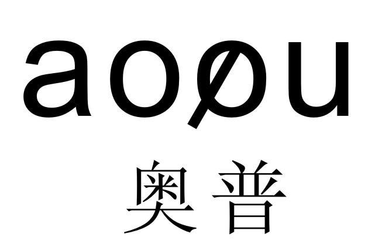
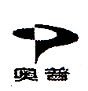
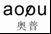
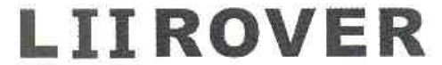
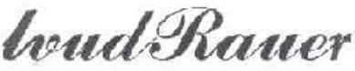
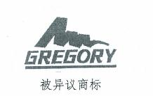

2016年中国法院50件典型知识产权案例
一、知识产权民事案件
（一）侵犯专利权纠纷案件
1.蒂森克虏伯机场系统（中山）有限公司与中国国际海运集装箱（集团）股份有限公司、深圳中集天达空港设备有限公司、广州市白云国际机场（股份）有限公司侵害发明专利权纠纷再审案〔最高人民法院（2016）最高法民再179号民事判决书〕
中华人民共和国最高人民法院
（2016）最高法民再179号
再审申请人（一审被告、二审上诉人）：蒂森克虏伯机场系统（中山）有限公司。住所地：广东省中山市火炬高科技产业开发区世纪大道侧。
法定代表人：Gerd-HermannKohl，该公司董事长。
委托诉讼代理人：翁莉，北京市路盛律师事务所律师。
委托诉讼代理人：谯荣德，北京市路盛律师事务所律师。
被申请人（一审原告、二审被上诉人）：中国国际海运集装箱（集团）股份有限公司。住所地：广东省深圳市南山蛇口工业区港湾大道2号中集研发中心8楼（办公）。
法定代表人：王宏，该公司董事长。
委托诉讼代理人：黄龙惠，该公司职员。
委托诉讼代理人：董巍，北京市磐华律师事务所律师。
被申请人（一审原告，二审被上诉人）：深圳中集天达空港设备有限公司。住所地：广东省深圳市南山区蛇口工业四路四号。
法定代表人：郑祖华，该公司董事长。委托诉讼代理人：张肇红，该公司技术管理委员会主任。
委托诉讼代理人：李侬，北京市磐华律师事务所律师。
一审被告：广州市白云国际机场股份有限公司。住所地：广东省广州市白云国际机场南工作区自编一号。
法定代表人：刘建强，该公司董事长。
再审申请人蒂森克虏伯机场系统（中山）有限公司（以下简称蒂森中山公司）因与被申请人中国国际海运集装箱（集团）股份有限公司（以下简称中集公司）、深圳中集天达空港设备有限公司（以下简称天达公司）、一审被告广州市白云国际机场股份有限公司（以下简称白云机场）侵害发明专利权纠纷一案，不服广东省高级人民法院（2013）粤高法民三终字第38号民事判决，向本院申请再审。本院于2016年1月13日作出（2014）民申字第2104号民事裁定，提审本案。本院依法组成合议庭，于2016年6月15日公开开庭审理了本案。再审申请人蒂森中山公司的委托诉讼代理人翁莉、谯荣德，被申请人中集公司的委托诉讼代理人黄龙惠、董巍，天达公司的委托诉讼代理人张肇红、李侬到庭参加诉讼。经本院依法传唤，白云机场未到庭参加诉讼。本案现已审理终结。
蒂森中山公司申请再审称：二审法院认定附录Y”液压稳定器”的性质属于产品使用说明书，而非公开出版物，在涉案专利申请日前不能公开获取，与事实不符且适用法律错误。二审法院已查明安装了液压稳定器的登机桥于2001年交付给了旧金山国际机场，其技术方案通过使用公开，附录Y的相关内容能够通过公开渠道获得，在此基础上，公众便可以依据《公共记录法》获取它，即在2001年产品使用公开时起，附录Y即进入可为不特定公众获取的状态。因此，应认定附录Y于涉案专利申请日前已经处于公众可以获取的公开状态，即属于公开出版物，能够佐证蒂森中山公司有关现有技术抗辩的主张。一审、二审法院对于本案侵权赔偿责任的确定应考虑过错责任原则。蒂森中山公司在本案被诉侵权产品上使用的技术是现有技术，对于该使用行为蒂森中山公司没有过错，故不应承担任何民事侵权责任。综上，蒂森中山公司请求本院撤销一审、二审判决，依法改判支持其再审请求。
中集公司和天达公司辩称：（一）《机坪驱动旅客登机桥操作和维护手册》（以下简称《手册》）及附录Y不构成专利法意义上的公开出版物。1.《手册》及附录Y作为产品说明书随产品销售而附赠，不是独立存在的传播载体，其本身不能表明印刷时间，也只能向特定的购买者而非社会公众公开，且向购买者公开的时间取决于产品完成销售的时间，这是产品说明书与公开出版物的最大区别，故《手册》及附录Y只能作为使用公开证据，而非公开出版物。2.蒂森中山公司提供的依据《公共记录法》获取《手册》及附录Y的证据，不能证明在涉案专利申请日前《手册》及附录Y是公开的。3.本案现有证据不能证明《手册》及附录Y能够被一般公众轻易从旧金山国际机场获取。4.在有关涉案专利的复审无效程序及行政诉讼程序中，国际知识产权局专利复审委员会（以下简称专利复审委员会）和一审、二审法院均认定《手册》及附录Y不是公开出版物。（二）蒂森中山公司制造的被诉侵权产品落入了涉案专利权的保护范围，依法应承担相应的民事侵权责任。中集公司和天达公司在本案诉讼前已致函蒂森中山公司提示其侵权行为，且其作为同行业竞争者，在涉案专利申请日至本案起诉日期间，没有理由不知道涉案专利技术方案的存在，因此蒂森中山公司存在主观过错，其关于其没有过错，不应承担侵权责任的主张没有事实和法律依据。综上，中集公司和天达公司请求本院依法驳回蒂森中山公司的再审申请。
中集公司和天达公司向广东省广州市中级人民法院起诉请求：中集公司和天达公司是专利号为ＺＬ20041000××××.9”登机桥辅助支撑装置和带有该装置的登机桥及其控制方法”的发明专利权人，白云机场和蒂森中山公司未经合法许可，擅自实施了其发明专利，侵犯了其专利权。故请求一审法院判令：1.白云机场立即停止侵权行为，即立即停止使用侵权产品，并赔偿经济损失1元；2.蒂森中山公司立即停止侵权行为，即立即停止制造、销售、许诺销售侵权产品，立即停止使用侵权方法，销毁侵权产品的成品、半成品及相关制造模具和专用零配件，并赔偿中集公司和天达公司经济损失50万元；3.案件诉讼费用由白云机场和蒂森中山公司承担。
一审法院经审理查明：ＺＬ20041000××××.9发明专利名称是”登机桥辅助支撑装置和带有该装置的登机桥及其控制方法”，申请日是2004年2月26日，授权公告日是2007年8月22日。授权时的专利权人是中集公司。2009年5月8日，该发明专利权人变更登记为中集公司和天达公司。该发明的权利要求书内容如下：1.一种登机桥辅助支撑装置，其特征在于，设置该登机桥的行走装置的行走横梁两端的下部，包括一伸缩调节装置、一支撑装置，该伸缩调节装置一端与该行走横梁连接，另一端与该支撑装置连接，该支撑装置可在地面与距地面一高度内移动，并可形成辅助支撑点，辅助支撑该行走横梁及其上部的登机桥结构。2－4（略）。5.根据权利要求1所述的登机桥辅助支撑装置，其特征在于，该伸缩调节装置为一动力推杆，该动力推杆由一固定杆端和一活动杆端组成，其固定杆端与该行走横梁连接，活动杆端与该支撑装置连接。6.根据权利要求5所述的登机桥辅助支撑装置，其特征在于，该支撑装置为一支撑座。7.（略）。8.根据权利要求6所述的登机桥辅助支撑装置，其特征在于，该活动杆端与该支撑座通过一铰链连接。9.根据权利要求5所述的登机桥辅助支撑装置，其特征在于，该动力推杆为伸缩油缸或电动推杆。10.一种登机桥，包括：一通道，设置于该行走横梁上部，一端固定于机场登机入口处，另一端连接于飞机入舱口；一升降装置，设置于该通道与飞机入舱口连接的一端；一行走装置，设置有一行走横梁，其上设置有一由回转支撑、铰支座、铰支轴组成的支撑组件；一行走轮组，设置于该支撑组件下部，并可绕该回转支撑转动；一控制系统，用于控制行走装置的行走转向，以及升降装置的升降；其特征在于，还包括一辅助支撑装置，设置于该行走装置的行走横梁两端的下部，包括一伸缩调节装置、一支撑装置，该伸缩调节装置一端与该行走横梁连接，另一端与该支撑装置连接，该支撑装置可在地面与距地面一高度内移动，并可形成辅助支撑点，辅助支撑该行走横梁及其上部的登机桥结构。11、12（略）。13.根据权利要求10所述的登机桥，其特征在于，该伸缩调节装置为一动力推杆，该动力推杆由一固定杆端和一活动杆端组成，其固定杆端与该行走横梁连接，活动杆端与该支撑装置连接。14.根据权利要求13所述的登机桥，其特征在于，该支撑装置为一支撑座。15.（略）。16.根据权利要求14所述的登记桥，其特征在于，该活动杆端与该支撑座通过一铰链连接。17.根据权利要求13所述的登机桥，其特征在于，该动力推杆为伸缩油缸或电动推杆。18、19（略）。20.一种应用权利要求10所述的登机桥的控制方法，其特征在于，该方法包括如下步骤：1）设置一行走装置，具有一行走横梁，其上设置有一由回转支撑、铰支座、铰支轴组成的支撑组件；一行走轮组，设置于该支撑组件下部，并可绕该回转支撑转动；用于带动登机桥行走；2）设置一通道，设置于该行走横梁上部，用于连通机场登机入口与飞机入舱口；3）设置一升降装置，用于升降该通道，使之与飞机入舱口连接；4）设置一控制系统，用于控制该行走装置的行走转向，以及升降装置的升降；5）设置一辅助支撑装置，安装于该行走装置的行走横梁两端的下部，包括一伸缩调节装置、一支撑装置，该伸缩调节装置一端与该行走横梁连接，另一端与该支撑装置连接，用于通过登机桥的控制系统控制调节该辅助支撑装置的伸缩调节装置，使该支撑装置可在地面与距地面一高度内移动，并支撑于地面上，形成辅助支撑点，辅助支撑该行走横梁及其上部的登机桥结构。21、22（略）。23.根据权利要求20所述的登机桥的控制方法，其特征在于，在步骤5中，该辅助支撑装置的伸缩调节装置设置为动力推杆，该支撑装置设置为支撑座；并在登机桥行驶接机位后，通过控制系统控制动力推杆动作，以一定推力将该支撑座支撑在地面上，辅助支撑登机桥使之稳定；当登机桥需要再次行驶前，通过控制系统控制动力推杆再次动作，收回支撑在地面上的该支撑座。24－27（略）。该发明的说明书在”发明内容”中称：本发明所要解决的技术问题在于提供一种登机桥辅助支撑装置……以提高登机桥的稳定性。中集公司和天达公司主张以该发明专利权利要求书中第1、5、6、8、9、10、13、14、16、17、20、23项确定其专利权的保护范围。
2011年12月13日，一审法院组织双方当事人共同来到白云机场，对被诉侵权的第117号登机桥（外桥）进行现场勘验。白云机场和蒂森中山公司确认该登机桥是蒂森中山公司制造并销售给白云机场。蒂森中山公司称该登机桥行走横梁两侧所设装置名为”悬臂梁装置”。将被诉侵权的”悬臂梁装置”与涉案专利权利要求1、5、6、8、9中的登机桥辅助支撑装置进行比对，蒂森中山公司主要提出两点区别，1.前者设置在行走横梁两端的外侧，后者设置在行走横梁两端的下部，前者对登机桥起到稳定作用，后者起辅助支撑作用，故两者不相同也不等同；2.前者的活动杆端与支撑座通过球铰连接，后者是通过铰链连接，球铰可以在各个方向活动，而铰链只能在一个平面移动，故两者不相同也不等同。中集公司和天达公司认为，蒂森中山公司所述两者相对行走横梁的位置不同，原因仅在于蒂森中山公司对行走横梁的界定不同，两者均对登机桥起稳定作用，且球铰是铰链的一种，故前者落入后者保护范围。将被诉侵权的登机桥与涉案专利权利要求10、13、14、16、17中的登机桥进行比对，蒂森中山公司所提区别实质同上。将被诉侵权登机桥的控制方法与涉案专利权利要求20、23中登机桥的控制方法进行比对，两者相同。蒂森中山公司主张被诉侵权技术使用的是现有技术，并提交了以下四组证据证明：1.蒂森克虏伯机场系统公司运营总监雷蒙德・K・斯特里特的证言及来源于该公司的佐证证言的附件。雷蒙德・K・斯特里特出庭作证称，1998年，蒂森克虏伯集团的一家成员公司蒂森电梯公司与旧金山国际机场签订一项合同(编号：5520.L)，为旧金山国际机场提供机场A和G登机区域的旅客装载桥、饮用水系统和飞机进港系统。蒂森克虏伯机场系统公司作为转包商提供第5520.L号合同项下的旅客登机桥。其中两座旅客登机桥安装之后曾出现过登机桥晃动幅度过大的情况。从2000年10月至2001年3月，蒂森克虏伯集团派往旧金山国际机场的现场小组为消除晃动幅度过大的问题研究出一种技术解决方案，其中包括在登机桥的横梁／负重轮的两侧均安装一个液压稳定器，以增强登机桥的稳定性。这种方法被称为”悬臂梁设计”或”悬臂梁装置”。用户接受使用”悬臂梁设计”或”悬臂梁装置”的建议。随后便进行了生产和安装。《手册》的附录Y”液压稳定器”经更新后发布并交付用户。该公司没有与用户就有关附录Y签订任何保密协议，也未要求用户将”悬臂梁设计”或”悬臂梁装置”视为一项属于该公司的商业秘密。”悬臂梁设计”或”悬臂梁装置”自从在旧金山国际机场安装以来一直持续使用。装有”悬臂梁设计”或”悬臂梁装置”的登机桥对外开放，为公众所见并公开使用。”悬臂梁设计”或”悬臂梁装置”的基本机械结构、液压缸和对液压操作系统的修改自从2000年至2001年期间为旧金山国际机场旅客登机桥设计出来一直没有发生变化。2.旧金山国际机场雷蒙德・G・克萨达的证言及来源于机场的佐证证言的附件。雷蒙德・G・克萨达出庭作证称两座旅客登机桥在安装后曾出现晃动，蒂森克虏伯机场系统公司与其西班牙生产厂提出一个解决方案，即在登机桥的横梁／负重轮的两侧各安装一个液压稳定器，这种方法被称为”悬臂梁设计”或”悬臂梁装置”。机场接受了该解决方案。从2000年12月到2001年初，蒂森克虏伯机场系统公司提供并在问题登机桥上安装了悬臂梁装置。同时，该公司还向旧金山国际机场提供了《手册》的附录Y”液压稳定器”，其未与旧金山国际机场签订涉及附录Y的保密协议，也未要求旧金山国际机场将悬臂梁装置作为其商业机密对待。悬臂梁装置自安装后一直持续使用，其基本的机械结构、液压缸和液压操作系统均未发生过实质性更改。带有悬臂梁装置的登机桥对外开放、公开使用并且为公众所见。3.蒂森克虏伯集团弗里特赫姆・沃彭贝尔格的证言及来源于蒂森亨舍尔机场系统有限公司的佐证证言的附件。弗里特赫姆・沃彭贝尔格一审出庭作证称，2000年10月期间，在了解到蒂森克虏伯机场系统公司提供给旧金山国际机场的两架登机桥出现过度晃动后。其所在公司派往旧金山国际机场现场的同事制定了一个解决方案，即在桥体横梁／转向架的两侧加装液压稳定器。该方案被称为”悬臂梁设计”或”悬臂梁装置”。2001年3月末之前，”悬臂梁设计”或”悬臂梁装置”由蒂森克虏伯机场系统公司制造并安装在旧金山国际机场的两架登机桥上。同时，该公司还向旧金山国际机场提交了更新版的《手册》的附录Y”液压稳定器”，且没有就附件Y与旧金山国际机场签订保密协议，也没有要求旧金山国际机场将其视为商业秘密。自从”悬臂梁设计”或”悬臂梁装置”被安装在旧金山国际机场登机桥上后，就处于公开状态，且其基本机械结构、液压缸和对液压操作系统的改进一直保留最初的设计。4、道某的证言及附件。道某的书面证言称其于2011年11月11日，以加利福尼亚州（以下简称加州）公民的身份，根据该州的《公共记录法》，通过一封经隔夜邮件送达的信函，向旧金山国际机场要求获得蒂森克虏伯机场系统公司作为第5520.L号合同分包商提供给机场的《手册》的附录Y”液压稳定器”，该操作和维护手册的封面页／标题页及附录清单。2011年11月22日，在不承担保密义务，也未接到任何关于我所接收到的材料系机密材料或者应予保密的建议的情况下，接到了上述文件。在正式询问了凯某（此人系负责机场方面工作的旧金山市地方检察官助理，而且通常是由其负责机场方面的《公共记录法》相关程序处理）之后，卢赫在2011年11月22日的一封电子邮件中向其确认，她理解，至少自2001年12月31日起，公众就已经可以按照《公共记录法》所规定程序从机场获取上述文件，并且此等文件从未被列为机密文件或禁止公众获取。蒂森中山公司认为，上述四组证据足以证明蒂森克虏伯集团早在2000-2001年就在旧金山国际机场的登机桥上公开使用了被诉侵权的”悬臂梁装置”技术，而蒂森克虏伯集团当时交付给机场的《手册》的附录Y”液压稳定器”也处于出版公开状态，故该技术构成涉案专利的现有技术。中集公司和天达公司认为，上述证据大部分来源于蒂森中山公司的关联公司或其客户公司，其真实性难以确认，且蒂森中山公司不能证明这些证据将本案被诉侵权的”悬臂梁装置”技术特征一一公开，故蒂森中山公司的现有技术抗辩不能成立。蒂森中山公司同时以上述四组证据主张蒂森克虏伯集团对被诉侵权的”悬臂梁装置”技术享有先用权，其作为集团的一份子，也享有先用权。蒂森中山公司称，蒂森克虏伯集团的”悬臂梁装置”技术除最早在2000-2001年于旧金山国际机场使用外，还在2005年于蒙特利尔机场，以及本次诉讼的白云机场使用过。中集公司和天达公司为本案支付公证费8700元。中集公司和天达公司明确要求法院酌情确定蒂森中山公司的赔偿数额。另查明，蒂森中山公司于2006年3月28日登记成立，注册资本255万美元。
本案一审过程中，蒂森中山公司于2011年10月21日及12月28日向专利复审委员会提出申请宣告中集公司和天达公司的涉案专利权无效。蒂森中山公司将其在本案中主张现有技术抗辩的四组证据也作为无效请求的证据予以提交。2012年8月10日，专利复审委员会作出第19135号无效宣告请求审查决定，维持中集公司和天达公司涉案专利权有效。
一审法院认为：中集公司和天达公司是涉案”登机桥辅助支撑装置和带有该装置的登机桥及其控制方法”专利权人，其专利权应受法律保护。本案中，中集公司和天达公司主张以权利要求1、5、6、8、9、10、13、14、16、17、20、23确定其专利权的保护范围。将被诉侵权产品和控制方法与涉案专利权利要求进行比对，前者落入后者的保护范围。蒂森中山公司主张被诉侵权的”悬臂梁装置”是现有技术，即该技术在国外出版物上公开发表和在国外公开使用。由于涉案专利申请日是2004年2月26日，故应当适用2001年7月1日施行的《中华人民共和国专利法》认定该专利的现有技术，即涉案专利的现有技术是申请日前在国内外出版物上公开发表、在国内公开使用或以其他方式为公众所知的同样发明。显然，在国外公开使用并不符合上述现有技术的要求。关于在国外出版物上公开发表，蒂森中山公司提交了四组证据予以证明。一审法院认为，第一、三组证据是蒂森中山公司证明其关联公司于2000-2001年在旧金山国际机场使用”悬臂梁装置”技术的主要证据。由于这两组证据中的证人是蒂森中山公司关联公司的职员，证言附件也均来源于其关联公司内部保存的资料，故本身缺乏充分的证明力。至于第二组证据，由于旧金山国际机场与蒂森中山公司关联公司有长期合作关系，且来源于机场的五份附件未直接反映”悬臂梁装置”技术的内容，故该组证据未能对第一、三组证据提供足够的补充证明。所以，前三组证据不足以证明蒂森中山公司关联公司于2000-2001年在旧金山国际机场使用了”悬臂梁装置”技术。其次，《手册》的附录Y，是一份由蒂森中山公司关联公司自行印制的非正规出版物。在蒂森中山公司不能证明其关联公司曾使用”悬臂梁装置”技术的情况下，一审法院难以确认该附录Y内容的真实性及其印制及交付给旧金山国际机场的时间。关于第四组证据，虽能显示加州公民现在根据该州的《公共记录法》可以从旧金山国际机场获得附录Y，但不足以证明涉案专利申请日前也存在这种可行性。该组证据附件6虽称自2001年12月31日起公众就可以按照《公共记录法》获得附录Y，但由于电子邮件证据在产生及存储过程中的可靠性较低，在没有其他证据佐证的情况下，一审法院难以认定其真实性。综上，蒂森中山公司不能证明”悬臂梁装置”技术于2000-2001年就已通过附录Y公开发表，故其现有技术抗辩不能成立。关于蒂森中山公司主张的先用权抗辩，因其是在涉案专利申请日之后成立，且表示其关联公司在涉案专利申请日前只在旧金山国际机场使用过”悬臂梁装置”技术，故其先用权抗辩不能成立。蒂森中山公司未经许可，制造、销售与涉案专利相同的登机桥辅助支撑装置以及带有该辅助支撑装置的登机桥产品，使用与涉案专利相同的登机桥的控制方法，侵犯了中集公司和天达公司的涉案专利权。白云机场确认购入上述侵权产品，也构成侵权。因中集公司和天达公司未提交证据证明白云机场的使用行为存在主观恶意，且确认白云机场从蒂森中山公司合法购入侵权产品，故白云机场不承担赔偿责任。对于蒂森中山公司应承担的侵权赔偿责任问题，一审法院酌情予以确定。综上，一审法院依照《中华人民共和国民法通则》第一百三十四条第一款第一项、第七项和第二款，《中华人民共和国专利法》第十一条第一款、第六十五条的规定，于2012年9月24日作出（2011）穗中法民三初字第107号民事判决：1.白云机场于判决发生法律效力之日起立即停止使用侵犯涉案”登机桥辅助支撑装置和带有该装置的登机桥及其控制方法”专利权的产品；2.蒂森中山公司于判决发生法律效力之日起立即停止制造、销售侵犯涉案”登机桥辅助支撑装置和带有该装置的登机桥及其控制方法”专利权的产品，立即停止使用侵犯涉案”登机桥辅助支撑装置和带有该装置的登机桥及其控制方法”专利权的方法，并于十日内销毁侵权产品的成品、半成品及专用生产模具和零配件；3.蒂森中山公司于判决发生法律效力之日起十日内赔偿中集公司、天达公司经济损失50万元；4.驳回中集公司、天达公司的其他诉讼请求。一审案件受理费8800元，由蒂森中山公司负担。
蒂森中山公司不服一审判决，向广东省高级人民法院提起上诉。请求依法撤销一审判决，将本案发回重审或者在二审法院查清事实基础上改判驳回中集公司、天达公司的全部诉讼请求。主要事实与理由：（一）被诉侵权产品和操作方法未落入涉案专利权保护范围。1.一审判决对权利要求1中技术特征”辅助支撑装置设置于……和行走横梁两端的下部”作扩大解释缺乏依据。2.一审判决忽略了专利审查档案中反映的权利要求20曾经被修改的事实，遗漏了被诉侵权装置在登机桥行驶过程中不能形成”辅助支撑点”，从而起不到辅助支撑作用的事实。3.一审判决对球铰和铰链的技术内容的认定没有依据，被诉侵权产品的球铰技术特征没有落入涉案专利权的保护范围。（二）被诉侵权产品使用的是现有技术，因此不构成侵权。一审判决对现有技术抗辩适用法律和证据认定均存在错误。1.现有技术抗辩属于对被诉侵权行为性质的认定，故应适用行为发生时的有效法律。本案被诉侵权行为发生在2008年修订的专利法实施之后，故一审判决中认为应适用修订前的专利法没有法律依据。2.一审判决对现有技术抗辩相关证据认定错误。本案现有技术的公开方式包括使用公开和出版物公开，有关现有技术的证据已经形成完整的证据链，可以证明现有技术已经以出版及使用形式公开。2008年修订的专利法将现有技术的范围扩大到域外使用公开和其他方式公开，本案正是符合这种情形的典型案例。为支持自己的主张，蒂森中山公司还补充提交如下证据：1.凯某于2013年3月12日出具的证言，其作为派到旧金山国际机场的旧金山县和市地方检察官办公室的副地方检察官，证明2004年前包括附录Y在内的技术手册即可依加州《公共记录法》规定向公众披露。2.维吉尼亚李于2013年3月14日出具的证言及相关附件，证明其根据加州《公共记录法》的规定，于2013年3月向旧金山国际机场请求获得《手册》的完整的手册，同年3月12日接到了经旧金山市和地方检察官办公室提供的文件副本共三卷，未规定保密义务也未限制其使用和进一步披露。3.雷蒙德・K・斯特里特和雷蒙德・G・克萨达的补充证言及相关附件各一份。内容与一审提供的第一组和第二组证据基本一致，目的是加强证据的可信度。4.黄浦区公证处(2011)沪黄证经字第9802号公证书。公证旧金山国际机场官方网站部分网页，其中有旧金山国际机场委员会1998年4月7日会议记录，与蒂森电梯公司签订于1998年的第5520.L号合同，该项目是新国际机场综合枢纽的组成部分。5.黄浦区公证处(2011)沪黄证经字第10346号公证书。公证旧金山国际机场官方网站部分网页，其中有旧金山国际机场委员会2001年10月16日会议记录，旧金山国际机场委员会通过第5520.L号合同第4号修改等内容。6.黄浦区公证处(2013)沪黄证经字第2512号公证书及上海市卢湾公证处(2013)沪卢证经字第386号公证书，均为网页公证。涉及内容包括：蒂森・斯特恩斯公司（ThyssenStearnsInc.）于2002年12月23日更名为蒂森克虏伯机场系统公司（ThyssenkruppAirportSystems,Inc.），加州政府网站对《公共记录法》、地方检察官职责等的介绍；证人凯某、道某身份的官方记录等。（三）根据上述事实，蒂森中山公司依法享有先用权。（四）一审判决”销毁侵权产品的成品、半成品及专用生产模具和零配件”以及关于赔偿数额的确定，缺乏事实和法律依据。二审法院经审理查明：（一）关于蒂森克虏伯集团与本案有关的成员公司相关情况。蒂森电梯公司(ThyssenElevatorCorporation)，负责提供机场登机区域旅客装载桥、饮用水系统和飞机进港系统，后继实体为蒂森克虏伯电梯公司(ThyssenKruppElevatorCorporation)。蒂森克虏伯集团旅客登机桥生产部门有三家：位于美国的蒂森・斯特恩斯公司(ThyssenStearnsInc.)，2002年12月23日更名为蒂森克虏伯机场系统公司(ThyssenKruppAirportSystems,Inc.)；位于西班牙的蒂森克虏伯机场系统有限公司(ThyssenKruppAirportSystems,S.A.)；位于中国的蒂森中山公司。（二）关于旧金山国际机场1998年至2001年机场改造工程的相关情况。1998年，蒂森电梯公司与旧金山国际机场签订一项合同（编号：5520.L），为旧金山国际机场提供机场A和G登机区域的旅客装载桥、饮用水系统和飞机进港系统。蒂森・斯特恩斯公司作为转包商提供第5520.L号合同项下的旅客登机桥。旅客登机桥安装之后，2000年10月旧金山国际机场向蒂森克虏伯机场系统公司投诉位于G99A和G102A两门的两架登机桥晃动幅度过大。从2000年10月至2001年3月，蒂森克虏伯集团派往旧金山国际机场的现场小组为消除晃动幅度过大的问题研究出一种技术解决方案，其中包括在登机桥的横梁／负重轮的两侧均安装一个液压稳定器，以增强登机桥的稳定性。《手册》的附录Y”液压稳定器”经更新后发布并交付用户。蒂森・斯特恩斯公司没有与用户就有关附录Y”液压稳定器”签订任何保密协议，也未要求用户将”悬臂梁设计”或”悬臂梁装置”视为一项商业秘密。装有”悬臂梁设计”或”悬臂梁装置”的登机桥对外开放，为公众所见并公开使用。”悬臂梁设计”或”悬臂梁装置”的基本机械结构、液压缸和对液压操作系统的修改自从2000年至2001年期间为旧金山国际机场旅客登机桥设计出来一直没有发生变化。2001年初，蒂森克虏伯机场系统公司要求机场就悬臂梁装置发生的成本支付款项。2001年10月，机场总监向机场委员会建议批准第5520.L号合同的第4号修订文件，附件涉及为G99A和G102A登机门提供液压稳定器金额3万美元。机场委员会批准了第4号修订文件，并授权机场总监按照委员会相关程序对工作进行验收并支付最后款项。（三）关于被诉侵权产品与附录Y”液压稳定器”技术特征的比对情况。附录Y”液压稳定器”是蒂森・斯特恩斯公司《手册》的一部分，每一页左上角均标有蒂森・斯特恩斯公司的简称和标志。附录Y”液压稳定器”的主要内容是液压稳定器的操作和预防性维护方法，附有电路原理图、液压原理图、横梁组件和轮架组件的结构图、附录清单等。经当庭比对，中集公司和天达公司确认，被诉侵权产品的技术特征与附录Y”液压稳定器”的相应技术特征有以下区别：1.被诉侵权产品的横梁比附录Y”液压稳定器”的横梁宽；2.被诉侵权产品支撑座形状是圆的，而附录Y”液压稳定器”的支撑座形状是方的。同时确认，被诉侵权产品的其他技术特征与附录Y”液压稳定器”的相应技术特征没有区别。（四）关于附录Y”液压稳定器”的相关内容是否可以通过公开渠道获得的相关情况。凯某（派到旧金山国际机场的旧金山县和市地方检察官办公室的副地方检察官）证明：她理解，蒂森・斯特恩斯公司于2001年向旧金山国际机场提供的名为《手册》，包括该手册的附录Y”液压稳定器”在内，如果在2001年至2004年期间被公众索取，那么根据当时的加州《公共记录法》，该手册属于可公开的公共记录，因此会向请求获取该手册的公众公开。道某（美国加州公民）证明：2011年11月11日，作为加州公民，我根据该州的《公共记录法》，通过一封经隔夜邮件送达的信函，向旧金山国际机场要求获得蒂森克虏伯机场系统公司作为第5520.L号合同分包商提供给机场的《手册》的附录Y”液压稳定器”，该操作和维护手册的封面页／标题页及附录清单。2011年11月22日，在不承担保密义务，也未接到任何关于我所接收到的材料系机密材料或者应予保密的建议的情况下，我接到了上述文件。维吉尼亚李（美国加州公证人）证明，其根据加州《公共记录法》的规定，于2013年3月1日向旧金山国际机场请求获得《手册》的完整的手册，同年3月12日接到了经旧金山市和地方检察官办公室提供的文件副本共三卷，未规定保密义务也未限制其使用和进一步披露。（五）关于被诉侵权产品的生产时间。2010年11月4日，中集公司委托代理人孙建岐与公证员赵雷、工作人员严斯平来到白云机场，对位于停机坪内第117号登机桥的内外观进行拍摄。公证书所附照片的厂家铭牌显示生产时间是2010年。（六）关于本案有关现有技术抗辩的证据在行政诉讼中的认定情况。蒂森中山公司不服专利复审委员会第19135号无效宣告请求审查决定，向北京市第一中级人民法院提起行政诉讼，同时将本案一审判决有关现有技术抗辩的四组证据提交该法院，证据组1-3结合欲证明附录Y是公开出版物。2013年5月15日，该院作出(2013)一中知行初字第133号行政判决，维持专利复审委员会第19135号无效宣告请求审查决定。该判决认为，证据组1-3的结合并不能证明附录Y属于专利法意义上的出版物。一审法院查明的其他事实属实，二审法院予以确认。
二审法院认为：（一）关于被诉侵权产品及控制方法是否落入涉案专利权保护范围问题。蒂森中山公司为证明被诉侵权产品与涉案专利权不相同，指出三点区别，二审法院逐一予以审查。1.蒂森中山公司认为，被诉侵权产品的横梁比涉案专利的横梁宽。二审法院认为，在涉案专利的权利要求中，并未对行走横梁的宽度进行限定，任何宽度的行走横梁均落入涉案专利权利要求的行走横梁的字面保护范围。结合该专利所要解决的技术问题也可知，行走横梁的宽度并非解决该专利所要解决的技术问题的必要技术特征，因此被诉侵权产品的行走横梁落入涉案专利权的保护范围。2.蒂森中山公司认为，由于权利要求20曾经被修改，被诉侵权装置在登机桥行驶过程中不能形成”辅助支撑点”，从而起不到辅助支撑的作用。经审查，权利要求20在实质审查过程中，由于对技术方案客观所产生的技术效果的描述语言不应放在权利要求中，因此删除了”使得登机桥在行驶过程中有一定幅度的侧摆时，该辅助支撑装置起作用，防止登机桥的摆动”的内容。但这一修改并未扩大或缩小专利权保护范围，无法据此得出”被诉侵权装置在登机桥行驶过程中不能形成辅助支撑点”的结论，因此二审法院对该项上诉理由无法支持。3.蒂森中山公司认为，被诉侵权产品的球铰与涉案专利的铰链不同，一审判决认为”球铰是铰链的一种”没有事实依据。经二审法院审查，涉案专利权利要求8明确了活动杆端与支撑座通过一铰链连接。蒂森中山公司虽称被诉侵权产品使用的球铰与铰链不同，但是并没有提供相关证据。二审法院认为，两者并没有实质性区别，因此对该项理由不予支持。综上，被诉侵权产品及控制方法与涉案专利的全部技术特征相同，落入涉案专利权的保护范围。（二）关于现有技术抗辩是否成立问题。二审法院认为，本案应适用2001年7月1日施行的《中华人民共和国专利法》确定现有技术的范围。关于本案的现有技术是出版物公开还是使用公开问题。经查，2001年初，蒂森・斯特恩斯公司为旧金山国际机场G99A和G102A两门的两架旅客登机桥安装了液压稳定器并实际使用。液压稳定器的相关内容记载于《手册》的附录Y”液压稳定器”中。根据上述事实，二审法院认为：1.液压稳定器的技术方案已经通过使用公开。为登机桥安装的液压稳定器位于旧金山国际机场的公共区域，液压稳定器的技术方案已经处于任何不特定的公众都可以看到的状态。2.附录Y”液压稳定器”的性质属于产品使用说明书，而非公开出版物。所谓出版，是指以有形形式复制并向公众发行的能够阅读或可看到的作品复制品。产品使用说明书是随产品销售的技术资料，其目的是供购买者在使用、维修时阅读，通常只向购买该产品的用户而非社会公众发放，不符合出版的特征，不宜认定为公开出版物。3.产品使用说明书可以作为使用公开的证据之一。产品使用说明书是供购买者使用和维护产品的必备之物，一般情况下产品使用说明书并不单独流通，而是随着产品的销售行为被公众所知，其公开时间一般是产品的销售时间，因此可以作为使用公开的佐证。综上，液压稳定器的技术方案已经在国外通过使用公开，而非出版物公开。鉴于液压稳定器的技术方案在国外通过使用公开，根据修改前的专利法不属于现有技术，蒂森中山公司实施的技术不属于现有技术，因此侵犯了涉案专利权。（三）关于先用权抗辩是否成立问题。《最高人民法院关于审理侵犯专利权纠纷案件应用法律若干问题的解释》第十五条第四款规定，先用权人在专利申请日后将其已经实施或做好实施必要准备的技术或设计转让或者许可他人实施，被诉侵权人主张该实施行为属于在原有范围内继续实施的，人民法院不予支持，但该技术或设计与原有企业一并转让或者承继的除外。因此，即使蒂森・斯特恩斯公司对2001年在旧金山国际机场安装的液压稳定器享有先用权，也不能超出原有的范围制造和使用。蒂森中山公司以获得他人许可为由，主张对被诉侵权产品享有先用权，但是因为许可方与被许可方并非同一民事主体，也不符合该技术与原有企业一并转让或者承继的情形，即使其获得许可的技术与被诉侵权产品相同，二审法院也依法不能支持其先用权主张。（四）关于一审判决确定的民事责任承担方式以及赔偿数额是否合理问题。我国民法通则和侵权责任法均规定，承担侵权责任的主要方式包括停止侵害。根据不同侵权行为的特点，人民法院判决停止侵害的具体方式有所不同。在侵害专利权纠纷中，为了确保侵害行为不继续实施，法院判决要求侵权人销毁侵权产品的成品、半成品及专用生产模具和零配件是符合法律规定的。根据《中华人民共和国专利法》第六十五条第二款的规定，权利人的损失、侵权人获得的利益和专利许可使用费均难以确定的，人民法院可以根据专利权的类型、侵权行为的性质和情节等因素，确定给予一万元以上一百万元以下的赔偿。本案由于权利人的损失、侵权人获得的利益和专利许可使用费均难以确定，一审法院综合涉案专利权的类型、侵权行为的性质和情节等因素，在法定赔偿额内确定50万元的赔偿数额，并无不当。综上，二审法院依照《中华人民共和国民事诉讼法》第一百七十条第一款第一项之规定，于2014年7月16日作出（2013）粤高法民三终字第38号民事判决：驳回上诉，维持原判。二审案件受理费8800元，由蒂森中山公司负担。
本院经审理查明，原一、二审法院查明的事实基本属实。本院认为：本案争议问题是，蒂森中山公司的现有技术抗辩是否成立。《最高人民法院关于审理侵犯专利权纠纷案件应用法律若干问题的解释（二）》第二十二条规定：”对于被诉侵权人主张的现有技术抗辩或者现有设计抗辩，人民法院应当依照专利申请日时施行的专利法界定现有技术或者现有设计。”本案中，中集公司和天达公司主张的涉案专利申请日是2004年2月26日，故本案应适用2000年修正的《中华人民共和国专利法》界定现有技术。该法第二十二条规定，授予专利权的发明，应当具备新颖性。新颖性，是指在申请日以前没有同样的发明在国内外出版物上公开发表、在国内公开使用或者以其他方式为公众所知，也没有同样的发明由他人向国务院专利行政部门提出过申请并且记载在申请日以后公布的专利申请文件中。据此，涉案专利的现有技术是申请日前在国内外出版物上公开发表、在国内公开使用或以其他方式为公众所知的同样发明。蒂森中山公司主张，因附录Y构成出版物公开，故其使用的是现有技术，不侵犯涉案专利权。本院认为，专利法意义上的出版物是指记载有技术或设计内容的独立存在的传播载体，并且应当表明或者有其他证据证明其公开发表或出版的时间。从本案查明的事实来看，附录Y是符合上述含义的出版物，理由如下：第一，对于本案被诉侵权产品和控制方法落入涉案专利权保护范围，附录Y记载了被诉侵权产品的技术特征的事实，各方当事人均无异议，因此附录Y记载了中集公司和天达公司主张的涉案专利权利要求的技术特征。第二，蒂森中山公司提交的在案证据能够证明附录Y随着蒂森电梯公司与旧金山国际机场签订的编号为5520.L合同的履行，于2001年前后交付给旧金山国际机场，且蒂森・斯特恩斯公司没有就附录Y与旧金山国际机场签订保密协议，即附录Y不属于商业秘密，持有者不负有保密义务。第三，凯某（派到旧金山国际机场的旧金山县和市地方检察官办公室的副地方检察官）证明，包括附录Y在内的《手册》，如果在2001年至2004年期间被公众索取，根据当时的加州《公共记录法》，该手册属于可公开的公共记录，因此会向请求获取该手册的公众公开。美国加州公民道某、美国加州公证人维某《公共记录法》，分别于2011年11月22日和2013年3月12日获得了附录Y的复印件。由此可见，附录Y可以通过公开渠道获得。综上，附录Y虽是一份产品操作和维护说明书并随产品销售而交付使用者，但其使用者以及接触者均没有保密义务，也即附录Y是可公开的，且其能够为不特定公众通过复印的方式获取，由此可见，附录Y系独立存在的传播载体，鉴于其也记载了涉案专利技术的技术特征，其交付给旧金山国际机场的时间，即公开时间亦能确定，故其属于专利法意义上的出版物公开，蒂森中山公司据此主张现有技术抗辩，有事实和法律依据，本院予以支持。原审法院认为附录Y不属于出版物，系适用法律错误，本院予以纠正。中集公司和天达公司认为，本案现有证据不能证明附录Y在涉案专利申请日前是公开的，且能为一般公众轻易从旧金山国际机场获取。本院认为，中集公司和天达公司没有提供证据佐证其主张，即本案没有证据证明附录Y在涉案专利申请日之前处于保密状态，且不能为不特定公众所获取，故其主张没有事实依据，本院不予支持。2008年修正的《中华人民共和国专利法》第六十二条规定：”在专利侵权纠纷中，被控侵权人有证据证明其实施的技术或者设计属于现有技术或者现有设计的，不构成侵犯专利权。”如前所述，蒂森中山公司有证据证明其实施的技术属于现有技术，故其制造、销售被诉侵权产品的行为不构成侵犯涉案专利权，亦无需承担侵权责任，原审法院判决其承担侵权责任没有事实和法律依据，本院予以纠正。同理，白云机场购入被诉侵权产品并使用的行为亦未侵犯涉案专利权。原审法院认定其构成侵权无事实和法律依据，本院予以纠正。综上所述，蒂森中山公司的申请再审理由有事实和法律依据，本院予以支持；原审裁判认定事实和适用法律错误，本院予以纠正。依照2000年修正的《中华人民共和国专利法》第二十二条、2008年修正的《中华人民共和国专利法》第六十二条、《中华人民共和国民事诉讼法》第二百零七条第一款、《最高人民法院关于适用<中华人民共和国民事诉讼法>的解释》第四百零七条第二款之规定，判决如下：
一、撤销广东省高级人民法院（2013）粤高法民三终字第38号民事判决；
二、撤销广东省广州市中级人民法院（2011）穗中法民三初字第107号民事判决；
三、驳回被申请人中国国际海运集装箱（集团）股份有限公司和深圳中集天达空港设备有限公司的诉讼请求。
一审、二审案件受理费各8800元，均由被申请人中国国际海运集装箱（集团）股份有限公司和深圳中集天达空港设备有限公司负担（本判决生效后七日内交纳）。
本判决为终审判决。
审判长 李剑
代理审判员 宋淑华
代理审判员 吴蓉
二��一六年十月十日
书记员 周睿隽
2.昆山山桥机械科技有限公司与天珩机械股份有限公司确认不侵害专利权纠纷上诉案〔江苏省高级人民法院（2016）苏民终610号民事裁定书〕
江苏省高级人民法院
民 事 裁 定 书
(2016)苏民终610号
上诉人(原审原告)昆山山桥机械科技有限公司，住所地江苏省昆山市周市镇新浦路168号。
法定代表人施梅玲，该公司董事长。
委托代理人汪旭东，南京知识律师事务所律师。
委托代理人沈浩，南京知识律师事务所律师。
被上诉人(原审被告)天珩机械股份有限公司，住所地台湾嘉义县大林镇三村里桥仔头1-6号。
法定代表人邱生添，该公司董事长。
委托代理人张杰，江苏钟山明镜（苏州）律师事务所律师。
上诉人昆山山桥机械科技有限公司（以下简称山桥公司）因与被上诉人天珩机械股份有限公司（以下简称天珩公司）确认不侵害专利权纠纷一案，不服江苏省苏州市中级人民法院（2015）苏中知民初字第00108号民事裁定，向本院提起上诉。本院于2016年4月14日受理后，依法组成合议庭。本案现已审理终结。
山桥公司一审诉称：其为自动化设备领域具有深厚研发能力的资深企业，生产包括纺纱线套袋机等设备。天珩公司为第ZL20102055××××.6号”纺纱线自动套袋机”的专利权人。2014年期间，天珩公司向山桥公司及其客户发送律师函，警告称山桥公司的纺纱线套袋机构成对天珩公司第ZL20102055××××.6号”纺纱线自动套袋机”的专利侵权，此行为严重侵害了山桥公司的正常产品生产与市场经营。其后，天珩公司以山桥公司为被告向苏州市中级人民法院提起涉案专利的侵权诉讼[案号为（2014）苏中知民初字第00187号]，经过法院现场勘验和审理，足以认定山桥公司的产品没有落入涉案专利的保护范围。后天珩公司在实体审理已经终结的情况下申请撤诉，法院予以准许。山桥公司认为天珩公司的撤诉行为表明其保留在不特定时间再次起诉山桥公司的诉权，且拒绝确认山桥公司没有侵犯其专利权这一事实，该行为为山桥公司在中国地区开展经营带来严重不确定的不利影响，故依据《中华人民共和国民事诉讼法》第一百一十九条提起本案诉讼，请求法院：1、判定山桥公司生产的纺纱线自动套袋机产品不侵害第ZL20102055××××.6号专利权；2、判令天珩公司赔偿山桥公司为制止侵权支出的合理开支52000元。
天珩公司一审答辩称，1、本案不符合《最高人民法院关于审理侵犯专利权纠纷案件应用法律若干问题的解释》第十八条规定的受理条件，天珩公司在发出书面警告函后提起了诉讼，后因无法提供证据而提出撤诉申请，未再向山桥公司及其客户、公共媒体发出任何警告，故本案不应受理；2、天珩公司从未滥用诉权，在侵权诉讼中遵守诉讼程序和秩序，撤诉是其合理行使诉权，并不违反相关法律规定，也未造成山桥公司权利处于不确定状态；3、山桥公司关于要求赔偿合理支出52000元的请求无依据，聘请律师是山桥公司自身行为，双方无在先合同支持该请求，相关费用应自行承担；4、山桥公司的证据不足以确认其不侵害涉案专利权，其经营行为系处于持续状态，是否侵权不仅取决于过去行为，也取决于现状及未来的经营方式。综上，请求驳回天珩公司的起诉。
一审法院查明：
天珩公司于2011年6月1日经国家知识产权局授权公告获得第ZL20102055××××.6号”纺纱线自动套袋机”实用新型专利权，该专利现行有效。2014年6月3日，天珩公司委托江苏钟山明镜（苏州）律师事务所张杰律师向山桥公司发送《律师告知函》称：其系台湾知名企业，在纺纱线自动套袋机设备的研发及生产领域享有盛誉。2010年10月8日，其向中华人民共和国国家知识产权局申请了名称为”纺纱线自动套袋机”的实用新型专利，并于2011年6月1日获得授权。近日其获悉山桥公司未经许可生产销售的”纺纱线自动套袋机”设备的技术特征落入了其ZL20102055××××.6号专利的保护范围，构成专利侵权。要求山桥公司立即停止侵权行为，销毁侵权产品及生产侵权产品的模具，并公开赔礼道歉。并明确要求山桥公司自收到本函后5日内，与张杰律师取得联系，否则，将就侵权行为提起诉讼。
2014年7月11日，天珩公司委托江苏钟山明镜（苏州）律师事务所张杰律师向桐昆集团股份有限公司（以下简称桐昆公司）--恒邦项目发送《律师告知函》，其中关于企业情况、专利情况与天珩公司于2014年6月3日向山桥公司发送的《律师告知函》相同，同时还称：其近日获悉并认为山桥公司所生产并销售的”纺纱线自动套袋机”设备落入了其ZL20102055××××.6号专利的保护范围，涉嫌专利侵权，已向江苏省苏州市中级人民法院提起诉讼，并获受理（附：受理案件通知书）。其认为依据《中华人民共和国专利法》，明知他人生产的产品系侵权产品，仍为生产经营目的购买、使用该侵权产品的，也将构成专利侵权，故专函告知。
2014年6月16日，天珩公司以山桥公司为被告提起侵害实用新型专利权诉讼，认为山桥公司生产销售的产品侵害了其第ZL20102055××××.6号”纺纱线自动套袋机”实用新型专利权，请求判令山桥公司停止侵权、销毁库存品和半成品、赔礼道歉消除影响，并赔偿天珩公司损失200万元及相关为制止侵权行为支出的合理费用，并于2014年6月30日被依法受理。该案中山桥公司答辩认为涉案专利权存在不稳定性，并认为被控侵权产品技术特征并未落入涉案专利权利要求保护范围。后该案在审理过程中，天珩公司因取证困难，于2014年11月3日向江苏省苏州市中级人民法院提出撤诉申请，江苏省苏州市中级人民法院于2014年11月13日作出（2014）苏中知民初字第00187号裁定准许撤诉。
山桥公司在天珩公司撤回（2014）苏中知民初字第00187号一案起诉后、提起本案诉讼前，未向天珩公司进行书面催告。
一审法院认为：
《最高人民法院关于审理侵犯专利权纠纷案件应用法律若干问题的解释》第十八条规定，权利人向他人发出侵犯专利权的警告，被警告人或者利害关系人经书面催告权利人行使诉权，自权利人收到该书面催告之日起一个月内或者自书面催告发出之日起二个月内，权利人不撤回警告也不提起诉讼，被警告人或者利害关系人向人民法院提起请求确认其行为不侵犯专利权的诉讼的，人民法院应当受理。天珩公司于2014年6月3日、7月11日向山桥公司和桐昆公司发送侵权警告函，并于2014年6月16日向一审法院提起（2014）苏中知民初字第00187号侵害实用新型专利权之诉，主张山桥公司涉嫌侵害第ZL20102055××××.6号专利权，后天珩公司虽于2014年11月3日撤回起诉，但并未明确撤销对山桥公司涉嫌专利侵权的警告，双方争议仍然存在。前述司法解释明确规定，双方发生侵权争议，被警告人须在权利人经书面催告后一定期限内怠于行使权利或未撤回警告时才可提起确认不侵权之诉。故山桥公司仍应在提起诉讼前履行书面催告程序，以明确相关侵权指控是否继续存在，并督促当事人积极行使诉权。在其未书面催告情况下不符合受理条件，应予驳回。综上，依照《中华人民共和国民事诉讼法》第一百一十九条、《最高人民法院关于审理侵犯专利权纠纷案件应用法律若干问题的解释》第十八条之规定，一审法院裁定：驳回山桥公司的起诉。
山桥公司不服一审判决，向本院提起上诉，请求撤销一审裁定，改判由江苏省苏州市中级人民法院继续审理；本案一、二审诉讼费用由天珩公司承担。主要理由为：1、虽然在（2014）苏中知民初字第00187号案件中，天珩公司因举证不足撤回对山桥公司的起诉，但天珩公司在本案一审中明确表示并未放弃指控山桥公司侵害天珩公司专利的诉权。故天珩公司对山桥公司造成的生产经营不确定风险仍然存在，因此，山桥公司对本案有”直接利害关系”，符合法律规定的起诉条件。2、《最高人民法院关于审理侵犯专利权纠纷案件应用法律若干问题的解释》第十八条针对的情形在于，权利人发出警告但无后续行动，因此被警告人须以沟通方式确认这种法律风险的存在；而”书面催告”是证据法上的技术处理，是使得能形成诉讼的书证。在本案中，双方当事人已经在前诉（2014）苏中知民初字第00187号案件中确认了，山桥公司仍然处于法律上的风险状态，因此，无需再以”书面催告”来进行再度确认。
天珩公司未提交书面答辩意见。
本案二审争议焦点为：山桥公司的起诉是否符合确认不侵权之诉的受理条件。
二审中，双方均未提供新的证据。
二审另查明：
在2016年5月11日本院组织双方进行的谈话中，山桥公司询问天珩公司：”涉案产品是否构成侵权，天珩公司是否会再行起诉，在什么情况下起诉？”，天珩公司回应称：”就天珩公司认为，涉案产品专指的是在187号案件中取证的桐昆公司使用的装置，我方认为该装置是侵权的，但鉴于取证困难所以撤回了187号诉讼。今天我们当庭表示愿意撤回警告，当我们重新获取侵权证据时，会再次发放警告，若大家未能达成一致，我方便会再次起诉。”
一审法院查明的事实，均有充分的证据支持，本院予以确认。
知识产权确认不侵权之诉的作用在于给予被警告人在遭受侵权警告、而权利人怠于行使诉权使得被警告人长期处于不安状态情形下的一种司法救济途径，其根本目的是规制权利人滥发侵权警告的行为，维护稳定的市场经营秩序。《最高人民法院关于审理侵犯专利权纠纷案件应用法律若干问题的解释》对被警告人提起确认不侵害专利权诉讼的条件作出了具体规定，该解释第十八条规定：权利人向他人发出侵犯专利权的警告，被警告人或者利害关系人经书面催告权利人行使诉权，自权利人收到该书面催告之日起一个月内或者自书面催告发出之日起二个月内，权利人不撤回警告也不提起诉讼，被警告人或者利害关系人向人民法院提起请求确认其行为不侵犯专利权的诉讼的，人民法院应当受理。需注意的是，该条设置书面催告起诉义务旨在防止被警告人动辄提起确认不侵权之诉，并尽量引导被警告人通过侵权之诉解决争议。因此，司法解释规定只有在权利人发出警告之后既不撤回警告、又怠于行使诉权的情形下，也即权利人既无明确表示又未以行为表明不愿意结束这种令被警告人不安的状态，使当事人之间的法律关系趋于稳定，被警告人才能提起确认不侵权之诉。而这正是司法解释设置书面催告起诉义务的立法目的，同时也为被警告人举证权利人怠于行使诉权提供了程序保障。
本案中，虽然天珩公司在（2014）苏中知民初字第00187号案件中撤回起诉、在本案二审中表示愿意撤回对山桥公司及其销售客户的警告，但天珩公司在撤回前诉和撤回警告时，仍然作出了保留侵权指控的意思表示，且在本案二审回应山桥公司的询问时，天珩公司未明确其将于何时再次提起侵权诉讼，其并不具有及时结束山桥公司侵权状态不明的意愿，可见这种有所保留的撤诉和撤回警告，不足以完全消除其发出侵权警告的消极影响，事实上山桥公司仍明显处于天珩公司侵权警告威胁的不安之中。因此，机械地要求山桥公司再向天珩公司发送书面催告起诉函已无必要，也不符合司法解释设置催告起诉义务的立法目的，事实上只能徒增无意义的程序空转。[李1]
综上所述，山桥公司提起确认不侵权之诉具有事实和法律依据，应予支持。一审裁定认定事实清楚、适用法律不当，应予纠正。依照《中华人民共和国民事诉讼法》第一百一十九条、第一百七十条第一款第（二）项之规定，裁定如下：
一、撤销江苏省苏州市中级人民法院（2015）苏中知民初字第00108号民事裁定；
二、指令江苏省苏州市中级人民法院继续审理。
本裁定为终审裁定。
代理审判员 张晓阳
代理审判员 顾正义
二��一六年五月十八日
书 记 员 王方玮
3.温州宁泰机械有限公司与温州钱锋科技有限公司侵害发明专利权纠纷上诉案〔浙江省高级人民法院（2016）浙民终506号民事判决书〕
4.埃斯科公司与宁波市路坤国际贸易有限公司侵害发明专利权纠纷案〔浙江省宁波市中级人民法院（2015）浙甬知初字第626号民事判决书〕
中华人民共和国
浙江省宁波市中级人民法院
民 事 判 决 书
（2015）浙甬知初字第626号
原告：ESCOCorporation(埃斯科公司)。住所地：AVEPORTLANDOR97210USA(美利坚合众国俄勒冈州波特兰市）。
法定代表人：CalvinW.Collins，该公司总裁。
委托代理人：张晓霞，北京市金杜律师事务所律师。
被告：宁波市路坤国际贸易有限公司。住所地：中华人民共和国浙江省宁波市鄞州区。
法定代表人：张仁华，该公司执行董事兼总经理。
原告ESCOCorporation(埃斯科公司)为与被告宁波市路坤国际贸易有限公司（以下简称路坤公司）侵害发明专利权纠纷一案，于2015年4月28日向本院起诉。本院于同日受理后，依法组成合议庭，于2015年10月30日公开开庭进行了审理。原告的委托代理人张晓霞到庭参加诉讼，被告路坤公司经本院依法传唤，无正当理由拒不到庭，本院依法进行缺席审理。本案现已审理终结。
原告埃斯科公司诉称：原告埃斯科公司是ZL0281.8号发明专利的权利人。2002年7月3日，原告埃斯科公司向中国国家知识产权局提交了名为”耐磨组件及耐磨构件”的发明专利申请。2006年9月13日获得专利授权，中国发明专利号为ZL0281.8。该专利年费已经缴纳至2015年7月2日，目前属于受法律保护的有效状态。ZL0281.8号发明专利共有34项权利要求，其中权利要求1和权利要求20为独立权利要求。被告路坤公司的行为侵犯了原告埃斯科公司ZL0281.8号专利发明专利，被告未经原告埃斯科公司的许可，为生产经营目的，制造、销售、许诺销售原告的专利产品，违反专利法的规定，侵犯了原告的专利权，应承担相应的侵权责任，赔偿原告的经济损失。请求判令被告路坤公司：1.立即停止侵犯原告埃斯科公司专利权的行为，立即停止制造和销售侵犯原告ZL0281.8号专利权的斗齿、齿座和销等产品的行为；2.销毁用于制造侵权产品的全部专用模具、设备、冶具以及侵权成品、半成品等；3.赔偿因本案侵权行为给原告造成的经济损失，并赔偿原告为制止被告的侵权行为而支出的合理费用，包括但不限于律师费、公证费、翻译费、调查费用及其它费用，共计人民币100万元；4.承担本案的诉讼费用。审理中，原告撤回对被告许诺销售侵权行为的指控。
被告路坤公司未提交书面答辩状，亦未到庭答辩。
原告埃斯科公司为证明其诉称理由，提供了以下证据：
1.专利号ZL02813657.8号专利登记簿副本、专利公告复印件，拟证明原告是涉案专利的专利权人，有权提起本案诉讼；
2.（2014）沪卢证经字第2329号公证书及其所附的证物袋，拟证明被告制造、销售侵犯原告专利权的耐磨组件和耐磨构件的事实；
3.（2014）京方圆内经证字第22102号公证书，拟证明被告许诺销售侵犯原告专利权的耐磨组件和耐磨构件的事实；
4.（2014）沪卢证经字第2329号公证书中封存的被诉侵权产品实物，拟证明被告制造、销售的耐磨组件以及耐磨构件的技术方案落入本专利的保护范围；
5.国家标准GB/T25628-2010《土方机械斗齿》，拟证明被控耐磨组件和耐磨构件可用于挖掘机上，落入涉案专利的保护范围；
6．（2014）京方圆内经证字第22102号公证书的节选译文，证据来源于北京百嘉翻译服务有限公司，拟证明被告经营规模庞大，产品远销海外，给原告专利产品的制造和销售造成很大影响；
7.律师费发票，拟证明原告为制止被告的侵权行为已支付的律师费为人民币166126.63元，对应（2015）浙甬知初字第625、626号两案。
被告路坤公司在举证期限内未向本院提供证据，亦在庭审中未到庭，视为放弃质证权利。
经当事人举证和当庭陈述，本院认为，原告证据1系专利登记簿副本、专利公告复印件，故本院对其证明的有关诉讼主体适格、涉案专利权属稳定、有效等事实予以认定；原告证据2-4，系公证书及其所附的证物袋、公证书中封存的被诉侵权产品实物，对被告制造、销售被诉侵权产品等事实予以认定，对被诉侵权产品的被诉技术方案是否落入涉案专利的保护范围另行评述；原告证据5系国家标准，本院对其真实性、合法性及关联性予以认定；原告证据6系翻译公司所译的被告公司网站英文简介，予以认定；原告证据7可认定原告为制止侵权已支付一定的律师费等费用。
根据上述认证及当事人庭审陈述，本院认定以下事实：
原告埃斯科公司于2002年7月3日向国家知识产权局申请名称为”耐磨组件及耐磨构件”的发明专利，并于2006年9月13日获得公告授权，专利号为ZL0281.8，该专利至今有效。该专利权利要求书记载：权利要求1.一种用于挖掘机的耐磨组件（10），所述的挖掘机具有一挖掘边（23），该耐磨组件（10）包括一固定在该挖掘机的挖掘边（23）上的接头（14）、一耐磨构件（12）以及一将该耐磨构件（12）锁定到该接头（14）上的锁定件（16），接头（14）和耐磨构件（12）中的一个具有一突出部（18），而接头（14）和耐磨构件（12）中的另一个具有一用于接收该突出部（18）的插口（53），该突出部（18）具有朝向一自由端会聚的会聚壁（24，26）及相对的侧壁（28，30），其特征在于，插口（53）或突出部（18）中的一个包括至少一个凸轨（35），所述凸轨（35）沿与所述会聚壁（24，26）中的一个相同的方向倾斜，所述插口（53）或突出部（18）中的另一个包括至少一个凹槽（65），所述凸轨（35）被容纳在所述的凹槽（65）内；……；3.一种如权利要求1或2的耐磨组件（10），其特征在于所述接头（14）包括该突出部（18），所述耐磨构件包括该插口（53）；4.一种如权利要求1或2的耐磨组件（10），其特征在于所述插口（53）由相对的会聚面（55，57）和侧面（59，61）限定而成，所述的会聚面（55，57）均相对于所述的插口（53）的纵轴线成一斜度延伸，每个所述侧面（59，61）都包括一个在所述会聚面（55，57）之间的横向面（69）作为所述凹槽（65）的一部分，以与所述凸轨（35）啮合，其中，每个所述横向面（69）都面向所述的会聚面（55，57）中的不同的一个，并沿相对于所述纵轴线与所述横向面（69）所面对的会聚面（55，57）相同的倾斜方向延伸；5.一种如权利要求4的耐磨组件（10），其特征在于所述插口（53）的一远端包括相对的平面（78，79），所述的相对的平面（78，79）在侧面（59，61）之间延伸，以与所述突出部（18）上的相应的平面（44，46）接合，其中，每个平面（44，46，78，79）都平行于所述插口（53）的纵轴线延伸；6.一种如权利要求4的耐磨组件（10），其特征在于每个侧面（59，61）都包括一个侧翼支承面（71），所述的一个侧翼支承面（71）面向所述会聚面（55，57）中的一个会聚面，以与所述突出部（18）上的互补的侧翼（34）啮合，所述一个会聚面为包括该一个侧翼支承面（71）的那个侧面（59，61）上的横向面（69）所面向的那个会聚面（55，57）以外的会聚面；7.一种如权利要求6的耐磨组件（10），其特征在于每个侧翼支承面（71），随着其朝向所述插口（53）的开口端延伸而变宽；8.一种如权利要求4的耐磨组件（10），其特征在于每个横向面（69）与其沿其长度所面对的会聚表面（55，57）距离一致地间隔开；9.一种如权利要求4的耐磨组件(10)，其特征在于每个横向面（69）在横向方向上与其所面对的会聚面（55，57）成一锐角；……；13.一种如权利要求1或2的耐磨组件(10)，其特征在于其中每个凹槽（65）沿着其长度具有恒定的深度和宽度；14.一种如权利要求1或2的耐磨组件（10），其特征在于所述的凸轨（35）和凹槽（65）是直线形的；15.一种如权利要求14的耐磨组件（10），其特征在于所述凹槽（65）和凸轨（35）的形状被构造成为使得当将所述耐磨构件（12）安装到所述突出部（18）上及从其上卸下时需要该耐磨构件绕其纵轴线旋转；16.一种如权利要求1或2的耐磨组件（10），其特征在于在所述插口（53）或突出部（18）的每一侧壁（28，30）上只形成一个凸轨（35）；17.一种如权利要求1或2的耐磨组件（10），其特征在于所述插口（53）至少在其长度的一部分上具有Z形的横截面构型；19.一种如权利要求1或2的耐磨组件（10），其特征在于所述耐磨构件（12）是一具有一窄前端（51）的尖端构件；20.一种用于挖掘机的耐磨构件（12），所述挖掘机具有一凸唇和一固定在该凸唇上的突出部（18），该凸唇带有一挖掘边（23），突出部(18)从挖掘边伸出到前端，该耐磨构件（12）包括会聚而形成一窄前端（51）的会聚壁（43，45）、侧壁（47，49）和插口（53），所述插口（53）由会聚壁（43，45）的会聚面（55，57）、侧壁（47，49）的侧面（59，61）限定而成，会聚面（55，57）朝向所述窄前端（51）会聚，其特征在于所述插口（53）包括一个形成在所述突出部（18）上的用于接收一凸轨（35）的凹槽（65），该凹槽（65）沿着会聚面（55，57）中的一个相同的方向倾斜；21.如权利要求20的耐磨构件（12），其特征在于进一步在每一侧面（59，61）上包括一所述凹槽（65）以接收在所述突出部（18）上的凸轨（35），所述凹槽（65）中的第一个沿与会聚面中的一个会聚面（55）相同的方向倾斜，所述凹槽（65）中的第二个沿与所述会聚面中的另一个会聚面（57）相同的斜度定向；22.如权利要求20或21的耐磨构件（12），其特征在于每个所述侧面（59，61）包括一在所述会聚面（55，57）之间的横向面（69）以形成所述凹槽（65）中的一个的一部分而与所述凸轨（35）啮合，其中每个横向面（69）都面向所述会聚面（55，57）中的不同的一个，并相对于所述插口（53）的纵轴线沿与该横向面（69）所面向的会聚面（55，57）相同的倾斜方向延伸；23.如权利要求22的耐磨构件（12），其特征在于每个所述侧面（59，61）都包括一个侧翼支撑面（71），所述一个侧翼支撑面（71）面向所述会聚面（55，57）中的一个会聚面，所述一个会聚面为包括该一个侧翼支承面（71）的那个侧面（59，61）上的横向面（69）所面向的那个会聚面以外的会聚面；24.如权利要求23的耐磨构件（12），其特征在于每个侧翼支撑面（71）随其向后延伸而变宽；25.如权利要求22的耐磨构件（12），其特征在于每个横向面（69）与其所面向的会聚面（55，57）一致地间隔开；26.如权利要求22的耐磨构件（12），其特征在于每个横向面（69）相对于其所面向的会聚面（55，57）沿横向形成一锐角；……；29.如权利要求20或21的耐磨构件（12），其特征在于插口（53）的一前端（51）包括在侧壁（47，49）之间延伸的相对的平面（78，79），其中，每个平面（78，79）平行于插口（53）的纵轴线延伸；30.如权利要求20或21的耐磨构件（12），其特征在于插口（53）至少在其长度的一部分上具有一Z形的横截面构型；31.如权利要求20或21的耐磨构件（12），其特征在于插口（53）在每个侧面（59，61）上只具有一个用于接收凸轨（35）的凹槽（65）；32.如权利要求20或21的耐磨构件（12），其特征在于所述凹槽是直线形的；33.如权利要求32的耐磨构件（12），其特征在于凹槽和凸轨的形状被构造成使得当把耐磨构件（12）装到突出部（18）上和从其上拆下时需要所述耐磨构件（12）绕其纵轴线旋转；34.如权利要求20或21的耐磨构件（12），其特征在于是一个带有一窄前端（51）的尖端构件。本案庭审中，原告明确要求保护涉案专利权利要求1、3-9、13-17、19、20-26、29-34。
2014年7月30日，上海市卢湾公证处公证人员与原告委托代理人刘浩到位于浙江省宁波市鄞州区泰荟巷99号建宸大厦2201室宁波市路坤国际贸易有限公司，现场监督了刘浩在该公司内支付了已订购的型号220-9093斗齿六十个、型号220-9094齿座六十个、型号220-9090销子六十个，余款人民币6534元（型号220-9093斗齿单价为人民币11元/KG，型号220-9094齿座单价为人民币11元/KG，型号220-9090销子单价为人民币12元/PC，前期已付定金人民币6000元，总金额人民币12534元），取得采购单一张、编号为9204280《收据》一张、产品介绍两本、名片一张后即前往浙江省宁波市高压路附近的仓库内提取了上述型号220-9093斗齿四个、型号220-9094齿座四个、型号220-9090销子四个的全过程。上海市卢湾公证处对上述过程进行了公证，并出具了（2014）沪卢证经字第2329号公证书。
2014年10月15日，在北京市方圆公证处公证员的监督下，北京市金杜律师事务所工作人员成重任使用该公证处的计算机进行了系列上网操作，并打印上述操作结果，公证人员将打印结果复印了一式二份。北京市方圆公证处对上述过程进行了公证，并出具了（2014）京方圆内经证字第22102号公证书。该份公证书记录了被告路坤公司网站的网页显示状况。该公证书中被告公司中文简介网页页面显示：路坤公司是集专业研发、生产、销售于一体的大型铸造企业，公司主营挖掘机、装载机、旋挖钻机、采沙船等机械配件，专攻各种恶劣矿场作业的耐磨产品，……公司在国内建立了强大的营销及售后网络，遍及各大中型城市；被告公司英文简介页面显示（翻译）：公司是一家综合性的制造、贸易公司，主要产品是挖掘机部件，尤其是挖掘机斗齿、齿座和边齿，公司具有挖掘机斗齿、齿座和边齿的工厂……目前公司已有800种类型的挖掘机斗齿，年生产能力达1万吨……。
另查明，被告路坤公司成立于2008年7月22日，注册资本人民币150万元，注册经营范围：自营或代理货物和技术的进出口业务，但国家限制经营或禁止进出口的货物和技术除外；金属材料及制品、电子元件、机电设备、五金交电、水暖管道、汽摩配件、橡胶制品、日用百货、服装、纺织品及其原料、农副产品的批发、零售。
再查明，原告为本案诉讼支付了一定的律师费、公证费等费用。
本院认为，本案系涉外侵害发明专利权纠纷，根据《最高人民法院关于审理专利纠纷案件适用法律问题的若干规定》第五条之规定，本院作为侵权行为地的人民法院对本案均享有管辖权。根据《中华人民共和国民法通则》第一百四十六条第一款之规定，因本案所涉的侵权行为地在中华人民共和国，故本案应适用中华人民共和国的法律。
原告埃斯科公司依法享有专利号为ZL0281.8、名称为”耐磨组件及耐磨构件”的发明专利权，该发明专利现处有效期内，专利权受法律保护。
本案的争议焦点之一是被诉侵权技术方案是否落入了涉案专利权的保护范围。
本院认为，根据法律规定，发明专利权的保护范围以其权利要求的内容为准，说明书及附图可以用于解释权利要求。判断发明专利侵权的原则及标准是：审查被诉侵权技术方案是否包含与权利人主张的权利要求记载的全部技术特征相同或者等同的技术特征，如包含则应当认定其落入专利权的保护范围；被诉侵权技术方案的技术特征与权利要求记载的全部技术特征相比，如缺少权利要求记载的一个以上的技术特征，或者有一个以上技术特征不相同也不等同的，则应当认定其没有落入专利权的保护范围。
经庭审比对，被诉侵权产品的被诉技术方案与原告涉案专利的技术特征，具体如下：
对应权利要求1，被控耐磨组件（”被诉侵权产品”）由型号220-9093斗齿、型号220-9094齿座和型号220-9090销子组成，可用于挖掘机。挖掘机的挖斗具有一挖掘边。齿座可安装于挖掘机的挖斗之上。被诉侵权产品耐磨组件包括：齿座（即”接头”），通过安装端固定于挖掘机的挖掘边；斗齿（即”耐磨构件”）；以及销子（即”锁定件”），将耐磨构件锁定到接头之上。被诉侵权产品的接头具有突出部，耐磨构件则具有一个用于接收该突出部的插口，该突出部上下具有会聚壁，朝向自由端会聚；该突出部两侧还具有相对的侧壁，被诉侵权产品中，接头的突出部两侧各有一个凸轨，各沿着相接的会聚壁相同的方向倾斜；耐磨构件中对应具有两个凹槽。在使用时，接头中的凸轨被容纳在耐磨构件的凹槽内。对应权利要求3，被诉侵权产品的接头具有突出部，耐磨构件具有插口。对应权利要求4，被诉侵权产品中，耐磨构件的插口由相对的会聚面和侧面限定而成。两个会聚面均相对于插口的纵轴线成一斜度延伸。每个侧面都包括位于会聚面之间的横向面作为凹槽的一部分，用于与凸轨啮合。左侧的横向面面向下方的会聚面并沿着相对于纵轴线与该下方的会聚面相同的倾斜方向延伸；右侧的横向面面向上方的会聚面，并沿着相对于纵轴线与该上方的会聚面相同的倾斜方向延伸。对应权利要求5，被诉侵权产品中，耐磨构件的插口远端包括相对的带有弧度的准平面；该相对的准平面在侧面之间延伸；接头（齿座）的突出部也对应地具有相对的准平面；插口的准平面与突出部的准平面相接合，并且每个准平面都平行于插口的纵轴线延伸。对应权利要求6，被诉侵权产品的耐磨构件中，每个侧面都包括一个侧翼支承面，右侧的侧翼支承面面向下方的会聚面，左侧的侧翼支承面面向上方的会聚面；左右两侧的侧翼支承面分别与接头的突出部上互补的侧翼啮合；对于右侧的侧翼支承面，由于其面向下方的会聚面；而与其位于相同侧面的横向面面向上方的会聚面。因此，该侧支承面所面向的会聚面是该侧翼支承面的那个侧面上的横向面所面向的那个会聚面以外的会聚面。相应地，左侧的侧翼支承面所面向的会聚面是该侧翼支承面的那个侧面上的横向面所面向的那个会聚面以外的会聚面。对应权利要求7，每个侧翼支承面均随着其朝向所述插口的开口端延伸而变宽。对应权利要求8，被诉侵权产品的耐磨构件中，每个横向面与其所面对的会聚面平行，即与其所面对的会聚面沿其长度距离一致地间隔开。对应权利要求9，在该横向方向上，横向面与其所面对的会聚面所成的角小于90度，为一锐角。经此节比对，被诉侵权技术方案包含与权利要求1、3、4、6、7、8、9记载的全部技术特征相同的技术特征。关于权利要求5所述”平面”技术特征，被诉侵权技术案对应为带有弧度的准平面，两者在手段、功能、效果上基本相同，并且所属技术领域的普通技术人员无需经过创造性劳动就能够想到该技术特征，故属于等同技术特征，被诉侵权技术方案包含与权利要求5记载的技术特征等同的技术特征。
对应权利要求13，被诉侵权产品中的每个凹槽呈近似长方体状。因此，每个凹槽沿着其长度具有恒定的深度和宽度。对应权利要求14，被诉侵权产品的凸轨和凹槽为直线形。对应权利要求15，被诉侵权产品中，将耐磨构件安装到突出部，或从突出部卸下时，需要将该耐磨构件绕其纵轴线做一定角度的旋转。对应权利要求16，被诉侵权产品中，接头的突出部的每个侧壁上只形成一个凸轨。对应权利要求17，从前端往后看时，被诉侵权产品的插口在其长度上具有Z形的截面。对应权利要求19，被诉侵权产品中的耐磨构件是具有窄前端的尖端构件。经此节比对，被诉侵权产品属于涉案耐磨构件的范围，且被诉侵权技术方案包含与权利要求13、14、15、16、17、19记载的全部技术特征相同的技术特征。
对应权利要求20，被诉侵权产品中具有用于挖掘机的耐磨构件，即型号220-9093的斗齿；挖掘机通常具有一凸唇和固定在该凸唇上的突出部（即被诉侵权产品中的型号220-9094齿座的突出部）；凸唇带有挖掘边，当齿座固定在该凸唇上时，突出部即从挖掘边伸出到前端，被诉侵权产品的耐磨构件（型号220-9093斗齿）包括上下会聚壁；上下会聚壁向一端会聚形成窄前端。该被控耐磨构件还包括两侧的侧壁以及插口；耐磨构件的插口由会聚壁的会聚面、侧壁的侧面限定而成；会聚面与会聚壁一样，朝向窄前端会聚；上述插口包括两个凹槽，各用于接收突出部上的凸轨。右侧的凹槽沿着与上会聚面相同的方向倾斜，左侧的凹槽沿着与下会聚面相同的方向倾斜。对应权利要求21，被控耐磨构件包括两个凹槽，即每一侧面上包括一凹槽，用于接收所述突出部上的凸轨，每个均沿着与各自相邻的会聚面相同的方向倾斜。对应权利要求22，被控耐磨构件的插口每个侧面均包括位于会聚面之前的横向面，作为凹槽的一部分，进而与凸轨啮合，上述每个横向面面向不同的会聚面，并且沿着其面向的会聚面相同的方向相对于纵轴线倾斜。对应权利要求23，被诉侵权产品的耐磨构件中，每个侧面都包括一个侧翼支承面，右侧的侧翼支承面面向下方的会聚面，左侧的侧翼支承面面向上方的会聚面，对于右侧的侧翼支承面，由于其面向下方的会聚面，而与其位于相同侧面的横向面面向上方的会聚面。因此，该侧支承面所面向的会聚面是该侧翼支承面的那个侧面上的横向面所面向的那个会聚面以外的会聚面，相应地，左侧的侧翼支承面所面向的会聚面是该侧翼支承面的那个侧面上的横向面所面向的那个会聚面以外的会聚面。对应权利要求24，每个侧翼支承面均随着其朝向所述插口的开口（即向后）端延伸而变宽。对应权利要求25，被诉侵权产品的耐磨构件中，每个横向面与其所面对的会聚面平行，即与其所面对的会聚面沿其长度距离一致地间隔开。对应权利要求26，在该横向方向上，横向面与其所面对的会聚面所成的角小于90度，为一锐角。对应权利要求27，被诉侵权产品中的耐磨构件具有窄前端；插口的纵轴线及沿窄前端方向，插口的纵轴线与沿窄前端的方向相交，因此与插口的纵轴线对齐并沿着所述的窄的前端延伸的平面；右侧的横向面相对于平面朝窄前端向下侧倾斜；左侧的横向面相对于平面朝窄前端向上侧倾斜，因此两个横向面从平面的相对侧岔开。对应权利要求28，插口的每个凹槽均包含相应会聚面的一部分，即两个会聚面各自形成相应凹槽的一部分。对应权利要求29，被诉侵权产品中，耐磨构件的插口远端包括相对的带有弧度的准平面；该相对的准平面在侧面之间延伸。它们均平行于插口的纵轴线延伸。对应权利要求30，从前端往后看时，被诉侵权产品的插口在其长度上具有Z形的截面。对应权利要求31，被控耐磨构件插口的每个侧面上只具有一个用于接收凸轨的凹槽。对应权利要求32，被控耐磨构件中的凹槽为直线形。对应权利要求33，被诉侵权产品中，将耐磨构件安装到突出部，或从突出部卸下时，需要将该耐磨构件沿其纵轴线做一定角度的旋转。对应权利要求34，被控耐磨构件是一个带有一窄前端的尖端构件。经此节比对，被诉侵权产品属于涉案耐磨构件的范围，且被诉侵权技术方案包含与权利要求21、22、23、24、25、26、30、31、32、33、34记载的全部技术特征相同的技术特征。关于权利要求29所述”平面”技术特征，被诉侵权技术案对应为带有弧度的准平面，两者在手段、功能、效果上基本相同，并且所属技术领域的普通技术人员无需经过创造性劳动就能够想到该技术特征，故属于等同技术特征，被诉侵权技术方案包含与权利要求29记载的技术特征等同的技术特征。
另外关于权利要求20，原告认为此处专利公告文本存在明显错误，专利公告文本中所记载的”所述插口（53）包括一个形成在所述突出部（18）上的用于接收一凸轨（35）的凹槽（65）”，该处文本中突出部（18）与凹槽（65）部件位置关系存在错误，应当更正为”所述插口（53）包括一个用于接收一形成在所述突出部（18）上的凸轨的凹槽（65）”。原告请求法院在解释专利范围时予以修正，理由是：1.通读专利文本上下文结合专利说明书，可发现存在明显错误，并正确理解两者的位置关系；2.原告在依据PCT（PatentCooperationTreaty《专利合作条约》）提交的涉案专利国际申请的外文原文及译文中是正确的表达。
本院认为，专利权侵权纠纷案件中，如何确定专利权保护范围是给予专利权人恰如其分司法保护的首要问题。发明或者实用新型专利权保护范围应当以权利要求书记载的技术特征所确定的内容为准，也包括与所记载的技术特征相等同的技术特征所确定的内容。在确定专利权保护范围时，法院应当对专利权人作为权利依据所主张的相关权利要求进行解释。法院通过正确解释专利权利，合理界定专利权保护范围，以达到厘清专利权的保护边界，既保护创新，又安定争议的作用。
本案中，原告在审理中称作为原告权利依据所主张涉案专利权利要求20的专利公告文本存在明显错误，专利公告文本中突出部（18）与凹槽（65）部件位置关系存在错误，应当更正为”所述插口（53）包括一个用于接收一形成在所述突出部（18）上的凸轨的凹槽（65）”。
本院认为，结合涉案专利说明书附图来看，此处专利公告文本对突出部（18）与凹槽（65）部件位置关系，与专利说明书附图等所标示位置关系存在矛盾。故此处对权利要求的解释，不属于权利要求技术内容不清楚时的澄清或者权利要求中的技术特征在理解上存在缺陷时的弥补，而是属于特定情况下的对权利要求的修正，即当权利要求中的技术特征之间存在矛盾的特定情况时，修正该技术特征的含义。
依据，《最高人民法院关于审理侵犯专利权纠纷案件应用法律若干问题的解释（二）》第四条的规定，权利要求书、说明书及附图中的语法、文字、标点、图形、符号等存有歧义，但本领域普通技术人员通过阅读权利要求书、说明书及附图可以得出唯一理解的，人民法院应当根据该唯一理解予以认定。本案中，本领域普通技术人员通过阅读专利权利要求书、说明书及附图，以及参考涉案专利PCT国际申请时提交的原始说明书（英文及译文），能够对实现要求保护的技术方案得出具体、确定、唯一的解释的，应当根据该解释来澄清或者修正权利要求中的错误表述。具体分析如下：
从涉案专利权利要求书的上下文来看，专利权利要求21包括如下技术特征：”每一个侧面（59，61）上包括一所述凹槽（65）以接收在所述突出部（18）上的凸轨”。该技术特征表明凸轨形成于突出部之上，而耐磨构件的插口包括凹槽，用于接收突出部上的凸轨。由于权利要求21引用权利要求20，权利要求20也应进行相同的解释，以与权利要求21的附加技术特征相符。另外涉案专利说明书第16页第3段明确记载：”突出部18的侧壁28、30各形成有一侧翼34和一具有一外表面36和一侧面37的凸轨35（图2、3、4、9）”。从说明书附图2、3、4、9中也可看出，凸轨35形成于突出部上，而插口53（涉案专利说明书第17页第3段）”各侧面59、61均形成有一凹槽65……凹槽65具有容纳接头突出部上的凸轨35的形状”。可见，说明书及其记载的实施例也明确记载，凸轨形成于突出部之上，而凹槽形成于插口，用于接收突出部上的凸轨。从PCT申请原国际公开文本WO03/004783A2来看，上述需解释的技术特征对应地限定于权利要求100。从该权利要求100来看，凸轨也是形成于突出部上，而插口的侧面上的凹槽用于接收该突出部上的凸轨。因此，本领域普通技术人员通过阅读专利权利要求书、说明书及附图，以及参考涉案专利PCT国际申请时提交的原始说明书，均能得出唯一理解，即”凸轨形成于突出部上，而插口包含凹槽用于接收凸轨”的技术特征，权利要求20中的上述错误应当修正为”所述插口（53）包括一个用于接收一形成在所述突出部（18）上的凸轨的凹槽（65）”。经比对，被诉侵权技术方案的亦包含与权利要求20经解释修正的技术特征。
综上，本院认为被诉侵权技术方案已完全具备涉案专利权利要求记载的全部必要技术特征，落入了涉案专利权的保护范围。
本案的争议焦点之二是专利侵权责任如何承担。
承上所述，涉案侵权产品系原告向被告公证购买取得，被告销售落入涉案专利保护范围的产品的行为已构成对原告涉案专利权的侵权，依法应承担停止侵权、赔偿损失的民事责任。至于该产品是否由被告所制造，原告提供的被告公司网页证据显示被告公司简介宣称”公司是一家综合性的制造、贸易公司，主要产品是挖掘机部件，尤其是挖掘机斗齿、齿座和边齿，公司具有挖掘机斗齿、齿座和边齿的工厂”，故在原告已提交的被告公司网页证据已初步证明被告具有制造侵权产品的行为的情况下，依据有关民事诉讼证据规则，被告应负担相应不存在制造行为的举证责任，在被告缺席本案审理，未提供反驳证据及理由的情况下，虽然被告工商注册经营范围并不包含涉案产品的制造，本院依据上述被告公司网页证据上被告的宣称认定被告具有制造侵权产品的行为，被告依法应承担停止侵权、赔偿损失的民事责任。
关于侵权赔偿数额，本案原告在庭审中明确要求以法定赔偿方式计算被告应承担的侵权赔偿责任，本院认为，因原告未提供其因被告侵权所受到的损失或被告因侵权所获得的利益的确切依据，本院将综合考虑本案专利权的类别、被告侵权的性质和情节等因素酌定赔偿金额。本院主要考虑到以下因素：1.本案专利系发明专利，有较高的技术含量；2.侵权产品销售数量规模及价格利润；3.被告注册资本为人民币150万元；原告为制止被告侵权行为支付了一定的费用。本院酌定赔偿额为人民币30万元。
另关于原告诉讼请求判令被告销毁用于制造侵权产品的全部专用模具、设备、冶具以及侵权成品、半成品等，因原告未提供被告存在制造专用模具设备等证据，故对销毁与制造有关的模具等诉讼请求不予支持。另因被告存在制造、销售侵权产品的事实，故被告虽缺席本案审理，未对库存产品作出说明，但被告如存在库存侵权产品仍应在判定期限内予以销毁。
综上，依照《中华人民共和国民法通则》第一百一十八条，《中华人民共和国专利法》第十一条第一款、第五十九条第一款、第六十五条、《最高人民法院关于审理侵犯专利权纠纷案件应用法律若干问题的解释（二）》第四条、《最高人民法院关于审理专利纠纷案件适用法律问题的若干规定》第二十二条、《中华人民共和国民事诉讼法》第六十四条第一款、第一百四十四条之规定，判决如下：
一、被告宁波市路坤国际贸易有限公司立即停止侵害原告ESCOCorporation(埃斯科公司)享有的专利号为ZL02813657.8、名称为”耐磨组件及耐磨构件”的发明专利权，即立即停止制造、销售落入该发明专利权保护范围的产品；
二、被告宁波市路坤国际贸易有限公司于本判决生效后十五日内销毁侵害原告ESCOCorporation(埃斯科公司)享有的专利号为ZL02813657.8、名称为”耐磨组件及耐磨构件”的发明专利权的侵权产品（包括成品、半成品）；
三、被告宁波市路坤国际贸易有限公司赔偿原告ESCOCorporation(埃斯科公司)经济损失人民币30万元（包括原告埃斯科公司为制止被告的侵权行为而支出的合理费用），该款于本判决生效后十五日内付清；
四、驳回原告ESCOCorporation(埃斯科公司)的其他诉讼请求。
如果未按本判决指定的期间履行给付金钱义务，应当依照《中华人民共和国民事诉讼法》第二百五十三条及相关司法解释之规定，加倍支付迟延履行期间的债务利息（加倍部分债务利息=债务人尚未清偿的生效法律文书确定的除一般债务利息之外的金钱债务日万分之一点七五迟延履行期间）。
案件受理费人民币8800元，由原告ESCOCorporation(埃斯科公司)负担人民币3080元，由被告宁波市路坤国际贸易有限公司负担人民币5720元。
如不服本判决，原告ESCOCorporation(埃斯科公司)可在判决书送达之日起三十日内，被告宁波市路坤国际贸易有限公司可在判决书送达之日起十五日内，向本院递交上诉状一式四份，上诉于浙江省高级人民法院[上诉案件受理费人民币8800元（具体金额由浙江省高级人民法院确定，多余部分以后退还），应在提交上诉状时预交，款汇浙江省高级人民法院，户名：浙江省财政厅非税收入结算分户，账号：19000101040006575401001，开户银行：农行杭州市西湖支行。上诉期满七日后仍未交纳的，按自动撤回上诉处理]。
审 判 长 马 洪
审 判 员 陈佳强
人民陪审员 夏如珍
二��一六年五月二十五日
代书 记员 张伟斌
5.肇庆市衡艺实业有限公司与杭州阿里巴巴广告有限公司、建阳顺意贸易有限公司侵害发明专利权纠纷上诉案〔福建省高级人民法院（2016）闽民终1345号民事判决书〕
6.李占全与赵金山侵害实用新型专利权纠纷上诉案〔山东省高级人民法院（2016）鲁民终1684号民事裁定书〕
山东省高级人民法院
民 事 裁 定 书
（2016）鲁民终1684号
上诉人（原审原告）：李占全，男，汉族，1967年2月9日出生，住山东省潍坊市潍城区。
委托诉讼代理人：张夕强，山东潍州律师事务所律师。
委托诉讼代理人：徐林，山东潍州律师事务所律师。
被上诉人（原审被告）：赵金山，男，汉族，1957年9月2日出生，住山东省潍坊市潍城区。
委托诉讼代理人：陈娜娜，山东诚公（潍坊峡山）律师事务所律师。
委托诉讼代理人：齐爱国，山东诚公律师事务所律师。
上诉人李占全因与被上诉人赵金山侵害实用新型专利权纠纷一案，不服山东省潍坊市中级人民法院（2015）潍知初字第129号民事判决，向本院提起上诉。本院依法组成合议庭对本案进行了审理。本案现已审理终结。
李占全上诉请求：撤销一审判决，依法改判支持其一审诉讼请求或发回重审，诉讼费用由赵金山承担。事实和理由：1、一审认定事实不清，被诉侵权产品落入了涉案专利权的保护范围。经比对，被诉侵权产品除油箱上下设置方式与涉案专利技术特征等同外，其他技术特征与涉案专利技术特征相同。被诉侵权产品与涉案专利油箱上下箱体的设置方式均是上大下小，被诉侵权产品上下箱体亦呈L型，两者实质相同。2、从涉案专利说明书的背景技术可以证明被诉侵权产品抄袭和仿制了涉案专利产品。涉案专利说明书的背景技术中，为了解决传统的拖拉机油箱受制于拖拉机成本和设计的约束，多数是安装在车厢靠近驾驶座一侧；在拖拉机油箱安装位置和成本的制约下，造成油箱体积受限，容量较小，一箱油的续航里程很短。赵金山的实用新型专利解决的以上问题与涉案专利背景技术一致。被诉侵权产品的背景技术虽然声称很好地解决了传统油箱的缺陷，但其实用性与涉案专利产品实质相同。被诉侵权产品也申请了专利，但其专利申请日晚于涉案专利两年，不能来对抗涉案专利。综上，涉案专利的权利要求1的全部技术特征覆盖了被诉侵权产品的相关技术特征，被诉侵权产品落入涉案专利权的保护范围，系侵权产品，赵金山侵害了李占全的涉案专利权。
赵金山辩称，一审判决认定事实清楚，适用法律正确，请求驳回上诉，维持原判。
李占全向一审法院起诉请求判令赵金山：1、立即停止生产、销售侵犯李占全专利权的产品；2、赔偿李占全损失200000元；3、承担本案代理费等为制止侵权行为支出的合理费用10000元；4、承担本案全部诉讼费用。
一审法院认定事实：李占全于2012年1月16日，向国家知识产权局提出“拖拉机用油箱”实用新型专利申请，2012年10月24日，国家知识产权局授予李占全实用新型专利权证书，名称为“拖拉机用油箱”，专利号为ＺＬ20122003××××.2，目前该专利处于有效状态。该专利的权利要求为：1、一种拖拉机用油箱，包括箱体（2），箱体（2）上部设有进油嘴（1），箱体（2）下部设有出油口（5），其特征在于：所述箱体（2）呈L型，箱体（2）下部的宽度L1小于箱体（2）上部的宽度L2。2、根据权利要求1所述的拖拉机用油箱，其特征在于：所述箱体（2）下部的宽度L1与箱体（2）上部的宽度L2之比为1:2。3、根据权利要求1或2所述的拖拉机用油箱，其特征在于：所述箱体（2）内设有副油箱。本案在审理中，李占全明确其请求保护的范围为权利要求1，即一种拖拉机用油箱，包括箱体（2），箱体（2）上部设有进油嘴（1），箱体（2）下部设有出油口（5），其特征在于：所述箱体（2）呈L型，箱体（2）下部的宽度L1小于箱体（2）上部的宽度L2。
赵金山于2015年3月20日向国家知识产权局申请了“一种改进的拖拉机用油箱”实用新型专利，于2015年9月2日获得授权，专利号为ＺＬ20152016××××.5。2015年4月30日，赵金山向国家知识产权局申请了名称为“拖拉机用油箱”的外观设计专利，于2015年9月9日获得授权，专利号为ＺＬ20153012××××.1。目前上述两项专利均处于有效状态。
根据李占全的申请，一审法院于2015年7月30日和2015年7月31日，分别到潍坊昊田农业装备有限公司及赵金山的生产场所进行了证据保全、调查取证，取得了调查笔录两份（证明查封、扣押的被控侵权产品为赵金山生产），查封扣押了在潍坊昊田农业装备有限公司的被控侵权产品两个和在赵金山生产场所的被控侵权产品一个。
经庭审质证，李占全、赵金山对该调查笔录及查封、扣押的被控侵权产品均无异议。被控侵权产品外包装正面右上角有“ZL201503124814.1拖拉机用油箱，山东省潍城金朋农机配件厂，电话138××××0711”字样，油箱上部贴有标签一个，内容为“山东省潍城金朋农机配件厂，拖拉机用油箱，电话138××××0711，专利号为：ＺＬ20153012××××.1”。赵金山认可查封、扣押的被控侵权产品是其生产的，但认为不构成侵权。
经一审庭审比对，被控侵权产品体现如下特征：1、包括上箱体和下箱体，上箱体的顶部设有进油口和浮子安装孔；2、下箱体的底部设有出油口，其特征在于：上箱体与下箱体呈T型设置；3、上箱体的长度长于下箱体的长度；4、下箱体两侧离上箱体两侧的距离为1：（3-5）。
一审法院认为，经国家知识产权局授权，李占全依法取得了ＺＬ20122003××××.2的实用新型专利权，该专利目前处于有效状态，未经专利权人许可，任何单位或者个人不得为生产经营目的制造、使用、许诺销售、销售、进口其专利产品。《中华人民共和国专利法》第五十九条第一款规定：发明或者实用新型专利权的保护范围以其权利要求的内容为准，说明书及附图可以用于解释权利要求的内容。据此，要判断本案中被控侵权产品是否侵害了涉案的ＺＬ20122003××××.2“拖拉机用油箱”实用新型专利权，应当以被控侵权产品的技术特征是否覆盖了权利人主张的实用新型专利权利要求记载的全部必要技术特征进行判断。庭审中，李占全确定请求保护的权利范围为权利要求1，可分解为如下技术特征：即一种拖拉机用油箱，1、包括箱体，箱体上部设有进油嘴；2、箱体下部设有出油口，其特征在于：所述箱体呈L型；3、箱体下部的宽度小于箱体上部的宽度。被控侵权产品系拖拉机用油箱，体现如下技术特征：1、包括上箱体和下箱体，上箱体的顶部设有进油口和浮子安装孔；2、下箱体的底部设有出油口，其特征在于：所述上箱体与下箱体呈T型设置；3、上箱体的长度长于下箱体的长度；4、所述下箱体两侧离上箱体两侧的距离为1：（3-5）。经比对，除油箱上下箱体的设置方式以外，被控侵权产品的其他技术特征与李占全主张的涉案实用新型专利的权利要求1所记载的必要技术特征相同，就油箱上下箱体的设置方式，被控侵权产品采用的是油箱上下箱体T型设置的技术方案，涉案专利技术采用的是油箱上下箱体L型设置的技术方案，二者并不相同，同时油箱上下箱体的T型设置并不是以基本相同的手段，实现基本相同的功能，达到基本相同的效果，本领域普通技术人员在被诉侵权行为发生时无需通过创造性劳动就能够联想到的等同技术特征。因此，被控侵权产品的相应技术特征与李占全主张的涉案实用新型专利的权利要求所记载的必要技术特征相比，上下油箱的T型设置与上下油箱的L型设置不相同也不等同，故被控侵权产品未落入李占全涉案专利权的保护范围。
关于李占全要求赵金山停止生产、销售侵权产品，赔偿经济损失20万元及合理费用1万元的诉讼请求有无事实和法律依据的问题。根据一审庭审比对情况，被控侵权产品未落入李占全涉案专利权的保护范围，不构成专利侵权，因此李占全的诉讼请求缺少事实和法律依据，一审法院不予支持。
综上，一审法院依据《中华人民共和国专利法》第五十九条第一款，《最高人民法院关于审理专利纠纷案件适用法律问题的若干规定》第十七条，《最高人民法院关于审理侵犯专利权纠纷案件应用法律若干问题的解释》第七条，《中华人民共和国民事诉讼法》第六十四条第一款，《最高人民法院关于民事诉讼证据的若干规定》第二条之规定，判决：驳回李占全的诉讼请求。案件受理费4450元，财产保全费1000元，共计5450元，由李占全负担。
本院审理查明，二审开庭后，本院于2016年9月28日电话告知李占全，为审查涉案专利权的效力稳定性，要求其提交涉案专利权的评价报告供法院参考。其后，本院多次电话询问李占全关于涉案专利权评价报告的相关情况，得到的答复是：李占全于2016年10月初委托专利代理机构向国家知识产权局提出申请；2016年11月底国家知识产权局将涉案专利权评价报告寄出；2016年12月12日李占全称尚未收到国家知识产权局寄出的涉案专利权评价报告，本院要求其到网站查询报告结果并及时告知法院；2016年12月13日，李占全称其提交申请时将涉案专利号提报错误，导致涉案专利权评价报告未能出具。
本院认为，在我国现行的专利审查制度中，实用新型专利在授权时并不经过实质审查，其效力的稳定性较弱。为此，《最高人民法院关于审理专利纠纷案件适用法律问题的若干规定》第八条第一款规定，对申请日在2009年10月1日以后的实用新型专利提起侵犯专利权诉讼，原告可以出具由国务院专利行政部门作出的专利权评价报告。根据案件审理需要，人民法院可以要求原告提交专利权评价报告。原告无正当理由不提交的，人民法院可以裁定中止诉讼或者判令原告承担可能的不利后果。本案中，李占全主张保护的是“拖拉机用油箱”实用新型专利权，为确认该实用新型专利权的效力稳定性，在限制专利权滥诉的同时更加有效地保护专利权，本院依照上述法律规定要求李占全提交专利权评价报告。李占全自称其于2016年10月初即通过专利代理机构向国家知识产权局提出了申请，但至今未收到专利权评价报告。对此，本院认为，即使李占全已确如其所述于2016年10月初即委托专利代理机构向国家知识产权局提出了申请，至本判决作出时已近3个月的时间，李占全仍未能提交涉案专利评价报告，这既与专利法实施细则第五十七条规定的国务院专利行政部门应当自收到专利权评价报告请求书后2个月内作出专利权评价报告不符，李占全也未能对此说明正当理由，其前后矛盾的陈述难以令本院信服。故本院认为，涉案“拖拉机用油箱”实用新型专利权缺乏效力稳定性的证据，导致李占全提起本案诉讼所依据的事实具有不确定性，其起诉不符合民事诉讼法第一百一十九条规定的要件，依据《最高人民法院关于适用<中华人民共和国民事诉讼法>的解释》第三百三十条规定，应当驳回李占全的起诉。待李占全取得能够证明其专利权具备较强稳定性的证据后，其可以重新向人民法院提起诉讼，本案的处理并不会对李占全的诉权及实体权利产生影响。
综上，由于李占全未能提交涉案实用新型专利权的评价报告，导致其不具备起诉的实质要件。依据《最高人民法院关于审理专利纠纷案件适用法律问题的若干规定》第八条第一款、《中华人民共和国专利法实施细则》第五十七条、《中华人民共和国民事诉讼法》第一百一十九条、《最高人民法院关于适用<中华人民共和国民事诉讼法>的解释》第三百三十条规定，裁定如下：
一、撤销山东省潍坊市中级人民法院(2015)潍知民初字第129号民事判决；
二、驳回李占全的起诉。
一审案件受理费4450元，退还（一审原告）李占全，财产保全费1000元由李占全负担；上诉人李占全预交的二审案件受理费4450元予以退还。
本裁定为终审裁定。
审 判 长 张 亮
审 判 员 柳维敏
代理审判员 赵有芹
二��一六年十二月二十三日
书 记 员 石 青
7.江苏腾天工业炉有限公司与重庆沃克斯科技股份有限公司、通裕重工股份有限公司侵害发明专利权纠纷上诉案〔山东省高级人民法院（2016）鲁民终2427号民事判决书〕
山东省高级人民法院
民 事 判 决 书
（2016）鲁民终2427号
上诉人（原审被告）：江苏腾天工业炉有限公司。住所地：江苏省泰州市姜堰区张甸镇蔡官工业集中区内。
法定代表人：陈金秀，董事长。
委托诉讼代理人：郭泰，北京康瑞律师事务所律师。
委托诉讼代理人：吴贵明，男，住江西省九江市浔阳区，系北京康信知识产权代理有限责任公司专利代理人。
被上诉人（原审原告）：重庆沃克斯科技股份有限公司。住所地：重庆市九龙坡区渝州路18号高创锦业大厦20-2号。
法定代表人：顾向涛，总经理、董事长。
委托诉讼代理人：董慧芳，北京市永新智财律师事务所律师。
委托诉讼代理人：张超，北京市永新智财律师事务所实习律师。
原审被告：通裕重工股份有限公司。住所地：山东省禹城市高新技术产业开发区。
法定代表人：司兴奎，董事长。
委托诉讼代理人：陈文磊，男，通裕重工股份有限公司法务员。
上诉人江苏腾天工业炉有限公司（以下简称腾天公司）因与被上诉人重庆沃克斯科技股份有限公司（以下简称沃克斯公司）、原审被告通裕重工股份有限公司（以下简称通裕公司）侵害发明专利权纠纷一案，不服山东省济南市中级人民法院（2015）济民三初字第1071号民事判决，向本院提起上诉。本院于2016年11月10日立案后，依法组成合议庭，开庭进行了审理。上诉人腾天公司的委托诉讼代理人郭泰、吴贵明，被上诉人沃克斯公司的委托诉讼代理人董慧芳、张超，原审被告通裕公司的委托诉讼代理人陈文磊到庭参加诉讼。本案现已审理终结。
腾天公司上诉请求：撤销一审判决第一项和第二项，改判驳回沃克斯公司的诉讼请求；一、二审诉讼费用由沃克斯公司承担。事实与理由：1、一审判决认定被诉侵权点火枪是腾天公司制造、销售不正确。腾天公司主张沃克斯公司一审提交的公证书只能证明工业炉为腾天公司生产，但不能证明被诉侵权点火枪亦为腾天公司生产，腾天公司二审提供的点火枪图纸与被诉侵权点火枪结构完全不同，被诉侵权点火枪并非腾天公司制造、销售。2、一审判决认定被诉侵权点火枪并非现有技术不正确。一审判决先认定点火枪系工业炉上的必要部件，后又认为需要腾天公司一审提交的合同或发票记载加热炉上配备点火枪，腾天公司一审提供的证人证言不能证明加热炉上的点火枪为腾达公司此前制造和销售的点火枪，一审判决前后矛盾。3、一审判决认定未公证拆解的295支点火枪落入涉案专利权保护范围不正确。被诉点火枪共296只，公证拆解1只，未拆解的295只点火枪结构与腾天公司二审提交的销售给通裕公司点火枪的图纸结构相同，不具有检测金属条技术特征，也不具有与该特征等同的技术特征，不能认定被诉侵权点火枪落入涉案专利权的保护范围。4、一审判决对合理费用及赔偿损失的认定不正确。沃克斯公司提交的证据《委托协议》付费方式及金额的约定不符合常理，律师费用过高；赔偿损失的数额明显偏高，点火枪在整套工业炉设备价值贡献率极小，其作用仅为引燃油枪进而启动热炉，属于易耗品，不是工业炉的主要部件。
沃克斯公司辩称，一审判决认定事实清楚，适用法律正确。腾天公司的上诉理由无事实和法律依据，请求依法驳回腾天公司的上诉请求，维持一审判决。
通裕公司述称，服从一审判决。
沃克斯公司向一审法院起诉请求：1、腾天公司与通裕公司立即停止侵犯沃克斯公司专利权的行为；2、腾天公司赔偿沃克斯公司经济损失及合理费用共计80万元；3、诉讼费用由腾天公司与通裕公司负担。
一审法院认定事实：2011年3月3日，沃克斯公司就“可对点火火焰进行检测的点火枪”向国家知识产权局提出发明专利申请。2012年5月23日，上述申请获得授权并公告，专利号为ＺＬ20111005××××.1，发明人为顾向涛，专利权人沃克斯公司。沃克斯公司每年均按规定缴纳年费，现该专利权合法有效。沃克斯公司在本案中主张权利要求1为其权利依据，其内容为：1、可对点火火焰进行检测的点火枪，包括点火电源和枪筒，枪筒是金属枪筒，内部是空腔，与点火电源连接的点火针设置在空腔内，点火针的另一端设置有点火电极，点火电极的侧面与枪筒的内壁之间形成点火腔，点火针经一个或一个以上的绝缘支撑块设置在空腔内，在枪筒上设置有可燃气体进孔；其特征在于：在枪筒的前端，设置检测金属条，径向设置的检测金属条与点火电极的正面有间隙，形成检测腔，检测金属条的两端分别与枪筒的金属层连通。
2015年11月24日，腾天公司以涉案专利技术不具备新颖性及创造性为由，向国家知识产权局专利复审委员会（以下简称专利复审委员会）提起无效宣告请求申请。2016年6月12日，专利复审委员会作出第29274号无效宣告请求审查决定书，维持涉案专利权有效。
2014年，通裕公司就购买蓄热式工业炉进行公开招标，包括沃克斯公司及腾天公司均参加了投标。通裕公司于2014年7月3日制作的投标文中的蓄热式燃烧及控制配置报价表载明，设备总报价为844000元，其中点火器单价620元，共16只，总价9920元。2015年2月6日开标，确定腾天公司中标。
2015年8月3日，北京市永新智财律师事务所向北京市方圆公证处申请到通裕公司现场查看相关产品的过程办理保全证据公证。2015年8月3日，该律师所的委托代理人张超与北京市方圆公证处公证人员来到通裕公司的第一锻压厂，在厂内南侧的一台顶端挂有“江苏腾天工业炉”铭牌的工业炉前，现场拆下了1支点火枪查看其内部构造并对拆卸过程进行了拍照。经查看，该厂内共有12台顶端挂有“江苏腾天工业炉”铭牌的工业炉，点火枪共296支。2015年9月21日，沃克斯公司申请一审法院进行证据保全。一审法院作出（2015）济民保字第27号民事裁定书，并对被申请人腾天公司、通裕公司涉嫌侵害沃克斯公司涉案专利权的相关证据采取了拍照的保全措施。
根据上述公证过程中拍摄的照片，被控侵权点火枪经与沃克斯公司发明专利的权利要求1进行比对，该点火枪结构与沃克斯公司发明专利权利要求1的全部技术特征一一对应相同，腾天公司对被控侵权点火枪的技术特征全部落入沃克斯公司发明专利权利要求1的保护范围无异议。
另查明，腾天公司成立于2010年12月21日，经营范围包括工业用电炉、天然气炉、真空炉设计、制造、销售等。
一审法院认为，一、关于被控侵权点火枪是否由腾天公司制造、销售的事实。腾天公司认可其向通裕公司销售了工业炉，但认为沃克斯公司未能证明该工业炉上的点火枪也是由其制造、销售。对此一审法院认为，沃克斯公司提供的（2015）京方圆内经证字第25315号公证书、一审法院的（2015）济民保字第27号证据保全卷宗中的照片中均显示在取证的通裕公司所使用的工业炉上挂有“江苏腾天工业炉”的铭牌。通裕公司提供的招标文件证明其使用的工业炉系经过招标向腾天公司购买的事实，而点火枪系工业炉上的必要部件，招标价格包括点火枪的价格，且通裕公司在一审庭审中认可使用过程中没有更换过点火枪。以上证据足以证明被控侵权点火枪系由腾天公司制造、销售的事实。腾天公司的抗辩意见没有反证予以证明，一审法院不予支持。
二、关于被控侵权点火枪的技术方案是否为现有技术。根据专利法的规定，现有技术应当是在专利申请日以前在国内外为公众所知的技术。在专利侵权纠纷中，被控侵权人有证据证明其实施的技术属于现有技术的，不构成侵犯专利权。腾天公司为证明涉案专利产品在申请日前已经通过销售公开而成为现有技术，提供了以下证据：1、江苏腾达炉业有限公司（以下简称腾达公司）与苏州强隆铸锻有限公司（以下简称强隆公司）于2010年7月10日签订的工矿产品购销合同及强隆公司出具的发票，证明腾达公司于涉案专利申请日前向强隆公司销售台车式锻造加热炉1台。2、强隆公司出具的证明，内容为：强隆公司于2010年7月10日从腾达公司购得8*3*2.5型台车式锻造加热炉一台，并于2010年10月20日投入使用，该车式锻造加热炉包括烧嘴、燃烧系统级电器控制系统等部件。在上述台车式锻造加热炉使用和维护的过程中，强隆公司未更换过位于上述加热炉烧嘴内的点火枪，也未更换过该点火枪内部的部件。3、强隆公司的设备部长黄某的书面证言及出庭证言，证明内容为强隆公司现在使用的台车式锻造加热炉为上述购销合同中购买的产品，该炉中的点火枪未更换。4、（2015）京东方内民证字第19118号公证书，公证内容为：北京康信知识产权代理有限责任公司的委托代理人鲍旭与公证人员于2015年12月11日来到强隆公司，监督相关人员对该公司厂房内的工业炉点火枪进行了拆卸，并对拆卸下来的点火枪进行了拍照。该证据证明强隆公司台车式锻造加热炉现在使用的点火枪的结构与沃克斯公司专利的权利要求所要保护的点火枪结构相同。经一审法院审查，腾天公司提供的上述证据在其提起的专利无效宣告程序中曾经作为涉案专利不具备新颖性的证据使用，专利复审委员会经审查，以上述合同及发票未涉及点火枪的具体结构，不能证明点火枪与合同和发票涉及的加热炉之间存在一一对应关系，公证日期在申请日之后，无法证明涉案点火枪在专利申请日前已经公开使用为由，在无效宣告请求审查决定书中对上述证据未予采纳。一审法院经审查，上述合同第七条约定：“验收标准、方法及提货异议期限：按双方所确认技术协议及相关国标。”第八条约定：“随机备品、配件工具数量及供货方法：按双方所确认技术协议配置及相关航标和国标验收。”可见，根据上述合同，双方应有技术协议能够确定包括点火枪在内的配件的配备情况，合同及发票记载的产品为“台车式锻造加热炉”，对于是否以及装备了何种点火枪，合同及发票均未记载，腾天公司并未提供相关技术协议或验收文件等直接证据证实腾达公司所销售加热炉的部件配置情况。根据强隆公司出具的证明及其设备部长黄某的证言，该公司于2010年7月10日由腾达公司购买的加热炉未更换过点火枪及其内部部件，但根据涉案专利无效宣告请求审查决定书记载，证人黄某在涉案专利无效请求阶段作证时曾表示其公司共有4台由腾达公司分别购进的炉子，其本人未参与公证取证过程，也不清楚点火枪的结构。对于公证书，公证保全时间为2015年12月11日，系在形成本案纠纷后由腾天公司申请作出的，时间上晚于涉案专利申请日，不能作为现有技术的证据使用。综合以上证据，一审法院认为，强隆公司出具的证明及证人黄某的证言无法充分证实合同及发票涉及的加热炉上的点火枪与公证保全涉及的点火枪具有对应关系，并且公证时间晚于涉案专利申请日，上述证据之间无法相互佐证，故腾天公司对其现有技术抗辩举证不足，一审法院不予支持。
三、关于沃克斯公司为维权支出的合理费用情况。沃克斯公司支出15000元公证费及10万元律师费。
综上，一审法院认为，沃克斯公司为涉案发明专利的专利权人，该专利权经过无效宣告请求决定书维持有效的决定，足以证明该专利权处于法律状态稳定的状态。根据《中华人民共和国专利法》第五十九条第一款规定，发明专利权的保护范围以其权利要求的内容为准，说明书及附图可以用于解释权利要求。通过比对，被控产品的技术特征与沃克斯公司专利技术方案所限定的各个技术特征一一对应相同，落入沃克斯公司专利权的保护范围。根据《中华人民共和国专利法》第十一条第一款的规定，发明专利权被授予后，任何单位或者个人未经专利权人许可，都不得实施其专利，即不得为生产经营目的制造、使用、许诺销售、销售、进口其专利产品。腾天公司未经沃克斯公司许可，制造、销售与沃克斯公司专利相同的产品，构成侵权，应承担停止侵权、赔偿损失的民事责任。通裕公司为生产经营目的而使用的被控侵权点火枪系经过公开招投标程序购买的工业炉上的部件，其来源合法，主观不具有过错，并已支付了合理对价，不承担侵权责任。对沃克斯公司要求腾天公司赔偿经济损失包括合理费用共计80万元的诉讼请求，因沃克斯公司未举证证明其因侵权所受损失、腾天公司侵权所获得利益以及涉案专利许可使用费的情况，一审法院主要参考下列因素予以综合酌定赔偿数额：（一）沃克斯公司专利权的类型为发明专利；（二）被控侵权点火枪的价格及专利产品对整套工业炉设备价值的贡献率；（三）沃克斯公司为维权而支出的律师费、公证费等合理费用；（四）沃克斯公司主张腾天公司就其制造、销售的全部侵权产品承担赔偿责任。
综上，一审法院依照《中华人民共和国专利法》第十一条第一款、第五十九条第一款、第六十五条，《最高人民法院关于审理侵犯专利权纠纷案件应用法律若干问题的解释》（法释【2009】21号）第七条，《最高人民法院关于审理侵犯专利权纠纷案件应用法律若干问题的解释（二）》（法释【2016】1号）第二十五条之规定，判决：一、腾天公司立即停止制造、销售侵犯沃克斯公司的名称为“可对点火火焰进行检测的点火枪”发明专利权（专利号：ＺＬ20111005××××.1）的产品的行为；二、腾天公司于判决生效之日起十日内赔偿沃克斯公司经济损失包括维权费用共计60万元；三、驳回沃克斯公司的其他诉讼请求。如果未按判决指定的期间履行给付金钱义务，应当依照《中华人民共和国民事诉讼法》第二百五十三条之规定，加倍支付迟延履行期间的债务利息。案件受理费12800元，由沃克斯公司负担2800元，腾天公司负担10000元。
本院二审期间，当事人围绕上诉请求依法提交了证据。本院组织当事人进行了证据交换和质证。腾天公司提交了以下证据：1、点火枪图纸复印件，拟证明被诉侵权点火枪不是其生产、销售，未公证拆解的295支点火枪的结构同点火枪图纸结构相同，没有落入涉案专利权的保护范围；2、（2016）禹证民字第419号公证书，拟证明未公证拆解的295支点火枪的结构与涉案专利不同，没有落入涉案专利权的保护范围；3、点火枪自制材料费，拟证明点火枪的利润低，一审判决的赔偿数额过高。沃克斯公司质证称，证据1为复印件，对证据1的真实性有异议；证据2是一审判决后做出的，公证保全的产品可能事先更换过；证据3为腾天公司自行制作，对证据3的真实性有异议。通裕公司未发表质证意见。
对当事人二审争议的事实，本院认定如下：证据1为复印件，证据3为腾天公司自行制作，真实性无法确认，本院对证据1、3不予采信；证据2为公证文书，本院对该证据的真实性予以确认，对其证明力本院将结合本案其他证据予以综合认定评判。该公证书记载，2016年10月18日，腾天公司到山东省禹城市公证处申请证据保全公证。公证处公证员李世锋与公证人员邵�Z瑶及拍摄人景风林到通裕公司锻压厂，由公证员随机指定带有江苏腾天工业炉牌子的工业炉，分别对工业炉12A，烧嘴2#、14#；工业炉11A，烧嘴1#、19#；工业炉8A，烧嘴B3#；工业炉18A，烧嘴6#；工业炉17A，烧嘴4#的点火枪进行了拆卸并对整个过程进行了拍摄、录像。
本院二审查明的其他事实与一审法院查明的事实一致。
本院认为，本案争议的焦点问题是：一、被诉侵权产品是否为腾天公司制造、销售；二、腾天公司的被诉侵权行为是否侵害了沃克斯公司的涉案专利权；三、如果腾天公司构成侵权，如何承担民事责任。
一、关于被诉侵权产品是否为腾天公司制造、销售的问题。
本案中，腾天公司主张，沃克斯公司一审提交的公证书只能证明工业炉为腾天公司生产，但不能证明被诉侵权点火枪亦为腾天公司生产，腾天公司二审提供的点火枪图纸与被诉侵权点火枪的结构完全不同，被诉侵权点火枪并非腾天公司制造、销售。对此，本院认为，首先，通裕公司对购买涉案蓄热式工业炉进行公开招标，在招标文件中的蓄热式燃烧及控制配置报价表中包括点火枪这一配置，而最终腾天公司中标。其次，沃克斯公司一审提交的（2015）京方圆内经证字第25315号公证书能够证明被诉侵权点火枪是从腾天公司销售给通裕公司的工业炉上拆下的部件。最后，通裕公司称其在使用过程中没有更换过点火枪。综合上述事实可以认定被诉侵权点火枪为腾天公司制造、销售。虽然腾天公司主张被诉侵权点火枪不是其制造、销售，但未能提交有效证据证明。因此，腾天公司关于被诉侵权点火枪不是其制造、销售的主张不能成立，本院不予支持。
二、关于腾天公司的被诉侵权行为是否侵害了沃克斯公司的涉案专利权问题。
1、关于被诉侵权点火枪是否落入涉案专利权保护范围的问题。本案中，腾天公司对（2015）京方圆内经证字第25315号公证书中的被诉侵权点火枪落入涉案专利权的保护范围没有异议，但其认为其余未公证拆解的295支点火枪未落入涉案专利权的保护范围，并在二审时提交了（2016）禹证民字第419号公证书予以证明。对此，本院认为，（2016）禹证民字第419号公证书公证时间在一审判决之后，腾天公司仅用该公证书不足以证明（2015）京方圆内经证字第25315号公证书公证保全时的相关情况，且（2016）禹证民字第419号公证书仅对个别点火枪进行了拆解，不能证明其他点火枪的相关情况。因此，（2016）禹证民字第419号公证书不能证明其他被诉侵权点火枪均未落入涉案专利权的保护范围。综上，腾天公司关于沃克斯公司未公证拆解的295支点火枪未落入涉案专利权保护范围的主张不能成立，本院不予支持。
2、关于腾天公司的现有技术抗辩是否成立的问题。本案中，腾天公司为证明其现有技术抗辩成立，一审时提交了腾达公司与强隆公司关于台车式锻造加热炉的购销合同及发票、强隆公司出具的证明、强隆公司设备部长黄某的证人证言、（2015）京东方内民证字第19118号公证书等证据。本院认为，首先，购销合同签订的时间虽然在涉案专利申请日之前，但无法证明（2015）京东方内民证字第19118号公证书中公证保全的点火枪与购销合同所涉及的点火枪存在对应关系，且公证保全时间晚于涉案专利申请时间。因此，购销合同及发票不能证明（2015）京东方内民证字第19118号公证书中公证保全的点火枪公开时间在涉案专利申请日之前。其次，购销合同及发票未涉及点火枪的具体结构；而强隆公司证明没有其负责人及制作证明材料的人员签名或盖章，且沃克斯公司一审提交的第29274号无效宣告请求审查决定书中强隆公司设备部长黄某陈述称其未参与购销合同的签订及公证过程，也未见过购销合同、发票，也不清楚点火枪具体结构，所以强隆公司证明及证人证言亦缺乏客观真实性。因此，上述购销合同、证明、证人证言、公证书等证据无法证明被诉侵权产品技术方案在涉案专利申请日前已公开，所以，腾天公司现有技术抗辩的主张缺乏事实与法律依据，其现有技术抗辩不能成立。
综上，由于被诉侵权产品落入了涉案专利权的保护范围，腾天公司的现有技术抗辩亦不成立，所以，腾天公司的被诉侵权行为侵害了涉案专利权。
三、关于腾天公司应如何承担民事责任的问题。本院认为，如前所述，腾天公司的被诉侵权行为侵害了沃克斯公司的涉案专利权，其应当承担停止侵权、赔偿损失的民事责任。关于赔偿数额，本院认为应主要考虑以下因素：1、涉案专利的类型为发明专利；2、腾天公司是被诉侵权点火枪的生产商；3、沃克斯公司为维权支出了较高的合理费用；4、沃克斯公司主张腾天公司在全国范围内承担赔偿责任。因此，一审法院依据《中华人民共和国专利法》第六十五条规定，在沃克斯公司因被侵权所受到的实际损失及腾天公司侵权所获得的利益无法确定的情况下，确定60万元的赔偿数额并无不当。
综上，腾天公司的上诉请求不能成立，应予驳回；一审判决认定事实清楚，适用法律正确，应予维持。依据《中华人民共和国民事诉讼法》第一百七十条第一款第一项规定，判决如下：
驳回上诉，维持原判。
二审案件受理费12800元，由江苏腾天工业炉有限公司负担。
本判决为终审判决。
审 判 长 于志涛
代理审判员 赵有芹
代理审判员 于明君
二��一六年十二月二十九日
书 记 员 马 强
8.胡崇亮与佛山市南海迪利装饰材料厂、董峰侵害外观设计专利权纠纷上诉案〔广东省高级人民法院（2015）粤高法民三终字第517号民事判决书〕
广东省高级人民法院
民 事 判 决 书
（2015）粤高法民三终字第517号
上诉人（原审原告）：胡崇亮，男，汉族，；住址：云南省昭通市镇雄县，公民身份号码×××3913。
委托代理人：王树林，广东本宽律师事务所律师。
委托代理人：李伟波，广东本宽律师事务所律师。
被上诉人（原审被告）：佛山市南海迪利装饰材料厂。住所地：广东省佛山市南海区，组织机构代码××。
投资人：董峰。
委托代理人：刘金财，广东国龙律师事务所律师。
委托代理人：招洁华，广东国龙律师事务所律师。
被上诉人（原审被告）：董峰，男，汉族，住新疆维吾尔族自治区额敏县朝阳区。
委托代理人：刘金财，广东国龙律师事务所律师。
委托代理人：招洁华，广东国龙律师事务所律师。
上诉人胡崇亮因与被上诉人佛山市南海迪利装饰材料厂（以下简称迪利装饰厂）、董峰侵害外观设计专利权纠纷一案，不服广东省佛山市中级人民法院（2014）佛中法知民初字第554号民事判决，向本院提起上诉。本院受理后，依法组成合议庭进行了审理。本案现已审理终结。
2014年12月12日，胡崇亮向原审法院提起诉讼称：2012年10月11日,胡崇亮向国家知识产权局申请了名称为”天花边角（L5）”的外观设计专利，次年3月13日获得授权，专利号为ZL201230483646.1，该专利至今合法有效。专利产品自推出市场后，立即受到消费者的一致喜爱，为胡崇亮带来了良好的经济效益。迪利装饰厂未经胡崇亮的许可，擅自制造、许诺销售、销售侵犯涉案专利权的被诉侵权产品，给胡崇亮造成了极大的经济损失，而董峰系迪利装饰厂的投资人，故请求法院判令迪利装饰厂、董峰：1.立即停止制造、许诺销售、销售侵犯涉案专利权的侵权产品，并立即销毁库存侵权产品；2.连带赔偿胡崇亮经济损失15万元（含胡崇亮为本案诉讼支出的合理调查费、律师服务费等）。
迪利装饰厂、董峰共同辩称：1.被诉侵权产品未侵犯涉案专利权。2.被诉侵权设计是现有设计。3.迪利装饰厂、董峰不存在任何生产和许诺销售行为。4.胡崇亮的赔偿请求不能成立。
胡崇亮向原审法院提交了如下证据：
1.专利证书、专利公告、专利登记簿副本，拟证明胡崇亮拥有涉案专利权，专利权目前合法、有效；
2.企业机读档案登记资料，拟证明迪利装饰厂、董峰主体资格，迪利装饰厂系个人独资企业，董峰是投资人；
3.业务信息系统企业登记查询结果，拟证明佛山市南海区没有名称为”广东南海峰帆装饰材料有限公司”的企业注册登记资料；
4.商标查询结果，拟证明迪利装饰厂是第12012492号商标的商标权人；
5.（2014）粤佛禅城第011291号公证书，拟证明迪利装饰厂、董峰的侵权行为；
6.外观设计专利权评价报告，拟证明涉案专利的稳定性。
经质证，迪利装饰厂、董峰认为：对证据1、2、3的真实性、合法性和关联性无异议；对证据4的真实性无异议，对关联性有异议，认为该商标与本案无关；对证据5的真实性无异议，对关联性和证明内容有异议，认为内容存在重大瑕疵，具体体现在切割被诉侵权产品的人员身份未在公证书中有所体现，送货单、宣传册均不能确认是迪利装饰厂出具或散发的；对证据6的真实性无异议，对关联性和证明内容有异议，认为与本案无关。
迪利装饰厂、董峰向原审法院提交了如下证据：
1.迪利装饰厂营业执照、组织机构代码，拟证明迪利装饰厂的主体资格；
2.董峰身份证，拟证明董峰的主体资格；
3.（2015）粤佛南海第12153号公证书，拟证明被诉侵权设计采用的是现有设计。
经质证，胡崇亮认为：对证据1、2的真实性、合法性和关联性均无异议；对证据3的真实性无异议，对关联性和证明内容有异议，认为图片的上传时间与公开时间是不同的，本案中无证据证明图片在上传的同时即已公开。
经审查，因双方当事人提供的证据均与原件核对无误，原审法院确认所有证据的真实性，至于能否证明其主张的证明内容，将在下文结合其他证据进行综合认定。
原审法院经审理查明：2012年10月11日，胡崇亮向国家知识产权局申请名称为”天花边角（L5）”的外观设计专利，并于2013年3月13日获得授权，专利号为ZL201230483646.1。胡崇亮按期缴纳了年费，该专利至今有效。2014年6月30日，国家知识产权局出具涉案专利权的外观设计专利权评价报告，初步认为全部外观设计未发现存在不符合授予专利权条件的缺陷。本专利包括设计1、设计2、设计3、设计4、设计5、设计6、设计7、设计8、设计9等九项产品外观设计，胡崇亮在本案要求保护设计1的外观设计。设计1为天花边角，整体呈”7”字形。上部直板的中部区域布满C形凹槽，凹槽区间隔设计有卡扣，且直板端部向内微凸；下部竖板的上半部分呈竖直状，下半部分内凹呈弧形。
2014年10月9日，胡崇亮的委托代理人陈楚悟来到位于广东省佛山市南海区×××标示有”×××支线5号、×××站10kv”字样的电线杆附近门面标有”FONFAN+峰帆+图案”标识的公司，该店铺内的商品展示架上亦有”FONFAN+峰帆+图案”标识。陈楚悟以普通消费者的身份购买了该公司名称为”加厚B02”的天花边角产品100支，并当场取得了编号为NO6513425的收据一张，抬头为”广东南海峰帆装饰材料有限公司”、单号为2014010-17的发货单一张，宣传画册一本及李韶伟名片一张。购买行为结束后，对公证购买的产品进行了切割取样，并将样品进行了封存。佛山市禅城公证处公证员冯气明及公证人员秦志军对上述购买行为及封存行为进行了现场监督，出具了（2014）粤佛禅城第011291号公证书。
胡崇亮指称上述公证购买的型号为”加厚B02”天花边角产品及当场取得的宣传画册中第3页左下角名称为”B02”的被诉侵权产品图片侵害其涉案专利权。胡崇亮购买被诉侵权产品时所取得的”李韶伟”名片正面印有”FONFAN+峰帆+图案”标识，还载有”1×××6593698地址：广东佛山市南海区大沥谢边第二工业区电话：0757-×××9128传真：0757-×××9126旺铺网址：www.×××aidili.com.cn官网：www.×××fengfan.com”等信息，名片背面印有”FONFAN+峰帆+图案”标识，并有”佛山南海装饰材料厂”字样。公证取得的宣传画册封面正中印有”FONFAN+峰帆+图案”标识，下部印有”佛山市南海迪利装饰材料厂”字样，封底印有”FONFAN+峰帆+图案”标识，并记载有”佛山市南海迪利装饰材料厂地址：广东佛山市南海×××电话：0757-×××9128×××5938197×××6593698旺铺网址：www.×××aidili.com.cn官网：
双方当事人一审当庭确认胡崇亮在公证时取得的宣传画册中第3页左下角名称为”B02”的被诉侵权产品图片外观与被诉侵权产品外观基本一致。迪利装饰厂否认宣传画册为其散发，但确认宣传画册封底的地址、电话等信息与迪利装饰厂的地址、电话一致。
2015年4月20日，迪利装饰厂的委托代理人招洁华来到佛山市南海公证处，要求进行网络证据保全公证。游绍锦使用公证处电脑在”佛山市锦绣明天建材有限公司”的QQ相册里打开标记为”锦绣明天001的L5弧型”的图片，该图片的右上角有”2012年03月18日11：04”字样。游绍锦的上网浏览、截屏、保存、打印和记录光盘的整个过程均由佛山市南海公证处公证员李泳恩与公证人员黎凯成现场监督，并出具了（2015）粤佛南海第12153号公证书。迪利装饰厂、董峰以上述图片作为本案现有设计抗辩的对比文件。双方当事人一审当庭确认上述图片外观与被诉侵权产品外观基本一致。
另查明，胡崇亮为本案支出购买被诉侵权产品货款850元。
又查明，迪利装饰厂为个人独资企业，投资人为董峰，经营地址为佛山市南海区×××，经营范围为加工、产销装饰材料。
再查明，第12012492号”FONFAN+峰帆+图案”注册商标的商标权人为迪利装饰厂。
原审法院认为，本案为侵害外观设计专利权纠纷。胡崇亮申请的名称为”天花边角（L5）”的外观设计专利，已获国家知识产权局依法授权，现仍处于有效状态，依法应受保护。本案的争议焦点是：1.迪利装饰厂、董峰是否制造、许诺销售和销售了被诉侵权产品；2.被诉侵权设计是否落入涉案专利权的保护范围；3.迪利装饰厂、董峰的现有设计抗辩是否成立；4.如构成侵权，迪利装饰厂、董峰应承担的民事责任。
一、关于迪利装饰厂、董峰是否制造、许诺销售、销售了被诉侵权产品的问题
胡崇亮诉称，迪利装饰厂、董峰制造、许诺销售、销售了本案的被诉侵权产品。迪利装饰厂、董峰辩称，对公证书的内容有异议，迪利装饰厂只存在销售行为，宣传画册并非其所散发，也不存在制造被诉侵权产品的行为，董峰不存在制造、许诺销售和销售被诉侵权产品的行为。首先，迪利装饰厂的经营范围为加工、产销装饰材料；其次，胡崇亮在迪利装饰厂工商登记的经营地址公证购买了被诉侵权产品；再次，第12012492号”FONFAN+峰帆+图案”注册商标的商标权人为迪利装饰厂；第四，公证购买的地址所在商铺的门头有”FONFAN+峰帆+图案”标识，店铺内的商品展示架上亦有”FONFAN+峰帆+图案”标识，胡崇亮在公证时当场取得了收据、名片及宣传画册，宣传画册上亦有”FONFAN+峰帆+图案”标识及”佛山市南海迪利装饰材料厂”字样，且迪利装饰厂一审当庭确认宣传画册封底的地址、电话等内容与其工商登记的地址、电话等信息一致。原审法院认为，上述证据已经形成了一条完整的证据链，足以证明迪利装饰厂实施了制造、许诺销售和销售被诉侵权产品的行为。董峰仅为迪利装饰厂的投资人，并未实施胡崇亮指控的侵权行为，故原审法院对于胡崇亮有关董峰实施了制造、许诺销售和销售被诉侵权产品的行为的主张不予支持。
二、关于被诉侵权设计是否落入涉案专利权的保护范围
根据《中华人民共和国专利法》第五十九条第二款的规定，外观设计专利权的保护范围以表示在图片或者照片中的该产品的外观设计为准，简要说明可以用于解释图片或者照片所表示的该产品的外观设计。外观设计侵权与否的判定，应当首先审查被诉侵权产品与专利产品是否属于同类产品。判定被诉侵权产品与专利的外观设计是否构成相同或相近似，应当进行整体观察、综合判断，并以普通消费者的审美观察能力为标准。
被诉侵权产品为天花边角，与本案外观设计专利产品属同类产品，可进行相似性对比。将被诉侵权设计与授权外观设计相比对，两者极其近似：整体均呈”7”字形。上部直板的中部区域布满C形凹槽，凹槽区间隔设计有卡扣，且直板端部向内微凸；下部竖板的上半部分呈竖直状，下半部分内凹呈弧形。被诉侵权设计与授权外观设计的不同之处在于：被诉侵权设计的凹槽之间有圆形安装孔，专利没有圆形安装孔；被诉侵权设计的下部竖板的下半部分内凹弧形的弧度比专利小。但上述细微的差别对二者整体形状所形成的整体视觉效果不具显著影响，故被诉侵权设计与涉案专利外观构成近似，落入专利权的保护范围。
三、关于迪利装饰厂、董峰的现有设计抗辩是否成立的问题
迪利装饰厂、董峰提出，被诉侵权设计采用的是现有设计。迪利装饰厂、董峰提交的”佛山市锦绣明天建材有限公司”的QQ相册中标记为”锦绣明天001的L5弧型”的图片的上传日期为”2012年03月18日11：04”，早于本案专利的申请日，可以作为现有设计抗辩的对比文件。因双方当事人均确认上述图片外观与被诉侵权产品外观相同，故原审法院认定迪利装饰厂、董峰的现有设计抗辩主张成立。胡崇亮虽然对上述图片的上传日期无异议，但认为上传日期不等于公开时间，现实中QQ空间图片存在着公开、QQ好友可见、指定好友可见、仅自己可见等几种情况，迪利装饰厂、董峰提交的现有证据只能证明公证之时上述图片是公开的，无法证明在此之前图片一直处于公开状态。原审法院认为，迪利装饰厂、董峰经公开渠道查阅到上述图片，且证明上传时间与公开日期不同的举证责任在胡崇亮而非迪利装饰厂、董峰，因胡崇亮在本案中并未举证证明上述图片在上传后并未公开，故胡崇亮的主张缺乏事实依据，原审法院依法不予支持。
四、关于迪利装饰厂、董峰应承担的民事责任的问题
因迪利装饰厂、董峰的现有设计抗辩主张成立，迪利装饰厂、董峰的行为不构成侵犯涉案专利权，故胡崇亮要求迪利装饰厂、董峰停止侵权、赔偿损失等诉讼请求缺乏事实和法律依据，原审法院不予支持。
原审法院根据《中华人民共和国专利法》第五十九条第二款、第六十二条，《最高人民法院关于审理侵犯专利权纠纷案件应用法律若干问题的解释》第八条、第九条、第十条、第十一条、第十四条第二款，《中华人民共和国民事诉讼法》第六十四条第一款，《最高人民法院关于民事诉讼证据的若干规定》第二条之规定，判决驳回胡崇亮的诉讼请求。一审案件受理费3300元，由胡崇亮负担。
上诉人胡崇亮不服原审判决，向本院提起上诉，请求撤销原审判决，改判支持胡崇亮一审诉讼请求。理由是：1、迪利装饰厂、董峰进行公证的内容只能证明专利设计在公证时是公开的，但不能证明在公证之前特别是本案专利申请日之前，本案专利设计被公开的事实。虽然公证书记载有本案专利设计图片被上传在佛山市锦绣明天建材有限公司QQ空间的时间点，且该时间点早于本案专利申请日，但是，图片上传在QQ空间之后，该图片并不必然就处于公众所知的状态。原因是：QQ所有者对自己上传至QQ服务器的内容，可根据自己的需求进行公开的权限设置，可以设置为”所有人可见、全部好友可见、部分好友可见、仅自己可见”四种状态模式。图片上传至QQ空间之后，如果图片被设置为后三种模式，图片并没有向所有QQ用户公开，第二、三种模式只是对经过QQ空间所有者确认的QQ用户公开。本案中，产品设计图片在本案专利申请日前被设置为仅自己可见。2、在QQ空间上将公开范围设置为所有人可见，不能成立专利法上的”公众所知”。即使本案专利设计图片在QQ空间上的公开模式是”所有人可见”，他人也只有在网页上准确输入佛山市锦绣明天建材有限公司QQ空间的网页地址时才可以进入，公众并不能通过一般的网页搜索了解QQ空间的任何信息。3、胡崇亮是佛山市锦绣明天建材有限公司的股东之一，在2012年3月18日即专利申请日之前将专利图片上传至佛山市锦绣明天建材有限公司的QQ空间，是为了专利申请后向关注佛山市锦绣明天建材有限公司的QQ用户宣传推广相关产品而提前作准备，本意并不是在申请日前向公众公开。4、在申请专利时初步检索结论证明本案专利不属于现有设计。综上，本案专利设计并未在专利申请日之前被公开，迪利装饰厂、董峰提出的被诉侵权设计属于现有设计的抗辩理由不能成立。迪利装饰厂、董峰生产销售了侵害胡崇亮专利权的产品，应当承担侵权责任。
被上诉人迪利装饰厂、董峰答辩称：一审法院认定事实清楚，适用法律正确。迪利装饰厂、董峰以公开在佛山市锦绣明天建材有限公司QQ空间相册中标记”锦绣明天001的L5弧型”的图片为对比文件，证明被诉侵权设计属于现有设计，理由是：1、迪利装饰厂、董峰向一审法院所提交的公证书内容可以证明，在公证日当天，被诉侵权设计图片在佛山市锦绣明天建材有限公司的QQ空间中对所有人公开。2、QQ空间首页顶部有”佛山市锦绣明天建材有限公司”字样及”专业生产集成灯槽、边角线、复式吊顶和原生态LED平板灯”文字介绍。在相册子栏目中，有名为”客户见证”、”公司辉煌历程”、”锦绣明天企业文化”的图片集。从该QQ空间的形式及内容看，佛山市锦绣明天建材有限公司是将该QQ空间用于该公司及其产品的公开宣传推广平台。从该QQ空间用于宣传的目的来看，应该是希望越多人知道越好，QQ空间上的内容自始设置为向所有人公开的盖然性极大。迪利装饰厂、董峰前后数次公证时都可以直接打开图片而无需任何密码或权限的事实也佐证了空间图片属公开推广的性质。3、QQ空间属于胡崇亮开办公司所有，胡崇亮更有条件及优势举证其所声称的图片只上传但未公开的事实。4、搜索方式及途径并不是现有设计是否公开的判断条件。图片一旦上传到具有确定地址的互联网QQ相册中，那么它就处于能为公众所知的状态，本案公证处顺利搜到该图片信息这一结果本身就是很好的佐证。且不说所有人可见模式，就算图片被设定为其他查看模式，也不妨碍公众查看利用图片的相对自由，因此，上诉人所谓QQ空间设置为所有人可见模式不同于专利法上的为公众所知的说法不成立。5、一审法院包括迪利装饰厂、董峰均没有将本案专利是否属于现有技术作为审查对象，各方的争议焦点均是被诉侵权设计是否属于现有设计。
本院经审理查明，原审法院查明事实属实，本院予以确认。
另查明，迪利装饰厂、董峰提交的（2015）粤佛南海第12153号公证书记载，公证人员打开浏览器INTERNETEXPLORER9后，在地址栏输入”http//user.qzone.qq.com//×××24056/main”,按回车键，进入新网页。该新网页即为”佛山市锦绣明天建材有限公司”QQ空间。从该公证书取证的内容来看，佛山市锦绣明天建材有限公司的QQ空间，首页顶部有”佛山市锦绣明天建材有限公司”字样及”专业生产集成灯槽、边角线、复式吊顶和原生态LED平板灯”文字介绍。在相册子栏目中，有名为”客户见证”、”公司辉煌历程”、”锦绣明天企业文化”的图片集；有”氧化边角”图片集，标注图片数量204张；进入”氧化边角”图片集，有多种边角产品的图片。
还查明，双方二审庭审中均确认，被诉侵权设计与迪利装饰厂、董峰主张的现有设计构成相同或者无实质性差异。
本院认为，本案为侵害外观设计专利权纠纷。二审争议焦点为：迪利装饰厂、董峰现有设计抗辩是否成立。
《中华人民共和国专利法》第二十三条第四款规定：”本法所称现有设计，是指申请日以前在国内外为公众所知的设计”。第六十二条规定：”在专利侵权纠纷中，被控侵权人有证据证明其实施的技术或者设计属于现有技术或者现有设计的，不构成侵犯专利权”。《最高人民法院关于审理侵犯专利权纠纷案件应用法律若干问题的解释》第十四条第二款规定：”被诉侵权设计与一个现有设计相同或者无实质性差异的，人民法院应当认定被诉侵权人实施的设计属于专利法第六十二条规定的现有设计”。根据上述法律规定，判断现有设计抗辩是否成立，既要判断所主张的现有设计是否在本案专利申请日以前已经在国内外被公众所知，又要判断被诉侵权设计与现有设计是否相同或无实质性差异。在本案中，双方当事人均已确认，被诉侵权设计与迪利装饰厂、董峰所主张现有设计相同或无实质性差异。双方争议集中在胡崇亮本案专利申请日以前，本案产品设计是否在国内外被公众所知。双方当事人均予以确认，在胡崇亮本案专利申请日之前，佛山市锦绣明天建材有限公司QQ空间已经上传有被诉侵权产品图片。因此，双方当事人争议焦点在于：1、在本案专利申请日之前，被诉侵权产品图片是否处于对所有QQ用户公开。2、产品图片在QQ空间上对所有QQ用户”公开”，是否就处于公众想得知就能够得知的状态。本院对此评述如下：
一、在本案专利申请日之前，被诉侵权产品图片是否处于对所有QQ用户公开的问题。胡崇亮主张，当QQ空间图片被设置为”全部好友可见、部分好友可见、仅自己可见”三种模式时，图片为不对公众公开状态；在胡崇亮本案专利申请日之前，本案QQ空间产品图片不是处于”所有人可以见”模式，而是处于不公开模式。迪利装饰厂、董峰主张，因对QQ空间被诉侵权产品图片进行公证时，该图片处于”所有人可知”状态，所以可以证明在胡崇亮本案专利申请日之前，该图片已经被设置为”所有人可见”模式。本院认为，对于”在本案专利申请日之前，被诉侵权产品图片是否处于对所有QQ用户公开”这一争议事实，双方当事人提供的证据，均未能做到确实充分地证明。因此，本案应当根据《最高人民法院关于适用〈中华人民共和国民事诉讼法〉的解释》第一百零八条第一款、第二款”对负有举证证明责任的当事人提供的证据，人民法院经审查并结合相关事实，确信待证事实的存在具有高度可能性的，应当认定该事实存在。对一方当事人为反驳负有举证证明责任的当事人所主张事实而提供的证据，人民法院经审查并结合相关事实，认为待证事实真伪不明的，应当认定该事实不存在”的规定，审查全案证据，结合相关事实认定当事人待证事实是否存在。首先，根据QQ空间的使用规则，图片上传至QQ空间后，要使该图片向所有QQ用户公开，必须满足两个条件，即QQ空间权限设置为对”所有人可见”和该图片权限设置为对”所有人可见”。迪利装饰厂、董峰提交的（2015）粤佛南海第12153号公证书记载，公证人员打开浏览器后，在地址栏输入QQ空间的网址，即可进入”佛山市锦绣明天建材有限公司”QQ空间的网页以及被诉侵权产品图片的网页，该页面标注被诉侵权图片处于”所有人可见”状态。根据公证书记载的取证流程证明，在取证时，被诉侵权产品图片能够满足前述两个条件，处于向所有QQ用户公开的状态。不特定QQ用户通过常规方式能够获知被诉侵权产品图片。其次，该QQ空间公布有该公司经营信息，在相册栏目中有名为”客户见证”、”公司辉煌历程”、”锦绣明天企业文化”的图片集，并展示有该公司经营的多种产品。结合胡崇亮关于”利用该QQ空间为被诉侵权产品推广作准备”的陈述，可以认定该QQ空间的用途是宣传推广该公司产品。根据日常生活经验，经营者在宣传推广产品时，往往希望更大范围的公众获知宣传信息。本案被诉侵权产品图片上传至QQ空间的时间为2012年03月18日，本案专利申请日为2012年10月11日，两个时间相隔超过半年。基于该QQ空间宣传产品的意图，被诉侵权产品图片上传后半年期间，被公开的可能性大于不公开的可能性。胡崇亮认为，QQ空间具有个性色彩和隐私性，在未有直接证据证明的情况下，应当推定QQ空间中的图片处于对非公开状态。本院认为，根据已知事实和日常生活经验法则推定出的另一事实，当事人无须举证，除非对方当事人有相反证据足以反驳。在未有直接证据的情况下，认定QQ空间图片处于何种状态，可以根据QQ空间所有者的身份、QQ空间所承载的功能、QQ空间展示的状态等已知事实，结合日常生活经验法则作出推定。如果QQ空间系个人空间，由于个人隐私性，在未有证据足以反驳的情况下，一般可以推定该QQ空间上的图片为非公开状态；如果QQ空间系企业推广产品等对外宣传交流平台的，由于”公开”是实现该功能的惯常手段，在未有证据足以反驳的情况下，一般可以推定该QQ空间上的图片为公开状态。因此，在一定条件下，推定QQ空间中的图片处于非公开状态，并不与QQ空间具有个性色彩和隐私性相背。第三，胡崇亮声称，该公司具有很强的知识产权保护意识，没有理由在本案专利申请之前就将产品图片对外公开于QQ空间，该产品图片在专利申请之前处于不公开状态，才符合常理。本院认为，如若被诉侵权产品图片上传至QQ空间之后不久，胡崇亮即申请本案专利，则推定被诉侵权产品图片上传当时，胡崇亮已经想到要将产品设计申请专利保护并将该产品图片设置为非公开状态，符合常理。但是，本案被诉侵权产品图片上传至QQ空间的时间与本案专利申请日相隔较长。一个具有知识产权保护意识的企业，对于一项将来要申请专利保护的设计，在常理下自会施以谨慎、妥善的管理。而本案被诉侵权产品图片被置于QQ空间且半年后才申请专利保护，这与胡崇亮声称的自始就拟申请本案设计专利保护所应有的审慎不相符。在胡崇亮未提供证据证明在产品图片上传日之前或之后不久有为申请专利作准备的前提下，不能排除胡崇亮在公开了产品图片之后，才意识到要对产品外观实施专利保护的可能性。综上，关于迪利装饰厂、董峰主张的”在本案专利申请日之前被诉侵权产品图片已经在QQ空间向所有用户公开”这一待证事实，迪利装饰厂、董峰举出公证时图片处于公开状态的证明。结合本案该QQ空间用于企业宣传目的、本案专利申请时间等事实，该证明能够满足证明该待证事实存在的最低要求，达到法定的证明标准。胡崇亮要反驳该待证事实，必须举出足够证据，拉低对方当事人关于存在待证事实具有高度可能性的证明标准，让其达不到证明该待证事实存在的最低要求，使得待证事实陷于真伪不明的状态。在本案中，如前所述，胡崇亮未能提供足够证据予以反驳。因此，本院认定”本案专利申请日之前，被诉侵权产品图片已经QQ空间向所有用户公开”这一事实存在。胡崇亮该项上诉理由缺乏事实依据，本院不予支持。
二、被诉侵权产品图片在QQ空间上对所有QQ用户”公开”，是否就处于公众想得知就能够得知状态的问题。《中华人民共和国专利法》第二十三条第四款所规定的”为公众所知”是指处于公众想得知就能够得知的状态。QQ空间是中国最大的互动网站，其与QQ即时通信软件一齐使用，在中国拥有广泛的使用者，具有较大影响力。通常情况下，如果QQ用户对某一QQ空间发布的图片能够获知，即认为该图片为公众所知。从本案公证流程可知，在浏览器地址栏当中输入本案QQ空间的地址，即可进入本案QQ空间，进而可进入被诉侵权产品图片页面。公证流程证明，该图片处于QQ用户想得知就能够得知的状态。胡崇亮认为，即使在本案专利申请日之前，本案产品图片处于所有QQ用户可见状态，因公众只能通过准确输入网址的方式获得产品图片，而不能以常用搜索方式获得，所以不属于公众想得知就能够得知的状态。本院认为，本案QQ空间网页搜索方式及途径的难易，并不是判断”为公众所知”的条件。虽然QQ用户获知该图片，需要通过在浏览器地址栏当中输入本案QQ空间地址等方式，但是，该方式属于使用网页的惯用手段，不特定QQ用户通过该方式能够获知该被诉侵权图片。胡崇亮该项上诉理由缺乏事实和法律依据，本院不予支持。
综上，被诉侵权设计在本案专利申请日之前，已经在QQ空间向国内外公众公开，能为国内外公众所获知，属于现有设计。迪利装饰厂、董峰实施该现有设计的行为不构成侵犯胡崇亮本案专利权。上诉人胡崇亮的上诉请求与理由缺乏事实和法律依据，应予驳回。依照《中华人民共和国民事诉讼法》第一百七十条第一款第（一）项之规定，判决如下：
驳回上诉，维持原判。
本案二审案件受理费3300元，由胡崇亮负担。
本判决为终审判决。
审 判 长 肖少杨
代理审判员 岳利浩
代理审判员 肖海棠
二��一五年十二月二十二日
法官 助理 裘晶文
书 记 员 黄慧懿
9.深圳市基本生活用品有限公司与深圳市思派硅胶电子有限公司侵害外观设计专利权纠纷上诉案〔广东省高级人民法院（2016）粤民终1036号民事判决书〕
广东省高级人民法院
民 事 判 决 书
（2016）粤民终1036号
上诉人（原审原告）：深圳市基本生活用品有限公司。住所地：深圳市南山区华侨城东部工业区东E-5栋102、第二层、第三层，组织机构代码：66852759-0。
法定代表人：陈实，总经理。
委托诉讼代理人：何治军，广东太上律师事务所律师。
委托诉讼代理人：万婷，该公司员工。
被上诉人（原审被告）：深圳市思派硅胶电子有限公司。住所地：深圳市宝安区龙华街道宝华路173号潮回楼五楼519室（办公场所），组织机构代码：67003148-X。
法定代表人：甘雪，董事长。
委托诉讼代理人：李旭，广东泽正律师事务所律师。
上诉人深圳市基本生活用品有限公司（以下简称基本生活公司）因与被上诉人深圳市思派硅胶电子有限公司（以下简称思派公司）侵害外观设计专利权纠纷一案，不服广东省深圳市中级人民法院（2014）深中法知民初字第552号民事判决，向本院提起上诉。本院于2016年7月4日立案后，依法组成合议庭进行了审理。本案现已审理终结。
上诉人基本生活公司上诉请求：1、撤销一审民事判决；2、判令思派公司立即停止制造、销售侵权产品，立即销毁用于制造侵权产品的专用设备、模具及库存侵权产品；3、判令思派公司赔偿经济损失及为制止侵权所支出的合理费用共计人民币100万元；4、判令思派公司承担一、二审诉讼费用。事实和理由：一、思派公司在本案中实施的制造、销售被诉侵权产品的行为是新的侵权行为。对于重复侵权应当从重处罚。二、一审法院认定思派公司制造、销售被诉侵权产品不属于重复侵权，而是重复起诉，因此判令思派公司不承担赔偿责任，是不公平的。三、一审法院认定思派公司具有许诺销售被诉侵权产品的行为，但是未判令思派公司承担赔偿责任，而仅支付合理维权开支，是纵容侵权的做法。
被上诉人思派公司答辩请求驳回上诉，维持原审判决。事实与理由是：一、思派公司在本案中销售的被诉侵权产品与前诉的被诉侵权产品是同一产品，因此不是新的侵权行为，属于重复起诉。思派公司仅销售过这一件被诉侵权产品，一审判决思派公司不承担赔偿责任是正确的。二、思派公司虽然有许诺销售被诉侵权产品的行为，但这是思派公司对网店侵权产品下架时遗漏的产品，一审法院判令思派公司仅支付合理维权开支是正确的。三、基本生活公司同时对思派公司提起数起侵权诉讼，对其他案件一审法院判决超过11万元，因此本案判决不承担赔偿责任是合理的。
2014年8月6日，基本生活公司向一审法院起诉请求：1、判令思派公司立即停止生产、销售、许诺销售侵权产品，立即销毁库存侵权产品及专用生产模具；2、判令思派公司赔偿基本生活公司经济损失及为制止侵权所支出的合理费用共计人民币100万元；3、判令思派公司承担本案所有诉讼费用。
一审法院认定事实如下：
一、基本生活公司在本案主张专利权法律状况
2010年10月9日，陈实向国家知识产权局申请了名称为“名片盒（S3308）”的外观设计专利，并于2011年4月6日获得授权，专利号为ＺＬ20103054××××.9。涉案专利的最近一次年费缴纳日期为2014年1月28日。
2011年5月6日，专利权人陈实与基本生活公司签订了《专利实施许可授权书》。约定陈实将本专利以独占实施许可的方式许可给基本生活公司在中华人民共和国大陆地区实施涉案专利，授权期限为专利授权公告日起至专利权有效期届满。基本生活公司未将该《专利实施许可授权书》进行备案。
二、基本生活公司指控思派公司涉嫌侵犯涉案专利权的事实
基本生活公司指控思派公司生产、销售、许诺销售涉嫌侵权产品，侵犯其外观设计专利权。基本生活公司提交一份由广东省深圳市南山公证处出具的（2014）深南证字第9626号公证书，公证书出具时间为2014年6月16日，该公证书记载：2014年5月28日，基本生活公司的委托代理人万婷，在公证员罗晓蔓和公证员助理何良智的监督下，使用公证处电脑，进行证据保全过程。具体操作如下：首先清除历史记录，然后在地址栏上输入“www.taobao.com”，链接进入后登录淘宝账号，在搜索栏的“店铺”中输入“生活汇商场”，弹出新窗口“首页-生活汇商城-淘宝网”。点击页面中“所有宝贝”，并分别进入其中的“新品多功能硅胶钥匙卡包韩国可爱钥匙保护套卡套emoi基本生活”、“情侣卡片包男士银行信用卡包女士名片盒卡套硅胶名片夹卡片盒”、“韩国可爱硅胶卡套公交卡套证件学生证胸卡卡套门禁卡套”进行购买。基本生活公司当庭明确在该份公证书第10页产品名称为“情侣卡片包男士银行信用卡包女士名片盒卡套硅胶名片夹卡片盒”为被诉侵权产品的图片。
基本生活公司提交一份由广东省深圳市南山公证处出具的（2014）深南证字第9627号公证书，公证书出具时间为2014年6月16日，该公证书记载：2014年6月4日，基本生活公司的委托代理人万婷与公证员罗晓蔓和公证员助理何良智，来到深圳市南山区南海大道深圳大学正门南侧邮件集散点，万婷收取了详情单号为768181083309包裹。收件行为由公证人员进行监督，收件行为结束后，公证员对所收物品进行了拍照，并将邮包带回公证处进行拆封。公证员拆封包裹取出邮购物品及手填收据一张，并将所购得的物品连同详情单一并封存。基本生活公司当庭提交公证封存四个包装盒及出示所附单据。经查，《广东省深圳市思派硅胶电子有限公司收据联》显示，收款项目为硅胶钥匙包，金额为71.45元，并加盖有思派公司公章。思派公司当庭核对并确认该公章为思派公司所有。当庭拆封公证封存四个包装盒，分别装有橙色、绿色、白色三个硅胶包，其中一个封存盒仅有快递单一份未有实物。快递单上寄件公司名称是生活汇商城，电话是0755281××××0。双方当事人对此均予以确认。基本生活公司明确在本案中指控的侵权产品是白色的硅胶卡片包。
基本生活公司提交了深圳市版权协会作出的2014深版协电证固字第0037号电子证据固化报告。通过在工业和信息化部官方网站查询备案号为“粤ICP备10055207号”的备案信息，并将查询结果的相关页面截图保存。经查，备案号为“粤ICP备10055207号-1至-6、-8”，相应的网站首页网址分别为www.spe.hk、www.h4u.cn、www.lsr365.com、www.silicone1688.com、www.silicone1688.cn、www.lsr365.cn、www.spegift.co，网站所有人为深圳市思派硅胶电子有限公司。
基本生活公司提交了深圳市版权协会作出的2014深版协电证固字第0038号电子证据固化报告，在阿里巴巴（域名为：www.1688.com），查询供应商“深圳市思派硅胶电子有限公司”的相关信息，并对涉案页面截图保存。上述截图记载，共进入7家显示有“深圳市思派硅胶电子有限公司”字样的店铺，页面记载公司地址、联系方式等信息与思派公司注册地址、快递单上标注的电话号码等吻合，公司成立时间为2007年，公司的经营模式为生产厂家，加工方式为OEM加工、来图加工、来样加工，注册资本为人民币50万元，公司概况为“深圳市思派硅胶电子有限公司核心经营硅胶礼品赠品及硅胶生活用品，至今共开发近200款新产品，6000多套产品生产模具”，年营业额为人民币5001万元／年-1亿元／年。第一至六家店铺的截图中均展示有被诉侵权产品图片信息。公司档案显示累积成交数为86笔，但未注明具体产品名称、型号。
基本生活公司提交了深圳市版权协会作出的2014深版协电证固字第0039-0041号电子证据固化报告，分别进入思派公司官网www.spe.hk、www.spegift.co、www.spegift.com的相关页面，并截图保存。页面均记载思派公司地址、网址、联系方式、生产经营范围、公司规模等信息，反应内容基本与2014深版协电证固字第0038号电子证据固化报告介绍的公司情况一致，并自称是一家专业的硅胶制品厂，同时也是硅胶礼品行业第一品牌。
三、涉案专利保护范围、被诉侵权产品是否落入专利权保护范围的事实
基本生活公司在本案请求保护ＺＬ20103054××××.9专利由主视图、后视图、左视图、右视图、俯视图、仰视图、立体图共七幅图组成，设计要点在于形状，最能表明本外观设计要点的视图是主视图。其专利图片内容为：从主视图看，整体呈长方形状，由盒身和盒盖组成，盒身中部有一类似长方形的镂空，靠近盒身开口即镂空顶部的部位有一圆形突出物，内置磁铁，为盒盖开合固定之物；盒盖是与盒身相连的矩形物体，盒盖向内侧折叠，形成封口，盒盖内侧与盒身相连的部分作锯齿状处理，盒盖内侧靠近顶端的部分有一个圆形的磁铁，盒盖折叠后与盒身的磁铁相吸引，形成闭合名片盒。从后视图看，盒身与盒盖一体成型，整体呈长方形，盒盖宽度略小于盒身宽度。从左视图看（与右视图对称，故省略右视图），整体为竖条形，盒身宽度较小，无装饰，盒身与盒盖连接部分呈锯齿状，盒盖厚度极小，盒身靠近开口处及盒盖内侧靠近顶端部分均有一处凸起；从俯视图及仰视图看，名片盒打开竖摆状态图，上下分别为名片盒顶部、底部，底部有一细小开口；从立体图看，整体为一长方体，由盒身和盒盖组成，盒身中部有一类似长方形的镂空，靠近盒身开口即镂空顶部的部位有一圆形突出物，内置磁铁，为盒盖开合固定之物；盒盖是与盒身相连的矩形物体，盒盖向内侧折叠，形成封口，盒盖内侧与盒身相连的部分作锯齿状处理，盒盖内侧靠近顶端的部分有一个圆形的磁铁，盒盖折叠后与盒身的磁铁相吸引，形成闭合名片盒。
将被诉侵权产品与涉案专利进行比对。基本生活公司认为，被诉侵权产品的侧面有规则的防滑条，而涉案专利图片没有；两者镂空矩形的转角弧度有细微差别；除此外其他设计相同，两者构成相近似的外观设计。思派公司认为，被诉侵权产品底部有个大开口，与专利图片开口大小不同；被诉侵权产品左右两侧有颗粒状防滑设计，对外观具有一定的影响；两者既不相同也不近似。法院经审查比对，两者均为长方体，长方体厚度较小，都由盒身、盒盖、锯齿状链接部分组成，盒身中部均有一类似长方形的镂空，靠近盒身开口即镂空顶部的部位、盒盖内侧靠近顶端的部分均有一圆形突出物，内置磁铁，为盒盖开合固定之物。两者不同之处在于：1、左、右视图不同：专利图片左、右视图均无装饰图案，被诉侵权产品左、右视图均有明显凸起条纹；2、俯视图不同：专利图片俯视图底部有细小开口，被诉侵权产品俯视图底部开有长条形窗口。但整体来看，两者的区别点识别性不够显著。
四、思派公司抗辩被诉侵权产品采用现有设计的事实
思派公司主张被诉侵权产品采用现有设计，并提供了一项日本外观设计专利作为比对文件。经查，该专利的申请号是2007―19082，申请日是2007年6月14日，早于涉案专利。基本生活公司认为，该证据未经公证认证，形式上不符合民诉法的规定，而且该专利产品与涉案专利产品属不同类别，两者设计也完全不同。法院经审查对比，上述在先设计与本案专利两者均为长方体，都由盒身、盒盖两部链接组成，盒盖向内侧折叠，形成封口。两者不同之处在于：1、主视图、后视图不同。涉案专利主视图盒身中部有一长方形的镂空，盒盖闭合之后与该长方形镂空在同一平面，盒盖约占平面四分之一的比例。该在先专利也有长方形的镂空，但在产品的后部面，而且盒盖闭合之后约占平面的二分之一。涉案专利盒身与盒盖之间有锯齿状链接部分，而在先专利没有该特征。2、左右视图不同，涉案专利的侧面底部是封闭的，而该在先专利的侧面底部是有镂空设计。且两者的侧面厚度不同，涉案专利厚度较小，而在先专利厚度较大。3、俯视图不同。涉案专利有一细小开口，而该在先专利有一长方形开口。两者具有实质性差异。
思派公司为证明基本生活公司的外观设计专利属惯常设计，提供了ZL201030501323.1的外观设计专利和申请号为89216562.6的实用新型专利说明书供法庭参考。该两份比对文件的专利申请日及授权公告日均早于涉案专利申请日，但经审理比对，该两份比对文件与被诉侵权产品、涉案专利均不相同。
五、其他案件相关事实
基本生活公司提交了（2012）粤高法民三终字第406号民事判决、2012深版协电证固字第0001号电子证据固化报告，以及从法院档案室调取的（2012）深中法知民初字第250号案卷材料，用以证明该案件中的共同被告是本案的思派公司，该案侵权产品与本案侵权产品相同，思派公司经过法院的判决后，仍然在生产、销售、许诺销售被诉侵权产品，主观恶意极大。
经查，2012年2月9日，基本生活公司以思派公司在其经营的网站http：／／www.spe.hk销售并供货给深圳市维汶旎商贸有限公司（以下简称维汶旎公司）的产品，侵害基本生活公司ＺＬ20103054××××.9号专利权为由，将思派公司、维汶旎公司诉至法院。请求：“1、责令思派公司、维汶旎公司立即停止生产、销售侵权产品，并立即销毁用于生产该侵权产品的专用模具及库存侵权产品；2、判令思派公司、维汶旎公司赔偿经济损失人民币10万元，思派公司、维汶旎公司负连带责任；3、判令思派公司、维汶旎公司负担诉讼费和维权费用共计人民币2000元。”法院经审理作出（2012）深中法知民初字第250号民事判决。该判决认定：“维汶旎公司、思派公司未经基本生活公司许可，擅自生产、销售与涉案专利外观设计相近似的同类产品，构成共同侵权。维汶旎公司、思派公司应立即停止侵权，并共同赔偿基本生活公司的经济损失。”判处：“一、维汶旎公司、思派公司立即停止侵害基本生活公司ＺＬ20103054××××.9号名片盒（S3308）外观设计专利权，并销毁库存侵权产品及专用生产模具；二、维汶旎公司、思派公司在本判决生效之日起十日内连带赔偿基本生活公司经济损失3万元；三、驳回基本生活公司的其他诉讼请求。”该案维汶旎公司不服一审判决，提起上诉。广东省高级人民法院经审理作出（2012）粤高法民三终字第406号民事判决，维持一审判决。将本案被诉侵权产品与基本生活公司提交的（2012）深中法知民初字第250号案件材料中的被诉侵权产品图片进行比对，两者外观相同。基本生活公司当庭对此亦予以确认。
另查，基本生活公司为（2014）深中法知民初字第551-554号四案共支付电子证据固化服务费人民币3000元、购买侵权产品费人民币71.45元、公证费人民币7280元、律师费人民币12000元。基本生活公司当庭明确该费用四个案件平均分摊，即基本生活公司为本案支付的维权合理开支为人民币5587.86元。
一审法院认为：本案系侵害外观设计专利权纠纷。涉案ＺＬ20103054××××.9号“名片盒（S3308）”外观设计专利，目前处于合法、有效状态，依法应受法律保护。专利权人陈实与基本生活公司签订《专利实施许可授权书》，由基本生活公司独占许可实施本案外观设计专利权，因此基本生活公司依法拥有主张侵犯涉案专利权的诉讼权利，基本生活公司的主体资格适格，法院予以确认。
本案争议焦点在于：一、被诉侵权产品是否落入涉案专利权保护范围；二、基本生活公司关于思派公司涉嫌制造、销售、许诺销售被诉侵权产品的指控能否成立；三、思派公司主张的现有设计抗辩能否成立；四、法律责任的承担问题。
一、被诉侵权产品是否落入涉案专利权保护范围
外观设计专利权的保护范围以表示在图片或者照片中的该外观设计专利产品为准。人民法院应当以外观设计专利产品的一般消费者的知识水平和认知能力，判断外观设计是否相同或者近似。人民法院认定外观设计是否相同或者近似时，应当根据授权外观设计、被诉侵权设计的设计特征，以外观设计的整体视觉效果进行综合判断。被诉侵权设计与授权外观设计在整体视觉效果上无差异的，人民法院应当认定两者相同；在整体视觉效果上无实质性差异的，应当认定两者近似。本案中，被诉侵权产品“硅胶名片夹”与涉案专利产品“名片盒”，系同类产品。经审理比对，被诉侵权产品左、右视图均有明显凸起条纹，而涉案专利没有该特征；被诉侵权产品底部开有长条形窗口，专利图片底部只有细小开口；除此之外其他设计均相同。两者区别点识别性不够显著，从一般消费者角度，总体来看，两者属于整体视觉效果上无实质性差异，应认定两者构成相近似，被诉侵权产品落入涉案专利权保护范围。
二、基本生活公司关于思派公司涉嫌制造、销售、许诺销售被诉侵权产品的指控能否成立
本案中，思派公司在其经营的阿里巴巴网店、官方网站中，公开宣传展示了被诉侵权产品的图片信息，该行为构成许诺销售被诉侵权产品，故基本生活公司指控思派公司具有许诺销售侵权产品的事实成立，法院予以支持。
基本生活公司指控思派公司具有制造、销售被诉侵权产品的行为。一审法院认为，基本生活公司该项指控实质是（2012）粤高法民三终字第406号案（以下简称第406号案）的重复诉讼。首先，两案原告系同一人，均为基本生活公司；被告中均有思派公司，虽然第406号案件中被告还有维汶旎公司，但基本生活公司的该项诉讼请求均针对思派公司，应当承担责任的主体仍然是思派公司。其次，两案涉及同一法律关系和同一法律事实，两案均是基本生活公司基于认为思派公司制造、销售侵害其涉案专利权产品而提起的侵权损害赔偿纠纷。虽然两案被诉行为的发生时间有所不同，但基本内容、所涉事实相同，在生效判决已经做出认定并予以处理的前提下，一审法院不再就此进行审理。
三、思派公司主张的现有设计抗辩能否成立
思派公司提交的申请号为2007―19082的日本专利，申请日早于涉案专利申请日，但是两者属于不同类别，经过整体比对，两者具有实质性差异，属于不相同的外观设计。思派公司提交的申请号为89216562.6的实用新型专利说明书和ZL201030501323.1的外观设计专利图片两份比对文件所展示的图片，亦与被诉侵权产品外观不相同。因此，一审法院认为思派公司主张的被诉侵权产品使用现有设计理由不成立。
四、法律责任的承担问题
根据《中华人民共和国专利法》第十一条第二款的规定，外观设计专利权被授予后，任何单位或者个人未经专利权人许可，都不得实施其专利，即不得为生产经营目的制造、许诺销售、销售、进口其外观设计专利产品。思派公司未经专利权人同意，以生产经营为目的许诺销售被诉侵权产品，构成侵犯涉案专利权，应当承担侵权责任。基本生活公司请求法院判令思派公司赔偿其经济损失及维权合理开支，但基本生活公司并未提交证据证明思派公司的许诺销售行为给其造成的实际损失或思派公司为此获得的利益，仅提供了人民币5587.86元的相关票据予以证明维权合理开支，故一审法院对该合理开支部分予以支持。基本生活公司关于赔偿的诉讼请求，法院不予支持，该部分产生的诉讼费用由基本生活公司自行承担。
《中华人民共和国民事诉讼法》第一百二十四条第（五）项规定：“对判决、裁定、调解书已经发生法律效力的案件，当事人又起诉的，告知原告申请再审，但人民法院准许撤诉的裁定除外。”基本生活公司请求法院判令思派公司立即停止生产、销售被诉侵权产品，销毁库存侵权产品及专用生产模具，赔偿经济损失，该诉求属于生效裁判的既判力所及范围，应当受到法律保护而不能够被再次起诉。据此，一审法院适用“一事不再理”原则，对基本生活公司该部分诉讼请求，不予审理。
综上所述，一审法院依照《中华人民共和国专利法》第十一条第二款、第五十九条第二款、第六十五条、《最高人民法院关于审理侵犯专利权纠纷案件应用法律若干问题的解释》第八条、第十条、第十一条、《中华人民共和国民事诉讼法》第一百二十四条第（五）项、《最高人民法院关于民事诉讼证据的若干规定》第二条的规定，判决：一、深圳市思派硅胶电子有限公司立即停止许诺销售侵害深圳市基本生活用品有限公司ＺＬ20103054××××.9号专利权的产品；二、深圳市思派硅胶电子有限公司于判决生效之日起十日内赔偿深圳市基本生活用品有限公司维权合理开支人民币5587.86元；三、驳回深圳市基本生活用品有限公司的其他诉讼请求。深圳市思派硅胶电子有限公司如果未按判决指定的期间履行给付金钱义务，应当按照《中华人民共和国民事诉讼法》第二百五十三条之规定，加倍支付迟延履行期间的债务利息。一审案件受理费人民币13800元，由深圳市基本生活用品有限公司负担人民币12800元，深圳市思派硅胶电子有限公司负担人民币1000元。
本院经审理查明，一审判决查明的事实属实，本院予以确认。
另查明，本院审理的（2012）粤高法民三终字第406号民事案件，于2012年10月18日作出判决，于2012年11月5日生效。
本院认为，涉案名称为“名片盒（S3308）”外观设计专利目前处于合法有效状态，依法应受法律保护。本案二审的审理焦点是：一、思派公司除了实施许诺销售被诉侵权产品的行为之外，是否存在制造、销售被诉侵权产品的行为？二、针对思派公司在本案中的行为，应当按重复起诉，还是重复侵权予以处理？三、一审法院确定思派公司承担的法律责任是否适当？
关于第一个焦点问题。一审判决认定思派公司实施了许诺销售被诉侵权产品的行为，思派公司并未提出上诉，本院对此予以确认。根据广东省深圳市南山公证处出具的（2014）深南证字第9626号公证书记载：2014年5月28日，基本生活公司的委托代理人网上购物，在淘宝网“生活汇商城”中购买了“情侣卡片包男士银行信用卡包女士名片盒卡套硅胶名片夹卡片盒”等商品。根据广东省深圳市南山公证处出具的（2014）深南证字第9627号公证书记载：2014年6月4日，基本生活公司的委托代理人在深圳市南山区南海大道深圳大学正门南侧邮件集散点，收取了详情单号为768181083309包裹，装有橙色、绿色、白色三个硅胶包，基本生活公司明确在本案中指控的侵权产品是白色的硅胶卡片包。所附《广东省深圳市思派硅胶电子有限公司收据联》显示，收款项目为硅胶钥匙包，金额为71.45元，并加盖有思派公司公章。思派公司当庭核对并确认该公章为该公司所有。本院认为，两份公证书记录了基本生活公司从网上购买被诉侵权产品以及收货的完整过程，思派公司对此事实也予以认可，故可以认定思派公司具有销售被诉侵权产品的行为。此外，基本生活公司指控思派公司制造了被诉侵权产品，思派公司对此予以否认。鉴于被诉侵权的白色的硅胶卡片包上未标明生产者和商品标识，基本生活公司也未提交其他证据证明思派公司实施了制造被诉侵权产品的行为，因此本院对基本公司主张思派公司停止制造被诉侵权产品的诉讼请求，不予支持。综上，本院认定思派公司实施了销售、许诺销售被诉侵权产品的行为。
关于第二个焦点问题。《最高人民法院关于适用��中华人民共和国民事诉讼法��的解释》第二百四十七条规定，当事人就已经提起诉讼的事项在诉讼过程中或者裁判生效后再次起诉，同时符合下列条件的，构成重复起诉：（一）后诉与前诉的当事人相同；（二）后诉与前诉的诉讼标的相同；（三）后诉与前诉的诉讼请求相同，或者后诉的诉讼请求实质上否定前诉裁判结果。当事人重复起诉的，裁定不予受理；已经受理的，裁定驳回起诉，但法律、司法解释另有规定的除外。从本案的情况来看，首先，基本生活公司在本院（2012）粤高法民三终字第406号判决生效之后，再次将思派公司诉至法院，前诉的原告和后诉的原告均为基本生活公司，前诉的被告之一思派公司和后诉的被告思派公司相同，因此前后诉的当事人基本相同；其次，前诉的诉讼标的是确认思派公司是否在2012年2月有制造、销售被诉侵权产品的行为，后诉的诉讼标的是确认前诉生效之后，思派公司是否在2014年5、6月间有制造、销售、许诺销售被诉侵权产品的行为。前诉、后诉的诉讼标的所指向的侵权行为时段不相同；第三，基本生活公司在前诉中的诉讼请求是：责令思派公司立即停止2012年2月发现的生产、销售侵权行为，销毁专用模具及库存侵权产品；赔偿经济损失人民币10万元，并负担诉讼费和维权费用。基本生活公司在后诉中的诉讼请求是：判令思派公司立即停止前诉生效后2014年5、6月再次发现思派公司的生产、销售、许诺销售侵权行为，销毁库存侵权产品及专用生产模具；赔偿基本生活公司经济损失及为制止侵权所支出的合理费用共计人民币100万元，并承担本案所有诉讼费用。可见，后诉与前诉的诉讼请求不相同，后诉的诉讼请求也不会从实质上否定前诉裁判结果。综上，本院认为后诉与前诉并不符合法律规定的重复起诉的构成要件。
人民法院停止侵权的判决生效之日起，侵权人不得再从事相关的侵权行为。但是，鉴于重复侵权是主观过错明显，情节较重的侵权行为，一旦构成重复侵权要承担较重的法律责任，故人民法院在认定是否构成重复侵权问题上始终非常审慎。根据本案查明事实，首先，前诉制造、销售被诉侵权产品行为的时间是2012年2月，终审判决生效时间为2012年11月5日，后诉在网站上的许诺销售以及销售的时间是2014年5、6月间，前诉判决生效之日距后诉再次发现侵权行为之日长达一年半，可以排除思派公司在前诉判决生效后，短时间内客观上难以回收并销毁被诉侵权产品的情形；其次，后诉针对的是思派公司在本公司网站上许诺销售、并由公司直接销售被诉侵权产品的行为，可以排除被诉侵权产品是前诉的侵权产品遗漏在市场上被偶然发现，也可以排除是人为栽赃思派公司的行为；第三，思派公司主张其在网站上的许诺销售行为是两年来因疏忽没有撤下，主张公证购买的被诉侵权产品是其两年来销售的唯一产品，均与常情常理不符，本院不予采信；第四，后诉被诉侵权产品与前诉被诉侵权产品外观设计相同，在前诉生效判决已经确认构成侵权的情况下，被诉侵权产品落入涉案专利保护范围的事实清楚，不存在对是否构成侵权难以判断的问题；最后，如果按照一审判决思路，只要前诉曾经就被告制造、销售侵权产品等侵权行为进行过判决，原告就不得再就同类侵权行为起诉被告，就意味着被告在前诉判决生效之后，即使实施同类侵权行为，也没有被再次起诉侵权之虞。这显然不符合对重复侵权行为应当从重处罚的立法本意，将会放纵恶意侵权行为。综上，本院确认思派公司的行为构成重复侵权行为，一审判决认定基本生活公司构成重复起诉不当，本院予以纠正。
关于第三个焦点问题。《中华人民共和国专利法》第十一条第二款规定，外观设计专利权被授予后，任何单位或者个人未经专利权人许可，都不得实施其专利，即不得为生产经营目的制造、许诺销售、销售、进口其外观设计专利产品。思派公司未经专利权人同意，以生产经营为目的许诺销售、销售被诉侵权产品，构成侵犯涉案专利权，应当承担停止侵权、赔偿损失的法律责任。《中华人民共和国专利法》第六十五条第二款规定，权利人的损失、侵权人获得的利益和专利许可使用费均难以确定的，人民法院可以根据专利权的类型、侵权行为的性质和情节等因素，确定给予一万元以上一百万元以下的赔偿。本案由于权利人的损失、侵权人获得的利益和专利许可使用费均难以确定，本院综合考量下列因素，酌情确定赔偿数额：首先，2010年10月9日，专利权人向国家知识产权局申请了名称为“名片盒（S3308）”的外观设计专利，并于2011年4月6日获得授权，目前专利保护期过半，该专利依然维持有效，证明涉案专利具有一定的市场价值；其次，侵权行为既有销售行为，又有通过公司网站的许诺销售行为，侵权性质较重，对专利权人的市场负面影响较大；第三，侵权人属于重复侵权，主观过错明显，侵权情节严重；第四，前诉判决的赔偿数额为3万元，对于重复侵权行为应当在前诉确定的赔偿数额以上酌情确定赔偿数额，以示惩诫；最后，经一审法院核定，基本生活公司为本案支付电子证据固化服务费、购买侵权产品费用、公证费、律师费等维权合理开支为人民币5587.86元，本院对此予以认可。综上，本院在法定赔偿额范围内酌情确定思派公司赔偿基本生活公司经济损失（含维权合理开支）人民币10万元。至于思派公司答辩所称，基本生活公司针对该公司同时提起数起专利侵权诉讼，且其他案件已经判赔的情况，均与本案无关，思派公司不能据此免除在本案中应当承担的赔偿责任。对基本生活公司的其他诉讼请求，因未提供足够的证据，本院依法予以驳回。
综上所述，上诉人基本生活公司的部分上诉理由成立，本院予以支持。一审判决认定部分事实不清，适用法律错误，本院依法予以纠正。依照《中华人民共和国专利法》第十一条第二款、第五十九条第二款、第六十五条第二款、《最高人民法院关于审理侵犯专利权纠纷案件应用法律若干问题的解释》第八条、第十条、第十一条、《最高人民法院关于适用��中华人民共和国民事诉讼法��的解释》第二百四十七条、《中华人民共和国民事诉讼法》第一百七十条第一款第（二）项的规定，判决如下：
一、撤销广东省深圳市中级人民法院（2014）深中法知民初字第552号民事判决第三项，即驳回深圳市基本生活用品有限公司的其他诉讼请求。
二、变更广东省深圳市中级人民法院（2014）深中法知民初字第552号民事判决第一项为，深圳市思派硅胶电子有限公司立即停止许诺销售、销售侵害深圳市基本生活用品有限公司ZL201030547929.9号专利权的产品；
三、变更广东省深圳市中级人民法院（2014）深中法知民初字第552号民事判决第二项为，深圳市思派硅胶电子有限公司于本判决生效之日起十日内赔偿深圳市基本生活用品有限公司经济损失及维权合理开支人民币10万元；
四、驳回深圳市基本生活用品有限公司的其他诉讼请求。
深圳市思派硅胶电子有限公司如果未按本判决指定的期间履行给付金钱义务，应当按照《中华人民共和国民事诉讼法》第二百五十三条之规定，加倍支付迟延履行期间的债务利息。
一审案件受理费人民币13800元，二审案件受理费人民币13800元，均由深圳市思派硅胶电子有限公司负担。
本判决为终审判决。
审判长 岳利浩
审判员 肖海棠
审判员 肖少杨
二��一六年十一月八日
书记员 谢宜桐
书记员 简紫君
10.克里斯提・鲁布托与广州问叹贸易有限公司、广州贝玲妃化妆品有限公司、广州欧慕生物科技有限公司侵害外观设计专利权诉前禁令案〔广州知识产权法院（2016）粤73行保1、2、3号民事裁定书〕
11.美国催化蒸馏技术公司申请陕西华浩轩新能源科技开发有限公司侵害专利权诉前证据保全案〔陕西省西安市中级人民法院（2016）陕01证保2号民事裁定书〕
（二）侵害商标权纠纷案件
12.张绍恒与沧州田霸农机有限公司、朱占峰侵害商标权纠纷申请再审案〔最高人民法院（2015）民申字第3640号民事裁定书〕
中华人民共和国最高人民法院
民 事 裁 定 书
（2015）民申字第3640号
再审申请人（一审原告、二审上诉人）：张绍恒。
委托代理人：李成道，河北衡泰律师事务所律师。
委托代理人：陈伟，河北衡泰律师事务所律师。
被申请人（一审被告、二审被上诉人）：沧州田霸农机有限公司。住所地：河北省河间市米各庄镇张曹村。
法定代表人：朱占仓，该公司董事长。
被申请人（一审被告、二审被上诉人）：朱占峰。
再审申请人张绍恒因与被申请人沧州田霸农机有限公司（以下简称田霸公司）、朱占峰侵害商标权纠纷一案，不服河北省高级人民法院作出的（2015）冀民三终字第79号民事判决，向本院申请再审。本院依法组成合议庭对本案进行了审查，现已审查终结。
张绍恒申请再审称：（一）二审法院认定基本事实缺乏证据证明。1.张绍恒与朱占峰于2009年4月共同成立沧州科丰农机有限公司（以下简称科丰公司），由于双方产生矛盾，公司无法继续经营，双方对科丰公司进行清算。在科丰公司清算纠纷中，经河北省河间市人民法院主持调解，张绍恒和朱占峰达成了调解协议，法院出具了（2011）河民清字第1452号民事调解书。调解书中明确约定“田霸”商标归张绍恒和朱占峰共同所有。在科丰公司清算之后，张绍恒才得知朱占峰在科丰公司清算之前，在张绍恒毫不知情的情况下，利用其担任科丰公司法定代表人的职务便利，擅自将“田霸”商标转让给了朱占峰成立的田霸公司。为此张绍恒就朱占峰擅自转让商标行为向法院提起诉讼，要求确认转让行为无效。该案经沧州市中级人民法院、河北省高级人民法院和最高人民法院裁判，认定朱占峰擅自转让“田霸”商标无效。由于朱占峰未经商标权共有人的同意，擅自将“田霸”商标转让给田霸公司使用至今，侵害了张绍恒的合法权益。基于此，张绍恒提起本案诉讼，要求朱占峰和田霸公司停止侵权行为，并赔偿损失，该请求应得到支持。2.一审、二审法院根据调解书第三条认定张绍恒不得向朱占峰主张“协议约定之外的任何权利”，故对张绍恒的诉讼请求不予支持，实属主观臆断。（二）二审法院适用法律错误。作为商标权共有人，朱占峰无权单独许可田霸公司使用“田霸”商标。如果商标权共有人可以随意许可他人使用其注册商标，容易造成被许可的商标的滥用，最终导致商标商誉价值损失殆尽，不利于保护其他商标权共有人的利益。因此，限制商标权共有人随意许可他人使用其商标，从长远看符合商标权共有人的共同利益。所以无论是张绍恒还是朱占峰都无权单独许可他人使用“田霸”商标。退一步讲，即使商标权共有人有权单独许可他人使用其注册商标，也必须要经商标权人的许可，签订许可使用合同，并办理备案。本案中，张绍恒有理由相信田霸公司使用“田霸”商标的行为没有得到任何商标权人的许可，属于侵权行为，应当承担侵权责任。综上，张绍恒请求本院依法撤销一二审判决，再审本案，改判支持其一审诉讼请求。
被申请人朱占峰和田霸公司提交意见称：（一）河北省河间市人民法院民事调解书明确载明朱占峰支付给张绍恒的1800万元，包括科丰公司成立以来的所有经营收益，以及新成立的田霸公司至协议签订之日的全部经营收益。该调解书对科丰公司的财产和田霸公司的财产均做了分割，实际上把田霸公司也作为朱占峰与张绍恒经营的公司来处理。（二）调解书第三条约定“张绍恒对朱占峰的任何经营行为均表示谅解，并放弃本协议约定之外的任何权利，张绍恒承诺不再以任何方式追究朱占峰的任何责任或以任何方式再向其提出任何主张”。既然张绍恒在调解书中已经承诺不再以任何方式追究朱占峰的任何责任，张绍恒再主张朱占峰和田霸公司商标侵权并赔偿损失，不能成立。（三）田霸公司使用“田霸”商标不属于侵权行为。朱占峰作为“田霸”商标的共有人，有权使用该商标，朱占峰所有的田霸公司当然也有权使用“田霸”商标。事实上，张绍恒设立的河北圣牛农业机械有限公司也使用“田霸”商标。综上，请求本院驳回张绍恒的再审申请。
本院认为，张绍恒在二审开庭时已经明确其诉讼主张为，在张绍恒与朱占峰达成调解协议之后，田霸公司未经许可使用“田霸”商标构成侵权。因此，本案争议焦点问题为：（一）田霸公司的上述商标使用行为是否已经朱占峰的许可；（二）田霸公司的上述商标使用行为是否侵害张绍恒的注册商标专用权。
（一）关于张绍恒主张田霸公司使用“田霸”商标未经许可并备案的问题。
本院认为，法院生效裁判已经确认，朱占峰擅自将“田霸”商标转让至田霸公司名下的行为无效，“田霸”商标由张绍恒和朱占峰共同所有。田霸公司由朱占峰设立，朱占峰曾任田霸公司法定代表人；朱占峰作为“田霸”商标的共有人在诉讼过程中也已经申明其许可田霸公司使用“田霸”商标，朱占峰和田霸公司之间是否签订许可合同及备案并不能改变这一事实。而且，商标许可合同是否备案并不影响商标许可行为的效力，只是不能对抗善意第三人。因此，可以认定，田霸公司使用“田霸”商标，经过了商标权共有人朱占峰的许可，张绍恒此项再审申请主张不能成立，本院不予支持。
（二）田霸公司的上述商标使用行为是否侵害张绍恒的注册商标专用权。
如前所述，田霸公司使用“田霸”商标已经商标权共有人朱占峰的许可，因此，本案关键问题在于作为“田霸”商标共有人之一的朱占峰是否有权以普通许可的方式单独许可田霸公司使用该商标。
对于商标权共有，2001年修正的《中华人民共和国商标法》（以下简称商标法）第五条规定，两个以上的自然人、法人或者其他组织可以共同向商标局申请注册同一商标，共同享有和行使该商标专用权。除此之外，商标法对于商标权共有人权利行使的一般规则没有作出具体规定。本院认为，商标权作为一种私权，在商标权共有的情况下，其权利行使的规则应遵循意思自治原则，由共有人协商一致行使；不能协商一致，又无正当理由的，任何一方共有人不得阻止其他共有人以普通许可的方式许可他人使用该商标。理由在于：
首先，商标只有用于生产经营活动中，与商品或者服务结合起来，才能起到区分商品或者服务来源的作用，体现商标的真正价值。如果因为商标权共有人难以协商一致导致注册商标无法使用，不仅难以体现出注册商标的价值，有悖于商标法的立法本意，也难以保障共有人的共同利益。
其次，商标权共有人单独以普通许可方式许可他人使用该商标，一般不会影响其他共有人利益，其他共有人可以自己使用或者以普通许可方式许可他人使用该商标，该种许可方式原则上应当允许。商标权共有人如果单独以排他许可或者独占许可的方式许可他人使用该商标，则对其他共有人的利益影响较大，原则上应禁止。
再次，根据商标法的规定，许可人应当监督被许可人使用其注册商标的商品质量，被许可人应当保证使用该注册商标的商品质量。因此，从保证商品质量和商标商誉的角度，商标权共有人单独进行普通许可，对其他共有人的利益一般也不会产生重大影响。
退一步而言，即便商标权共有人单独进行普通许可造成了该商标商誉的降低，损害到了其他共有人的利益，这也是商标权共有制度自身带来的风险。在商标权共有人对权利行使规则没有作出约定的情况下，共有人应对该风险有所预期。
最后，要求商标权共有人全部同意才可进行普通许可，无疑会增加商标许可使用的成本，甚至导致一些有价值的商标因共有人不能达成一致而无法使用。综上，商标权共有人在没有对权利行使规则作出约定的情况下，一般可以单独以普通许可的方式许可他人使用该商标。
按照上述规则，本案中“田霸”商标共有人朱占峰有权单独以普通许可方式许可田霸公司使用该商标，田霸公司使用该商标的行为不构成侵权。除此之外，结合本案的具体事实，同样可以得出上述结论。理由在于：首先，田霸公司与商标权共有人张绍恒和朱占峰之间均有密切的联系，在双方达成的调解协议中，明确将朱占峰设立的田霸公司至调解协议之前的经营收益纳入调解范围分配给张绍恒，并约定田霸公司归朱占峰所有，张绍恒不再持有任何股份，田霸公司之后的所有经营收益，均归朱占峰。也就是说，双方共同设立的科丰公司解散后，科丰公司的“田霸”商标归属双方共有，而调解协议也将田霸公司纳入到调解范围中，约定田霸公司归朱占峰所有。可以认为，张绍恒在签订调解协议时，应当预期到在科丰公司解散的情况下，田霸公司在以后的经营活动中可能会继续使用“田霸”商标，但在调解协议中却并未作出禁止的约定。其次，本案现有证据仅显示朱占峰许可田霸公司使用“田霸”商标，并无证据证明朱占峰许可其他人使用该商标。本案中并不存在朱占峰随意滥发许可的情况，也没有证据证明田霸公司的使用行为造成了该商标商誉的降低，从而损害到张绍恒的利益。最后，根据二审法院查明的事实，张绍恒为法定代表人的河北圣牛农业机械有限公司也在使用“田霸”商标。张绍恒在申请再审时提交了该公司的宣传页，证明该公司使用的是“德圣牛”商标。本院认为，即使可以确认该证据的真实性，但鉴于该宣传页上没有时间，不能排除河北圣牛农业机械有限公司曾经使用或者同时使用“田霸”商标的可能。因此，张绍恒提交的该份证据不能推翻二审法院的上述认定。综上，二审法院认定田霸公司在调解协议之后使用“田霸”商标的行为不构成侵权正确，张绍恒相关申请再审理由不能成立。
关于张绍恒主张一审、二审法院根据调解书第三条认定张绍恒不得向朱占峰主张“协议约定之外的任何权利”的问题，该理由是一审法院认定朱占峰和田霸公司不侵权的主要理由，二审法院对该理由已经进行纠正，本院对张绍恒的该主张不再评述。
综上，张绍恒的再审申请不符合《中华人民共和国民事诉讼法》第二百条规定的情形。依照《中华人民共和国民事诉讼法》第二百零四条第一款的规定，裁定如下：
驳回张绍恒的再审申请。
审 判 长 周 翔
审 判 员 郎贵梅
代理审判员 罗 霞
二��一六年三月三十一日
书 记 员 张 博
13.杭州奥普卫厨科技有限公司与浙江现代新能源有限公司、浙江凌普电器有限公司及杨艳侵害商标权纠纷再审案〔最高人民法院（2016）最高法民再216号民事判决书〕
中华人民共和国最高人民法院
民 事 判 决 书
(2016)最高法民再216号
再审申请人（一审被告、二审上诉人）：杭州奥普卫厨科技有限公司。住所地：浙江省杭州经济技术开发区21号大街210号。
法定代表人：方杰，该公司董事长。
委托代理人：孙君慈，北京市天昱律师事务所律师。
被申请人（一审原告、二审上诉人）：浙江现代新能源有限公司。住所地：浙江省海盐百步工业区南A区。
法定代表人：盛林君，该公司董事长。
被申请人（一审原告、二审上诉人）：浙江凌普电器有限公司。住所地：浙江省嘉兴市南湖区凤桥镇工业功能区莲花路北侧。
法定代表人：林珠，该公司董事长。
一审被告、二审上诉人：杨艳，系苏州工业园区娄葑镇福鑫卫厨经营部业主。
再审申请人杭州奥普卫厨科技有限公司（以下简称奥普卫厨公司）因与被申请人浙江现代新能源有限公司（以下简称新能源公司）、浙江凌普电器有限公司（以下简称凌普公司）及一审被告、二审上诉人杨艳侵害商标权纠纷一案，不服江苏省高级人民法院（2011）苏知民终字第0143号民事判决（简称二审判决）向本院申请再审。本院于2015年12月26日作出（2015）民申字第428号民事裁定，决定提审本案。提审后，本院依法组成合议庭对本案进行了审理。现已审理终结。
新能源公司、凌普公司向江苏省苏州市中级人民法院（以下简称一审法院）共同提起诉讼称：新能源公司系注册号为1737521、核定使用在第6类的“金属建筑材料、家具用金属附件”等商品之上的“”（以下简称涉案商标）的权利人，涉案商标核定使用于2002年3月28日。凌普公司为被许可使用人。涉案商标由新能源公司和凌普公司使用于其生产销售的金属集成吊顶等产品上。经新能源公司的大力宣传，“奥普集成吊顶”已成为广大消费者知晓的知名产品，与新能源公司和凌普公司形成了固定的联系和指向。新能源公司和凌普公司于2009年在杨艳的经营场所中发现标有“AUPU奥普”商标的金属吊顶，产品上标注的生产者为奥普卫厨公司。另外，杨艳在经营场所的装潢和广告宣传中还大量使用了“奥普1+N浴顶”和“AUPU奥普”等文字宣传。奥普卫厨公司和杨艳未经新能源公司许可，擅自在第6类金属建筑材料上使用与新能源公司涉案商标相近似的“AUPU奥普”，违反了《中华人民共和国商标法》（以下简称商标法）第五十二条第一款第（一）项的规定，侵害了新能源公司的注册商标专用权，损害了新能源公司和凌普公司的合法权益。请求法院判令杨艳和奥普卫厨公司：1、立即停止在金属吊顶等产品上使用“AUPU奥普”商标；2、立即停止在经营场所、网站或其他相关媒体上进行有关“奥普浴顶”的广告宣传；3、连带赔偿新能源公司和凌普公司经济损失人民币500万元（包括合理费用）；4、在全国范围的报纸、电视、网站等相关媒体上发表声明消除影响。

一审法院查明：
新能源公司成立于2004年5月，经营范围为生产销售太阳能热水器、玻璃制品、小家电及集成天花板，注册资本1008万元人民币。2002年，国家工商行政管理总局商标局（简称商标局）核准注册涉案商标，商标注册号为1737521，核定使用商品为第6类，包括金属毛巾架、金属固定毛巾分配器，金属建筑材料，家具用金属附件，金属锁（非电），五金家具，窗用金属附件，钉子，保险柜和金属箱，注册有效期自2002年3月28日至2012年3月27日。后新能源公司受让成为该商标专用权人。2009年11月17日，商标局备案号为200917245的商标使用许可合同备案通知书载明：新能源公司许可现代（中国）投资有限公司使用第1737521号商标，许可期限为2009年11月1日至2012年3月27日。2009年12月12日，现代（中国）投资有限公司与凌普公司签订商标使用许可合同，约定现代（中国）投资有限公司许可凌普公司使用第1737521号商标，许可期限自2009年12月1日至2012年3月27日，该合同经商标局备案。诉讼中，新能源公司提交了实际使用涉案注册商标的产品实物。

1995年2月21日，杭州奥普斯照明器材有限公司经核准注册“奥普”商标，注册号为730979，核定使用商品为第11类：照明器材；取暖器；排气扇；照明；取暖；排风一体机。1998年6月28日，杭州奥普斯照明器材有限公司经核准注册“奥普”商标，注册号为1187759，核定使用商品为第11类：热气沐浴装置；浴用加热器；沐浴单间等。杭州奥普斯照明器材有限公司后更名为杭州奥普电器有限公司。2001年6月，“奥普”注册商标被评为杭州市著名商标。2002年3月，使用在“浴霸、通风扇”上的“”商标被评为浙江省著名商标。2004年1月，杭州奥普电器有限公司的奥普企业商号被认定为浙江省知名商号。2002年7月7日，杭州奥普斯照明器材有限公司经核准注册“AUPU”商标，注册号为1803772，核定使用商品为第11类：冰箱；厨房炉灶；排气风扇；取暖器；浴室装置等。2005年1月，杭州奥普电器有限公司使用在11类浴霸、通风扇上的“奥普”商标被认定为浙江省著名商标。2005年9月8日，湖北省武汉市中级人民法院(2005)武知初字第25号民事判决书认定杭州奥普电器有限公司注册并使用在第11类商品上的“奥普”商标为驰名商标。
2004年3月21日，杭州奥普电器有限公司经核准注册“奥普”商标，注册号为3338892，核定使用商品为第6类：未加工或半加工普通金属；铁路金属材料；金属绳索等。2006年12月21日，杭州奥普电器有限公司经核准注册取得“AUPU”商标，注册号为4217092，核定使用商品为第6类：非电气金属缆绳；非电气金属电缆接头；金属标志牌；铜焊金属焊条；金属风标；树木金属保护器；普通金属艺术品等。2009年4月14日，杭州奥普电器有限公司经核准注册“1+N”商标，注册号为5244151，核定使用商品为第6类：铝；金属隔板（建筑）；建筑用金属板；建筑用金属盖板；金属片和金属板；金属建筑物等。2009年5月25日，杭州奥普电器有限公司与奥普卫厨公司签订商标使用许可合同，约定杭州奥普电器有限公司将5244151号商标许可奥普卫厨公司使用，许可方式为普通许可，许可期限至一审开庭日尚未届满。2009年8月21日，杭州奥普电器有限公司经核准注册“1+N浴顶及图”商标，注册号为5244152，核定使用商品同5244151号注册商标。
奥普卫厨公司成立于2004年9月9日，经营范围为研发、生产：家用、工业新型通风置换产品，照明电器，其他卫厨，家用电器；销售：本公司生产的产品；从事上述商品的零售、批发业务和售后服务，注册资本2061万美元。奥普卫厨公司和杭州奥普电器有限公司均系奥普集团控股有限公司下属的子公司。
2008年4月29日，杭州奥普电器有限公司与奥普卫厨公司签订商标使用许可合同，约定杭州奥普电器有限公司将注册号为730979、1187759、1803772、3338892、4217092的商标许可奥普卫厨公司使用，许可方式为普通许可，许可期限至一审开庭日尚未届满。2009年9月30日，杭州奥普电器有限公司与奥普卫厨公司签订商标使用许可合同，约定杭州奥普电器有限公司将5244152号商标许可奥普卫厨公司使用，许可方式为普通许可，许可期限至一审开庭日尚未届满。
杨艳系苏州工业园区娄葑镇福鑫卫厨经营部业主，该经营部成立于2007年12月4日，经营类型为个体经营，专营“奥普电器1+N浴顶”，工商登记经营范围为卫厨、电器、扣板辅材的零售。
2009年11月6日，杭州奥普电器有限公司向国家工商行政管理总局商标评审委员会提出注册商标争议裁定申请书，要求注销商标号为1737521的涉案注册商标，商标评审委员会于2009年11月16日受理了该申请。
2009年11月18日，经新能源公司申请，浙江省海盐县公证处公证人员周雁虹、袁奇峰随同新能源公司的委托代理人俞召军来到坐落于江苏省苏州市华东装饰城综合区9号的“奥普1+N浴顶”商店，俞召军向该店购买了相同型号规格的“浴顶”十四箱，并取得编号为0057860的收据一张。公证人员某购买过程进行了现场监督，拍摄了照片20张，并将照片制成了光盘两份，分别进行封存，其中一份交由申请人保存。2009年11月21日，浙江省海盐县公证处就上述证据保全过程出具了(2009)盐证内字第3514号公证书。
庭审中，奥普卫厨公司确认(2009)盐证内字第3514号公证书中涉嫌侵权产品为其向杨艳提供。公证购买的“浴顶”外包装箱注明为AF002钛空银，普通扣板(300x300)，浴顶通用组件，产品型号为TKB-O1，外包装下方标明杭州奥普卫厨科技有限公司以及相应的地址和电话，打开外包装的扣板上显著位置标注了“AUPU奥普®”。经一审法院当庭拆封公证实物查验，金属扣板的整体覆膜印有“AUPU奥普®”商标，在“AUPU奥普®”商标上方又加贴条线半透明膜，透过覆膜仍可以较为清晰的看到“AUPU奥普”，金属扣板侧面则压印有“AUPU”标志，侧面覆膜上“AUPU奥普®”商标也未有任何覆盖。
另查明，2010年6月28日，嘉兴市工商行政管理局在处理凌普公司不规范使用注册商标案件中作出嘉工商2010贡字01号责令改正通知书，该通知书中明确：杭州奥普电器有限公司在第11类商品上已注册拥有了“奥普”商标。在第6类“金属毛巾架；金属固定毛巾器；金属建筑材料”等商品上，新能源公司注册了涉案注册商标。通过与新能源公司签订《商标使用许可合同》，凌普公司有权在第6类商品上使用涉案注册商标，但凌普公司实际使用中在产品的内外包装、各种广告以及经销场所的店牌、招牌上却将涉案注册商标自行改变为“奥普”文字，在引导消费者指向凌普公司的金属建筑材料的同时，更多的指向在市场上具有较高知名度的奥普电器产品，使消费者产生误认、混淆，凌普公司的行为构成不正当竞争，故责令凌普公司规范使用涉案注册商标，立即停止在产品的内外包装、各种广告以及经销场所的店牌、招牌上笼统地使用“奥普集成吊顶”名称的行为。
再查明，中国建筑装饰装修材料协会在《关于“集成吊顶”产品相关问题的解释》中明确：“集成吊顶”是一种用于建筑装饰装修方面的装修材料的集成，是基于其自身的材质、结构和安装特点而具有集成其他符合其标准的功能模块的吊顶产品。集成吊顶强调的是该产品具有集成符合其规格和标准的其他功能性模块的集成能力，其本身仍然是一种顶部装修材料，金属天花板、金属吊顶是金属建筑装饰材料的一种。在集成吊顶产品的实际销售中，是否需要在吊顶产品上加装电器模块、加装哪些电器模块、加装何种品牌的电器模块、加装哪个企业生产的电器模块完全取决于消费者的选择。
一审法院认为：根据最高人民法院《关于审理商标民事纠纷案件适用法律若干问题的解释》（以下简称商标民事案件司法解释）第四条第（二）项的规定，普通使用许可合同的被许可人经商标注册人明确授权，可以提起诉讼。本案中，新能源公司作为注册商标权人，有权提起侵权诉讼。凌普公司作为涉案商标的被许可使用人，与新能源公司一起提起诉讼，应视为得到授权，其与新能源公司一并作为原告提起诉讼符合法律规定。关于第一项争议焦点，一审法院认为，根据商标法第三条规定，经商标局核准注册的商标为注册商标，商标注册人享有商标专用权，受法律保护。奥普卫厨公司以申请撤销注册商标为由，提出中止审理缺乏法律依据，一审法院不予支持。关于第二项争议焦点，一审法院认为，被控侵权金属扣板的保护覆膜通体印制有“AUPU奥普”，该标识虽由奥普卫厨公司在产品包装中另行加贴半透明塑料条覆盖，但依然可辨别，且产品上还有未覆盖的“AUPU奥普”标识清晰可见。奥普卫厨公司在被控侵权产品上标注“AUPU奥普®”的行为，应当视为商标使用。关于第三项争议焦点，一审法院认为，涉案商标核定使用商品类别包含了金属建筑材料，而被控侵权产品系金属扣板，应归属于金属建筑材料。对于奥普卫厨公司抗辩认为在集成吊顶产品中的金属扣板附属于电器产品销售的主张，一审法院认为，集成吊顶是一种包含电器和金属建筑材料的组合体，其所集成的商品各有其商品类别归属，应当分别归于其所属类别，故对奥普卫厨公司该项抗辩，不予支持。关于奥普卫厨公司提出的涉案金属扣板属于注册商标分类中第6类中金属半制品的观点，没有依据，不能成立。被控侵权商品属金属建筑材料，属新能源公司涉案注册商标的核定使用商品范围内。根据商标民事案件司法解释第九条、第十条的规定，奥普卫厨公司在金属扣板产品上显著标注了“AUPU奥普”标识，与涉案商标相比，其中的汉字“奥普”完全相同，英文字母“AUPU”与涉案注册商标中的“aopu”仅一个字母之差，从商标呼叫功能判断，均为“奥普”，相同；从字形来看，“AUPU奥普”与“”两者应属于近似，以一般消费者的注意力往往容易造成混淆和误认，故杨艳和奥普卫厨公司在金属扣板商品上使用“AUPU奥普®，商标标识的行为构成对新能源公司涉案注册商标专用权的侵犯。关于第四项争议焦点，一审法院认为，根据商标法第五十六条第三款的规定，销售者要免除承担赔偿经济损失的责任，就必须证明其已提供了合法来源，即通过合法的进货渠道、以正常的买卖关系、合理的价格，从他人处购买的被控侵权商品，且主观上不知道其销售的是侵权商品。本案中，杨艳主张系经销商，却未能提交其经销商品的采购和发货凭证。但考虑到杨艳本身系奥普卫厨公司专营经销商，被控侵权产品系在经销场所取证获得，同时被控侵权产品的来源又得到了生产商奥普卫厨公司的确认，而奥普卫厨公司作为规模化企业，其对自身产品来源的陈述具有较高的证明力。一审法院对杨艳系经销商并有合法来源的抗辩予以采信。杨艳依法应当承担停止销售侵权商品但免除赔偿损失的民事责任。
关于奥普卫厨公司的赔偿责任，奥普卫厨公司及其关联公司杭州奥普电器有限公司在其经营中通过对其电器类奥普注册商标的长期营销宣传已产生较高的知名度。本案中，新能源公司对其涉案注册商标是否享有较高知名度，举证不足。考虑以上因素，以消费者的一般注意力判断并进行合理的逻辑推论，将涉案奥普卫厨公司生产、杨艳销售的被控金属扣板误认为来源于新能源公司和凌普公司的可能性较小。因此，对新能源公司主张以奥普卫厨公司在金属扣板产品中所获得的所有利润作为侵权所得赔偿的观点，不予支持。同时，从现有证据来看，奥普卫厨公司在拓展进入金属扣板商品领域时，理应知道注册商标类别第6类中的金属扣板产品与电器不属于同类商品，且有证据推定奥普卫厨公司知晓在金属材料商品类别中已经存在新能源公司的涉案商标，奥普卫厨公司利用自身在电器中的“奥普”“AUPU”品牌知名度，强行将该商标使用至金属扣板产品中的行为，侵犯他人的注册商标专用权，其行为足以致使新能源公司所拥有的注册商标失去基本的标识功能，割断涉案商标与新能源公司产品的联系，压制了其经营空间，将新能源公司寄予该注册商标谋求市场声誉，拓展企业发展空间，提升企业品牌信誉的期望受到抑制。就此而言，新能源公司因涉案侵权行为受到损失是确定的。奥普卫厨公司对涉案商标的所有权人构成实质性损害，其赔偿责任应当以消除这一损害并结合注册商标权利人为制止涉案侵权的合理支出费用为标准，依法酌定。对于新能源公司主张的赔偿过高部分，因与侵权行为之间缺乏因果关系且缺乏合理性，对此不予支持。对于新能源公司提出的要求奥普卫厨公司在全国性媒体上刊登声明消除影响的诉讼请求，有利于消除侵权影响，恢复注册商标合法权利，一审法院予以支持。据此，依照商标法第三条第一款、第五十二条第（一）项、第五十六条第三款、商标民事案件司法解释第九条第二款、第十条，《中华人民共和国民事诉讼法》（以下简称民事诉讼法）第六十四条之规定，一审法院判决：一、杨艳和奥普卫厨公司立即停止侵犯涉案商标专用权的行为；二、奥普卫厨公司赔偿新能源公司和凌普公司损失人民币10万元；三、奥普卫厨公司就本案所涉侵权事项在《中国消费者报》刊登启事一次，消除影响；四、驳回新能源公司和凌普公司的其他诉讼请求。案件受理费47040元，由新能源公司承担38240元，奥普卫厨公司承担880元。
新能源公司、凌普公司、奥普卫厨公司、杨艳均不服一审判决，在法定期限内向江苏省高级人民法院提起上诉。
新能源公司、凌普公司的主要上诉理由为：一审判决有关商标侵权认定，以及停止侵权、消除影响的判决部分事实认定及适用法律正确，但是赔偿责任部分，适用法律不当，理由如下：1、新能源公司和凌普公司所提供的证据足以证明其曾就奥普卫厨公司的商标侵权行为进行行政投诉，南京市工商行政管理机关也已责令奥普卫厨公司改正。但奥普卫厨公司仍然继续实施并扩大侵权行为，主观恶意明显，属于故意侵权。2、奥普卫厨公司侵权时间长，销售范围广，侵权获利巨大，给新能源公司和凌普公司造成了严重的损失。故请求依法改判支持新能源公司和凌普公司关于损害赔偿的诉讼请求；一、二审诉讼费用均由奥普卫厨公司承担。
奥普卫厨公司、杨艳的主要上诉理由为：1、被控侵权商标的使用不会造成相关公众的混淆误认，系合理、合法地使用，因此奥普卫厨公司和杨艳的行为并不构成商标侵权。2、判决奥普卫厨公司和杨艳承担损害赔偿和消除影响的法律责任没有事实基础，奥普卫厨公司和杨艳并未侵害新能源公司和凌普公司的商标权，也未造成损害或影响其商誉。请求依法撤销一审判决，并判决依法驳回新能源公司和凌普公司的所有诉讼请求，或者将本案发回重审。
江苏省高级人民法院二审查明：
涉案商标仍处于有效期内；奥普卫厨公司、杨艳确认其在金属扣板上使用的“AUPU奥普”标识与涉案注册商标近似；新能源公司为本案支付律师代理费人民币20万元。另查，凌普公司在二审法院审理过程中撤回上诉并放弃在本案中提出的全部诉讼请求，二审法院予以准许。
江苏省高级人民法院二审认为：
一、奥普卫厨公司在其生产和销售的金属吊顶扣板使用“AUPU奥普”标识的行为、杨艳销售使用“AUPU奥普”标识的金属吊顶扣板的行为构成对新能源公司涉案商标专用权的侵犯，其应当承担相应的民事责任。奥普卫厨公司、杨艳对其在金属扣板上使用了被控侵权标识以及被控侵权标识与涉案商标近似没有异议，但认为该行为并不构成侵权，理由是其在金属吊顶扣板上使用“AUPU奥普”标识系合法使用，不会造成相关公众的混淆误认。二审法院认为，奥普卫厨公司、杨艳的该上诉理由不能成立，理由是：新能源公司对涉案商标在第6类“金属毛巾架、金属固定毛巾分配器，金属建筑材料，家具用金属附件，金属锁（非电），五金家具，窗用金属附件，钉子，保险柜和金属箱”等商品上享有专用权。尽管奥普卫厨公司对新能源公司涉案商标专用权提出异议，请求商标评审委员会撤销涉案商标，但该争议已近5年未果。目前涉案商标属于有效商标，应当获得法律保护。同时，随着集成吊顶技术的出现，双方分别在不同类别的商品上拥有涉及奥普文字的注册商标，各自不规范使用的结果，引发了相对恶性的市场竞争，同时亦已引发了系列诉讼。为规范市场竞争秩序，保护消费者利益，双方都应规范使用自己的注册商标，不得跨入对方注册商标的领地。在本案中，奥普卫厨公司明知“AUPU奥普”标识与涉案商标近似，仍然在其生产和销售的金属扣板上予以使用，构成对涉案商标专用权的侵犯。与涉案商标相比，奥普卫厨公司的电器类“奥普”注册商标具有较高的知名度，消费者将奥普卫厨公司生产、杨艳销售的被控金属扣板误认为来源于新能源公司的可能性较小，但将新能源公司生产销售的金属扣板误认为来源于奥普卫厨公司或认为二者之间存在某种关联的可能性较大。这必然会降低乃至于消灭涉案注册商标在消费者心目中的影响，妨碍新能源公司合法行使涉案商标专用权，对其合法利益造成损害。因此，奥普卫厨公司和杨艳关于其在金属扣板上使用“AUPU奥普”标识不会造成相关公众的混淆误认，其不应当承担侵权责任的主张没有依据。
二、一审判决确定的赔偿额过低
如前所述，奥普卫厨公司的被控侵权行为必然会给新能源公司造成损失，但由于奥普卫厨公司并不存在“搭便车”或“攀附”新能源公司涉案商标商誉的事实，以奥普卫厨公司生产销售的金属扣板利润作为侵权赔偿的基础，并不合理；而新能源公司亦未举证证明其因侵权所遭受的具体损失数额。因此，本案只能适用法定赔偿，由人民法院依据奥普卫厨公司侵权行为的具体情形予以酌定。由于奥普卫厨公司的电器类“奥普”商标的知名度较高，新能源公司合法行使其涉案商标专用权因此而受到的压制必然较大，其因被控侵权行为遭受的损失必然也较大。该因素在酌定奥普卫厨公司承担的赔偿额时应予考虑，一审法院在酌定赔偿数额时对此未予考虑；再参考新能源公司为本案支出的维权成本，二审法院认为，一审法院确定的赔偿数额较低，应予纠正。
综上，新能源公司的上诉理由有一定合理性，一审判决确定赔偿数额应予适当调高。奥普卫厨公司和杨艳的上诉理由不能成立，其上诉请求应予驳回。同时，鉴于准许凌普公司撤回上诉并放弃一审全部诉讼请求，二审法院据此对一审判决应予维持的部分做出相应的调整。依照商标法第五十六条，民事诉讼法第一百七十条第一款第（二）项的规定，判决：一、维持一审判决第一、三项；二、变更一审判决第二项为：奥普卫厨公司赔偿新能源公司损失人民币30万元；三、变更一审判决第四项为：驳回新能源公司的其他诉讼请求。四、驳回奥普卫厨公司和杨艳的上诉。二审案件受理费人民币47040元，由奥普卫厨公司承担。
奥普卫厨公司向本院申请再审称：（一）一审、二审判决认定侵权的基本事实缺乏证据证明。首先，奥普卫厨公司被许可使用的第1803772号“AUPU”商标核定使用商品包括“浴室装置”，第3338907号“奥普”商标核定使用商品包括“浴室装置”。因此，奥普卫厨公司将注册商标“AUPU奥普”标识同时使用在“浴顶装置”上的行为是合法的。其次，双方注册商标核定使用的商品既不相同也不类似。奥普卫厨公司生产、销售的第11类“卫生设备”群内的“浴顶装置”商品与涉案商标核定使用的第6类金属建筑材料、可移动金属建筑物群内的商品比较，二者既不相同也不类似。奥普卫厨公司生产、销售的“浴顶扣板”与涉案商标核定使用的商品“金属建筑材料”比较，两者商品既不相同也不类似。第三，双方注册商标标识构成近似，但相互的使用行为并不构成侵权。奥普卫厨公司同时使用“AUPU奥普”注册商标在“浴室装置”之“浴顶装置”商品上，其使用行为并没有超越注册商标核定使用的商标和商品范围。据此，一审、二审判决认定奥普卫厨公司侵犯涉案商标专用权是错误的。（二）二审法院判令奥普卫厨公司赔偿新能源公司30万元损失并刊登启事消除影响是错误的。新能源公司请求赔偿的经济损失与奥普卫厨公司的行为之间不存在法律上的因果关系，奥普卫厨公司被许可使用的“奥普”商标为驰名商标，其使用行为并无主观过错，不应承担相应的赔偿责任。（三）新能源公司对涉案商标的使用亦会造成相关公众对商品来源的误认。“奥普”商号经杭州奥普电器有限公司和奥普卫厨公司的宣传和使用，已经成为区分商品来源的标识，并在相关公众和消费者之中形成了极高的知名度和认同感。涉案商标与奥普卫厨公司的第730979号和第1187759号“�W普”商标构成类似商品上的近似商标，凌普电器公司的行为使相关公众认为涉案商标核定使用的商品与杭州奥普电器有限公司或者奥普卫厨公司存在相当程度的联系，损害了“奥普”驰名商标的显著性。有必要对新能源公司使用涉案商标的行为进行限制，以消除对“�W普”驰名商标的淡化。（四）一审、二审判决侵害了杭州奥普电器有限公司的合法权益。首先，杭州奥普电器有限公司是第730979号和第1187759号“�W普”、第1803772号“AUPU”以及第3338907号“奥普”商标的注册人。其次，一审、二审判决部分剥夺了再审申请人奥普卫厨公司在其销售的“浴顶装置”商品继续使用“AUPU”商标和“奥普”商标标识的权利，不当限制了杭州奥普电器有限公司驰名商标“�W普”的保护范围。最后，一审、二审判决给当事人从事市场公平竞争造成了消极影响和经济损失。综上，奥普卫厨公司请求本院撤销一审、二审判决，提审本案并依法驳回新能源公司的诉讼请求，并判决禁止新能源公司使用其所有的注册商标中的“奥普”文字。2016年5月31日，奥普卫厨公司向本院书面申请放弃再审请求事项的第三项，即“判决禁止新能源公司使用其涉案商标中的‘奥普’文字”。并补充意见认为，被诉侵权标识与涉案商标核定使用商品不同，标识区别明显，二者均可以合法使用。
被申请人新能源公司陈述意见称：（一）奥普卫厨公司在涉案商品之外取得注册或授权的商标，无论该商标与其在涉案商品上使用的商标是否相同或近似，只要核定使用商品项目不包括涉案商品，该注册商标即不能成为其在涉案商品上合法使用的依据；（二）奥普卫厨公司在“浴霸”或其他商品上取得授权的注册商标的知名度不能成为其在本案中侵权行为的抗辩依据。即使奥普卫厨公司在“浴霸”或其他商品上的注册商标具有极高的知名度，也不能对抗在其他商品上已经取得注册的商标，亦不能构成“合理使用”的情形；（三）奥普卫厨公司对涉案商标合法性的争议不属于本案审理的范围，应当通过其他法律程序予以解决。只要涉案商标仍是有效注册商标，就应当受到法律保护；（四）本案被诉侵权商品为“金属扣板”，并非成套的集成吊顶或奥普卫厨公司所称的“浴顶”或“浴顶装置”，奥普卫厨公司所称“集成吊顶”、“浴顶”或其结构特征、国家标准等因素均不是本案应当考虑的内容。（五）本案一审、二审判决认定事实清楚、审理程序和适用法律得当，不符合民事诉讼法规定的应当再审的情形。奥普卫厨公司生产、销售的被诉侵权“浴顶”产品所使用的商标，与涉案商标构成使用在类似商品上的近似商标。被诉侵权商品并不在奥普卫厨公司注册商标的保护范围之内，奥普卫厨公司应就其擅自使用侵权标识的行为承担相应的法律责任。综上，新能源公司请求本院依法驳回奥普卫厨公司的再审申请。
被申请人凌普公司、杨艳未向本院提交书面答辩意见。
本院经审理查明：
原审法院查明的事实基本属实，本院予以确认。
在本院再审审查及提审过程中，奥普卫厨公司补充提交了十七组证据材料，其具体内容及新能源公司的质证意见为：
第一组：奥普公司所有的第1803772、3338907、8028178、6820615、6820616、8028178号等商标注册信息、变更信息及续展信息共6页。新能源公司认可其真实性、合法性，但不认可其关联性，主要理由为上述商标核定使用的商品与本案被诉侵权商品“金属扣板”的商品范围不同；
第二组：新能源公司所有的第1737521号商标注册、续展、转让、许可使用信息共68页。新能源公司认可该组证据的真实性、合法性和关联性；
第三组：《类似商品和服务区分表》、《国家计委、财政部关于商标业务收费标准的通知》等共74页。新能源公司认可该组证据的真实性、合法性及关联性；
第四组：杭州奥普电器有限公司、奥普卫厨公司企业登记注册、变更等信息复印件共85页。新能源公司认可该组证据的真实性、合法性及关联性；
第五组：奥普卫厨公司及其关联企业质量体系认证证书、获奖证书等复印件共15页。新能源公司对该组证据的真实性、合法性及关联性均不予认可，并认为该组证据中的通风、取暖等商品与本案被诉侵权商品无关；
第六组：中国行业信息发布中心统计调查信息证明等复印件共24页。新能源公司对该组证据的真实性、合法性及关联性均不予认可，认为上述证据与本案不存在关联性；
第七组：第628339号、第851581号发明专利证书复印件共2页。新能源公司认可该组证据的真实性、合法性，但不认可关联性，认为奥普卫厨公司的产品是否获得专利授权与本案争议无关；
第八组：奥普卫厨公司“浴顶”产品宣传资料复印件共137页。新能源公司认可该组证据的真实性、合法性，但认为证明目的不明确。
第九组：其他品牌吊顶产品复印件共17页。新能源公司对该组证据的真实性、合法性及关联性均不认可，并认为案外人的产品宣传情况与本案无关；
第十组：新能源公司实际使用涉案第1737521号商标宣传材料复印件共61页。新能源公司认可该组证据的真实性、合法性，但不认可关联性，并认为本案的争议焦点在于奥普卫厨公司的行为是否构成侵权，与新能源公司的使用和宣传行为无关；
第十一组：部分法院裁判文书复印件等材料共63页。新能源公司认可该组证据的真实性、合法性，但不认可其证明效力，并认为上述案件的争议情况与本案纠纷并无关联性；
第十二组：奥普浴顶销售服务商授权合同复印件共13页。新能源公司对该组证据的真实性、合法性及关联性均不予认可，认为该合同中的当事人非本案当事人，与本案纠纷无关；
第十三组：奥普卫厨公司于2010年以前部分广告合同及广告费发票复印件共645页。新能源公司认为该组证据的产生时间在本案终审判决作出之前，不应作为再审程序中的新证据。此外，该组证据同样是为了证明“奥普”商标在浴霸商品上的较高知名度，新能源公司对此并无异议，该组证据仅是进一步佐证了已经被原审法院认定的事实。
第十四组：北京零点市场调查有限公司的调查报告、奥普卫厨公司2006年、2008年及2009年年报部分材料共131页，为证明“奥普”商标具有的市场声誉及消费者的混淆可能性。新能源公司对该组证据的真实性、合法性及关联性均不予认可，认为该合同中的当事人非本案当事人，与本案纠纷无关。此外，根据调查报告的内容，恰好证明了反向混淆的成立。
第十五组：商评字（2015）第48255号裁定书、商评驰字（2015）22号通报、（2015）商标异字第9493号决定书，用以证明奥普卫厨公司的“奥普”系列商标具有较高的知名度，以及新能源公司另有核定使用在“金属天花板”商品上的“AOPU奥普”商标的事实。新能源公司对该组证据的真实性、合法性和关联性均予以认可。
第十六组：海盐县公证处（2009）盐证内字第4175号公证书，用以证明新能源公司在2006年5月使用“奥普”商标时，尚未取得注册商标专用权。新能源公司对上述证据的真实性、合法性及关联性均认可，认为可以证明新能源公司对涉案商标持续使用的事实。
第十七组：《家用和类似用途多功能吊顶装置》、《金属及金属复合材料吊顶板》等国家标准，用以证明金属吊顶板的定义。新能源公司对该组证据的真实性、合法性予以认可，但不认可其关联性，且认为该证据足以证明被诉侵权商品与“金属建筑材料”构成类似商品。
新能源公司在再审审查过程中提交了一份证据，内容为视频截图及网页打印件共13页。该视频的主要内容为中央电视台财经频道《经济半小时》栏目于2015年3月27日播出的关于中国行业企业信息发布中心贩卖虚假行业排名的报道，为证明奥普卫厨公司提供的由该信息中心发布的企业排名信息的来源不合法。
对于双方当事人补充提交的上述证据，本院认证意见如下：对于奥普卫厨公司提交的第一组、第二组、第四组证据，主要涉及奥普卫厨公司及其关联公司企业登记注册的相关情况、奥普卫厨公司“奥普”系列商标的注册情况，新能源公司对上述证据的真实性并无异议，且上述事实在原审判决中亦有涉及，本院对此予以采信。奥普卫厨公司提交的第三组、第十七组证据系国家有关部门的文件资料，本院对其真实性予以确认，在本案中具有参考作用。奥普卫厨公司提交的第五组至第九组证据，主要涉及奥普卫厨公司获得发明专利权、奥普卫厨公司的产品宣传资料、其他品牌的产品宣传资料等内容，上述证据与本案争议焦点问题缺乏必要的关联性，新能源公司亦对此提出异议，本院对此不再予以采信。第十组、第十六组证据涉及新能源公司对涉案商标的使用情况，第十二组至第十四组、第十六组涉及奥普卫厨公司的实际经营情况，上述证据与本案的争议焦点亦缺乏必要的关联性，本院不再予以采信。第十一组、第十五组证据为部分法院裁判文书及商标行政审查程序的相关文书，新能源公司对其真实性未予否认，在本案中具有参考作用。对于新能源公司补充提交的视频截图等相关证据，系作为奥普卫厨公司提交的第六组证据的反驳证据使用，因上述证据与本案均不具有关联性，故本院对此均不予采信。
本院另查明，涉案商标由瑞安市奇彩贸易有限公司于2001年3月27日申请注册，于2002年3月28日获准注册，经续展后的专用权期限至2022年3月27日，核定使用商品为第6类“金属建筑材料；金属毛巾架；金属固定毛巾分配器；家具用金属固件；金属锁（非电）；五金器具；窗用金属附件；钉子；保险柜；金属箱”。2004年12月28日，该商标经核准转让至涂秀平，2009年8月7日经核准转让至新能源公司，2013年6月13日经核准转让于云南奥普伟业金属材料有限公司与新能源公司共有，2015年5月28日经核准转让于新能源公司。2009年10月14日，迅捷传媒有限公司以连续三年停止使用为由，对第1737521号商标提出撤销注册申请。商标评审委员会经审查，于2014年12月10日作出商评字�z2014�{第0000097616号撤销复审决定书，决定维持复审商标在“金属建筑材料”一项商品上的注册，撤销复审商标在其余商品上的注册。杭州奥普电器有限公司2009年11月6日以第1737521号商标违反商标法第九条、第十条第一款第（八）项、第十三条、第四十一条第一、二款规定为由，请求商标评审委员会对该商标予以撤销。商标评审委员会于2015年7月14日作出商评字�z2015�{第0000048255号《关于第1737521号“奥普aopu”商标无效宣告请求裁定书》，对争议商标的注册予以维持。目前该裁定仍在北京知识产权法院的司法审查程序当中，尚未有判决结论。2015年6月30日，商标评审委员会认定杭州奥普电器有限公司使用在第11类热气淋浴装置、浴用加热器商品上的“奥普”注册商标为驰名商标。

再查明，北京市第二中级人民法院于2011年12月20日作出的（2011）二中民初字第18727号判决中有如下认定：杭州奥普电器有限公司在第11类照明、取暖和排风一体机、浴用加热器等商品上注册的“奥普”商标为驰名商标。凌普公司在第6类金属扣板商品以及商品包装箱上使用“奥普集成吊顶”、“奥普AOPU”、的行为，与其注册商标标识有较大变化，改变了商标的显著特征。虽然被控侵权商品金属扣板属于第6类，杭州奥普电器有限公司的商标核定使用在第11类商品上，但杭州奥普电器有限公司的“奥普”商标具有较强的显著性和较高的知名度，凌普公司在第6类金属扣板上使用与之相同、相近似的标识，仍然会吸引相关公众的注意力，使他们误认为该商品来自于杭州奥普电器有限公司或者与其具有相当程度的联系，从而削弱了“奥普”商标的显著性，误导了公众，侵犯了杭州奥普电器有限公司的注册商标专用权。据此，北京市第二中级人民法院判决凌普公司等立即停止侵权行为、消除影响并赔偿杭州奥普电器有限公司经济损失十五万元。
本院认为，本案的争议焦点问题是：二审判决认定奥普卫厨公司、杨艳的行为构成侵害新能源公司的注册商标专用权，并判决奥普卫厨公司承担赔偿经济损失和消除影响的民事责任是否正确。
根据已经查明的事实可知，涉案商标为新能源公司在本案中主张权利的基础，经商标撤销复审程序，目前仅保留“金属建筑材料”一项核定使用商品。新能源公司认为，由奥普卫厨公司生产、杨艳销售的金属扣板商品上标注有“AUPU奥普®”及“AUPU”标识，该行为构成对新能源公司涉案商标权的侵害。对此本院认为，商标法第五十二条规定，未经商标权人的许可，在同一种或者类似商品上使用与注册商标相同或者近似商标的，构成侵害商标权的行为。对于在被诉侵权产品之上使用“AUPU奥普®”及“AUPU”标识，是否构成对涉案商标权的侵害，本院评述如下：
首先，关于新能源公司在本案中主张权利的基础。基于知识产权保护激励创新的目的和比例原则，知识产权的保护范围和强度要与特定知识产权的创新和贡献程度相适应。只有使保护范围、强度与创新贡献相适应、相匹配，才能真正激励创新、鼓励创造，才符合比例原则的要求。对于商标权的保护强度，应当与其应有的显著性和知名度相适应。具体到本案而言，涉案商标由中文文字和拼音两部分组成，其中的中文文字“奥普”为臆造词，具有较强的固有显著性，且与杭州奥普电器有限公司、奥普卫厨公司的商号完全一致。根据原审法院查明的事实，“奥普”文字商标早在1995年即已由奥普卫厨公司的关联企业核准注册在第11类商品之上。2001年6月，“奥普”商标已经被评为杭州市著名商标。此后，“奥普”商号被认定为浙江省知名商号，“奥普”系列商标先后被评为浙江省著名商标，并被司法裁判认定为驰名商标。因此，至涉案商标申请日之前，经杭州奥普电器有限公司、奥普卫厨公司及其关联企业的使用，“奥普”系列商标已经在与涉案商标核定使用的“金属建筑材料”商品关联程度很高的浴霸等电器商品上具有了较高的知名度。而与此相比，新能源公司在受让涉案商标后，主要通过许可凌普公司使用的方式对涉案商标进行使用。但本案证据显示，凌普公司在对涉案商标进行使用的过程中，多次因不规范使用或突出使用“奥普”文字等行为，受到工商行政管理部门的处罚或被司法机关认定为不正当竞争行为，而其商誉攀附的对象，正是在市场中已经具有较高知名度的奥普电器产品。作为对凌普公司的使用行为负有监督职责，且与凌普公司作为共同原告提起本案诉讼的新能源公司，对凌普公司的上述行为应当是清楚的。因此，新能源公司在本案中并未提交证据证明，其已经通过正当的使用行为，使涉案商标产生了足以受到法律保护的显著性和知名度。由此可见，涉案商标中的“奥普”文字的显著性和知名度，实际上来源于奥普卫厨公司及其关联企业的使用行为。涉案商标虽然在“金属建筑材料”上享有注册商标专用权，但对该权利的保护范围和保护强度，应当与新能源公司对该商标的显著性和知名度所作出的贡献相符。
其次，关于被诉侵权标识的使用方式是否会导致市场混淆的后果。根据原审法院查明的事实，从杭州奥普电器有限公司享有在先权利的情况来看，除在第11类“浴室装置”等商品上拥有的“奥普”及“AUPU”注册商标之外，杭州奥普电器有限公司在第6类“建筑用金属板、金属隔板（建筑）”上还拥有“1+N”、“1+N浴顶”注册商标，在第11类“浴室装置”等商品上拥有“1+N”、“1+N浴顶”、“浴顶”等注册商标。上述商标的核准注册日期均早于本案被诉侵权行为发生的时间。从被诉侵权产品的销售场所来看，新能源公司公证购买被诉侵权产品的行为发生在奥普卫厨公司经销商的门店之中。在该门店的招牌上，以突出的方式使用了“奥普”及“1+N浴顶”字样。从被诉侵权产品对标识的使用情况来看，在被诉侵权产品的外包装上，除标注有“产品名称：普通扣板”之外，还清晰地标明了生产商奥普卫厨公司企业名称的全称、“1+N浴顶”、“浴顶”的商标图样。在拆开外包装后，可看到扣板侧面同时标注有“AUPU奥普®”、“1+N浴顶”以及奥普卫厨公司企业名称的全称。由此可见，被诉侵权产品的销售地点为奥普卫厨公司的正规销售门店，该门店之上突出标注了奥普卫厨公司的字号及注册商标。被诉侵权产品的外包装和产品本身均清晰标注了奥普卫厨公司企业名称的全称及杭州奥普电器有限公司在第6类商品上拥有的“1+N浴顶”等其他注册商标，据此，一般消费者凭借奥普卫厨公司在销售场所和被诉侵权商品上标注的上述信息，已足以实现对商品来源的清晰区分，不会导致误认被诉侵权产品来源于新能源公司的结果，亦不会产生攀附新能源公司对涉案商标享有的商业信誉的损害后果。需要指出的是，商标法所要保护的，是商标所具有的识别和区分商品及服务来源的功能，而并非仅以注册行为所固化的商标标识本身。因此，商标标识本身的近似不是认定侵权行为是否成立的决定性因素，如果使用行为并未损害涉案商标的识别和区分功能，亦未因此而导致市场混淆的后果，该种使用行为即不在商标法所禁止的范围之中。据此，奥普卫厨公司使用被诉侵权标识的行为不构成对涉案商标权的侵害，在此基础上，杨艳销售被诉侵权产品的行为亦不构成侵权行为。一审、二审法院对此认定有误，本院予以纠正。
综上所述，综合考虑涉案商标的显著性和知名度、被诉侵权标识的使用引发市场混淆的可能性、被诉侵权标识在产品之上的实际使用情况等因素，奥普卫厨公司在被诉侵权产品之上使用“AUPU奥普®”及“AUPU”标识的行为不构成对涉案商标权利的侵害。在此基础上，杨艳销售带有被诉侵权标识产品的行为，亦不构成侵权行为。二审判决认定事实和适用法律均有错误，本院予以纠正。鉴于凌普公司在二审期间已经放弃其对本案的全部诉讼请求，二审法院亦已准许，故本院不再对其所提诉讼请求的部分予以审查和处理。依据《中华人民共和国商标法》第五十二条、第五十六条，《中华人民共和国民事诉讼法》第十三条、第一百七十条第一款第（二）项、第二百零七条之规定，本院判决如下：
一、撤销江苏省高级人民法院（2011）苏知民终字第0143号民事判决；
二、撤销江苏省苏州市中级人民法院（2010）苏中知民初字第0312号民事判决；
三、驳回浙江现代新能源有限公司的全部诉讼请求。
本案一审案件受理费47040元，二审案件受理费47040元，均由浙江现代新能源有限公司负担。
本判决为终审判决。
审 判 长 周 翔
审 判 员 秦元明
代理审判员 佟 姝
二��一六年六月二十五日
书 记 员 张 博
14.沈阳广播电视台与沈阳吉宝广告传媒有限公司侵害商标权纠纷案〔辽宁省沈阳市中级人民法院（2016）辽01民初588号民事判决书〕
15.哈药集团三精制药有限公司与北京三精日化有限公司等侵害商标权及不正当竞争纠纷案〔黑龙江省哈尔滨市中级人民法院（2015）哈知初字第155号民事判决书〕
16.广州市指南针会展服务有限公司、广州中唯企业管理咨询服务有限公司与优衣库商贸有限公司、优衣库商贸有限公司上海船厂路店侵害商标权纠纷上诉案〔上海市高级人民法院（2015）沪高民三（知）终字第97号民事判决书〕
上海市高级人民法院
民 事 判 决 书
（2015）沪高民三（知）终字第97号
上诉人（原审原告）广州市指南针会展服务有限公司，住所地广东省广州市。
法定代表人陈涌，该公司总经理。
上诉人（原审原告）广州中唯企业管理咨询服务有限公司，住所地广东省广州市。
法定代表人黄雄伟，该公司总经理。
以上两上诉人共同委托代理人陈新杰，广东启源律师事务所律师。
上诉人（原审被告）优衣库商贸有限公司，住所地上海市静安区。
法定代表人冈崎健（OKAZAKITAKESHI），该公司董事长。
委托代理人刘一舟，上海市华诚律师事务所律师。
委托代理人余梦菲，上海市华诚律师事务所律师。
被上诉人（原审被告）优衣库商贸有限公司上海船厂路店，营业场所上海市徐汇区。
负责人西村昌巳。
委托代理人张黎明，上海市华诚律师事务所律师。
委托代理人刘一舟，上海市华诚律师事务所律师。
上诉人广州市指南针会展服务有限公司（以下简称指南针公司）、广州中唯企业管理咨询服务有限公司（以下简称中唯公司）、优衣库商贸有限公司（以下简称优衣库公司）、优衣库商贸有限公司上海船厂路店（以下简称优衣库船厂店）因侵害商标权纠纷一案，不服上海市第一中级人民法院（2014）沪一中民五（知）初字第114号民事判决，向本院提起上诉。本院受理后，依法组成合议庭，于2015年12月3日公开开庭进行了审理。上诉人指南针公司、中唯公司的共同委托代理人陈新杰，优衣库公司的委托代理人刘一舟、余梦菲，优衣库船厂店的委托代理人刘一舟到庭参加诉讼。2015年12月22日优衣库船厂店向本院撤回上诉，本院依法准许其撤回上诉，并确认其二审诉讼地位为被上诉人。本案现已审理终结。
原审法院经审理查明：原告指南针公司成立于2004年7月20日，注册资本人民币50万元（以下币种同），经营范围包括：展览活动策划、设计、室内装饰设计、文化交流活动策划、展具租赁、电脑平面设计、批发和零售贸易。
原告中唯公司成立于2005年4月27日，注册资本50万元，经营范围包括：企业管理咨询、企业形象设计、商标代理、展览策划、商品信息咨询、投资咨询、财务咨询、货物进出口。该公司股东为林伟璇、黄雄伟。
两原告系第XXXXXXXX号“”注册商标的共有人。该注册商标的核定使用商品为第25类，包括：游泳衣、足球鞋、鞋、童装、帽、袜、服装、皮带（服饰用）、婚纱、领带。商标注册有效期自2013年6月21日至2023年6月20日止。
被告优衣库公司成立于2010年3月30日，其股东为株式会社迅某，注册资本为3，000万美元，从事服装、配件、装饰品等的经营。被告优衣库船厂店成立于2013年4月25日，系其分公司。该店正门上方、收银台上方、购物篮均使用“”商标。
被告优衣库公司与案外人迅某（中国）商贸有限公司（以下简称迅某公司）系株式会社迅某在中国设立的子公司，共同经营“优衣库”品牌。两者均采用SPA（自有品牌服饰专业零售商）的经营模式，分别在中国各地设有专营店。
株式会社迅某系第791494号“UNIQLO”注册商标、第XXXXXXX号“”注册商标、第XXXXXXX号“优衣库”注册商标的专用权人，核定使用商品均为第25类。
2012年11月3日，株式会社迅某向国家工商行政管理总局商标局（以下简称国家商标局）申请GXXXXXXX号“”商标领土延伸（该商标的优先权日期为2012年8月2日，专用期限为2012年8月13日至2022年8月13日），申请注册商品为第25类。该商标领土延伸申请于2014年4月15日被国家商标局驳回复审。
2014年3月31日，案外人迅某公司向国家工商行政管理总局商标评审委员会（以下简称商标评审委员会）提出撤销两原告“”商标在第25类全部核定商品上的注册。目前该案尚在审理中。
2014年1月13日，原告委托代理人与公证员一同前往被告优衣库船厂店购买高级轻型羽绒背心、女装高级轻型羽绒茄克各一件，并当场取得发票、银行签购单、收银条各一张。公证员对购买的店铺、服装、发票、银行签购单、收银条进行了拍照。上海市徐汇公证处对上述公证过程出具（2014）沪徐证经字第350号公证书。上述公证所得服装在衣领标签、成分标签、在品名、价格吊牌上均有“”商标，该吊牌背面记载经销商为案外人迅某公司；在一塑料透明标牌上同时标有“”商标及“”标识，其中“”商标明显小于“”标识；在纸质吊牌上标有“”标识，且该标识下方有关于衣服面料、特点等中文说明。发票记载收款单位为被告优衣库公司，金额598元。
人人网“UNIQLO优衣库――公共主页”上名为“UNIQLO［优衣库］发布最新高级轻型羽绒系列”的文章中显示有高级轻型便携式羽绒茄克、高级轻型便携式羽绒背心、高级轻型羽绒背心（印花）的商品价格，相关收纳袋上印有“”标识。
2014年3月，原告指南针公司委托北京盈科（广州）律师事务所向被告优衣库公司、案外人迅某公司发出律师函，称在“天猫商城”及各地经营的“优衣库”专卖店销售的涉案商品突出使用“”标识，侵犯了其享有的涉案注册商标专用权，要求优衣库公司、迅某公司立即停止侵权并作出合理赔偿。之后，两原告以被告优衣库公司及其下属分公司，案外人迅某公司及其下属分公司侵害两原告涉案注册商标专用权为由，分别向全国多家法院提起诉讼。
原审原告指南针公司为本案一审诉讼支付律师费10，000元，公证费2，000元，购买费598元。
原审法院另查明：根据国家商标局网站查询记录，两原告分别持有注册商标共计2，600余个。
2013年10月13日的网页截屏资料显示，华唯商标转让网曾出现转让涉案注册商标“”的相关信息。华唯商标转让网的主办单位为北京华唯环球国际知识产权代理有限公司。黄雄伟为该公司法定代表人、股东及该网站负责人。
（2013）沪徐证经字第9620号公证书显示，www.job168.com、黄页88等网站对原告中唯公司的介绍称：“华唯商标转让网是香港易普�黾�团有限公司、北京华唯环球国际知识产权代理有限公司、中唯公司设立的行业门户网站。华唯公司是商标行业知名的企业，全国较早成立的商标代理机构，特别是在商标转让领域，盘活闲置商标几千例，所拥有的待转让商标资源全国第一、商标交易量全国第一，是全国最大最全的商标转让网……”相关网站信息中，原告中唯公司的联系地址为广州市天河区体育西路XXX号建和中心29层（全层）。
（2013）沪徐证经字第9621号公证书显示，华唯商标转让网称：“华唯商标转让网是由华唯环球（武汉）科技有限公司、华唯环球国际设立的行业门户，旗下华唯知识产权、中唯企业是商标行业知名的企业，全国较早成立的商标代理机构，特别是在商标转让领域，盘活闲置商标几千例。目前，华唯商标所拥有的待转让商标资源全国第一、商标交易量全国第一，是全国最大最全的商标转让网……”该网站信息显示，华唯商标转让网广州联系地址为广州市天河区体育西路XXX号建和中心29层（全层）。
2013年12月17日、18日，上海市华诚律师事务所代理人柯晓军与上海市黄浦公证处公证员共同前往广州市天河区体育西路XXX号建和中心29楼北京华唯环球国际知识产权代理有限公司、原告中唯公司经营场所，与中唯公司的黄雄伟、王丽娜洽谈涉案商标转让事宜。上海市黄浦公证处对上述洽谈过程出具（2013）沪黄证经字第14546号公证书。该公证书显示：在洽谈过程中，柯晓军询问涉案注册商标“”从原来商定的8万元提高到800万元的原因。黄雄伟表示转让价格不能低于800万元，其目标是要将该商标作为某日方企业的附属品牌，卖给该企业。该商标适合日方企业和投资者，不适合一般的使用者。之后，王丽娜带柯晓军参观了上述日方企业位于广州市天河区天河路XXX号太古汇商场的“优衣库”专卖店。参观完后，黄雄伟表示上述日方企业即是“优衣库”的经营者。
原审庭审中，两原告确认其曾将持有的多个注册商标转让他人。
原审法院认为，根据《最高人民法院关于商标法修改决定施行后商标案件管辖和法律适用问题的解释》第九条的规定，商标法修改决定施行后人民法院受理的商标民事案件，涉及该决定施行前发生的行为的，适用修改前商标法的规定；涉及该决定施行前发生，持续到该决定施行后的行为的，适用修改后商标法的规定。现两原告主张两被告使用被控侵权标识“”的行为均发生于2013年修正的《中华人民共和国商标法》实施前，且两原告无证据证明两被告的侵权行为持续到该法实施之后，故本案应适用2001年修正的《中华人民共和国商标法》［以下简称《商标法》（2001年修正）］的规定。根据《商标法》（2001年修正）的规定，两原告系“”商标的注册商标专用权人，对该注册商标享有的合法权利应受商标法的保护。
原审中，双方当事人的争议焦点集中在两个方面：一、两被告使用“”标识是否侵犯两原告“”商标专用权；二、如果构成侵权，两被告应承担怎样的民事责任。
一、两被告使用“”标识是否侵犯两原告“”商标专用权
根据原、被告的诉辩意见，这一争议焦点又可分为两个部分来分析。
1、两被告使用相关标识是否系对商品性质的描述性使用
两原告主张，两被告在服装吊牌、网络宣传中使用“”标识系商标使用。
两被告辩称，其使用的是“”标识，旨在说明涉案商品具有“超轻羽绒”的特性，系对商品性质的描述性使用，并非商标使用。
原审法院认为，“描述性使用”是指使用标识直接表示商品的质量、主要原料、功能、用途、重量、数量及其他特点等。本案中，两被告使用的“”标识由左右两部分组成，左侧为“”，右侧为“”。右侧“”又由“ULTRA”、“LIGHT”、“DOWN”三个英文单词组成，在文意上具有“超轻羽绒”的含义，使用在羽绒服上系对该羽绒特性的直接描述。原审法院注意到，“”标识左侧的“”较其右侧“”文字明显采用了加粗、加大、加深的字体，以中国境内相关公众的一般认知能力和认知习惯，必然会将“”与涉案商品相关联，并以此对相关商品进行区分识别。因此，该标识在客观上已经具有了商标的区分功能。
其次，尽管两被告辩称“”系“”的首字母缩写，但原审法院注意到“”的首字母缩写应为“U、L、D”三个字母的组合，而且“”标识并不是英文字母“U”和“L”的简单组合，而是将其重叠后形成的一个具有图形效果的字母组合，故两被告的该辩解不具有合理性，“”标识不是对超轻羽绒服的描述。
再次，两被告母公司株式会社迅某于2012年11月3日向国家商标局申请“”商标的领土延伸，用于第25类商品上。该行为表明株式会社迅某将“”中的“”作为一个标识。因此，可以合理推定被告在主观上将“”作为商标在使用。
根据商标法的相关规定，商标的使用是指将商标用于商品、商品包装或者容器以及商品交易文书上，或者将商标用于广告宣传、展览以及其他商业活动中，用于识别商品来源的行为。因此，被告使用的“”标识已经具有了区分商品来源的功能，应属于商标使用。两被告关于描述性使用的主张于法无据，原审法院不予采信。
2、两被告使用“”标识是否会导致相关公众混淆
两原告主张，两被告未经其许可，在同一种商品上使用与其“”商标相同的“”标识，构成商标侵权。
两被告辩称，其使用的系“”标识，从整体比对的角度看，“”标识与“”注册商标既不相同，也不近似。由于涉案商品上还标有两被告母公司株式会社迅某自有的“”注册商标，且涉案商品系在SPA经营模式下进行市场销售，相关消费者对该商品的来源不会产生混淆，故不构成侵权。
原审法院认为，如前所述，“”已单独构成商标，具有区分商品来源的功能，故应以“”作为商标相同或近似的比对对象。根据《最高人民法院关于审理商标民事纠纷案件适用法律若干问题的解释》（以下简称《商标法律问题解释》）第九条第一款、第十条第（一）项、第（二）项的规定，商标相同是指被控侵权的商标与原告的注册商标相比较，二者在视觉上基本无差别；商标比对应当以相关公众的一般注意力为标准，进行隔离比对。本案中，将“”标识与两原告注册商标“”进行隔离比对，两者在视觉效果上基本无差别，应当认定两者相同。由于“”注册商标的核定使用商品为第25类的服装等，而被控侵权标识亦使用于服装上，与涉案注册商标核定使用商品相同，故相关公众对于使用在相同商品上的相同商标必然产生混淆可能性。两被告关于被控侵权标识与涉案注册商标既不相同也不近似，不会造成相关公众混淆的辩解，于法无据，原审法院不予支持。
综上所述，两被告未经两原告许可，在互联网宣传中使用了与原告注册商标相同的被控侵权标识，并销售带有该标识的商品，其行为均属于侵害两原告注册商标专用权的行为，依法应承担相应的民事责任。
二、如果构成侵权，两被告应承担怎样的民事责任
两原告主张，两被告应当承担停止侵权、赔偿损失、排除妨碍、消除影响的民事责任。
原审法院认为，被告的行为属于侵害注册商标专用权的行为，对其侵权行为依法应当立即予以停止，故两原告要求被告停止侵犯涉案注册商标专用权的行为的主张，于法有据，原审法院予以支持。
本案当事人的主要争议在于两被告是否应当承担赔偿损失、排除妨碍、消除影响的责任。
1、关于两被告应否承担赔偿损失的责任
原审法院认为，根据《商标法》（2001年修正）第四条的规定，自然人、法人或者其他组织对其生产、制造、加工、拣选或者经销的商品，需要取得商标专用权的，应当向商标局申请商品商标注册。因此，申请商标注册系以使用为基本目的。
本案中，两原告是策划、设计或管理咨询类公司，注册有2，600多个商标。其中，原告中唯公司实际经营的华唯商标转让网曾发布多个转让商标的信息，并实际转让商标与他人。可见，原告注册商标并非为了使用，而是以商标注册并转让为其经营模式。
其次，具体到“”注册商标，两原告的经营范围均不涉及服装，而其却在第25类服装商品上申请该商标。在2013年6月21日获得“”商标专用权后，时隔四个月就在原告中唯公司实际经营的华唯商标转让网上发布转让该商标的信息。两个月后，原告中唯公司法定代表人黄雄伟在洽谈该商标转让过程中，更是提出了800万元的巨额转让费用，意图将该商标转让与被告。
再次，两原告未能成功转让“”商标，即分别以被告优衣库公司、案外人迅某公司及其各自门店侵害该商标专用权为由，就基本相同的事实展开系列诉讼。值得注意的是，两原告在每个案件中均以优衣库公司或迅某公司及作为其门店的一家分公司作为共同被告起诉，利用优衣库公司或迅某公司门店众多的特点，形成全国范围内的批量诉讼。原告所采用的诉讼方式使案件数量、诉讼成本均明显上升。此举是正当维权还是期望通过诉讼达到将该商标高价转让的目的则不无疑问。
综上所述，两原告的前述行为明显不符合鼓励商标使用、激活商标资源的原则，而系利用注册商标不正当获利，将商标作为索赔的工具。鉴于两原告的商标并未实际使用，该商标并不产生商品来源的区分功能，亦未产生相应的市场价值，故两原告并无商标使用价值的损失，其要求被告承担赔偿经济损失的诉讼请求，无事实和法律依据，原审法院不予支持。
2、关于两被告应否承担排除妨碍的责任
原审法院认为，排除妨碍是侵权行为人虽未直接侵害他人权利，但其行为妨碍权利人正常行使权利时，法律提供的一种救济方式。该责任承担方式的实质是排除权利行使上的障碍。本案中，两原告系“”注册商标专用权人，任何人无正当理由均不能阻止其实施商标权。对于两被告的侵权行为，原审法院判令其停止侵权，两原告在商标禁用权方面所获得的救济，同时也意味着其商标专用权恢复到了圆满状态。因此，两原告商标专用权的行使不存在任何现实发生的或预期产生的障碍，故其要求两被告承担排除妨碍的民事责任，于法无据，原审法院不予支持。
3、关于两被告应否承担消除影响的责任
消除影响通常是指侵权行为人侵害他人的人格权时，法律提供的一种救济方式。它常常与恢复名誉有着紧密联系，核心是对侵权行为导致的受害人社会评价的降低进行纠正。就商标而言，它既有商品来源的区分功能，又有商誉的表彰功能，尽管法人的商誉与名誉尚有差异，但均涉及法人的社会评价，故有考虑适用消除影响的余地。然而，本案两原告提出该请求，尚缺乏事实和法律依据，不能获得原审法院支持，理由如下：
首先，未使用商标与使用商标的保护强度应有所区别。根据《商标法》（2001年修正）的规定，注册商标连续三年不使用的，可以撤销该商标。显然，法律鼓励注册商标的实际使用，以便激活商标资源，注册商标在三年内获得的是商标使用的预留空间。基于此立法目的，该期间内法律救济的核心在于维护商标注册人今后使用商标的预留空间，此点应与商标实际使用遭受损害而可获得的各种救济有所区别。
其次，消除影响所消除的应该是业已发生的影响。如同损害赔偿责任是针对业已发生的损害所提供的救济一样，消除影响责任是针对业已发生的评价进行纠正。现有证据表明两原告并没有实际使用“”商标，故该商标并未承载只有因使用才能形成的商业信誉或商品声誉。既然社会公众尚未对此形成社会评价，那么对该评价的纠正也就无从谈起。
再次，消除影响所消除的应该是对社会评价的不利影响。两原告认为，两被告的侵权行为对其今后自行使用“”商标会有影响，但即便本案应考虑适用消除影响，也还必须考虑两被告的行为是否造成了对两原告的不利影响。两原告的商标原处于睡眠状态，两被告的侵权使用在客观上激活了该商标资源。该使用行为被禁止后，两原告今后如果自行使用该商标，两被告前期依托其商誉对该商标所做的激活，究竟会否给两原告带来社会评价上的不利影响尚未可知。就此而言，两原告主张消除影响也缺乏事实依据。
综上所述，两原告请求判令两被告承担消除影响的民事责任，没有事实和法律依据，原审法院不予支持。
此外，被告优衣库船厂店系被告优衣库公司的分公司，根据《中华人民共和国公司法》第十四条第一款的规定，分公司不具有法人资格，其民事责任应由公司承担。鉴于被告优衣库船厂店不具有责任能力，故相应的民事责任应由作为独立法人的被告优衣库公司承担。
据此，原审法院依照《中华人民共和国民法通则》第一百一十八条，《中华人民共和国公司法》第十四条第一款，《中华人民共和国商标法》（2001年修正）第五十二条第（一）项、第（二）项，《最高人民法院关于审理商标民事纠纷案件适用法律若干问题的解释》第九条第一款、第十条第（一）项、第（二）项的规定，判决：一、被告优衣库公司于判决生效之日起立即停止侵害原告指南针公司、中唯公司享有的第XXXXXXXX号“”注册商标专用权；二、驳回原告指南针公司、中唯公司的其余诉讼请求。本案一审案件受理费人民币3，551.96元，由原告指南针公司、中唯公司共同负担人民币1，775.98元，由被告优衣库公司负担人民币1，775.98元。
一审判决后，指南针公司、中唯公司、优衣库公司均不服，向本院提起上诉。
指南针公司、中唯公司共同提起上诉，请求撤销原判，改判支持其原审诉请或发回重审，本案一、二审诉讼费用由优衣库公司、优衣库船厂店承担。其主要上诉理由为：原审法院认定事实错误。（一）优衣库船厂店不是本案上诉人，上诉状的落款没有加盖其公章。（二）优衣库公司、优衣库船厂店应当共同承担包括合理维权费用在内的损害赔偿责任。首先，原审法院对商标使用标准把握过严，指南针公司已经实际使用了“”注册商标开始生产销售产品并进行广告宣传，且有强烈的使用意图；指南针公司、中唯公司在法律规定的可撤销商标的三年期限内使用了商标，即使侵权时间发生在权利人使用行为之前，侵权人亦应承担赔偿责任。其次，原审法院认定指南针公司、中唯公司欲通过诉讼或商标转让获得高额利润的事实错误，持有大量商标是国内外企业的通行商标战略，未违反法律规定，指南针公司、中唯公司进行诉讼的目的是正当维权，因此有权要求侵权方支付相应的合理维权费用；优衣库公司、优衣库船厂店明知其为涉案商标的权利人，仍利用市场优势地位恶意侵权。因此优衣库公司、优衣库船厂店应共同停止侵权，依法赔偿包括合理费用在内的损失共计162，598元，并且承担本案全部诉讼费用。（三）优衣库公司、优衣库船厂店应共同承担排除妨碍、消除影响的责任。本案侵权行为使得涉案商标与优衣库公司产生联系，应消除上述联系，使指南针公司、中唯公司今后能依法正常使用涉案商标。
优衣库公司、优衣库船厂店共同答辩认为：（一）针对优衣库船厂店的诉讼地位，优衣库船厂店系优衣库公司分公司，没有自己的公章，一直使用优衣库公司的公章，且本案上诉的诉讼费用由优衣库公司和优衣库船厂店共同缴纳，优衣库船厂店系本案上诉人。（二）优衣库公司、优衣库船厂店对涉案标识的使用不构成侵权，因涉案行为属于对商品进行文字说明，被控侵权商标与涉案商标的比对应当整体观察，两者不相同。指南针公司、中唯公司目前持有2，600多件商标，显非经营所需，其一贯有注册商标高价转让的行为，并无实际使用的意图和实际使用的行为；由于指南针公司、中唯公司对涉案商标并未进行过实际使用，相关公众不会发生混淆，因此不会产生实际损失，无需赔偿；指南针公司、中唯公司恶意注册权利商标，违背《商标法》（2001年修正）根本宗旨，无权要求包括合理费用在内的损害赔偿。（三）本案中不存在使用消除妨碍责任承担方式的事实基础，权利商标未产生任何声誉，指南针公司、中唯公司有关要求消除影响、排除妨碍的民事责任不应获得支持。
优衣库公司亦不服原判，提起上诉，请求撤销原审判决第一项，改判驳回指南针公司、中唯公司全部诉讼请求，本案一、二审诉讼费用由指南针公司、中唯公司共同承担。其主要上诉理由为：原审法院认定事实、适用法律错误。（一）原审判决将优衣库公司、优衣库船厂店用于表明产品特性的“”文字说明认定为识别商品来源之商标，属认定事实错误，与客观事实不符，优衣库公司、优衣库船厂店一贯整体使用，从未刻意突出任何部分，该标识属于描述产品特征，不具有商品来源的指向性和识别性。（二）“”与“”注册商标既不相同也不近似，原审法院认定为相同不符合《商标法》（2001年修正）关于商标相同或近似的判断标准，违背了整体比对原则。指南针公司、中唯公司未实际使用“”注册商标，故不存在造成相关消费者混淆的事实和可能性。（三）原审法院没有支持指南针公司、中唯公司的损害赔偿请求，因此本案诉讼费用应当由指南针公司、中唯公司一并承担。
优衣库船厂店对优衣库公司的上诉请求及理由不持异议。
指南针公司、中唯公司答辩认为：（一）一审判决认定“”标识的使用属商标使用正确，优衣库公司、优衣库船厂店使用的标识在商标评审委员会的优先权登记来看，其实际使用意图就是商标性使用。（二）侵权认定应将“”与“”注册商标进行比对，指南针公司、中唯公司起诉的就是优衣库公司、优衣库船厂店使用“”标识构成侵权，从未主张过右边“”标识侵权；且经隔离比对，比对的核心是变形的U和Ｌ两个字母，变形后的商标完全相同，且都用在第25类服装上，因此原审法院认定两者相同符合客观实际。
指南针公司、中唯公司在二审中提交了如下新的证据材料：1、迅某公司申请“”商标的过程材料，欲证明优衣库公司明知该商标由指南针公司、中唯公司持有，仍恶意侵权。2、广州爱琴鸟纺织品有限公司（以下简称爱琴鸟公司）销售发票，欲证明爱琴鸟公司对外使用“”注册商标。3、爱琴鸟公司宣传册、爱琴鸟公司网页打印件，欲证明涉案“”注册商标使用情况。4、指南针公司经营情况，欲证明指南针公司是合法经营的企业。5、中唯公司经营情况，欲证明中唯公司是广东华毅财富投资有限公司下辖公司。6、优衣库公司母公司日本株式会社迅某在中国的商标申请情况，欲证明迅某公司大量拥有商标。7、本田技研工业株式会社、丰田汽车公司等日本企业在中国的商标申请情况、广州市香江实业有限总公司商标申请情况，欲证明大量申请商标是各企业的通行战略。8、国内商标代理机构资质情况，欲证明中唯公司获得商标代理资质仅为方便维权。9、指南针公司使用或推广“”注册商标的广告合同、广告发票以及“”注册商标服饰制作的合同和发票等，欲证明指南针公司持续使用“”注册商标的情况。10、相关媒体对“”注册商标服饰的报道、“”注册商标服饰官网截屏，欲证明指南针公司持续使用“”注册商标的情况。11、淘宝销售情况及快递单，欲证明指南针公司持续使用“”注册商标的情况。12、“”注册商标服饰VI设计方案，证明“”注册商标是指南针公司全球独创理念。13、“”注册商标服饰照片及实物，证明指南针公司使用“”注册商标的曲折道路。
优衣库公司、优衣库船厂店对上述证据材料质证认为：一、上述证据材料如均在本案一审起诉之前即已存在，那其在一审举证期限之内即应提交，故不符合二审新证据条件。二、对于证据材料1，认可其真实性，但与原审提交材料内容重复，并且涉及的商标非本案涉案商标，故与本案没有关联性；对于证据材料2-13的真实性、合法性、关联性均不认可：其中，证据材料2，发票出具日晚于本案起诉时间，无法证明权利商标在起诉前的使用状态；证据材料3均为指南针公司单方制作，没有制作时间，不能证明相关内容已公开发行；证据材料4和5，指南针公司、中唯公司的经营状况与本案无关联性，且从该份证据看，指南针公司从事的是会展业；证据材料6、7、8之内容与本案事实无关联；证据材料9的形成时间均在2015年7月之后，且合同与发票非一一对应，无法证明权利商标在起诉前的使用状态；证据材料10显示的报道时间在2015年8月之后，与本案无关联性，至于UL网站，优衣库公司在一审中已经提交证据证明网站内容与涉案商标无关联性，且一审法院认定其内容存在为诉讼而制作的嫌疑；证据材料11，淘宝店铺主体与指南针公司、中唯公司不具备关联性，网页内容无法证明销售情况和时间，且快递单形成时间在2015年8月；证据材料12，仅是指南针公司单方面制作，不能证明权利商标产品进入市场情况；证据材料13，由于指南针公司、中唯公司庭审中提交的实物非照片中的实物，故对该证据材料不认可。
对于指南针公司、中唯公司在二审中提交的新证据，本院认为：证据材料1，仅能证明日本株式会社迅某曾申请“”标识作为注册商标，且该节事实已被原审法院认定，因此该证据没有必要作为二审新证据采纳；证据材料2，不能显示爱琴鸟公司所销售产品与本案涉案商标有关，与本案的关联性不足；证据材料3，仅能证明爱琴鸟公司将“”注册商标用于宣传材料，但无法证明在侵权行为发生前“”注册商标已实际用于产品之上并对外散发；证据材料4、5，可以证明指南针公司、中唯公司是合法开展经营的企业，对此各方当事人及原审法院均未否认，但该节事实与本案争议的侵权事实无关联；证据材料6、7、8，不能证明本案争议事实，与本案并无关联；证据材料9-11、13，都不能证明“”注册商标在侵权行为发生前已用于宣传或已实际用于产品之上并进入市场的事实；证据材料12，形成时间不明，无法证明“”注册商标在侵权行为发生前已进入相关市场。综上，对于指南针公司、中唯公司在二审中提交的新证据材料，本院均不予采纳。
二审中，优衣库公司、优衣库船厂店未向本院提交新的证据材料。
本院经审理查明，原审法院查明的事实属实。
本院认为，本案主要有以下争议焦点：一、优衣库船厂店在二审中的诉讼地位；二、优衣库公司、优衣库船厂店使用“”标识的行为是否对“”注册商标专用权构成侵害。三、如侵权成立，优衣库公司、优衣库船厂店应承担何种民事责任。
一、优衣库船厂店的二审诉讼地位
优衣库船厂店系优衣库公司的分公司，非独立法人，其民事责任应由优衣库公司承担。优衣库船厂店在上诉状上使用优衣库公司公章之行为并不被法律所禁止；且一审判决并未判令优衣库船厂店承担法律责任，故优衣库船厂店在二审期间申请撤回其上诉，本院依法予以准许。因指南针公司、中唯公司在二审中坚持要求法院支持其一审诉请判决由优衣库公司、优衣库船厂店共同承担侵权责任，故本院依法将优衣库船厂店在二审中的诉讼地位列为被上诉人。
二、优衣库公司、优衣库船厂店使用“”标识的行为是否对“”注册商标专用权构成侵害
根据《商标法》（2001年修正）第五十二条第（一）项规定，未经商标注册人的许可，在同一种商品或者类似商品上使用与其注册商标相同或者近似的商标的行为，属于侵犯注册商标专用权。优衣库公司、优衣库船厂店使用“”标识的行为是否构成侵犯“”注册商标专用权，需判断优衣库公司、优衣库船厂店是否商标性使用被控侵权标识以及被控侵权标识与“”注册商标是否构成相同或近似两个问题。
（一）关于优衣库公司、优衣库船厂店是否商标性使用被控侵权标识
本院认为，商标的使用是指商标用于商品、商品包装或者容器以及商品交易文书上，或者将商标用于广告宣传、展览以及其他商业活动中，用于识别商品来源的商标使用行为。因此，应根据主客观表现形态来判断优衣库公司、优衣库船厂店是否商标性使用被控侵权标识。1、从客观使用行为来看：首先，“”标识分为各自独立的左右两部分，其中左侧“”文字较右侧“”文字字体明显加大、加深、加粗，因而“”标识相对“”标识而言，以服装类消费者的一般注意力出发更为醒目突出，因此“”标识可以作为独立的标识进行使用。其次，“”文字为臆造词，无具体含义，并非通常的文字说明。虽然优衣库公司、优衣库船厂店辩称“”文字系“”的首字母缩写，但因缺少字母“D”而使得“”字样无法与“”中的“ULTRALIGHTDOWN”（超轻羽绒）文字中三个单词首字母形成一一对应的关系，无法证明“”字样说明了产品“超轻羽绒”之特性。虽然优衣库公司、优衣库船厂店辩称一直整体使用“”标识，但由于该标识中“”文字系突出独立使用，足以使相关消费者将“”标识与所售服装类商品产生密切联系，从而在客观上起到指示、识别商品来源的商标作用。因此，本案中优衣库公司、优衣库船厂店对“”标识的使用系单独作为商标使用且并非对商品特性的描述性使用。2、从主观意图角度来分析：“”标识已被优衣库公司、优衣库船厂店出于商业目的广泛标附于各类涉案商品及相关广告宣传中，且优衣库公司、优衣库船厂店的母公司株式会社迅某意图在中国注册“”标识作为商标，从上述客观行为可推定优衣库公司、优衣库船厂店在使用“”标识时亦存在将“”标识作为商标使用的主观意图。
综上，原审法院关于优衣库公司、优衣库船厂店系商标性使用“”标识且“”标识在客观上具有商标的区分功能的认定，本院予以认同。
（二）关于优衣库公司、优衣库船厂店所使用的“”标识与涉案“”注册商标是否相同或近似
根据《商标法》（2001年修正）等法律规定，认定商标相同或者近似的比对原则是以相关公众的一般注意力为标准，既要进行对商标的整体比对，又要进行对商标主要部分的比对，比对应当在比对对象隔离的状态下分别进行。优衣库公司、优衣库船厂店所使用的“”标识与涉案“”注册商标相比，除字体略有粗细差别外，文字、结构均相同。两者在隔离状态下，以注册商标核定使用第25类服装商品的相关消费者的一般注意力为标准，整体视觉效果基本无差别。因此，原审法院认定优衣库公司、优衣库船厂店所使用的“”标识与涉案“”注册商标相同，并无不妥。由于本案涉及在相同商品上使用相同商标的情形，因此必然导致相关公众对两者标识产生混淆之可能性，故优衣库公司、优衣库船厂店以指南针公司、中唯公司未实际使用涉案注册商标为由主张不存在混淆之主张，于法无据，本院不予支持。
综上，优衣库公司、优衣库船厂店在服装类商品上使用“”标识的行为，构成未经涉案“”注册商标权利人的许可，在同一种商品上使用相同商标的侵犯注册商标专用权之侵权行为。
三、如侵权成立，优衣库公司、优衣库船厂店应承担的民事责任
根据各方当事人二审期间的诉辩意见，这一争议焦点可分为两个问题：
（一）关于指南针公司、中唯公司在被控侵权行为发生时是否已实际使用了“”注册商标
针对上诉人指南针公司、中唯公司认为其有使用“”注册商标的意图，且在侵权行为发生前签订了商标权许可使用合同应认定为商标使用之主张，本院认为，设立注册商标专用权制度的立法目的在于鼓励注册商标的使用，激活商标资源，故应充分发挥注册商标通过具体的使用行为，从而对商品或服务的来源起到指示的功能。使用注册商标，除了具有真实的使用意图之外，还须有将注册商标使用在具体商品或服务上的实际使用行为。根据本案一、二审查明事实，指南针公司、中唯公司提供的有关其实际使用行为的证据材料均未被法院所采信，无法证明被控侵权行为发生前指南针公司、中唯公司具有使用“”注册商标的真实意图以及该商标已被实际使用之事实。因此，原审法院依法认定指南针公司、中唯公司未实际使用“”注册商标，具有事实和法律依据。
（二）优衣库公司、优衣库船厂店是否要承担停止侵害、赔偿损失、排除妨碍、消除影响之民事责任
本案中，优衣库公司、优衣库船厂店使用“”标识的行为构成未经注册商标权利人指南针公司、中唯公司的许可，在同一种商品上使用与其“”注册商标相同商标的侵权行为，依法应承担相应的民事责任。下文本院将根据指南针公司、中唯公司的具体诉请逐项予以论述。
1、停止侵害
作为涉案注册商标的权利人，指南针公司、中唯公司享有禁止他人未经许可在同种商品上使用与其注册商标相同标识的权利，故依法有权要求本案侵权人优衣库公司、优衣库船厂店停止侵害注册商标专用权之具体行为。由于优衣库船厂店作为优衣库公司的分公司，不具有独立法人资格，其民事责任应由优衣库公司承担，故原审法院判决由优衣库公司承担停止侵害的民事责任，于法有据，本院予以支持。
2、赔偿损失
侵权损害赔偿责任的承担，主要是为了弥补业已发生的侵权行为对权利人所造成的经济损失。除原判对优衣库公司、优衣库船厂店不应承担赔偿损失之民事责任的相关理由外，本院还认为，鉴于指南针公司、中唯公司未实际使用“”注册商标，被控侵权行为未产生侵占其商品市场份额的损害后果，因此指南针公司、中唯公司并不存在因被控侵权行为所产生的实际经济损失，故原审法院对指南针公司、中唯公司要求优衣库公司、优衣库船厂店承担损害赔偿责任之请求未予支持，具有事实和法律依据。
至于指南针公司、中唯公司因本案支出的相关费用，本院认为，虽然企业注册多个商标之行为不被法律所禁止，但根据一审查明的事实，已足以证明作为会展、咨询类公司的指南针公司、中唯公司大量注册商标之目的并非为了自身使用，而是意图通过大量注册商标并转让之行为进行牟利。同时，在完全可以通过向优衣库公司或迅某公司主张权利即能达到维权目的之情况下，指南针公司、中唯公司却选择以优衣库公司或迅某公司及其不具有独立法人资格的各门店作为共同被告的方式，就相同事实在全国各地法院提起批量诉讼，明显具有通过利用注册商标批量诉讼以获取多重赔偿之意图。在已有另案生效判决判令相同侵权事实之侵权人迅某公司承担指南针公司、中唯公司相关维权合理费用之前提下，该种因批量诉讼策略所产生的律师费、公证费、购买产品费用之诉讼成本均系重复支出，并非《商标法》（2001年修正）所保障之权利人因侵权行为所必须支出的合理费用范畴。同时，基于本案注册商标权利人诉讼目的之非正当性，从引导社会公众诚信诉讼、节约司法资源的角度出发，法院亦不应责令侵权人承担权利人因重复诉讼而支出之费用，以避免产生鼓励此种诉讼策略的司法效果。因此，指南针公司、中唯公司在本案中支出的律师费、公证费、购买产品费用，应自行承担。
此外，指南针公司、中唯公司另主张，只要其在法律规定的三年内使用了商标，即使侵权时间发生在使用行为之前，侵权人都应承担赔偿责任。本院认为，根据《商标法》（2001年修正），商标注册后连续三年停止使用的，可由国家商标局撤销该注册商标，该规定系考量注册商标是否应被依法撤销的情形，而本案是侵权之诉，根据侵权行为发生时所施行之商标法的相关规定，权利人在商标注册后三年内是否使用并非侵权索赔的法律依据，故指南针公司、中唯公司该主张，本院不予支持。
此外，针对本案一审诉讼费用承担比例问题，根据国务院颁布的《诉讼费交纳办法》第二十九条第二款对诉讼费负担的规定，部分胜诉、部分败诉的，人民法院根据案情的具体情况决定当事人各自负担的诉讼费用数额。因此，原审法院依职权对于诉讼费用数额进行分配，属于自由裁量权范围，与法不悖。
3、排除妨碍
指南针公司、中唯公司认为，因被控侵权行为使得涉案商标与优衣库公司等产生联系，故要求优衣库公司、优衣库船厂店承担排除妨碍的民事责任。本院认为，排除妨碍的民事责任是在有妨碍权利人行使权利的情况下才能适用，本案中，在指南针公司、中唯公司未实际使用涉案注册商标的情况下，原审法院判令优衣库公司承担停止侵害的民事责任后，“”注册商标已经恢复到被侵权前的状态，权利人指南针公司、中唯公司正常实施该商标权已不存在任何障碍，因此其再行要求优衣库公司承担排除妨碍之民事责任，缺乏事实依据，不应予以支持。
4、消除影响
消除影响通常是适用于人格权受到侵害时，被侵权人因侵权行为导致社会评价降低而适用的法律救济措施。由于商标可以承载商业信誉，故当商标之声誉因侵权行为遭受损害时，即该标识在相关公众中的社会评价被降低，权利人可以要求侵权人承担消除影响之法律责任以恢复其商标原有声誉。
然而本案中，由于指南针公司、中唯公司未实际使用涉案注册商标，故权利商标未承载因使用行为而在相关公众中形成的商誉。同时，一、二审中指南针公司、中唯公司也未能提交证据证明因本案侵权行为降低了涉案“”注册商标的社会评价，故指南针公司、中唯公司要求消除影响的主张缺少需恢复的社会评价作为基础，即缺乏所需恢复的被贬损的商标声誉。因此，原审法院未支持指南针公司、中唯公司要求优衣库公司、优衣库船厂店承担消除影响之民事责任的主张，并无不妥。
综上，上诉人指南针公司、中唯公司、优衣库公司的上诉请求均缺乏事实和法律依据，应予驳回。依照《中华人民共和国民事诉讼法》第一百七十条第一款第（一）项之规定，判决如下：
驳回上诉，维持原判。
本案二审案件受理费人民币3，551.96元，由上诉人广州市指南针会展服务有限公司、广州中唯企业管理咨询服务有限公司共同负担人民币2，899.02元、上诉人优衣库商贸有限公司负担人民币652.94元。
本判决为终审判决。
审 判 长 王 静
代理审判员 陶 冶
代理审判员 曹闻佳
二��一五年十二月三十一日
书 记 员 董尔慧
17.樱花卫厨（中国）股份有限公司与苏州樱花科技发展有限公司、屠荣灵等侵害商标权及不正当竞争纠纷上诉案〔江苏省高级人民法院（2015）苏知民终字第00179号民事判决书〕
江苏省高级人民法院
民 事 判 决 书
（2015）苏知民终字第00179号
上诉人（原审原告）樱花卫厨（中国）股份有限公司，住所地江苏省昆山市。
法定代表人张永杰，该公司董事长。
委托代理人赵智庆，江苏平和成律师事务所律师。
上诉人（原审被告）苏州樱花科技发展有限公司，住所地江苏省苏州市。
法定代表人屠荣灵，该公司董事长。
委托代理人陈诗斌，广东天道勤律师事务所律师。
上诉人（原审被告）中山樱花集成厨卫有限公司，住所地广东省中山市。
法定代表人余良成，该公司董事长。
委托代理人熊强强，广东聚理律师事务所律师。
上诉人（原审被告）中山樱花卫厨有限公司，住所地广东省中山市。
法定代表人屠荣灵，该公司董事长。
委托代理人廖凯波，广东聚理律师事务所律师。
被上诉人（原审被告）苏州樱花科技发展有限公司中山分公司，住所地广东省中山市（与千科路交汇处）。
代表人屠荣灵，该分公司总经理。
委托代理人陈诗斌，广东天道勤律师事务所律师。
被上诉人（原审被告）屠荣灵。
委托代理人陈诗斌，广东天道勤律师事务所律师。
被上诉人（原审被告）余良成。
委托代理人熊强强，广东聚理律师事务所律师。
上诉人樱花卫厨（中国）股份有限公司（以下简称樱花卫厨公司）因与上诉人苏州樱花科技发展有限公司（以下简称苏州樱花公司）、上诉人中山樱花集成厨卫有限公司（以下简称中山樱花集成厨卫公司）、上诉人中山樱花卫厨有限公司（以下简称中山樱花卫厨公司）、被上诉人苏州樱花科技发展有限公司中山分公司（以下简称苏州樱花公司中山分公司）、被上诉人屠荣灵、被上诉人余良成侵害商标权及不正当竞争纠纷一案，不服江苏省苏州市中级人民法院（2013）苏中知民初字第0322号民事判决，向本院提起上诉。本院于2015年8月3日立案受理后，依法组成合议庭，于2015年10月20日公开开庭审理了本案。上诉人樱花卫厨公司委托代理人赵智庆、上诉人苏州樱花公司委托代理人陈诗斌、上诉人中山樱花集成厨卫公司委托代理人熊强强、上诉人中山樱花卫厨公司委托代理人廖凯波、被上诉人苏州樱花公司中山分公司委托代理人陈诗斌、被上诉人屠荣灵委托代理人陈诗斌、被上诉人余良成委托代理人熊强强到庭参加诉讼。本案现已审理终结。
樱花卫厨公司一审诉称：其享有在先注册商标及商号权，且具有极高知名度。苏州樱花公司、苏州樱花公司中山分公司、中山樱花集成厨卫公司、中山樱花卫厨公司、屠荣灵、余良成故意以与樱花卫厨公司商标、字号完全相同的字号在相同营业范围内取得企业登记并实际生产、销售与樱花卫厨公司相同或类似的产品，主观上具有”傍名牌”的故意。在其产品和广告宣传上使用与樱花卫厨公司相近似的商业标识，造成相关消费者对产品来源和市场主体的混淆，扰乱了市场秩序，构成商标侵权及不正当竞争。遂诉至法院请求判令六被告：1、停止商标侵权及不正当竞争行为；2、停止在相关产品、产品包装装潢以及宣传中使用与其相近似的商标；3、立即停止使用”樱花”、”樱花厨卫”、”樱花卫厨”等企业字号；4、停止在网站宣传中、通过第三方网站的网络销售中以及其他形式的广告宣传中使用”樱花”、”苏州樱花”、”樱花集成厨卫”及”樱花卫厨”字样；5、在《中国消费者报》公开声明，消除影响；6、苏州樱花公司、苏州樱花中山分公司、中山樱花集成厨卫公司、中山樱花卫厨公司连带赔偿其经济损失200万元（含为制止侵权行为所支出的律师费50000元，公证费6280元，购买侵权产品费用1128元，合计57408元）；7、屠荣灵、余良成对前述诉讼请求承担连带责任。
苏州樱花公司一审辩称：1、其无商标侵权行为。其股东黄浩华系注册在第11类的第1547737号、第3419541号”樱花YINGHUA及图”商标权人，且许可苏州樱花公司使用。苏州樱花公司在两商标核定使用的多功能照明灯、水暖装置、气体打火机等商品范围内规范使用，两商标与樱花卫厨公司涉案商标亦不近似，樱花卫厨公司的指控无法律依据。2、其无不正当竞争行为。其系第3673358号”JNINHUA及图”注册商标权人，并使用在燃气炉和热水器等产品上。其企业名称系依法取得，受法律保护，其被控行为亦不可能误导相关公众与樱花卫厨公司的商业行为发生混淆。3、樱花卫厨公司针对第3673358号”JNINHUA及图”、第5774499号”YINGHUA樱花及图”、第8510583号”樱花YINGHUA及图”、第9657278号”樱花YINGHUA”等商标直接或间接提起的多起商标争议均已被国家商标局驳回。4、樱花卫厨公司的宣传语”我们为你想得更多”并非其独创，系模仿飞利浦公司的创意。5、不构成共同侵权。本案所涉六名被告中的四家公司，除了苏州樱花中山分公司是苏州樱花公司的分支机构以外，其他两家公司均为有限责任公司的法人，各公司均独立运作，并无共同侵权之故意，也无共同侵权的行为。至于屠荣灵、余良成虽然是相关公司的股东，但并不因此需对公司行为承担责任。6、樱花卫厨公司要求屠荣灵、余良成承担共同责任没有法律依据。两个人虽是公司股东，但公司均为有限责任公司，股东也不仅仅两人，樱花卫厨公司针对公司行为将公司股东作为被告，本无法律依据，其要求两个人就公司行为承担连带责任更无法律依据。
苏州樱花中山分公司一审辩称：同意苏州樱花公司的答辩意见，请求驳回樱花卫厨公司的诉讼请求。
中山樱花集成厨卫公司一审辩称：1、其使用的第7139306号”SAIKLIRA及图”、第4388900号图形、第4346843号”SAIKLIRA”商标于2014年2月19日被北京市高级人民法院部分予以撤销，但樱花卫厨公司的举证是在2013年8月，当时三个商标处于效力待定状态，其使用不侵权。2014年2月之后其进行了整改，取消了对部分商标的使用。2、其依据第4551660号”YINGHUA樱花”商标的授权由中山市工商行政管理局核准企业名称，不构成不正当竞争。3、其未与其他被告共同侵犯涉案商标权，亦没有证据证明其构成共同侵权。4、没有证据证明其使用商标的行为对樱花卫厨公司涉案商标及声誉造成了影响。5、没有证据证明其造成了300万的损失或者有300万的获利。
中山樱花卫厨公司一审辩称：1、其樱花字号来源于股东黄浩华注册的第8510583号”YINGHUA樱花及图”商标，其主打产品在该商标核准使用的商品范围内，其在厨房家电产品中并未使用与樱花卫厨公司涉案商标相同或近似的商标，不会造成消费者混淆，不构成商标侵权及不正当竞争。2、其系独立法人，与其他被告不存在财务和人员上的混同，公司财产也独立于其法定代表人，故不存在与其他被告的共同侵权行为。即使其构成侵权，但其同樱花卫厨公司之间与其余被告公司同樱花卫厨公司之间也是独立的法律关系，不应在本案中一并处理。3、无证据证明其存在持续侵权行为，樱花卫厨公司主张的经济损失无证据支持。
屠荣灵一审辩称：同意苏州樱花公司的答辩意见，其无论作为个人还是苏州樱花公司的股东，均不应当成为本案的共同被告，也不应承担连带责任。
余良成一审辩称：其与屠荣灵共同作为股东注册了中山樱花山水净化电器设备有限公司，并经第1558807号”樱花山SAKURAMOUNT”商标权人授权合法使用该企业字号，其后由于经营不善注销了该公司。没有任何证据证明其与屠荣灵在法律上有任何牵连。其经第4551660号”YINGHUA樱花”商标权人授权，合法注册中山樱花集成厨卫公司，且按照公司经营范围合法经营，不存在侵权行为。樱花卫厨公司将其与其余被告捆绑在一起共同提起诉讼没有法律依据，其也不存在任何侵权行为，故请求法院依法驳回樱花卫厨公司的诉讼请求。
一审法院查明：
樱花卫厨公司成立于1994年4月12日，营业范围包括热水器、燃气灶、吸油烟机和其它厨房器具、卫浴设备、卫厨电器等的生产、销售。自1995年起，樱花卫厨公司向国家商标局陆续申请并注册了第767197号、第1209675号、第8574244号、第8574243号、第8574245号”樱花SAKURA及图”商标，第1209676号”SAKURA及图”商标，第1251531号”樱花厨艺SAKURA及图”商标，第767198号”樱花SAKURA”商标，第3126859号”SAKURA”商标，第3126860号”樱花”商标，以及第3126861号图形商标。上述商标均处有效期内并核定使用于第11类，商品范围包括了抽油烟机、热水器、炉具、烤箱、保暖器、马桶、浴缸、洗水盆、水龙头等厨卫产品。其中，第767197号、第8574243号、第8574244号、第8574245号”樱花SAKURA及图”商标为指定颜色商标，其主要特征为：上部为红色正方形底框，内部为白色五瓣花型配以红色花蕊，下部为绿色长方形底框，内部为白色”樱花”、”SAKURA”文字或其组合。上述商标详图如下：
第767197号第1209675号第8574244号第8574243号
第8574245号第1209676号第1251531号第767198号
第3126859号第3126860号第3126861号
多年来，樱花卫厨公司持续通过报刊杂志、电视、网络、户外及公交车身广告等方式对该公司及其”樱花”、”SAKURA”及图形商标的卫厨产品进行广告宣传，其范围涉及中国大部分地区。樱花卫厨公司及其卫厨产品获得了众多的荣誉，在中国市场具有较强的知名度。其所获的荣誉包括：第1209675号商标于2003年、2006年分别被认定为苏州市知名商标和江苏省著名商标，于2009年被认定为江苏省著名商标；第8574244号商标于2012年被认定为江苏省著名商标，2013年被认定为苏州市知名商标；第1209676号商标于2013年被认定为苏州市知名商标；2002年、2005年，樱花牌燃气热水器被认定为中国名牌产品；2009年、2011年，樱花整体厨房被中国橱柜行业”产品质量和售后服务”双十大示范品牌；2009年，樱花商标荣获”2009消费者最喜爱的绿色商标”称号；2000年，樱花（SAKURA）牌热水器被认定为江苏名牌产品；2006年、2009年，樱花牌吸油烟机、电热水器被认定为江苏名牌产品；2007年，樱花牌燃气热水器、燃气灶被认定为江苏名牌产品；2010年，樱花牌家用燃气灶、家用燃气热水器、浴霸被认定为江苏名牌产品；2013年，”樱花”牌热水器、吸油烟机、燃气灶等卫厨产品被评定为”江苏省消费者协会2012-2013年度推荐商品”。期间，樱花卫厨公司还于2009年被苏州市人民政府授予苏州市知名字号。2012年1月，国家商标评审委员会在商评字（2012）第00115号异议复审裁定书中，将樱花卫厨公司涉案第1209675号”樱花SAKURA及图”商标认定为在第11类排油烟机、电热水器、厨房炉灶商品的驰名商标。
樱花卫厨公司在全国各地通过设立分公司、指定当地代理商、或与国美电器有限公司订立门店销售合同等形式推广、销售其各类樱花品牌的卫厨产品，所涉地区包括北京、上海、天津、重庆、黑龙江、辽宁、内蒙古、河北、山西、河南、山东、湖北、湖南、陕西、安徽、江苏、浙江、江西、广东、广西、福建、四川、云南、新疆等地。其中，仅在广东省，其从1996年起即在广州、惠州、汕头、中山、深圳、东莞、湛江等地陆续设立了分公司，并通过分公司在当地进行产品推广和销售等经营活动。
樱花卫厨公司现有证据表明，其在燃气灶、吸油烟机、热水器、浴霸、消毒柜等厨卫产品及其外包装上组合使用”樱花”、”SAKURA”及其图形的标识，基本搭配方式为：上为红色方形框加以白色樱花，下为条形绿色框加以”樱花”或”SAKURA”字样或其组合，部分产品中则为上述标识再配以（”我们为你想得更多”）字样的组合。此外，在樱花卫厨公司的企业厂房及职工服帽、日用水杯等处亦使用上述色彩组合的标识。
苏州樱花公司成立于2009年5月8日，注册资本100万元，由屠荣灵及案外人黄浩华共同投资设立，经营范围为：研发、销售、生产加工（限分支机构）消毒柜、家用电器、燃气用具及安全附件、各类灯具和插座、太阳能热水器、塑胶给排水管、水暖器材、气体打火机、五金交电、电工器材、电线电缆、电动自行车及配件。苏州樱花中山分公司成立于2009年6月29日，于2012年5月31日经广东省中山市工商行政管理局核准设立，负责人屠荣灵，经营范围为家用电器、燃气灶具、燃气热水器及太阳能热水器的生产、加工和销售。苏州樱花公司系第3673358号”JNINHUA及图”注册商标权人，该商标核定使用于第11类商品包括热水器、电磁炉、电饭煲、电热水器、个人用电风扇、燃气炉、厨房用抽油烟机、饮水机、消毒碗柜、煤气热水器（截止）。2009年12月18日，苏州樱花公司又与黄浩华签订商标使用许可合同一份，约定由黄浩华将其所有的第1547737号、第3419541号”樱花YINGHUA及图”商标许可苏州樱花公司使用，期限自即日起至2019年12月18日，商标许可使用费70万元。经查，第1547737号商标注册于2001年3月28日，核定使用于第11类商品包括照明器械及装置、点煤气用摩擦点火器、燃气具用调节和安全附件，第3419541号商标注册于2005年3月7日，核定使用于第11类商品包括多功能照明灯、电灯插座、车辆灯、路灯、圣诞树电灯、热交换器（非机器部件）、水暖装置、气体打火机、恒温阀（加热装置零件）。上述商标详图如下：
第3673358号第1547737号、第3419541号
登陆苏州樱花公司www.yhdq.com的公司网站，可见其首页上部左右两侧分别标注有第3419541号”樱花YINGHUA及图”及第3673358号”JNINHUA及图”商标标识以及”我们为您做得更好！”字样，两商标下以小写字体标注其注册号及主要产品。底部左右两侧同样分别标注上述两商标标识，两侧的中间部分则标注”多功能照明灯、水槽龙头、侧吸油烟机、燃气灶具、消毒碗柜、燃气热水器、电热水器、即热式热水器、集成环保灶”等产品。在联系方式一栏注明苏州樱花公司地址为广东省中山市黄圃镇大岑工业区成业大道。
中山樱花集成厨卫公司成立于2011年12月1日，注册资本50万元，由余良成及案外人韦长波共同投资设立，经营范围包括集成厨房设备、厨房电器、水暖五金、燃气灶具、燃气热水器、抽油烟机、集成装饰材料的生产、加工和销售。诉讼中中山樱花集成厨卫公司称其”樱花”字号源于第4551660号商标权人的授权使用。经查，第4551660号”YINGHUA樱花”商标核准注册于2008年8月7日，注册人为案外人胡晓伟，核定使用于第19类商品包括石膏板、石膏、雪花石膏、熟石膏。2009年12月13日，该商标经核准依法转让于韦长波。2011年9月18日，韦长波与余良成签订商标授权书，将该第4551660号商标授权余良成使用，期限从2011年9月18日至2018年8月5日。2012年11月28日，中山樱花集成厨卫公司又从案外人中山樱花山水净化电器设备有限公司处受让了第4388900号图形、第4346843号”SAIKLIRA”及第7139306号”SAIKLIRA及图”商标。其中，第4388900号商标核准注册于2008年10月14日，经续展，注册商标专用权期限至2018年10月13日，核定使用商品为第11类包括灯、热水器、煤气灶、厨房用抽油烟机、风扇、电吹风、饮水机、电暖器、龙头、洗涤槽。第4346843号商标核准注册于2007年5月28日，核定使用商品为第11类包括灯、热水器、煤气灶、厨房用抽油烟机、电吹风、饮水机、电暖器、龙头、洗涤槽、个人用电风扇。第7139306号商标核准注册于2010年10月28日，核定使用商品为第11类包括浴霸、热水器、煤气灶、烹调器具、厨房用抽油烟机、电吹风、个人用电风扇、饮水机、电暖器、消毒碗柜。上述商标详图如下：
第4388900号第4346843号第7139306号第4551660号
2013年，樱花卫厨公司针对第4388900号、第4346843号、第7139306号三商标向国家工商行政管理总局商标评审委员会提出争议申请，后商标评审委员会以商评字（2013）11908号裁定第4388900号商标在热水器、煤气灶、厨房用抽油烟机、风扇、电吹风、饮水机、电暖器、龙头、洗涤槽商品上予以撤销，在灯类商品上予以维持；以商评字（2013）11907号裁定第4346843号商标在热水器、煤气灶、厨房用抽油烟机、电吹风、饮水机、电暖器、龙头、洗涤槽、个人用电风扇商品上予以撤销，在灯类商品上予以维持；以商评字（2013）11920号裁定第7139306号商标予以撤销。中山樱花集成厨卫公司不服提起行政诉讼，北京市第一中级人民法院一审判决予以维持三裁定，后又经北京市高级人民法院二审，于2014年2月19日作出对三案驳回上诉，维持原判的终审判决。
2013年8月1日，樱花卫厨公司委托代理人宋胜云在江苏省昆山市正信公证处，使用该处电脑登陆中山樱花集成厨卫公司www.yhss.net的公司网站，可见其首页上部左侧标注有第7139306号”SAIKLIRA及图”商标标识，其下以大写字体标注”樱花集成厨卫”字样。点击页面上方”产品展示”栏进入页面，可见其下部有”SAIKLIRA”、”樱花套装感受科技魅力”字样，且”樱花”字样突出。
中山樱花卫厨公司成立于2011年6月2日，注册资本50万元，由屠荣灵及案外人黄浩华、郑广军共同投资设立，经营范围包括集成家用电器、五金电器配件、厨房电器、燃气用具、电工电料、水槽水暖装置、照明灯具电器、燃气热水器的生产、加工和销售。同年12月23日，其出资股东变更为屠荣灵及郑广军。诉讼中中山樱花卫厨公司称其”樱花”字号源于其股东黄浩华持有的第8510583号商标。经查，第8510583号”YINGHUA樱花及图”商标核准注册于2011年8月7日，注册人为黄浩华，核定使用于第11类商品包括壁炉（家用）、油炉、加热盘、枝形吊灯、顶灯、舞台灯具、日光灯管、供水设备、灯头、电灯。该商标详图如下：
第8510583号
2013年8月1日，樱花卫厨公司委托代理人宋胜云在江苏省昆山市正信公证处，使用该处电脑登陆中山樱花卫厨公司www.zsyhwc.com的公司网站，可见其首页上部左侧标注有第8510583号”YINGHUA樱花及图”商标标识，右侧标注”SAFRUZ及图”商标标识以及”我们为您服务得更好”字样，诉讼中中山樱花卫厨公司称其该”SAFRUZ及图”商标注册号为第9349896号。点击该页面”产品展示”栏，可见其页面下部左侧产品展示栏下标示有”油烟机、热水器、消毒柜、水槽、灶具、集成环保灶”等产品名称。点击进入zskk.b2b.hc360.com的网址，页面左上角显示”慧聪网hc360.com”字样，中间标注有第8510583号”YINGHUA樱花及图”商标标识，右上角标注”樱花奉献中国10年”字样，中间”公司介绍”栏有对中山樱花卫厨公司基本情况的文字介绍内容，其中有”中山樱花卫厨公司主要生产中式及欧式吸油烟机、燃气灶、燃气热水器、电热水器、即热式热水器、消毒柜、燃气壁挂炉、水槽、沙龙头、花洒、浴霸等产品”的表述。在其底部标注中山樱花卫厨公司版权所有。再次点击进入wjfwsq.b2b.hc360.com的网址后进入慧聪网，页面显示”中山樱花卫厨专卖店001”字样，中间”产品橱窗”栏内展示有八款抽油烟机，其产品名称中均含有”樱花”字样。”公司介绍”栏有对中山樱花卫厨公司的基本介绍。”最新供应”栏内陈列八款抽油烟机及热水器产品，且产品名称中均有”樱花”字样。其底部标注中山樱花卫厨公司版权所有。2014年6月9日，樱花卫厨公司委托代理人李秀君再次点击进入慧聪网zskk.b2b.hc360.com的网址，可见其页面上部仍有第8510583号”YINGHUA樱花及图”以及”樱花奉献中国10年”字样的标识，”公司介绍”栏中对中山樱花卫厨公司主要生产产品的介绍同2013年8月1日登录时所见。
屠荣灵曾于2005年5月10日出资设立苏州樱花电器有限公司并担任法定代表人。2008年6月18日及7月29日，樱花卫厨公司以苏州樱花电器有限公司侵害其商标权及不正当竞争为由，分别向江苏省昆山市人民法院及江苏省苏州市中级人民法院提起（2008）昆知民初字第0013号及（2008）苏中知民初字第0053号诉讼。两案均经过一、二审，最终认定苏州樱花电器有限公司被控行为构成侵权。
2009年12月7日，屠荣灵又与余良成共同投资设立了中山樱花山水净化电器设备有限公司，经营范围为水净化设备、厨具、厨卫电器、家用电器、燃气灶具、燃气热水器、水暖洁具的生产、加工和销售。2010年12月21日，中山樱花山水净化电器设备有限公司从他人处受让了第7139306号”SAIKLIRA及图”商标，2011年1月25日，其又从他人处受让了第4388900号图形、第4346843号”SAIKLIRA”商标。2012年11月28日，上述三商标被转让于中山樱花集成厨卫公司。2012年10月19日，中山樱花山水净化电器设备有限公司经工商核准注销。
诉讼中，一审法院根据樱花卫厨公司的申请，作出（2013）苏中知民初字第0322-2号民事裁定书，于2014年5月13日至苏州樱花公司、苏州樱花中山分公司、中山樱花集成厨卫公司及中山樱花卫厨公司处进行证据保全，分别对上述公司及其产品进行了拍照，并提取了苏州樱花公司、中山樱花集成厨卫公司及中山樱花卫厨公司处的广告宣传册、台历、便笺等资料。
根据在苏州樱花公司、中山樱花集成厨卫公司及中山樱花卫厨公司的现场查明，首先，上述三公司实际生产的产品中有与樱花卫厨公司涉案系列注册商标核定使用商品相同的商品，包括油烟机、热水器、煤气灶、浴霸等，上述产品在外包装及产品上均标识有三个公司各自的商标。其次，苏州樱花公司在其2014年3月版产品综合手册封面，左右两侧分别标注有”YINGHUA樱花及图”与”JNINHUA及图”商标标识，中间列明”多功能照明灯、水槽、吸油烟机、燃气灶具、消毒碗柜、燃气热水器、电热水器、集成环保灶、小家电”等产品名称。此外，”JNINHUA及图”标识上部为红色方框，内为白色六瓣花，下部为条形绿色框，内为”JNINHUA”文字，该标识旁另有”我们为您做得更好！”的宣传语。中山樱花集成厨卫公司除在其公司围墙上标识其企业名称外，另标识有”SAIKLIRA及图”的商标标识，并标识有”本公司生产、销售：燃气灶具、热水器、吸油烟机、消毒碗柜、集成家用电器、厨卫电器”字样，另公司在使用的便签抬头，标注有”SAIKLIRA及图”的标识，页底网址标识为”www.yhss.net”及”www.樱花集成厨卫.cn”字样，在公司台历底部，中文域名标识为www.樱花集成厨卫.cn字样。
一审法院认为：
樱花卫厨公司系涉案第767197号、第1209675号、第8574244号、第8574243号、第8574245号、第1209676号、第1251531号、第767198号、第3126859号、第3126860号、第3126861号商标权人。上述商标均核定使用于第11类，主要为厨卫产品，其注册商标专用权依法受法律保护。
苏州樱花公司在其公司网站首页下部及产品综合手册封面，使用”YINGHUA樱花及图”与”JNINHUA及图”商标标识，同时在两标识中间标注油烟机、热水器、灶具、多功能照明灯、水槽、龙头等产品名称。但经查，该公司经授权使用的第3419541号”YINGHUA樱花及图”商标核定使用的商品仅包括多功能照明灯等，并不包括油烟机、热水器等产品，其将上述两商标及其不同的核定商品种类放在一起不加区分的进行混同宣传，极易使相关公众认为该”YINGHUA樱花及图”商标核定商品中亦包含有油烟机、热水器等产品，因樱花卫厨公司拥有涉案”樱花”系列注册商标，两者之间主要识别文字”樱花”相同，由此会使相关公众对商品的来源产生误认或认为两者之间存在某种联系。苏州樱花公司该行为违反了其作为市场经营主体应具备的诚实信用原则，不当攀附了樱花卫厨公司的商誉及商标权益。因此，尽管其同时又在公司网站首页上部的”YINGHUA樱花及图”与”JNINHUA及图”标识下方以极小文字分别标注各自商标注册号及生产产品，但在他人在施以一般注意力的情况下难以辨识，这恰恰表明其主观上亦存在一定的混淆故意，故苏州樱花公司该行为已构成了不正当竞争。
中山樱花集成厨卫公司在其公司外墙及使用的便签抬头，标注第7139306号”SAIKLIRA及图”的商标标识，因该商标已为国家商标评审委员会撤销并已于2014年2月19日发生法律效力，其中的”SAIKLIRA”及图形分别与樱花卫厨公司涉案系列注册商标中”SAKURA”文字及图形均相近似，上述行为属于在相同或类似商品上使用与注册商标近似的商标，构成商标侵权。其次，中山樱花集成厨卫公司在其公司网站宣传中，突出使用”樱花集成厨卫”、”樱花套装感受科技魅力”等字样；在其便签、台历中将其中文域名标识为”樱花集成厨卫”字样，属于将与樱花卫厨公司涉案系列注册商标”樱花”相同的文字作为企业字号在相同或类似商品上突出使用，同样构成商标侵权。
中山樱花卫厨公司在慧聪网wjfwsq.b2b.hc360.com的网页内的”产品橱窗”栏，在其八款油烟机产品名称标注中含”樱花”字样，在该网页”最新供应”栏，在其八款抽油烟机及热水器产品名称标注中含”樱花”字样，因上述网页中含有的”樱花”字样与樱花卫厨公司涉案系列注册商标中含有的”樱花”文字相同，两者构成近似，上述两行为均属于在相同或类似商品上使用与注册商标近似商标的行为，构成商标侵权；中山樱花卫厨公司在慧聪网zskk.b2b.hc360.com的网页内标注”樱花奉献中国10年”字样，在慧聪网wjfwsq.b2b.hc360.com的网页内标注”中山樱花卫厨专卖店001”字样，则属于将与樱花卫厨公司涉案系列注册商标”樱花”相同的文字作为企业字号在相同或类似商品上突出使用，亦构成商标侵权。
此外，中山樱花卫厨公司在其公司网站首页同时标注第8510583号”YINGHUA樱花及图”及”SAFRUZ及图”商标标识，又在该网页产品展示栏中标示油烟机、热水器、灶具等厨卫产品，但经查，第8510583号注册商标核定使用的商品是壁炉等，并不包括前述产品展示栏中的产品，因此，其在该网页中的该混同宣传方式，极易使相关公众认为该”YINGHUA樱花及图”商标亦包含有油烟机、热水器等厨卫产品，该行为与前文已查明的苏州樱花公司的实施行为如出一辙，同样亦构成不正当竞争行为。
因苏州樱花中山分公司不具有法人资格，其相应民事责任应由苏州樱花公司承担，且樱花卫厨公司针对苏州樱花中山分公司的涉案指控无事实依据，故就其该诉请不再支持。
鉴于苏州樱花公司、中山樱花集成厨卫公司及中山樱花卫厨公司均系具备独立法人资格的有限责任公司，樱花卫厨公司现有证据并未能证明各被告之间有共同侵权的故意或共同实施侵权行为，故其主张被告苏州樱花公司、中山樱花集成厨卫公司及中山樱花卫厨公司构成共同侵权的诉请无事实和法律依据，不能成立；樱花卫厨公司又指控屠荣灵、余良成分别作为苏州樱花公司、中山樱花卫厨公司以及中山樱花集成厨卫公司的法定代表人，滥用有限公司法人独立地位，应对上述三个公司的侵权行为承担连带责任，但其现有举证并不能证明屠荣灵、余良成存在如《中华人民共和国公司法》第二十条规定的滥用各自公司法人独立地位和股东有限责任进而损害公司债权人利益的情形，本案苏州樱花公司、中山樱花卫厨公司以及中山樱花集成厨卫公司仅为屠荣灵、余良成实施涉案侵权行为载体的事实依据不足，故樱花卫厨公司该诉请亦无法支持。
此外，樱花卫厨公司另主张苏州樱花公司、中山樱花集成厨卫公司以及中山樱花卫厨公司在使用的相关商标上，采用上红底白花，下绿底文字，整体外形加绿色方框，从而构成商标侵权。但经查，以上三个公司采用上述使用方式的相关商标，均不含”樱花”、”SAKURA”字样，相关商标的图形、文字与樱花卫厨公司涉案指定颜色的系列注册商标的图形、文字均不相同，仅使用相同颜色组合，尚不足以使相关公众对两者产生混淆和误认，故其该诉讼请求不能成立。本案樱花卫厨公司又主张其使用的”我们为你想得更多”的广告语、在产品及包装中红、白、绿颜色的组合方式以及上述两种商业标识的组合均构成其特有的商业标识，上述三公司使用与其相似的广告语、相同的颜色组合方式以及广告语与颜色组合的行为均构成不正当竞争。就此一审法院认为，《中华人民共和国反不正当竞争法》第五条中所称的”特有的装潢”，主要系指能区别商品来源的显著特性的装潢。本案中，樱花卫厨公司现有证据尚不足以证明其广告语及其红白绿颜色组合使用方式已具备显著的商品区别特征，从而具备了我国反不正当竞争法中所称的特有性，故其该诉讼请求无事实依据，亦不能成立。
综上，本案苏州樱花公司的行为构成不正当竞争，中山樱花集成厨卫公司的行为构成商标侵权，中山樱花卫厨公司的行为构成商标侵权及不正当竞争，上述三个公司均应依法承担停止侵权、赔偿损失、消除影响的民事责任。就三个公司应承担的赔偿数额，因樱花卫厨公司未举证证明其因侵权行为所遭受的具体损失，亦未能提供三个公司因侵权所获的利益，故综合考虑樱花卫厨公司涉案系列注册商标的声誉、三个公司侵权行为的性质、手段、结果及樱花卫厨公司为诉讼所必然支出的合理费用等因素予以酌情确定。就樱花卫厨公司要求三个公司停止使用”樱花”字样作为企业字号的诉讼请求，因三个公司企业字号均系经当地工商行政管理部门依法核准登记，中山樱花集成厨卫公司、中山樱花卫厨公司登记注册地在广东省中山市，与樱花卫厨公司分属不同的行政区域，而苏州樱花公司的主要经营行为地亦在广东省中山市，且三个公司涉案侵权行为均系通过网络及宣传资料实施，在三个公司规范使用其企业名称的情况下，足以避免相互的混淆和误认，故对该诉讼请求不予支持。但鉴于三个公司与樱花卫厨公司的经营范围中在厨卫产品上互有重合，且三个公司涉案侵权行为均主要系通过网络实施，受众面广且不特定，应有必要责令其在相应媒体发表声明以澄清各自与樱花卫厨公司之间的关系。故对樱花卫厨公司要求三个公司在《中国消费者报》公开声明以消除影响的诉讼请求予以支持。据此，依照《中华人民共和国民法通则》第一百一十八条、《中华人民共和国商标法》第五十五条第二款、第五十六条、第五十七条第（二）项、《中华人民共和国反不正当竞争法》第二条、第二十条、《中华人民共和国民事诉讼法》第六十四条、《最高人民法院关于审理商标民事纠纷案件适用法律若干问题的解释》第一条第（一）项、第十六条、《最高人民法院关于审理不正当竞争民事案件应用法律若干问题的解释》第二条之规定，一审法院判决：一、苏州樱花公司立即停止在其公司网站、产品综合手册中进行涉案混同宣传的不正当竞争行为；二、苏州樱花公司于判决生效之日起十日内赔偿樱花卫厨公司经济损失及合理开支合计200000元；三、中山樱花集成厨卫公司立即停止侵害樱花卫厨公司涉案系列注册商标专用权的行为；四、中山樱花集成厨卫公司于判决生效之日起十日内赔偿樱花卫厨公司经济损失及合理开支合计300000元；五、中山樱花卫厨公司立即停止侵害樱花卫厨公司涉案系列注册商标专用权的行为；六、中山樱花卫厨公司立即停止在其公司网站中进行涉案混同宣传的不正当竞争行为；七、中山樱花卫厨公司于判决生效之日起十日内赔偿樱花卫厨公司经济损失及合理开支合计500000元；八、苏州樱花公司、中山樱花集成厨卫公司、中山樱花卫厨公司于判决生效之日起三十日内在《中国消费者报》第一版刊登声明，消除影响（内容须经法院审核）；九、驳回樱花卫厨公司的其他诉讼请求。案件受理费22800元，证据保全费1000元，由苏州樱花公司负担5000元，中山樱花集成厨卫公司负担7400元，中山樱花卫厨公司负担11400元。
樱花卫厨公司不服一审判决，向本院提起上诉，请求撤销一审判决，改判支持其在一审中的全部诉讼请求。主要理由：1、一审判决认定事实错误，适用法律不当。一审判决仅认定苏州樱花公司存在广告宣传行为而未认定其实际生产、销售侵权产品属于认定事实错误；仅认定苏州樱花公司广告宣传行为构成不正当竞争，而未认定构成商标侵权、未认定其使用”樱花”企业字号构成不正当竞争，属于法律定性错误。一审判决未认定中山樱花集成厨卫公司实际生产、销售侵权产品，属于认定事实错误；未认定其行为构成不正当竞争，未认定其使用”樱花”企业字号系侵权行为，亦属于认定事实错误。一审判决未认定中山樱花卫厨公司生产、销售侵权产品，未认定其在产品上使用的商标和字号构成商标侵权及不正当竞争，未认定其使用”樱花”字号系侵权行为，均属于认定事实错误。2、一审判决对涉案的重要实物证据即樱花卫厨公司通过网络购买并予以公证的苏州樱花公司、中山樱花集成厨卫公司、中山樱花卫厨公司的产品未予认定，对产品上所使用的商标及字号是合理使用还是侵权行为亦未进行评述，属于案件事实不清。3、其指定颜色的商标及特有的广告宣传形式，共同构成知名商品特有的包装、装潢，而苏州樱花公司、中山樱花集成厨卫公司、中山樱花卫厨公司等故意模仿其包装、装潢，构成不正当竞争。4、苏州樱花公司、中山樱花集成厨卫公司、中山樱花卫厨公司及屠荣灵、余良成的行为构成共同侵权，应当承担连带赔偿责任。5、一审判决赔偿额过低。
苏州樱花公司二审答辩称：其不存在商标侵权的情形，也不存在与其他主体构成共同侵权的事实。樱花仅是植物花卉的名称，不能被樱花卫厨公司独占。请求驳回樱花卫厨公司的全部上诉请求。
中山樱花集成厨卫公司二审答辩称：其依法使用自己合法注册的企业字号，没有不正当竞争行为；一审判决赔偿数额过高。请求驳回樱花卫厨公司的上诉请求。
中山樱花卫厨公司二审答辩称：其字号樱花来源于股东黄浩华注册的商标，且一直规范使用字号；其产品所使用的商标也是依法取得的，不存在商标侵权及不正当竞争行为。另外，其系独立的市场主体，也没有与其他主体构成共同侵权。请求驳回樱花卫厨公司的上诉。
苏州樱花公司中山分公司二审答辩称：一审判决认定事实清楚，适用法律正确，请求驳回樱花卫厨公司上诉。
屠荣灵二审答辩称：一审判决认定事实清楚，适用法律正确，请求驳回樱花卫厨公司上诉，维持原判。
余良成二审答辩称：其没有共同侵权，一审判决认定事实清楚，适用法律正确，请求驳回樱花卫厨公司上诉，维持原判。
苏州樱花公司不服一审判决，向本院提起上诉，请求撤销一审判决，改判驳回樱花卫厨公司诉讼请求。主要理由：其没有不正当竞争行为，其规范使用商标，在其网站标注商标的使用范围，并无误导相关公众的故意，亦无意攀附樱花卫厨公司的商标。
樱花卫厨公司二审答辩称：苏州樱花公司超范围使用注册商标，侵犯了樱花卫厨公司的商标权；苏州樱花公司恶意登记并使用以”樱花”为字号的企业名称，并在产品宣传、产品包装上模仿其特定商标配色方案与广告语相组合的宣传方式，构成不正当竞争。请求驳回苏州樱花公司的上诉。
中山樱花集成厨卫公司不服一审判决，向本院提起上诉，请求撤销一审判决，改判驳回樱花卫厨公司的诉讼请求。主要理由：本案应由广东省中山市有关人民法院管辖；一审判决赔偿额过高，判决其在《中国消费者报》刊登声明、消除影响没有法律依据。
樱花卫厨公司二审答辩称：一审认定中山樱花集成厨卫公司构成商标侵权事实清楚，适用法律正确。一审确定中山樱花集成厨卫公司赔偿数额过低。请求驳回中山樱花集成厨卫公司的上诉。
中山樱花卫厨公司不服一审判决，向本院提起上诉，请求撤销一审判决，改判驳回樱花卫厨公司全部诉讼请求。主要理由：本案应由广东省中山市有关人民法院管辖；慧聪网上的广告宣传与其无关，其公司网页标注的第8510583号商标是合法注册的商标，不构成侵权；一审判决其在《中国消费者报》刊登声明、消除影响没有法律依据。
樱花卫厨公司二审答辩称：中山樱花卫厨公司通过其网站及慧聪网进行产品宣传，构成侵权；中山樱花卫厨公司超范围使用注册商标，侵犯了樱花卫厨公司的商标权。请求驳回中山樱花卫厨公司的上诉。
二审争议焦点为：1、苏州樱花公司、苏州樱花公司中山分公司、中山樱花集成厨卫公司、中山樱花卫厨公司是否构成不正当竞争；2、苏州樱花公司、苏州樱花公司中山分公司、中山樱花集成厨卫公司、中山樱花卫厨公司是否构成商标侵权；3、苏州樱花公司、中山樱花集成厨卫公司、中山樱花卫厨公司及屠荣灵、余良成的行为是否构成共同侵权；4、如果构成侵权，应如何承担民事责任。
双方当事人对一审法院已经查明的事实没有异议，本院予以确认。
二审中，中山樱花卫厨公司提交新证据：关于第9349896号”SAFRUZ及图”商标注册信息的打印件，证明该商标所有权人系余良成，其对该商标的使用不构成对樱花卫厨公司的侵权。
樱花卫厨公司发表质证意见为：对第9349896号”SAFRUZ及图”商标注册信息的真实性没有异议，但商标注册信息显示，该商标并未完成注册，非有效注册的商标。
苏州樱花公司、苏州樱花公司中山分公司、屠荣灵发表质证意见为：对该证据的真实性、合法性、关联性均予以确认，对该证据的证据目的亦无异议。
中山樱花集成厨卫公司、余良成发表质证意见为：对该证据的真实性、合法性、关联性均予以确认。
本院认证意见：对该证据的真实性予以确认，至于其关联性将在判决理由中予以综合认定。
本院二审另查明：
1、樱花卫厨公司在本案起诉前通过网络公证购买了涉案被控侵权产品，该产品的外包装分别标注了苏州樱花公司及其中山分公司、中山樱花集成厨卫公司、中山樱花卫厨公司的名称、厂址及商标，产品上亦分别标注了相应的商标。
2、中山樱花卫厨公司在其办公大楼楼顶竖起”樱花大厦”四个大字，并在办公区域外墙的醒目位置悬挂广告牌，突出标识”樱花卫厨”文字。
本院认为：
一、苏州樱花公司、苏州樱花公司中山分公司、中山樱花集成厨卫公司、中山樱花卫厨公司使用”樱花”作为其企业字号构成不正当竞争
1994年，台湾樱花股份有限公司在中国大陆设立樱花卫厨（中国）有限公司，并于2008年7月将企业名称变更为现在的樱花卫厨公司，并一直使用”樱花”字号及”樱花”系列注册商标。经过多年的市场推广和品牌培育，”樱花”品牌在相关公众中具有较高的声誉和市场知名度。
苏州樱花公司、苏州樱花公司中山分公司、中山樱花集成厨卫公司、中山樱花卫厨公司与樱花卫厨公司属于同业竞争者，其成立时应当知道樱花卫厨公司及其在先使用的”樱花”系列注册商标已经具有相当的知名度。作为市场经营者，理应从遵守诚实信用原则及公认的商业道德出发，对他人的在先字号及知名商标予以合理避让。但苏州樱花公司、苏州樱花公司中山分公司、中山樱花集成厨卫公司、中山樱花卫厨公司在申请登记注册企业名称时，却仍将企业名称中起识别不同市场主体作用的核心标识--企业字号注册为”樱花”，明显具有攀附樱花卫厨公司商誉的主观故意。尤其是本案中苏州樱花公司、中山樱花卫厨公司的法定代表人屠荣灵曾经系苏州樱花电器有限公司的法定代表人，2008年樱花卫厨公司起诉苏州樱花电器有限公司侵犯商标权及不正当竞争，江苏省苏州市中级人民法院一审判决苏州樱花电器有限公司立即停止将”樱花”作为其企业字号，并经本院二审判决予以维持。在本院作出关于苏州樱花电器有限公司侵犯樱花卫厨公司商标权及不正当竞争的二审判决后，屠荣灵又相继成立了苏州樱花公司、苏州樱花公司中山分公司、中山樱花卫厨公司，继续将”樱花”作为企业字号，并经营与樱花卫厨公司相类似的产品，其攀附樱花卫厨公司商誉的主观故意相当明显。加之苏州樱花公司、苏州樱花公司中山分公司、中山樱花集成厨卫公司、中山樱花卫厨公司在经营产品、销售范围方面与樱花卫厨公司相互交叉、高度重合，即便苏州樱花公司、苏州樱花公司中山分公司、中山樱花集成厨卫公司、中山樱花卫厨公司规范使用其企业名称，亦不能避免相关公众的混淆或误认。从相关媒体的报道及工商部门受理的投诉等也证明了苏州樱花公司、苏州樱花公司中山分公司、中山樱花集成厨卫公司、中山樱花卫厨公司的行为已在客观上引起了相关公众的混淆或误认的实际发生。故苏州樱花公司、苏州樱花公司中山分公司、中山樱花集成厨卫公司、中山樱花卫厨公司的行为有悖诚实信用原则和公认的商业道德，损害了樱花卫厨公司的合法权益，构成不正当竞争。
二、苏州樱花公司、苏州樱花公司中山分公司、中山樱花集成厨卫公司、中山樱花卫厨公司的行为侵犯了樱花卫厨公司的注册商标专用权
第一，关于苏州樱花公司、苏州樱花公司中山分公司、中山樱花集成厨卫公司、中山樱花卫厨公司是否分别系樱花卫厨公司通过网络公证购买的相应被控侵权产品的制造者。本案中，樱花卫厨公司公证购买的被控侵权产品及外包装所标注的公司名称、厂址及商标分别明确指向苏州樱花公司、中山樱花集成厨卫公司、中山樱花卫厨公司，且上述公司亦生产和销售相同种类的产品，在被控侵权人未提供相应反证或合理反驳的情况下，应当认定苏州樱花公司、苏州樱花公司中山分公司、中山樱花集成厨卫公司、中山樱花卫厨公司分别系相应被控侵权产品的制造者。
第二，关于苏州樱花公司及其中山分公司是否侵犯了樱花卫厨公司的注册商标专用权。苏州樱花公司上诉称，其规范使用自己的商标，没有侵犯樱花卫厨公司的注册商标专用权。对此，本院认为，首先，苏州樱花公司及其中山分公司存在超范围使用注册商标的行为。我国《商标法》第五十六条规定，注册商标的专用权以核准注册的商标和核定使用的商品为限。本案中，第3673358号”JNINHUA及图”注册商标核定使用的商品为热水器、厨房用抽油烟机等，第1547737号”樱花YINGHUA及图”注册商标核定使用的商品为照明器械及装置、燃气具用调节和安全附件等，第3419541号”樱花YINGHUA及图”注册商标核定使用的商品为多功能照明灯、水暖装置等。苏州樱花公司及其中山分公司在厂区外墙上的广告牌、公司网站及第三方网购平台、产品宣传册及名片上同时使用上述商标，并在上述商标的下方标注油烟机、热水器、灶具、多功能照明灯、水槽、龙头等产品名称。尽管其在公司网站中分别在上述商标的下方标注了各自商标注册号及产品，但标识的文字较小，相关公众在施以一般注意力的情况下难以辨识。苏州樱花公司及其中山分公司的行为，极易使相关公众误认为第1547737号、第3419541号”樱花YINGHUA及图”注册商标核定商品中亦包含有油烟机、热水器、灶具等产品。另外，苏州樱花公司及其中山分公司还在”浴霸”产品包装上使用上述注册商标。苏州樱花公司及其中山分公司超出上述注册商标核定商品的范围使用该商标，与樱花卫厨公司第1209675号”樱花SAKURA及图”注册商标之间的争议不属于注册商标之间的争议，人民法院有权受理并予以判定。
其次，苏州樱花公司及其中山分公司的行为构成商标侵权。樱花卫厨公司的”樱花”系列注册商标中对相关公众产生深刻印象，起主要识别作用的正是文字”樱花”，第1209675号”樱花SAKURA及图”注册商标亦是如此；而被控侵权的”樱花YINGHUA及图”商标中同样含有”樱花”文字，容易使相关公众对商品的来源产生误认或认为两者之间存在某种特定联系，两者构成近似。
再次，至于樱花卫厨公司认为苏州樱花公司及其中山分公司在其生产、销售的燃气灶等产品上使用第3673358号”JNINHUA及图”注册商标，采用与其多件指定颜色的注册商标相同的排列及颜色，从而构成近似的上诉请求。本院认为，樱花卫厨公司与苏州樱花公司分别系相应注册商标的商标权人，双方的争议属于对注册商标之间的争议，且苏州樱花公司及其中山分公司在其核准范围内规范使用，因此相关争议应由有关行政主管机关解决；樱花卫厨公司已经向国家工商行政管理总局商标评审委员会申请撤销该商标，目前该程序正在进行中。在此，本院不予理涉。
第三，关于中山樱花集成厨卫公司是否侵犯了樱花卫厨公司的注册商标专用权。中山樱花集成厨卫公司在其公司外墙、便签以及燃气灶等产品和包装上标注”SAIKLIRA及图”商标标识，鉴于该商标已被国家商标评审委员会撤销并经北京市第一中级人民法院一审、北京市高级人民法院二审于2014年2月19日发生法律效力，其中的”SAIKLIRA”及图形分别与樱花卫厨公司的涉案注册商标中的”SAKURA”及图形构成近似，据此，一审判决认定上述行为属于在相同或类似商品上使用与注册商标近似的商标，构成商标侵权，并无不当。另外，中山樱花集成厨卫公司在其公司网站宣传中突出使用”樱花集成厨卫”、”樱花套装感受科技魅力”等字样，在便签、台历上将其中文域名标识为”樱花集成厨卫”字样，一审判决认定上述行为属于将与樱花卫厨公司涉案系列注册商标”樱花”相同的文字作为企业字号在相同或类似商品上突出使用，构成商标侵权，亦并无不当。
第四，关于中山樱花卫厨公司是否侵犯了樱花卫厨公司的注册商标专用权。中山樱花卫厨公司上诉称，慧聪网上的广告宣传与其无关，其在公司网页上使用自己合法注册的商标，没有侵犯樱花卫厨公司的商标权。对此，本院认为，首先，本案中慧聪网上发布的广告宣传明确指向中山樱花卫厨公司及其产品，在没有证据表明存在其他主体冒用中山樱花卫厨公司的名义发布广告宣传的情况下，可以合理推定中山樱花卫厨公司系慧聪网上广告宣传的发布者。
其次，中山樱花卫厨公司在其公司网站、产品手册和名片上以及生产、销售的煤气灶等产品上使用尚未完成注册的”SAFRUZ及图”商标，鉴于该商标中的”SAFRUZ”及图形与樱花卫厨公司的第1209675号”樱花SAKURA及图”注册商标中的”SAKURA”及图形相近似，容易导致混淆，中山樱花卫厨公司的行为属于在类似商品上使用与注册商标近似的商标，构成商标侵权。
再次，中山樱花卫厨公司超范围使用第8510583号”YINGHUA樱花及图”注册商标，构成商标侵权。中山樱花卫厨公司在其公司网站、产品手册和名片上使用该商标，以及在淘宝店铺网购页面、慧聪网使用该商标以宣传燃气灶、油烟机、热水器等产品，且在慧聪网上的广告宣传中标注”樱花”、”樱花奉献中国10年”等字样。由于该商标核定使用范围为壁炉（家用）等，并不包括燃气灶、油烟机、热水器，故中山樱花卫厨公司构成超范围使用。鉴于该商标中的”樱花及图”与樱花卫厨公司的第1209675号”樱花SAKURA及图”注册商标中的”樱花”文字相同，图形近似，中山樱花卫厨公司的上述行为亦属于在类似商品上使用与注册商标近似的商标，构成商标侵权。
另外，中山樱花卫厨公司在其办公区域突出使用”樱花”文字的上述行为，起到了广告宣传的作用，构成商标性使用。中山樱花卫厨公司对于”樱花”文字的使用，与樱花卫厨公司的”樱花”系列注册商标中起主要识别作用的要素--”樱花”文字相同，容易使相关公众对商品的来源产生误认或认为两者之间存在某种联系，亦构成商标侵权。
三、樱花卫厨公司指定颜色的商标以及特有的广告宣传形式，不能共同构成反不正当竞争法意义上的知名商品特有的包装、装潢
一般来说，知名商品的包装，以及在知名商品或者其包装上附加的文字、图案、色彩及其排列组合所构成的装潢，在其能够区别商品来源时，即属于反不正当竞争法保护的特有包装、装潢。也就是说，知名商品的特有包装、装潢一旦具有识别商品来源的意义，即构成商业标识。在这种标识不属于注册商标的情况下，他人未经许可擅自使用，足以引起市场混淆的，可以构成不正当竞争，受反不正当竞争法的调整。本案中，樱花卫厨公司指定颜色的商标，已经受到商标法的保护；而樱花卫厨公司的广告宣传形式，将”我们为你想得更多”广告语用加粗字体以斜划线的形式标出，具有一定的特色，但尚不足以使相关公众将该广告宣传形式与樱花卫厨公司的商品联系起来，不具有识别其商品来源的作用，故不属于反不正当竞争法所保护的特有的包装、装潢。
四、苏州樱花公司、苏州樱花公司中山分公司、中山樱花集成厨卫公司、中山樱花卫厨公司、屠荣灵、余良成构成共同侵权，应当承担连带责任
我国《侵权责任法》第八条规定，二人以上共同实施侵权行为，造成他人损害的，应当承担连带责任。本案中，首先，苏州樱花公司、苏州樱花公司中山分公司、中山樱花集成厨卫公司、中山樱花卫厨公司具有共同的侵权故意。樱花卫厨公司曾经起诉苏州樱花电器有限公司（屠荣灵系该公司法定代表人）侵犯商标权及不正当竞争，后来屠荣灵又相继成立了本案的苏州樱花公司、苏州樱花公司中山分公司、中山樱花卫厨公司。余良成曾与屠荣灵共同投资设立中山樱花山水净化电器设备有限公司，该公司住所地位于广东省中山市黄圃镇大岑工业区益沛路。2011年由余良成担任法定代表人的中山樱花集成厨卫公司成立，其公司住所地亦位于广东省中山市黄圃镇大岑工业区益沛路。2012年10月19日，中山樱花山水净化电器设备有限公司经工商核准注销；2012年11月28日，中山樱花山水净化电器设备有限公司拥有的第7139306号”SAIKLIRA及图”商标、第4388900号图形商标、第4346843号”SAIKLIRA”商标转让给中山樱花集成厨卫公司。另外，中山樱花集成厨卫公司与苏州樱花公司中山分公司的住所地均位于广东省中山市黄圃镇大岑工业区，距离较近。综合上述事实，本院有理由相信，苏州樱花公司、苏州樱花公司中山分公司、中山樱花集成厨卫公司、中山樱花卫厨公司对其行为构成商标侵权及不正当竞争应当是明知的，有着共同的意思联络。
其次，苏州樱花公司、苏州樱花公司中山分公司、中山樱花集成厨卫公司、中山樱花卫厨公司实施了共同的侵权行为。苏州樱花公司与中山樱花卫厨公司网站的网页形式近似，共用销售平台即淘宝网上的”樱花卫厨商贸城”、”樱花卫厨官方旗舰店”销售其产品。苏州樱花公司、苏州樱花公司中山分公司与中山樱花集成厨卫公司共用销售平台即淘宝网上的”苏州樱花科技电器专卖店”销售其产品；苏州樱花公司、中山樱花集成厨卫公司曾经共同与广州市长艺广告有限公司签订广告发布合同。苏州樱花公司、苏州樱花公司中山分公司的广告宣传语为”我们为您做得更好”，中山樱花集成厨卫公司的广告宣传语为”我们为你做得更多”，中山樱花卫厨公司的广告宣传语为”我们为您服务得更好”，均在其商标的旁边以斜划线的形式标出，上述公司广告宣传语的内容及组合形式高度趋同。综上所述，苏州樱花公司、苏州樱花公司中山分公司、中山樱花集成厨卫公司、中山樱花卫厨公司经营的产品种类和范围相近，侵权方式、手段相同，构成共同侵权，依法应当承担连带责任。
另外，关于屠荣灵、余良成是否应对本案被控侵权行为承担连带责任。本院认为，从主观故意来看，屠荣灵作为苏州樱花电器有限公司的法定代表人，曾经有过侵犯樱花卫厨公司知识产权的历史，理应知晓樱花卫厨公司的”樱花”系列注册商标及”樱花”字号的有关情况；在本院判决苏州樱花电器有限公司构成侵权的情况下，屠荣灵又相继成立了苏州樱花公司、苏州樱花公司中山分公司、中山樱花卫厨公司，其主观恶意明显。鉴于樱花卫厨公司针对中山樱花集成厨卫公司的第4388900号、第4346843号、第7139306号三个商标，曾经向国家工商行政管理总局商标评审委员会提出异议申请，最终第4388900号、第4346843号商标仅在灯类商品上予以维持，第7139306号商标被撤销，这说明余良成作为中山樱花集成厨卫公司法定代表人亦明知樱花卫厨公司的”樱花”系列注册商标及与其自身商标的区别。从经营职权看，苏州樱花公司、中山樱花集成厨卫公司、中山樱花卫厨公司股东构成较为简单，苏州樱花公司股东系屠荣灵与黄浩华，中山樱花卫厨公司股东系屠荣灵与郑广军，其中屠荣灵均占股90%，且系苏州樱花公司、中山樱花卫厨公司的法定代表人；中山樱花集成厨卫公司股东系余良成与韦长波，其中余良成占股90%，系中山樱花集成厨卫公司的法定代表人。苏州樱花公司、苏州樱花公司中山分公司、中山樱花集成厨卫公司、中山樱花卫厨公司受屠荣灵及余良成影响的程度较高。从侵权行为看，苏州樱花公司、苏州樱花公司中山分公司、中山樱花集成厨卫公司、中山樱花卫厨公司登记注册时故意使用与樱花卫厨公司相同的字号，在实际经营中不规范使用其商标，并使用与樱花卫厨公司相似的广告宣传语，经营与樱花卫厨公司相类似的产品。可以说，苏州樱花公司、苏州樱花公司中山分公司、中山樱花集成厨卫公司、中山樱花卫厨公司成立至今系以侵权经营为主业，屠荣灵与余良成应对此承担相应责任。综合上述分析，足以认定屠荣灵与余良成在明知樱花卫厨公司”樱花”系列注册商标及商誉的情况下，通过控制苏州樱花公司、苏州樱花公司中山分公司、中山樱花集成厨卫公司、中山樱花卫厨公司实施侵权行为，其个人对全案侵权行为起到了重要作用，故与苏州樱花公司、苏州樱花公司中山分公司、中山樱花集成厨卫公司、中山樱花卫厨公司构成共同侵权，应对上述公司所实施的涉案侵权行为所产生的损害结果承担连带责任。
对于樱花卫厨公司主张苏州樱花公司、苏州樱花公司中山分公司、中山樱花集成厨卫公司、中山樱花卫厨公司、屠荣灵、余良成连带赔偿其经济损失200万元的诉讼请求，其未举证证明因涉案侵权行为所受到的损失或苏州樱花公司、苏州樱花公司中山分公司、中山樱花集成厨卫公司、中山樱花卫厨公司因侵权所获的利润，本院综合考虑上述主体侵权行为的性质、过错程度、持续时间、樱花卫厨公司”樱花”系列注册商标及字号的知名度及其为制止侵权所支付的合理费用等因素酌情确定赔偿数额。特别需要强调的是，在本院作出关于苏州樱花电器有限公司侵犯樱花卫厨公司商标权及不正当竞争的（2009）苏民三终字第0038号判决后，屠荣灵仍继续成立公司，不断扩大侵权规模。这说明屠荣灵等侵权恶意明显。本院认为，樱花卫厨公司请求的赔偿数额与屠荣灵等的恶意侵权行为相称，具有相当事实基础，应当予以支持。
对于中山樱花集成厨卫公司、中山樱花卫厨公司提出一审判决其在《中国消费者报》刊登声明、消除影响没有法律依据的上诉理由，鉴于苏州樱花公司、苏州樱花公司中山分公司、中山樱花集成厨卫公司、中山樱花卫厨公司在经营的产品上与樱花卫厨公司互有重合，苏州樱花公司、苏州樱花公司中山分公司、中山樱花集成厨卫公司、中山樱花卫厨公司的侵权行为主要通过网络实施，受众面广；实践中曾经因消费者举报被有关工商行政机关行政处罚，在一定范围内会导致公众对其评价降低，而由于苏州樱花公司、苏州樱花公司中山分公司、中山樱花集成厨卫公司、中山樱花卫厨公司与樱花卫厨公司字号相同，公众容易产生混淆或误认，樱花卫厨公司的商誉亦必然会受到不同程度的负面影响。故对于樱花卫厨公司要求上述主体在有关媒体上发表声明以澄清其与樱花卫厨公司之间的关系的诉讼请求，应予支持。
另外，中山樱花集成厨卫公司、中山樱花卫厨公司提出本案应由广东省中山市有关人民法院管辖的上诉请求，鉴于目前为二审阶段，其上述请求明显缺乏法律依据，本院不予支持。
综上所述，樱花卫厨公司关于苏州樱花公司、苏州樱花公司中山分公司、中山樱花集成厨卫公司、中山樱花卫厨公司、屠荣灵、余良成侵害商标权及不正当竞争的部分上诉理由成立，部分上诉请求应予支持。苏州樱花公司、中山樱花集成厨卫公司、中山樱花卫厨公司的上诉请求和理由无事实和法律依据，本院不予支持。一审判决错误，应予纠正。依照《中华人民共和国民法通则》第一百一十八条，《中华人民共和国侵权责任法》第八条，《中华人民共和国商标法》第五十六条、第五十七条第（二）项、第五十八条、第六十三条第三款，《中华人民共和国反不正当竞争法》第二条第一款，《最高人民法院关于审理商标民事纠纷案件适用法律若干问题的解释》第一条第（一）项、第十六条，《中华人民共和国民事诉讼法》第一百七十条第一款第（二）项之规定，判决如下：
一、撤销江苏省苏州市中级人民法院（2013）苏中知民初字第0322号民事判决；
二、苏州樱花科技发展有限公司、苏州樱花科技发展有限公司中山分公司、中山樱花集成厨卫有限公司、中山樱花卫厨有限公司立即停止将”樱花”作为其企业字号，并于本判决生效后一个月内到工商登记机关办理企业名称变更手续；
三、苏州樱花科技发展有限公司、苏州樱花科技发展有限公司中山分公司、中山樱花集成厨卫有限公司、中山樱花卫厨有限公司立即停止侵害樱花卫厨（中国）股份有限公司第1209675号注册商标专用权的行为；
四、苏州樱花科技发展有限公司、苏州樱花科技发展有限公司中山分公司、中山樱花集成厨卫有限公司、中山樱花卫厨有限公司及屠荣灵、余良成于本判决生效之日起十日内连带赔偿樱花卫厨（中国）股份有限公司经济损失（包括合理费用）200万元；
五、苏州樱花科技发展有限公司、苏州樱花科技发展有限公司中山分公司、中山樱花集成厨卫有限公司、中山樱花卫厨有限公司于本判决生效之日起三十日内在《中国消费者报》刊登声明，消除影响（内容须经法院审核）；
六、驳回樱花卫厨（中国）股份有限公司的其他诉讼请求。
如未按判决指定的期间履行给付金钱义务或非金钱义务的，分别依照《中华人民共和国民事诉讼法》第二百五十三条之规定，加倍支付迟延履行期间的债务利息或支付迟延履行金。
一审案件受理费22800元、二审案件受理费13800元、证据保全费1000元，由苏州樱花科技发展有限公司、苏州樱花科技发展有限公司中山分公司、中山樱花集成厨卫有限公司、中山樱花卫厨有限公司及屠荣灵、余良成共同负担。
本判决为终审判决。
审 判 长 顾 韬
代理审判员 罗伟明
代理审判员 史乃兴
二��一六年八月二十八日
书 记 员 李 馨
18.安徽省高速地产集团（苏州）有限公司与钓鱼台美高梅酒店管理有限公司侵害商标权纠纷上诉案〔江苏省高级人民法院（2016）苏民终1167号民事判决书〕
江苏省高级人民法院
民 事 判 决 书
(2016)苏民终1167号
上诉人（原审被告）：安徽省高速地产集团（苏州）有限公司，住所地江苏省苏州市相城区。
法定代表人：张颖，该公司总经理。
委托诉讼代理人：胡文祥，江苏胡文祥律师事务所律师。
被上诉人（原审原告）：钓鱼台美高梅酒店管理有限公司，住所地北京市东城区东长安街1号东方广场东方。
法定代表人：陈明霞，该公司董事长。
委托诉讼代理人苗菁，该公司员工。
委托诉讼代理人：尹飞，上海市锦天城（苏州）律师事务所律师。
上诉人安徽省高速地产集团（苏州）有限公司（以下简称安徽高速地产苏州公司）因与被上诉人钓鱼台美高梅酒店管理有限公司（以下简称钓鱼台美高梅公司）侵害商标权纠纷一案，不服江苏省苏州市中级人民法院（2015）苏中知民初字第00281号民事判决，向本院提起上诉。本院受理后，依法组成合议庭，于2016年10月21日公开开庭审理了本案。上诉人安徽高速地产苏州公司的委托诉讼代理人胡文祥，被上诉人钓鱼台美高梅公司的委托诉讼代理人苗菁、尹飞到庭参加诉讼。本案现已审理终结。
钓鱼台美高梅公司一审诉称：钓鱼台国宾馆原为皇家园林，1959年建馆，由外交部下属单位外交部钓鱼台宾馆管理局（以下简称钓鱼台宾馆管理局）管理，系国家领导人从事重要国事和外交活动的最高规格接待场所之一，用于接待来访的各国元首及政要。”钓鱼台”也由此享誉国内外，成为代表国家形象的特殊建筑。钓鱼台宾馆管理局先后就”���~�_”向国家商标局进行了全类商标注册，包括在36类的第857806号，37类的第4557574号,第845879号等商标，其注册的第769009号”���~�_”商标还曾被认定为驰名商标。
钓鱼台美高梅公司系钓鱼台宾馆管理局于2007年参与成立的合资公司，得到钓鱼台宾馆管理局的”���~�_”商标授权使用许可，有权以自己名义单独对侵犯”���~�_”商标权的行为进行维权。后其发现安徽高速地产苏州公司未经许可，擅自以”钓鱼台”命名其开发并销售的位于苏州市相城区的商品住宅，在其对外宣传及销售过程中，使用”钓鱼台别墅”、”姑苏钓鱼台”（简、繁体）标识，并刻意以”皇家”、”皇家血脉”、”本纪”等作为宣传噱头，甚至公然使用与钓鱼台国宾馆建筑名称”芳菲苑”几乎一样的”芳菲院”作为楼盘名称宣传，并已借此销售出了大量商品住宅。上述行为已严重侵犯了其以及钓鱼台国宾馆的合法权益，构成商标侵权及不正当竞争行为，为此，钓鱼台美高梅公司诉至法院请求判令安徽高速地产苏州公司：1、停止侵权，停止使用”钓鱼台”作为楼盘名称并向相关行政部门申请变更；2、赔偿其经济损失100万元；3、赔偿其为维权所花费的合理费用，包括律师费15万元，公证费4160元。
安徽高速地产苏州公司一审辩称：1、钓鱼台美高梅公司不具备诉讼主体资格。涉案商标权不涉及房地产，涉案商标持有人钓鱼台宾馆管理局只是国家事业单位，其服务内容只在饭店和餐饮等的服务项目上，从未经营过房地产开发，也未在房地产开发领域进行过宣传和使用。2、其使用的”姑苏钓鱼台别墅”与涉案”���~�_”商标从字形、整体外观、含义及呼叫等方面有显著区别，未误导公众也未造成公众混淆；”钓鱼台”是一种常见的垂钓场所名称，其商标权人不能对该文字或名称享有当然的垄断权。3、其使用”姑苏钓鱼台别墅”是基于当地的历史文化，前面冠以”姑苏”代表苏州，开发的项目为别墅，项目的位置就在钓鱼台路一号；且其开发项目的价值是由开发商的品牌、项目位置、物业管理水平等因素决定，和楼盘名称没有任何关系。综上，其没有侵权的故意和过错，也没有侵权的行为，故请求法院驳回钓鱼台美高梅公司的诉讼请求。
一审法院查明：
钓鱼台宾馆管理局注册有包括第857806号、第845879号，第4557574号及第769009号系列”���~�_”商标，上述商标注册信息如下：
第857806号”���~�_”商标注册于1996年7月21日，核定服务项目为第36类的信用社、贵重物品寄存、金融咨询、证券交易行情、邮票估价、珍宝估价、不动产出租、不动产管理、不动产估价、保证人、担保人、产业代管等，2006年9月11日，该商标经核准续展注册至2016年7月20日。
第845879号”���~�_”商标注册于1996年6月7日，核定服务项目为37类的建筑、室内装潢、粉饰业、电气设备安装与修理、空调设备安装与修理、办公室用机器和设备安装、保养和维修、厨房设备安装和修理、机动车清洗、机动车保养与维修、家具保养、裘皮的保护、清洗和休整、皮革保护、清洗和修补、洗涤、压平服装、干洗，2006年8月23日，该商标经核准续展注册至2016年6月6日。
第4557574号”���~�_diaoyutai”商标注册于2008年10月7日，核定服务项目为37类的建筑结构监督、建筑信息、供暖设备的安装和修理、飞机保养与修理、造船、照相器材修理、钟表修理、保险装置的维修、轮胎维修服务、防锈（截止）。
第769009号”���~�_”商标注册于1994年10月7日，核定服务项目为42类的餐馆、资助餐馆、快餐馆、住所（饭店供膳寄宿处）、假日野营服务（住宿）、供膳宿寄宿处、医院、疗养院、休养所、护理室、公共保健浴室、蒸汽浴室、理发店、美容院、修指甲、育种、园艺、管家服务、看管孩子、日间看护、保护或监护人、夜间警卫、寻人调查、计算机出租、计算机程序编制、花圈制作、非贸易业务的专业咨询、技术研究、包装设计、建筑咨询、工程、摄影报道、摄影业、录像带录制、出租服务、艺术品鉴定、书画刻印艺术设计、职业指导、翻译、新闻记者服务。该商标经续展注册，其有效期至2024年10月6日。
2005年，中国工商管理总局商标局（以下简称国家商标局）在（2005）商标异字第02712号《”钓鱼台及图形”商标异议裁定书》中作出如下认定：钓鱼台国宾馆建于1959年，用于接待应邀来访的国家元首和政要。建国五十多年来，近千位访华的国家元首领导以及政府要员都下榻在钓鱼台国宾馆，”钓鱼台”作为中国最高级别的宾馆品牌也因此扬名世界。我国各大媒体和报纸在报道国外元首来访时，都在显著位置刊登了”钓鱼台”字样，把”钓鱼台”作为代表国家形象的特殊建筑物来加以报道。异议人（钓鱼台宾馆管理局）于1996年就已在涉及所有类别的诸多商品及服务上获准注册了40余件”���~�_”商标。故国家商标局认为涉案商标经过长期使用已具有较高声誉，同时鉴于”钓鱼台国宾馆”特殊的政治影响，最终认定钓鱼台宾馆管理局使用在”餐馆，住所（饭店供膳寄宿处）”等服务上的”���~�_”商标为驰名商标。
2011年7月12日，钓鱼台宾馆管理局出具《”钓鱼台”品牌与注册商标授权使用书》，将其”���~�_”商标在中国的注册期限内授权于钓鱼台美高梅公司，包括使用或授权第三方使用”���~�_”品牌与注册商标，并生产或授权第三方生产该商标的标识。授权领域包括：1、酒店设施；2、品牌住宅设施；3、会务设施；4、休闲设施；5、娱乐设施；6、零售设施；7、与上述相关的所有部分的开发、建设、运营、管理方面。2015年6月1日，该局又出具《授权书》明确，其已于2011年7月12日向钓鱼台美高梅公司出具《”钓鱼台”品牌与注册商标授权使用书》，现进一步授权钓鱼台美高梅公司在”���~�_”注册商标在中国境内遭遇不法侵害时，可以自己的名义对任何侵权人单独提起诉讼并获得侵权赔偿。
2015年9月8日，钓鱼台美高梅公司在江苏省苏州市相城公证处现场监督下进行了如下操作：在互联网IE浏览器中输入www.gsdiaoyutai.com（钓鱼台别墅官网）后点击进入，可见其首页中部自上而下显示有”钓鱼台别墅”、”中赫地产”及”高速地产集团”等信息，点击”enter”进入后，页面显示有”钓鱼台别墅”，”古今几人能坐钓鱼台”，”姑�K���~�_本纪”，以及”贵宾专线：0512-66736666”，”项目地址：中国苏州钓鱼台路1号”等文字内容，并包括有”盛泽湖”、”规划”、”园林”、”宽墅”、”品牌”、”资讯”等几个子栏目。点击页面右侧”姑苏钓鱼台本纪”进入后，在该页面”目录”下的”2013/姑苏钓鱼台，裁成天地之道，再续古今风藻”标题内，表述有”携钓鱼台离京返乡，妙传当年天子雅号”等内容。关闭”姑苏钓鱼台本纪”相关页面，回到首页，点击该页面”资讯”栏目进入后，显示从2012年12月13日到2014年8月23日发布有十三篇新闻动态，均为在钓鱼台别墅举办的活动。
在互联网IE浏览器中输入www.2500sz.com（名城苏州网）网址，进入页面后点击”房产”栏目，进入后在页面搜索栏中输入”姑苏钓鱼台”，点击进入后，可见一条搜索结果，显示有”姑苏钓鱼台”及”安徽省高速地产集团（苏州）有限公司”等文字内容，继续点击”姑苏钓鱼台”进入后显示为该楼盘相关介绍信息，其中楼盘动态栏有”钓鱼台别墅二期芳菲院预计9月入市”为标题的相关内容。
2015年9月17日，钓鱼台美高梅公司在江苏省苏州市相城公证处现场监督下，在苏州市相城区聚金路与钓鱼台路交叉口的”钓鱼台别墅”售楼处现场，对售楼处及项目现场外部的宣传标识进行了拍照，并取得楼盘宣传册及销售人员名片一张。照片显示，其售楼处现场及内部均有”钓鱼台别墅”、”芳菲院”字样的广告宣传，宣传册有”钓鱼台别墅”、”芳菲院”以及”一席芳菲院，尽得盛泽湖”等文字内容，名片背面则标识有”钓鱼台别墅”文字。
经查，2009年11月5日，安徽省高速地产集团有限公司自苏州市土地交易中心竞得苏地2009-B-65地块，并于2009年12月3日独家发起设立了安徽高速地产苏州公司，注册资本30000万元。2011年8月，安徽高速地产苏州公司经增资扩股，中赫置地有限公司增资45000万元，公司股权重组后注册资本75000万元，其后，安徽高速地产苏州公司在该地块进行住宅的开发建设。期间，苏州市地名委员会办公室于2012年5月4日以苏地名字[2012]17号批复同意相城区民政局请示的将跨相城区渭塘镇、阳澄湖镇，位于湘洲路南，东南起阳澄湖镇盛泽荡（湖泊名）东部水域无名小岛、至西北折西至渭塘镇聚金路的道路命名为”钓鱼台路”。2012年8月23日，该办公室又以苏地名字[2012]42号批复同意相城区民政局申报的由安徽高速地产苏州公司在聚金路以东、湘洲路南侧无名河道以南、盛泽荡（湖泊名）以西、钓鱼台路及其南侧河道以北范围内建设的住宅区命名为”钓鱼台别墅”。
再查，芳菲苑系钓鱼台国宾馆内部楼宇名称，被用于国家外事会议等活动。
一审法院认为：
钓鱼台宾馆管理局系包括涉案四商标在内的系列”���~�_”注册商标权人，根据2011年7月12日其出具的《”钓鱼台”品牌与注册商标授权使用书》，其已授权钓鱼台美高梅公司在品牌住宅设施等多个领域开发、建设、运营、管理等方面使用”���~�_”品牌与注册商标；2015年6月1日，钓鱼台宾馆管理局又出具《授权书》，授权钓鱼台美高梅公司可以自己的名义对任何侵权人单独提起诉讼并获得侵权赔偿，据此，钓鱼台美高梅公司作为涉案商标使用许可人，是《中华人民共和国商标法》第六十条规定的利害关系人，依法可以自己名义对侵犯注册商标专用权的行为提起涉案诉讼。
根据《中华人民共和国商标法实施条例》第七十六条规定，在同一种商品或者类似商品上将与他人注册商标相同或者近似的标志作为商品名称或者商品装潢使用，误导公众的，属于商标法第五十七条第二项规定的侵犯注册商标专用权的行为。因此，认定安徽高速地产苏州公司涉案行为是否构成商标侵权，应首先对其商品与涉案商标所涉服务之间是否类似进行判断。安徽高速地产苏州公司将其开发、销售的楼盘项目命名为”钓鱼台别墅”，而涉案第857806号、第845879号”���~�_”两注册商标分别核定使用于第36类的不动产出租、不动产管理等服务及第37类的建筑、室内装潢等服务，两者间在功能用途、消费对象、销售渠道等方面基本相同，故该楼盘的开发、销售与不动产的建筑、出租、管理之间存在特定的联系，应认定两者构成商品与服务的类似。
本案中，安徽高速地产苏州公司在www.gsdiaoyutai.com、www.2500sz.com等网站及其售楼现场、楼盘的宣传册等处以”钓鱼台别墅”、”姑苏钓鱼台”等文字广为宣传，其中”钓鱼台别墅”系其楼盘名称。因楼盘名称的使用对象为用于市场销售的商品房，该楼盘名称实际上起到了商标的识别作用，安徽高速地产苏州公司对于”钓鱼台别墅”、”姑苏钓鱼台”的使用均系为表明其开发的涉案房地产项目的来源，其实质上属于商标性的使用。上述使用方式中起标识作用的”钓鱼台”文字与涉案第857806号、第845879号注册商标的”���~�_”文字相同，而钓鱼台国宾馆作为用于国事活动的接待场所，基于特殊的政治影响力和长期广泛的新闻报道，钓鱼台国宾馆及其”钓鱼台”品牌已在公众中具有很高的知名度，而安徽高速地产苏州公司在本案中广泛宣传”钓鱼台别墅”、”姑苏钓鱼台”的同时，又将其开发、销售的涉案楼盘第二期命名为仅与钓鱼台国宾馆内的楼宇”芳菲苑”一字之差的”芳菲院”，并在网站中使用”古今几人能坐钓鱼台”、”携钓鱼台离京返乡，妙传当年天子雅号”等宣传语，明显有借助钓鱼台国宾馆的声誉，诱导相关公众对其开发、销售的”钓鱼台别墅”楼盘与钓鱼台国宾馆及其”钓鱼台”品牌之间存在特定关系产生联想和误认，容易引起相关公众对两者来源产生混淆，故安徽高速地产苏州公司的上述行为构成了对涉案第857806号、第845879号两商标权的侵害，应依法承担停止侵权、赔偿损失的民事责任。鉴于钓鱼台美高梅公司以相同涉案事实指控安徽高速地产苏州公司构成不正当竞争，因两者产生竞合，故在前述被控行为已被认定构成商标侵权的情况下，一审法院对钓鱼台美高梅公司构成不正当竞争的诉请不再予以支持。
就安徽高速地产苏州公司应承担的赔偿数额，因钓鱼台美高梅公司未举证证明其因侵权行为所遭受的具体损失，亦未能提供安徽高速地产苏州公司因侵权所获的利益，故法院综合考虑安徽高速地产苏州公司实施涉案侵权行为的情节、主观故意程度、涉案两注册商标的声誉等因素，同时考虑钓鱼台美高梅公司为本案诉讼支出的合理费用等因素予以酌情确定。据此，一审法院依照《中华人民共和国民法通则》第一百一十八条，《中华人民共和国商标法》第五十七条第（二）项，《最高人民法院关于审理商标民事纠纷案件适用法律若干问题的解释》第九条第二款、第十一条第三款、第十二条、第十六条之规定，判决：一、安徽省高速地产集团（苏州）有限公司立即停止涉案侵害第857806号、第845879号”���~�_”注册商标专用权的行为，停止在涉案楼盘名称中使用被控侵权标识；二、安徽省高速地产集团（苏州）有限公司于判决生效之日起十日内赔偿钓鱼台美高梅酒店管理有限公司经济损失及合理费用开支合计人民币20万元；三、驳回钓鱼台美高梅酒店管理有限公司的其他诉讼请求。如果未按判决指定的期间履行给付金钱的义务，应当按照《中华人民共和国民事诉讼法》第二百五十三条之规定，加倍支付迟延履行期间的债务利息。一审案件受理费15179元，由安徽省高速地产集团（苏州）有限公司负担。
安徽高速地产苏州公司向本院提起上诉，请求撤销一审判决，发回重审或依法改判，本案诉讼费由钓鱼台美高梅公司负担。理由：一、钓鱼台美高梅公司不具备本案原告的诉讼主体资格。《中国裁判文书网》相关判决书显示，截止2015年11月11日，钓鱼台经济开发公司是钓鱼台宾馆管理局唯一授权的负责管理、维护”钓鱼台”品牌及商标的代表，并可以以自己的名义进行民事诉讼。钓鱼台美高梅公司在2011年7月12日获得《”钓鱼台”品牌与注册商标授权使用书》及在2015年6月获得可以自己名义进行民事诉讼的《授权书》不符合事实。二、安徽高速地产苏州公司的涉案行为不构成商标侵权。1、钓鱼台美高梅公司获得的商标使用权仅限于服务，不包括商品，而安徽高速地产苏州公司的被控侵权行为仅涉及房地产商品，本案商品与服务之间不构成类似，不会造成相关公众的混淆或误认。2、钓鱼台国宾馆从未涉足过房地产领域，相关公众不会将安徽高速地产苏州公司与钓鱼台国宾馆相联系，自然不会对涉案商标与”钓鱼台别墅”产生误认和混淆。3、安徽高速地产苏州公司对”钓鱼台”文字不属于商标性使用，而只是描述性使用。
钓鱼台美高梅公司二审答辩称：一审判决认定事实清楚，适用法律正确，应予维持。
本案二审争议焦点为：一、钓鱼台美高梅公司是否具备本案诉讼主体资格。二、安徽高速地产苏州公司的行为是否构成对钓鱼台美高梅公司涉案商标权的侵犯。
钓鱼台美高梅公司二审中向本院出具了钓鱼台经济开发公司于2016年11月1日签署的《声明书》。钓鱼台经济开发公司承诺：不会就本院审理的安徽高速地产苏州公司在苏州开发销售的”钓鱼台别墅”侵害”钓鱼台”商标权一事提起诉讼。
安徽高速地产苏州公司对上述《声明书》的真实性不持异议。
本院对上述《声明书》的真实性予以确认。
安徽高速地产苏州公司二审中未提交新的证据。
一审判决查明的事实均有证据加以证实，本院对此予以确认。
本院另查明：安徽高速地产苏州公司涉案钓鱼台楼盘占地五百余亩，位于苏州市相城区渭塘镇，属于盛泽湖风景区。其中别墅分四期开发，一期170余套，已销售三分之一；二期300余套，已销售三分之二。截止目前，入住业主并不多。
本院认为：
一、钓鱼台美高梅公司具备本案的诉讼主体资格
钓鱼台宾馆管理局是涉案四商标的”���~�_”注册商标权人。安徽高速地产苏州公司虽然上诉认为在本案被控侵权行为发生时，钓鱼台经济开发公司是钓鱼台宾馆管理局唯一授权的负责管理、维护”钓鱼台”品牌及商标的代表，但是，根据钓鱼台宾馆管理局于2011年7月12日出具的《”钓鱼台”品牌与注册商标授权使用书》，其已授权钓鱼台美高梅公司在品牌住宅设施等多个领域开发、建设、运营、管理等方面使用”钓鱼台”品牌与注册商标。2015年6月1日，钓鱼台宾馆管理局又出具《授权书》，授权钓鱼台美高梅公司可以自己的名义对任何侵权人单独提起诉讼并获得侵权赔偿，据此，钓鱼台美高梅公司作为涉案商标使用许可人，依法可以自己的名义对侵犯涉案注册商标专用权的行为提起诉讼。二审中，钓鱼台经济开发公司也出具《证明书》，承诺不会就安徽高速地产苏州公司在苏州开发销售的”钓鱼台别墅”侵害”���~�_”商标权一事提起诉讼。综上，钓鱼台美高梅公司具有本案的诉讼主体资格。
二、安徽高速地产苏州公司将与涉案”���~�_”商标相近似的”钓鱼台”标识作为楼盘名称使用，容易使相关公众产生混淆和误认，构成对钓鱼台美高梅公司涉案商标权的侵犯
首先，安徽高速地产苏州公司从事开发与销售的”钓鱼台别墅”与涉案商标核定使用的服务类别之间构成商品与服务类似。根据《最高人民法院关于审理商标民事纠纷案件适用法律若干问题的解释》第十一条第三款的规定，商品与服务类似，是指商品与服务之间存在特定联系，容易使相关公众产生混淆和误认。钓鱼台美高梅公司涉案第857806号、第845879号”���~�_”注册商标核定的服务类别分别是不动产管理、建筑等，与商品房销售相比，两者在功能用途、消费对象、销售渠道等方面基本相同，不动产管理、建筑等服务与商品房销售存在特定的联系，故应当认定本案存在商品与服务之间的类似。
其次，安徽高速地产苏州公司在www.gsdiaoyutai.com、www.2500sz.com等网站及其售楼现场、楼盘的宣传书等处以”钓鱼台别墅”、”姑�K���~�_”文字广为宣传，其中”钓鱼台别墅”系其楼盘名称，”别墅”为商品房，”姑苏”系苏州的另一称谓，故”钓鱼台”、”���~�_”文字起到了对不同房地产公司开发的楼盘、商品房加以识别的作用。基于”钓鱼台国宾馆”特殊的政治影响力和长期广泛的新闻报道，钓鱼台国宾馆及其”钓鱼台”品牌已在公众中具有较高的知名度，故本院认定安徽高速地产苏州公司主观上借助钓鱼台国宾馆的声誉，诱导相关公众对其开发、销售的”钓鱼台别墅”楼盘与钓鱼台国宾馆及其”钓鱼台”品牌之间存在特定关系产生联想和误认，引起相关公众对两者来源产生混淆的故意十分明显，安徽高速地产苏州公司的上述行为构成了对涉案第857806号、第845879号”���~�_”注册商标权的侵害。综合考量”钓鱼台”文字的政治影响和较高声誉，安徽高速地产苏州公司被控侵权楼盘的销售量、业主入住情况、拆除被控侵权标识的成本及影响，本院认为原审判决安徽高速地产苏州公司承担停止侵权、赔偿损失的民事责任并无不当。
综上，安徽高速地产苏州公司的上诉请求及理由均缺乏事实和法律依据，不能成立。一审判决认定事实清楚，适用法律正确，应予维持。依据《中华人民共和国民事诉讼法》第一百七十条第一款第（一）项之规定，判决如下：
驳回上诉，维持原判决。
二审案件受理费15179元，由安徽省高速地产集团（苏州）有限公司负担。
本判决为终审判决。
审判长 汤茂仁
审判员 徐美芬
审判员 刘 莉
二��一六年十二月十六日
书记员 张一然
19.参考消息报社与福建百度博瑞网络科技有限公司侵害商标权纠纷上诉案〔福建省高级人民法院（2015）闽民终字第1533号民事调解书〕
20.深圳市引领平安文化传媒有限公司与中国平安保险（集团）股份有限公司、中超联赛有限责任公司侵害商标权纠纷上诉案〔广东省深圳市中级人民法院（2016）粤03民终15570号民事判决书〕
21.广东微信互联网服务有限公司与腾讯科技（深圳）有限公司等侵害商标权及不正当竞争纠纷案〔广东省佛山市中级人民法院（2016）粤06民终3137号民事判决书〕
广东省佛山市中级人民法院
民 事 判 决 书
（2016）粤06民终3137号
上诉人（原审被告）：广东微信互联网服务有限公司，住所地广东省佛山市顺德区。
法定代表人：鲜代贵，该公司总经理。
委托诉讼代理人：杨辉，广东盛隽律师事务所律师。
被上诉人（原审原告）：腾讯科技（深圳）有限公司，住所地广东省深圳市福田区。
法定代表人：马化腾，该公司董事长。
委托诉讼代理人：赵俊杰，广东翰锐律师事务所律师。
委托诉讼代理人：邱斌斌，广东翰锐律师事务所律师。
原审被告：广东微启动力互联网服务有限公司，住所地广东省佛山市顺德区。
法定代表人：鲜代贵，该公司总经理。
委托诉讼代理人：杨辉，广东盛隽律师事务所律师。
原审被告：岑伟涵，男，汉族，住广东省佛山市顺德区，公民身份号码。
委托诉讼代理人：杨辉，广东盛隽律师事务所律师。
上诉人广东微信互联网服务有限公司（以下简称广东微信公司）因与被上诉人腾讯科技（深圳）有限公司（以下简称腾讯科技公司）、原审被告（以下简称微启动力公司）、岑伟涵侵害商标权与不正当竞争纠纷一案，不服广东省佛山市顺德区人民法院（2015）佛顺法知民初字第863号民事判决，向本院提出上诉。本院于2016年5月9日立案后，依法组成合议庭，于2016年6月21日公开开庭对本案进行了审理。上诉人广东微信公司、原审被告微启动力公司、岑伟涵的共同委托诉讼代理人杨辉，被上诉人腾讯科技公司的委托诉讼代理人赵俊杰、邱斌斌到庭参加诉讼。本案现已审理终结。
广东微信公司上诉请求：1.撤销一审判决第二项、第三项，改判驳回腾讯科技公司要求广东微信公司停止在企业名称中使用“微信”二字的诉讼请求，广东微信公司无须向腾讯科技公司赔偿8万元；2.判令本案一、二审诉讼费由腾讯科技公司负担。事实与理由：一、一审法院判令广东微信公司停止在公司名称中使用“微信”字号，并向企业登记管理部门办理公司名称变更手续错误。广东微信公司同意一审法院判决广东微信公司停止在经营场所、网站等突出使用“广东微信”字样。事实上，广东微信公司在腾讯科技公司向企业登记管理部门投诉时，广东微信公司已停止了上述行为。但一审法院判决广东微信公司停止在公司名称中使用“微信”二字法律依据不足。首先，办理公司名称变更手续不属于民事责任。企业名称的变更涉及到行政部门的审批权力，显然不属于民事责任。其次，即使广东微信公司突出使用“广东微信”构成不正当竞争行为，根据侵权责任法的规定，承担责任的方式为停止侵权、消除影响、赔礼道歉、赔偿损失等。为了区分广东微信公司的企业名称与腾讯科技公司的“微信”商品（服务），法院可以判令广东微信公司在报刊、网站等渠道公告二者的区别。是否应当变更公司名称与广东微信公司的行为是否构成侵权没有直接的因果关系。如果广东微信公司登记公司名称后一直不对外经营，也不对外宣传，就不会与腾讯科技公司的“微信”商品（服务）发生混淆。再次，一审法院并未认定广东微信公司的企业名称对腾讯科技公司的“微信”商标及商品（服务）构成商标侵权和不正当竞争，而是认定广东微信公司突出使用“广东微信”字样构成商标侵权和不正当竞争。腾讯科技公司未取得第42类“微信”商标［即技术研究；研究与开发（××）；计算机编程；计算软件设计、更新、出租；计算机数据复原；把有形的数据和文件转换成电子媒体；计算机程序和数据转换（非有形转换）；计算机软件咨询］，只是取得第9、38、39类“微信”商标。由于二者属于不同类别，广东微信公司突出使用“广东微信”字样不会对腾讯科技公司第9、38、39类商标构成侵权。只能认定广东微信公司突出使用“广东微信”字样对腾讯科技公司的知名“微信”商标（服务）构成不正当竞争，而广东微信公司正常使用企业名称是不会构成对腾讯科技公司的知名“微信”商品（服务）构成不正当竞争。二、一审法院判令广东微信公司赔偿腾讯科技公司8万元，数额过高。即使广东微信公司突出使用“广东微信”字样构成不正当竞争，广东微信公司在本案立案前因腾讯科技公司在工商管理部门投诉已停止突出使用“广东微信”字样的行为。广东微信公司属于微小企业，目前尚无任何收益，严重亏损，而腾讯科技公司属于大型企业，故一审法院判决广东微信公司赔偿8万元明显过高。
腾讯科技公司辩称，一、一审法院判决广东微信公司停止在公司名称中使用“微信”字号并办理公司名称变更手续合理、合法。1.腾讯科技公司提供的“微信”软件产品及相关服务具有极高知名度。腾讯科技公司在第9、38、39类均注册了商标，对“微信及图”享有注册商标专用权。微信软件推出后，被社会各界广泛应用，拥有很高的知名度和影响力。2.广东微信公司在公司名称中使用“微信”字号等行为构成不正当竞争。广东微信公司在公司名称中使用“微信”字样，在官方网站中使用“微信”及“微商会”字样，并在网站中宣传其成立于2012年，上述行为具有“傍名牌”、“搭便车”的主观恶意，违背诚实信用原则及公认的商业道德，属于擅自使用“微信”服务特有名称的仿冒行为和虚假宣传行为，易使消费误认为广东微信公司是腾讯科技公司的关联公司，广东微信公司的服务是腾讯科技公司提供的，造成和腾讯科技公司知名服务相混淆，违反市场竞争原则，对市场竞争产生损害，已构成对腾讯科技公司的不正当竞争。3.一审法院判令广东微信公司停止使用并限期变更其公司名称中的“微信”二字，于法有据。我国相关法律法规对“停止使用并限期变更企业名称”作为知识产权侵权及不正当竞争的责任承担方式有明确的规定。如《最高人民法院关于审理注册商标、企业名称与在先权利冲突的民事纠纷案件若干问题的规定》第四条、《最高人民法院关于当前经济形势下知识产权审判服务大局若干问题的规定》第十条、《企业名称登记管理规定》第五条等均对此有相关规定。根据相关法律法规，法院有权判决侵权人变更企业名称。其次，在司法实践中已有大量的在先案例判令被告变更企业名称变更。二、二审法院对赔偿数额不应再予调低。一审法院判赔数额远低于腾讯科技公司的诉求，也低于腾讯科技公司的损失和广东微信公司的实际获利。考虑到其他因素，腾讯科技公司未对赔偿数额提出上诉，但二审法院对赔偿数额应予维持，不应调低。赔偿数额酌定方面可参考以下因素：首先，“微信”软件服务具有较高的知名度；其次，腾讯科技公司为维护权利所支出的合理费用以及因广东微信公司侵权造成的经济损失；再次，广东微信公司注册资本高、运营规模大，实际获利远高于一审判决赔偿数额；最后，广东微信公司侵权具有主观恶意，即广东微信公司将企业字号登记为微信，注册地是腾讯科技公司所在地广东省，广东微信公司对腾讯科技公司的商标和服务了解、明知，广东微信公司所从事的经营活动与腾讯科技公司的微信软件服务相关，具有攀附腾讯科技公司知名度的主观恶意。综上，腾讯科技公司请求二审法院驳回上诉，维持一审判决。
微启动力公司、岑伟涵陈述的意见与广东微信公司的上诉意见相同。
腾讯科技公司向一审法院起诉请求：1.判令广东微信公司、微启动力公司、岑伟涵立即停止侵害商标权和不正当竞争行为，包括在经营的网站、办公场所等处不得使用“微信”及“微商会”字样；2.判令广东微信公司立即停止在其公司名称中使用“微信”字样，并向佛山市顺德区市场监管局申请变更公司名称中的“微信”字样；3.判令广东微信公司、微启动力公司、岑伟涵向腾讯科技公司赔偿经济损失及合理开支100万元；4.判令广东微信公司、微启动力公司、岑伟涵承担本案诉讼费。
一审法院认定事实：2012年4月9日，腾讯科技公司就一款名为“腾讯微信软件（简称微信）3.5”的计算机软件取得我国计算机软件著作权登记证书（证书号为软著登字第0395032号）。该证书记载软件开发完成日期和首次发表日期均为2011年1月21日。
腾讯科技公司是第90859×××9号“微信及图”商标的注册人，该商标核定使用商品／服务项目为第9类的计算机、计算机外围设备、计算机软件（已录制）、电子出版物（可下载）、计算机程序（可下载软件）、电话机、与外接显示屏或监视器连用的娱乐器具、照相机（摄影）、动画片、视听教学仪器（截止），注册有效期自2013年3月28日至2023年3月2×××日。腾讯科技公司还是第9085995号“微信及图”商标的注册人，该商标核定使用商品／服务项目为第38类的电视播放（截止），注册有效期自2014年8月28日至2024年08月2×××日；是第11140×××9×××号“微信及图”商标的注册人，该商标核定服务项目为第39类的物流运输、运输、汽车出租、电子数据或文件载体的物理储藏、快递服务（信件或商品）、观光旅游、安排游览、潜水服出租、旅行预订、交通信息（截止），注册有效期自2013年11月21日至2023年11月20日。
《腾讯2013年第一季度业绩报告》记载，2013年第一季度，“微信／wechat”合并月活跃量账户数为1.944亿。《腾讯2013年第四季度及全期业绩报告》记载，2013年底，“微信／wechat”合并月活跃量账户数为3.55亿。《我国微信用户超过4亿》（《人民日报海外版》2013年×××月25日第1版）刊载的内容称，2013年上半年，我国“微信”用户超过4亿。《微信改变世界》（节选）内容记载，“微信”于2011年1月正式面世，到2013年初用户已近3亿。《微信力量》（节选）记载，“微信”是互联网领域的一项重大发明。《互联网＋在中国》记载内容称，“微信”是腾讯科技公司于2011年发布的社交网站，433天内用户达1亿，2个月增长到2亿，一些政府部门也使用“微信”向顾客提供服务。《2014年中国移动即时通信用户调研报告》记载，“微信”被评为2013年第二个中国用户使用过的移动即时通讯应用，也是第二个中国用户最常用的移动即时通讯应用。《2013年度Q3中国经济互联网核心数据发布》记载，2013年8月“微信”的用户月度浏览时长为×××.5亿小时，同比增长495.9%。《2012年中国网络经济总结报告》记载，“微信”是2012年移动应用的最大亮点。《2015年社交媒体影响报告》记载，“微信”软件渗透移动社交媒体终端，是最热门关键词之一。
2015年12月29日，广东省工商行政管理局在《关于将“微信”加入名称预核准保护词库申请的回复》函件中称：“鉴于‘微信’产品目前已成为国内家喻户晓的知名名牌产品，使用者人数众多，在国内、外影响巨大，根据《企业名称登记管理规定》和《企业名称登记管理实施办法》等有关规定，我局将‘微信’录入企业名称（字号）管理库予以保护。”
2012年11月30日，微启动力公司在佛山市顺德区市场监督管理局登记成立，原名佛山市骆烨信息科技有限公司，后于2015年5月26日变更为广东微企动力互联网服务有限公司，2015年8月2×××日变更名称为现名，法定代表人由刘某彬变更为岑伟涵，股东变更为鲜代贵、岑伟涵、顾晓、广州磐丰投资管理有限公司，登记经营范围为信息传输、软件和信息技术服务。2015年12月，微启动力公司法定代表人变更为鲜代贵。
2014年1月2×××日，广东微信公司在佛山市顺德区市场监督管理局登记成立，投资者为广东物联天下产业园有限公司、鲜代贵、岑伟涵、周宗、刘某彬，登记经营范围为软件和信息技术服务业，法定代表人周宗。2015年11月，广东微信公司的法定代表人变更为鲜代贵。
根据腾讯科技公司提供的ICP／IP地址／域名信息备案资料，网站http：／／www.mamaweb.cn的备案主办单位为佛山市骆烨信息科技有限公司（微启动力公司前称），网站名称为“骆烨信息科技”，网站首页网址www.mamaweb.cn，网站登记负责人岑伟涵，审核通过时间为2013年×××月18日。
（2015）粤广广州第192×××11号公证书记载，2015年10月23日，腾讯科技公司的委托代理人陶延年，向该公证处申请办理保全证据公证。在公证处公证员和该处工作人员的监督下，陶延年操作公证处的电脑进行保全证据行为，陶延年打开360安全浏览器主页，在地址栏输入http：／／www.mamaweb.cn，进入“广东微信互联网服务有限公司&微商会”的网站首页，点击图标栏的不同图标“关于我们”“公司动态”“企业风采”“最新产品”“精彩案例”“微销学堂”分别进入该网站不同预览内容；分别点击进入“微销学堂”内容里面的每一页的报道文章列表；分别截取以上进入的网页的电脑屏幕显示的内容。上述操作过程共进行了二十九次截屏操作。上述行为结束后，陶延年在公证处将截图打印共十五页。
上述公证书附件显示，http：／／www.mamaweb.cn网站的“关于我们”一栏介绍的是广东微信公司的情况，其中有“公司成立于2012年”字样；“企业风采”下方的图片显示有“广东微信互联网服务有限公司”“广东微信”字样；网站中还使用有“微商会”字样。
腾讯科技公司提供的与广东微信公司相关的部分网页打印件显示，广东微信公司与其他企业开展业务往来的新闻资料和图片中，广东微信公司是以“广东微信互联网服务有限公司”的全称对外开展业务。广东微信公司开设有微信公众号“双创平台”（帐号主体为广东微信公司，认证时间为2015年10月26日），该公众号关于“双创平台”的介绍中称，“双创平台是广东微信互联网服务有限公司联合中国微信大咖俱乐部、中国中小企业联盟、腾讯唯一认证社群泰研汇社联盟共同打造的平台，用于落实ＸＸＸ总理在沃达斯论坛上推崇的双创理念，具有鼓励消费者升级消费商，助力企业实现全员营业全员服务，是落实落地‘大众创业万众创新’的领导平台。”
诉讼中，腾讯科技公司称广东微信公司在其网站中使用的“广东微信”字样，与腾讯科技公司第90859×××9号注册商标构成近似。广东微信公司、微启动力公司、岑伟涵则认为，广东微信公司在网站中使用“广东微信”字样，因腾讯科技公司与广东微信公司的经营范围不同，且广东微信公司在“广东微信”字样前加上了公司标志，不会引起混淆，二者不构成近似。
庭审中，腾讯科技公司称其主张的100万损失赔偿额是根据广东微信公司注册资本高、规模大（如广东微信公司的相关网页打印件和广东微信公司微信公众号“双创平台”部分截图，反映广东微信公司持续、大规模从事相关商业活动）；腾讯科技公司商标及知名服务特有名称的知名度及已经形成的美誉度；广东微信公司侵权主观恶意，即广东微信公司将企业字号登记为微信，注册地是腾讯科技公司所在的广东省，广东微信公司对腾讯科技公司的商标和服务名称了解、明知，广东微信公司的企业字号登记形式混淆度强，广东微信公司所从事经营的是直接与腾讯科技公司微信软件、服务相关，具有攀附腾讯科技公司知名度的主观恶意；腾讯科技公司为制止侵权行为支出的合理开支。
另查，本案中腾讯科技公司为公证取证花去公证费1430元，聘请本案律师支付代理费25000元。
一审法院认为，一、关于广东微信公司在其经营场所等处使用“广东微信”字样是否侵犯腾讯科技公司第90859×××9号注册商标专用权的问题。
腾讯科技公司持有第90859×××9号“微信及图”商标注册证书，目前该商标仍处于注册有效期内，故腾讯科技公司享有该商标专用权。该商标核定使用商品／服务项目为第9类的计算机、计算机外围设备、计算机软件（已录制）、电子出版物（可下载）、计算机程序（可下载软件）。
根据《最高人民法院关于审理商标民事纠纷案件适用法律若干问题的解释》第一条第（一）项的规定，“将与他人注册商标相同或者近似的文字作为企业的字号在相同或者类似商品上突出使用，容易使相关公众产生误认的”，属于侵害他人注册商标专用权的行为。一方面，腾讯科技公司第90859×××9号注册商标为“微信及图”，而腾讯科技公司提供的网页资料及广东微信公司的经营场所照片等证据显示，广东微信公司在经营场所使用有“广东微信”字样，而并没有使用其企业名称的全称，具有突出使用的效果。“广东微信”字样中的“广东”为区域名称，不具有识别功能，“微信”是其核心词汇，是广东微信公司的字号，该“微信”文字与第90859×××9号注册商标中的文字部分相同，根据我国消费者对中文文字的认知习惯，两者可以认定为近似。另一方面，第90859×××9号注册商标核定使用商品或服务项目为第9类的计算机、计算机外围设备、计算机软件（已录制）、电子出版物（可下载）、计算机程序（可下载软件）等，而广东微信公司的经营范围为软件和信息技术服务业，两者均为与计算机（软件）相关的商品或服务，实为类似商品或服务。结合腾讯科技公司开发的“微信／wechat”这一即时通讯应用获得的广泛市场占有率和较高的知名度对本案第90859×××9号注册商标知名度的辐射作用，广东微信公司将与腾讯科技公司注册商标近似的“广东微信”文字作为企业字号在其办公场所、官方网站上突出使用，容易使相关公众产生误认，侵害了腾讯科技公司对第90859×××9号注册商标享有的专用权。
二、关于腾讯科技公司指控广东微信公司构成不正当竞争的问题。
（一）腾讯科技公司指控广东微信公司存在如下虚假宣传行为：1.广东微信公司在公司名称中使用“微信”字样，在其官方网站中使用“微信”及“微商会”字样，以及在网站上提到宣称的公司成立时间2012年与实际成立时间2014年不符；2.广东微信公司所使用的“微商会”名称没有合法主体；3.广东微信公司称其是“腾讯唯一认证的社群共同打造平台”没有事实依据；4.广东微信公司称“双创”平台是“大众创业万众创新”的领导平台，没有事实依据。
根据《中华人民共和国反不正当竞争法》第九条第一款的规定，虚假宣传纠纷是指因经营者利用广告或者其他方法，对商品的质量、制作成分、性能、生产者、有效期限、产地等作引人误解的虚假宣传从而引发的争议。根据该条款之规定，一审法院对腾讯科技公司之上述指控作如下分析：
1.关于腾讯科技公司指控广东微信公司在公司名称中使用“微信”字样，在其官方网站中使用“微信”及“微商会”字样，使用“微商会”没有合法主体，以及在网站上宣称的公司成立时间2012年与实际成立时间2014年不符是否属于虚假宣传而构成不正当竞争的问题。首先，广东微信公司在工商行政管理部门登记的企业名称为“广东微信互联网服务有限公司”，因此，广东微信公司使用“微信”登记为公司字号并使用的行为不属于上述《中华人民共和国反不正当竞争法》第九条第一款的规定的虚假宣传行为范畴，腾讯科技公司指控广东微信公司该项行为属于因虚假宣传而构成不正当竞争，于法无据；其次，“微商会”并不具有特定或唯一指向之含义，可能理解为“微小型企业商会”，也可能理解为“通过微信进行网络营销的商会”等，还可能是某个社会组织的名称，因此，广东微信公司在其网站中使用“微商会”字样，不足以导致相关消费者误解为与腾讯科技公司存在某种关联，腾讯科技公司据此指控广东微信公司使用“微商会”没有合法主体资格构成不正当竞争，理由不充分；最后，根据腾讯科技公司、广东微信公司提供的企业登记资料及营业执照，广东微信公司的成立日期为2014年1月2×××日，虽然广东微信公司在其网站上宣称其成立于2012年，但该内容并不是对于广东微信公司的产品或服务的直接宣传，不足以令人对广东微信公司的服务或产品产生误解，故腾讯科技公司指控广东微信公司的该项行为构成不正当竞争，理由不充分，一审法院不予支持。
2.广东微信公司在其网站中使用有“腾讯唯一认证社群泰研汇社联盟共同打造的平台”字样，对此，广东微信公司自称其是利用腾讯科技公司开发并提供服务的微信公众平台向客户提供服务，但未提供证据证实该平台为“腾讯唯一认证”以及与“泰研社群联盟共同打造”的平台，具有对商品或服务做出与实际不符并导致客户或相关消费者误解其与腾讯科技公司有关联的虚假宣传行为特征，故腾讯科技公司主张该行为构成不正当竞争，理由充分，一审法院予以支持。
3.由于“大众创业万众创新”为国家提出的一个鼓励性口号，而广东微信公司的业务是向创业者提供技术服务的平台，广东微信公司在网站中称其“双创平台”是落实“大众创业万众创新”的领导平台，该“领导平台”字样并不足以导致客户或消费者误解，故腾讯科技公司指控广东微信公司构成不正当竞争，理由不充分，一审法院不予支持。
（二）关于腾讯科技公司指控广东微信公司违反诚实信用原则，擅自使用腾讯科技公司知名服务特有名称构成不正当竞争的问题。
本案腾讯科技公司指控广东微信公司在其网站、办公场所、对外商业活动及宣传推广中使用包含“微信”知名服务的特有名称的“广东微信互联网服务有限公司”企业名称（字号），构成不正当竞争。对此，一审法院认为，根据《最高人民法院关于审理不正当竞争民事案件应用法律若干问题的解释》（法释［200×××］2号）第一条第一款的规定，在中国境内有一定的市场知名度，为相关公众所知悉的商品，应当认定为反不正当竞争法第五条第（二）项规定的“知名商品”。根据本案腾讯科技公司提供的《腾讯2013年第一季度业绩报告》《腾讯2013年第四季度及全期业绩报告》《我国微信用户超过4亿》《微信改变世界》（节选）《微信力量》（节选）《互联网＋在中国》《2014年中国移动即时通信用户调研报告》《2013年度Q3中国经济互联网核心数据发布》《2012年中国网络经济总结报告》《2015年社交媒体影响报告》等证据，腾讯科技公司基于其开发的“微信”软件于2011年推出的“微信”即时通讯平台，在社会中迅速获得了庞大的用户数量，至2013年已达4亿，具有较高的知名度，而且，“微信”并不是相关商品（服务）的通用名称，具有显著的区别特征，因此，“微信”应认定为知名商品（服务）且是特有名称。
广东微信公司成立于2014年1月，当时“微信”已具有较高知名度，广东微信公司仍在其网站、办公场所、对外商业活动及宣传推广中使用包含“微信”二字的企业名称“广东微信互联网服务有限公司”，由于该企业名称中的“广东”为区域名称，“互联网”“服务”“有限公司”均为通用名称，故该企业名称的核心识别部分为“微信”二字，即广东微信公司使用的企业名称的核心部分（字号）与腾讯科技公司的知名商品（服务）特有名称“微信”相同，主观上具有攀附该商品（服务）知名度的目的，违反了诚实信用原则，易使相关消费者误认为广东微信公司与腾讯科技公司存在关联，违反了公平竞争原则，构成不正当竞争。因此，腾讯科技公司主张广东微信公司的该行为对其构成不正当竞争，一审法院予以支持。
三、关于广东微信公司、微启动力公司、岑伟涵的民事责任问题。
（一）关于广东微信公司的民事责任问题。
根据《中华人民共和国侵权责任法》第十五条的规定，承担侵权责任的方式有停止侵害、消除影响、赔礼道歉、赔偿损失等，并且承担侵权责任的方式可以单独适用，也可以合并使用。另外，参照《最高人民法院关于审理注册商标、企业名称与在先权利冲突的民事纠纷案件若干问题的规定》第四条的规定，被诉企业名称侵犯注册商标专用权或者构成不正当竞争的，人民法院可以根据原告的诉讼请求和案件具体情况，确定被告承担停止使用、规范使用等民事责任。
本案腾讯科技公司请求判决广东微信公司停止在其网站、办公场所等处停止使用“广东微信”字样，理由充分，一审法院予以支持，但腾讯科技公司请求判决广东微信公司停止使用“微商会”字样，证据不足，理由不充分，一审法院不予支持。对于腾讯科技公司要求判决广东微信公司停止在企业名称中使用“微信”字样并变更企业名称的请求，根据本案腾讯科技公司“微信”商品（服务）的知名度以及腾讯科技公司第90859×××9号注册商标的知名度、广东微信公司的注册时间等事实，腾讯科技公司的该项诉讼请求，一审法院予以支持。
由于广东微信公司的上述侵权行为不可避免地给腾讯科技公司造成了损失，故腾讯科技公司要求广东微信公司赔偿损失，理由充分，一审法院予以支持。损失赔偿额方面，由于腾讯科技公司因被侵权受到的实际损失及广东微信公司的获利数额均难以确定，根据《最高人民法院关于审理不正当竞争民事案件应用法律若干问题的解释》第十七条第一款以及《最高人民法院关于审理商标民事纠纷案件适用法律若干问题的解释》第十六条第一款、第二款的规定，一审法院综合考虑腾讯科技公司知名（商品）服务特有名称、注册商标的知名度，以及广东微信公司侵权的期间、腾讯科技公司为维护权利所支出的合理费用等因素，判决广东微信公司赔偿腾讯科技公司80000元。
（二）关于微启动力公司和岑伟涵的民事责任问题。
本案被控存在侵权行为的http：／／www.mamaweb.cn网站的主办单位为微启动力公司，而该网站实际上传的是广东微信公司的经营资料，且两公司具有部分共同的股东，法定代表人亦相同，登记办公场所地址相同，两者存在关联，故腾讯科技公司请求微启动力公司对广东微信公司因上述侵权行为而应向腾讯科技公司赔偿损失的债务承担连带清偿责任，理由充分，一审法院予以支持。
岑伟涵虽然是广东微信公司、微启动力公司的股东，并被登记为被控侵权网站的负责人，但其行为应视为职务行为，由此产生的责任应由广东微信公司、微启动力公司承担，腾讯科技公司要求岑伟涵与广东微信公司、微启动力公司承担共同侵权责任的主张，一审法院不予以支持。
综上所述，依照《中华人民共和国商标法》第五十七条第二项、第六十三条第三款，《中华人民共和国反不正当竞争法》第二条、第五条第二项、第九条第一款，《中华人民共和国侵权责任法》第八条、第十五条，《最高人民法院关于审理商标民事纠纷案件适用法律若干问题的解释》第十六条第一款、第二款、第十七条，《最高人民法院关于审理不正当竞争民事案件应用法律若干问题的解释》第十七条第一款的规定，一审法院判决：一、广东微信公司、微启动力公司立即停止对腾讯科技公司的侵权行为，即停止在经营场所、网站等处突出使用“广东微信”字样；二、广东微信公司立即停止在其公司名称中使用“微信”字号，并在判决发生法律效力之日起三十日内向企业登记管理部门办理公司名称变更手续，且变更后的企业名称中不得含有“微信”字样；三、广东微信公司于判决发生法律效力之日起十日内，一次性赔偿腾讯科技公司80000元；四、微启动力公司对判决第三项的债务承担连带清偿责任；五、驳回腾讯科技公司的其他诉讼请求。本案受理费13800元（腾讯科技公司已预交），由广东微信公司、微启动力公司负担。
腾讯科技公司在二审期间向本院提交了如下证据：1.广东微信公司在赶集网上的招聘信息打印件、广东微信公司官方网站打印件；2.广东微信公司的微信公众号“双创平台”内容打印件。上述证据拟共同证明广东微信公司在一审判决宣判后仍继续使用其公司名称进行招聘、宣传、从事相关商业活动等，上述行为扩大了侵权及不正当竞争的影响力，加大了腾讯科技公司的损害。
广东微信公司、微启动力公司、岑伟涵对上述证据质证如下：证据的真实性、合法性法院由核实。由于一审判决未生效，广东微信公司使用企业字号不违反法律规定，更不存在侵权扩大损害的情形。
广东微信公司、微启动力公司、岑伟涵在二审期间未提交新的证据。
腾讯科技公司提交的证据均产生于一审判决作出后，与本案二审争议的问题无直接关系，本院对腾讯科技公司提交的证据不予采信。
经审理，本院对一审判决认定的事实予以确认。
另查明，广东微信公司在其网站中介绍其公司为：“公司专注于销售系统的自主研发，并基于客户需求为客户提供和策划各种类型的销售解决方案，进行软件开发等服务。通过不同移动互联网渠道，为企业策划和提供专业的销售和运营方案，致力于为各行业的企业解决店面销售和产品展示两大经营难题。渠道主要包括门店、会议营销、APP（如百度搜索、陌陌、微信等）”。广东微信公司还在其网站的“最新产品”一栏中设有“小意思销微商城”产品报价页面，并在网页中登载“小意思分销微商商城简介”：“1.小意思系统卖点1.微信公众平台引流，全民营销；分销商城搭建于公众平台内，与微信×××亿活跃用户完成无缝对接引流。”
广东微信公司的注册资本为1000万元。
本院认为，《最高人民法院关于适用〈中华人民共和国民事诉讼法〉的解释》第三百二十三条规定：“第二审人民法院应当围绕当事人的上诉请求进行审理。当事人没有提出请求的，不予审理，但一审判决违反法律禁止性规定，或者损害国家利益、社会公共利益、他人合法权益的除外。”一审法院认定广东微信公司突出使用“广东微信”字样的行为侵犯了腾讯科技公司的注册商标专用权，并判令广东微信科技公司停止突出使用“广东微信”字样的行为，广东微信公司对此项判决内容未提出上诉，而是仅对一审法院判令其停止在其企业名称中使用“微信”字号并办理企业名称变更手续、向腾讯科技公司赔偿8万元的判决内容提出上诉，故本院围绕广东微信公司的该上诉请求对本案进行审理。根据各方当事人在二审期间的诉辩，本案二审的争议焦点为：广东微信公司在其企业名称中使用“微信”字号是否构成不正当竞争；广东微信公司所应承担的民事责任。
一、关于广东微信公司在其企业名称中使用“微信”字号是否构成不正当竞争的问题
商标法第五十八条规定：“将他人注册商标、未注册的驰名商标作为企业名称中的字号使用，误导公众，构成不正当竞争行为的，依照《中华人民共和国反不正当竞争法》处理。”反不正当竞争法第二条第一款规定：“经营者在市场交易中，应当遵循自愿、平等、公平、诚实信用的原则，遵守公认的商业道德。”企业名称与商标均属于商业标识，前者的主要功能在于区分不同经营主体，后者的主要功能则在于指示商品或服务来源，二者在功能上存在重合之处。经营者在选择其企业名称时应遵循诚实信用原则，对他人在先具有一定知名度的注册商标作合理避让，避免因注册使用含他人注册商标的企业名称而造成相关公众的混淆误认。如果经营者出于搭便车的故意，将他人在先具有一定知名度的注册商标登记注册为其企业字号，并将含该企业字号的企业名称在相同或类似的商品或服务上使用，造成相关公众混淆或误认，则其行为因违反了经营者在市场竞争中所应遵循的诚实信用原则，构成不正当竞争。
本案中，首先，腾讯科技公司在第9类计算机软件等商品上注册了第90859×××9号“微信及图”商标，并将该商标用于其“微信”软件上。根据一审查明的事实，“微信”软件经过多年持续、广泛的使用，已具有了广大的用户数量，“微信及图”注册商标在计算机软件商品上已具有较高的知名度。其次腾讯科技公司的第90859×××9号商标注册在先，广东微信公司作为从事计算机软件相关行业的企业，在登记成立时应当知悉“微信”商标的知名度。广东微信公司将“微信”注册为其企业字号，其主观上明显具有攀附腾讯科技公司商标商誉的故意。最后，广东微信公司工商登记的经营范围显示其从事的是软件和信息技术服务业，其经营范围与计算机软件存在一定的关联关系。而且广东微信公司在其网站的介绍显示其实际开展的业务包括利用腾讯科技公司“微信”软件中的微信公众号功能进行相关营销，反映了广东微信公司实际所提供的服务与腾讯科技公司的使用“微信”注册商标的软件存在密切关系。考虑到腾讯科技公司在计算机软件等商品上注册的“微信及图”商标具有较高的知名度，广东微信公司在从事软件和信息技术服务相关的经营活动过程中，尤其是在提供与腾讯科技公司的“微信”软件相关服务的过程中，使用带“微信”二字的企业名称，容易使相关公众认为其所提供的服务与腾讯科技公司存在特定的关联关系，造成相关公众混淆或误认，其行为违反了经营者在市场竞争过程中所应遵循诚实信用原则，构成不正当竞争。虽然腾讯科技公司并未在第42类技术研究、计算机编程、计算软件设计、计算机软件咨询等相关商品或服务类别上注册商标，但在广东微信公司将腾讯科技公司在第9类商品上注册的“微信”商标登记注册为其企业字号并予以使用，已足以造成相关公众的混淆或误认的情况下，腾讯科技公司未在第42类商品或服务类别上注册商标并不妨碍其依据在第9类商品上注册的商标主张广东微信公司的行为构成不正当竞争。
二、关于广东微信公司所应承担的民事责任的问题
由于广东微信公司的行为构成商标侵权及不正当竞争，根据相关法律规定，广东微信公司应承担停止侵权、赔偿损失等民事责任。《最高人民法院关于审理注册商标、企业名称与在先权利冲突的民事纠纷案件若干问题的规定》第四条规定：“被诉企业名称侵犯注册商标专用权或者构成不正当竞争的，人民法院可以根据原告的诉讼请求和案件具体情况，确定被告承担停止使用、规范使用等民事责任。”由此可见，停止使用企业名称、规范使用企业名称均是在被诉企业名称侵犯注册商标专用权或构成不正当竞争的情况下侵权人承担民事责任的方式。因企业名称不正当使用他人具有较高知名度的注册商标，不论是否突出使用均难以避免产生市场混淆的，当事人有权请求判决停止使用或者变更该企业名称。本案中，因广东微信公司登记注册带“微信”字号的企业名称在主观上具有攀附腾讯科技公司注册商标商誉的故意，客观上也足以造成混淆或误认，其注册使用企业名称的行为具有违法性，一审法院根据腾讯科技公司的诉讼请求，判令广东微信公司立即停止在其企业名称中使用“微信”字号并办理相应的企业名称变更手续于法有据。在报刊、网站等刊登相关公告虽然在一定程度上可以消除因混淆误认而造成的不良影响，但并不能避免广东微信公司的企业名称继续产生混淆或误认，不判令广东微信公司停止在其企业名称中使用“微信”字号并办理变更企业名称手续不足以制止侵权行为，故广东微信公司上诉主张以刊登公告的形式代替停止在企业名称中使用“微信”字号等民事责任于法无据，本院不予支持。
关于广东微信公司应向腾讯科技公司承担的赔偿责任。因腾讯科技公司因被侵权所受损失以及广东微信公司因侵权所获得的利益均无法确定，一审法院根据相关法律规定，综合考虑腾讯科技公司注册商标知名度、广东微信公司的经营规模以及腾讯科技公司为制止侵权支付的合理开支等因素，酌定广东微信公司向腾讯科技公司赔偿8万元并无不当，本院予以维持。广东微信公司上诉主张其为微小企业，赔偿数额过高，但其工商登记信息显示其注册资本达1000万元，广东微信公司此主张与事实不符，本院不予采信。
综上，广东微信公司的上诉请求不能成立，应予驳回；一审判决认定事实清楚，适用法律正确，应予维持。依照《中华人民共和国民事诉讼法》第一百七十条第一款第一项规定，判决如下：
驳回上诉，维持原判。
二审案件受理费1800元，由广东微信互联网服务有限公司负担。
本判决为终审判决。
审 判 长 刘建红
审 判 员 郑正坚
代理审判员 吴媛媛
二��一六年九月二十七日
书 记 员 梁启星
22.安佑生物科技集团股份有限公司与自贡联合饲料有限公司、深圳安佑康牧科技有限公司侵害商标权纠纷上诉案〔四川省高级人民法院（2016）川民终319号民事判决书〕
四川省高级人民法院
民 事 判 决 书
（2016）川民终319号
上诉人（原审原告）安佑生物科技集团股份有限公司，住所地：江苏省太仓市沙溪镇岳王新港路239号。
法定代表人洪平，董事长。
委托代理人张健，北京市君泽君（成都）律师事务所律师。
委托代理人杨光斌，北京市君泽君（成都）律师事务所律师。
被上诉人（原审被告）自贡联合饲料有限公司，住所地：四川省自贡市沿滩区犀牛路31号。
法定代表人何炬，总经理。
委托代理人李勇，重庆和茂律师事务所律师。
委托代理人刘人瑗，重庆德普律师事务所律师。
被上诉人（原审被告）深圳安佑康牧科技有限公司，住所地：广东省深圳市宝安区公明镇玉律村第五工业区8栋。
法定代表人李秋芬，董事长。
委托代理人王元福，广东一粤律师事务所律师。
上诉人安佑生物科技集团股份有限公司（以下简称安佑生物公司）因与被上诉人自贡联合饲料有限公司（以下简称自贡联合公司）、被上诉人深圳安佑康牧科技有限公司（以下简称深圳安佑康牧公司）商标权侵权纠纷一案，不服四川省自贡市中级人民法院(2014)自知民初字第3号民事判决，向本院提起上诉。本院于2016年4月8日受理后，依法组成合议庭，并于2016年5月20日公开开庭进行了审理。上诉人安佑生物公司的委托代理人张健，被上诉人自贡联合公司的委托代理人李勇、刘人瑗，被上诉人深圳安佑康牧公司的委托代理人王元福到庭参加了诉讼。本案现已审理终结。
一审法院审理查明：安佑生物公司成立于2009年5月6日，原名“安佑（中国）动物营养研发有限公司”，于2013年1月23日变更为现名，许可经营项目为：生产饲料（含配合饲料、浓缩饲料及添加剂预混合饲料），销售公司自产产品等。
1999年5月14日，中华人民共和国国家工商行政管理总局商标局（以下简称国家商标局）就“安佑及图”注册商标向华鸿实业股份有限公司颁发了第1274693号商标注册证，载明核定使用商品为第31类，包括动物饲料、家畜饲料、动物催肥剂、家禽饲料、动物食用蛋白质、非医用饮料添加剂、宠物食品、猪饲料。2008年12月，该商标经核准续展有效期至2019年5月13日。2010年2月13日，上海安佑饲料科技有限公司（以下简称上海安佑公司）经核准受让该商标。2012年7月13日，安佑（中国）公司经核准受让该商标。2013年7月24日，该商标经核准变更注册人为安佑生物公司。
2005年5月7日，国家商标局就“安佑”注册商标向上海安佑公司颁发了第3752440号商标注册证，载明核定使用商品为第31类，包括动物饲料、家畜饲料、动物催肥剂、家禽饲料、动物食用蛋白质、非医用饮料添加剂、猪饲料；注册有效期限至2015年5月6日。2012年7月13日，该商标经核准转让给安佑（中国）公司；2013年7月24日，该商标经核准变更注册人为安佑生物公司。
2012年12月31日，经国家工商行政管理总局商标评审委员会认定，案涉“安佑及图”商标被评为驰名商标。
深圳安佑康牧公司于2000年7月22日经依法核准登记成立，经营范围由章程确定。自贡联合公司于2005年1月31日经依法核准登记成立，经营范围为：生产、销售配合饲料，销售饲料原料，农副产品初级加工。2013年8月1日，深圳安佑康牧公司与自贡联合公司签订《授权书》及《关于授权书的承诺书》，约定深圳安佑康牧公司授权自贡联合公司生产“深圳安佑技术”的猪用配合料及猪用浓缩料，并对产品的质量等问题进行了约定。自贡联合公司在生产和销售深圳安佑康牧公司授权其使用的“深圳安佑技术”的猪用配合料及猪用浓缩料时，在产品外包装上完整地使用了“深圳安佑康牧”和“深圳安佑”文字，在“深圳安佑”字样的前面使用了自贡联合公司的注册商标，即外方内圆加变异“LH”图形组合商标。在“LH”图形组合商标的右上方加有注册商标“R”标记。
经安佑生物公司申请，一审法院依法对自贡联合公司编号为4013的饲料编织袋28件，每件300个、编号为1312的饲料297袋、编号为1310的饲料110袋、编号为102的饲料119袋、编号为1311的饲料46袋、编号为4013的饲料16袋进行了查封、扣押。
安佑生物公司认为自贡联合公司在其生产的产品外包装上使用“深圳安佑康牧”、“深圳安佑”字样，突出使用“安佑”文字，足以导致相关消费者对市场主体和商品来源产生混淆，侵犯了安佑生物公司依法享有的商标专用权；深圳安佑康牧公司系自贡联合公司生产侵权产品的授权人，构成共同侵权。安佑生物公司遂诉至一审法院，请求判令：1.自贡联合公司与深圳安佑康牧公司立即停止侵权，停止在商品中使用“安佑”标识并销毁带有“安佑”标识的产品和产品外包装；2.自贡联合公司与深圳安佑康牧公司连带赔偿安佑生物公司经济损失50万元；3.自贡联合公司与深圳安佑康牧公司连带承担安佑生物公司的律师代理费、调查取证等维权费用6万元；4.自贡联合公司与深圳安佑康牧公司承担本案诉讼费用。
一审法院认为：本案争议焦点是自贡联合公司在生产的猪用配合料及猪用浓缩料使用“深圳安佑康牧”和“深圳安佑”文字，是否侵犯了安佑生物公司“安佑及图”和“安佑”注册商标专用权，自贡联合公司、深圳安佑康牧公司是否应当承担停止使用、赔偿损失等民事责任。
商标是区别不同商品或者服务来源的标志，企业名称是区别不同市场主体的标志。字号是企业名称的核心组成部分。字号与商标均属于识别性标记，但分别受不同的法律法规调整，经过合法注册产生的注册商标专用权和经依法核准登记产生的企业名称权均为合法权利。当两种权利发生冲突时，人民法院应当依照诚实信用、维护公平竞争和保护在先权利等原则处理。
安佑生物公司享有的“安佑及图”和“安佑”注册商标分别于1999年5月14日、2005年5月7日在第31类商品上注册，“安佑及图”注册商标于2012年12月31日被评为驰名商标。二注册商标经注册和续展，在诉讼期间均为有效，安佑生物公司的权利应当受《中华人民共和国民法通则》、《中华人民共和国反不正当竞争法》和《中华人民共和国商标法》保护。
商标是区别不同商品或者服务来源的标志。注册商标专用权的受让人自商标转让公告之日起，享有该商标专用权和禁止他人在相同或者类似商品或者服务中使用该商标的权利。深圳安佑康牧公司于2000年7月22日依法核准登记成立，并按规定的经营范围经营。根据相关规定，商标与使用企业名称发生冲突，商标权人自企业名称登记之日起五年内未提出请求的，不予保护。安佑生物公司没有举证证明“安佑及图”的原商标持有人对深圳安佑康牧公司的企业名称登记在法定期限内主张过权利，安佑生物公司不再享有请求权。“安佑”注册商标于2005年5月7日核准注册，晚于深圳安佑康牧公司的成立时间，对先于其商标注册之前已经依法设立的公司不具有主张商标侵权的权利。
安佑生物公司受让“安佑及图”和“安佑”注册商标时深圳安佑康牧公司已经成立并经营多年，安佑生物公司受让时，应当明知在同一行业的同类商品上其“安佑”商标与深圳安佑康牧公司“深圳安佑”字号同时存在的情况。“安佑及图”被评为驰名商标是在深圳安佑康牧公司登记成立十二年之后，安佑生物公司没有提供证据证明在深圳安佑康牧公司成立之前，“安佑及图”商标已经具有一定知名度。因此，深圳安佑康牧公司对安佑生物公司的“安佑及图”和“安佑”注册商标不构成商标侵权或者其他侵权行为。深圳安佑康牧公司的商号权依法应当受到保护。深圳安佑康牧公司在对外签订合同中使用“深圳安佑”作为简称，属符合法律规定使用商号权的行为，未侵犯他人权利，依法应当受到保护。深圳安佑康牧公司授权自贡联合公司生产“深圳安佑技术”的猪用配合料及猪用浓缩料的标的系自有技术，该协议系双方真实意思表示，未违反法律规定，未侵犯他人的合法权利，授权协议合法有效，依法应当受到保护。
在维护公平竞争秩序和社会公共利益的前提下，解决商标专用权与企业名称之权利冲突应遵循诚实信用原则，对注册商标专用权给予充分保护的同时，无法定事由亦不能忽略企业名称权的存在。自贡联合公司生产深圳安佑康牧公司授权的“深圳安佑技术”的猪用配合料及猪用浓缩料，在包装上明确醒目的地使用了自贡联合公司自身的外方内圆加变异“LH”图形组合注册商标。其在包装上标注“深圳安佑”和“深圳安佑技术”文字，其中正面的“安佑”文字字体虽然偏大，但突出的主题是该产品使用了“深圳安佑”的技术，系让广大公众知晓该产品的技术来源于深圳安佑康牧公司。安佑生物公司没有举证证明自贡联合公司使用标注有“深圳安佑”字样的包装，能导致相关公众对该产品与安佑生物公司的产品相混淆和误认，应当承担举证不能的法律责任。故自贡联合公司在其生产的猪用配合料及猪用浓缩料上使用“深圳安佑康牧”和“深圳安佑”文字，不构成对安佑生物公司“安佑及图”和“安佑”注册商标专用权侵权的侵权，也不存在不正当竞争行为。
综上，自贡联合饲料公司生产和销售有深圳安佑康牧公司授权“深圳安佑技术”的产品，不构成对安佑生物公司注册商标专用权的侵权，自贡联合公司、深圳安佑康牧公司就本案不应当承担停止使用、赔偿损失等民事责任。安佑生物公司的诉讼请求没有事实和法律的依据，依法不能成立，该院不予支持。虽然深圳安佑康牧公司的企业名称权依法应受保护，但在市场经营活动中，深圳安佑康牧公司应恪守诚实信用原则，遵循应有的商业道德，依法正确、谨慎地使用企业名称，维护公平竞争的市场秩序。据此，一审法院依照《中华人民共和国民法通则》第四条、第九十六条，《中华人民共和国商标法》第三条第一款、第五十七条第(六)项，最高人民法院《关于民事诉讼证据的若干规定》第二条、最高人民法院《关于审理商标民事纠纷案件适用法律若干问题的解释》第一条第(一)项，国家工商行政管理总局《关于解决商标与企业名称中若干问题的意见》第一条、第二条、第五条、第六条之规定，判决：驳回安佑生物公司的诉讼请求。本案一审案件受理费9400元，诉讼保全费30元，由安佑生物公司负担。
宣判后，安佑生物公司不服，向本院提起上诉称：一、安佑生物公司系案涉两个注册商标的合法持有人，其中“安佑及图”商标系驰名商标，所包含的“安佑”文字是该商标的显著识别部分；二、自贡联合公司在被控侵权产品外包装的正面和左侧面标注“深圳安佑康牧”、“深圳安佑”文字，其中“安佑”二字均为突出使用，属于最高人民法院《关于审理商标民事纠纷案件适用法律若干问题的解释》第一条第（一）项关于“将与他人注册商标相同或者相近似的文字作为企业的字号在相同或者类似商品上突出使用，容易使相关公众产生误认的，属于商标法第五十二条第（五）项规定的给他人注册商标专用权造成其他损害的行为”规定的情形，构成商标侵权；三、自贡联合公司的该行为，应系深圳安佑康牧公司授权，深圳安佑康牧公司与自贡联合公司构成共同侵权；四、自贡联合公司与深圳安佑康牧公司的行为是否构成商标侵权，与深圳安佑康牧公司是否为知名企业无关，一审法院明显混淆了商标权与企业名称权之间相互独立的法律关系；五、安佑生物公司要求自贡联合公司与深圳安佑康牧公司停止侵权，并赔偿相应经济损失的诉讼请求，事实和法律依据充分，应当得到支持。请求：撤销一审判决，依法改判支持安佑生物公司的诉讼请求，本案一、二审诉讼费由自贡联合公司与深圳安佑康牧公司负担。
自贡联合公司在庭审中答辩称：一审判决认定事实清楚、证据确实充分、适用法律正确，请求驳回上诉，维持原判。
深圳安佑康牧公司在庭审中答辩称：自贡联合公司在其产品外包装上使用的有关文字是对深圳安佑康牧公司企业名称的合法正当使用；案涉商标中的“安佑”二字不具有显著性，使用包含“安佑”二字的注册商标与企业名称很多；自贡联合公司系善意使用深圳安佑康牧公司企业名称缩写，且在显著位置标明自身的注册商标，不会导致相关消费者对产品来源产生混淆和误认；最高人民法院《关于审理商标民事纠纷案件适用法律若干问题的解释》第一条第（一）项规定的立法本意，是指商标注册后，其他公司恶意注册与注册商标相同或相近似名称并使用的行为，与本案情况不符；深圳安佑康牧公司只是销售核心料给自贡联合公司，自贡联合公司的生产销售行为及对产品外包装的使用，与深圳安佑康牧公司无关，二者不构成共同侵权，无需承担任何责任。请求驳回上诉，维持原判。
在本院二审限定的举证期限内，安佑生物公司向本院提交了一份“安佑”注册商标的商标状态信息表，拟证明案涉“安佑”商标经核准续展注册有效期至2025年5月6日。
自贡联合公司与深圳安佑康牧公司质证认为：该证据为打印件，无法核实其真实性。
本院认为：该证据反映的内容与本院核实的情况一致，应予以采信。
本院对一审判决查明的案件事实，依法予以确认。
本院另查明：自贡联合公司生产销售的编号为1312的饲料的外包装正面上方分三行标注“全国最先进的保育饲养体系”、“深圳安佑康牧”、“顺顺康”字样，其中“全国最先进的保育饲养体系”字样使用绿色较小字体，“深圳安佑康牧”字样中“深圳”、“康牧”使用黑色较小字体，中间的“安佑”二字使用红色、较“深圳”、“康牧”字样更大的字体，“顺顺康”字样系红色更大号字体；该外包装的中部有“1312”字样和一个卡通猪形象；下方标注“深圳安佑康牧科技有限公司授权”、“自贡联合饲料有限公司出品”等字样，包装下方使用的字体较上方字体较小、笔划较细。该外包装的左侧面使用红色、较大字体的“深圳安佑”字样，在“深圳安佑”字样前面、大概占用“深圳安佑”字样四分之一的位置，标注自贡联合公司自身的变异“LH”字母及图形组合商标。
自贡联合公司在其生产销售的其他编号饲料的外包装正面、左侧面亦分别使用了“深圳安佑康牧”、“深圳安佑”字样，字体大小、颜色、排列、布局及在整个外包装上所处位置，与前述编号为1312的饲料外包装基本相同。
还查明：自贡联合公司被控侵权的产品外包装上无“深圳安佑技术”字样。
本院认为：安佑生物公司通过依法受让取得的“安佑”、“安佑及图”注册商标专用权，经核准续展均在有效期内，依法应受法律保护。本案二审争议的主要问题是：自贡联合公司在其产品外包装上使用“深圳安佑康牧”和“深圳安佑”字样，是否构成对“安佑”及“安佑及图”注册商标的侵权；深圳安佑康牧公司是否构成共同侵权；自贡联合公司、深圳安佑康牧公司应否就此承担相应的民事责任。
一、关于自贡联合公司的行为是否构成商标侵权的问题。
商标是区分商品或服务来源的标识。本案中，“安佑”注册商标为文字商标；“安佑及图”注册商标由“安佑”二字及一个不规则图案共同组成，对于普通消费者而言，主要起识别作用的为其中的“安佑”文字部分。自贡联合公司在其产品外包装上使用了包含“安佑”文字的“深圳安佑康牧”、“深圳安佑”字样，判定该使用行为是否构成侵权的关键，应在于该使用行为是否属于正当性的使用以及该使用行为是否导致相关公众对商品来源产生混淆和误认。
首先，根据现已查明的事实，自贡联合公司使用的“深圳安佑康牧”、“深圳安佑”字样系来源于深圳安佑康牧公司的企业名称。企业名称权是市场主体经依法核准登记取得的合法权利，依法应受法律保护，但在市场经营活动中，市场主体亦应恪守诚实信用原则和应有的商业道德，正确、规范使用其企业名称，且不得将企业名称许可他人使用。自贡联合公司无权独立使用深圳安佑康牧公司的企业名称，其使用深圳安佑康牧公司企业名称的目的和范围应以表明其所生产、销售商品的技术来源于深圳安佑康牧公司为限，否则其使用深圳安佑康牧公司企业名称的行为本身就不具有正当性。
从具体使用方式来看，自贡联合公司在其生产、销售的饲料产品外包装的醒目位置使用的“深圳安佑康牧”、“深圳安佑”字样，并非深圳安佑康牧公司企业名称的完整、规范表述，其中“深圳安佑康牧”字样，将“安佑”二字与“深圳”、“康牧”四字使用不同颜色、不同大小的字体，“安佑”二字较紧邻的“深圳”、“康牧”尤为突出，客观上起到强化“安佑”二字的效果；而“深圳安佑”四字，不仅不当省略深圳安佑康牧公司企业名称中“安佑康牧”企业字号，且使用红色较大字体，占据包装左侧面的大部分空间，十分醒目，其使用方式已非对深圳安佑康牧公司企业名称的合理简化使用，更超越了表明或描述其商品技术来源作用的范围，实际是以商业标识的方式使用包含“安佑”文字的字样，应属于商标性使用行为。
其次，案涉“安佑”及“安佑及图”注册商标核定使用的范围包括动物饲料、家畜饲料等，与自贡联合公司所生产、销售的被控侵权产品属于相同商品范畴。“安佑”、“安佑及图”商标已在市场上持续使用多年，“安佑”文字非固有词汇，在动物饲料类商品上使用具有较强的显著性，其中“安佑及图”商标于2012年被认定驰名商标，享有较高的知名度和市场声誉。自贡联合公司在其产品外包装上的醒目位置使用“深圳安佑康牧”、“深圳安佑”字样，有意淡化其自身享有的变异“LH”字母及图商标，并以较大的字体和鲜艳的颜色单独、突出使用“安佑”文字，客观上使“安佑”文字起到标识商品来源的作用，明显具有攀附“安佑”注册商标商誉的恶意，易使相关公众对其商品来源产生混淆误认，或者认为不同的生产者之间具有关联关系，其行为破坏了安佑生物公司“安佑”、“安佑及图”注册商标的识别功能，侵害了安佑生物公司的注册商标专用权。因“深圳安佑康牧”、“深圳安佑”并非自贡联合公司的企业字号，故安佑生物公司以最高人民法院《关于审理商标民事纠纷案件适用法律若干问题的解释》第一条第（一）项关于“将与他人注册商标相同或相近似的文字作为企业的字号在相同或类似商品上突出使用，容易使相关公众产生误认的，属于给他人的注册商标专用权造成其他损害的行为”的规定为依据，主张自贡联合公司的行为构成商标侵权的上诉理由有所不当，但其关于自贡联合公司构成商标侵权的上诉主张成立，本院予以支持。一审法院关于自贡联合公司在其产品外包装上标注了“深圳安佑技术”文字的认定，与本院查明事实不符；一审法院认为将“深圳安佑”作为深圳安佑康牧公司的简称，属于符合法律规定使用商号权的行为、自贡联合公司的行为不构成商标侵权的判定，属适用法律不当，应予纠正。
二、关于深圳安佑康牧公司是否构成共同侵权的问题。
根据深圳安佑康牧公司向自贡联合公司出具的《授权书》与两公司联合作出的《关于授权书的承诺书》，深圳安佑康牧公司向自贡联合公司提供产品的核心料、原材料及配方，授权自贡联合公司使用其猪用配合料及猪用浓缩料技术，深圳安佑康牧公司对自贡联合公司所生产、销售产品的包装装潢及包装装潢上使用的标识并无法定的审查义务；且根据庭审中两公司的一致陈述，深圳安佑康牧公司对自贡联合公司产品的外包装并不进行审定，双方也未约定深圳安佑康牧公司对此负有审定的义务。深圳安佑康牧公司对案涉被控侵权行为不应承担法律责任。安佑生物公司关于深圳安佑康牧公司对自贡联合公司在其产品包装上使用“深圳安佑康牧”、“深圳安佑”字样的行为，在主观上具有共同的故意，客观上是二者共同的行为，构成共同侵权的上诉主张，缺乏事实和法律依据，本院不予支持。
三、关于自贡联合公司的民事责任承担问题。
最高人民法院《关于审理商标民事纠纷案件适用法律若干问题的解释》第二十一条规定，人民法院在审理侵犯注册商标专用权纠纷案件中，依据民法通则第一百三十四条、商标法第五十三条的规定和案件具体情况，可以判决侵权人停止侵害、排除妨碍、消除危险、赔偿损失、消除影响等民事责任。鉴于自贡联合公司系在其产品外包装上使用侵权标识，结合安佑生物公司的诉讼请求，自贡联合公司应立即停止使用侵害安佑生物公司注册商标专用权的产品外包装，并销毁现有的侵权外包装。因自贡联合公司生产、销售的产品本身并不构成商标侵权，安佑生物公司要求销毁使用“安佑”标识产品的请求，本院不予支持。
关于安佑生物公司的经济损失问题。《中华人民共和国商标法》第六十三条第一款、第三款规定：“侵犯商标专用权的赔偿数额，按照权利人因被侵权所受到的实际损失确定；实际损失难以确定的，可以按照侵权人因侵权所获得的利益确定；权利人的损失或者侵权人获得的利益难以确定的，参照该商标许可使用费的倍数合理确定。对恶意侵犯商标专用权，情节严重的，可以在按照上述方法确定数额的一倍以上三倍以下确定赔偿数额。赔偿数额应当包括权利人为制止侵权行为所支付的合理开支”、“权利人因被侵权所受到的实际损失、侵权人因侵权所获得的利益、注册商标许可使用费难以确定的，由人民法院根据侵权行为的情节判决给予三百万元以下的赔偿”。由于安佑生物公司未提供所受损失和自贡联合公司因侵权获利的证据，其请求法院适用法定赔偿的原则确定赔偿数额，并无不当。综合考虑自贡联合公司的侵权行为类型、侵权时间、经营规模、影响范围、案涉注册商标的知名度以及安佑生物公司为制止侵权支出的合理费用等因素，本院酌情确定自贡联合公司赔偿安佑生物公司经济损失及合理开支共计8万元。
综上，安佑生物公司关于自贡联合公司构成商标侵权的上诉主张成立，本院予以支持；安佑生物公司关于深圳安佑康牧公司构成共同侵权的上诉主张，不能成立，本院不予支持。一审判决认定主要事实清楚，但适用法律部分有误，应予纠正。依照《中华人民共和国民法通则》第一百三十四条，《中华人民共和国商标法》第五十七条第（二）项、第六十三条第一款、第三款，最高人民法院《关于审理商标民事纠纷案件适用法律若干问题的解释》第二十一条，《中华人民共和国民事诉讼法》第一百七十条第一款第（二）项、第一百七十五条的规定，判决如下：
一、撤销四川省自贡市中级人民法院（2014）自知民初字第3号民事判决；
二、自贡联合饲料有限责任公司在本判决生效之日起，立即停止在其产品外包装上使用“深圳安佑康牧”、“深圳安佑”字样的行为；
三、自贡联合饲料有限责任公司在本判决生效之日起十日内，销毁现有使用了“深圳安佑康牧”、“深圳安佑”字样的商品外包装；
四、自贡联合饲料有限责任公司在本判决生效之日起十日内，向安佑生物科技集团有限公司赔偿经济损失及合理开支共计8万元；
五、驳回安佑生物科技集团有限公司的其他诉讼请求。
如自贡联合饲料有限责任公司未按本判决指定的期限履行付款义务，应当按照《中华人民共和国民事诉讼法》第二百五十三条之规定，加倍支付迟延履行期间的债务利息。
本案一审案件受理费9400元、诉讼保全费30元，由自贡联合饲料有限责任公司负担6430元，安佑生物科技集团有限公司负担3000元；二审案件受理费9400元，由自贡联合饲料有限责任公司负担6400元，安佑生物科技集团有限公司负担3000元。
本判决为终审判决。
审 判 长 林 涛
审 判 员 张 良
代理审判员 许 静
二��一六年六月二日
书 记 员 赵文文
23.捷豹路虎控股有限公司与成都路虎商贸有限公司、南通诚荣贸易有限公司、吴晓春、成都洋洋摩尔百货有限公司侵害商标权纠纷上诉案〔四川省高级人民法院（2016）川民终350号民事判决书〕
中华人民共和国
四川省高级人民法院
民 事 判 决 书
(2016)川民终350号
上诉人（一审原告）：捷豹路虎控股有限公司（JaguarLandRoverHoldingsLimitied），原名路华公司（LANDROVER）。住所地：英国考文垂市，CV34LF，惠特利，艾比路（ABBEYROAD,EHITLEY,COVENTRY,CV34LF,ENGLAND）。
授权代表人：苏珊・莱斯利・皮尔森（SusanLesleyPearson），公司秘书长。
委托诉讼代理人：谯荣德，北京路盛律师事务所律师。
委托诉讼代理人：蒋南�E，北京路盛律师事务所律师。
被上诉人（一审被告）：成都路虎商贸有限公司，住所地：中华人民共和国四川省成都市武侯区二环路西一段100号附1号财富双楠1001号。
法定代表人：吴晓春，总经理。
委托诉讼代理人：王靳，四川炜衡（成都）律师事务所律师。
被上诉人（一审被告）：南通诚荣贸易有限公司，住所地：中华人民共和国江苏省南通市开发区星湖商城2段。
法定代表人：王玉华，总经理。
委托诉讼代理人：张咏，江苏濠阳律师事务所律师。
被上诉人（一审被告）：吴晓春，男，1966年1月31日出生。
委托诉讼代理人：王靳，四川炜衡（成都）律师事务所律师。
被上诉人（一审被告）：成都洋洋摩尔百货有限公司，住所地：中华人民共和国四川省成都市锦江区东御街55-223号。
法定代表人：江秉金，董事长。
上诉人捷豹路虎控股有限公司（以下简称捷豹路虎公司）因与被上诉人成都路虎商贸有限公司（以下简称成都路虎公司）、被上诉人南通诚荣贸易有限公司（以下简称诚荣公司）、被上诉人吴晓春、被上诉人成都洋洋摩尔百货有限公司（以下简称摩尔百货公司）侵害商标专用权纠纷一案，不服四川省成都市中级人民法院(2012)成民初字第1872号民事判决，向本院提起上诉。本院于2016年5月12日立案后，依法组成合议庭，于2016年7月8日公开开庭进行了审理。上诉人捷豹路虎公司的委托诉讼代理人谯荣德、蒋南�E，被上诉人成都路虎公司的法定代表人吴晓春及其委托诉讼代理人王靳，被上诉人吴晓春及其委托诉讼代理人王靳到庭参加本案诉讼，被上诉人诚荣公司、摩尔百货公司经本院合法传唤未到庭应诉，本院依法缺席审理。本案现已审理终结。
捷豹路虎公司上诉请求：1.撤销一审民事判决；2.依法改判支持上诉人在一审诉讼中的全部诉讼请求；3.一审、二审诉讼费用均由被上诉人承担。其上诉理由为：
一、一审法院认定事实错误。一审法院错误认定：“在捷豹路虎公司没有主张并证明，2012年5月3日之后被控侵权行为依然存在的情况下，捷豹路虎公司应当举证证明其享有诉争第3004861号‘LANDROVER’商标专用权的时间早于该查处时间，有权就他人的侵权行为主张权利。”；一审法院错误认定：“相反的，成都路虎公司举出商标局总第1332期《商标公告》关于涉案商标注册人为路华公司，商标专用权期限自2012年10月21日至2022年10月20日的记载，以及捷豹路虎公司所举商标局于2012年6月25日颁发的《商标注册证明》和在本案庭审后于2013年5月方才取得第3004861号《商标注册证》并向法庭提交的事实，也对上述判断给予了佐证。”；一审法院错误认定：“捷豹路虎公司还依据《商标注册证》关于涉案商标注册有效期起于2004年3月14日的记载来证明其享有注册商标专用权的时间，根据《中华人民共和国商标法》第三十四条第三款关于‘经裁定异议不能成立而核准注册的，商标注册申请人取得商标专用权的时间自初审公告三个月期满之日起计算’之规定，该时间系科文华公司取得涉案商标专用权的时间，而非捷豹路虎公司作为受让人取得该商标专用权的时间，显然这也不能证明捷豹路虎公司早在2004年就享有了涉案商标的专用权。”
二、一审法院适用法律错误。一审法院依据上述错误事实认定，错误适用法律，进而错误地认为“本案现有证据无法表明捷豹路虎公司已于其主张被告实施商标侵权行为的2011年至2012年5月间享有该诉争的第3004861号注册商标专用权，故捷豹路虎公司关于其作为商标注册人，于2004年3月14日起享有商标专用权的主张缺乏主要证据支撑，不符合法律规定，本院对此不予支持，对被告的相反主张予以支持。由于捷豹路虎公司并未证明其于2012年5月3日前享有第3004861号商标专用权，根据《中华人民共和国侵权债权法》第二条关于侵害包括商标专用权在内的民事权益，应当依法承担侵权责任之规定，民事侵权行为的构成应以权利人享有相应民事权利为前提，没有权利则没有侵权，因四被告的被控侵权行为发生在捷豹路虎公司取得涉案注册商标专用权之前，则没有侵犯捷豹路虎公司的第3004861号商标专用权，四被告也不应承担相应的民事责任。故捷豹路虎公司关于被告行为侵犯其权利的主张不能成立，本院不予支持，对被告的相反主张本院予以支持”，从而作出驳回捷豹路虎公司的全部诉讼请求的错误判决。
成都路虎公司及吴晓春答辩称：
一、3004861号“LANDROVER”商标注册申请人取得专有权的时间自2004年3月14日起算，这个时间并不是上诉人取得商标专用权的时间，也不是上诉人可以开始追究侵权赔偿责任的时间。2011年1月17日，上诉人取得3004861号商标的《核准商标转让证明》，但此时尚未完成注册商标的全部申请流程，上诉人仅是通过转让，取得一个仍在申请状态中的商标。
二、中华人民共和国国家工商管理总局商标局（以下简称商标局）于2012年10月27日刊发异议复审裁定公告，异议复审裁定生效，公告具有对外公示效力，因此，自2012年10月27日开始，第三人才能够知晓异议复审裁定生效，上诉人才有权利追究他人在同一种或者类似商品上使用与涉案商标相同或者近似的标志的行为。
三、成都路虎公司自2011年8月开始制造涉案服装，2011年10月14日即被四川省工商行政管理局（以下简称省工商局）予以全部查封，故成都路虎公司销售涉案服装的时间为2011年8月起至2011年10月14日止。成都路虎公司授权外地加盟店使用的商标，并非案涉3004861号商标，也无权监控外地加盟店的自主经营销售行为。成都路虎公司作为一名服装销售商，从事的是合法的服装销售行为，其在国外创设公司，在国内申请注册商标，都只是正常的商业营销手段，不管是成都路虎公司还是吴晓春，主观上都不存在侵犯上诉人商标权的恶意。成都路虎公司的法定代表人吴晓春通过合法途径，在香港注册成立了路虎国际服饰有限公司(现卢弗国际服饰有限公司)、英国路虎有限公司(现英国卢孚有限公司)，在英国注册成立了英国路虎集团有限公司(现英国卢孚集团有限公司)，虽然有关单位裁定上述公司变更企业字号，但该案并未对证据及我方的主张进行实质性审查，仅仅是程序性判决，以此并不能说明我方的主观恶意性。
四、上诉人的部分诉讼请求没有法律依据。1.注册商标专用权系财产权利，并不具备人身权利的属性，因此，上诉人要求赔礼道歉和消除影响的诉讼请求没有法律依据。2.被上诉人于2011年9月才开始销售涉案服装产品，2011年10月即被省工商局查封，销售期间经营困难，累积销售金额仅为4290元，扣除服装进价成本651元，仅实现盈利3639元。由于销售前述涉案服装时间较短，数量较少，无主观恶意性，上诉人要求赔偿其60万元的经济损失过高，依法不应当得到支持。
被上诉人诚荣公司、摩尔百货公司未陈述意见。
捷豹路虎公司向一审法院起诉请求：1.判令成都路虎公司停止生产、销售侵权产品，南通诚荣公司停止生产侵权产品，并销毁库存产品和回收侵权产品；2.判令四被上诉人连带赔偿捷豹路虎公司经济损失及为制止侵权支出的合理费用人民币60万元（包括翻译费492元、公证费5020元、购买被控侵权商品费用1322元、律师费10万元）；3.判令四被上诉人在《中国法制报》和《消费者报》上刊登声明，消除影响。
一审法院认定事实：
2003年12月14日，商标局发布2003年第46期（总第907期）《商标公告》，其中商标初步审定公告中包含第3004861号“LANDROVER”商标，申请日2001年10月26日，申请人北京科文华商贸有限责任公司（以下简称科文华公司），商品类别第25类，包括工作服；尿布（婴儿纺织品）；体操服；帽子；袜带；连指手套；披肩；背带。
2004年3月14日，商标局发布2004年第10期（总第919期）《商标公告》，其中商标注册公告中包含第3004861号“LANDROVER”商标，商品类别第25类，注册人科文华公司。
2004年6月28日，商标局发布2004年第24期（总第933期）《商标公告》，其中商标异议公告中包含公告于第907期的第3004861号“LANDROVER”商标，被异议人为科文华公司。
2012年10月21日，商标局发布2012年第39期（总第1322期）《商标公告》，其中商标注册公告载明“2012年7月20日总第1320期商标公告刊登的初步审定商标，审定期满，下列商标核准注册。商标专用期限自2012年10月21日至2022年10月20日”，项下包含第3004861号“LANDROVER”商标，注册人为“英国路华公司”，商品类别为25类。
2008年10月8日，商标局作出（2008）商标异字第07479号《“LANDROVER”商标异议裁定书》（以下简称《异议裁定书》），载明异议人路华公司就刊登于第907期《商标公告》的第3004861号“LANDROVER”商标提出的异议理由不能成立，该商标予以核准注册。该《异议裁定书》于2008年10月15日向路华公司送达。路华公司不服该裁定，向中华人民共和国国家工商管理总局商标评审委员会（以下简称商评委）申请复审，商评委于2010年6月12日作出商评字[2010]第13128号《关于第3004861号“LANDROVER”商标异议复审裁定书》（以下简称《复审裁定书》），载明申请人（异议人）路华公司就被申请人科文华公司（被异议人）的第3004861号“LANDROVER”被异议商标提出的异议主张不能成立，裁定被异议商标予以核准注册。该《复审裁定书》于2010年6月30日向路华公司送达。
2011年1月17日，商标局出具《核准商标转让证明》，载明核准第3004861号商标转让，受让人为路华公司，并在附注部分同时载明“核准转让商标为注册商标的，本证明应与《商标注册证》一并使用；本证明标注的日期为转让的生效日期”。2012年6月25日，商标局出具《商标注册证明》，内容为：“兹证明，路华公司在25类商品上使用的LANDROVER商标，已在我局注册。注册号为3004861。有效期自2004年3月14日至2014年3月13日。核定使用商品工作服；尿布（婴儿纺织品）；体操服；帽子；袜带；连指手套；披肩；背带（截止）。”
路华公司2011年9月26日向省工商局投诉，省工商局就成都路虎公司涉嫌销售侵权服装进行立案调查，并于2011年10月14日派执法人员在成都市大石西路雅然居3栋1501号成都路虎公司的办公地点及东御街55号摩尔百货公司天府店5楼成都路虎专柜分别进行了现场检查，查扣了被控侵权的服装。2012年5月3日，省工商局作出川商处字[2012]1004号《行政处罚决定书》，认定成都路虎公司未经“LANDROVER”注册商标权利人路华公司的许可，销售“LANDROVER”服饰的行为违反了《中华人民共和国商标法》第五十二条的规定，处以没收标有“LANDROVER”字样服装799件、罚款3万元的处罚。经路华公司申请，一审法院在案件审理过程中向省工商局调取了工商行政处罚档案材料，该材料中显示部分被控侵权服装在其金属配件及吊牌上使用有“LANDROVER”字母标识，并在部分吊牌上载明有包括“商标：LANDROVER，制造商：南通诚荣贸易有限公司，地址：南通工农路111号华晨大厦1903，电话：0513-88869303”等内容，另有部分吊牌载明“商标：LvndRover，生产商：中国上海罗浮服饰有限公司，地址：上海市嘉定区兴贤路1378号”等内容。
经北京捷鼎知识产权代理有限责任公司（以下简称北京捷鼎公司）向山东省青岛市市南公证处（以下简称市南公证处）申请，2012年3月16日，市南公证处公证员张焕红、公证员助理孙娟娟与北京捷鼎公司的委托代理人余燕青来到位于青岛市市南区香港中路69号的“麦凯乐青岛总店”商场四楼一处标有“LIIROVER”字样的销售区，余燕青在该销售区选购了一条深色裤子，销售人员为其出具了No.0135421的《麦凯乐青岛总店销售票》，其上有“卖区代码：22，2012年3月26日，名称/规格路虎”等内容，余燕青支付了797元购货款并取得发票号码为“17068439”的发票，发票原件及所购买商品均由申请人自行保管。2012年3月28日，市南公证处为此次证据保全制作（2012）青市南证民字第121号《公证书》。庭审中，一审法院当庭对上述所购商品进行查看，该长裤在其所缝制的标贴及纽扣上多处使用了“

”、“

”标识，在其所挂吊牌上印有“LANDROVER”字样，并载明有“商标：LvndRover，生产商：中国上海罗浮服饰有限公司，地址：上海市嘉定区兴贤路1378号”等内容。
经北京捷鼎公司向山东省淄博市鲁中公证处（以下简称鲁中公证处）申请，2012年7月6日，鲁中公证处公证员吕志研、公证人员阮健及摄像人金宗永与北京捷鼎公司的委托代理人余燕青来到位于淄博市张店区华光路的永旺淄博购物中心，在公证员与公证人员的现场监督下，余燕青在该中心一层的“LIIROVER英国路虎有限公司”店铺购买了“路虎”牌男士休闲裤一条，支付购买费用525元，并取得发票号码为“32197306”的发票一张。公证员与公证人员随后在鲁中公证处对上述购买的休闲裤进行封存，并交由余燕青保管。2012年7月13日，鲁中公证处为此次证据保全制作（2012）淄鲁中证经字第0140号《公证书》。庭审中，一审法院当庭对《公证书》所封存的商品实物进行拆封并查看，该长裤在其所缝制的标贴及金属配件上分别使用了“
”、“
”标识，在其所挂吊牌上印有“LANDROVER”字样，并载明有“商标：LANDROVER，制造商：南通诚荣贸易有限公司，地址：南通工农路111号华晨大厦1903，电话：0513-88869303”等内容。
一审庭审后，捷豹路虎公司于2013年5月取得第3004861号“LANDROVER”《商标注册证》，其上载明注册人为路华公司，核定使用商标为第25类，注册有效期限自2004年3月14日至2014年3月13日。
一审另查明，成都路虎公司（委托方）与诚荣公司（生产方）分别于2010年11月10日、2011年10月31日签订《委托加工合同》（合同编号分别为LC110101、LC110102），约定加工品牌为“
”、“
”。成都路虎公司在签订合同时向诚荣公司提供了第7541726号“
”《商标注册证》及第7255129号“
”《商标注册证》等相应材料，上述两份《商标注册证》均载明注册人为吴晓春，核定使用商标为第25类，注册有效期限分别为自2010年11月7日至2020年11月6日、2010年9月14日至2020年9月13日。
摩尔百货公司（甲方）与成都路虎公司（乙方）签订有《摩尔百货联销合同书》（合同编号：T10201），载明甲方在运动休闲部五层提供适当经营场地及商场有关经营管理条件，乙方向甲方提供包括自产以及从正当渠道进销或授权代理的商品，并约定“乙方对其专柜名称及陈列、销售的商品应符合有关法律、法规及政府的相关规定，使用合法的注册商标，不得侵犯他人的商标权、专利权、知识产权及独家代理权等合法权益”。合同有效期自2011年9月1日至2012年2月28日。合同附件（一）载明乙方联销的品牌为
、
，类别为第25类。签订合同时，成都路虎公司向摩尔百货公司提供了第7541726号《商标注册证》及《商标使用许可合同备案通知书》、第7255129号《商标注册证》。
一审法院还查明，2012年7月21日、8月14日、8月24日，中国对外翻译出版社有限公司分别向北京市路盛律师事务所开具金额分别为209元、151元、132元的翻译费发票（发票号分别为13971112、06253531、06253657）。鲁中公证处2012年7月6日向北京捷鼎公司开具票据号为“121097574376”、金额为2010元的“公证费”收款收据；2012年3月26日，市南公证处向北京捷鼎公司开具票据号为“121006445252”、金额为3010元的“公证费”收款收据。
又查明，2013年10月4日，路华公司更名为捷豹路虎公司。
一审法院认为，捷豹路虎公司系按照英国法律注册的企业，在中华人民共和国境内进行的诉讼活动应按照《中华人民共和国民事诉讼法》规定的涉外民事诉讼程序进行。根据《最高人民法院关于涉外民商事案件诉讼管辖若干问题的规定》第一条的规定，该院系四川省省会所在地中级人民法院，管辖第一审涉外民事案件。本案诉争的侵权行为发生在四川省成都市，故该院对本案有管辖权。根据《中华人民共和国涉外民事关系法律适用法》第五十条的规定，知识产权的侵权责任，适用被请求保护地法律，当事人也可以在侵权行为发生后协议选择适用法院地法律。本案中，捷豹路虎公司基于侵害其注册商标专用权的行为向该院提起诉讼，应适用中华人民共和国法律。
因本案被控侵权行为发生于2011年间，故本案应适用2001年10月27日第二次修正的《中华人民共和国商标法》。
由于路华公司已于2013年10月更名为捷豹路虎公司，故本案现诉讼主体应为捷豹路虎公司。鉴于本案被控侵权行为已于2012年5月3日被工商机关查处，在捷豹路虎公司没有主张并证明，2012年5月3日之后被控侵权行为依然存在的情况下，捷豹路虎公司应当举证证明其享有诉争第3004861号“LANDROVER”商标专用权的时间早于该查处时间，有权就他人的侵权行为主张权利。本案中，根据《复审裁定书》及《核准商标转让证明》所载明的内容，科文华公司系诉争第3004861号商标的出让人，捷豹路虎公司为该商标的受让人。因此，捷豹路虎公司是否为注册商标专用权人以及何时取得注册商标专用权应根据《中华人民共和国商标》第三十九条关于“转让注册商标的，转让人与受让人应当签订转让协议，并共同向商标局提出申请……转让注册商标经核准后，予以公告，受让人自公告之日起享有商标专用权”的规定予以判断。即使在《复审裁定书》如捷豹路虎公司所主张的2010年7月30日生效，也只能证明科文华公司取得该注册商标专用权，在此之后捷豹路虎公司经转让而取得注册商标专用权，须经商标局核准并予以公告。但捷豹路虎公司既未举出商标局在2012年5月4日之前作出的核准公告，也未举出在此时间之前商标局向其颁发的《商标注册证》已与《核准商标转让证明》一并使用，即捷豹路虎公司没有证据表明其享有涉案注册商标专用权的时间早于2012年5月4日。相反的，成都路虎公司举出商标局总第1322期《商标公告》关于涉案商标注册人为路华公司，商标专用期限自2012年10月21日至2022年10月20日的记载，以及捷豹路虎公司所举商标局于2012年6月25日颁发的《商标注册证明》和在本案庭审后于2013年5月方才取得第3004861号《商标注册证》并向法庭提交的事实，也对上述判断给予了佐证。另外捷豹路虎公司还依据《商标注册证》关于涉案商标注册有效期起于2004年3月14日的记载来证明其享有注册商标专用权的时间，根据《中华人民共和国商标法》第三十四条第三款关于“经异议裁定不能成立而核准注册的，商标注册申请人取得商标专用权的时间自初审公告三个月期满之日起计算”之规定，该时间点系科文华公司取得涉案商标专用权的时间，而非捷豹路虎公司作为受让人取得该商标专用权的时间，显然这也不能证明捷豹路虎公司早在2004年就享有了涉案商标专用权。综上，因捷豹路虎公司系以受让方式获得诉争商标，但本案现有证据无法表明捷豹路虎公司已于其主张被告实施商标侵权行为的2011年至2012年5月间享有该诉争的第3004861号注册商标专用权，故路华公司关于其作为商标注册人，于2004年3月14日起享有商标专用权的主张缺乏主要证据支撑，不符合法律规定，该院对此不予支持，对被告的相反主张予以支持。由于捷豹路虎公司并未证明其于2012年5月4日前享有第3004861号商标专用权，根据《中华人民共和国侵权责任法》第二条关于侵害包括商标专用权在内的民事权益，应当依法承担侵权责任之规定，民事侵权行为的构成应以权利人享有相应民事权利为前提，没有权利则没有侵权，因四被告的被控侵权行为发生在捷豹路虎公司取得涉案注册商标专用权之前，则没有侵犯捷豹路虎公司的第3004861号商标专用权，四被告也不应承担相应的民事责任。故捷豹路虎公司关于被告行为侵犯其权利的主张不能成立，该院不予支持，对被告的相反主张该院予以支持。
据此，一审法院依照《中华人民共和国侵权责任法》第二条，《中华人民共和国商标法》第三十九条，《中华人民共和国涉外民事关系法律适用法》第五十条，《中华人民共和国民事诉讼法》第六十四条第一款、第一百四十八条第一款、第二款、第三款，《最高人民法院关于涉外民商事案件诉讼管辖若干问题的规定》第一条之规定，判决：驳回捷豹路虎公司的全部诉讼请求。本案案件受理费10800元，由捷豹路虎公司承担。
本院二审期间，捷豹路虎公司向法院提交新的证据材料为：
1.商标局颁发的《商标续展注册证明》，其上载明“兹核准第3004861号商标第25类续展注册，续展注册有效期至2024年3月13日”。拟证明上诉人系第3004861号“LANDROVER”商标的注册人，该商标专用权期限始于2004年3月14日。一审判决忽略《商标注册证》、《商标注册证明》等显示的注册人及商标专用权期限，错误地认定“上诉人没有证据表明其享有商标注册专用权的时间早于2012年5月3日”，故一审判决依据上述证明颁发时间推定商标权取得时间属于事实认定错误。
2.2015年3月6日，商标局发布2015年第9期（总第1446期）《商标公告》。该期《商标公告》的《商标更正公告》部分载明“原刊登于第1332期《商标公告》中的第3004861号‘LANDROVER’商标专用权期限有误，现更正为第3004861号‘LANDROVER’商标专用权期限自二00四年三月十四日起，经续展至二0二四年三月十三日”。拟证明第1332期商标注册公告关于第3004861号“LANDROVER”商标的“商标专用权期限自2012年10月21日至2022年10月20日”是错误的，该错误已经被更正，故一审判决依据第1332期错误公告进行事实认定错误。
3.上诉人行政诉讼代理律师就商评字【2010】第13128号《复审裁定书》行政诉讼案件出具的声明。
4.北京市路盛律师事务所就商评字【2010】第13128号《复审裁定书》行政诉讼案件出具的声明。
证据3、4拟证明2010年7月30日，上诉人因不服商评委的异议复审裁定，向北京市第一中级人民法院提交预立案材料。但截至2010年10月30日，上诉人行政诉讼代理人并未收到正式立案指令以及所需公证认证文件，故未向法院正式立案，视为未提起行政诉讼，异议裁定就此生效。
5.北京市高级人民法院《关于行政审判适用法律问题的解答（三）》以及北京市第一中级人民法院《涉外以及涉港、澳、台案件当事人参加诉讼须知》。拟证明涉外当事人应当在初次提交起诉状（预立案）之日起三个月内向法院递交委托书的公证认证文件，否则视为超过起诉期限，没有提起诉讼。鉴于上诉人未能在规定的诉讼时效期限内即2010年10月30日前提交正式立案所需公证认证的授权文件，故上诉人未提起诉讼，商评字【2010】第13128号异议复审裁定于2010年10月30日生效。
6.一审法院从商标局调取的《商标评审案件应诉信息加注表》。拟证明因上诉人对第3004861号“LANDROVER”商标异议复审裁定提起行政诉讼预立案，2010年8月2日，商评委应诉处已进入应诉状态，8月4日商标局计算机处对该法律状态进行记录。第3004861号“LANDROVER”商标自此在商标局内部系统中被列为“应诉状态”，被系统默认为“申请中的商标”。
7.罗思（上海）咨询有限公司（以下简称罗思公司）出具的声明。拟证明罗思公司代上诉人购买涉案商标，商标所有权利义务实际归属上诉人。
8.一审法院从（2014）成知行初字第1号行政诉讼案件中调取的省工商局在该行政诉讼案件中提交的2011年7月12日从商标局官方网站即中国商标网打印的有关第3004861号“LANDROVER”商标的“商标的详细信息”。拟证明至少自2011年1月17日起，上诉人已在商标局系统中被列为第3004861号“LANDROVER”商标的申请人和所有人。
9.捷豹路虎公司出具的声明。拟证明因诉争商标已经于2010年7月28日协议转让给上诉人的代理人罗思公司，上诉人无需再继续进行诉讼，故未指示北京市路盛律师事务所正式立案。
10.2015年2月27日，商标局出具的商标函字【2015】5号《国家工商行政管理总局关于北京市路盛律师事务所就第3004861号商标转让公告有关事宜的复函》。拟证明由于第3004861号“LANDROVER”商标在商标局系统中一直处于异议复审的“应诉状态”，该商标在异议复审裁定正式生效和两次转让之时仍被系统默认为“申请中的商标”，在该注册商标核准转让时甚至尚未进行注册公告，而正式注册公告时商标所有人已在商标局系统中变更为上诉人，因此，客观上无法也不需再就诉争商标的核准转让进行公告。《中华人民共和国商标法》第三十九条关于“受让人自公告之日起享有商标权”的规定仅仅适用程序上已经“注册的商标”，不适用程序上还在“申请中的商标”。
11.捷豹路虎公司LANDROVER品牌汽车的宣传材料、产品手册以及奖项。拟证明上诉人商标品牌LANDROVER的整体知名度。
12.商评委作出的商评字【2015】第0000047167号《无效宣告请求裁定书》。
13.商评委作出的商评字【2015】第0000096786号《无效宣告请求裁定书》。
证据12、13拟证明上诉人的“LANDROVER”以及中文对应商标“路虎”已经被认定为“陆地车辆及其零部件”商品上的驰名商标。
14.成都路虎公司在各网站、官方微博以及官方微信上的宣传材料。拟证明成都路虎公司攀附上诉人知名度，抄袭上诉人的历史介绍，开展虚假宣传，误导公众，其恶意非常明显。
15.香港公司注册处出具的吴晓春在香港注册的“ENGLANDLANDROVERCO.,LIMITED/英国路虎有限公司”、“LIIROVERINTERNATIONALFASHIONLIMITED/路虎国际服饰有限公司”的公司注册资料。
16.香港公司注册处发出的要求“ENGLANDLANDROVERCO.,LIMITED/英国路虎有限公司”、“LIIROVERINTERNATIONALFASHIONLIMITED/路虎国际服饰有限公司”更名的通知函。
证据15、16拟证明吴晓春恶意使用上诉人商标“路虎”作为商号注册境外影子公司，再授权中国大陆使用，以达到误导公众的目的，恶意非常明显。香港公司注册处责令吴晓春更改其使用“路虎”作为商号的公司名称。
17.“ENGLANDLANDROVERCO.,LIMITED/英国路虎有限公司”的注册资料以及授权书。
18.吴晓春在英国注册的英国路虎集团有限公司/UKLANDROVERGROUPLIMITED的注册资料。
19.英国法庭针对英国路虎集团有限公司/UKLANDROVERGROUPLIMITED名称更改一案的裁定书复印件及其中文翻译。
证据17、18、19拟证明吴晓春恶意使用上诉人的在先商号以及商标“LANDROVER”作为商号注册境外影子公司，再授权中国大陆使用，以达到误导公众的目的，恶意非常明显。吴晓春注册的英国公司UKLANDROVERGROUPLIMITED，其名称已被英国公司名称法庭判为侵权。
20.成都路虎公司申请的与捷豹路虎公司“LANDROVER”相同或者近似的商标。拟证明成都路虎公司在25类等商品上申请了多个与上诉人“LANDROVER”近似的商标，成都路虎公司针对上诉人的侵权恶意非常明显。
21.吴晓春申请的与捷豹路虎公司“LANDROVER”相同或者近似的商标。拟证明吴晓春在25类等商品上申请了多个与上诉人“LANDROVER”近似的商标，吴晓春针对上诉人的侵权恶意非常明显。
22.英国路虎有限公司申请的与上诉人“LANDROVER”相同或者近似的商标。
23.英国路虎集团有限公司/UKLANDROVERGROUPLIMITED申请的与捷豹路虎公司“LANDROVER”相同或者近似的商标。
证据22、23拟证明被上诉人的关联公司在25类等商品或服务上申请的与上诉人“LANDROVER”近似的商标，被上诉人针对上诉人的侵权恶意非常明显。
24.北京市高级人民法院（2016）京行终1520号、（2016）京行终2293号行政判决书。拟证明吴晓春注册的“”和“”两个涉案侵权商标因与上诉人的注册商标“LANDROVER”构成近似被商评委撤销。
25.商评委出具的商评字【2015】第0000023733号《异议复审裁定书》。拟证明吴晓春注册的商标因与上诉人的注册商标“LANDROVER”构成近似被商评委裁定不予核准注册。
26.商评委出具的商评字【2014】第0000111905号、第0000099336号、第0000111904号、第0000076843号以及商评字【2015】第0000030550号、第0000030549号、第0000030551号《异议复审裁定书》。拟证明吴晓春设立的英国路虎集团有限公司在第3、11、16、35、28、14、12类别上申请注册的七个商标因与上诉人的注册商标“LANDROVER”构成近似被商评委裁定不予核准注册。
27.商评委出具的商评字【2014】第0000098651号、第0000098751号、第0000098754号、第0000094483号、第0000081895号、第0000096618号、第0000096621号、第0000096624号以及商评字【2015】第0000023842号《异议复审裁定书》。拟证明成都路虎公司在第3、9、14、12、35、18、28、24、11类别上申请注册的九个商标因与上诉人的注册商标“LANDROVER”构成近似被商评委裁定不予核准注册。
28.成都路虎公司的网站的截屏图以及WIPO域名仲裁裁决书复印件及中文翻译。拟证明成都路虎公司授权个人注册rover-england.com域名，并开设网站宣传假冒“LANDROVER”的服饰，该域名被裁定为侵犯异议人在先的LANDROVER商标权。
成都路虎公司和吴晓春的质证意见为：上诉人提交属于国家行政机关和司法机关的证据的真实性、合法性予以认可，其余的均不予认可且对所有证据的关联性均不予认可。同时认为3004861号“LANDROVER”商标的起始时间不等同于上诉人享有商标权的时间，也不等同于上诉人追究侵权责任的时间；当时涉案商标是在申请中，并没有取得商标权，即便没有公告，也可以出示《商标注册证明》和《商标注册证》，但上诉人一审中没有出示；相关证据不能证明被上诉人的主观恶意，只是正常的营销手段；涉案商标不是一个驰名商标，不能扩大保护范围。
本院认为上诉人捷豹路虎公司所举证据1、2、10、12、13、25、26、27系商标局出具的相关材料，本院对其真实性、合法性、关联性及证明力予以确认。
证据3、4、7、9因系上诉人单方面出具，本院将结合本案其他证据综合认定。
证据5、6、8、24属于相关法院涉及与本案有一定关联性的法律文书等材料，本院对其真实性、合法性、关联性及证明力予以确认。
证据11、14、28系出自于互联网的相关信息且系复印件，本院不予采信。
证据15、16、17、18、19、20、21、22、23系吴晓春、成都路虎公司在大陆、香港及英国注册公司、注册商标的注册资料等材料，本院将结合其他证据材料进行综合认定。
成都路虎公司二审中提交了三组新证据：1.2014年5月19日，四川省成都市国力公证处出具的（2014）川国公证字第68098号《公证书》及光盘。拟证明于2012年10月27日异议裁定公告时，上诉人还未取得涉案商标权。
2.成都市青羊区人民法院（2012）青羊行初字第85号、四川省成都市中级人民法院（2014）成知行终字第1号行政判决书。拟证明法院的判决撤销了工商行政部门对其作出的行政处罚。
3.2013年10月22日，商标局发出的《撤销申请不予受理通知书》。拟证明此时涉案商标专用权的时间不满三年。
上诉人捷豹路虎公司质证认为：（2014）川国公证字第68098号《公证书》不能说明上诉人享有权利的起始点，而异议复审裁定生效的时间为2010年10月30日；两份行政判决书与本案不同，它只是程序性审查，上诉人对行政判决本身也不认可；商标局的《撤销申请不予受理通知书》不能证明成都路虎公司的观点，上诉人在2012年6月25日已经取得《商标注册证》，早于裁定公告日期。
本院经审查认为，成都路虎公司的上述证据具真实性、合法性，其证明力将结合本案其他证据、事实进行综合认定。
本院经审理另查明：
2015年3月6日，商标局发布2015年第9期（总第1446期）《商标公告》，在该《商标公告》的《商标更正公告》部分载明“原刊登于第1332期《商标公告》中的第3004861号‘LANDROVER’商标专用权期限有误，现更正为第3004861号‘LANDROVER’商标专用权期限自2004年3月14日起，经续展至2024年3月13日”。
2010年6月30日，商评字【2010】第13128号《复审裁定书》送达至捷豹路虎公司，2010年7月30日，捷豹路虎公司就该《复审裁定书》向北京市第一中级人民法院提交预立案。2010年7月28日，罗思公司与科文华公司签订《注册商标转让协议》，涉案第3004861号“LANDROVER”商标由科文华公司转让给罗思公司，商标局于2010年12月2日核准该转让。2010年12月2日，捷豹路虎公司与罗思公司签订《注册商标转让协议》，商标局于2011年1月17日予以核准。二审期间，罗思公司向法院提交声明，证明其系代捷豹路虎公司从科文华公司处受让涉案第3004861号“LANDROVER”商标并暂时代为持有，该商标的全部权利（包括罗思公司代持期间的全部权利）均归属于捷豹路虎公司。根据北京市高级人民法院《关于行政审判适用法律问题的解答（三）》第十六条以及北京市第一中级人民法院《涉外以及涉港、澳、台案件当事人参加诉讼须知》第（四）项规定，外国当事人作为原告参加诉讼的，应在提交起诉状（即提交预立案）后三个月内向受案法院递交委托书的公证、认证文件，由于捷豹路虎公司已通过受让取得涉案第3004861号“LANDROVER”商标，故捷豹路虎公司未在规定的三个月期限提交委托书的公证、认证文件。因此，捷豹路虎公司未就《复审裁定书》正式提起行政诉讼。
本院还查明，2015年2月27日，商标局出具商标函字【2015】5号《国家工商行政管理总局关于北京市路盛律师事务所就第3004861号商标转让公告有关事宜的复函》，其上载明：“原《商标法》第三十九条第二款规定，转让注册商标经核准后，予以公告。受让人自公告之日起享有商标专用权。根据该规定，商标转让公告是针对注册商标转让后的公告程序。对于申请状态中商标的转让，商标法并未要求予以公告”。
本院认为，本案二审争议焦点为：一、捷豹路虎公司是否有权对被上诉人侵犯涉案第3004861号“LANDROVER”商标专用权的行为主张权利？二、被上诉人应否承担相应的民事责任?
一、关于捷豹路虎公司是否有权对被上诉人侵犯涉案第3004861号“LANDROVER”商标专用权的行为主张权利的问题。
本案中，捷豹路虎公司对涉案第3004861号“LANDROVER”商标享有商标专有权，依法应受法律保护。根据查明的事实，涉案第3004861号“LANDROVER”商标最初由科文华公司申请注册，历经两次转让，最后由捷豹路虎公司受让取得。尽管捷豹路虎公司的前身路华公司曾因商标异议向商评委申请复审，在《复审裁定书》生效前，由于科文华公司已经将涉案第3004861号“LANDROVER”商标予以转让，因此，该商标专用权已不再由科文华公司享有。在2011年10月14日省工商局查处被控侵权行为以及2012年5月3日省工商局作出商处字【2012】1004号《行政处罚决定书》之时，并不存在就涉案第3004861号“LANDROVER”商标有关的行政诉讼，依据《中华人民共和国商标法》第三十四条：“当事人在法定期限内对商标局做出的裁定不申请复审或者对商标评审委员会作出的裁定不向人民法院起诉的，裁定生效……”的规定，《复审裁定书》已经生效。根据《中华人民共和国商标法实施条例》第二十三条规定：“经异议裁定核准注册的商标，自该商标异议期满之日起至异议裁定生效前，对他人在同一种或者类似商品上使用与该商标相同或者近似的标志的行为不具有追溯力；但是，因使用人的恶意给商标注册人造成的损失，应当给予赔偿”，因此，《复审裁定书》生效后，权利人可以就他人的侵权行为主张权利，要求损害赔偿。由于捷豹路虎公司通过受让已经取得了涉案第3004861号“LANDROVER”商标，而2011年1月17日商标局出具的《核准商标转让证明》上已经显示“受让人为路华公司”，且中国商标网的涉案第3004861号商标的“商标档案信息”上亦显示的“申请人为路华公司（即捷豹路虎公司）”，故捷豹路虎公司有权就本案所涉被控侵权行为主张权利并要求损害赔偿。
本院同时认为，2012年7月6日，鲁中公证处公证员现场监督下公证购买了带有“LANDROVER”标识的服饰产品，由于在此次被控侵权行为发生之前即2012年6月25日捷豹路虎公司已经取得商标局颁发的涉案第3004861号“LANDROVER”《商标注册证》，故捷豹路虎公司有权就该次被控侵权行为主张权利。一审法院关于“在捷豹路虎公司没有主张并证明，2012年5月3日之后被控侵权行为依然存在的情况下，捷豹路虎公司应当举证证明其享有涉案第3004861号‘LANDROVER’商标专用权的时间早于该查处时间，有权就他人的侵权行为主张权利”的认定有误，本院予以纠正。
二、被上诉人应否承担相应的民事责任?
《中华人民共和国商标法》第五十二条规定：有下列行为之一的，均属侵犯注册商标专用权：（一）未经商标注册人的许可，在同一种商品或者类似商品上使用与其注册商标相同或者近似的商标的；（二）销售侵犯注册商标专用权的商品的……。成都路虎公司及吴晓春对2011年10月14日省工商局在成都路虎公司的办公地点及摩尔百货公司成都路虎专柜查扣的被控侵权服装上使用了“LANDROVER”标识均予以确认。所涉服装吊牌上显示：“商标：LANDROVER，制造商：南通诚荣贸易有限公司”或“生产商：中国上海罗浮服饰有限公司”，服装上同时还含有“”或“”商标。本案中，成都路虎公司（委托方）与诚荣公司（生产方）签订有《委托加工合同》，诚荣公司生产被控侵权服装的行为系受成都路虎公司委托。吴晓春作为成都路虎公司的法定代表人以及“”、“”商标持有人，授权成都路虎公司以及包括诚荣公司在内的制造商生产、销售被控侵权产品，并在成都路虎公司与摩尔百货公司签订《摩尔百货联销合同书》时，代表成都路虎公司签字等行为，均说明其系被控侵权行为的实际操控者。《中华人民共和国民法通则》第一百三十条规定：“二人以上共同侵权造成他人损害的，应当承担连带责任。”因此，被上诉人成都路虎公司、吴晓春、诚荣公司应当对此次被控侵权行为承担连带责任。本院同时认为，摩尔百货公司与成都路虎公司签订的《摩尔百货联销合同书》中约定：成都路虎公司向摩尔百货公司提供包括自产以及从正当渠道进销或授权代理的商品；专柜名称及陈列、销售的商品应符合有关法律、法规及政府的相关规定，使用合法的注册商标，不得侵犯他人的商标权、专利权、知识产权及独家代理权等合法权益。双方在签订上述合同时，成都路虎公司还向摩尔百货公司提供了第7541726号《商标注册证》及《商标使用许可合同备案通知书》、第7255129号《商标注册证》。综上，摩尔百货公司已经尽到了合理注意义务，不应当承担相应的民事责任，捷豹路虎公司关于摩尔百货公司对被控侵权行为应当承担连带责任的主张不能成立。
就2012年7月6日鲁中公证处监督下公证购买的带有“LANDROVER”标识的被控侵权产品，吊牌载明“制造商：南通诚荣贸易有限公司”。对比此次公证购买的服饰产品与前述省工商局查扣的服饰产品，二者吊牌上的制造商信息如名称（南通诚荣贸易有限公司）、地址（南通工农路111号华晨大厦1903）、联系电话（0513-88869303）完全相同；吊牌的设计风格、设计元素、洗涤说明、致顾客函以及其他文字描述完全相同。二审诉讼中，被上诉人成都路虎公司及吴晓春亦承认该店铺为其加盟店之一，上述事实及结合2011年10月14日省工商局在成都路虎公司的办公地点及摩尔百货公司成都路虎专柜查扣的被控侵权服装，可以推定成都路虎公司、吴晓春、诚荣公司共同实施了此次被控侵权行为，应当承担连带责任。诉讼中，成都路虎公司、吴晓春以异议复审裁定没有经过法定方式向社会公众进行公示公告，其不知道捷豹路虎公司享有商标权为由，主张不承担侵权责任的理由不能成立。《中华人民共和国民法通则》第一百三十四条第一款规定：“承担民事责任的方式主要有：(一)停止侵害；……(七)赔偿损失”，《中华人民共和国商标法》第五十六条第二款规定：“前款所称侵权人因侵权所获得的利益、或者被侵权人因被侵权所受损失难以确定的，由人民法院根据侵权行为的情节判决给予五十万元以下的赔偿”。本院综合考虑成都路虎公司、吴晓春、诚荣公司侵害商标专用权侵权行为的性质、期间、后果，捷豹路虎公司商标的声誉等因素，确定成都路虎公司、吴晓春、诚荣公司连带赔偿捷豹路虎公司经济损失45万元。诉讼中，捷豹路虎公司举示了本案为制止侵权的翻译费492元、公证费5020元的相关票据，因其为制止侵权的合理支出，本院依法支持。另其主张的律师费10万元，因未提供充分证据证明，本院不予支持。捷豹路虎公司还诉请四被上诉人在《中国法制报》、《消费者报》上刊登声明，消除影响及请求判令诚荣公司销毁库存产品和回收侵权产品，因其并未提交证据证明因四被上诉人的行为对其造成的不利影响，以及库存和进入市场的侵权产品的情况，本院依法不予支持。
综上所述，捷豹路虎公司的上诉请求基本成立，应予支持；二审因出现新的证据导致事实认定发生变化而改判。依照《中华人民共和国民法通则》第一百三十条、第一百三十四条第一款第一项、第七项、第二款，《中华人民共和国商标法》第五十二条第一项、第二项、第五十六条第二款，《中华人民共和国侵权责任法》第八条，《最高人民法院关于审理商标民事纠纷案件适用法律若干问题的解释》第十六条第一款、第二款、第二十一条第一款，《中华人民共和国民事诉讼法》第一百四十四条、第一百七十条第一款第二项规定，判决如下：
一、撤销四川省成都市中级人民法院（2012）成民初字第1872号民事判决；
二、成都路虎商贸有限公司、吴晓春在本判决生效之日起，立即停止生产、销售侵犯捷豹路虎控股有限公司第3004861号“LANDROVER”商标专用权的侵权产品；
三、南通诚荣贸易有限公司在本判决生效之日起，立即停止生产侵犯捷豹路虎控股有限公司第3004861号“LANDROVER”商标专用权的侵权产品；
四、成都路虎商贸有限公司、吴晓春、南通诚荣贸易有限公司在本判决生效之日起十日内，连带赔偿捷豹路虎控股有限公司经济损失45万元。成都路虎商贸有限公司、吴晓春、南通诚荣贸易有限公司在本判决生效之日起十日内，连带赔偿捷豹路虎控股有限公司为制止侵权支出的合理费用5512元；
五、驳回捷豹路虎控股有限公司的其他诉讼请求。
如成都路虎商贸有限公司、吴晓春、南通诚荣贸易有限公司未按本判决所指定的期间履行付款义务，应按照《中华人民共和国民事诉讼法》第二百五十三条之规定，加倍支付延迟履行期间的债务利息。
本案一审案件诉讼费10800元、二审案件诉讼费10800元、诉讼保全费5000元，共计26600元，由成都路虎商贸有限公司、吴晓春、南通诚荣贸易有限公司共同负担。
本判决为终审判决。
审 判 长 刘巧英
审 判 员 陈 洪
代理审判员 韦丽婧
二��一六年十二月八日
书 记 员 李 霞
24.西双版纳同庆号茶业股份有限公司与云南易武同庆号茶业有限公司、高丽莉侵害商标权及不正当竞争纠纷上诉案〔云南省高级人民法院（2016）云民终534号民事判决书〕
25.重庆松江管道设备厂与上海松江环福橡胶制品厂、重庆环德信管道设备有限公司、重庆市高新技术产业开发区昌元阀门销售部侵害商标权纠纷上诉案〔重庆市高级人民法院（2016）渝民终151号民事判决书〕
重庆市高级人民法院
民 事 判 决 书
（2016）渝民终151号
上诉人（一审原告）：重庆松江管道设备厂，住所地重庆市九龙坡区石桥铺高庙村柏树林社，组织机构代码62204579-9。
代表人：周一鑫，执行事务合伙人。
委托代理人：刘星，重庆睿通律师事务所律师。
被上诉人（一审被告）：上海松江环福橡胶制品厂，住所地上海市松江区洞泾镇西张泾路26-1号，组织机构代码83465959-X。
代表人：慎敏，厂长。
委托代理人：李越，上海市志致远律师事务所律师。
委托代理人：夏阳，上海市志致远律师事务所律师。
被上诉人（一审被告）：重庆环德信管道设备有限公司，住所地重庆市九龙坡区石桥铺科园四街6号金冠捷莱五金机电市场4-20号，组织机构代码33957736-X。
法定代表人：杨学锋，经理。
委托代理人：钱矛锐，重庆中渡律师事务所律师。
被上诉人（一审被告）：重庆市高新技术产业开发区昌元阀门销售部，经营地重庆市九龙坡区金冠捷莱五金机电市场2-22号，组织机构代码73659155-2。
经营者：魏会莉，女，1973年8月6日出生，汉族，住河南省巩义市。
委托代理人：钱矛锐，重庆中渡律师事务所律师。
上诉人重庆松江管道设备厂（以下简称重庆松江厂）因与被上诉人上海松江环福橡胶制品厂（以下简称上海松江厂）、重庆环德信管道设备有限公司（以下简称环德信公司）、重庆市高新技术产业开发区昌元阀门销售部（以下简称昌元销售部）商标权侵权纠纷一案，不服重庆市第五中级人民法院（2015）渝五中法民初字第01143号民事判决，向本院提起上诉。本院2016年3月24日受理后，依法组成合议庭，公开开庭进行了审理。上诉人重庆松江管道设备厂的代表人周一鑫及委托代理人刘星，被上诉人上海松江环福橡胶制品厂的代表人慎敏及委托代理人李越和夏阳，被上诉人重庆环德信管道设备有限公司和被上诉人重庆市高新技术产业开发区昌元阀门销售部的共同委托代理人钱矛锐到庭参加了诉讼。本案现已审理终结。
重庆松江厂向本院提起上诉，请求：1.撤销一审判决，并依法改判支持重庆松江厂在一审中的全部诉讼请求；2.本案所有审理阶段的诉讼费用均由被上诉人承担。主要事实和理由：一、商标的静态对比应以显著的中文部分对比为主。首先，虽然“松江”商标与“淞江”标识均为中文加字母和图形的组合商标，但无论是在商业交往中还是本案中，用于指代两商标的均是中文。“松江”与“淞江”两词在含义上虽略有区别但实则在使用上也仅仅是偏旁部首之差，不足以起到区分不同商标的作用。其次，涉诉商标的图形及字母部分不是商标的主要部分，不应作为商标静态比对区别的主要依据。再次，依据商标审查规则，组合商标的各部分均分别进行审查，重庆松江厂的“松江”一词能够通过审查并能够在其官方网站中进行查询，就足以认定“松江”一词是商标主要部分。二、重庆松江厂与上海松江厂的商标极易产生混淆。第一，重庆松江厂“松江”商标经过长期使用亦具有显著性。第二，重庆松江厂在重庆的大型五金机电市场（金冠大厦金冠机电市场）中发现侵权产品并进行公证证据保全。因此，在销售地域范围方面重庆松江厂与上海松江厂产生了严重的重合。上海松江厂没有证据证明其长期持续使用“淞江”标识并获得较高的知名度与美誉度，且该商标至今未注册。第三，上海松江厂使用主体部分为中文“淞江”，就是为了使相关公众将其商标与其企业名称“上海松江环福橡胶制品厂”与生产地址“上海市松江区洞泾镇”中的“松江”建立联系，以达到混淆商标、企业名称与登记注册地（生产地址）的目的，最终实现侵犯他人商标权的目的。三、一审法院错误认定相关公众的判断标准。相关公众主要指涉诉产品的生产者、经销商、使用者，其中生产者作为商标的使用主体暂且不论，而经销商只关注于涉诉产品的销售和利润问题，并不具有向使用者主动区分同类产品不同品牌和生产厂家的积极性与主动性。最为重要的相关公众是产品的使用者，而使用者往往通过口耳相传的品牌去选择产品，尤其是第一次采购的使用者大多数情况下只了解产品品牌的中文或其读音后就向经销商询问、采购。
上海松江厂答辩称：“松江”商标与“淞江”标识不构成近似，也不会引起混淆，请求驳回重庆松江厂的上诉请求。
环德信公司答辩称：1.一审判决事实理由充分、正确；2.“松江”商标与“淞江”标识有显著区别，专业人员在购买中不会混淆；3.重庆松江厂经常在网络和产品上混淆性地使用其注册商标，实际上已经造成了商标的淡化；4.环德信公司是善意的经销商，不构成商标侵权。
昌元销售部答辩称：和环德信公司的意见一致。昌元销售部没有经销诉争产品，不是本案的适格被告。
重庆松江厂向一审法院起诉请求：1.判令第一被告立即停止生产、销售侵犯原告商标专用权的产品，并停止相关侵犯原告商标专用权的行为，包括但不限于销毁侵权标识、销毁侵权宣传品、撤销网络上的侵权标识等；2.判令第一被告在重庆、上海两地发行的报刊上刊登启事，消除其侵权行为造成的影响；3.判令第二、三被告停止销售侵犯原告商标专用权的产品；4.判令三被告赔偿原告经济损失100万元；5.判令三被告赔偿原告为制止侵权行为付出的成本4万元，包括但不限于差旅费、律师费、公证费、侵权物品采购费等；6.判令三被告承担本案诉讼费用。
一审法院认定事实：原告重庆松江厂位于重庆市九龙坡区，成立于1999年8月11日，经营范围包括加工、销售水暖管件阀门、管道配件、机械配件、橡胶制品、减震器。重庆松江厂的执行合伙人周一鑫系重庆松江机电设备制造有限公司的股东和重庆松江减震机械设备厂的合伙人。2004年12月，原告重庆松江厂“松江牌”橡胶软接、金属软管、阀门被认定为2004年度“成渝最具影响力畅销机电品牌”。2005年9月，原告生产、销售的“松江牌”橡胶软接头、金属软管、减振器、阀门等系列产品荣获重庆市技术监督局颁发的“2003年度中国质量金榜”奖牌；原告重庆松江厂于2005年8月7日取得“凇江”组合商标的商标注册证（第3863120号），注册有效期自2005年8月7日至2015年8月6日止，核定使用商品（第17类），包括橡皮塞子、橡皮减震器、橡胶减震缓冲器、管道垫圈、管道接头衬垫、非金属管套、管道用非金属加固材料。2015年8月11日国家工商行政管理总局商标局受理了该商标（第3863120号）的续展申请。根据原告庭审陈述，该商标作为防御性商标注册，未实际使用。2008年9月14日，原告重庆松江厂还取得“松江”组合商标的商标注册证（第3048238号），注册有效期自2008年9月14日至2018年9月13日止，核定使用商品（第17类），包括橡皮减震器、橡胶减震缓冲器、管道接头衬垫、非金属管套、接头用密封物。原告重庆松江厂和重庆松江减震机械设备厂自2009年起销售了合同标注“松江牌”的减振器、橡胶软接头等产品。2012年12月，原告重庆松江厂获得了由重庆市工商行政管理局颁发的著名商标证书，审定“松江”商标为重庆市著名商标。根据原告举示的标贴、标牌及合格证证明，原告在橡胶软接头、静音组合式隔振器、橡胶高压减振管、阀门、不锈钢波纹补偿器、电子水处理器、过滤器等产品上主要以“松江管道设备厂”名义使用了“松江”商标。原告重庆松江厂还曾于2003年、2005年、2009年、2012年、2013年分别在核定商品/服务项目第3、5、6、7、9、11、17、24、25、37、39、44类上提出过其他带有“松江”、“老松江”、“江松”、“松江久鑫”、“松江久沪”、“忪江”等文字的组合商标注册申请，但未得到核准。
2015年7月21日，重庆市公证处公证人员及原告代表人在重庆市公证处计算机上分别对“上海松江环福”和“重庆环德信管道设备有限公司”进行百度搜索，发现网页显示被告上海松江厂在网络销售橡胶软接头产品时使用了“淞江”标识，被告环德信公司在网络销售“上海松江橡胶接头、减震喉、软接头、软连接、橡胶法兰、可曲挠高压橡胶接头”时，使用了“淞江”标识，并注明产品品牌为“上海松江环福”或“上海松江”。重庆市公证处分别出具了（2015）渝证字第35886号和35887号公证书对上述行为予以了公证。2015年7月28日，重庆市公证处公证人员及原告委托代理人到重庆市高新区金冠大厦金冠机电市场2-22号店面，购买了商品标示为“可曲挠橡胶接头”，厂商标示为“上海松江环福橡胶制品厂”的管道设备42个，并当场取得盖有被告重庆环德信公司财务专用章的送货单和收据一张（金额11920元）。重庆市公证处出具了（2015）渝证字第37287号公证书对上述行为予以了公证。公证实物外包装上有被告上海松江厂的厂名、厂址以及“淞江”标识，公证产品上则有“上海松江”字样以及同“淞江”标识近似的标识，仅在菱形图案上下部的个别字母上有所区别。诉讼中，被告环德信公司称涉案产品均购自被告上海松江厂，上海松江厂对此予以认可。另在署名为“上海松江厂”的宣传资料上使用了同“淞江”标识近似的菱形标识，仅在上下部分缺少“HF”和“SHANGHAI”字母，但标注了“环福橡胶huanfurubbr”字样。
另查明，被告上海松江厂位于上海市松江区，是成立于2001年3月29日的个人独资企业，经营范围包括橡胶接头、减震器等。从2003年起，上海松江厂销售了橡胶软接头、减振器等产品并在合同上标注品牌为“淞江”。
一审法院认为，本案是涉嫌侵害注册商标专用权纠纷。根据《中华人民共和国商标法》第五十七条规定，未经商标注册人的许可，在同一种商品上使用与其注册商标近似的商标，或者在类似商品上使用与其注册商标相同或者近似的商标，容易导致混淆的，属侵犯注册商标专用权的行为。原告享有注册商标专用权的商标核定商品类别（第17类）包括橡皮减震器、橡胶减震缓冲器、管道接头衬垫、非金属套管、非金属管套、接头用密封物。被控侵权的商品为可曲挠软接头，又名橡胶接头、橡胶柔性接头、软接头、减震器、管道减震器、避震喉等，是一种高弹性、高气密性、耐介质性和耐气候性的管道接头，其与原告在第17类商品上核准注册的橡胶减震缓冲器应为同类商品。本案主要争议在于被告使用的“淞江”标识与原告注册商标“松江”和“凇江”是否构成近似并容易导致混淆。一审法院结合查明的事实及相关法律规定，针对该争议焦点评判如下：
一、商标近似性比对
一审法院认为，商标近似是指被控侵权的商标与原告的注册商标相比较，其文字的字形、读音、含义或者图形的构图及颜色，或者其各要素组合后近似，易使相关公众对商品的来源产生误认或者认为其来源与原告注册商标的商品有特定的联系。原告两个注册商标分别为第3863120号由“凇江”文字、“SJ”字母及“同心圆”图案构成的组合商标和第3048238号由“松江”文字、“CQ”字母及“三环”图案构成的组合商标。原告商标与被告使用的由“淞江”文字、“SJ”字母及“菱形”图案构成的图文标识相比，虽然个别要素相同或近似，但商标整体和主要部分存在明显区别。
（一）商标读音相同、字形近似但含义不同
从发音看，原告商标“松江”、“凇江”与被告标识“淞江”均可读作“songjiang”，因而读音相同；从商标中文字的字形看，“松江”、“凇江”与“淞江”虽有差异但基本近似；但从商标词义看，“松江”为行政区划地名，“凇江”为臆造词，而“淞江”则为江河名，具有一定差异。
（二）图形占商标的主要部分且整体差异明显
就商标组成结构上分析，“松江”商标中“松江”文字在图形两侧，形成左中右结构。“松江”商标中“三环”图案占据商标的主要位置，环中嵌入变体的“CQ”字母，对整体视觉效果产生直接影响，应为商标主要部分。“凇江”商标中，“凇江”文字也在图形两边，同样为左中右结构。“SJ”字母与变体CQ字母形成“同心圆”图案且“SJ”字母突出显示，构成商标主要部分。至于“淞江”标识中，“淞江”文字在菱形图案当中，形成全包围结构。菱形中部呈上中下排列的“HF”字母、变体的“SJ”字母和“SHANGHAI”字母与“淞江”文字共同构成了标识的主要部分。在隔离的状态下分别进行比对，整体上原告两个商标呈左中右结构且圆形图案要素突出，而被告标识为全包围结构且菱形图案要素明显；就商标主要部分而言，原告“松江”商标的主要部分为三环及“CQ”字母、“凇江”商标的主要部分为“CQ同心圆”及“SJ”字母，而被告“淞江”标识的主要部分为菱形中间呈上中下排列的“淞江”文字与“HF”、“SJ”和“SHANGHAI”字母，其区别比较明显。
二、混淆可能性判断
原告“松江”商标中的“松江”一词是行政区划名称，不是臆造词语，且原告也曾提出过大量带有“松江”文字的组合商标注册申请但未得到核准，可以证明“松江”一词缺乏固有显著性。但原告将“松江”文字结合“CQ”字母及“三环”图案组合申请的商标具有固有显著性，因而获得了核准注册。该商标经原告实际使用，“松江”牌橡胶软接头在成渝地区也具有一定知名度，“松江”商标还被评为重庆市著名商标，因此也具有了获得显著性。而原告“凇江”商标中的“凇江”一词本为臆造词，其与“SJ”字母、变体CQ字母形成的“同心圆”图案构成的组合商标更具有较强的固有显著性。但根据原告庭审陈述，该商标作为防御性商标注册，未实际使用。由此分析，“松江”商标的显著性源于“松江”文字与“CQ”字母及“三环”图案的组合以及原告相关产品在成渝地区的知名度，而“凇江”商标的显著性源于该商标本身的文字含义以及其“凇江”文字与“SJ”字母、变体CQ字母形成的“同心圆”图案构成的组合。鉴于原告两个商标中均含有“CQ”字母要素并与原告所处地域相关，因此“CQ”字母也应对原告两个商标的显著性产生影响。被告使用的“淞江”标识中的“淞江”一词是江河名称，不是臆造词，固有显著性不强，但其结合“SJ”字母及“菱形”图案具有较强的识别作用。尤其是标识上下方的“HF”和“SHANGHAI”字母与被告上海松江厂所处地域以及企业字号有密切联系，能够区别商品来源。在实际使用中，被告使用“淞江”标识时也均标注了被告上海松江厂的企业名称或字号，或注明了“上海松江”的字样，因而能够与原告商标进行区别，没有混淆可能性。
综上，经对比原告两个商标与被告使用的标识，虽然个别构成要素近似，但商标整体和主要部分的区别明显。涉案的侵权产品系可曲挠软接头，非一般的大众消费品，生产、销售、使用或以其他方式接触此类产品的相关公众具有一定职业识别能力，以其一般注意力能够区别原、被告的商品，不会对商品的来源产生误认或者认为被告商品来源与原告注册商标的商品有特定的联系。鉴于原、被告的商标或标识均经过较长时间使用，且使用方式不足以产生混淆，加之原告没有提供证据证明被告具有混淆商品来源或攀附原告商标的意图或者实际产生混淆的事实，一审法院认为被告使用“淞江”标识的行为不侵犯原告对“松江”和“凇江”商标所享有的注册商标专用权。至于原告主张环德信公司销售了品牌为“松江”的软接头等产品，仅有采购清单为据，没有产品实物佐证，因而不能查证环德信公司是否销售了侵犯原告注册商标专用权的产品。据此，原告重庆松江厂诉请被告上海松江厂生产、销售涉案橡胶减震缓冲器产品侵权以及环德信公司和昌元销售部销售涉案橡胶减震缓冲器产品侵权的主张不能成立，一审法院不予支持。根据《中华人民共和国商标法》第五十七条和《中华人民共和国民事诉讼法》第一百四十二条之规定，判决：驳回原告重庆松江管道设备厂的诉讼请求。本案案件受理费14160元，由原告重庆松江管道设备厂负担。
二审期间，重庆松江厂在第一次开庭时提交了三组证据：证据一是网络网页截图，用以证明上海松江厂在网络上对重庆松江厂的商标进行淡化和混淆的实际情况；证据二是重庆松江厂开具的发票，用以证明重庆松江厂产品的销售价格和上海松江厂产品价格的对比，证实重庆松江厂遭受的经济损失以及相关公众在购买时对相关商标产生混淆；证据三是重庆市五金机电行业协会出具的品牌知名度证明，用以证明重庆松江厂的商标在重庆范围内的知名度和美誉度。
上海松江厂质证认为，对证据一的真实性、合法性不予认可，没有公证的情况下对真实性不予认可，同时没法证明这个网页搜索的时间。与本案没有关联性，达不到证明目的。“松江”两字不能作为商标来使用，所以不存在重庆松江厂所说的商标被淡化的事实。百度链接标注的是松江管道设备厂，联系方式是023开头的重庆号码，备案号渝ICP也是代表重庆，所以不存在被淡化和混淆。对证据二的真实性、合法性没有异议，对关联性和其证明目的不予认可。发票不能代表真实交易，发票正好能表明重庆松江厂的违法行为，“松江”两字不能作为商标使用，同时也证明重庆松江厂在大部分情况都使用“松江”两字，并没有使用图文组合商标。对证据三的真实性合法性认可，但对其证明内容和证明目的不予认可。环德信公司和昌元销售部质证认为，对证据一的质证意见同意上海松江厂的意见。对证据二的真实性不予认可，发票没有加盖销售单位专用章，三张发票的样式不一致。对证据三的真实性、合法性没有异议，但重庆市五金机电行业协会出具的证明是否具有权威性和法律效力，请法院评判。
本院对第一次开庭提交的证据认证认为：证据一是网页截图，未经过公证进行取证，故对其真实性、合法性均不予确认，不能作为本案二审新证据。证据二的真实性能够确认，但重庆松江厂没有提供其他证据证明发票上的货物与本案存在关联性，故证据二不能作为二审新证据。证据三的真实性虽然能够确认，但该证明中关于“我协会中各成员单位中，该厂的‘松江’牌商标知名度是最高的，是本协会所处行业领域不可多得的具有相当知名度和美誉度的品牌”的陈述，没有相应的证据支持，且该证据是应重庆松江厂请求出具的，相关内容的可信度较低。因此，证据三的证明力较低，无法达到证明“松江”组合商标具有较高知名度和美誉的证明目的，不能够作为本案二审新证据。
重庆松江厂在本院第二次开庭时又提交了三组证据：证据一是2008年诉争的“松江”商标驳回复审资料（复印件），用以证明上诉人专有的注册商标注册过程中经商评委质疑合法性后仍获注册并使用至今，在复审中对商标所涉及的“松江”二字的含义，上诉人商标使用的历史进行了审查，因此上诉人认为，上诉人的松江商标其合法性及与松江地名的区别性通过使用而取得的知名度和美誉度，没有任何法律上和事实上的问题。应依法获得保护；证据二是2016渝渡证字第11640号《公证书》，用以证明上诉人“松江”商标在网络上被侵权和淡化现象严重，急需得到法律的保护；证据三是重庆市工商局重庆著名商标名录(网页截图)，用以证明上诉人的“松江”商标在2015年下半年继续被认定为重庆市著名商标。
上海松江厂质证认为。证据一的真实性不认可。首先，商标局出具的驳回通知书、商评委出具的驳回复审通知书以及在这套材料中相关的买卖合同。这些材料包括荣誉证书上诉人应该是能提供原件的。其次，上诉人提供的驳回复审申请书的正文，提供的复印件缺页不连贯，所以我们对证据的真实性不认可。证据一与本案无关，理由是：首先，在案件中我们并不否认松江及图注册号是3048238号的法律效力。其次，本案的争议焦点在于上诉人的注册商标与被上诉人使用的商标是否构成近似。第三，证据一中涉及到本案的涉案侵权产品，可曲挠橡胶接头只体现在质检报告当中。其他证据并没有涉及到本案的侵权产品。并且这份质量报告的证明意图证明上诉人最早使用这个商标的时间，这个时间是2001年7月25号，比松江地区生产出可曲挠橡胶接头的时间晚了近20年。在此份证据中还能看到原告在证据中发布的所有广告，对其企业名称的标注全部删除了“重庆”二字，只标“注松江管道设备厂”，有刻意混淆产品产地的意图。供货合同中也有两份合同使用企业名称时，删除“重庆”二字。我们也认为有刻意混淆产品产地的意图。最后，商标局驳回的理由恰恰是本案所提到的，松江是作为上海县级行政区划，是不能作为商标使用。辞海中对松江的解释，虽然有吴淞江的古称这个含义，但是不可否认松江作为县级行政区划这个含义是最强烈的。
对证据二的真实性没有异议，不认可其与案件的关联性。首先，这份公证书中相关的网页截图并没有涉及到被上诉人的相关信息，全是案外人的信息。另一方面也能证明松江这个词在橡胶接头领域内使用的不止是上诉人一家，只要是在上海松江区的相关企业都有权作为地名来使用这个词，上诉人永远不可能建立起松江与相关产品的唯一联系，注册商标的显著性是极弱的。
对证据三的真实性无异议，不认可与本案的关联性。著名商标上注明的使用产品是橡皮减震器，产品在现行的《类似商品和服务区分表》中已经被删除。一审判决中第5页中的合同，两个合同的公章不一样，但编号、内容一致。一个公章是上诉人的合同专用章，另一个是重庆松江减震机械设备厂的公章。相对应的付款凭证和发票中显示的收款人重庆松江减震设备机械厂，说明上诉人提交的盖有重庆松江管道设备厂的合同复印件是伪造的，伪造的合同复印件出现在上诉人申请著名商标续展资料中。
环德信公司和昌元销售部质证认为：首先，同意第一被上诉人的意见。其次，对上诉人的质疑，对商标的名称叫“松江及图”，而并非是松江的文字商标。作为松江的第一含义是行政区划，第二含义是吴淞江的古称。而且，现实中有大量的松江商标和以松江命名的产品和企业。所以这些都表明上诉人的商标是一个没有显著性的商标。对此上诉人也没有证据证明被上诉人的产品和商标与其商标混淆，也没有证据证明被上诉人有攀附上诉人商标的意图。对证据一的证明目的不予认可。关于荣誉证书部分，其第一份重庆市质监局《中国质量金榜》证书没有看到重庆市质监局职能部门的公章。其他荣誉证书的真实性、权威性都不能予以考证，对商标美誉度不予认可。对证据二的证明目的不予认可，对于本身网络上大量存在的松江命名的产品和厂家，上诉人仍冒着商标本身很弱的风险去申请松江及图的商标，因此造成了其商标的显著性差，其法律责任应当由其自己承担。对证据三的证明目的不予认可，只有取得著名商标的结论，如何取得缺乏相应的事实依据。
上海松江厂在第二次开庭时向本院提交了五组证据：证据一是1991年解放日报、上海科技报3期，用以证明早在80年代初，松江橡胶制品厂在国内率先研制出了可曲挠橡胶接头，填补了当时国内相关技术空白，并获得上海市1991年度星火奖一等奖；2证据二是行业标准，用以证明早在1993年建设部制定可曲挠橡胶接头标准时，上海市松江橡胶制品厂就负责起草，可见其在这一领域的权威性和影响力。第一、二项证据共同证明松江作为可曲挠橡胶接头产品及系列产品的产地早在上世纪80年代就已具有较高的知名度和美誉度，并已形成一定的品牌影响力，可曲挠橡胶接头产品在上海松江首创，其及系列产品的知名度和美誉度由上海松江创立，源起上海松江，在橡胶接头的行业内，购买者比起品牌更关注产地。上海松江厂提交该组证据并不是为了证明其与上海市松江橡胶制品厂存在主体上的关联性；证据三是松江橡胶制品厂1999年获得的部分企业荣誉，用以证明早在被上诉人成立之前，松江橡胶制品厂就因其研制的“可曲挠橡胶接头”获得了许多奖项和荣誉，其中1989年被评为“上海市市级先进企业”，1991年度获上海市星火科技一等奖；证据四是上海市松江橡胶制品厂的工商信息，用以证明松江橡胶制品厂简要发展历程。该厂系1964年8月由原泗泾镇社会福利草织厂橡胶车间整顿成立，地址在上海市松江区泗泾镇，性质为松江县农业机械工业局主管下的集体所有制企业，2002年改制。该厂成立、发展于计划经济年代，受当时特殊历史环境的影响，有着浓厚的行政色彩，企业名称和国家机关、事业单位名称一样，仅体现行政区划和层级，没有专属的字号；证据五是上诉人的“老松江，SJ，图形”（申请号：4592807）、“松江，SongJiangZhiZao”（申请号：11598403）两个商标在商标局的官网信息，用以证明上诉人在橡胶制品所属类别第17类申请含“松江”字样的两个商标，都被驳回。其中，“松江，SongJiangZhiZao”（申请号：11598403）是2012年申请的，在上诉人已取得本案权利商标“松江，CQ，三环图案”（注册号：3048238）之后，又申请了“松江，SongJiang”（申请号：14919481），在该商标被驳回后，上诉人申请了复审，目前正在复审阶段。从这三个商标可以看出商标局的态度是很明确的，含“松江”字样的商标是被驳回的。可以证明松江作为县级以上行政区划的含义是其第一含义，上诉人取得注册商标之后，继续申请含有“松江”字样的商标仍旧被驳回，说明本案的上诉人并未取得松江一词的专有权。我方认为本案的权利商标其显著性极弱，并且此商标正处于宣告无效的审查过程中。
重庆松江厂质证认为：对证据一、二、三、四的真实性、合法性无异议。但是对于关联性和证明目的有异议。这四份证据材料指向的都是老松江厂的历史和知名度，与被上诉人没有联系，无法在法律上和事实上使被上诉人对上诉人的商标侵权行为合法化。其次，老松江厂及其改制后的上海松江橡胶制品厂有限公司，从来没有使用也没有注册过含有松江字样的商标在其产品和服务上。被上诉人硬将老松江厂作为挡箭牌替其商标侵权行为制造合法性的理由，没有法律依据，没有事实依据，更没有任何内在联系与逻辑。第三、商标专用权和企业字号在法律上有明确的定义和区分，上诉人一再强调请求法院保护的是我方合法注册的专用商标，与任何第三方的企业字号或产品名称无关。第五组证据的真实性、合法性无异议。但是被上诉人偷换概念，上诉人的松江商标经合法注册后，并不意味着在其他任何方面对松江二字构成专用。而是要依据商标法的规定合法合理的使用注册商标并获得法律的保护，而被上诉人在法庭上任意扩大松江二字的意义，将上诉人作为商标显著部分的“松江”二字扩大到地名、企业字号及奇特无关方面，夸大了上诉人商标获得保护后的影响。环德信公司和昌元销售部质证认为：对证据的三性均予以认可。
环德信公司和昌元销售部在本院第二次开庭时向本院提交了环德信公司的《租赁协议》和房租收据，用以证明目环德信公司是租昌元销售部的房屋进行办公，昌元销售部与本案没有关系，没有经销过涉案产品。
重庆松江厂质证认为：对证据的三性均不予认可，据上诉人了解，环德信公司和昌元销售部的经营者是夫妻关系，是经营混同状态。因此才会出现在公证时到一家经营场所购买却出现另一家公章的票据。上海松江厂质证认为：对证据的三性均予以认可。
本院对第二次开庭时提交的证据质证认为：由于能够确认重庆松江厂提交的证据二、三，以及上海松江厂提交的证据的真实性、合法性，故上述证据均作为二审新证据，但证据的证明力将作综合认定。重庆松江厂提交的证据一是复印件，无法核实其真实性，不作为二审新证据。环德信公司和昌元销售部提交的《租赁协议》中没有环德信公司签字或盖章确认，无法核实该协议的真实性，虽然收据中的租金13000元与协议中记载的一致，但由于协议的真实性无法确认，故收据中所指向的门面是否是涉案的门面也无法确认，故《租赁协议》和房租收据均不能作为本案二审新证据。
本院二审查明：上海松江橡胶制品厂1964年8月由原泗泾镇社会福利草织厂橡胶车间整顿成立，属于松江县农业机械工业局主管下的集体所有制企业，主要生产“可曲挠橡胶接头”，先后获得1989年“上海市市级先进企业”、1991年度“上海市星火科技一等奖”等荣誉，2002年改制。
重庆市大渡口区公证处根据重庆松江厂的申请，于2016年6月17日出具了（2016）渝渡证字第11640号公证书，该公证书记载了公证人员输入“松江牌橡胶接头”网页的网页截屏，并先后点击“上海松江牌橡胶软接头”、“上海松江牌橡胶软接头”、“上海松江牌橡胶软接头总汇”、“松江牌橡胶软接头―上海骆赢管道设备生产厂家”等链接，并对网页截屏进行了证据保全。
重庆市工商行政管理局网站显示，重庆著名商标2015年第三季度更新中，重庆松江厂第3048238号“松江”商标榜上有名。
重庆松江厂于2012年10月12日在第17类申请注册的“松江，SongJiangZhiZao”（申请号：11598403）商标，被国家工商行政管理总局商标局驳回；于2014年7月25日申请注册的“松江，SongJiang”（申请号：14919481）商标，在被国家工商行政管理总局商标局驳回后，重庆松江厂申请了复审，目前正在复审阶段。
本院查明的其他事实与一审查明的相同。
本院认为，本案二审的争议焦点是上海松江厂使用的“淞江”标识与重庆松江厂注册商标“松江”和“凇江”是否构成近似并容易导致混淆，及如在构成侵权的情况下赔偿数额的确定。现对焦点问题评述如下：
根据最高人民法院《关于审理商标民事纠纷案件适用法律若干问题的解释》第九条第二款规定，商标近似是指被控侵权的商标与原告的注册商标相比较，其文字的字形、读音、含义或者图形的构图及颜色，或者其各要素组合后近似，易使相关公众对商品的来源产生误认或者认为其来源与原告注册商标的商品有特定的联系。本案中，重庆松江厂两个注册商标分别为第3863120号由“凇江”文字、“SJ”字母及“同心圆”图案构成的组合商标和第3048238号由“松江”文字、“CQ”字母及“三环”图案构成的组合商标，重庆松江厂的两个商标与上海松江厂使用的由“淞江”文字、“SJ”字母及“菱形”图案构成的图文标识。将“松江”、“凇江”两个商标和“淞江”标识进行比对：首先，从发音看，重庆松江厂的商标“松江”、“凇江”与上海松江厂的标识“淞江”均可读作“songjiang”，读音相同；从文字的字形看，“松江”、“凇江”与“淞江”虽有差异但基本近似；从商标的文字含义看，“松江”是上海市的一个市辖区，属于县级行政区划名称，“凇江”为臆造词，没有特定含义，而“淞江”则为江河名。从上述分析看出，“松江”、“凇江”与“淞江”的读音相同、字形近似，但文字的含义不同。其次，从商标和标识的组成结构上看，“松江”商标中“松江”文字在图形两侧，形成左中右结构，商标中“三环”图案占据商标的主要位置，环中嵌入变体的“CQ”字母，对整体视觉效果产生直接影响，应为商标主要部分；“凇江”商标中的“凇江”文字在图形两边，同样为左中右结构，“SJ”字母与变体CQ字母形成“同心圆”图案且“SJ”字母突出显示，构成商标主要部分；而“淞江”标识中的“淞江”文字在菱形图案当中，形成全包围结构，菱形中部呈上中下排列的“HF”字母、变体的“SJ”字母和“SHANGHAI”字母与“淞江”文字共同构成了标识的主要部分。在隔离的状态下分别进行比对，整体上重庆松江厂的两个商标呈左中右结构且圆形图案要素突出，而上海松江厂的标识为全包围结构且菱形图案要素明显。对商标和标识的主要部分进行比对，“松江”商标的主要部分为三环及“CQ”字母、“凇江”商标的主要部分为“CQ同心圆”及“SJ”字母，而“淞江”标识的主要部分为菱形中间呈上中下排列的“淞江”文字与“HF”、“SJ”和“SHANGHAI”字母，其区别比较明显。根据上述分析可以看出，图形占商标和标识的主要部分，且商标和标识的整体差异明显。同时，本院在判断商标近似时，还充分考虑“松江”二字在“松江”图文组合商标中所起到的作用。本院认为，根据已查明的事实，重庆松江厂在其“松江”图文组合商标被核准注册之前和之后，曾多次申请注册含有“松江”文字的图文组合的其他商标，但这些申请均被驳回，由此可知“松江”二字作为县级以上行政区划名称如果要单独注册或者作为商标的主要部分进行注册，其显著性非常低，是不会得到核准注册的。而要想将含有“松江”文字的组合商标注册成功，只有尽量降低“松江”文字的比例或者突出图形或符号在整个组合商标中的位置和比例，尽可能让“松江”组合商标的整体含义与上海市松江区相分离，使该商标区别于地名的其他含义，而这一点在重庆松江厂所注册成功的涉案“松江”组合商标的文字、图形和符号的构成上得到了体现。因此本案在判断“松江”组合商标与“淞江”标识是否构成近似时，应以图形、符号为主要部分，而“松江”文字由于显著性很低，应作为次要部分进行考察。综上，经过比对，虽然“松江”、“凇江”两个组合商标和“淞江”标识的个别要素相同或近似，但商标和标识的整体和主要部分存在明显区别，因此不构成商标近似。
关于对混淆可能性的判断。“松江”组合商标经重庆松江厂的持续使用，“松江”牌橡胶软接头在成渝地区具有一定知名度，“松江”商标还被评为重庆市著名商标，但由于“松江”二字本身的显著性不强，故该商标因使用所具有的显著性源于“松江”文字与“CQ”字母及“三环”图案的组合以及相关产品在成渝地区的知名度，同时“CQ”字母与重庆松江厂所处的地域相关，故该字母对“松江”组合商标的显著性也会产生影响。上海松江厂使用的“淞江”标识中的“淞江”是江河名称，虽然显著性不强，但经过多年的持续使用，“淞江”文字与“SJ”字母及“菱形”图案结合的标识同样也具有了较强的识别作用，且标识上下方的“HF”和“SHANGHAI”字母与上海松江厂所处地域以及企业字号有密切联系，且上海松江厂在使用“淞江”标识时，还标注了其企业名称或字号，或注明“上海松江”字样，上述诸多元素的结合，使得“淞江”标识能够起到区别商品来源的作用。需要注意的是，上海松江橡胶制品厂自上世纪60年代成立以来一直从事“可曲挠橡胶接头”的生产并获得了一系列荣誉，上海松江橡胶制品厂生产的“可曲挠橡胶接头”与上海市松江区这一行政区划之间同样形成了一定的联系，虽然上海松江厂与上海松江橡胶制品厂属于不同的主体，但由于上海松江厂也生产“可曲挠橡胶接头”，因此上海松江厂生产使用“淞江”标识的“可曲挠橡胶接头”，并不必然使相关公众将该商品与重庆松江厂使用“松江”组合商标生产相关商品的来源产生误认，而上海松江厂对其“淞江”标识的实际使用行为，能够使相关公众将该商品来源与重庆松江厂使用“松江”组合商标生产的商品的来源区分开来而不会产生混淆。而对于重庆松江厂的“凇江”组合商标，由于“凇江”组合商标与上海松江厂使用的“淞江”标识并不近似，且该“凇江”组合商标也并未实际使用，故相关公众也不会将“淞江”标识所标注商品与“凇江”组合商标所标注商品的来源产生误认，也不会产生混淆。
综上，重庆松江厂的“松江”、“凇江”两个组合商标和上海松江厂的“淞江”标识不相似，相关公众也不会对商标和标识所标示的商品来源产生混淆，故上海松江厂使用“淞江”标识的行为不侵犯重庆松江厂对“松江”、“凇江”组合商标所享有的注册商标专用权。
由于上海松江厂使用“淞江”标识的行为不侵犯重庆松江厂所享有的注册商标专用权，故其不应承担赔偿损失的民事责任，同时重庆松江厂起诉环德信公司和昌元销售部承担相应民事责任的请求也缺乏事实和法律依据，本院不予支持。重庆松江厂的上诉理由均不能成立，其上诉请求本院不予支持。一审判决认定事实清楚，适用法律和判决结果正确，依法应予维持。依照《中华人民共和国民事诉讼法》第一百七十条第一款第（一）项之规定，判决如下：
驳回上诉，维持原判。
二审案件受理费14160元，由上诉人重庆松江管道设备厂负担。
本判决为终审判决。
审 判 长 黑小兵
代理审判员 周 露
代理审判员 宋黎黎
二��一六年十月十七日
书 记 员 肖 丹
26.海宁中国皮革城股份有限公司与重庆空港浙商皮革城管理有限公司侵害商标权及不正当竞争纠纷诉中禁令案〔重庆市高级人民法院（2016）渝民终536号民事裁定书〕
27.小米科技有限责任公司与宁夏华润万家生活超市有限公司银川市正源北街店、宁夏华润万家生活超市有限公司、东方通信股份有限公司侵害商标权纠纷上诉案〔宁夏回族自治区高级人民法院（2016）宁民终13号民事判决书〕
（三）著作权侵权、权属纠纷案件
28.孙新争与马居奎侵害著作权纠纷申请再审案〔最高人民法院（2016）最高法民申2136号民事裁定书〕
中华人民共和国最高人民法院
民 事 裁 定 书
（2016）最高法民申2136号
再审申请人（一审原告、二审上诉人）：孙新争。
被申请人（一审被告、二审被上诉人）：马居奎。
再审申请人孙新争因与被申请人马居奎侵害著作权纠纷一案，不服山东省高级人民法院（2016）鲁民终339号民事判决，向本院申请再审。本院依法组成合议庭进行了审查，现已审查终结。
孙新争申请再审称：一审、二审判决认定事实和适用法律存在错误。1、本案所涉图表作品及其分析结果具有独创性。对图表作品的整体排列，横向纵向布局，包含原始厂家的独特价格数据，其颜色与线条的搭配，是孙新争独创的构思。因此，该图表作品无论是设计格局、颜色搭配、标识标注以及用途等，都具有明显的独创性。2、电话录音证实了马居奎的侵权事实，即其在2013年7月25日至8月25日期间共投资了140箱鸡苗，按当时市场赢利每箱平均9800元计算，共赢利135万元，按之前双方约定应付13.5万元作品使用费。3、二审法院存在程序违法。综上，请求撤销二审判决，支持孙新争的诉讼请求。
马居奎未提交意见。
本院经审查认为，根据一审、二审判决和孙新争申请再审的理由，本案的主要争议焦点为：（一）孙新争所主张的作品是否是著作权法意义上的作品；（二）如果前述作品主张成立，马居奎是否实施了侵权行为及应当承担何种侵权责任；（三）二审法院是否存在程序违法问题。
（一）关于孙新争主张的作品是否属于著作权法意义上的作品
本院认为，著作权法保护作品及基于作品产生的权利，但并非所有作品都能成为著作权法保护的客体。只有那些符合著作权法规定条件的作品，才能成为著作权的客体，受到著作权法的保护。我国著作权法虽未明确规定作品受保护的条件，但在《著作权法实施条例》第二条关于作品的定义中作了说明，该条规定：著作权法所称作品，是指文学、艺术和科学领域内具有独创性并能以某种有形形式复制的智力成果。这项规定表明，只有具备独创性并能以某种有形形式复制的智力成果，才是著作权法给予保护的作品。
关于作品的独创性。本院认为，判断作品是否具有独创性应当从以下两点把握：1、从著作权法保护作品的历史和传统上看，著作权法之所以保护基于个人的智力劳动产生的结果。从人格权的角度，概因为相较于体力劳动而言，智力劳动系个人运用智力、思想、认识的过程，通常被视为个人思想的延伸，作为人格延伸的智力成果应当产生归属于个人的结果，这是著作权法保护作品并赋予著作权的基础。从财产权的角度，作品系个人智力的付出，按照投入者应该从获利中得到公平回报的原则，智力劳动的结果亦应当归属于付出者。总之，无论是何种法律传统，均要求作品必须是作者独立创作完成的，独立创作构成独创性的首要之义。独创性有关独立创作要素的要求，排除了那些抄袭他人作品的结果成为受著作权法保护作品的可能。同时独立创作可能会在作品上留下个人印迹，这时个人印迹成为判断作品独创性的重要根据。2、从著作权法保护作品的目的上看，著作权法体现了人类对社会文化生活多样性的追求。著作权法保护作品并赋予专有权的目的，正如我国著作权法第一条开宗明义所提到的，系为促进社会主义文化和科学事业的发展与繁荣。著作权法试图推动文学艺术和科学作品的多样性与进步性的立法宗旨，反映在作品上，就产生了作品在客观表现形式上，例如在文字的组合、线条的安排、音符的排列、动作的设计等方面，至少应与公有领域的相关作品存在些许程度的差异要求。至于差异的程度，一般并无特定的要求，不同类型的作品可能会有不同程度的表现。如果一个智力成果在表现上是唯一的，那么其表现形式将无法呈现出相应的差异性，在理论上无法产生归结于作者的结果，在现实上也无法与已有的智力劳动成果进行区分，不符合著作权法关于独创性的要求。综上，判断一部作品是否具有独创性，应当从是否独立创作以及在外在表现上是否与公有领域作品存在一定程度的差异方面进行分析判断。
关于作品的有形形式。本院认为，著作权法保护那些凝结了作者智力劳动的成果归其所有，要求作者的智力劳动须借助于特定的形式予以传达，否则对该智力劳动他人无从知晓，智力成果也将是不确定的。这意味着，那些仅存在于头脑中而未借助于特定形式表达的，或者那些深藏于作品内部不同的人感知到不同结果的结论与观点，将因为缺乏确定的形式而不能也无法成为著作权法调整的对象。这是作品须具备有形形式的本质含义。
本案中，孙新争所主张的曲线图，系当事人根据客观的价格数据，通过使用WPS制表工具制作完成。鉴于图表所使用的数据客观存在，数量有限，WPS为通用软件，将上述数据录入制表工具所形成的结果，尽管属于孙新争运用智力的结果，符合独立完成的要件，但该结果的表现形式有限，换言之，使用上述数据与工具所产生的结果缺少差异性。这种唯一或有限的表达方式，通常被排除在独创性之外。至于孙新争所主张的线条颜色问题，在线条数量有限的情况下对线条颜色的选择，并不能改变该图表表达有限的现状。据此，一审、二审法院认定孙新争主张的曲线图不构成著作权意义上的作品，认定事实清楚，适用法律正确。
孙新争除主张曲线图作品外，还主张对该图表的分析结果同样构成作品。本院认为，对说明性作品而言，即使在作品本身可以获得著作权法保护的情况下，著作权法通常也仅着重于保护作品的表达方式而非结论本身，垄断结论不符合著作权法的立法本义。本案中，孙新争主张保护的曲线图本身不符合作品构成的要件，加之孙新争主张的所谓分析结果，并无明确确定的形式，因而无从保护。因此，一审、二审判决认为孙新争的该项主张没有依据不予支持，并无不当。
（二）关于第二个争议焦点，鉴于孙新争所主张的作品不成立，其主张马居奎侵害其著作权并承担侵权责任的主张亦不能成立。对此本院不再评述。
（三）关于是否存在程序违法问题。孙新争主张二审法院程序违法，并无依据，本院对其主张不予支持。
综上，孙新争的申请不符合《中华人民共和国民事诉讼法》第二百条规定的情形。依照《中华人民共和国民事诉讼法》第二百零四条第一款之规定，裁定如下：
驳回孙新争的再审申请。
审 判 长 骆 电
代理审判员 马秀荣
代理审判员 李 嵘
二��一六年九月十三日
书 记 员 王 晨
29.齐良末等与湖南美术出版社有限责任公司、天津市超越世纪图书商贸有限公司侵害著作权纠纷申请再审案〔天津市高级人民法院（2016）津民申200号民事裁定书〕
30.上海耀宇文化传媒股份有限公司与广州斗鱼网络科技有限公司侵害著作权及不正当竞争纠纷上诉案〔上海知识产权法院（2015）沪知民终字第641号民事判决书〕
31.江苏林芝山阳集团有限公司与磊若软件公司侵害计算机软件著作权纠纷上诉案〔江苏省高级人民法院（2015）苏知民终字第00300号民事判决书〕
中华人民共和国
江苏省高级人民法院
民 事 判 决 书
（2015）苏知民终字第00300号
上诉人（原审被告）：江苏林芝山阳集团有限公司，住所地中华人民共和国江苏省无锡市锡山开发区。
法定代表人：许林生，该公司董事长。
委托诉讼代理人：吕伟，江苏福庆律师事务所律师。
被上诉人（原审原告）：磊若软件公司（RhinoSoftware,Inc.），住所地美利坚合众国。
法定代表人：MarkPeterson，该公司总裁。
委托诉讼代理人：万华山，上海方本（苏州）律师事务所律师。
委托诉讼代理人：庞涛，上海方本（北京）律师事务所律师。
上诉人江苏林芝山阳集团有限公司（以下简称林芝山阳公司）因与被上诉人磊若软件公司（以下简称磊若公司）侵害计算机软件著作权纠纷一案，不服中华人民共和国江苏省无锡市中级人民法院（2015）锡知民初字第4号民事判决，向本院提起上诉。本院受理后，依法组成合议庭，于2016年3月1日公开开庭审理了本案。上诉人林芝山阳公司的委托诉讼代理人吕伟到庭参加诉讼，被上诉人磊若公司经本院传票传唤，无正当理由未到庭，本院依法缺席审理。本案现已审理终结。
林芝山阳公司上诉请求：撤销一审判决，改判驳回磊若公司的诉讼请求，并由磊若公司承担本案诉讼费用。事实和理由：1、一审法院仅依据磊若公司测试出现Serv-U标记，即认定林芝山阳公司存在侵权行为，证据不足，在未侵权的情况下，可以通过修改软件名称得到相同的结果。2、一审法院推定林芝山阳公司知晓无锡市网之易科技有限公司（以下简称网之易公司）使用了涉案软件，证据不足。林芝山阳公司是生产企业，经营范围并不涉及计算机软件，所以才委托网之易公司托管网站。网之易公司的客户也非上诉人一家。3、网之易公司在一审中已认可在2014年10月15日期间，林芝山阳公司的网站仍托管在其服务器上，只是由于本案诉讼，林芝山阳公司未支付托管费用，一审法院推定2014年10月15日期间网站由林芝山阳公司管理，对林芝山阳公司显失公平。4、一审判决赔偿额过高，没有事实证明磊若公司的损失有7万元，无法令人信服。
磊若公司书面答辩称，一审法院认定事实清楚，证据确实充分。林芝山阳公司是否涉案网站的控制者和管理者，不影响其涉案网站所引发的相关法律责任的承担者的身份。磊若公司的举证符合证据规则的相关规定。一审法院确定的赔偿数额也符合相关规定。综上，请求驳回上诉，维持原判。
磊若公司向一审法院起诉请求判令林芝山阳公司：一、立即停止侵犯磊若公司”Serv-U”系列计算机软件作品著作权的行为，且在国内主要报刊公开赔礼道歉；二、赔偿磊若公司经济损失及为制止侵权支出的合理费用人民币15万元；三、承担本案案件受理费。事实和理由：磊若公司是”Serv-U”系列计算机软件作品的著作权人，根据《伯尔尼公约》和《中华人民共和国著作权法》的相关规定，磊若公司对上述软件的著作权受中国法律保护。”Serv-U”软件是全球领先的文件传输协议（FTP）服务器软件，它可以帮助用户将计算机设置成一个FTP服务器，从而使用户或其他使用者使用FTP，通过在同一网络上的任何一台计算机与FTP服务器连接，进行文件或目录的复制、移动、创建和删除等活动。2014年10月15日，磊若公司通过系统命令检测到林芝山阳公司官方网站www.lzsy.com正在使用磊若公司一款”Serv-UFTPServerv.6.4”的软件，该系列软件由磊若公司于2004年发布。根据调查，磊若公司销售系统上未见林芝山阳公司购买该软件的记录，林芝山阳公司亦未取得磊若公司的授权许可，系擅自复制、安装及商业使用上述软件，其行为侵害了磊若公司的著作权，给磊若公司造成严重的经济损失。一审诉讼中，磊若公司明确第一项诉讼请求停止侵权方式为卸载涉案软件，并撤回了赔礼道歉的诉讼请求。
林芝山阳公司一审辩称：一、磊若公司提交的证据不能证明其为涉案软件的著作权人；二、林芝山阳公司网站所使用的服务器是由网之易提供，其并非该服务器的所有人，林芝山阳公司与网之易公司签订了服务协议，其网站由网之易公司进行管理服务，实际也未安装涉案软件，磊若公司关于林芝山阳公司侵犯其软件著作权的主张无事实依据；三、磊若公司以公证搜索方式获取了Serv-U软件名称，就认为服务器使用了其软件，其提交的证据缺乏相应的证明力，不能实现其举证目的，因为”Serv-U”仅仅为软件名称，并非是计算机软件的全部。林芝山阳公司有证据证明在使用了非”Serv-U”软件的前提下，服务器依然可以显示出”Serv-U”的软件名称，故涉案著作权侵权行为必须是林芝山阳公司所使用的服务器的软件与磊若公司的相应软件完全相同才能构成，不能仅凭名称相同来认定侵权事实。
一审法院认定事实：
一、涉案计算机软件著作权方面的事实
磊若公司系住所地在美国威斯康辛州的企业。美国版权局版权登记文件显示，”Serv-U”计算机软件第六版注册号TX7-558-280，首次发表于2004年12月7日，首次发表国家为美国，作者磊若公司。磊若公司提供的涉案软件正版光盘封面的版权信息有版权人为磊若公司的英文内容。涉案计算机软件为”Serv-UFTPServerv6.0”版本，系用于设立、运行和管理文件传输协议的服务器（FTPSERVERS）软件，通过客户端和服务器端的FTP应用程序实现远程文件传送。
上海软众信息科技有限公司（以下简称软众公司）是磊若公司”Serv-U”系列软件在中国唯一的供应商。
2012年2月1日，新华通讯社重庆分社以人民币30万元的价格从软众公司购买”Serv-U”FTP文件服务器软件（含一年软件版本升级）黄金版一套，并由新华通讯社于2012年5月9日支付软件款30万元。软众公司于2012年2月13日向新华通讯社重庆分社开具了相应金额的增值税专用发票。
二、磊若公司诉称侵权行为方面的事实
2012年1月1日起，磊若公司委托上海国惠知识产权代理有限公司（以下简称国惠公司）代理人对中国境内的任何侵权人就其侵犯磊若公司知识产权事宜调查取证，提起诉讼等。
2014年10月15日，在上海市徐汇公证处公证人员的现场监督下，国惠公司委托代理人李俊在公证处开启该处电脑连接互联网，打开IE浏览器，在地址栏输入www.miitbeian.gov.cn,进入”ICP/IP地址/域名信息备案管理系统”页面，点击”公共查询”按钮，进入”备案信息查询”页面，在”网站域名”中输入”lzsy.com”后进行查询；点击www.lzsy.com，屏幕显示该网站内容页面；点击电脑桌面屏幕下方的”开始”项下的”运行”按钮后，在”运行（R）”程序中输入”cmd”命令，屏幕显示”cmd.exe”程序窗口，在该窗口输入”telnetwww.lzsy.com21”命令，屏幕显示该命令检测结果的窗口页面；点击电脑桌面屏幕下方的”开始”项下的”运行”按钮后，在”运行（R）”程序中输入”cmd”命令，屏幕显示”cmd.exe”程序窗口，在该窗口输入”pingwww.lzsy.com”命令，屏幕显示该命令检测结果的窗口页面。上述操作过程用”屏幕录像专家”软件同步录制，所显示页面截屏打印。上述页面显示，www.lzsy.com网站的主办单位为林芝山阳公司，在输入”telnetwww.lzsy.com21”命令后，屏幕显示内容为”220Serv-UFTPServerv6.4forWinSockready…”。
三、林芝山阳公司主张的其网站服务器为他人所有及管理的事实
2011年12月6日，林芝山阳公司与网之易公司签订一份网络服务订单，约定林芝山阳公司向网之易公司购买网站空间200兆，续费服务2年，时间为2011年12月6日至2013年12月6日。2011年12月6日，网之易公司出具一张收据，写明收到林芝山阳公司现金1000元，收款事由为网站空间服务2年。
一审法院认为：
一、磊若公司为涉案软件的著作权人
《最高人民法院关于审理著作权民事纠纷案件适用法律若干问题的解释》第七条规定，当事人提供的涉及著作权的底稿、原件、合法出版物、著作权登记证书、认证机构出具的证明、取得权利的合同等，可以作为证据。在作品或者制品上署名的自然人、法人或者其他组织视为著作权、与著作权有关权益的权利人，但有相反证明的除外。磊若公司提交的证据可以证明其就涉案软件在美国进行了版权登记，软件产品上亦有磊若公司的署名及磊若公司为权利人的信息，在无相反证据的情况下，可以认定磊若公司为涉案软件的著作权人。美国与中国均属于《伯尔尼保护文学和艺术作品公约》的成员国，磊若公司的作品依据成员国关系应受我国著作权法的保护，故涉案软件属于我国著作权法保护的作品。
二、林芝山阳公司网站服务器上安装有涉案软件
1、telnet命令是计算机程序中的正常命令，可以让用户在本地运行，登录到远程服务器，服务器再将运行结果返还本地。根据（2014）沪徐证经字第7385号公证书的记载，在公证处的电脑上使用telnet命令查看涉案网站服务器端口，服务器回应的信息为”220Serv-UFTPServerv6.4forWinSockready…”，这表明被访问的服务器上有与涉案软件名称相同的软件，而”Serv-U”系列软件作为具有知名度的FTP服务器软件，为网络用户所熟悉，在通常情况下，不可能出现与该软件名称相同而内容不同的情形，除非网络用户在其服务器上安装其他FTP服务软件时刻意地将软件名称修改为”Serv-U”,但这种情形几乎不可能存在，故就本案而言，不需要通过软件原代码对比方式即可确认被控侵权软件与涉案软件为同一软件。
2、林芝山阳公司主张在服务器安装其他FTP软件的情况下，可以定制包含有”Serv-U”文字的欢迎词信息，使用Telnet命令后服务器回复信息就会显示有”Serv-U”，认为上述公证操作的结果不具有唯一性，并提交相应的网页截屏作为证据，但上述网页截屏中的操作流程系林芝山阳公司自行操作，存在着人为篡改的可能性，无法判断其操作步骤的连续性及其所得结果的真实性，而上述公证书的操作过程系利用公证处电脑并在公证人员的监督下进行，其结果的真实性和唯一性可以得到确认。而且，即使上述网页截屏中的操作流程不存在人为篡改的情形，也需要定制或修改服务器欢迎词信息才能出现”Serv-U”文字，而上述行为通常由网站控制者完成，即由林芝山阳公司人员或其委托的相关人员完成，在涉案网站服务器确实安装了其他FTP软件时，上述人员没有理由自行将欢迎词里的软件名称修改为”Serv-U”，同时亦无任何证据证明系磊若公司通过此类方式定制或修改了欢迎词。
三、依据现有证据，可以认定涉案软件系林芝山阳公司安装
1、涉案网络服务订单明确约定林芝山阳公司购买的是网站空间200兆，实际上就是网之易公司将上述网站空间出租给林芝山阳公司设立网站，订单内容未涉及网站托管及日常维护的内容，更未约定服务器软件安装事宜，难以认定林芝山阳公司所称其网站由网之易公司进行管理服务的事实，更不能推导出涉案软件系由网之易公司安装的事实。而且，涉案网络服务订单约定的服务期限为2011年12月6日至2013年12月6日，而公证保全的时间在2014年10月15日，已在上述订单所约定的服务期限届满之后。
2、林芝山阳公司作为涉案网站的主办单位，有权对该网站进行管理，同时亦应对网站内容及相应服务器中的知识产权侵权行为承担责任。即使林芝山阳公司的上述主张成立，其网站交由网之易公司进行管理维护，但这并不改变其为涉案网站的控制者和管理者的身份，同时亦不影响其涉案网站引发的相关法律责任的承担者身份。经营者设立网站，通常是为了企业宣传和产品营销，网站中网页设计、内容及实现网站运营的技术手段，往往是由经营者作出决定，其委托的网络服务商并非是最终的决定者，即使是网络服务商实施了涉案软件的安装行为，也往往是基于经营者的要求或经过经营者的同意，经营者仍应视为涉案软件的安装者。因此，可以认定林芝山阳公司安装了涉案软件。
综上所述，一审法院认为，林芝山阳公司未经许可，在其网站服务器上安装涉案软件，系擅自复制涉案软件的行为，侵犯了磊若公司的计算机软件著作权，依法应当承担停止侵权、赔偿损失的民事责任。磊若公司请求酌情确定赔偿数额，该请求符合法律规定，一审法院综合考虑涉案软件作品的类型、知名度、售价情况、林芝山阳公司的主观过错、侵权行为的性质及影响、磊若公司为制止侵权行为支付的合理开支等因素酌情确定赔偿数额。据此，依照《中华人民共和国著作权法》第四十八条第（一）项、第四十九条，《最高人民法院关于审理著作权民事纠纷案件适用法律若干问题的解释》第二十五条第一款、第二款，《中华人民共和国民事诉讼法》第一百四十二条之规定，一审法院判决：一、江苏林芝山阳集团有限公司立即停止侵犯”Serv-U”系列软件的著作权，卸载其网站服务器上的涉案软件；二、江苏林芝山阳集团有限公司于本判决生效之日起十日内赔偿磊若软件公司经济损失及为制止侵权支出的合理费用人民币70000元；三、驳回磊若软件公司的其他诉讼请求。一审案件受理费3300元，由磊若软件公司负担1600元，江苏林芝山阳集团有限公司负担1700元。
本院二审期间，林芝山阳公司提交了（2015）锡梁证经内字第428号公证书一份，用以证明涉案服务器中安装的是Filezilla软件，且通过修改软件设置可以使得欢迎信息与Serv-U软件一致。
林芝山阳公司还申请网之易公司的技术人员曹某出庭作证。曹某陈述：林芝山阳公司的网站是网之易公司管理的，公司网站的ip地址是222.186.37.11。服务器中使用的FTP软件是Filezilla，且从2012年左右即安装使用。涉案服务器中大概有200-300个公司的网站，都是网之易公司建立管理的。只有网之易公司有权限在服务器中安装软件，其他购买空间的公司没有权限安装。网之易公司于庭后向本院出具情况说明称，曹某系其公司技术人员，对曹某在庭审中的陈述网之易公司均承认系其公司的意思表示。
二审庭审中，本院当庭进行了现场勘验：使用法院的电脑通过互联网远程登录222.186.37.11服务器的45678端口，进入涉案服务器后，通过服务器控制面板中”卸载或更改程序”，查看系统中Filezilla软件的安装时间为2012年12月23日。查看系统中Filezilla软件安装目录中的logs目录，目录中共有361个日志文件。
因磊若公司经本院传票传唤无正当理由拒不到庭，本院视为其放弃对相关证据、证人证言发表质证意见。林芝山阳公司认为曹某的证言客观真实，可以证明林芝山阳公司未安装涉案被控软件。
本院认证意见：对林芝山阳公司提交的（2015）锡梁证经内字第428号公证书真实性确认。证人曹某的证人证言与现场勘验结果及其他证据相符，对其形式真实性予以确认，其与本案的关联性将在以下说理部分详细阐述。
另查明，磊若公司在（2015）锡知民初字第6号案件中起诉无锡海源微电子有限公司、网之易公司侵犯了其Serv-U计算机软件著作权，后于2015年4月16日撤回起诉。磊若公司在（2015）锡知民初字第0008号案件中起诉无锡远方节能科技有限公司、网之易公司侵犯了其Serv-U计算机软件著作权，后于2015年6月16日撤回起诉。本院依职权调取了（2015）锡知民初字第6号案件中磊若公司提交的（2014）沪徐证经字第7386号公证书、（2015）锡知民初字第0008号案件中磊若公司提交的（2014）沪徐证经字第7389号公证书，该两份公证书中显示，无锡海源微电子有限公司、无锡远方节能科技有限公司的网站服务器ip地址均是222.186.37.11。对本院调取的两份公证书，林芝山阳公司对其真实性、合法性、关联性均无异议，同时认为可以证明林芝山阳公司网站服务器并非其管理，该地址也有其他网站使用，林芝山阳公司仅是接受网站发布服务。磊若公司提交书面意见认为，该ip地址的实际控制人侵犯了磊若公司的著作权，林芝山阳公司通过分域的方式使用涉案软件的行为亦属侵权。
本院认为，林芝山阳公司并非被控侵权服务器的实际管理者和控制者，其并未侵犯磊若公司的Serv-U计算机软件著作权。
《中华人民共和国著作权法》第十条规定，著作权包括发表权、署名权、修改权、保护作品完整权、复制权、发行权、出租权、展览权、表演权、放映权、广播权、信息网络传播权、摄制权、改编权、翻译权、汇编权及应当由著作权人享有的其他权利。《计算机软件保护条例》第八条规定，软件著作权人享有发表权、署名权、修改权、复制权、发行权、出租权、信息网络传播权、翻译权及应当由软件著作权人享有的其他权利。磊若公司起诉认为林芝山阳公司安装、使用被控侵权软件的行为侵犯了其计算机软件著作权，具体到软件著作权的权项中，其对应的应该是复制权，即磊若公司认为林芝山阳公司侵犯了其涉案计算机软件的复制权。
复制权，即将软件制作一份或者多份的权利。在判断林芝山阳公司是否实施了相关复制行为之前，需要首先了解一个公司在因特网中发布自己公司网站的两种不同模式：第一种模式，是公司购买一台服务器，将服务器在自己公司机房或者托管到电信机房接入因特网。在这种模式下，服务器的所有权属于公司所有，公司对服务器享有完整的控制权，可以随意在服务器中安装软件、更改配置。因此，如果服务器中安装有侵权软件，则相应的侵权责任应由该公司负担。第二种模式，是公司到网络空间服务商处购买服务器空间，网络空间服务商负责相关服务器的连接入网以及系统软件的维护、设置，并负责将客户空间中的网站内容以web方式发布。一台服务器中的空间可以被划分为若干份分配给若干个公司。在这种模式下，购买空间的公司对服务器没有控制权，仅对自己购买空间中的数据有上传、下载、删除等有限的操作权限。其不能在服务器中复制、安装系统软件，相关的侵权行为不可能由空间使用者实施。故在空间购买者没有过错的情形下，侵权责任一般应由侵权行为实施者，即由服务器的实际管理者和控制者承担。
本案中，首先，林芝山阳公司提交了其与网之易公司签订的网络服务订单，约定林芝山阳公司向网之易公司购买网站空间200兆，续费服务2年，时间为2011年12月6日至2013年12月6日。网之易公司在二审中认可在2013年后林芝山阳公司的网站仍由其负责，之所以没有签订合同，系因为出现本案诉讼，林芝山阳公司未支付相应费用。该解释符合情理，且与磊若公司提交的公证书中服务器IP地址等信息一致，故本院认定林芝山阳公司购买了网之易公司的服务器空间用以发布其公司网站。其次，磊若公司在本案中提交的（2014）沪徐证经字第7385号公证书、在（2015）锡知民初字第6号案件中提交的（2014）沪徐证经字第7386号公证书以及在（2015）锡知民初字第0008号案件中提交的（2014）沪徐证经字第7389号公证书，显示三个案件不同被告的网站服务器IP地址均是222.186.37.11，而因特网中的一个IP地址仅能对应一台服务器。由此可见，林芝山阳公司仅租用了网之易公司服务器中的部分空间，还有许多别的公司也通过该服务器发布自己的公司网站。在此情形下，林芝山阳公司发布公司网站显然属于上述第二种模式，其不是涉案服务器的实际管理者，也无权在该服务器中安装涉案软件，故林芝山阳公司未实施侵害磊若公司涉案软件复制权的行为。同时，磊若公司亦无证据证明林芝山阳公司与网之易公司有实施共同侵权的故意与行为，故对服务器中可能存在的软件侵权行为，林芝山阳公司不应承担侵权责任。一审法院认为林芝山阳公司作为涉案网站的主办单位，应对网站内容及相应服务器中的知识产权侵权行为承担责任，缺乏事实和法律依据，本院予以纠正。
鉴于林芝山阳公司不应对涉案被控侵权行为承担侵权责任，且涉案服务器的所有者网之易公司亦不是本案当事人，故本院对涉案服务器中是否安装有被控侵权软件、是否构成对磊若公司计算机软件著作权的侵犯等问题不再理涉。
综上，林芝山阳公司的上诉请求成立，予以支持。依照《中华人民共和国民事诉讼法》第一百七十条第一款第（二）项，判决如下：
一、撤销中华人民共和国江苏省无锡市中级人民法院（2015）锡知民初字第4号民事判决；
二、驳回磊若软件公司的全部诉讼请求。
一审案件受理费3300元，二审案件受理费1550元，共计4850元，由磊若软件公司负担。
本判决为终审判决。
审 判 长 顾 韬
审 判 员 史乃兴
代理审判员 顾正义
二��一六年十二月六日
书 记 员 李 馨
32.叶宗轼与浙江冠素堂食品有限公司著作权权属、侵权纠纷上诉案〔浙江省高级人民法院（2016）浙民终118号民事判决书〕
浙江省高级人民法院
民 事 判 决 书
（2016）浙民终118号
上诉人（原审原告）：叶宗轼，男，1930年12月15日出生，汉族，住浙江省舟山市定海区。
委托诉讼代理人：王斌，浙江民理律师事务所律师。
上诉人（原审被告）：浙江冠素堂食品有限公司，住所地浙江省舟山市普陀区沈家门街道海洋生物工业园区内。
法定代表人：苗幼�B，执行董事。
委托诉讼代理人：吴壮，浙江六和律师事务所律师。
上诉人叶宗轼因与上诉人浙江冠素堂食品有限公司（以下简称冠素堂公司）著作权权属、侵权纠纷一案，不服浙江省舟山市中级人民法院（2015）浙舟知初字第3号民事判决，向本院提起上诉。本院于2016年2月17日立案受理后，依法组成合议庭，开庭进行了审理。上诉人叶宗轼及其委托诉讼代理人王斌、上诉人冠素堂公司的委托诉讼代理人吴壮到庭参加诉讼。因本案案情复杂且双方均申请庭外和解，经本院院长批准，延长本案审限。本案现已审理终结。
叶宗轼上诉请求：撤销（2015）浙舟知初字第3号民事判决，依法改判支持叶宗轼的一审诉讼请求。事实和理由：1.冠素堂公司所使用的《观音饼的由来》作品是对叶宗轼《观音饼来历》作品的剽窃、歪曲、篡改；2.叶宗轼依法享有“观音饼”名称的著作权，“观音饼”三个字不是商品的通用名称；3.冠素堂公司的违法所得可以计算，应依此确定赔偿标准；4.冠素堂公司不但侵犯了叶宗轼的财产权，还侵犯了人身权，精神损害赔偿的诉请应得到支持。
冠素堂公司上诉请求：撤销（2015）浙舟知初字第3号民事判决，依法改判驳回叶宗轼的全部诉讼请求；本案诉讼费用由叶宗轼负担。事实和理由：1.一审判决以舟山市普陀山旅游食品公司（以下简称普陀山公司）的说明、周某证言、叶宗轼的身份和创作能力以及冠素堂公司在另案中陈述《观音饼的由来》系叶姓老师执笔的具体情节认定本案《观音饼的由来》系叶宗轼创作，冠素堂公司产品包装上使用《观音饼的由来》系对叶宗轼作品的改编，均属事实认定错误；2.冠素堂公司将《观音饼的由来》用于商品销售应认定为一种工业设计上的使用；3.普陀山公司以《观音饼来历》作为后视图的主要部分申请了观音饼包装盒的外观专利，且至今该外观专利已经失效，《观音饼来历》故事在观音饼商品外包装上使用已进入公有领域，冠素堂公司涉案使用行为不构成侵权。
冠素堂公司针对叶宗轼的上诉理由答辩称：叶宗轼上诉请求中增加了要求认定冠素堂公司的行为属于对叶宗轼作品的剽窃、歪曲、篡改，该请求已经超出了二审审理范围。其余意见同上诉理由。
叶宗轼针对冠素堂公司的上诉理由答辩称：一审判决认定冠素堂公司涉案行为构成侵权正确。
叶宗轼向一审法院起诉请求判令冠素堂公司：1.立即停止侵犯叶宗轼作品《观音饼来历》的改编权、复制权、发行权、保护作品完整权、署名权；2.立即停止在其产品包装上使用“观音饼”名称，销毁其全部侵权包装及印刷模板；3.在《浙江日报》上公开向叶宗轼道歉；4.赔偿叶宗轼经济损失100万元，以及叶宗轼因制止侵权而发生的公证费、调查取证费2216元、律师费1万元；5.赔偿叶宗轼精神损害抚慰金3万元；6.承担本案的全部诉讼费用。事实和理由：冠素堂公司于2008年开始生产观音饼。观音饼三字来源于《观音饼来历》。叶宗轼系《观音饼来历》的作者，享有完整的著作权。冠素堂公司未经许可，在产品包装盒、手提袋上改编使用叶宗轼的作品，且未注明作者系叶宗轼，侵犯了叶宗轼对上述作品的改编权、复制权、发行权、署名权、保护作品完整权、获得报酬权等权利，在经济和精神上给叶宗轼造成了巨大损失。
冠素堂公司一审答辩称：一、叶宗轼第一项诉讼请求缺乏有效证据支持，应予以驳回。叶宗轼至今未能提供符合法律规定的证明著作权归属的直接证据，其提供与权属相关的证据均为无作品内容的证人证言，作为传来证据，无法证明叶宗轼独创性地完成了讼争作品，且证人的书面证言缺乏有效性，不应作为本案认定事实的依据，叶宗轼应对此承担举证不利的法律后果。1.该作品已在2004年底以外观设计专利公开的形式公之于众，法律赋予权利人的发表权属于一次性权利，作品一旦发表，发表权即行消灭，而冠素堂公司成立时间晚于上述作品公开时间，无论侵权与否，叶宗轼主张侵犯其发行权缺乏法律依据；2.叶宗轼主张保护作品完整权、署名权，但冠素堂公司使用的是自己创作的文字作品，不涉及歪曲、篡改他人作品的行为，更不必署名；3.著作权法上的复制权，是以印刷、复印等方式将作品制作多份，是在著作权保护客体文学、艺术、自然社会科学等范围内的复制，先不论冠素堂公司有无复制叶宗轼的作品，就冠素堂公司的使用方式上看，其在产品外包装装潢上的使用应当属于工业设计，工业性质的使用不属于著作权法保护范围规定的范畴，不会侵犯著作权；4.叶宗轼主张权利的故事与冠素堂公司的观音饼故事均是对观音传说这一相同题材创作的不同作品，各自享有独立的权利，并不是冠素堂公司对叶宗轼主张权利的作品的改编。二、叶宗轼的第二项诉讼请求缺乏事实及法律依据，应予驳回。根据史料记载，明清年间，“观音饼”、“观音糕”、“观音土”、“观音粉”等以“观音”冠名的食物为灾害年间饥民所食的事实由来已久，有国家图书馆出具的《检索报告》为证，经检索，自80年代至今，报纸文献、中国期刊共检索出包括观音土、观音饼的文献1660余篇，地域包括云南、浙江、江苏、四川、福建、河北、上海、广东、辽宁、安徽等十余省市。其中，1995年12月发表的《解放前中国饥民食谱考》一文记载有取观音土掺面食，和饼食之，可以充饥；2001年5月29日《扬子晚报》刊登的《与父亲远行》一文记载有作者回忆50年前父亲吃“观音饼”（用野菜和灰白色泥土拌和做成的饼）的故事。《舟山年鉴》（2012版）对于普陀素饼“观音饼”的来历有一个传说也有相应的记载。可见，在未解放前，以白土作饼称作“观音饼”即在民间广为流传，叶宗轼称“观音饼”是其定名不符合客观事实。且“观音饼”的名称已经被行政机关、生产商、销售者、消费者及相关公众广泛认知，成为一种约定俗成的商品通用名称，叶宗轼提供的证据21、22也能证明“观音饼”为商品通用名称，基于这个事实任何人都无权禁止他人合法地使用“观音饼”。综上，叶宗轼的诉讼请求二缺乏事实及法律依据，应予驳回。三、叶宗轼的第三至六项诉请于法无据，应予驳回。鉴于叶宗轼不能举证证明其为《观音饼来历》的著作权人，亦非“观音饼”名称的独占权利人，其所主张的要求冠素堂公司承担停止侵权、赔偿损失、消除影响等责任于法无据，应予驳回。综上所述，叶宗轼的诉请缺乏事实与法律依据，应予全部驳回。
一审法院认定事实：叶宗轼原系中国作家协会会员、舟山市作家协会名誉主席、普陀山佛教协会文字顾问，其作品在全国、省市多次获奖。2003年初，叶宗轼受案外人周某之托为筹建中的普陀山公司开发素食品取名并创作主题故事。叶宗轼创作完成《观音饼来历》，并建议定名“观音饼”，经原普陀山全山方丈戒忍审阅后，交给普陀山公司在“普陀山”牌观音饼外包装盒上印制使用。
2003年10月，普陀山公司就观音饼包装盒申报外观设计专利。在该观音饼包装盒上印制了《观音饼的由来》，全文为：传说观音大士来娑婆世界普渡众生，适逢东土大旱，草木皆枯，人兽相食，黎民多成饿蜉。大士不忍，手擎净瓶，枝洒甘霖，遂使草木长叶，禾苗复苏。奈何一时木难结实，禾未长黍，饥民争相食之，又遭荒歉。如是者三。大士大发悲心，化一村妇，挖山上白土作饼，分斋乡民，香脆胜似面饼。村民仿效，一时山坡矮陷。稻麦既熟，灾荒乃度，土复为土，不可食也。信众知大士赐恩，遂名土曰“观音土”，以示纪念；而将饼之形状艺巧传承下来，并尊曰“观音饼”。本公司延请传人饼师，选用纯素食料，精工制作。朝山香客，争相购买，供奉莲台，以敬大士；然后携家，分享老幼，××，皆得福佑。在标题“观音饼的由来”右下方处印有“南海戒忍题”。普陀山公司在生产、销售观音饼过程中，在观音饼包装盒上使用叶宗轼作品的内容并未进行过变动。
冠素堂公司的前身为舟山市冠素堂食品有限公司，成立于2005年8月25日，公司经营范围：糕点（烘烤类糕点、月饼）加工销售，预包装食品兼散装食品、乳制品（不含婴幼儿配方乳粉）批发兼零售。农副产品收购及销售，水产品收购、初级水产品销售，水果、工艺美术品、香烛、鲜花、针织品、日用百货销售。以下项目限分支机构经营：餐饮服务，供应冷热饮品、饮料，卷烟、雪茄烟零售。
2014年12月8日，叶宗轼的委托代理人彭超会同舟山市方正公证处公证员袁圆、公证员助理杨芬芬来到舟山市普陀区朱家尖慈航广场“冠素堂”内，彭超以普通消费者的身份购买了“冠素堂”牌观音饼十八盒，并取得手提袋四个、浙江省国家税务局通用手工发票一张、电脑小票一张。彭超的购物过程均由公证人员现场监督，购买行为结束后，公证人员对上述该店门面、观音饼进行拍照，并封存现场购得的观音饼及手提袋。同年12月15日，舟山市方正公证处就上述过程出具（2014）浙舟方证经字第1591号公证书。
庭审中，经对上述公证封存的物品当庭拆封查验，封存的“冠素堂”牌观音饼共18盒（分别为五仁口味、香芋口味、红豆口味、椒盐口味、花生口味、哈密瓜口味、凤梨口味、葡萄口味、香橙口味、苹果口味、草莓口味、芝麻口味、玫瑰口味、佛茶口味、海苔口味、紫菜口味、桂花口味、绿豆口味各1盒）、观音饼手提袋4只（茶色3只、黄色1只），冠素堂公司对上述封存物品未提出异议，确认系其产品及包装。
其中，封存的桂花口味、绿豆口味“冠素堂”牌观音饼的包装盒及黄色手提袋上印制的《观音饼的由来》内容为：古时东土突逢大旱，山中无木、田中无禾。百姓无粮果腹，人兽相噬，苦不堪言。靡靡众生饥苦，跪祈观音大士广施福祉。大士慈悲，下凡普渡众生。取桂枝、洒甘露，只见花叶齐发，禾苗重生。村民久未饱腹，争而食之。只惜禾未成藜，刚施甘露，又现荒芜。大士不忍，化为村妇，挖山麓之白土，制成饼状分斋于苦众，以愈饥痨。乡民食之，香脆似饼，众人争相效仿。转瞬旱势已去，林木皆绿，稻麦金黄，再食山中白土，已不可食。信众感大士之恩，称其为“观音土”，常铭于心。后人传承艺巧，仿其型，以素料精制，尊之为“观音饼”也。每逢朝山，香客争而购之供奉莲台，以敬大士，继而分食予老幼共享。××消灾，无量福佑；众生寿者，以是因缘。
封存的剩余16盒“冠素堂”观音饼的包装盒上印制的《观音饼的由来》内容为：相传古时东土遇大旱，农田颗粒无收，百姓无粮果腹，人兽相噬，饿蜉遍地。观音大士慈悲，下凡普渡众生，施雨露，苗重生，惜禾末成，饥民争相食之。又现灾荒，大士不忍，化为老妪，取西山之白土，捏成饼状分斋于苦众，以愈饥痨。食之，清素香脆，众人争相效仿。转瞬旱势已去，青山绿地，麦谷丰登，再食西山白土，已不可食。信众感大士之恩，称之“观音土”，常铭于心。后人传承仿制，艺巧品素，尊之“观音饼”。每逢朝山时节，香客供奉莲台，感敬大士，继而分食予老幼共享，××消灾，无量福佑。
另查明，叶宗轼为本案支出律师费1万元，公证费2000元、调查取证费216元。
一审法院认为，本案双方当事人争议的焦点问题是：一、叶宗轼是否为《观音饼来历》及“观音饼”名称的著作权人；二、冠素堂公司在包装盒上使用《观音饼的由来》是否侵犯叶宗轼享有的改编权、复制权、发行权、保护作品完整权、署名权；三、冠素堂公司应承担何种法律责任。
关于焦点一，叶宗轼诉称其为《观音饼来历》的著作权人，但未能提供作品的原稿、底稿，其称授权普陀山公司在观音饼包装盒上使用自己的作品《观音饼来历》，也未能提供授权使用的书面证据，仅有普陀山公司原董事长周某到庭作证的证词。而普陀山公司曾于2014年同样以自己系包装盒上《观音饼的由来》、“观音饼”名称的著作权人，主张冠素堂公司侵犯自己的著作权，将冠素堂公司诉至该院，冠素堂公司在该案庭审中辩称“在寺庙僧人提出故事提纲后，由叶老师执笔修改的”，后该案因双方之间的另案调解而撤诉。现在本案中，普陀山公司以情况说明及法定代表人接受质询的形式，证明叶宗轼为普陀山公司的观音饼包装盒上《观音饼的由来》的创作者，系《观音饼来历》的著作权人，并称以前有关观音饼故事创作及名称的说法与此有矛盾之处，以本案说明为准。结合证人周某的证言、叶宗轼的身份及创作能力，以及冠素堂公司在（2014）浙舟知初字第24号案件中陈述的普陀山公司生产销售的观音饼包装盒上印制的《观音饼的由来》系叶姓老师执笔的具体情节，该院认定，普陀山公司生产销售的观音饼包装盒上《观音饼的由来》系叶宗轼创作，该作品即为叶宗轼主张创作的《观音饼来历》。
叶宗轼创作的《观音饼来历》是否具有独创性问题。从冠素堂公司提供的检索资料来看，民间有食用观音糕、观音粉、观音土的传说及记载，但并未提到观音用捏土为饼的方式解救灾民。叶宗轼创作的《观音饼来历》虽是依据民间观音传说的公有素材，但加入了作者想象的“捏土为饼”、“如是者三”、“山矮坡陷”等情节，并用古文体形式加以表达，具有一定的独创性，属于我国著作权法所保护的文字作品。
关于“观音饼”的著作权问题。“观音饼”一词作为单个汉语词汇，具有表达思想、传递信息的功能，任何人均不能禁止他人正当使用，只有在该汉语词汇具有著作权法意义上的独创性时，才能认定为作品。本案中“观音饼”一词并不具有法律意义上的作品的要素，不具有作品的属性，且“观音饼”系商品的通用名称。叶宗轼虽然系文字作品《观音饼来历》著作权人，但不能基于该作品享有两个著作权，这既不符合法律逻辑，也不符合法律规定。叶宗轼主张戒忍就“观音饼”有过题字，并将题字及著作权赠予其，但叶宗轼既未提供该作品原件，也未提交作品复印件，且证人证言对于戒忍是否赠予该作品的著作权并不明确。因此，叶宗轼对“观音饼”名称及题字主张著作权的诉请，该院不予支持。
关于焦点二，从审理查明的事实来看，叶宗轼的《观音饼来历》与冠素堂公司的《观音饼的由来》题材相同，但两部作品语言风格不同，叶宗轼作品采用古文体，文字精练，冠素堂公司作品语言偏白话，用语略显粗糙。两部作品均含有东土大旱、百姓无粮果腹、观音大发慈悲、枝洒甘霖、禾苗复苏、观音化为村妇、捏土为饼、解救灾民，以及后人感恩观音，仿其型制作观音饼供奉、分食的情节，但冠素堂公司作品中没有“如是者三”、“山矮坡陷”等情节。
由于在文学、艺术领域，任何一部作品的创作都离不开对前人成果或已有素材的使用。著作权法对作品的保护是对作品表达的保护，不延及作品的思想或主题。因此，法律并不禁止创作者对前人作品的合理借鉴。但对他人作品的借鉴，应当限于对作品思想、主题或属于公有领域内容的借鉴，对他人作品中具有独创性的表达不得擅自使用。本案中，冠素堂公司成立时间晚于叶宗轼授权普陀山公司将作品印制于观音饼包装盒上约两年之久，此时，叶宗轼作品早已随观音饼的销售为公众所知晓，冠素堂公司已可从公开渠道获取叶宗轼作品内容。冠素堂公司作品的人物安排、情节排布很大程度上来源于叶宗轼作品，包含叶宗轼作品的主要创作表达，用语也存在一定相似度，但冠素堂公司将叶宗轼古文体的《观音饼来历》改编为白话体的《观音饼的由来》的行为，并不是对叶宗轼作品的原样再现，而是在叶宗轼作品基础上进行的再创作，具有一定的主动性。由于在已有作品基础上进行再创作的行为属于改编权控制的行为，对原作品的改编及改编作品的后续利用均应征得原作品著作权人的许可。冠素堂公司将叶宗轼的作品改编为白话文体，事先并未获得叶宗轼的许可，且冠素堂公司将改编后的作品用于商品销售，也未向叶宗轼支付报酬，故冠素堂公司在包装盒上印制《观音饼的由来》的行为侵犯了叶宗轼的改编权。
根据著作权法的规定，发行权是指以出售或者赠与方式向公众提供作品的原件或者复制件的权利。复制权是指以印刷、复印、拓印、录音、录像、翻录、翻拍等方式将作品制作一份或者多份的权利。发行权是作者享有的一项重要传播权，所发行的作品必须是作品的有形复制品。复制权则基本上是通过机械或电子的方式进行直接的信息传递，是被动地再现已有作品。本案中，冠素堂公司在其观音饼包装盒上使用的是改编后的《观音饼的由来》，而不是叶宗轼作品《观音饼来历》，并非被动地再现叶宗轼作品，或以出售、赠与方式向公众提供叶宗轼作品复制件，因此，冠素堂公司的行为并未侵犯叶宗轼所享有的作品发行权、复制权。
根据著作权法的规定，署名权即表明作者身份，在作品上署名的权利。保护作品完整权是指作者保护其作品不受歪曲、篡改的权利。这一权利主要是保护作品不被他人丑化，不被他人作违背原作者思想的删除、增添或其他损害性变动。本案中，普陀山公司在使用叶宗轼作品过程中并未署叶宗轼的名字，作为侵权人的冠素堂公司无法知晓作者的身份，故其在改编使用作品时未署叶宗轼之名并未侵害叶宗轼的署名权。冠素堂公司在改编过程中，充分尊重叶宗轼作品的基础，包括主题思想、主要情节和主要人物关系等，对叶宗轼作品一些情节进行删除，但未对作品进行歪曲、篡改，也未损害或者贬低叶宗轼声誉。因此，冠素堂公司的改编行为并未侵犯叶宗轼享有的保护作品完整权。
关于焦点三，根据著作权法的规定，冠素堂公司未经著作权人许可，以改编的方式使用叶宗轼作品，应当根据情况，承担停止侵害、消除影响、赔礼道歉、赔偿损失等民事责任。本案中，冠素堂公司未经叶宗轼许可改编其作品《观音饼来历》，并将之用于商品销售，对于著作权人叶宗轼的利益影响较大，应承担停止侵害、消除影响、赔礼道歉、赔偿损失的民事责任，对叶宗轼要求冠素堂公司销毁印制有侵权作品的包装、印刷模板，并在《浙江日报》公开赔礼道歉的请求，该院予以支持。
由于著作权的精神损害赔偿只能限定在对著作人身权的侵害，超出此范围不适用。本案中，冠素堂公司使用侵权作品并未侵害叶宗轼著作人身权，故叶宗轼要求冠素堂公司赔偿精神损害抚慰金3万元，无事实及法律依据，该院不予支持。此外，对于叶宗轼要求冠素堂公司停止在产品包装上使用“观音饼”名称的诉请，因叶宗轼无权利基础，该院亦不予支持。
根据著作权法的规定，侵犯著作权或者与著作权有关的权利的，侵权人应当按照权利人的实际损失给予赔偿；实际损失难以计算的，可以按照侵权人的违法所得给予赔偿。赔偿数额还应当包括权利人为制止侵权行为所支付的合理开支。权利人的实际损失或者侵权人的违法所得不能确定的，由人民法院根据侵权行为的情节，判决给予50万元以下的赔偿。本案中，冠素堂公司自开展观音饼生产、销售业务以来，一直在观音饼包装上使用《观音饼的由来》，观音饼故事是促使消费者选择购买冠素堂公司观音饼产品的一项重要因素。但冠素堂公司在经营观音饼业务的同时，开设有数十家经营烘烤类糕点、乳制品、饮料等的玛祖卡店。冠素堂公司的营业收入既包含观音饼销售收入，也包含经营玛祖卡店等其他业务的收入，故叶宗轼以冠素堂公司年度纳税申报表中的营业收入作为确定本案赔偿数额的基础，缺乏合理的依据。考虑到叶宗轼在以年度纳税申报表中的营业收入作为确定冠素堂公司侵权所得时，也是采用估算比例要求赔偿经济损失100万元，而采用冠素堂公司侵权所得还是法定赔偿只是计算方法不同，叶宗轼诉请的实质仍为要求赔偿经济损失，且冠素堂公司的侵权行为确实给叶宗轼造成了包括合理费用在内的经济损失，为减少讼累，维护权利人的权益，该院适用法定赔偿原则确定本案的赔偿数额。该院在综合考量涉案作品的类型、知名度，叶宗轼制止侵权行为的合理开支，冠素堂公司侵权行为持续时间、规模、过错程度以及使用侵权作品在观音饼销售中的作用等因素的基础上，酌情确定冠素堂公司赔偿叶宗轼经济损失及为诉讼支出的合理费用为10万元。
一审法院判决：1.冠素堂公司于判决生效之日起立即停止涉案侵权行为，即在生产、销售的观音饼产品包装上停止使用侵犯叶宗轼享有著作权的作品，并销毁已印制的侵权作品包装盒、手提袋及印刷模板；2.冠素堂公司于判决生效之日起三十日内，在《浙江日报》上就其涉案侵权行为，公开向叶宗轼赔礼道歉（致歉声明的内容须经该院审核，逾期不执行，该院将在一家全省发行的报纸上公布判决主要内容，相关费用由冠素堂公司负担）；3.冠素堂公司于判决生效之日起十日内赔偿叶宗轼经济损失及为诉讼支出的合理费用共计10万元；4.驳回叶宗轼的其他诉讼请求。如果未按照判决指定的期间履行给付金钱义务，应当按照《中华人民共和国民事诉讼法》第二百五十三条之规定，加倍支付迟延履行期间的债务利息。案件受理费14180元，由冠素堂公司负担7770元，叶宗轼负担6410元。
本院二审期间，冠素堂公司未向本院提交新证据，叶宗轼提交了（2014）浙舟知初字第5号民事判决书、（2014）浙知终字第177号民事调解书各一份，拟证明该案在评断观音饼包装的整体布局设计时，认定冠素堂公司使用了与叶宗轼享有著作权图案基本无差别的图片，该判断标准在本案中亦应得以适用。冠素堂公司质证认为，对于两份证据的真实性、合法性均没有异议，但认为该证据所涉案件系其与普陀山公司之间的著作权纠纷，与叶宗轼无关，该案恰好能够证明本案讼争的《观音饼来历》著作权归属存在争议。且该案著作权保护的是产品外包装盒设计，并非文字故事本身。本院经认证认为，上述法律文书所涉案件保护的是“观音饼精品盒（纸）”、“观音饼文化手提袋”作品，与本案缺乏关联性，故不予认定。
本院为查明相关事实于2016年7月7日对舟山市普陀区档案馆进行调查取证。经调阅查明，《普陀年鉴》（2003-2006年）将观音饼列入旅游特产选介一栏，载明，普陀观音饼系普陀著名传统糕点，因原产于普陀山而得名，是普陀寺庙传统素斋食品，2003年，普陀观音饼被首届舟山中国海鲜美食文化组委会评为舟山10款名小吃之一。《普陀山志》将观音饼列入土特产一栏，载明，普陀山观音饼是在普陀山素饼制手工艺基础上结合中国现代食品加工工艺和高科技生产工艺精制而成。《普陀山大辞典》载明，观音饼于2003年开发并投入市场，采用海苔、黑芝麻、花生等天然原料做馅，是低糖、纯素健康食品。上述证据可以证明，观音饼现为舟山旅游特产的产品名称。
二审查明的事实与一审认定的事实一致。
本院认为，本案二审争议焦点为：一、叶宗轼是否对涉案作品及作品名称中的“观音饼”享有著作权；二、冠素堂公司的行为是否侵犯了叶宗轼就《观音饼来历》享有的改编权、复制权、发行权、保护作品完整权以及署名权；三、一审确定的赔偿数额是否合理；精神损害赔偿是否应予支持；四、冠素堂公司使用叶宗轼《观音饼来历》一文是否属于对已失效外观设计专利的利用。
关于争议焦点一，叶宗轼是否对涉案作品及作品名称中的“观音饼”一词享有著作权。
叶宗轼提供中国作家协会会员证、证人普陀山公司原董事长周某的证言及书面说明一份、2015年3月27日《舟山日报》刊登的《八十年南海普陀情缘》一文、（2014）浙舟知初字第24号答辩状及庭审笔录、普陀山公司的情况说明书等证据，据以证明其系《观音饼来历》一文的著作权人。其中冠素堂公司在（2014）浙舟知初字第24号案件庭审中明确认可“在寺庙僧人提出故事提纲后，由叶老师执笔修改的”。而普陀山公司在本案中亦认可叶宗轼系《观音饼来历》一文的著作权人。结合证人周某的证言、叶宗轼的身份及创作能力，可以认为本案已形成较为完整的证据链足以证明叶宗轼系《观音饼来历》一文的著作权人。
《中华人民共和国著作权法实施条例》第二条规定，著作权法所称作品，是指文学、艺术和科学领域内具有独创性并能以某种有形形式复制的智力成果。“观音饼”一词作为单个汉语词汇，系由“观音”+“名词”组成，类似的称谓还有“观音土”、“观音粉”、“观音糕”、“观音卷”、“观音酥”、“观音茶”等，与之相应的民间传说亦均早已有之，其并不具有著作权法意义上的独创性，不能认定为作品。至于“观音饼”是否属于通用名称的问题。通用名称是指某类商品或服务的名称，不能发挥类似商标那样指示商品或服务来源的功能，仅能标示商品或服务的种类。如果通用名称被少数经营者垄断，将增加消费者选购商品的搜索成本。本案中，虽然冠素堂公司没有提供能够证明2003年前在舟山地区“观音饼”作为商品名称使用的证据，但首先，根据国家图书馆出具的《检索报告》，2001年5月29日《扬子晚报》刊登的《与父亲远行》一文记载有“观音饼”的说法，说明在全国范围内早于2003年即有“观音饼”一词。其次，《普陀年鉴》、《普陀山大辞典》及《普陀山志》均将观音饼作为一种食品记载在土特产或旅游特产一栏。第三，“观音饼”除本案涉及的冠素堂品牌和普陀山品牌外，还存在其他品牌的观音饼，普通消费者对观音饼的认知亦主要限于普陀山区域的旅游食品的称谓，“观音饼”一词并不具有区分商品来源的作用。综上叶宗轼对“观音饼”一词主张著作权的诉请，本院不予支持。
关于争议焦点二，冠素堂公司的行为是否侵犯了叶宗轼就《观音饼来历》一文享有的改编权、复制权、发行权、保护作品完整权以及署名权。
首先，根据《中华人民共和国著作权法》的规定，改编权是指改变作品，创作出具有独创性的新作品的权利。对比叶宗轼的《观音饼来历》与冠素堂公司的《观音饼的由来》。叶宗轼的《观音饼来历》总共269个字，冠素堂公司的《观音饼的由来》有两篇，分别为295个字、231个字。经比对文字内容，两者故事情节一致，都讲述了在东土大旱、百姓无粮果腹的情况下，观音捏土为饼解救灾民的故事，部分用词存在相似，但两者在文字表述、语言风格上不尽相同，如“适逢东土大旱”改为“古时东土突逢大旱”；“草木皆枯，人兽相食，黎民多成饿蜉”改为“山中无木、田中无禾，百姓无粮果腹，人兽相噬，饿蜉遍地”；“大士不忍，手擎净瓶，枝洒甘霖，遂使草木长叶，禾苗复苏”改为“大士慈悲，下凡普渡众生。取桂枝、洒甘露，只见花叶齐发，禾苗重生”；“奈何一时木难结实，禾未长黍，饥民争相食之，又遭荒歉”改为“村民久未饱腹，争而食之。只惜禾未成藜，刚施甘露，又现荒芜”；“大士大发悲心，化一村妇，挖山上白土作饼，分斋乡民，香脆胜似面饼。村民仿效”改为“大士不忍，化为村妇，挖山麓之白土，制成饼状分斋于苦众，以愈饥痨。乡民食之，香脆似饼，众人争相效仿”；“稻麦既熟，灾荒乃度，土复为土，不可食也”改为“转瞬旱势已去，林木皆绿，稻麦金黄，再食山中白土，已不可食”。对比上述文字，叶宗轼《观音饼来历》以文言文为主要文体表达方式，故事情节形象生动，富有语言美感。冠素堂公司的《观音饼的由来》介于文言文与白话文兼有的文体表达方式，且没有“如是者三”、“山矮坡陷”等情节，在表现形式上有所不同，不是简单的重复原作品的内容，属于在叶宗轼的《观音饼来历》的基础上进行的再创作。因冠素堂公司未经叶宗轼许可对原作品进行改编并用于商品销售，也未向叶宗轼支付报酬，原审法院认定其侵犯了叶宗轼的改编权并无不当。
其次，根据《中华人民共和国著作权法》的规定，署名权，即表明作者身份，在作品上署名的权利；复制权是指以印刷、复印、拓印、录音、录像、翻录、翻拍等方式将作品制作一份或者多份的权利；发行权是指以出售或者赠与方式向公众提供作品的原件或者复制件的权利；保护作品完整权，即保护作品不受歪曲、篡改的权利。本案中，冠素堂公司在其观音饼包装盒上使用的是改编后的《观音饼的由来》，而不是叶宗轼的《观音饼来历》，并非被动地再现叶宗轼作品，或以出售、赠与方式向公众提供叶宗轼作品复制件，因此，冠素堂公司的行为并未侵犯叶宗轼所享有的作品复制权、发行权。冠素堂公司在改编过程中，对叶宗轼作品一些情节和用词进行删改，但未对作品进行歪曲、篡改，与叶宗轼作品在主题思想上较为一致，也未损害或者贬低叶宗轼声誉。因此，冠素堂公司的行为未侵犯叶宗轼享有的保护作品完整权，不属于剽窃、歪曲、篡改行为。至于是否侵害署名权的争议，虽然叶宗轼在原作品上未加署名，但不能以此否定叶宗轼所实际享有的署名权，冠素堂公司在改编原作时未表明原作者身份，仍构成对叶宗轼署名权的侵害，一审判决对此未作认定不当，应予纠正。
关于争议焦点三，一审确定的赔偿数额是否合理，对精神损害赔偿是否应予支持。
根据《中华人民共和国著作权法》第四十七条的规定，冠素堂公司未经著作权人许可，以改编的方式使用叶宗轼作品，应当根据情况，承担停止侵害、消除影响、赔礼道歉、赔偿损失等民事责任。第四十九条第一款规定，侵犯著作权或者与著作权有关的权利的，侵权人应当按照权利人的实际损失给予赔偿；实际损失难以计算的，可以按照侵权人的违法所得给予赔偿。赔偿数额还应当包括权利人为制止侵权行为所支付的合理开支。该条第二款还规定，权利人的实际损失或者侵权人的违法所得不能确定的，由人民法院根据侵权行为的情节，判决给予五十万元以下的赔偿。本案中，叶宗轼为证明冠素堂公司的违法所得，提供的证据有冠素堂公司2008年-2012年度年检报告，证明该期间的违法所得为23878696.47元；冠素堂公司2008年1月至2015年6月的企业所得税年度纳税申报表，证明该期间的违法所得161698040.37元。冠素堂公司在产品包装上使用《观音饼的由来》是促使消费者选择购买冠素堂公司观音饼产品的因素之一，但并不是唯一因素，冠素堂公司所采取的营销手段、广告投入以及其自身品牌效应等均会对观音饼的销量产生影响，且冠素堂公司还经营其他品种的产品，其营业收入既包含观音饼销售收入，也包含其他业务收入，故叶宗轼以冠素堂公司年度纳税申报表中的营业收入作为确定冠素堂公司违法所得的基础，依据不足，一审法院在综合考量涉案作品的类型、知名度，叶宗轼制止侵权行为的合理开支，冠素堂公司侵权行为持续时间、规模、过错程度以及使用侵权作品在观音饼销售中的作用等因素的基础上，酌情确定冠素堂公司赔偿经济损失及为诉讼支出的合理费用为10万元，并无不当。
至于叶宗轼要求冠素堂公司赔偿精神损害抚慰金的诉讼请求应否予以支持的问题。虽然冠素堂公司使用侵权作品侵害了叶宗轼的署名权，但一审判决已作出由冠素堂公司承担公开赔礼道歉及赔偿10万元的侵权责任，对被诉侵权行为已作出了明确否定性评价，足以慰籍被诉侵权行为给叶宗轼造成的精神损害，故对叶宗轼要求冠素堂公司赔偿精神损害抚慰金的诉讼请求不再予以支持。
关于争议焦点四，冠素堂公司使用叶宗轼《观音饼来历》一文是否属于对已失效外观设计专利的利用。
普陀山公司享有的观音饼包装盒外观设计专利于2004年6月23日授权公告，其后视图印有《观音饼来历》一文，该外观设计专利现已进入公有领域。因该外观设计专利权保护范围应局限于与外观设计专利产品在相同或相近似类别的产品上使用相同或相似的图案等设计，也就是说，专利失效以后公众可以自由的使用包装盒，但在该保护范围以外，如果对涉案作品进行版权性使用仍应获得著作权人的许可，两者并不冲突。本案中，冠素堂公司在其自身设计的包装上使用涉案作品系版权性使用，不属于对已失效外观设计的利用，不影响著作权人叶宗轼对其作品《观音饼来历》一文行使著作权。
综上，叶宗轼关于署名权部分的上诉理由成立，但不影响实体判决；叶宗轼的其他上诉请求和冠素堂公司的上诉请求均不能成立，应予驳回；一审判决认定事实基本清楚，适用法律基本正确，应予维持。依照《中华人民共和国民事诉讼法》第一百七十条第一款第一项之规定，判决如下：
驳回上诉，维持原判。
二审案件受理费14180元，由叶宗轼负担12819元，浙江冠素堂食品有限公司负担1361元。
本判决为终审判决。
审 判 长 周 平
代理审判员 刘 静
代理审判员 陈 宇
二��一六年十月二十六日
书 记 员 王莉莉
33.上海美术电影制作厂有限公司与杭州玺匠文化创意股份有限公司侵害著作权纠纷上诉案〔浙江省高级人民法院（2016）浙民终590号民事判决书〕
34.安少康与长江文艺出版社有限公司等侵害著作权纠纷上诉案〔湖北省高级人民法院（2015）鄂民三终字第00158号民事判决书〕
湖北省高级人民法院
民 事 判 决 书
（2015）鄂民三终字第00158号
上诉人（原审原告）：安少康，男，汉族，1952年5月7日出生，住所地湖北省武汉市武昌区，系武汉大学外国语学院退休教师。
委托诉讼代理人：刘生林，湖北欣安律师事务所律师。
委托诉讼代理人：刘正，湖北欣安律师事务所律师。
上诉人（原审被告）：长江文艺出版社有限公司，住所地湖北省武汉市武昌区雄楚大街268号湖北出版文化城。
法定代表人：刘学明，该社社长。
委托诉讼代理人：王虹，女，该社工作人员。
委托诉讼代理人：陈水源，湖北省弘正法律服务所法律服务工作者。
上诉人（原审被告）：海豚传媒股份有限公司，住所地湖北省武汉市雄楚大街268号。
法定代表人：李兵，该公司董事长。
委托诉讼代理人：夏顺华，男，该公司工作人员。
委托诉讼代理人：王斌，湖北豪邦律师事务所律师。
上诉人安少康因与上诉人长江文艺出版社有限公司（以下简称长江文艺出版社）及上诉人海豚传媒股份有限公司（以下简称海豚传媒）侵害著作权纠纷一案，三方当事人均不服湖北省武汉市中级人民法院（2014）鄂武汉中知初字第00612号民事判决，向本院提起上诉。本院受理后，依法组成合议庭，于2015年3月3日公开开庭审理了本案。上诉人安少康及其委托诉讼代理人刘生林、刘正，上诉人长江文艺出版社的委托诉讼代理人王虹、陈水源，上诉人海豚传媒的委托诉讼代理人夏顺华、王斌到庭参加诉讼。本案现已审理终结。
安少康上诉请求：1、撤销一审判决第三项，改判长江文艺出版社赔偿安少康经济损失458640元（人民币，下同），由海豚传媒对此承担连带责任；2、本案一、二审诉讼费由长江文艺出版社、海豚传媒承担。事实和理由：1、一审判决将长江文艺出版社在2006年至2010年6月期间未履行通知义务、在安少康不知情的情况下，擅自与海豚传媒共同重印91000册本案图书的行为错误地认定为违约行为，并按合同约定的稿酬标准向安少康支付稿酬，适用法律错误。《中华人民共和国合同法》第一百二十二条规定：“因当事人一方的违约行为，侵害对方人身财产权益的，受损害方有权选择依照本法要求其承担违约责任或依照其他法律要求其承担侵权责任”，在违约责任与侵权责任竞合的情况下，受损害方有权选择依照合同法要求其承担违约责任，或者依照其他法律要求其承担侵权责任，这是法律赋予受损害一方当事人的选择权。本案查明的事实是，首次出版五年后，长江文艺出版社未经安少康同意，擅自许可海豚传媒以长江文艺出版社的名义出版、发行涉案图书120000册。一审法院无视安少康的选择，对于首次出版5年后10年以内印刷发行的91000册图书依照合同约定支付稿酬及逾期利息，变相减轻长江文艺出版社应当承担的侵权责任，大大降低了侵权方的违法成本，应当按照侵权责任的计算方式判决赔偿，即该部分的侵权损失为24元（图书定价）×91000册（2005年10月至2010年6月13日期间发行数）×7%（版税率）×3（倍数）=458640元。2、一审判决认为“通知的义务在于确保安少康的修改权，在重印作品没有进行修改的情况下，两被告即使怠于通知，也不丧失依据合同进行重印的权利”，进而认定长江文艺出版社不侵犯安少康的复制权、发行权，曲解了涉案合同第十三条的含义。该合同第十三条约定“……首次出版5年后，乙方重印应事先通知甲方。如果甲方需要对作品进行修改，应于收到通知后10日内答复乙方，否则乙方可按原版重印。”“应”就是必须的意思，是强制性的，“事先”意味着不能事后通知；该句话是对安少康修改权的约定，“通知”是保障安少康修改权的前提，表达了两个独立的权利“知情权”和“修改权”。长江文艺出版社未履行通知义务、擅自重印91000册图书的行为侵犯了安少康的知情权和修改权。著作权法第三十二条第三款也明确规定图书出版者重印出版作品的，应当事先通知著作权人并支付报酬。3、一审法院认定海豚传媒参与印刷发行本案91000册图书部分，但又未判决海豚传媒对此承担责任，是对海豚传媒侵权行为的放纵和保护。涉案合同第七条明确约定“在合同有效期内，未经双方同意，任何一方不得将第一条约定的权利许可第三方使用，如有违反，另一方有权要求经济赔偿并终止合同”，海豚传媒仅凭其私下与长江文艺出版社达成的所谓协议，以长江文艺出版社名义大量参与委托印刷、发行本案图书，应当依法承担侵权责任。
长江文艺出版社、海豚传媒上诉请求：1、撤销一审判决，依法改判长江文艺出版社与海豚传媒按每千字55元向安少康支付翻译稿酬16940元，并驳回安少康的其他诉讼请求；2、本案一、二审诉讼费用由安少康承担。事实和理由：1、一审查明的印数与事实不符。海豚传媒在证据保全时提交的书面说明存在笔误，2006年至2013年期间《巴黎圣母院》的实际印数应按照海豚传媒提交的印刷通知单和印刷合同中载明的合计数即111000册来确定；2、安少康要求按照其实际损失赔偿，未同意法院依职权在法定限额内酌定赔偿金额，一审法院主动依职权确定赔偿数额属判非所请，违反了“不告不理”的诉讼原则；3、一审法院按《巴黎圣母院》码洋以国家版税局版税标准上限的三倍计算确定安少康经济损失无事实和法律依据。安少康翻译的《巴黎圣母院》系翻译作品，并非安少康原创，基本上没有创作和自由发挥的空间，大陆出版行业均与译者按照字数稿酬方式约定付酬，不采用版税方式付酬，译者的收入与印数没有关系；雨果原著的《巴黎圣母院》一书译者众多，安少康翻译的《巴黎圣母院》之所以印数较多，是因为《巴黎圣母院》系世界名著，有稳定的市场需求，再加上海豚传媒强大的销售网络，与安少康翻译的水平并无关系；并且，安少康在翻译界的知名度有限，即使是翻译大家，也仅是按照字数稿酬领取报酬。7%的版税标准的三倍，也就是码洋金额的21%，与出版行业利润率低下的公知状况不符；4、一审判决认定的安少康为制止侵权支付的合理开支与其实际损失不相适应，应予调减。
安少康辩称，1、长江文艺出版社、海豚传媒严重侵权、擅自发行涉案图书至少120000册，海豚传媒是接到一审法院证据保全裁定一个星期后才提交的书面说明，不可能存在笔误；2、海豚传媒认为一审违反“不告不理”的诉讼原则是对法律的曲解。一审法院是依照《最高人民法院关于审理著作权民事纠纷案件适用法律若干问题的解释》第二十四条的规定，按照安少康的实际损失计算赔偿数额的；3、涉案图书91000册和29000册均为侵权图书，均应按照版税7%的三倍计算侵权损失；4、一审法院按照翻译作品的标准计算赔偿金，与翻译作品独创性高低没有关系。“译者的收入多少与印数没有关系”一说只适用于合同约定范围以内，本案是侵害著作权纠纷，采用版税方式计算损失赔偿金符合法律规定。安少康翻译的《巴黎圣母院》质量和专业水平都堪称一流，该书的原责任主编罗公元先生曾在知名刊物“法国研究”上专门撰文，对安少康的译本予以高度赞扬。北京市高级人民法院《关于确定著作权侵权损害赔偿责任的指导意见》（京高法发（2005）12号）第二十五条也规定，被告以报刊、图书出版或类似方式侵权的，可参照国家有关稿酬的规定，在国家有关稿酬规定的2至5倍内确定赔偿数额。一审法院按安少康的要求判决三倍赔偿，仅选择中间水平，并非上限；5、安少康为制止侵权所支付的36690元，包含调查取证产生的合理费用和符合国家规定的律师费，于法有据，应予支持。
长江文艺出版社辩称，1、一审判决不符合国家版权局1999年《出版文字作品报酬规定》第九条、第十三条的规定；2、涉案图书销售连续性是市场行为。安少康的上诉请求和事实理由没有事实和法律依据，不应得到支持。
海豚传媒辩称，1、安少康主张2006年至2010年期间出版发行的91000册图书按侵权处理，与一审查明的事实不符。安少康与长江文艺出版社2000年6月14日签订的《图书出版合同》约定有效期为十年，长江文艺出版社在2000年6月14日至2010年6月14日期间享有安少康翻译作品《巴黎圣母院》的专有出版权。长江文艺出版社2005年至2010年未通知安少康出版涉案图书是违约行为，不构成侵权。2008年长江文艺出版社重印时，安少康已领取部分重印稿酬，安少康明知和同意重印的事实。因安少康长期生活在国外，长江文艺出版社一直在其账户上保留安少康的稿酬；2、安少康引用的计算损失文件是北京市高级人民法院的指导意见，不是最高人民法院的指导意见；3、按照7%版税标准的三倍计算损失不符合相关规定。海豚传媒承认自己存在侵权行为，但应在法律规定的范围内承担相应的赔偿责任。
安少康向一审法院起诉请求：一、确认由长江文艺出版社出版发行、由海豚传媒参与策划和销售的署名为安少康翻译的《巴黎圣母院》一书侵犯其著作权；二、判令长江文艺出版社、海豚传媒停止侵害，并在《新闻出版报》上公开刊登经法院核准的道歉声明，向其赔礼道歉、消除影响；三、判令长江文艺出版社、海豚传媒共同向其赔偿经济损失600000元；四、判令长江文艺出版社、海豚传媒共同向其赔偿因制止侵权所支付的必要费用共计36690元（证据保全费250元、保全网页公证费1840元、企业信息查询费100元、证据保全代理费1500元和律师费33000元）；五、一审诉讼费由长江文艺出版社、海豚传媒共同承担。一审庭审中，安少康明确本案的被诉侵权行为系长江文艺出版社、海豚传媒侵害其对翻译作品《巴黎圣母院》享有保护作品完整权、复制权、发行权的行为。
一审法院认定事实：1999年7月13日，安少康与长江文艺出版社就法国文学作品《巴黎圣母院》的中文译本签订图书约稿合同。2000年6月14日，安少康（合同甲方）和长江文艺出版社（合同乙方）就授权出版由安少康翻译的文学作品《巴黎圣母院》中文译本事宜，签订图书出版合同。该合同文本共26条，对授权的地域范围、稿酬计算标准及支付方式、重印再版等事项以及双方的其它权利义务作出约定。《图书出版合同》第十一条约定：“以基本稿酬加印数稿酬方式付酬的，乙方应在上述作品出版后60日内向甲方支付报酬，但最长不得超过半年。……”合同第十三条约定：“上述作品首次出版5年内，乙方可以自行决定重印。首次出版5年后，乙方重印应事先通知甲方。如果甲方需要对作品进行修改，应于收到通知后10日内答复乙方，否则乙方可按原版重印。”合同第十四条约定：“乙方重印、再版，应将印数通知甲方，并在重印、再版60日内按第十一条的约定向甲方支付报酬。”合同第二十五条约定：“本合同自签字之日起生效，有效期为拾年。”该合同于2000年6月14日签字。
2000年10月，根据上述图书出版合同的约定，《巴黎圣母院》一书的中文译本（ISBN7-5354-2117-2）由长江文艺出版社首次出版。该版图书署名包括“【法】雨果著”、“安少康译”，另标注有“世界文学名著丛书”、“王忠祥冯钟主编”、“出版：长江文艺出版社”、“发行：长江文艺出版社”、“字数：380千字”、“印数：1―5000册”、“定价：18.00元（简精装）”等信息。2000年12月，长江文艺出版社按基本稿酬13300元加印数稿酬1064元计算稿酬，并扣除税金1608.77元后，就已出版的图书《巴黎圣母院》向安少康支付12755.23元。2008年9月1日，长江文艺出版社出具的稿酬单记载了“书名世界文学名著典藏・巴黎圣母院”、“责任编辑程华清”、“出版日期2007-06-11”、“本次印数19000”、“累计印数19000”、“印数稿酬2021.60”、“实发合计1850.58”、“个调税171.02”等信息。安少康在该稿酬单上以及显示“稿费1850.58元”内容的现金支票上签名并领取了上述款项。
安少康提交的被控侵权图书显示，图书《巴黎圣母院》的封面有“世界文学名著典藏”、“全译本”等信息，版权页中显示有“【法国】维克多・雨果著”、“安少康译”、“责任编辑：罗公元沈婧”、“2012年3月第4版第6次印刷”、“ISBN978-7-5354-2117-3”、“出版：长江文艺出版社”、“发行：长江文艺出版社”、“策划：海豚传媒股份有限公司”、“印刷：深圳市鹰达印刷包装有限公司”、“字数：380千字”、“定价：24.00元”等信息。与2000年10月由长江文艺出版社首次出版的图书《巴黎圣母院》相比，被控侵权图书增加了“名家导读”和若干插图，其它文字内容基本相同。安少康提交的公证书证据显示，海豚传媒、亚马逊等网站上有展示、销售上述图书的信息。
2014年2月11日，一审法院根据安少康的申请采取诉前证据保全，海豚传媒向一审法院出具了书面说明，声明长江文艺出版社出版的《巴黎圣母院》一书2006年1月至2013年共计印数120000册，书号为“ISBN978-7-5354-2117-3”，均由深圳市鹰达印刷包装有限公司印制。一审诉讼期间，海豚传媒提交的证据显示：湖北海豚传媒有限责任公司（海豚传媒变更前的企业名称）于2006年3月至2007年11月期间委托凸版印刷（深圳）有限公司分5次印刷图书《巴黎圣母院》（全译本世界文学名著典藏）共计46000册，于2008年8月至2010年6月期间委托深圳市鹰达印刷包装有限公司分9次印刷了图书《巴黎圣母院》（全译本世界文学名著典藏）共计45000册，于2012年7月至2013年8月期间委托深圳市鹰达印刷包装有限公司分2次印刷了图书《巴黎圣母院》（全译本世界文学名著典藏）共计20000册。
安少康为本案的调查取证及委托代理人参加诉讼事宜，支出了证据保全费250元、保全网页公证费1840元、企业信息查询费100元、证据保全代理费1500元和律师费33000元等共计36690元。在2003年8月至2008年6月以及2008年10月至2010年10月期间，安少康因公长期在国外工作、生活。长江文艺出版社成立于1992年3月11日，2009年12月31日变更为现用名称“长江文艺出版社有限公司”。海豚传媒成立于2005年12月31日，曾使用“湖北海豚传媒有限责任公司”的名称，2008年4月18日变更为目前的公司名称。
一审法院认为，安少康将法国文学作品《巴黎圣母院》翻译成汉语，其对该翻译作品享有著作权。根据《中华人民共和国著作权法》第四十七条第（七）项的规定，使用他人作品应当支付报酬而未支付的，应当根据情况，承担停止侵害、消除影响、赔礼道歉、赔偿损失等民事责任。虽然安少康和长江文艺出版社就出版《巴黎圣母院》中文译本一事订立有图书出版合同，但安少康对于图书出版合同有效期内及期限届满后，长江文艺出版社、海豚传媒出版、发行其翻译作品《巴黎圣母院》的行为，选择以侵害复制权、发行权为由一并提起侵权之诉，符合法律规定。本案属侵害著作权纠纷。根据安少康与长江文艺出版社订立的《图书出版合同》第十一条、第十三条、第十四条之约定可知：1、长江文艺出版社在安少康的翻译作品《巴黎圣母院》首次出版后的5年内（即2000年10月至2005年9月期间），有权自行决定重印并无需通知安少康；在首次出版后的5年期限之外直至该合同届满日（即2005年10月至2010年6月13日期间），长江文艺出版社有义务在重印前事先通知安少康，如果安少康无修改意见，长江文艺出版社仍有权按原版重印。2、在合同有效期内，重印、再版的付酬标准和方式与首次出版时的付酬标准和方式相同。安少康根据海豚传媒向一审法院出具的书面说明，指控长江文艺出版社在2006年至2013年期间出版图书《巴黎圣母院》共120000册的侵权事实。海豚传媒提交的证据，即16份印刷通知单和16份印刷合同，则显示长江文艺出版社出版的图书《巴黎圣母院》在2006年至2010年6月期间的印数为91000册，2010年6月后的印数为20000册，共计111000册。一审法院认为，安少康的证据书面说明与海豚传媒的16份印刷通知单和16份印刷合同均来源于海豚传媒，虽二者数据不完全对应，但两项证据的内容并不矛盾。考虑到该两项证据来源于海豚传媒，综合考量两项证据的证明内容，可以认定涉案被控侵权图书《巴黎圣母院》在2006年至2013年期间的出版印刷总量为120000册。其中，在2006年至2010年6月期间（即安少康和长江文艺出版社的图书出版合同有效期内），上述图书被出版印刷的数量为91000册；此后（即安少康和长江文艺出版社的图书出版合同有效期届满之后），上述图书被出版印刷的数量为29000册。长江文艺出版社有限公司（包括名称变更前的长江文艺出版社）以“长江文艺出版社”名义出版上述120000册图书，并在图书版权页上以出版者、发行者的身份署名，表明其是上述图书的出版者和发行者，对上述图书的复制、发行行为承担责任。按照安少康和长江文艺出版社的图书出版合同的约定，首次出版后的5年期限之外，长江文艺出版社重印图书应通知安少康。从查明的事实看，长江文艺出版社、海豚传媒没有有效证据证明履行了通知义务，但从合同条文看，通知的义务在于确保安少康的修改权，在重印作品没有进行修改的情况下，长江文艺出版社即使怠于通知，也不丧失依据合同进行重印的权利。长江文艺出版社在图书出版合同有效期内重印、再版上述91000册图书，是图书出版合同赋予的权利，是取得安少康许可的行为，并不侵犯安少康的复制权，发行权。但是，长江文艺出版社也负有按照合同约定支付安少康相应稿酬的义务。长江文艺出版社虽提交了稿酬单（2008年9月1日开具）等证据用于证明长江文艺出版社在2008年已向安少康支付了部分稿酬，但该稿酬单中显示的“责任编辑”为“程华清”，与安少康提交的被控侵权图书《巴黎圣母院》（2012年3月第4版第6次印刷）版权页中显示的“责任编辑：罗公元沈婧”不符。因此，长江文艺出版社用于证明其已于2008年支付部分稿酬的证据不能证明系支付本案所涉版本的被控侵权图书的稿酬。长江文艺出版社未按合同约定支付安少康91000册图书稿酬的行为，违反了合同义务，长江文艺出版社应依合同约定支付稿酬。依据合同约定，稿酬按35元／千字×380千字×0.008×91千册计算，长江文艺出版社应向安少康支付上述91000册图书的印数稿酬9682.4元。对于上述逾期未支付的印数稿酬，长江文艺出版社还应赔偿相应的利息损失。由于安少康未举证证明上述91000册图书的实际出版日，现有证据仅能证明上述91000册图书分14次交付印刷的日期。考虑到交付印刷与实际发行上市之间需一定周期，一审法院认为上述逾期利息的起算日以交付印刷日下一月份起的第7个月的首日为宜。根据上述方式，并结合中国人民银行同期一年期存款利率计算，分14次交付印刷的图书稿酬对应利息（至2014年3月11日安少康起诉日）分别为：1、2006年3月交印图书10000册的印数稿酬1064元对应利息255.18元（计息期间2006年10月1日至2014年3月11日）；2、2006年11月交印图书10000册的印数稿酬1064元对应利息215.26元（计息期间2007年6月1日至2014年3月11日）；3、2007年4月交印图书8000册的印数稿酬851.2元对应利息174.98元（计息期间2007年11月1日至2014年3月11日）；4、2007年8月交印图书8000册的印数稿酬851.2元对应利息169元（计息期间2008年3月1日至2014年3月11日）；5、2007年11月交印图书10000册的印数稿酬1064元对应利息176.66（计息期间2008年6月1日至2014年3月11日）；6、2008年8月交印图书5000册的印数稿酬532元对应利息79.94元（计息期间2009年3月1日至2014年3月11日）；7、2008年12月交印图书5000册的印数稿酬532元对应利息61.88元（计息期间2009年7月1日至2014年3月11日）；8、2009年3月交印图书5000册的印数稿酬532元对应利息61.88元（计息期间2009年10月1日至2014年3月11日）；9、2009年7月交印图书5000册的印数稿酬532元对应利息64.83元（计息期间2010年2月1日至2014年3月11日）；10、2009年9月交印图书5000册的印数稿酬532元对应利息48.63元（计息期间2010年4月1日至2014年3月11日）；11、2009年12月交印图书5000册的印数稿酬532元对应利息48.64元（计息期间2010年7月1日至2014年3月11日）；12、2010年2月交印图书5000册的印数稿酬532元对应利息48.64元（计息期间2010年9月1日至2014年3月11日）；13、2010年4月交印图书5000册的印数稿酬532元对应利息50.08元（计息期间2010年11月1日至2014年3月11日）；14、2010年6月交印图书5000册的印数稿酬532元对应利息51.52元（计息期间2011年1月1日至2014年3月11日）。上述利息（至2014年3月11日）共计1507元。长江文艺出版社在图书出版合同期限届满后继续出版安少康翻译的图书《巴黎圣母院》29000册的行为，未经安少康许可，侵害了安少康对其翻译作品的复制权、发行权，应承担停止侵害、赔偿损失等法律责任。考虑到涉案翻译作品的知名度、印刷数量以及长江文艺出版社的过错程度等因素，以国家版权局《出版文字作品报酬规定》规定的版税报酬支付方式为基础，长江文艺出版社的侵权行为导致安少康所受损失可按照24元（图书定价）×29000册（合同期限届满后继续发行数）×7%（版税率）×3（倍数）的方式计算。通过上述方式计算，长江文艺出版社的侵权行为导致安少康所受损失为146160元。安少康为制止侵权支付的合理开支36690元，应由长江文艺出版社承担。海豚传媒虽仅署名“策划”，但其提交的印刷通知单、印刷合同等证据表明，其与长江文艺出版社共同参与了上述图书的复制、发行。对于长江文艺出版社在图书出版合同有效期内重印、再版的91000册图书，因海豚传媒不负有向安少康支付相应稿酬的义务，因此不应对上述图书的复制、发行行为承担法律责任。对于长江文艺出版社在图书出版合同期限届满后继续出版29000册图书的侵权行为，海豚传媒因共同参与实施，应当与长江文艺出版社承担连带责任。《中华人民共和国著作权法》第十条第一款第（四）项规定：“保护作品完整权，即保护作品不受歪曲、篡改的权利”。安少康提交的被控侵权图书与2000年10月由长江文艺出版社首次出版的图书《巴黎圣母院》相比，被控侵权图书仅增加了“名家导读”和若干插图，其它文字内容基本相同，因此，安少康的翻译作品并未受到歪曲和篡改。安少康指控长江文艺出版社、海豚传媒侵害作品完整权没有事实和法律根据，一审法院不予支持。此外，安少康指控被侵害的复制权、发行权属于著作财产权，安少康也未举证证明其人身权利遭受到实际损害或有不良影响，因此安少康提出的赔礼道歉、消除影响等诉讼请求没有事实和法律依据，一审法院不予支持。根据《中华人民共和国侵权责任法》第八条，《中华人民共和国著作权法》第十条第一款第（四）项、第（五）项、第（六）项、第十二条、第二十四条、第四十七条第（七）项、第四十八条第（一）项、第四十九条第一款、第五十三条，《中华人民共和国民事诉讼法》第一百四十二条的规定，判决：一、确认由长江文艺出版社、海豚传媒于2010年7月之后复制、发行的署名为安少康翻译的《巴黎圣母院》一书（中国标准书号：ISBN978-7-5354-2117-3）侵犯了安少康对其翻译作品的复制权、发行权；二、长江文艺出版社、海豚传媒于判决生效之日起停止复制、发行署名为安少康翻译的《巴黎圣母院》一书（中国标准书号：ISBN978-7-5354-2117-3）；三、长江文艺出版社于判决生效之日起十日内支付安少康稿酬9682.4元及逾期利息（逾期利息按中国人民银行同期一年期存款利率计算至判决生效之日；至2014年3月11日，逾期利息为1507元）；四、长江文艺出版社于判决生效之日起十日内赔偿安少康经济损失146160元；五、长江文艺出版社于判决生效之日起十日内赔偿安少康因制止侵权所支付的合理开支36690元；六、海豚传媒对判决第四项、第五项确定的长江文艺出版社的民事责任承担连带责任；七、驳回安少康的其它诉讼请求。如果未按照判决指定的期间履行给付金钱义务，应当按照《中华人民共和国民事诉讼法》第二百五十三条的规定，加倍支付迟延履行期间的债务利息。案件受理费10167元，由安少康负担7068元，由长江文艺出版社、海豚传媒共同负担3099元。
本院二审期间，安少康依法提交了一份新证据，即中华人民共和国教育部聘请安少康为2002年-2006年教育部高等学校外语专业教学指导委员会委员的聘书，本院组织当事人进行了证据交换和质证。本院经审查认为，安少康提交的证据真实合法，但与本案不具有关联性，安少康被教育部聘请为高等学校外语专业教学指导委员会委员，并不能证明其在翻译作品方面的知名度与翻译水平，对该证据本院不予采信。
另外，在与本案相关联的另案即（2015）鄂民三终字第00157号安少康诉海豚传媒、崇文书局有限公司、湖北长江出版传媒集团有限公司侵害著作权纠纷一案中，海豚传媒向一审法院提交了一份2005年7月18日其与长江文艺出版社签订的《协议书》，拟证明《巴黎圣母院》一书的著作权由海豚传媒向长江文艺出版社以“租型”方式取得。该案一审判决查明了这一事实。本案二审审理过程中，本院依职权对该份协议书的真实性和履行情况进行了调查。长江文艺出版社和海豚传媒均认可签署了该份协议书，安少康称对长江文艺出版社和海豚传媒之间的行为不清楚，本院对该份《协议书》予以采信。
二审经审理查明，一审查明的事实属实，本院依法予以确认。
二审另查明，1、2000年6月14日，安少康与长江文艺出版社签订的《图书出版合同》第一条约定：“甲方（安少康）授予乙方（长江文艺出版社）在合同有效期内，在中国大陆、中国香港、中国台湾或其他国家和地区以图书形式出版发行上述作品（汉字文本）的专有使用权。”第七条约定：“在合同有效期内，未经双方同意，任何一方不得将第一条约定的权利许可第三方使用。如有违反，另一方有权要求经济赔偿并终止合同。……”第十条约定：“乙方（长江文艺出版社）按基本稿酬加印数稿酬：35元／每千字×千字＋印数（以千册为单位）×基本稿酬0.8%向甲方（安少康）支付稿酬”；第二十条约定：“在合同有效期内，乙方（长江文艺出版社）出版包含上述作品的选集、文集、全集或者许可第三方出版包含上述作品的选集、文集、全集的，须另行取得甲方（安少康）书面授权。”
2、2005年7月18日，湖北海豚卡通有限公司（海豚传媒变更前的企业名称）与长江文艺出版社签订《协议书》。《协议书》第一条A条款约定：“甲方（长江文艺出版社）为乙方（海豚传媒）提供的现有作品采取租型的方式。甲方授予乙方在合同有效期内，在中国大陆（不包括香港、台湾）地区以图书形式出版上述作品中文简体版本的专有使用权。”第二条约定：“甲方（长江文艺出版社）现为乙方（海豚传媒）提供的世界名著品种为1本（《巴黎圣母院》），此部分篇目甲方与乙方约定采用租型的方式。合同签署后，甲方应为乙方提供此品种的电子文本，乙方预付50%的费用约0.5万元人民币给甲方，开出付印单时结清余款。”第五条约定：“上述所有作品由乙方（海豚传媒）负责印刷，印制费用由乙方承担。在印刷过程中，如遇印制工本、材料等涨价，需增加费用，或遇到其他不可抗拒的灾害，书稿遭到损坏，由乙方承担。”第六条约定：“付印前，乙方（海豚传媒）必须打印一套‘齐，清，定’完整的书稿付印样交甲方审阅，经甲方签字同意后方可付印。”第七条约定：“上述作品出版后一周内，乙方赠送甲方样书30册。样书由甲方作备案、审读、宣传、市场调研等用。涉及作者的样书由乙方负责送出。”第八条约定：“乙方不再向甲方支付稿费。”第九条约定：“本合同自甲乙双方签字之日起生效，有效期为5年。”
3、2005年7月18日的《协议书》签订后，长江文艺出版社按照协议约定向海豚传媒交付了《巴黎圣母院》的电子文本，并向版权部门履行了本案所涉被控侵权图书出版发行的报批、备案手续。长江文艺出版社和海豚传媒也按照《协议书》第五条、第六条履行了各自的义务，其中海豚传媒在一审审理过程中提交的2006年至2013年8月的16份印刷通知单及16份印刷合同，均系海豚传媒以自己的名义与印刷单位凸版印刷（深圳）有限公司等签订。二审审理过程中，海豚传媒与长江文艺出版社认可在涉案被控侵权图书的出版发行过程中，海豚传媒负责了编辑、校对、印刷、发行、营销等工作。关于《协议书》中约定的费用问题，长江文艺出版社与海豚传媒认可海豚传媒已支付0.5万元给长江文艺出版社，但对于协议中约定的“开出付印单时结清余款”中的余款，长江文艺出版社认为尚未支付，海豚传媒认为已支付完毕。
4、二审审理期间，安少康向本院提交申请书，申请在本案中放弃对长江文艺出版社关于赔偿经济损失及承担合理开支的诉讼请求。
本院认为，安少康将法国文学作品《巴黎圣母院》翻译成汉语，其对该翻译作品享有著作权。根据当事人双方的诉辩理由，本案争议的焦点问题有三：1、《图书出版合同》中约定的首次出版五年后，长江文艺出版社和海豚传媒未通知安少康或未经安少康许可，复制、发行涉案被控侵权图书的册数是多少；2、《图书出版合同》中约定的首次出版五年后十年合同有效期内，长江文艺出版社未通知安少康，与海豚传媒复制、发行涉案图书的行为是否构成侵权；3、如果构成侵权，长江文艺出版社和海豚传媒的民事责任承担问题。
关于争议焦点一，安少康主张长江文艺出版社和海豚传媒出版发行涉案被控侵权图书共计120000册；长江文艺出版社和海豚传媒主张应依据海豚传媒一审提交的印刷通知单和印刷合同中载明的册数，认定出版发行的册数为111000册，海豚传媒一审提交的书面说明存在笔误。本院认为，首先，长江文艺出版社和海豚传媒主张依据印刷通知单和印刷合同中载明的册数来进行认定，但印刷通知单和印刷合同由长江文艺出版社和海豚传媒持有，不排除海豚传媒提交不全的情形；其次，2014年2月11日，海豚传媒向一审法院出具书面声明称被控侵权图书共计印数120000册，该声明系海豚传媒在接到一审法院证据保全裁定近两周后作出，且长江文艺出版社在一审阶段也认可被控侵权图书出版发行120000册，根据《最高人民法院关于民事诉讼证据的若干规定》第七十四条“诉讼过程中，当事人在起诉状、答辩状、陈述及其委托代理人的代理词中承认的对己方不利的事实和认可的证据，人民法院应当予以确认，但当事人反悔并有相反证据足以推翻的除外”的规定，二审期间在无相反证据足以推翻的情况下，长江文艺出版社和海豚传媒称书面说明存在笔误的主张不能得到支持。《图书出版合同》中约定的首次出版五年后，长江文艺出版社和海豚传媒未通知安少康，出版发行涉案被控侵权图书的册数应认定为120000册。其中，2006年3月至2010年6月期间，即首次出版五年后十年合同有效期内，涉案图书被出版发行91000册；2010年6月14日以后，即《图书出版合同》有效期届满后，涉案图书被出版发行29000册。
关于争议焦点二，安少康主张《图书出版合同》中约定的首次出版五年后十年合同有效期内，长江文艺出版社未履行通知义务，与海豚传媒共同复制、发行涉案图书，构成侵权。安少康依据合同法第一百二十二条规定，在本案中选择侵权之诉，一审判决按照违约责任进行赔偿，适用法律错误；长江文艺出版社和海豚传媒认为，未履行通知义务再次复制、发行涉案图书，违反了安少康与长江文艺出版社签订的《图书出版合同》，但不构成侵权，长江文艺出版社应按合同约定承担违约责任。
本院认为，首先，2005年7月18日，长江文艺出版社与海豚传媒签订《协议书》的第一条A条款约定：“甲方（长江文艺出版社）为乙方（海豚传媒）提供的现有作品采取租型的方式。甲方授予乙方在合同有效期内，在中国大陆（不包括香港、台湾）地区以图书形式出版上述作品中文简体版本的专有使用权。”第五条约定：“上述所有作品由乙方（海豚传媒）负责印刷，印制费用由乙方承担。在印刷过程中，如遇印制工本、材料等涨价，需增加费用，或遇到其他不可抗拒的灾害，书稿遭到损坏，由乙方承担。”可见，长江文艺出版社与海豚传媒之间“租型”合作的图书由海豚传媒负责印刷，风险、盈余均由海豚传媒承担。二审审理过程中，海豚传媒也认可在涉案被控侵权图书的出版发行过程中，其负责了编辑、校对、印刷、发行、营销等工作。《出版管理条例》（2001）第二十二条规定，出版单位不得向任何单位或者个人出售或者以其他形式转让本单位的名称、书号。1997年1月新闻出版署《关于严格禁止买卖书号、刊号、版号等问题的若干规定》（新出图（1997）53号）第一条规定，“严禁出版单位买卖书号、刊号、版号。凡是以管理费、书号费、刊号费、版号费或其他名义收取费用，出让国家出版行政部门赋予的权力，给外单位或个人提供书号、刊号、版号和办理有关手续，放弃编辑、校对、印刷、复制、发行等任何一个环节的职责，使其以出版单位的名义牟利，均按买卖书号、刊号、版号查处。”第二条规定，“严禁任何单位和个人以任何名义直接或间接地购买书号、刊号、版号，并参与出版、印刷、复制、发行等活动。凡购买书号、刊号、版号从事的出版活动均属非法出版活动，坚决予以取缔。”根据上述查明的事实，可以认定本案被控侵权图书是长江文艺出版社以“租型”为名，向海豚传媒收取管理费，由海豚传媒自行印刷、发行。长江文艺出版社与海豚传媒构成买卖书号行为。本案被控侵权图书复制发行的主体实质上已经不是长江文艺出版社，而是海豚传媒。
其次，虽然根据长江文艺出版社与安少康《图书出版合同》第一条和第二十五条的约定，长江文艺出版社在十年合同有效期内享有涉案图书《巴黎圣母院》的专有出版权，但依据《图书出版合同》第七条“在合同有效期内，未经双方同意，任何一方不得将第一条约定的权利许可第三方使用。如有违反，另一方有权要求经济赔偿并终止合同”的约定，长江文艺出版社无权将其从安少康处取得的专有出版权许可第三方使用。长江文艺出版社通过与海豚传媒签订《协议书》的形式，将从安少康处取得的《巴黎圣母院》作品专有出版权，许可海豚传媒使用，既是违反《图书出版合同》第七条约定的违约行为，也是违反著作权法规定的侵权行为。依据《中华人民共和国合同法》第一百二十二条“因当事人一方的违约行为，侵害对方人身财产权益的，受损害方有权选择依照本法要求其承担违约责任或依照其他法律要求其承担侵权责任”的规定，安少康有权选择提起侵犯著作权的诉讼。
第三，海豚传媒作为本案被控侵权图书实质上的复制发行主体，未经著作权人安少康许可，复制、发行涉案被控侵权图书，侵犯了安少康享有的复制权、发行权。长江文艺出版社与海豚传媒签订《协议书》，向海豚传媒交付《巴黎圣母院》的电子文本，就被控侵权图书的出版发行向版权部门履行报批、备案手续，并向海豚传媒收取费用，长江文艺出版社与海豚传媒对涉案被控侵权图书的复制、发行行为构成共同侵权。
最后，关于安少康上诉主张长江文艺出版社在图书首次出版五年后十年合同有效期内未履行通知义务，侵犯其复制权、发行权以及知情权和修改权的问题。本院认为，《图书出版合同》第十三条约定，作品首次出版5年内，长江文艺出版社可以自行决定重印。首次出版5年后，长江文艺出版社重印应事先通知安少康。如果安少康需要对作品进行修改，应于收到通知后10日内答复长江文艺出版社，否则长江文艺出版社可按原版重印。可见，图书首次出版五年后十年合同有效期内，长江文艺出版社重印需要事先通知安少康，而非需要重新取得安少康的许可，长江文艺出版社在首次出版五年后十年合同有效期内，其所享有的涉案图书专有出版权仅指长江文艺出版社自身享有，但不包括本案由长江文艺出版社将出版权许可海豚传媒使用、由海豚传媒复制发行涉案被控侵权图书的情形。长江文艺出版社在行使专有出版权时，如未履行通知义务，系违反合同的约定，但未侵犯安少康的复制权和发行权。至于知情权和修改权，知情权不属于著作权中的一项权利，安少康在一审中也未主张其修改权和知情权受到侵害，该上诉主张超出其一审诉讼请求，本院不予审理，安少康主张长江文艺出版社未履行通知义务，侵犯其复制权、发行权以及知情权和修改权的上诉理由不能成立，本院不予支持。
综上，2005年7月18日后长江文艺出版社通过与海豚传媒签订《协议书》的形式，将从安少康处取得的《巴黎圣母院》作品专有出版权，许可海豚传媒使用，既是违反《图书出版合同》的行为，也是违反著作权法规定的侵权行为。安少康有权选择侵权之诉，其主张长江文艺出版社与海豚传媒对涉案被控侵权图书的复制、发行构成共同侵权的上诉理由成立，本院予以支持。
关于争议焦点三，《中华人民共和国侵权责任法》第八条规定：“二人以上共同实施侵权行为，造成他人损害的，应当承担连带责任”。《中华人民共和国著作权法》第四十八条第（一）项规定，未经著作权人许可，复制、发行其作品的，应当根据情况，承担停止侵害、赔偿损失等民事责任。长江文艺出版社与海豚传媒未经安少康许可，共同复制、发行涉案被控侵权图书，应连带承担停止侵害、赔偿损失等法律责任。关于安少康在二审庭审后放弃要求长江文艺出版社承担赔偿经济损失及合理开支的诉讼请求，本院认为，根据《中华人民共和国侵权责任法》第十三条“法律规定承担连带责任的，被侵权人有权请求部分或者全部连带责任人承担责任”的规定，在长江文艺出版社与海豚传媒对侵权行为承担连带责任时，安少康自愿放弃在本案中对长江文艺出版社主张赔偿经济损失及合理开支的诉讼请求，本院予以准许。至于海豚传媒承担赔偿责任之后与长江文艺出版社的分担问题，根据《中华人民共和国侵权责任法》第十四条“连带责任人根据各自责任大小确定相应的赔偿数额；难以确定责任大小的，平均承担赔偿责任。支付超出自己赔偿数额的连带责任人，有权向其他连带责任人追偿”的规定，海豚传媒在承担赔偿责任之后，如认为承担了超出自己赔偿数额的责任，可另行向长江文艺出版社追偿。
关于赔偿数额，长江文艺出版社和海豚传媒认为应在法律规定的范围内承担相应的赔偿责任，一审按照版税7%的三倍计算损失不符合相关规定。安少康认为，一审判决确定的版税7%的三倍赔偿标准符合法律规定与本案实际。本院认为，《中华人民共和国著作权法》第四十九条规定：“侵犯著作权或者与著作权有关的权利的，侵权人应当按照权利人的实际损失给予赔偿；实际损失难以计算的，可以按照侵权人的违法所得给予赔偿。赔偿数额还应当包括权利人为制止侵权行为所支付的合理开支。权利人的实际损失或者侵权人的违法所得不能确定的，由人民法院根据侵权的情节，判决给予五十万元以下的赔偿。”本案中，安少康主张按照其实际损失即稿酬给予赔偿。国家版权局《出版文字作品报酬规定》（1999年）第四条第一款、第三款分别规定：“支付报酬可以选择基本稿酬加印数稿酬，或版税，或一次性付酬的方式”、“版税，指出版者以图书定价×发行数×版税率的方式向作者付酬。”第九条第一款还规定：“版税标准和计算方法版税率：（一）原创作品：3％－1０％（二）演绎作品：1％－7％。”一审法院根据涉案翻译作品的知名度、印刷数量以及长江文艺出版社、海豚传媒的过错程度等因素，以演绎作品版税标准的上限7%，确定三倍的赔偿标准，虽未超出上述规定，但标准偏高，本院将付酬的版税率从一审确定的7%调整为4%，再确定三倍的赔偿标准。
关于长江文艺出版社和海豚传媒认为对于翻译作品不应采用版税方式付酬的上诉主张，本院认为，国家版权局《出版文字作品报酬规定》（1999年）第四条第五款规定：“通过行政手段大量印刷发行的九年义务教育教材、国家规划教材、法律法规汇编、学习或考试指定用书等作品，不适用版税付酬方式。”本案所涉图书《巴黎圣母院》并非通过行政手段印刷发行的义务教育教材等，一审法院按照版税的方式确定赔偿标准未违反上述规定。长江文艺出版社和海豚传媒主张对于翻译作品，大陆出版行业均与译者按照字数稿酬方式约定付酬，不采用版税方式付酬，对此，其并未举证证明，本院不予支持。关于长江文艺出版社、海豚传媒还上诉认为安少康要求按照其实际损失赔偿，一审法院主动依职权确定赔偿数额属判非所请的问题。本院认为，一审法院在安少康因侵权所造成复制品发行减少量难以确定的情况下，按照侵权复制品市场销售量来确定权利人的实际损失，即稿酬损失，并非主动依职权确定赔偿数额。长江文艺出版社和海豚传媒的该项上诉理由也不能成立，本院不予支持。
关于合理开支，安少康为本案的调查取证及委托代理人参加诉讼事宜，支出了包括证据保全费、企业信息查询费、律师费在内的费用共计36690元，这些费用未违反国家有关部门的规定并已实际发生，安少康也提交了相应的证据证明，一审法院予以支持，符合法律规定。长江文艺出版社和海豚传媒认为该合理开支与安少康实际损失不相适应，应予调减的上诉理由不能成立，本院不予支持。
综上，长江文艺出版社和海豚传媒在2006年至2013年期间共同出版、发行涉案图书120000册，侵害了安少康的复制权、发行权，长江文艺出版社和海豚传媒应连带承担停止侵害、赔偿损失等法律责任。长江文艺出版社和海豚传媒的侵权行为导致安少康所受损失可按照24元（图书定价）×120000册（图书印数）×4%（版税率）×3（倍数）的方式计算，即为345600元。一审判决认定部分事实不清，适用法律错误，实体处理不当，本院依法予以纠正。经本院审判委员会讨论决定，依照《中华人民共和国合同法》第一百二十二条，《中华人民共和国侵权责任法》第八条、第十三条，《中华人民共和国著作权法》第十条第一款第（五）项、第（六）项、第十二条、第四十八条第（一）项、第四十九条第一款，《中华人民共和国民事诉讼法》第一百七十条第一款第（二）项的规定，判决如下：
一、维持湖北省武汉市中级人民法院（2014）鄂武汉中知初字第00612号民事判决第二项，即长江文艺出版社有限公司、海豚传媒股份有限公司于本判决生效之日起停止复制、发行署名为安少康翻译的《巴黎圣母院》一书（中国标准书号：ISBN978-7-5354-2117-3）；
二、撤销湖北省武汉市中级人民法院（2014）鄂武汉中知初字第00612号民事判决第一、三、四、五、六、七项；
三、确认由长江文艺出版社有限公司、海豚传媒股份有限公司于2005年7月之后复制、发行的署名为安少康翻译的《巴黎圣母院》一书（中国标准书号：ISBN978-7-5354-2117-3）侵犯了安少康对其翻译作品的复制权、发行权；
四、海豚传媒股份有限公司于本判决生效之日起十日内赔偿安少康经济损失345600元；
五、海豚传媒股份有限公司于本判决生效之日起十日内赔偿安少康因制止侵权所支付的合理开支36690元；
六、驳回安少康的其它诉讼请求。
如果未按照本判决指定的期间履行给付金钱义务，应当按照《中华人民共和国民事诉讼法》第二百五十三条的规定，加倍支付迟延履行期间的债务利息。
一审案件受理费10167元，由长江文艺出版社有限公司、海豚传媒股份有限公司共同负担。二审案件受理费10167元，由安少康负担5083.5元，长江文艺出版社有限公司、海豚传媒股份有限公司负担5083.5元。
本判决为终审判决。
审判长 徐 翠
审判员 童海超
审判员 毛向荣
二��一六年八月二十九日
书记员 汪月琴
（四）不正当竞争、合同纠纷案件
35.钦州锐丰钒钛铁科技有限公司与北京航空航天大学技术合同纠纷上诉案〔最高人民法院（2015）民三终字第8号民事判决书〕
中华人民共和国最高人民法院
民 事 判 决 书
（2015)民三终字第8号
上诉人（一审原告）：钦州锐丰钒钛铁科技有限公司。住所地：广西壮族自治区钦州市进口资源加工区钦南片区。
法定代表人：陈克英，该公司董事长。
委托诉讼代理人：程绍飞，北京市昊衡律师事务所律师。
委托诉讼代理人：代启东，辽宁宝域律师事务所律师。
被上诉人（一审被告）：北京航空航天大学。住所地：北京市海淀区学院路37号。
法定代表人：徐惠彬，该大学校长。
委托诉讼代理人：卢惠民，该大学教授。
委托诉讼代理人：闵济宏，北京市盈科律师事务所律师。
上诉人钦州锐丰钒钛铁科技有限公司（简称钦州锐丰公司）因与被上诉人北京航空航天大学（简称北航大学）技术合同纠纷一案，不服北京市高级人民法院（简称一审法院）（2014）高民知初字第3421号民事判决（简称一审判决），向本院提起上诉。本院于2015年11月23日立案后，依法组成合议庭，开庭进行了审理。上诉人钦州锐丰公司、被上诉人北航大学到庭参加诉讼。本案现已审理终结。
钦州锐丰公司上诉请求：1.撤销一审判决；2.依法改判支持钦州锐丰公司的诉讼请求，即撤销钦州锐丰公司与北航大学签订的编号为钦锐建-001号的《技术开发（委托）合同》《技术附件》及其后签订的《合同附件（1）》《合同附件（2）》《补充技术附件》，北航大学立即返还钦州锐丰公司已经支付的技术开发经费五千七百九十六万元并赔偿钦州锐丰公司的经济损失二亿二千七百零四万元；3.判令北航大学负担本案全部诉讼费用。
事实和理由：（一）一审法院采信中国有色金属工业协会中色协科鉴字[2008]第113号《科学技术成果鉴定证书》（简称《鉴定证书》），并据此认定涉案合同所载技术并无致命缺陷，缺乏依据。1.鉴定缺乏基础文件资料。根据《鉴定证书》中“主要技术文件目录及来源”一节的记载，《钒钛磁铁砂矿综合利用技术鉴定大纲》《钒钛磁铁砂矿综合利用技术报告》《钒钛磁铁砂矿综合利用技术经济效益分析报告》《技术开发合同书》《检测报告》和《科技查新报告》等六份文件是此次鉴定的基础文件资料。但在钦州锐丰公司向中国有色金属工业协会调取的此次鉴定的全部档案资料中，并无上述六份文件。2.鉴定程序违法。《鉴定证书》中“鉴定委员会专家测试报告”一节的记载为“无”，可见鉴定委员会并未依据《中华人民共和国国家科学技术委员会科学技术成果鉴定办法》（简称《科学技术成果鉴定办法》）的相关规定对钒钛磁铁砂矿综合利用技术的关键环节进行测试。3.《鉴定证书》中关于电炉深度还原熔分所得产品的认定与北航大学编写的《钒钛铁分离技术工业化示范项目申请报告》（简称《示范项目申请报告》）中所载的数据，以及北航大学的自述相矛盾。根据国家发展与改革委员会所批准的高钛渣行业标准YS/T298-2007的规定，高钛渣的二氧化钛含量必须高于80%。《鉴定证书》认定，电炉深度还原熔分后的产品是二氧化钛含量为87.29%的高钛渣。《示范项目申请报告》第32页和第70页记载，钒钛铁分离技术工业化示范项目拟选用二氧化钛含量为10.64%的矿砂，年矿砂处理能力为60万吨，钛渣产量为13.75万吨。依据质量守恒定律推算，项目所得钛渣的二氧化钛含量只可能小于46.4%。北航大学亦在《钒钛铁分离技术工业化示范项目可行性研究报告（补充报告）》（简称《示范项目补充报告》）中及本案一审庭审中明确认可电炉熔分所得产品仅为钛渣。同理，根据《示范项目申请报告》第32页的原料化学成分表中关于五氧化二钒含量的记载，依据质量守恒定律推算可知，项目所得的产品仅为含钒生铁，而非《鉴定证书》所载的高钒铁水。4.中国有色金属工业协会针对《示范项目补充报告》出具的《钦州锐丰钒钛铁科技有限公司钒钛铁分离技术工业化示范项目可行性研究报告评审意见》（简称《有色金属协会评审意见》）亦可间接证明对《鉴定证书》不应予以采信。如前所述，《示范项目补充报告》构成对《鉴定证书》的否定，《有色金属协会评审意见》又对《示范项目补充报告》予以肯定，故《有色金属协会评审意见》亦构成对《鉴定证书》的否定。考虑到出具《鉴定证书》和《有色金属协会评审意见》的部分专家一致，应当据此认定，《鉴定证书》已被推翻，故不应对其予以采信。（二）一审法院对广西交通实业有限公司（简称广西交通公司）所组织的钦州锐丰钒钛磁铁矿项目技术交流会后形成的《广西钦州市锐丰钒钛铁科技有限公司钒钛分离技术工业化示范项目可行性研究报告专家评审意见》（简称《广西交通公司专家评审意见》）不予采信，缺乏依据。《鉴定证书》是针对以钒钛磁铁矿砂为原料生产高钒铁水、高钛渣的技术鉴定意见，而《广西交通公司专家评审意见》系针对以熔分钛渣为原料生产人造金红石的技术评审意见，其与《鉴定证书》无关。参与形成《广西交通公司专家评审意见》的专家并未见到《鉴定证书》，也不知晓北航大学曾将含钒铁水和熔分钛渣编造为高钒铁水和高钛渣，将此作为一项科技成果申报鉴定，并获得《鉴定证书》的相关情况。一审法院臆造二者之间的关联，以《鉴定证书》更具权威为由，认为仅仅依据《广西交通公司专家评审意见》尚不足以认定北航大学所提供的技术存在致命缺陷，缺乏依据。（三）北航大学虚构项目产值的总额超过16亿元，导致了钦州锐丰公司的投资误判，其对钦州锐丰公司构成欺诈。1.北航大学虚构了钛渣产值。本案合同签订之前，北航大学在《示范项目申请报告》第70页写明，钛渣的市场价为5262元/吨。但合同签订之后，其又在《示范项目补充报告》中明确表述“目前熔分钛渣尚未作为产品被市场接受”，即承认钛渣不具有市场价值。2.北航大学虚构了含钒生铁产值。北航大学在《示范项目申请报告》第70页写明，项目产品之一为钒铁，其市场价值为5076元/吨。但如前所述，项目仅可产出含钒生铁。而含钒生铁的市场价值仅为2000元/吨。（四）北航大学虚报技术开发成本，骗取了巨额技术研发经费。北航大学在《示范项目申请报告》中报称整条工业化生产线的制造成本为3.15亿元，其与钦州锐丰公司据此签订了涉案合同。但北航大学向中国钢研新冶高科技集团有限公司（简称新冶公司）发包生产线制造项目的总费用仅为1.702亿元，其虚报的技术开发成本金额高达1.448亿元。（五）一审法院未支持钦州锐丰公司关于对钒钛磁铁砂矿综合利用技术重新鉴定的申请，缺乏依据。《鉴定证书》的内容是否真实，其所载技术可否实现，是认定北航大学是否构成欺诈的关键。如前所述，《鉴定证书》在实践中不可实现，违背了自然科学规律，北航大学也在《示范项目补充报告》、本案一审陈述中对自己的技术产品予以否定。在此情况下，一审法院理应准许钦州锐丰公司关于就涉案技术重新鉴定的申请。综上，北航大学所谓钒钛磁铁砂矿综合利用技术的真实产品是低市值的含钒铁水和不具市值的熔分钛渣，与《鉴定证书》所载的产品品质、《示范项目申请报告》所载的产品市值、涉案合同所载的产品质量指标相去甚远。北航大学虚构技术产品及技术经济效益，以虚假技术内容骗取《鉴定证书》，转而以《鉴定证书》的权威性掩盖技术源头造假的真相，诱使钦州锐丰公司投资建设该技术的工业化示范项目，以达到骗取巨额技术开发经费的目的，其行为已经构成欺诈。
北航大学辩称：（一）一审法院采信《鉴定证书》，并无不当。1.此次鉴定的基础文件资料齐备。本案一审过程中，北航大学即已明确表示，北航大学留存有《鉴定证书》“主要技术文件目录及来源”一节所载的全部六份技术文件。钦州锐丰公司在未于法定期间内向一审法院申请调取上述文件的情况下，即主张此次鉴定不具备基础文件资料，缺乏依据。2.鉴定程序合法。中国有色金属工业协会具有全国性社会评估5A级资质，其按照相关法律法规进行鉴定，严格遵循了相关程序。钦州锐丰公司认为相关鉴定程序违法，缺乏事实依据。（二）钦州锐丰公司明确知晓涉案合同项目一期工程仅能得到整个项目的中间产品钛渣。1.钦州锐丰公司明确知晓涉案合同项目一期工程的工艺与《鉴定证书》所载工艺不同。《鉴定证书》所对应的试验工艺中对铁块进行了筛分，故产品中钛和钒的比例较高。钛渣只是该工艺的中间产品，需经进一步处理后才能得到高钛渣。北航大学和钦州锐丰公司在规划涉案合同项目时，出于安全考虑对工艺进行了调整，取消了上述筛分步骤，故所得产品是钛渣，而非高钛渣。2.有充分证据证明钦州锐丰公司明确知晓涉案合同项目一期工程产品是钛渣。（1）涉案合同明确约定了项目一期工程产品是钛渣，需要二期工程才能得到最终产品，二期工程合同需另行签订。（2）北航大学在本案一审过程中所提交的《二氧化钛工程询价书》，亦可证明钦州锐丰公司知晓合同项目一期工程的产品仅为中间产品。（3）钦州锐丰公司于2010年5月30日委托北京市碧蓝海洋环境保护服务有限公司编制，该公司于2010年9月编制完成的《钦州锐丰钒钛铁科技有限公司钒钛铁分离技术工业化示范项目（一期工程）环境影响报告书》（简称《环评报告》）亦能证明钦州锐丰公司知晓项目一期工程的产品仅为中间产品。《环评报告》第31至36页载明了项目一期工程的原辅料成分及物料平衡分析，还原熔分后所得的产品是含钛27.7%的钛渣，折合二氧化钛的含量为46.17%。（三）一审法院对《广西交通公司专家评审意见》不予采信，并无不当。广西交通公司所组织召开钦州锐丰钒钛磁铁矿项目技术交流会的主要目的是为钦州锐丰公司融资，会议的主要焦点问题是钦州锐丰公司是否能够保证矿砂资源。事实上，钦州锐丰公司并不掌握矿砂资源，其自始至终都未提供任何矿砂。钦州锐丰公司参与合同项目的目的并不是为了技术研发，而是为获取国家廉价土地、股东投资、银行贷款等利益。至于《示范项目补充报告》所载的人造金红石技术，乃是北航大学所持有的其他技术，其并不属于涉案合同所约定的研发范围。钦州锐丰公司为达到融资目的自行组织召开补充报告修改会议，决定将人造金红石技术相关内容加入报告的行为，与北航大学无关。（四）一审法院认定北航大学的钒钛磁铁砂矿综合利用技术不存在致命缺陷，并无不当；钦州锐丰公司主张钒钛磁铁砂矿综合利用技术是虚假技术，缺乏依据。钦州锐丰公司拥有专业技术顾问和工程技术人员，其对于北航大学的钒钛磁铁砂矿综合利用技术，及涉案合同中所约定的产品，都有清晰的认知。至于钦州锐丰公司所提北航大学将含钒铁水谎称为钒铁的主张，是对北航大学意思的曲解。根据落款日期为“2009.12”的《示范项目申请报告》正文第1页的记载，“钒铁金属间化合物（以下简称钒铁）”。这一简称是北航大学应钦州锐丰公司的请求所写。钦州锐丰公司对本案特殊语境下“钒铁”的含义是知悉的。（五）北航大学并未虚报技术开发成本。钦州锐丰公司与北航大学约定的合同总费用为3.15亿元，其中包括北航大学的研发费、人工费、学校管理费、水费、主体设备设施的设计制造、使用安装费用等，还包括钒渣和铁分离的处理系统以及全部设备设施的后续技术改造费用等。新冶公司只是根据北航大学提供的参数及研发工艺要求设计施工安装本研发项目所需要的基本设备，其中并不包括钒渣和铁分离的处理系统、设备设施的后续技术改造以及研发等其他费用。故北航大学与新冶公司1.702亿元的合同价格并非北航大学与钦州锐丰公司所签订合同项目的全部成本，不能由此认定北航大学虚报1.448亿元技术开发成本。综上，北航大学不同意钦州锐丰公司的上诉请求，请求维持一审判决。
钦州锐丰公司向一审法院起诉请求：1、撤销涉案合同；2、北航大学立即返还钦州锐丰公司已经支付的技术开发经费五千七百九十六万元；3、北航大学赔偿钦州锐丰公司的经济损失二亿二千七百零四万元；4、北航大学承担本案的诉讼费用。
一审法院认定事实：2008年10月8日，中国有色金属工业协会在北航大学召开由北京金坤宏宇矿业科技有限公司（简称北京金坤宏宇公司）、北航大学等单位完成的“钒钛磁铁砂矿综合利用技术”科技成果鉴定会，出席鉴定会的七位专家分别为：1.邱定蕃，北京矿冶研究总院院士；2.张国成，北京有色金属研究总院院士；3.刘光鼎，中国科学院地质与地球物理研究所院士；4.董鸿超，中国有色金属工业技术开发交流中心教授级高工；5.马继伦，中国有色金属工业协会教授级高工；6.李国勋，北京有色金属研究总院教授级高工；7.苍大强，北京科技大学教授。随后，中国有色金属工业协会出具了《鉴定证书》，其中记载成果名称为“钒钛磁铁砂矿综合利用技术”，完成单位为北京金坤宏宇公司和北航大学，鉴定形式为会议鉴定。《鉴定证书》主要包括“简要技术说明及主要性能指标”“推广应用前景与措施”“主要技术文件目录及来源”“鉴定意见”及“主持鉴定单位意见”五部分内容，其中“主要技术文件目录及来源”记载：1.钒钛磁铁砂矿综合利用技术鉴定大纲；2.钒钛磁铁砂矿综合利用技术报告；3.钒钛磁铁砂矿综合利用技术经济效益分析报告；4.附件：（1）技术开发合同书――北京金坤宏宇公司、北航大学；（2）检测报告――国家钢铁材料测试中心、国家有色金属及电子材料分析测试中心、中国石油勘探开发研究院实验中心、国家煤炭质量监督检测中心、钢铁研究总院炼铁工程技术研究室；（3）科技查新报告――教育部科技查新站。“鉴定意见”部分记载：1.提供的技术资料齐全、数据可靠，符合鉴定要求。2.该项目在我国首次利用滨海钒钛磁铁矿砂，有效地回收了铁、钛、钒，实现了资源的综合利用，将对缓解我国铁资源紧张具有重要意义。其技术特点和创新点如下：（1）采用转底炉直接还原熔分生产块铁――电炉深度还原熔分生产高钛渣新工艺，铁、钛、钒的回收率分别达到90%、85%和85%。（2）研究成功配方独特的添加剂和催化剂，使得块铁和高钒钛铁渣有效分离。（3）进一步将高钒钛铁渣通过电炉熔分和湿法冶金技术制得了二氧化钛和五氧化二钒产品。3.该试验对工艺技术条件进行了优化，流程简单、技术先进，为工业试验提供了技术依据。预计将有较好的经济效益和社会效益，其工艺技术达到国际领先水平。4.该项目的实施符合国家循环经济和节能减排政策，对难处理钒钛磁铁矿和低品位探矿资源化利用和清洁有重要意义。5.建议尽快进行工业化试验和建设处理钒钛磁铁矿的工业示范基地。
2009年3月3日，北京金坤宏宇公司、北航大学申请名称为“从钒钛磁铁矿砂中直接制取铁和钒钛铝合金的工业化生产方法”的发明专利，并于2011年6月15日获得授权，专利号为ＺＬ20091007××××.6，专利权人为北京金坤宏宇公司、北航大学，发明人为卢惠民。该专利的“摘要”部分记载：本发明公开了一种从钒钛磁铁砂矿中直接制取铁和钒钛铝合金的工业化生产方法，该方法先对自然界采得的钒钛磁铁砂矿进行制球团，然后对球团进行干燥处理、还原熔分、筛分提取块铁，最后对钒钛渣采用铝热还原法得到钒钛铝合金。本发明生产方法获得的块铁含量为93%左右，铁、钒、钛的回收率分别为90%、85%、85%。
形成于2009年4月12日并署名为“北京航空航天大学卢惠民”的《东南亚滨海钒钛磁铁砂矿综合利用项目简要可行性分析报告》关于“项目的重大意义”部分记载：中国钢铁面临较大铁矿资源危机，而在我国周边东南亚国家滨海钒钛磁铁砂矿储量600亿吨，但由于没有钒钛铁分离技术至今尚无法利用。本项目开发了以钒钛磁铁砂矿为原料，采用转底炉直接还原熔分生产高钛渣新工艺，直接实现了铁、钛、钒的有效分离，配方独特的添加剂和催化剂球团技术和转底炉直接还原熔分是工艺的关键技术；进一步湿法冶金技术制得二氧化钛和五氧化二钒产品，使得钒钛磁铁砂矿得到了综合利用。该报告关于“钒钛磁铁砂矿综合利用技术来源”部分中记载：北航大学与北京金坤宏宇公司开发了钒钛磁铁砂矿直接还原熔分技术、金属化球团渣铁分离技术、深度还原熔分渣提钒、提钛技术的工艺研究，并研制了钒钛磁铁砂矿综合利用成套装备，完成钒钛磁铁砂矿直接还原熔分实验室及半工业规模试验，铁、钒、钛回收率分别达到90%、85%、85%，形成了具有我国自主知识产权的钒钛磁铁砂矿综合利用成套技术及装备。本项目的技术特点是：本项目用钒钛磁铁砂矿为原料，采用转底炉直接还原熔分生产块铁―电炉深度还原生产高钛渣新工艺，实现铁、钛和钒的有效分离；配方独特的添加剂和催化剂球团技术和转底炉直接还原熔分是工艺的关键技术；进一步湿法冶金技术制得二氧化钛和五氧化二钒产品。钒钛磁铁砂矿综合利用的工艺流程是：原料―混料―工业压制球团―转底炉直接还原熔分―块铁、高钒钛铁渣―电炉深度还原熔分―高钛渣、高钒渣―湿法冶金―五氧化二钒产品、二氧化钛。该报告有关“经济效益与投资”部分记载：以建设10M转底炉为宜，年产生铁10万吨，处理钒钛磁铁砂矿18.44万吨，副产二氧化钛1.48万吨，五氧化二钒980吨。全部产品总产值55740万元，生产总成本22410万元，实现利润23854.2万元，净利润17890.65万元，税费15439.35万元，利税33330万元。总投资2.5亿元，其中铁系统1.2亿元，钛系统5000万元，钒系统3000万元，流动资金3000万元，铺底流动资金2000万元，建设周期8个月。
2010年2月，香港锐丰集团有限公司（简称香港锐丰公司）的代表陈克英先生经人介绍认识了北航大学材料科学与工程学院卢惠民教授。卢惠民教授向陈克英介绍了其带领的科研团队研发世界领先的短流程转底炉技术，双方有意合作推进钒钛铁分离技术工业化示范项目的实施。随后香港锐丰公司与北航大学就钒钛铁分离技术工业化示范项目的合作问题举行了多次洽谈，香港锐丰公司也多次到北航大学考察相关技术。北航大学向香港锐丰公司提供了署名为北航大学和新冶公司的《示范项目申请报告》和《钒钛铁分离技术工业化示范项目节能专篇》。卢惠民系上述两份材料中排在首位的两位报告编制负责人之一和八位报告编制人员之一。《示范项目申请报告》包括11个方面的内容：1.申报单位及项目概况；2.战略规划、产业政策及行业准入；3.项目选址及土地利用；4.技术方案选择及主要流程、技术方案的先进性；5.资源开发及综合利用；6.节能方案；7.环境和生态影响；8.人力资源配置与项目实施进度；9.经济影响分析；10.社会影响分析；11.研究结论。该报告还附有《滨海钒钛磁铁砂矿综合利用项目鉴定书》《滨海钒钛磁铁砂矿钒钛铁分离国家发明专利申请书》《产业结构调整指导目录（2005年版）》、国家发改委《关于组织实施循环经济高技术产业做大专项的通知（法改办高技[2007]2289号）》。形成于2010年6月12日的《钒钛铁分离技术工业化示范项目节能专篇评估专家组意见》记载：受广西区工程咨询中心钦州中心的邀请，《钒钛铁分离技术工业化示范项目节能专篇》评估专家组由三人组成，……“该专篇编案内容符合规范要求，有一定的广度和深度”。“项目用能总量及能源结构基本合理，项目设计采用世界先进的转底炉直接还原――电热熔融，深度还原熔分工艺，是目前最为先进的工艺，符合国家产业政策”。“本项目所用原料来自印度尼西亚滨海所产钒钛铁砂矿，充分利用了钦州的地理优势，大大降低了运输能耗。”
2010年3月30日，香港锐丰公司作为甲方与乙方北京金坤宏宇公司签定《技术使用合同》，约定香港锐丰公司以人民币700万元的价格取得北京金坤宏宇公司滨海钒钛磁铁矿砂半工业试验技术成果使用权。该合同已经得到实际履行。同期，香港锐丰公司与广西钦州市人民政府洽谈钒钛铁分离技术工业化示范项目的落户问题。2010年4月10日，香港锐丰公司与广西钦州市人民政府签订协议，决定将钒钛铁分离技术工业化示范项目落户钦州，并着手组建钦州锐丰公司。随后，钦州锐丰公司作为香港锐丰公司为股东（××）在中国大陆成立的独资企业于2011年6月24日成立，其营业期限自2011年6月24日至2015年6月24日。
2010年8月10日，甲方钦州锐丰公司作为委托方与乙方北航大学作为受托方在北航大学签订了《技术开发（委托）合同》，合同有效期限自2010年8月10日至2015年12月31日，合同约定双方共同研究开发钒钛铁分离技术工业化示范项目，同时作为钦州锐丰公司法定人代表人和香港锐丰公司代表的陈克英在合同上签字，并加盖有钦州锐丰公司和北航大学的印章。《技术开发（委托）合同》具体内容如下：
第一条约定了本合同研究开发项目的要求：1、技术目标：印度尼西亚滨海钒钛磁铁矿砂储量大，研究开发该矿砂综合利用关键技术，尽快利用这种铁矿砂对我国钢铁工业、钛工业和钒工业都具有重大战略意义。北航大学已经完成了滨海钒钛磁铁矿综合利用关键技术开发研究，并由中国有色金属工业协会主持召开了技术鉴定会。本项目技术目标是完成滨海钒钛磁铁砂矿综合利用技术中的关键技术：年产30万吨转底炉直接还原铁钒钛磁铁砂矿分离技术工艺和成套设备研制，形成具有我国自主知识产权的钒钛磁铁砂矿综合利用分离技术及装备，为我国钢铁工业、钛工业和钒工业可持续、稳定地发展提供技术支撑。2．技术内容：（1）乙方负责研制年产30万吨转底炉直接还原铁钒钛磁铁砂矿分离技术工业化示范生产线：a、转底炉直接还原铁：包括原料处理系统、转底炉预还原系统、熔融深度还原熔分渣铁分离、钛渣及钒渣预处理工序；b、二氧化钛生产线（该项合同另签）；c、五氧化二钒生产线（该项合同另签）。（2）研究优化工业试验包括混料、压球、干燥、直接还原、余热回收利用、渣铁分离等工艺参数，实现过程自动化控制；（3）工业示范生产线基地整体平面设计、设备整体平面布置、分项设备选型、主要设备设计、设备安装、人员培训等；（4）在甲方配合下对示范线进行联合冷态、热态调试；（5）解决工程化过程中出现的工程问题，并优化工艺参数，实现示范生产线连续稳定地运行。3．技术方法和路线……。4．验收技术指标：4.1设备性能指标：各单机设备及整体系统达到设计要求，转底炉、熔融深度还原熔分炉移交一年内无非甲方原因产生的故障。4.2产量指标：年产直接还原铁30万吨。4.3产品质量指标：本合同产品为还原铁、供生产二氧化钛（≥98%）、五氧化二钒（≥98%）用的钛渣和钒渣。还原铁TFe≥92%，符合国家钒铁或还原铁标准；钛渣为熔分炉渣铁分离的钛渣，钒渣为从熔分炉铁水中的提钒渣。
第二条约定乙方应在本合同生效后10日内向甲方提交研究开发计划。研究开发计划应包括以下主要内容：1.项目进度计划，包括初步设计、施工图设计、设备采购、设备安装、设备调试、联动冷调及热调、试生产、鉴定及移交等工作进度计划；2.承担单位实施的主要技术及质量保证措施；3.资金使用计划；4.双方配合计划；5.现场施工指导；6．示范线用工及培训计划。
第三条约定乙方应按下列进度完成研究开发工作：1.2010年8月10日―2011年8月11日完成工业试验设备设计、建设、安装及工业冷及热调试（时间起点为签订合同后预付款到账之日）；2.2011年8月11日开始进行工业调试，完成工艺参数优化及工业试验，并且示范线稳定运行。转底炉、熔融深度还原熔分炉进行连续120小时的考核、其他工艺装置和部分辅助设施进行72小时的考核，考核合格后即可组织工程交接。甲乙双方联合考核，达到第一条规定的验收技术指标。
第四条约定甲方应向乙方提供的技术资料及协作事项如下：1．技术资料清单：（1）提供工业试验基地平面图及地形图；（2）提供工业试验基地工程地质数据、地震系数及海拔高度；（3）提供工业试验基地水文资料；（4）提供工业试验基地气象资料；（5）提供工业试验基地所在地相关资料。提供时间和方式：合同生效后一个月内。3．其他协作事项：在今年内提供工业试验期间所用滨海钒钛磁铁砂矿3吨。
第五条约定了项目经费及支付：1、项目经费总额：a.转底炉直接还原铁：乙方总承包费用叁亿壹仟伍佰万元整(3.150亿元)人民币。在实际制造设备过程中出现的不可遇见费用，经过论证为必须使用，由甲方直接采购。b.二氧化钛生产线：控制在7000万元以下（合同另签，不在本合同内付款）；c.五氧化二钒生产线：控制在6000万元以下（合同另签，不在本合同内付款）。2.经费支付：（1）以保证项目进度为前提、按双方确认的进度计划、资金使用计划由甲方分期支付乙方；（2）合同签订及待钦州公司正式注册5日内甲方支付合同价5%（0.1575亿元）项目启动资金；（3）设备安装完毕，冷态调试完毕后，热试车前甲方向乙方支付的费用总额应达到合同价的90%（2.835亿元）；（4）鉴定完毕并移交后5日内，甲方向乙方支付合同价5%（0.1575亿元）；（5）合同价5%为项目质保金于鉴定完毕并移交后一年内付清。
第六条约定本合同的研究开发经费由乙方以北京航空航天大学有关财务规定使用。
第七条约定本合同的变更必须由双方协商一致，并以书面形式确定。
第八条约定本合同中设计及部分研究任务乙方有权委托有资质单位或专长单位进行。
第九条约定乙方确保设计及制造单位所提供的货物是全新的未使用过的，符合技术协议规定的质量及性能要求，所提供的设备在正确安装、正常使用和保养的条件下，在其寿命内具有满意的性能。双方配合，尽可能在短时间内完成调试、工艺参数优化及工业试验，并且使示范线稳定运行。该套生产工艺涵盖了冶金工艺领域内的多项领先技术，对于在设备调试及试运行阶段可能出现的设备故障，乙方有责任对故障进行处理，直至设备顺利运转。设备调试及试运行过程中出现的问题不论何方原因，双方都应积极配合，直至设备顺利运转。
第十一条约定乙方应当按以下方式向甲方交付研究开发成果：1．研究开发成果交付的形式及数量：技术研究报告，经济分析报告，年产30万吨转底炉直接还原铁的钛磁铁砂矿分离技术工业化示范线及工艺参数。2．研究开发成果交付的时间及地点：按时间节点提交广西钦州市冶金工业园钦南片区(以最终政府所定名称为准)。
第二十四条约定与履行本合同有关的技术附件，双方确认为本合同的组成部分。
2010年8月10日，钦州锐丰公司作为甲方与北航大学作为乙方还签订了《技术开发（委托）合同》的技术附件，其中第2条约定了基本工艺：该工艺采用多项先进的节能技术，能够实现环保清洁生产；而且该工艺不使用资源稀缺、价格昂贵的炼焦煤，大大降低了对资源的依赖性。煤基转底炉还原的主要工艺过程为：配料、混料、制球和干燥后的含碳球团加入到可转动炉底的转底炉炉膛中，炉料在随着炉底旋转一周的过程中，球团矿被碳还原，得到金属化球团。该项目的工艺方案主要分三部分：原料预处理系统、预还原系统和熔融还原熔分渣铁分离系统。第4条约定了设备性能要求：4.1基本设计条件：工艺：造球、干燥、煤基转底炉法预还原、分离；生产能力：年产30万吨生铁；原料：印尼滨海钒钛磁铁矿砂；产品：生铁，钛渣和钒渣（二氧化钛和五氧化二钒制备将由另外合同确定）；燃料：天然气。4.2原料预处理系统：原料预处理系统主要采用含碳球团造球技术，该段工序为下一步直接还原提供合格的球团矿入炉原料。它是由煤粉破粉碎系统、配料系统、输送系统、原料混合系统、造球系统、余热利用干燥和除尘系统组成。4.3转底炉预还原系统：转底炉法预还原的原理是将燃烧着火焰的高温经炉壁通过辐射传给球团料层表面，使含碳球团中的铁矿粉在高温下被其中的碳和挥发分还原，其突出的优点是在高温下敞焰加热内配碳球团，15―30分钟反应结束,从而实现快速还原。在还原过程中，球团运动方向与煤气燃烧后的热气流逆向运动，提高了热效率。由于在高温下含碳球团中的铁氧化物与固体碳发生还原反应，对环境气氛要求不高，而且反应速度很快。4.4熔融深度还原熔分渣铁分离系统：还原后的球团热装进入熔分炉进行分离，得到还原铁水、钒渣和钛渣。第5条约定包装运输及卸装：5.1乙方应采用能保证设备运至合同规定的最终目的地所需要的包装，以防止设备在转运中损坏或变质。5.2乙方承担从设备制造工厂到钦州的装车、运输费用。如果采用海运方式运输，甲方负责从港口到目的地的运输及卸货。5.3设备发运后，乙方应立即通知甲方，以便甲方准备起吊设备和安排场地。5.4甲方应负责卸货并负责将货物存放到乙方指定的合适地点。5.5在设备交货、运输及收货过程中，如出现货物到站或收货人姓名等错误时，要及时判定责任。如属于乙方错误造成的，责任由乙方承担。如属于甲方错误造成的，责任由甲方承担。如属于承运部门过错的，则责任由乙方向承运部门索赔，甲方积极配合。由此发生的费用由责任方承担。第6条约定交货日期：6.1设备交货时间预付款到帐后9个月内。6.2交货地点：甲方指定地点（钦州市冶金工业园钦南片区新建厂内）。第7条约定安装验收及保质期：7.1甲方提供合适、方便的施工作业现场，即通水、通电、通气及平整的场地。7.2在设备安装调试期间，乙方将派专家赴安装现场进行安装指导和设备调试。7.3双方在设备安装验收合格后由授权代表签订安装验收证明，一式两份。7.4从设备安装完毕并且热调试正常后一个月起的十二个月为保质期。第8条约定了验收技术指标：8.1设备性能指标：各单机设备及整体系统达到设计要求。8.2产量指标：年产直接还原铁30万吨。8.3产品质量指标：本合同产品为还原铁、钛渣和钒渣。还原铁TFe≥92%，符合国家钒铁或还原铁标准；钛渣为熔分炉渣铁分离的钛渣，钒渣为从熔分炉铁水中的提钒渣。钛渣及钒渣为将来钒及钛深加工原料，其产品指标由另外合同处理。8.4排放指标：排放烟尘含量符合国家标准和环保要求，达到清洁生产。8.5原料适应性指标：铁矿砂：Tfe50%―60%；TiO210%―20%；钒含量不作要求。第14条约定了设备的制造、调试及试运行：14.1乙方所提供的货物是全新的未使用过的，符合技术协议规定的质量及性能要求。乙方保证所提供的设备在正确安装、正常使用和保养的条件下，在其寿命内具有满意的性能。14.2设备安装调试期间，甲方应为乙方技术人员提供办公、施工及食宿等方便条件。14.3该套生产工艺涵盖了冶金工艺领域内的多项领先技术，对于在设备调试及试运行阶段可能出现的设备故障，乙方有责任对故障进行处理，直至设备顺利运转。同时甲方应积极配合乙方解决所出现的问题，且甲方不得以此为理由扣减乙方的合同金额。14.4设备调试及试运行过程中出现的问题不论何方原因，有关各方都应积极配合，直至设备顺利运转。14.5在乙方人员进驻工地后，任何人不得随意进入施工现场干扰施工人员正常工作，有事直接与乙方负责人取得联系。甲方须采取手段对施工现场进行保密处理。第15条约定了供货范围：本合同供货包括为生产线提供生产设备供货、现场安装调试、设备的热负荷联动试车及试生产的成套工程。
2010年9月28日，钦州锐丰公司作为甲方与北航大学作为乙方还签订了《技术开发（委托）合同》的《合同附件（1）》，对《技术开发（委托）合同》第五条部分条款修改为：a、转底炉直接还原铁：乙方总承包费用叁亿壹仟五百万元整(3.150亿元)人民币。乙方在保证质量前提下，把在实际制造设备过程中出现的不可遇见费用控制在最低限度。出现问题应及时沟通并经双方论证，总不可遇见费用不超出项目费用的5%。2．经费支付：（1）以保证项目进度为前提、按双方确认的进度计划、资金使用计划由甲方分期支付乙方，每笔款支付前乙方须提前一周向甲方提供资金使用计划；（2）在2010年11月内甲方支付合同价5%（0.1575亿元）项目启动资金（以该款到账时间记为项目开始时间，乙方提供详细生产线建设时间安排计划），剩余款具体支付方式和时间如下：（3）在生产线设计完成60%后预定设备时，甲方向乙方支付合同价15%（0.4725亿元）的合同款；（4）在乙方提交土建资料后3日内，甲方向乙方支付合同价20%（0.63亿元）；（5）在乙方施工人员进驻现场安装设备3日内，甲方向乙方支付合同价20%（0.63亿元）；（6）在乙方施工人员进驻现场安装设备40日内，甲方向乙方支付合同价20%（0.63亿元）；（7）设备安装完毕，冷态调试完毕后，热试车前甲方向乙方支付合同价10%（0.315亿元）；截止到：设备安装完毕，冷态调试完毕后，热试车前甲方向乙方支付的费用总额应达到合同价的90%（2.835亿元）；（4）鉴定完毕并移交后5日内，甲方向乙方支付合同价5%（0.1575亿元）。（5）合同价5%作为项目质保金于鉴定完毕并移交后一年后付清。
2010年11月21日，钦州锐丰公司作为甲方与北航大学作为乙方还签订了《技术开发（委托）合同》的《合同附件（2）》，其中约定《技术开发（委托）合同》中约定的钒钛铁分离技术工业化示范项目的启动资金：由于项目所在地政府相关部门在项目审批工作上的滞后，影响了项目的计划进度和钦州锐丰钒钛铁科技有限公司项目启动正常。为了弥补由于政府审批项目造成时间拖后的影响，保证项目按时推进，由香港锐丰集团公司代表钦州锐丰钒钛铁科技有限公司先期垫付壹百五拾万美元（折合人民币按当日中国银行外汇牌价计算）作为项目启动款。以该款到账时间记为项目开始时间。此后，钦州锐丰公司作为甲方与北航大学作为乙方还签订了《补充技术附件》，进一步约定了甲乙双方交接点的界定、设备安装及调试、设备卸装及保管等内容。
2011年1月28日，广西环境保护厅出具《关于钦州锐丰钒钛铁科技有限公司钒钛铁分离技术工业化示范项目（一期工程）环境影响报告书的批复》，其中指出：报告书具备按照规范编制，现状调查结论较客观，环境影响预测结论基本可信，提出了较为具体的污染防治措施，方案可行；拟建项目属于规模化工业试验，工艺技术方案仍存在一定的不确定性，设计、建设及运行过程中如发生调整，应及时报告；项目一期工程以印度尼西亚滨海钒钛磁铁矿砂资源为原料，采用冷固结方式和煤粉混合料加压成型、转底炉直接还原―熔融深度还原工艺，实现钒、钛、铁的初步分离，为二期工程钛、钒的深加工创造良好条件。
2012年12月24日，中国有色金属工业协会出具了《有色金属协会评审意见》，其中记载：2012年12月24日，中国有色金属工业协会在北京组织召开了由北航大学、新冶公司编制的《示范项目补充报告》评审会，形成的评审意见是：可行性研究报告资料齐全、数据翔实，符合规范要求；该项目以进口滨海钒钛磁铁矿砂资源为原料进行综合开发利用，对促进我国钒钛产业可持续发展和促进地方经济发展具有重要意义；项目符合国家产业政策，属于国家鼓励发展的项目；项目选址合理，交通方便，原材料供应有保障，外部条件能够满足生产要求；项目的工艺路线先进，产品方案合理，前期规则基础扎实，风险可控；项目节能环保效果好，预期可取得良好的经济效益和社会效益。
2013年7月26日，广西交通实业有限公司组织了钦州锐丰钒钛磁铁矿项目技术交流会，并于2013年8月1日形成了《广西交通公司专家评审意见》，其中指出：钒钛磁铁矿原料来源的保障及稳定性问题；现有实验不足以推理出40m转底炉的工业生产可行性，而且项目可研报告中没有关于40m转底炉的任何设计参数及应用成果鉴定；项目产品成本分析中，部分关键材料的消耗量估算偏低；报告对产品市场价格的分析过于乐观，与实际市场情况出入较大；项目生产规模太小，经济上很难盈利；建议技术方对确定用于生产的砂矿开展系统的工艺流程，在此基础上开展项目规模化工业生产的技术经济可行性论证，然后方可委托有经验和资质的工程设计单位开展项目工程的初步设计工作。针对上述专家评审意见涉及北航大学部分，北航大学于2013年8月11日作出说明：钒钛磁铁矿海砂中的钒钛铁在合适的条件下是完全可以分离的，该分离与所用的设备大小无关；直径13m的转底炉工艺参数及是否评审与本项目无关，直径40m转底炉从设计制造技术难度和经济效益两个方面考量是合适的，直径2米到直径40米转底炉钒钛铁分离从工艺到设备是有可靠依据的。
2014年4月12日，广西佳海会计师事务所有限公司出具了佳海外审字[2014]第010号《审计报告》，其中记载：钦州锐丰公司为履行与北航大学签订的合同，截止到2013年12月31日已投入资金达人民币248243194.45元。
2014年9月2日，钦州市钦南区人民政府向北航大学出具钦南政函（2014）144号《关于协调推进钦州锐丰钒钛铁分离技术工业化示范项目建设相关工作的函》，其中记载：自治区、钦州市以及钦南区政府对钦州锐丰公司项目高度重视，市、区全力推进项目基础配套设施工程建设，尽最大努力协调推进当前项目建设遇到的困难和问题，同时希望北航大学大力支持项目建设，使科研成果在钦南区转化为大产业。
钦州锐丰公司和北航大学在一审庭审中共同确认：《技术开发（委托）合同》签订后即已生效，钦州锐丰公司为履行《技术开发（委托）合同》已实际向北航大学支付了人民币5796万元，钦州锐丰公司在起诉状中主张其向北航大学已支付技术开发费用人民币5759万元应为5796万元。此外，北航大学在庭审中认可《鉴定证书》中所鉴定的技术、第ＺＬ20091007××××.6号“从钒钛磁铁矿砂中直接制取铁和钒钛铝合金的工业化生产方法”发明专利及2010年8月10日《技术开发（委托）合同》技术在转底炉之前的工艺是相同的，在转底炉之后因为制备的产品不同故相应的工艺有所调整；钦州锐丰公司在庭审中认可《鉴定证书》中所鉴定的技术与2010年8月10日《技术开发（委托）合同》技术相同。
一审法院认为，《最高人民法院关于适用<中华人民共和国公司法>若干问题的规定（三）》（2014年修正）第三条规定：“××以设立中公司名义对外签订合同，公司成立后合同相对人请求公司承担合同责任的，人民法院应予支持。公司成立后有证据证明××利用设立中公司的名义为自己的利益与相对人签订合同，公司以此为由主张不承担合同责任的，人民法院应予支持，但相对人为善意的除外。”据此，既然××以设立中公司名义对外签订合同，公司成立后应当承担合同责任，同理公司成立后也就可以主张权利。本案中，虽然涉案《技术开发（委托）合同》签订时钦州锐丰公司仍处于设立过程中，但在该合同签订后钦州锐丰公司依法成立，且《技术开发（委托）合同》有钦州锐丰公司的公章及其法定代表人的签名，同时钦州锐丰公司并不否认《技术开发（委托）合同》对其产生的拘束力，故钦州锐丰公司有权提起本案诉讼。
《中华人民共和国合同法》（简称合同法）第五十四条规定：“下列合同，当事人一方有权请求人民法院或者仲裁机构变更或者撤销：（一）因重大误解订立的；（二）在订立合同时显失公平的。一方以欺诈、胁迫的手段或者乘人之危，使对方在违背真实意思的情况下订立的合同，受损害方有权请求人民法院或者仲裁机构变更或者撤销。当事人请求变更的，人民法院或者仲裁机构不得撤销。”《最高人民法院关于审理技术合同纠纷案件适用法律若干问题的解释》第九条规定：“当事人一方采取欺诈手段，就其现有技术成果作为研究开发标的与他人订立委托开发合同收取研究开发费用，或者就同一研究开发课题先后与两个或者两个以上的委托人分别订立委托开发合同重复收取研究开发费用的，受损害方依照合同法第五十四条第二款规定请求变更或者撤销合同的，人民法院应当予以支持。”第十一条规定：“技术合同无效或者被撤销后，技术开发合同研究开发人、技术转让合同让与人、技术咨询合同和技术服务合同的受托人已经履行或者部分履行了约定的义务，并且造成合同无效或者被撤销的过错在对方的，对其已履行部分应当收取的研究开发经费、技术使用费、提供咨询服务的报酬，人民法院可以认定为因对方原因导致合同无效或者被撤销给其造成的损失。技术合同无效或者被撤销后，因履行合同所完成新的技术成果或者在他人技术成果基础上完成后续改进技术成果的权利归属和利益分享，当事人不能重新协议确定的，人民法院可以判决由完成技术成果的一方享有。”在判断合同订立过程中是否存在欺诈情形时，要注意区分合同的法律风险和商业风险。合同的法律风险是指合同存在的法律方面的风险，如合同订立过程中是否存在欺诈、胁迫等情形导致影响合同效力的风险，合同的商业风险是指依法有效成立的合同在履行过程中可能遭遇的能否顺利履行、能否盈利等商业风险。一般说来，合同法可以规范合同订立过程中的法律风险，但却无法规制合同履行过程的商业风险。本案中，钦州锐丰公司主张北航大学采取欺诈手段与其订立《技术开发（委托）合同》，但北航大学提供的钒钛铁分离技术早在2008年10月8日就通过了中国有色金属工业协会的鉴定，中国有色金属工业协会在鉴定意见中指出钒钛铁分离技术的特点和创新点后，认为：“该项目在我国首次利用滨海钒钛磁铁矿砂，有效地回收了铁、钛、钒，实现了资源的综合利用，将对缓解我国铁资源紧张具有重要意义。……其工艺技术达到国际领先水平”；“该项目的实施符合国家循环经济和节能减排政策，对难处理钒钛磁铁矿和低品位探矿资源化利用和清洁有重要意义”；并“建议尽快进行工业化试验和建设处理钒钛磁铁矿的工业示范基地。”在《技术开发（委托）合同》签订过程中，北航大学与钦州锐丰公司的相关人员已经进行多次接触和反复磋商，钦州锐丰公司的相关人员也多次到北航大学考察相关技术问题。虽然广西交通实业有限公司2013年7月26日组织钦州锐丰钒钛磁铁矿项目技术交流会并形成的《广西交通公司专家评审意见》中指出，《技术开发（委托）合同》中“钒钛分离技术工业化示范项目”可能存在的某些缺陷，钦州锐丰公司也据此主张北航大学提供的技术无法实施故构成欺诈，但一审法院经审查认定钦州锐丰公司的该主张不能成立。这是因为2013年7月26日举行的钦州锐丰钒钛磁铁矿项目技术交流会系广西交通实业有限公司在涉案《技术开发（委托）合同》履行过程中出现困难时组织的，其性质是技术交流会议而不是技术鉴定会议，更多的是针对《技术开发（委托）合同》履行过程中出现的问题而不是北航大学提供的技术自身存在的问题，其鉴定对象主要是“钒钛分离技术工业化示范项目”是否可行而不是北航大学提供的技术是否存在致命缺陷，鉴定目的是帮助广西交通实业有限公司决策是否为“钒钛分离技术工业化示范项目”投资参股，与会者看到的会议材料也不同于中国有色金属工业协会于2008年10月8日对钒钛铁分离技术进行鉴定时的会议材料，即该交流会的组织者与相关结论具有直接的利害关系，故该交流会后形成专家评审意见尚不足以否定中国有色金属工业协会于2008年10月8日对钒钛铁分离技术的权威鉴定结论。因此，仅仅依据广西交通实业有限公司于2013年7月26日组织的钦州锐丰钒钛磁铁矿项目技术交流会及形成的《广西交通公司专家评审意见》，尚不足以认定北航大学在《技术开发（委托）合同》提供的技术存在致命缺陷。同时，技术研发成功后从实验室到工业化运用是一个艰巨的过程，即便是研发成功的技术在工业化转化过程出现一些问题也是正常现象，更需要合同双方的竭诚合作而不是互相拆台。虽然相关技术在工业化过程中出现障碍可能是由于技术本身存在的缺陷，但这需要足够的有效证据证明，在缺乏充分有效证据证明的情况下不能因为相关技术在工业化过程中出现障碍就推导出该技术本身必然存在致命缺陷。因此，在没有足够有效证据证明北航大学提供的技术存在致命缺陷的情况下，一审法院认定北航大学以其经鉴定合格的钒钛铁分离技术与钦州锐丰公司合作并签订《技术开发（委托）合同》以寻求该技术的工业化的过程并不存在欺诈。钦州锐丰公司基于北航大学存在欺诈提出的撤销双方于2010年8月10日签订的编号为钦锐建-001号的《技术开发（委托）合同》及相关附件、北航大学返还钦州锐丰公司已经支付的技术开发经费并赔偿其经济损失的全部诉讼请求依据不足，一审法院不予支持。
合同法第五十五条规定：“有下列情形之一的，撤销权消灭：（一）具有撤销权的当事人自知道或者应当知道撤销事由之日起一年内没有行使撤销权；（二）具有撤销权的当事人知道撤销事由后明确表示或者以自己的行为放弃撤销权。”《最高人民法院关于审理民事案件适用诉讼时效制度若干问题的规定》第七条规定：“享有撤销权的当事人一方请求撤销合同的，应适用合同法第五十五条关于一年除斥期间的规定。对方当事人对撤销合同请求权提出诉讼时效抗辩的，人民法院不予支持。合同被撤销，返还财产、赔偿损失请求权的诉讼时效期间从合同被撤销之日起计算。”《最高人民法院关于适用<中华人民共和国合同法>若干问题的解释（一）》第八条规定：“合同法第五十五条规定的“一年”、第七十五条和第一百零四条第二款规定的“五年”为不变期间，不适用诉讼时效中止、中断或者延长的规定。”合同签订过程中是否存在欺诈情形不应当仅仅基于当事人的揣测，还应当基于一定证据的支撑，即只有在一定证据的基础上才能认定当事人知道或应当知道欺诈情形。本案中，虽然相关技术合同签订于2010年8月10日，但钦州锐丰公司称其在广西交通实业有限公司组织的钦州锐丰钒钛磁铁矿项目技术交流会于2013年8月1日形成专家评审意见对北航大学的技术提出质疑后，其才知道所谓的“欺诈”事由并提起诉讼，且北航大学也没有提供有效证据证明钦州锐丰公司早已知悉所谓的“欺诈”事由，故一审法院据此认定钦州锐丰公司于2014年7月提起本案诉讼尚未超过合同法第五十五条规定的一年期限。北航大学有关钦州锐丰公司所提诉讼已过法定期限的抗辩主张不能成立，一审法院不予支持。
综上，一审法院判决：驳回钦州锐丰公司的全部诉讼请求。
本院二审期间，当事人围绕上诉请求依法提交了证据。本院组织当事人进行了证据交换和质证。钦州锐丰公司提交了如下四份证据：证据1，《物料平衡计算报告》，拟证明以《示范项目申请报告》和《示范项目补充报告》所载矿砂为原料，利用《鉴定证书》所载钒钛铁矿砂综合利用技术，不可能生产出高钒铁水和二氧化钛含量87.29%的高钛渣，而只能生产出低值含钒铁水和二氧化钛含量45%左右的熔分钛渣。证据2，天津奥沃冶金技术咨询有限公司（简称奥沃公司）编写的《对北京航空航天大学材料学院<钒钛磁铁砂矿综合利用工艺流程>的分析技术咨询报告》（简称《奥沃公司咨询报告》），拟证明：（1）转底炉不会有熔化还原铁的功能，更不能把还原铁熔化，将溶液分离出“块铁”和“高钒钛铁渣”；（2）利用北航大学的钒钛磁铁砂矿综合利用技术，以相关材料所载成分的砂矿为原料，不可能生产出高钒铁水和高钛渣，而只能生产出含钒铁水和二氧化钛含量为45-50%的熔分钛渣。证据3，北航大学在本案一审过程中所提交的答辩意见，拟证明北航大学自认技术造假。北航大学在其一审答辩意见中所陈述的中国有色金属工业协会就北航大学的钒钛磁铁砂矿综合利用技术召开的科技成果技术鉴定会所认定的技术特点和创新点，与该次会议后形成的《鉴定证书》中所载明的技术特点和创新点完全不同。北航大学在其答辩状中陈述，此次会议认定其技术特点和创新点为“采用转底炉预还原”和“电炉深度还原熔分技术，实现含钒铁水、钛渣有效分离”，而《鉴定证书》载明的技术特点和创新点却是“转底炉还原熔分”和“电炉深度还原熔分生产高钛渣新工艺”。证据4，国家科学技术委员会《科学技术成果鉴定办法》和科学技术部2011年第1号公告，拟证明中国有色金属工业协会就北航大学的钒钛磁铁砂矿综合利用技术所做鉴定不符合《科学技术成果鉴定办法》的相关规定。《科学技术成果鉴定办法》第十条第二项规定，“会议鉴定：指由同行专家采用会议形式对科技成果作出评价。需要进行现场考察、测试，并经过讨论答辩才能作出评价的科技成果，可以采用会议鉴定形式”。《鉴定证书》中“鉴定委员会测试报告”一节的记载是“无”，《鉴定证书》封面所记载的鉴定日期和鉴定批准日期也只相差一天，可见本案中的鉴定并未经过现场考察测试，《鉴定证书》不具有合法性。
北航大学就上述四份证据发表质证意见认为：1.证据1不是新证据，且未经盖章，不具有真实性、合法性、关联性。2.证据2是一审开庭之前即已存在的证据，应于一审期间提交，故不属于二审新证据。该报告没有委托单位，报告编写单位奥沃公司不具备技术成果鉴定资质，部分报告编写人员与钦州锐丰公司具有利害关系，且报告编写人员系在未看到北航大学钒钛磁铁砂矿综合利用技术相关技术资料的情况下即凭想象对该技术做出了评价。根据现有技术，1400-1450度即可以出现块铁，报告称要1800度才能实现熔化，是错误的。3.证据3本身不构成证据，不能证明待证事实。且该答辩意见是北航大学在一审庭审前所提交，经过庭审的质证和辩论，北航大学的意见已有所变化，不应再以该意见为准。4.证据4本身也不构成证据，不能证明待证事实。且北航大学钒钛磁铁砂矿综合利用技术的鉴定包含了检测鉴定和会议鉴定。在会议鉴定之前，两米炉试验的产品已经交由国家指定的检测机构检测，并且有相关检测结果和报告。关于何种情况需要现场测试的问题，有相关规定。钒钛磁铁砂矿综合利用技术无法进行现场测试，中国有色金属工业协会的鉴定并不存在程序违法的问题。
北航大学亦在本案二审期间提交了两组证据：1.第一组证据，《环评报告》及其委托书，拟证明：（1）钦州锐丰公司与北航大学签订《技术开发（委托）合同》之前，曾在2010年5月30日委托北京市碧蓝海洋环境保护服务有限公司就“钒钛铁分离工业示范项目（一期工程）”编制环境影响报告书。故钦州锐丰公司对于先行开发的仅为一期工程，该期工程不能得到最终产品，是明知的。（2）根据《环评报告》第32至35页所载内容可知，钦州锐丰公司未提供一期工程所需矿砂原料，其所使用的是金坤宏宇公司的矿砂原料数据，其对一期工程所得产品为钛渣是明知的。2.第二组证据，《法律与生活》杂志所刊登的关于本案的不实报道、北航大学向《法律与生活》杂志社所发公函及邮寄该公函的快递单、《法律与生活》杂志社的声明，拟证明钦州锐丰公司发布不实信息，恶意干扰诉讼。
钦州锐丰公司就上述两组证据发表质证意见认为：1.第一组证据不能证明待证事实。环境评估所依据的是北航大学提供的数据，相关评估事宜也是由北航大学进行交涉，与钦州锐丰公司无关。且钦州锐丰公司是在《技术开发（委托）合同》签订后才收到该《环评报告》，故该报告不能说明合同签订前的情况。2.第二组证据亦不能证明待证事实。现并无证据证明钦州锐丰公司与《法律与生活》杂志社串通，该杂志社所发文章与钦州锐丰公司无关。
对于钦州锐丰公司、北航大学的上述证据，本院认证如下：钦州锐丰公司的证据1和证据4在性质上均不构成《中华人民共和国民事诉讼法》第六十三条所规定的民事诉讼证据，北航大学的第二组证据与本案事实认定显然不具有关联性，故对钦州锐丰公司的证据1和证据4、北航大学的第二组证据无需再予评述。至于钦州锐丰公司所提交的证据2、证据3能否证明待证事实的问题，涉及对于钒钛磁铁砂矿综合利用技术是否系虚假技术的判断；北航大学的第一组证据是否能够证明待证事实的问题，涉及对于钦州锐丰公司是否明知合同项目一期工程仅产出中间产品的判断，本院将在判理部分结合本案其他相关事实和证据，综合予以认定。
本院经审理查明，一审法院查明的事实属实，本院予以确认。本院另查明：
1、本案二审庭审中，北航大学当庭出示了《钒钛磁铁砂矿综合利用技术鉴定大纲》《钒钛磁铁砂矿综合利用技术报告》《钒钛磁铁砂矿综合利用技术经济效益分析报告》《技术开发合同书》《检测报告》《科技查新报告》等六份文件。该六份文件与《鉴定证书》中“主要技术文件目录及来源”一项所记载的文件名称相符。
2、涉案合同签订之前，北航大学向钦州锐丰公司提供了两份《示范项目申请报告》，用以说明钒钛铁分离技术工业化示范项目的规划情况。两份报告的内容基本一致，其落款时间分别为“2010.5”和“2009.12”。钦州锐丰公司主张，落款时间为“2009.12”的报告实际提交时间在后，北航大学未对此提出异议。故《示范项目申请报告》文本内容以“2009.12”版本为准。
本院认为，根据本案一审判决及钦州锐丰公司的上诉理由，本案的主要争议焦点是：钦州锐丰公司能否依据合同法第五十四条第二款之规定，撤销其与北航大学签订的《技术开发（委托）合同》及技术附件、《合同附件（1）》《合同附件（2）》《补充技术附件》（统称涉案合同）。
合同法第五十四条第二款规定，一方以欺诈、胁迫的手段或者乘人之危，使对方在违背真实意思的情况下订立的合同，受损害方有权请求人民法院或者仲裁机构变更或者撤销。本院认为，因受欺诈而违背自己真实意思订立的合同之所以可以被变更或撤销，是因为该类合同的订立有违意思自治原则。意思自治，一方面意味着民事主体有权在法律规定的范围内，依其意思自由创设、变更、终止民事法律关系；另一方面也意味着其须为自己创设、变更、终止民事法律关系的行为承担责任。但“责任”须以“真意”为前提和范围，民事主体不应为并非自己真意，或超出自己真意范围的意思表示承担责任。因此，判断一个合同是否构成合同法第五十四条第二款所规定的欺诈情形下订立的合同，既要看被诉欺诈的一方是否实施了欺诈行为，也要看主张被欺诈的一方是否因欺诈而陷于错误判断，并基于该错误判断做出了违背自己真意的意思表示，二者缺一不可。若被诉欺诈的一方本就未实施欺诈行为，合同自然不能因欺诈而予变更或撤销；但即便被诉欺诈的一方实施了欺诈行为，只要另一方未因欺诈而陷于错误判断，其意思表示仍与其真实意思相符，那么合同的订立并不违反意思自治原则，该合同也就不能因此而予变更或撤销。故在本案中，判断涉案合同是否构成一方以欺诈的手段，使对方在违背真实意思的情况下订立的合同，必须从两个方面予以分析：一是北航大学是否实施了欺诈行为；二是钦州锐丰公司是否因受欺诈而陷于错误判断，并在此基础上做出了违背其真意的意思表示。
（一）关于北航大学是否实施了欺诈行为的问题
根据《最高人民法院关于贯彻执行<中华人民共和国民法通则>若干问题的意见（试行）》第68条之规定，一方当事人故意告知对方虚假情况，或者故意隐瞒真实情况，诱使对方当事人作出错误意思表示的，可以认定为欺诈行为。在技术委托开发合同领域，对于受托方是否告知虚假情况或隐瞒真实情况的判断，须充分考虑技术开发活动本身的特性。技术开发活动具有阶段性，其结果具有不确定性。从实验室试验，到半工业试验、工业试验，再到成熟的工业生产，研发阶段的不断递进不只是产量和规模的简单递增，更是不断克服已知和未知困难的复杂过程，技术开发活动中的某些困难可能难以预见、难以预防、难以控制、难以克服。每一个研发阶段的成功都只是为后续研发提供了基础性条件，至于下一个研发阶段是否亦能成功，乃至于技术成果能否最终获得，都不可确知。故对于技术委托开发合同中受托方欺诈行为的认定，必须尊重技术开发活动本身的特点和规律，区分技术开发的不同阶段，以合同签订之时的已知事实和受托方当时可以合理预知的情况作为判断其是否告知了虚假情况或隐瞒了真实情况的标准。
本案中，涉案合同是关于钒钛磁铁砂矿综合利用技术规模化工业试验阶段的技术开发合同，其所涉前续研发阶段是该项技术的半工业试验阶段。关于北航大学是否向钦州锐丰公司告知了虚假情况或隐瞒了真实情况的判断，主要应考虑两个方面的问题：一是北航大学是否向钦州锐丰公司完整告知了半工业试验阶段钒钛磁铁砂矿综合利用技术的真实情况；二是北航大学是否向钦州锐丰公司完整告知了钒钛铁分离技术工业化示范项目的真实规划。
1、关于北航大学是否向钦州锐丰公司完整告知了半工业试验阶段的钒钛磁铁砂矿综合利用技术的真实情况的问题
涉案合同磋商阶段，北航大学即向香港锐丰公司、钦州锐丰公司提供了由中国有色金属工业协会出具的《鉴定证书》，用以说明钒钛磁铁砂矿综合利用技术半工业试验阶段的相关情况。该《鉴定证书》系由中国有色金属工业协会于2008年10月8日在北航大学召开科技成果鉴定会后所出具。参与此次鉴定的七名专家包括这一技术领域的三名院士、三名教授级高级工程师和一名教授。《鉴定证书》记载了涉案钒钛磁铁砂矿综合利用技术的简要技术说明、主要技术性能指标、推广应用前景与措施、主要技术文件目录及来源、鉴定意见等内容。其中“鉴定意见”一节载明“……该试验对工艺技术条件进行了优化，流程简单、技术先进，为工业试验提供了技术依据。预计将有较好的经济效益和社会效益，其工艺技术达到国际先进水平。……该项目的实施符合国家循环经济和节能减排产业政策……建议尽快进行工业化试验和建设处理钒钛磁铁矿的工业示范基地。”本院认为，综合考虑此次鉴定的组织单位、鉴定人员、鉴定流程、鉴定依据等，应当认定《鉴定证书》能够完整、真实地反映钒钛磁铁砂矿综合利用技术半工业试验阶段的情况，对其鉴定意见应予采纳。北航大学在涉案合同磋商阶段向香港锐丰公司、钦州锐丰公司提供了该《鉴定证书》，即已完整告知了关于涉案钒钛磁铁砂矿综合利用技术半工业试验阶段的真实情况。钦州锐丰公司关于对上述《鉴定证书》不应予以采信，涉案钒钛磁铁砂矿综合利用技术存在致命缺陷的主张，缺乏依据，不应予以支持，具体理由如下：
（1）此次鉴定的基础文件资料齐备
钦州锐丰公司主张其向中国有色金属工业协会调取了此次鉴定的全部档案，其中并没有该《鉴定证书》“主要技术文件目录及来源”一节所列的《钒钛磁铁砂矿综合利用技术鉴定大纲》等六份文件，故应认定此次鉴定缺乏基础文件资料，对《鉴定证书》不应予以采信。本院认为，中国有色金属工业协会的鉴定档案中是否存在上述六份文件，属于该协会的鉴定资料存档工作是否得当的问题。综合考虑钦州锐丰公司未在法律规定的期限内提出申请向北航大学调取相关文件的事实，以及北航大学在本案二审过程中已经当庭出示了上述六份文件的情况，本院认为，中国有色金属工业协会是否将上述六份文件妥善存档的问题已不足以影响关于此次鉴定基础文件资料是否齐备的判断，根据现有证据和既已查明的事实，可以认定此次鉴定基础文件资料齐备。故钦州锐丰公司的该项主张，缺乏依据，本院不予支持。
（2）此次鉴定程序合法
钦州锐丰公司主张鉴定委员会未对涉案技术的关键环节进行测试，违反了《科学技术成果鉴定办法》中的相关规定，故应认定此次鉴定程序违法，对《鉴定证书》不应予以采信。本院认为，参照国家科学技术委员会《科学技术成果鉴定办法》第十条之规定，组织鉴定单位和主持鉴定单位可以根据科技成果的特点，选择包括检测鉴定、会议鉴定、函审鉴定在内的不同鉴定形式；其中，会议鉴定是指由同行专家采用会议形式对科技成果作出评价；需要进行现场考察、测试，并经过讨论答辩才能作出评价的科技成果，可以采用会议鉴定形式。该条规定不属于强制性规范，更非效力性强制规范，故涉案鉴定采取何种鉴定形式并不必然能够影响鉴定结论的效力。且根据鉴定证书“主要技术文件目录及来源”一节的记载，北航大学向鉴定委员会提交了国家钢铁材料测试中心、国家有色金属及电子材料分析测试中心、中国石油勘探开发研究院实验中心、国家煤炭质量监督检测中心、钢铁研究总院炼铁工程技术研究室出具的《检测报告》。鉴定委员会在阅研《检测报告》及其他技术材料的基础上，召开会议对涉案技术相关问题进行了讨论、答辩，而后提出鉴定意见，符合《科学技术成果鉴定办法》关于会议鉴定的规定，并无鉴定程序违法之情形。钦州锐丰公司的该项主张，缺乏依据，本院不予支持。
（3）《示范项目申请报告》及北航大学自述不能推翻《鉴定证书》
钦州锐丰公司主张《鉴定证书》记载电炉深度还原熔分后的产品是二氧化钛含量为87.29%的高钛渣，但根据质量守恒定律用《示范项目申请报告》所载数据推算，项目仅能获得二氧化钛含量为46.4%的钛渣，且北航大学在《示范项目补充报告》和一审庭审中也认可钒钛铁分离技术工业化示范项目中电炉熔分后的产品为钛渣，鉴于北航大学已经通过《示范项目申请报告》和自述否定了《鉴定证书》，《鉴定证书》所载钒钛磁铁砂矿综合利用技术并不能还原熔分获得高钛渣，故应对该《鉴定证书》不予以采信，并认定钒钛磁铁砂矿综合利用技术存在致命缺陷。
本院认为，规模化工业试验并不是半工业试验的简单再现，二者在试验目的、试验环境、试验规模、试验设备等方面均有不同，可能遇到的技术困难也不尽一致。以顺畅的规模化工业生产为目的，对半工业试验中的工艺进行适应性调整和改进，本就是工业试验的题中之义。因而，工业试验在整体工艺和具体工序上与半工业试验的工艺、工序有所差异，实属正常。本案中，《鉴定证书》是对半工业试验阶段的钒钛磁铁砂矿综合利用技术的鉴定结论，证书第1页“2.1钒钛磁铁砂矿综合利用的工艺流程”一节记载“……电炉深度还原熔分―高钒铁水、高钛渣……”。《示范项目申请报告》是该技术规模化工业试验阶段的项目规划，报告第21页记载，在工业试验阶段的“熔分过程仅进行钛渣与钒铁分离”，所得钛渣经过“进一步提取和加工”才能得到高钛渣。可见，北航大学正是在钒钛磁铁砂矿综合利用技术半工业试验的基础上，对工业试验阶段的工艺作出了调整。《示范项目申请报告》第42页也未讳言，钛渣中的二氧化钛含量为46%。这一工艺调整恰是《示范项目申请报告》、北航大学的陈述与《鉴定证书》关于产品和数据描述不同的原因。故本院认为，《示范项目申请报告》、北航大学的陈述与《鉴定证书》虽有不同，但并不矛盾。《示范项目申请报告》、北航大学的自述并不构成推翻《鉴定证书》的依据，亦不足以证伪钒钛磁铁砂矿综合利用技术。钦州锐丰公司的该项主张，缺乏依据，本院不予支持。
（4）《示范项目补充报告》及《有色金属协会评审意见》不能推翻《鉴定证书》
钦州锐丰公司主张中国有色金属工业协会出具的《有色金属协会评审意见》肯定了《示范项目补充报告》的内容，而《示范项目补充报告》否定了《鉴定证书》和《示范项目申请报告》的内容，故《有色金属协会评审意见》亦构成对《鉴定证书》的否定；鉴于出具《有色金属协会评审意见》和《鉴定证书》的部分专家相一致，应当认定《鉴定证书》已被其鉴定人员自行推翻，不应再予采信。本院认为，《示范项目申请报告》与《示范项目补充报告》所载项目虽均涉及对钒钛磁铁砂矿的综合利用，但相关主要技术、项目产品等均不相同，即二者涉及对钒钛磁铁砂矿的不同综合利用方式，其并不矛盾。钦州锐丰公司关于《有色金属协会评审意见》和《示范项目补充报告》否定了《示范项目申请报告》及《鉴定证书》，故对《鉴定证书》不应予以采信的主张，缺乏依据，本院不予支持。
（5）《广西交通公司专家评审意见》不能推翻《鉴定证书》
根据钦州锐丰公司在上诉意见中的陈述，《广西交通公司专家评审意见》系针对《示范项目补充报告》所涉人造金红石生产技术的评审意见，其与《鉴定证书》无关，与会专家并未见到《鉴定证书》。本院认为，正因《广西交通公司专家评审意见》与《鉴定证书》所涉技术不同，参与广西交通公司技术交流会的专家也并未阅研《鉴定证书》项下的完整技术资料，故该评审意见不足以证伪《鉴定证书》所载钒钛磁铁砂矿综合利用技术。一审法院综合考虑2013年7月23日广西交通公司组织的技术交流会的背景、性质、议题、对象、目的、材料等因素，认定《广西交通公司专家评审意见》不足以推翻《鉴定证书》，并无不当，本院予以确认。
（6）《奥沃公司咨询报告》不能推翻《鉴定证书》
钦州锐丰公司在本案二审期间，提交了《奥沃公司咨询报告》，拟证明《鉴定证书》所载钒钛磁铁砂矿综合利用技术为虚假技术。且不论奥沃公司是否具有相关技术鉴定资质，根据该报告的记载和现已查明的事实，奥沃公司系在未参阅相关基础文件资料亦未向北航大学询问相关技术事实的情况下作出上述报告的，故对此报告本院不予采信。本院认为，《奥沃公司咨询报告》不能推翻《鉴定证书》，其不能证明该证书所载技术为虚假技术。
综上，北航大学完整地告知了钦州锐丰公司钒钛磁铁砂矿综合利用技术半工业试验阶段的真实情况，其未对涉案技术在这一研发阶段的情况实施欺诈；且依据现有证据难以认定《鉴定证书》所载钒钛磁铁砂矿综合利用技术系虚假技术。一审法院对《鉴定证书》予以采信，对钦州锐丰公司关于重新鉴定的申请未予支持，并无不当，本院予以确认。钦州锐丰公司关于北航大学以虚假技术骗取《鉴定证书》，对《鉴定证书》不应予以采信的主张，缺乏依据，本院不予支持。
2、关于北航大学是否向钦州锐丰公司完整告知了钒钛铁分离技术工业化示范项目真实规划的问题
在涉案合同磋商阶段，北航大学向钦州锐丰公司提交了《示范项目申请报告》，用以说明其关于钒钛磁铁砂矿综合利用技术工业化试验项目的规划。关于北航大学是否向钦州锐丰公司完整告知了钒钛磁铁砂矿综合利用技术规模化工业试验阶段真实规划的问题，主要应从北航大学是否虚报了项目产品和是否虚报了技术开发成本两个方面予以考查：
（1）关于北航大学是否虚报了项目产品的问题
《示范项目申请报告》中确实使用了“富钛渣”“高钛渣”“钛渣”“钒铁金属间化合物”“钒铁”等多个概念。例如：1.报告第1页记载，“项目……将最终得到富钛渣、二氧化钛、钛及钛合金、钒铁金属间化合物（以下简称钒铁）、五氧化二钒及钒深加工产品”。2.报告第6页记载，“拟建项目就是利用东南亚钒钛磁铁矿砂为原料，生产我国急需的钒铁金属间化合物、高钛渣和钒产品”。3.报告第21页记载，“本项目一期工程采用的转底炉直接还原技术―熔融深度还原熔分工艺是一种固态还原―无造渣熔融钛渣与钒铁分离的工艺技术。在还原过程中，……这一过程仅实现铁氧化物的还原，中间产品为钒铁金属间化合物和富钛富钒渣。熔分过程仅进行钛渣与钒铁分离，……钛以简单氧化物形态存在，进一步提取和加工将十分容易。其产品为高钛渣、钒铁金属间化合物和粗钒渣……”。4.报告第22页记载，转底炉直接还原工艺流程中渣铁分离后的产物为钛渣和钒铁。5.报告第28页记载，“熔分炉的主要功能就是将金属化球团中的钛渣与钒铁进行分离，其产品是液态钒铁金属间化合物和钛渣”。6.报告第33页记载，“该项目是世界上首次利用滨海钒钛磁铁砂矿为原料采用转底炉直接还原熔分――电炉深度还原熔分和湿法技术直接制成钒铁金属间化合物、高钛渣、二氧化钛、五氧化二钒产品”。7.报告第42页记载，“计算基础：生产规模：含钒铁30万吨，成分：TFe94%，V0.67%；钛渣13.75万吨，成分：TiO246%（本段产品品位，为下段工序原料）”。
本院认为，如前所述，技术研发活动具有阶段性，后一阶段并非前一阶段的简单复现和放大，不同研发阶段的产品可能存在差异；即便就同一研发阶段而言，不同工序也会对应不同产品――所谓“中间产品”本就不是一个指向固定的概念，中间产品为何物，取决于其对应的工序为何者。故对于产品的理解，特别是对中间产品的理解，既要考虑其所处的研发阶段，也要考虑其所对应的具体工序。本案中，《示范项目申请报告》中既有对《鉴定证书》所载钒钛磁铁砂矿综合利用技术半工业试验阶段的情况回顾，也有对该技术规模化工业试验阶段的项目规划；既有对钒钛铁分离技术示范项目一期工程的介绍，也有对后期工程的展望，因而其中所涉及的产品相对复杂。对于《示范项目申请报告》中“富钛渣”“高钛渣”“钛渣”“钒铁金属间化合物”“钒铁”等产品概念的理解，必须结合不同语境，明确其所指向的研发阶段和具体工序，不能简单因为报告中同时出现了上述概念就认定其自相矛盾或陈述不实。本院认为，首先，《示范项目申请报告》中的“富钛渣”“高钛渣”基本都指向半工业试验阶段的钒钛磁铁砂矿综合利用技术或整个钒钛铁分离技术工业化示范项目，如前述例1、例2、例6。其次，《示范项目申请报告》中“钛渣”基本都指向钒钛铁分离技术工业化示范项目的一期工程，如前述例4、例5、例7。再次，根据《示范项目申请报告》第1页的记载，该报告中的“钒铁”均为“钒铁金属间化合物”的简称，故在该报告语境下“钒铁金属间化合物”和“钒铁”并无差异。最后，《示范项目申请报告》在产品描述方面也确有未尽精准之处，如前述例3，混杂出现了钛渣、富钛富钒渣、高钛渣等多个概念。但考虑到：一方面，“中间产品”的概念确有一定的不确定性，一个工艺流程包含若干不同工序，本就可以有多个不同的中间产品；另一方面，报告关于熔分后的产物为钛渣，钛渣中二氧化钛含量为46%的表述自始至终是清晰、一贯的，且这与涉案合同中关于钒钛铁分离技术工业化示范项目一期工程的产品为还原铁、钛渣、钒渣的明确约定也是一致的，故本院认为，前述例3的表述并不涉及故意告知虚假情况或故意隐瞒真实情况等陈述不实之情形。
综上，本院认为，北航大学在《示范项目申请报告》中关于产品的陈述与《鉴定证书》不矛盾，与涉案合同相一致，应当认定其并未虚报项目产品。钦州锐丰公司关于北航大学虚构项目产品的主张缺乏依据，本院不予支持。
（2）关于北航大学是否虚报了技术开发成本的问题
《示范项目申请报告》第3页“固定资产投资估算”一节记载，“1、原料预处理系统：3000万元2、Φ40m转底炉还原车间：21000万元3、熔融深度还原熔分渣钒铁分离系统：6500万元……7、项目设计、监理等前期费用：3000万元……”。钦州锐丰公司认为，上述费用之和扣减厂区建设费用后为整条工业化生产线的制造成本3.15亿元，其与北航大学以此为据签订了总额为3.15亿元的涉案合同，然而北航大学向新冶公司发包生产线制造项目的总费用仅为1.702亿元，故应认定北航大学虚报了1.448亿元的项目开发成本。
本院认为，首先，技术开发成本包括但不限于试验设备的相关费用。尽管试验设备在技术开发活动中的作用举足轻重，但其远非技术研发活动的全部。尤其是在工业化试验项目中，除试验设备外，项目的整体设计、生产工艺的优化、生产流程的监控等也都至关重要，其相应对价均可计入技术开发成本。
其次，技术开发成本仅仅是决定技术开发合同价款的因素之一。技术成果的先进性、技术成果实施转化和应用的程度、当事人享有的权益和承担的责任、技术成果的经济效益等，亦与技术开发成本一样，是技术开发合同定价的重要考虑因素。故在本案中，北航大学向新冶公司发包生产线制造项目的1.702亿元仅是钒钛铁分离技术工业化示范项目技术开发成本的一部分，而该项目的技术开发成本也仅是整个合同定价的考虑因素之一。钦州锐丰公司将项目生产线的制造费用等同于整个技术开发成本，又将技术开发成本等同于涉案合同价款，既不符合技术开发成本的客观构成，也不符合技术开发合同定价的基本规律，其关于北航大学虚报技术开发成本的主张，缺乏依据，本院不予支持。
综上，本院认为，北航大学向钦州锐丰公司完整告知了钒钛磁铁砂矿综合利用技术规模化工业试验阶段的真实规划，其未对涉案技术在这一阶段的研发计划实施欺诈。
鉴于北航大学完整告知了钒钛磁铁砂矿综合利用技术半工业试验阶段的真实情况，以及钒钛铁分离技术工业化示范项目的真实规划，本院认为，北航大学不构成对钦州锐丰公司的欺诈。
（二）关于钦州锐丰公司是否因受欺诈而陷于错误判断，并在此基础上做出违背其真意的意思表示的问题
如前所述，技术开发活动具有阶段性，其结果具有不确定性。对于技术委托开发合同中委托方是否因受欺诈而陷于错误判断，并在此基础上做出违背其真意的意思表示的认定，也应在充分尊重技术开发活动固有特性的前提下，综合考虑委托方对合同项目的认知能力、委托方的信息来源、委托方所能合理预知的情况等因素，认定其是否陷于错误判断，以及其错误判断与受托方的欺诈行为是否具有因果关系。
本案中，如前所析，北航大学并未对钦州锐丰公司实施欺诈，故本就不存在钦州锐丰公司因受欺诈而陷于错误判断，做出违背其真实意思表示的问题。更何况钦州锐丰公司理应明确知悉合同项下钒钛铁分离技术工业化示范项目一期工程的工艺和产品与《鉴定证书》所载半工业试验阶段的钒钛磁铁砂矿综合利用技术之间的区别，并在此基础上估算项目产值，核算项目成本，做出是否签订涉案合同的商业判断。
1.钦州锐丰公司理应明确知悉涉案合同项下钒钛铁分离技术工业化示范项目一期工程的工艺和产品与《鉴定证书》所载半工业试验阶段的钒钛磁铁砂矿综合利用技术之间的区别
根据现已查明的事实，涉案合同签订之前，钦州锐丰公司的母公司香港锐丰公司就曾多次到北航大学考察涉案技术，并收到了北航大学向其提供的《示范项目申请报告》和《钒钛铁分离技术工业化示范项目节能专篇》。《示范项目申请报告》中同时出现了“高钛渣”和“钛渣”的概念，且写明工业示范项目中渣铁分离后所得产品为钛渣，钛渣的二氧化钛含量为46%。正如钦州锐丰公司所述，依据国家发展与改革委员会颁布的高钛渣行业标准，最低等级的高钛渣中二氧化钛的含量也必须高于80%。故综合考虑钦州锐丰公司对涉案项目的巨大投资、对涉案技术和项目的调研情况、对相关产业常识的认知水平，以及《示范项目申请报告》中的具体陈述，本院认为，涉案合同签订之前，钦州锐丰公司即已对钒钛铁分离技术工业化示范项目的具体规划及其与《鉴定证书》所载半工业试验阶段的钒钛磁铁砂矿综合利用技术的区别施以了足够的注意，且具备认知上述区别的能力，理应明确知悉涉案合同项下钒钛铁分离技术工业化示范项目一期工程所得产品系钛渣而非高钛渣。《技术开发（委托）合同》中关于渣铁分离后的产品为钛渣，“本合同产品还原铁、供生产二氧化钛（≥98%）、五氧化二钒（≥98%）用的钛渣和钒渣”的约定，以及《技术附件》中关于“产品：生铁、钛渣、钒渣（二氧化钛和五氧化二钒制备将由另外合同确定）”“还原后的球团热装进入熔分炉进行分离，得到还原铁水、钒渣和钛渣”“本合同产品为还原铁、钛渣和钒渣……钛渣及钒渣为将来钒及钛深加工原料，其产品指标由另外合同处理”的约定，亦能印证上述结论。钦州锐丰公司以其不知道“高钛渣”与“钛渣”的差别为由，主张其系因北航大学的欺诈陷于错误判断，明显缺乏依据，本院不予支持。
2.钦州锐丰公司理应自行估算项目产值，核算项目成本，做出是否签订涉案合同的商业判断
规模化工业试验阶段是科学技术转变为生产力的关键阶段。这一阶段，技术与资本缺一不可。投资方和技术方应在各尽其责的基础上精诚合作，抵御风险，解决问题，以期成功。关于是否向规模化工业试验项目投资的判断，尽管离不开对技术和项目的理解，但本质上仍是一种商业判断。磋商阶段，技术方应确保其所供技术并非虚假，所做规划未有不实；至于估算项目产值，核算项目成本，预测项目利润等商业分析理应由投资方自行完成。本案中，北航大学固然是对钒钛铁分离技术工业化示范项目的商业价值提出了参考意见，但是否投资该项目仍应是钦州锐丰公司自己的商业判断。鉴于，如前所述，北航大学真实、完整地告知了钦州锐丰公司钒钛磁铁砂矿综合利用技术半工业试验阶段的情况和钒钛铁分离技术工业化示范项目的规划；亦鉴于，涉案合同载明的还原铁、钛渣、钒渣等项目一期工程产品均系行业内的常见产品，本院认为钦州锐丰公司完全有能力自行估算项目产值，并在此基础上判断以3.15亿元的对价签订涉案合同是否符合其商业利益。钦州锐丰公司主张北航大学虚报项目成本和产值，使其陷入错误判断，缺乏依据，本院不予支持。
综上，本院认为，涉案合同不构成一方以欺诈的手段，使对方在违背真实意思的情况下订立的合同。钦州锐丰公司关于撤销其与北航大学签订的涉案合同的上诉请求不能成立，应予驳回；一审判决认定事实清楚，适用法律正确，应予维持。依照《中华人民共和国民事诉讼法》第一百七十条第一款第一项规定，判决如下：
驳回上诉，维持原判。
二审案件受理费1466800元，由钦州锐丰钒钛铁科技有限公司负担。
本判决为终审判决。
审 判 长 骆 电
代理审判员 李 嵘
代理审判员 马秀荣
二��一六年十一月二十九日
书 记 员 王 晨
36.浙江唐德影视股份有限公司与上海灿星文化传播有限公司、世纪丽亮（北京）国际文化传媒有限公司等申请诉前行为保全案〔北京知识产权法院（2016）京73行保1号民事裁定书〕
37.深圳市恒大饮品有限公司与吉林冰泉食品股份有限公司、湖北承恩山泉饮品股份有限公司、湖北凤源春武当道茶生物科技有限公司不正当竞争纠纷案〔吉林省长春市中级人民法院（2016）吉01民初310号民事判决书〕
吉林省长春市中级人民法院
民 事 判 决 书
（2016）吉01民初310号
原告：深圳市恒大饮品有限公司。住所地：广东省深圳市前海深港合作区前湾一路1号A栋201室。
法定代表人：杨华峰，该公司总经理。
委托代理人：王鑫亮，男，汉族，住广州市萝岗区，该公司职员。
被告:吉林冰泉食品股份有限公司。住所地:吉林省长春市宽城区西广小区4号楼105-8室。
法定代表人：牛欢，该公司总经理。
委托代理人：李建飞，河南豫龙律师事务所律师。
被告：湖北承恩山泉饮品股份有限公司。住所地：湖北省谷城县茨河镇后庄。
法定代表人：李奎，该公司总经理。
委托代理人：李恒欣，河南高成律师事务所律师。
被告：湖北凤源春武当道茶生物科技有限公司。住所地：湖北省郧县经济技术开发区二道坡村六组。
法定代表人：万文韬，该公司总经理。
委托代理人：魏春松，河南豫龙律师事务所律师。
原告深圳市恒大饮品有限公司（以下简称深圳恒大公司）与被告吉林冰泉食品股份有限公司（以下简称吉林冰泉公司）、被告湖北承恩山泉饮品股份有限公司（以下简称承恩山泉公司）、被告湖北凤源春武当道茶生物科技有限公司（以下简称凤源春公司）不正当竞争纠纷一案，本院曾于2015年12月14日作出（2015）长民三初字第255号民事裁定，认为深圳恒大公司不具备起诉条件、其无权以自己名义提起诉讼，裁定“驳回原告深圳市恒大饮品有限公司起诉”。原告不服，上诉至吉林省高级人民法院。吉林省高级人民法院于2016年3月16日作出（2016）吉民终91号裁定，认为深圳恒大公司符合经营者资格，有权以自己名义提起诉讼，故裁定撤销本院（2015）长民三初字第255号民事裁定；指令本院对本案进行审理。本院依法组成合议庭不公开开庭进行了审理，原告深圳恒大公司的委托代理人王鑫亮、被告吉林冰泉公司的委托代理人李建飞、被告承恩山泉公司的委托代理人李恒欣、被告凤源春公司的委托代理人魏春松到庭参加了诉讼。本案现已审理终结。
原告深圳恒大公司诉称：一、“恒大冰泉”矿泉水是包装饮用水行业的知名商品，多次受到各地行政和司法机关的保护。恒大集团是国内著名企业，2013、2014年连续两年销售额过千亿元，向国家纳税均过百亿元，创造就业岗位达60多万个。经长期经营，“恒大”品牌已在全中国具有广泛的影响力，在建立广州恒大足球俱乐部后，因广州恒大足球队的辉煌战绩，“恒大”品牌更是深入人心，影响力已冲出中国，走向世界。原告是恒大集团的下属子公司，经恒大集团及恒大长白山矿泉水股份有限公司授权，作为恒大集团在矿泉水业务运营的管理人及无形资产权益的管理人全权负责“恒大冰泉”矿泉水的经营运作（含销售推广及广告宣传）和维权工作。通过广泛的使用和全国性的品牌传播，“恒大冰泉”商品在相关公众中具有较高的市场知名度和美誉度。2013年11月9日，在亚洲乃至世界都热切关注的亚足联冠军联赛及广州恒大足球队夺冠庆典上，“恒大冰泉”矿泉水的品牌首次推出，自此“恒大冰泉”借助亚冠赛事享誉全国乃至整个亚洲。次日，恒大集团召开新闻发布会，正式推出“恒大冰泉”矿泉水，并聘请广州恒大足球队主教练里皮、中国女排主教练兼广东恒大排球俱乐部主教练郎平、前世界足球先生菲戈、前西班牙与皇马双料队长耶罗担任“恒大冰泉”矿泉水的全球推广大使。借助恒大集团在地产领域全国布局的优势，“恒大冰泉”的营销网络在2013年底已基本覆盖中国大陆市场。“恒大冰泉”矿泉水一经推出即得到亚洲和中国各大媒体的广泛报道，具有很高的知名度。为进一步提升“恒大冰泉”的知名度和美誉度，聘请了成龙、范冰冰等著名明星代言，在全国范围内先后通过电视、网络、报纸、杂志、广播、地铁、电梯、候车厅、灯箱、户外广告牌、广告墙、台历、店招、交易会等多媒体、全方位的发布“恒大冰泉”广告；宣传范围广、形式多样、影响力大。因原告经营的“恒大冰泉”矿泉水品质优良，加上原告及其关联企业对该产品的大力宣传，“恒大冰泉”矿泉水推出不久就取得了良好的销售业绩，销售范围非常广泛。基于“恒大冰泉”矿泉水本身的优良品质，并经过长时间、大面积的广告宣传，“恒大冰泉”矿泉水已深受广大消费者的喜爱，并在快速消费品行业内家喻户晓，产品具有非常高的知名度，已构成知名商品。并且“恒大冰泉”矿泉水的包装瓶也已获得国家外观设计专利授权，专利号为ZL201330528802.6，其特有的名称、包装、装潢受法律保护。在“恒大梦冰泉”仿冒侵权一案中，江苏省淮安市盱眙县工商局认定“恒大冰泉”为知名商品；在深圳市恒大冰泉食品有限公司仿冒侵权一案中，河南省漯河市源汇区工商分局认定“恒大冰泉”为知名商品，同时在相关诉讼案件中，深圳市福田区人民法院认定“恒大冰泉”为知名商品。二、被告擅自模仿“恒大冰泉”知名商品特有的包装、装潢，侵害了原告的合法权益。被告未经许可，擅自生产、销售模仿“恒大冰泉”知名商品特有包装、装潢的产品“长白山泉”。被告吉林冰泉公司通过委托被告承恩山泉公司、被告凤源春公司大量生产销售（范围涉及湖南、湖北、安徽、陕西、甘肃、山东等省的多个地市）“长白山泉”饮用水。该产品的瓶体、瓶贴等与原告知名商品的包装、装潢极其近似。另外，该产品的实际产地为湖北，该产品本身与长白山没有任何关联，但却使用了“恒大冰泉”的水源地“长白山”作为该产品的名称，可见其目的是企图混淆消费者。原告认为三被告的行为已严重违反了诚实信用原则，是明显地利用原告巨大的无形资产、商誉和“恒大冰泉”极高的知名度，恶意搭原告知名商品的便车，构成不正当竞争行为。该行为使原告的商誉受到损害，更损害了广大消费者的合法权益。三被告共同实施了生产和销售行为，对侵权行为具有共同的故意，构成共同侵权，应承担连带责任。故诉至法院：一、请求判令确认“恒大冰泉”矿泉水系知名商品并依法享有知名商品特有名称、包装、装潢的合法权益；二、请求判令确认三被告共同侵犯原告知名商品特有的包装、装潢合法权益，构成不正当竞争行为；三、请求判令三被告立即停止不正当竞争行为，立即停止生产、销售或许诺销售带有侵犯原告知名商品特有包装、装潢的商品，销毁包括库存在内所有侵权产品上的包装、装潢；四、请求判令三被告连带赔偿原告经济损失人民币300万元、原告为本案支付的调查取证等维权费用人民币5万元，共计305万元；五、请求判令由三被告承担本案的全部诉讼费用。
被告吉林冰泉公司答辩称：第一、答辩人使用的矿泉水瓶享有合法的外观设计专利权，有自己的商标，与原告商标有显著区别，不会造成普通消费者混淆和误认，答辩人的行为不构成不正当竞争行为。第二、“恒大冰泉”矿泉水并不是知名商品，其名称、包装装潢更不是原告所特有的名称、包装、装潢，与答辩人的产品有明显区别，并不构成近似和混淆。第三、原告的诉讼请求不符合法律法规的相关规定，300万元赔偿数额没有事实依据和法律依据，依法应当驳回。请求人民法院依法驳回原告的全部诉讼请求。
被告承恩山泉公司答辩称：第一，同意第一被告吉林冰泉公司的答辩意见。第二、我公司系受第一被告吉林冰泉公司的委托，生产涉案“长白山泉”，没有进行不正当竞争的故意，不应该承担法律责任。请求人民法院依法驳回原告对于答辩人的全部诉讼请求。
被告凤源春公司答辩称：第一、同意第一被告吉林冰泉公司的答辩意见。第二、我公司系受第一被告吉林冰泉公司的委托，生产销售涉案“长白山泉”，没有进行不正当竞争的故意，不应该承担法律责任。请求人民法院依法驳回原告对于答辩人的全部诉讼请求。
本院经审理查明：
关于原告主体情况的事实
原告深圳恒大公司成立于2013年10月30日，企业类型为有限责任公司（法人独资）。
恒大地产集团有限公司（以下简称恒大集团）为13401599号“恒大冰泉”商标与13401600号“恒大冰泉EVERGRANDESPRING”商标的申请人、注册商标权所有人。
恒大长白山矿泉水有限公司为“恒大冰泉”矿泉水瓶ZL201330528802.6号外观设计专利权人、“恒大冰泉”矿泉水的制造商。2015年6月25日企业名称变更为恒大长白山矿泉水股份有限公司（以下简称恒大长白山公司）。
2015年6月25日，恒大集团、恒大长白山公司联合授权原告深圳恒大公司全权负责“恒大冰泉”矿泉水的经营运作和维权工作；享有第13401599号、第13401600号商标的使用权和管理权；享有ZL201330528802.6号外观设计专利的使用权与管理权；享有“恒大冰泉”矿泉水商品特有的名称、包装、装潢权益；可以用自己的名义对侵权行为提起诉讼。授权期限自2015年6月25日开始，除非二公司特别声明或相关权利被依法终止外，不予限制。
以上事实有原告深圳恒大公司的营业执照、恒大长白山公司企业信息、恒大集团与恒大长白山公司出具的《授权书》、恒大集团第13401599号与第13401600号商标打印件、ZL201330528802.6号外观设计专利证书、“恒大冰泉”矿泉水瓶贴信息及庭审笔录为凭。
二、关于三被告情况的事实
被告吉林冰泉公司于2014年11月17日成立，经营范围为批发兼零售：预包装食品兼散装食品。
被告承恩山泉公司于2009年7月13日成立，经营范围为饮料（瓶、桶装饮用水类饮用天然泉水）生产、销售。2013年12月12日获得饮料[瓶（桶）装饮用水类（饮用纯净水）]生产许可证，有效期至2015年9月20日。
被告凤源春公司于2012年8月10日成立，经营范围为茶叶（绿茶）、饮料[瓶（桶）装饮用水]加工；精制茶研发；预包装食品批发兼零售；食品包装容器PET瓶加工。2015年5月11日获得饮料[瓶（桶）装饮用水类（饮用纯净水）]生产许可证，有效期至2018年5月10日。
吉林冰泉公司于2015年1月16日与凤源春公司签订委托加工合同，于2015年5月11日开始生产销售“长白山泉”饮用水；吉林冰泉公司于2015年2月10日与承恩山泉公司签订委托加工合同，于2015年4月份开始生产销售“长白山泉”饮用水。
以上事实有三被告的营业执照、被告承恩山泉公司与被告凤源春公司提供的全国工业产品生产许可证及委托加工合同予以证实。
三、关于“恒大冰泉”矿泉水产品推广的事实
2013年11月9日，恒大集团自营的天然矿泉水“恒大冰泉”借亚洲足联冠军联赛及广州恒大足球队夺冠庆典的契机首次推出。随后“恒大冰泉”矿泉水登入多省市多家报刊页面进行宣传。以上事实有恒大集团获奖证书、亚冠决赛视频及夺冠庆典视频资料、有关“恒大冰泉”矿泉水的新闻报道材料予以证实。
2013年11月10日至2013年11月30日，“恒大冰泉”矿泉水在宁波晚报上进行了广告发布；2013年11月20日，“恒大冰泉”矿泉水在人民日报上进行了广告发布。以上事实有报刊广告发布合同、发票予以证实。
2013年11月11日至2013年11月30日，“恒大冰泉”矿泉水分别登入湖北卫视、南方经济科教频道、广东新闻频道、广西电视台、太原-1新闻频道黄河电视台、山西科教频道、武汉“WHTV-1新闻综合频道”、“WHTV-2文艺频道”、“WHTV-3生活频道”、“WHTV-4影视频道”、湖北经视频道、湖北综合频道、湖北公共频道进行广告宣传；2014年3月29至2014年4月30日，“恒大冰泉”矿泉水登入CCTV-1（中央一套）电视节目进行广告宣传；2014年3月29日至2014年4月28日，“恒大冰泉”矿泉水登入湖南广播电视台卫星频道进行广告宣传；2014年4月1日至2014年12月31日，“恒大冰泉”矿泉水登入上海东方卫视、江苏省广播电视台、江苏卫视频道进行广告宣传。以上事实有电视广告发布合同、发票予以证实。
2013年11月9日至2014年12月31日，“恒大冰泉”矿泉水在人民网（www.people.com.cn）上进行了广告发布；2013年11月6日至2014年1月31日，“恒大冰泉”矿泉水在腾讯网上进行了广告发布；2013年11月9日至2013年12月18日，“恒大冰泉”矿泉水在新浪网上进行了广告发布；2013年11月9日至2013年12月31日，“恒大冰泉”矿泉水在百度网上进行了广告发布；2013年11月9日至2013年12月25日，“恒大冰泉”矿泉水在搜狐网上进行了广告发布。以上事实有网络广告发布合同、发票予以证实。
美涛佳艺（上海）影视文化工作室为“恒大冰泉”矿泉水提供形象策划、创意策划服务，并邀请了艺人范冰冰作为产品形象代言人，代言时间从2014年1月16日至2015年1月15日。以上事实有上海佳艺（2014）第001号合同书及广告代言合同予以证实。
2014年4月1日至2015年3月31日，“恒大冰泉”矿泉水在重庆公交车站台候车亭灯箱处发布广告；2014年3月29日至2015年3月28日，“恒大冰泉”矿泉水在海南公交车站台候车亭灯箱处发布广告；2014年3月31日至2015年3月31日，“恒大冰泉”矿泉水在宁波公交车站台候车亭灯箱处发布广告。以上事实有公交站媒体广告年度购买协议、发票予以证实。
2014年6月20日，广东广誉会计师事务所做出广誉专审字（2014）第H116号“恒大冰泉”矿泉水广告开支专项审计报告，该报告显示：截止2014年4月30日，“恒大冰泉”矿泉水的广告合同累计签署了911份，投放金额为88,186.74万元，累计付款金额为48,754.99万元。
“恒大冰泉”矿泉水已在中国大陆地区实际经销。以上事实有原告提供的“恒大冰泉”矿泉水的购物发票予以证实。
四、关于“恒大冰泉”商品名称、包装、装潢的事实
恒大集团申请注册的第13401599号“恒大冰泉”商标与第13401600号“恒大冰泉EVERGRANDESPRING”商标，截至2015年5月29日，仍处于异议申请中。该事实有被告吉林冰泉公司向法庭提交的中国商标网查询打印件予以证实。
“恒大”商标已在先被江西恒大高新技术股份有限公司（以下简称江西恒大）注册，江西恒大已以“恒大冰泉”商标涉嫌侵犯“恒大”商标权提起诉讼，且被依法受理。该事实有被告吉林冰泉公司向法庭提交的江西恒大6931816号“恒大”商标的中国商标网查询打印件及江西恒大官方网站公告、声明及江西省南昌市中级人民法院裁定书一份予以证实。
“冰泉”系行业通用名称。该事实有被告吉林冰泉公司向法庭提交的“飞珠冰泉”、“鼎鹤冰泉”、“雅松冰泉”等23份文字内容包含“冰泉”二字的商标的中国商标网查询打印件予以证实。
另查明，“恒大冰泉”矿泉水外包装箱为白色纸箱，纸箱上“恒大冰泉、EVERGRANDESPRING、长白山天然矿泉水”字体为蓝色，俯视纸箱正面印刷，侧面印有恒大冰泉、长白山天然矿泉水，底部使用雪山背景；“恒大冰泉”矿泉水瓶体为透明塑料瓶，瓶盖、瓶贴为蓝色，瓶贴正面突出显示，下方以雪山为背景，“恒大冰泉、EVERGRANDESPRING、长白山天然矿泉水”字体为白色、飘带为黄色。瓶体上部呈锥形、下部为圆柱形，在瓶体上部有五条向左旋转的螺纹、瓶底部有雪山状凹陷。该矿泉水瓶已于2014年4月9日获得ZL201330528802.6号外观设计专利授权公告，专利权人为恒大长白山公司，申请日为2013年11月6日，但截止2015年9月24日，该专利正处于无效审查程序中。以上事实有原告提交的“恒大冰泉”长白山天然矿泉水外包装纸箱、“恒大冰泉”长白山天然矿泉水实物一瓶、“恒大冰泉”长白山天然矿泉水瓶贴一个、矿泉水瓶外观设计专利证书、外包装纸箱画面设计说明、瓶标画面设计说明以及被告吉林冰泉公司向法庭提交的专利登记簿副本一份予以证实。
“恒大冰泉”矿泉水的瓶体有500ml、1.25L两种，包装、装潢并不唯一，最近又推出了“愤怒的小鸟”新包装，且在市场上有“恒大山泉”矿泉水与“恒大冰泉”矿泉水使用类似的名称、包装、装潢。该事实有被告吉林冰泉公司向法庭提交的3瓶“恒大冰泉”矿泉水、“恒大冰泉”愤怒的小鸟新包装相关新闻报道及新包装图片和两瓶“恒大山泉”矿泉水予以证明。
五、关于“长白山泉”饮用水包装、装潢的事实
“长白山泉”饮用水外包装箱为蓝色纸箱，纸箱主视角三面装潢相同，均印有长白山泉™、天然饮用水、雪山标志、汉语拼音“CHANGBAISHANQUAN”，其中“长白山泉™、天然饮用水”字体为白色，汉语拼音“CHANGBAISHANQUAN”为黄色，下侧使用雪山背景，右侧有饮用水瓶体包装、装潢照片；“长白山泉”饮用水瓶体为透明塑料瓶，瓶盖、瓶贴使用蓝色，瓶贴正面突出显示长白山泉™、天然饮用水、雪山标志、汉语拼音“CHANGBAISHANQUAN”，“长白山泉™、天然饮用水”字体为白色，汉语拼音“CHANGBAISHANQUAN”为黄色，瓶贴下方使用雪山背景。瓶体上部呈锥形、下部为圆柱形，在瓶体上部有五条向右旋转的螺纹、瓶底部有凹陷。该矿泉水瓶已于2015年8月5日获得ZL201530067547.9号外观设计专利授权公告，专利权人为吉林冰泉食品股份有限公司，申请日为2015年3月20日。
以上事实有被告吉林冰泉公司提交的“长白山泉”天然饮用水外包装纸箱、“长白山泉”饮用水矿泉水瓶外观设计专利证书及原告向法庭提交的（2015）宁固原证字第1227号公证书后附的“长白山泉”饮用水照片予以证实。
六、其他事实
2014年10月30日，江苏省淮安市盱眙工商行政管理局认定“恒大冰泉”矿泉水为知名商品，并以此对江苏恒大食品有限公司仿冒“恒大冰泉”矿泉水特有包装、装潢的行为进行行政处罚。该事实有淮盱工商案[2014]00294号行政处罚决定书予以证实。
2014年12月3日，河南省漯河市工商行政管理局源汇分局认定“恒大冰泉”矿泉水为知名商品，其瓶身和瓶贴设计形成特有的包装、装潢，并以此对深圳市恒大冰泉食品有限公司未经许可擅自使用与“恒大冰泉”矿泉水近似的包装、装潢的行为进行行政处罚。该事实有漯工商源处字[2014]05-091号行政处罚决定书予以证实。
2015年1月10日，广东省深圳市福田区人民法院认定“恒大冰泉”矿泉水为知名商品，其名称为特有名称，其水瓶与外包装箱属于特有包装、装潢，并以此判令深圳市恒大冰泉食品有限公司等四家公司停止生产、销售，赔偿经济损失330000元等。该事实有（2014）深福法知民初字第1158号民事判决书予以证实。
2015年7月10日，河南省驻马店市工商行政管理局驿城分局认定“恒大冰泉”矿泉水为知名商品，并以此对当事人罗卫销售与“恒大冰泉”矿泉水的名称、包装、装潢相近似的“恒大冰泉纯净水”的行为进行行政处罚。该事实有驻市工商驿分处[2015]474号行政处罚决定书予以证实。
2015年10月10日，广东省广州市工商行政管理局番禹分局认定广州基正投资有限公司生产并销售的“恒大山泉天然山泉水”整体包装装潢与“恒大冰泉”矿泉水构成近似，据此对广州基正投资有限公司做出行政处罚。该事实有广州市工商行政管理局番禹分局行政处理告知书予以证实。
“长白山泉”饮用水在宁夏回族自治区固原市、安徽省界首市、陕西省铜川市进行了实际销售与许诺销售。该事实有原告向法庭提交的（2015）宁固原证字第1227号公证书、（2015）皖界公证字第0600号公证书、（2015）铜证经字第160号公证书予以证明。
安徽省界首市市场监督管理局以证据不足为由对珠海恒大饮品有限公司安徽分公司申诉举报“长白山泉”饮用水仿冒“恒大冰泉”矿泉水包装、装潢不予立案。该事实有被告吉林冰泉公司向法庭提交的安徽省界首市市场监督管理局不予立案告知书、审批表予以证明。
本院认为：
本案为擅自使用与知名商品近似的包装、装潢，造成和他人的知名商品相混淆，使购买者误认为是该知名商品的不正当竞争纠纷。根据本案已查明的事实，本案各方争议的焦点如下：
一、原告与三被告是否存在竞争关系
原告深圳恒大公司为独立法人，经恒大集团、恒大长白山公司授权，享有“恒大冰泉”矿泉水商品特有的名称、包装、装潢权益，全权负责“恒大冰泉”矿泉水的经营运作和维权工作。被告吉林冰泉公司作为“长白山泉”饮用水的委托方，从事“长白山泉”饮用水的经营活动。被告承恩山泉公司与被告凤源春公司的经营范围均包括饮料[瓶（桶）装饮用水]加工，受吉林冰泉公司的委托，生产加工“长白山泉”饮用水。原告与三被告均符合《中华人民共和国反不正当竞争法》第二条第三款所规定的经营者资格，在饮用水行业存在着竞争关系。
二、“恒大冰泉”矿泉水是否是知名商品
知名商品是指在中国境内具有一定的市场知名度，为相关公众所知悉的商品。对知名商品的认定，应当综合考虑该商品的销售时间、区域、营业额和服务对象，进行宣传的持续时间、程度和地域范围，作为知名商品受保护的情况等因素，进行综合判断。本案中，“恒大冰泉”矿泉水自2013年11月9日伴随亚洲足球冠军联赛决赛推出后，立即在全国范围内进行了密集的广告宣传，在具有较大影响力的媒体上进行了传播，聘请了明星做代言等，迅速在饮用水打开知名度，并已实际销往中国大陆地区，为相关公众所知悉，故应认定“恒大冰泉”矿泉水属于知名商品。
至于被告吉林冰泉公司提交的“恒大冰泉”亏损的新闻媒体报道，即使该报道属实，也仅是“恒大冰泉”市场营销的问题，不妨碍对“恒大冰泉”矿泉水知名的认定。对于被告承恩山泉公司对“恒大冰泉”矿泉水广告发布者珠海恒大饮品有限公司、林芝恒大饮品有限公司身份的质疑，本院认为，广告发布主体的身份不影响“恒大冰泉”矿泉水广告宣传的效果。关于“恒大冰泉”矿泉水在广州、东莞两地的平面推广广告，因原告未提供广告合同，仅从广告投放排期表及费用明细，无法做出具体认定，本院对该证据不予认证。
三、“恒大冰泉”是否属于知名商品的特有名称以及“恒大冰泉”矿泉水的包装、装潢是否属于特有包装、装潢
依据《最高人民法院关于审理反不正当竞争民事案件应用法律若干问题的解释》第二条之规定，具有区别商品来源的显著特征的商品的名称、包装、装潢应当认定为知名商品特有的名称、包装和装潢。本案中，“恒大”二字尚处于商标权诉讼之中，“冰泉”二字因具备商品的通用名称，显著性非常弱，且原告请求确认“恒大冰泉”为特有名称的主张与本案被告方是否侵犯其知名商品特有包装、装潢的合法权益无关，故本院对“恒大冰泉”是否为特有名称暂不予以确认。同时，对被告承恩山泉公司以“恒大”商标处于诉讼中为由提交的中止审理的申请，本院不予支持。
关于特有包装、装潢，包装是指为识别商品以及方便携带、储运而使用在商品上的辅助物和容器；装潢是指为识别与美化商品而在商品或者其包装上附加的文字、图案、色彩及其排列组合。本案中，“恒大冰泉”矿泉水瓶体上部为呈锥形、下部为圆柱形，在瓶体上部有五条向左旋转的螺纹、瓶体下部有瓶贴、瓶底部有雪山状凹陷；瓶身及外包装上的装潢，在文字、色彩、图案及排列组合上，寓意明确，该装潢图案、底色与名称融为一体，具有明显的区别性特征，为“恒大冰泉”矿泉水所特有，不仅不为相关商品所通用，而且还是相关公众识别商品来源的重要依据。故“恒大冰泉”矿泉水的包装、装潢属于知名商品特有包装、装潢。
对于“恒大冰泉”矿泉水瓶外观设计专利处于无效审查程序，本院认为，在专利复审委员会尚未作出无效决定前，不影响对现有外观设计专利权的保护，更不影响“恒大冰泉”矿泉水瓶包装、装潢特有性的认定。对于“恒大冰泉”矿泉水的瓶体容量有不同，包装、装潢不唯一等情况，原告已在庭审中经法庭要求提供了“恒大冰泉”500ml天然矿泉水实物一瓶并将矿泉水瓶贴撕下入卷，用以明确其主张商品的包装、装潢。而规格的不同及之后的商品升级出现的包装、装潢的改变属于正常营销范围，对本案原告已明确的特有包装、装潢不构成影响。至于在市场上存在着与“恒大冰泉”矿泉水类似名称、包装、装潢的“恒大山泉”矿泉水的事实，因其合法状态尚无法确认，本院对此不予认证。
四、三被告使用“长白山泉”饮用水的包装、装潢是否对原告的相关权益构成不正当竞争
根据《中华人民共和国反不正当竞争法》第五条第二项规定，经营者不得擅自使用知名商品特有的名称、包装、装潢，或者使用与知名商品近似的名称、包装、装潢，造成和他人的知名商品相混淆，使购买者误认为是该知名商品。本案中，将“长白山泉”饮用水与“恒大冰泉”矿泉水的包装、装潢进行比对：外包装纸箱上，二者的装潢设计明显不同；矿泉水瓶瓶体上，二者瓶盖均为蓝色、瓶底下部均是圆柱形、上部均为锥形并有五条旋转的螺纹，“恒大冰泉”五条螺纹转向为左，“长白山泉”五条螺纹转向为右，瓶底均有凹陷，但形状不同；瓶贴上，二者均采用蓝色并配有雪山为背景，色泽上均选用黄色配白色，在文字、色泽、图案的排列组合上大体相同。虽然“长白山泉”的瓶体容量为558ml较“恒大冰泉”的500ml稍大，但通过原告提供的二者的对比照片可见，二者整体视觉效果差别甚小，在瓶体、瓶贴包装、装潢上能够造成混淆，构成了对原告知名商品特有包装、装潢权益的侵害。
关于“长白山泉”饮用水瓶获得了外观设计专利的事实，“长白山泉”饮用水瓶于2015年3月20日申请外观设计专利，而“恒大冰泉”矿泉水瓶于2013年11月6日申请外观设计专利，于2013年11月9日借助亚冠赛事推出使用，故“长白山泉”饮用水瓶的外观设计属于在后权利，依据诚实信用原则，在后权利不得以不正当手段侵害他人的在先权利。对于安徽省界首市市场监督管理局对“长白山泉”饮用水仿冒“恒大冰泉”矿泉水包装、装潢的申诉举报不予立案的事实以及“长白山泉”饮用水与“恒大冰泉”矿泉水在销售价格上的差异，不构成对本院认定二者包装、装潢近似的阻碍。
五、关于原告请求三被告连带赔偿经济损失、合理支出共计305万元以及要求三被告停止生产、销售、许诺销售被控侵权产品并销毁有关包装、装潢应否获得支持
关于原告请求三被告承担连带赔偿责任，根据《中华人民共和国侵权责任法》第八条规定，二人以上共同实施侵权行为，造成他人损害的，应当承担连带责任。本案中，“恒大冰泉”矿泉水属知名商品，其包装、装潢属于特有包装、装潢，被告吉林冰泉公司在“长白山泉”饮用水上使用与“恒大冰泉”矿泉水瓶体、瓶贴近似的包装、装潢，其主观具备攀附的故意。被告承恩山泉公司与被告凤源春公司同处于饮用水行业，应当知晓“恒大冰泉”矿泉水瓶体、瓶贴的包装、装潢，而仍为被告吉林冰泉公司提供生产加工服务，构成共同侵权。故对原告请求三被告承担连带赔偿责任，本院予以支持。
关于原告请求判令三被告赔偿经济损失人民币300万元、维权费用人民币5万元的主张，因原告无证据证实自己的实际损失，亦无证据证实被告侵权获利，根据《最高人民法院关于审理不正当竞争民事案件应用法律若干问题的解释》第十七条第一款规定，损害赔偿额可参照确定侵犯注册商标专用权的损害赔偿额的方式进行。故本院将综合原告的经营规模、各被告的侵权方式、持续时间、主观过错程度、侵权后果以及合理的维权费用等因素，酌情确定赔偿额。
关于原告要求三被告停止生产、销售、许诺销售被控侵权产品，三被告向法庭提交的两份通知函，吉林冰泉公司另向法庭提交了（2015）长民三初字第255号案件的应诉通知书和传票，证明被告吉林冰泉公司于2015年8月25日收到法院应诉材料后，于2015年8月28日向被告凤源春公司、被告承恩山泉公司各发一份通知函，要求二者停止生产和销售，被告凤源春公司、被告承恩山泉公司均于2015年8月30日收到通知函，并立即停止了生产行为。因该两份通知函为被告方单方出具，原告对真实性不予认可，被告无其他证据予以佐证，本院对该两份通知函不予认证。故对原告要求三被告停止生产、销售、许诺销售被控侵权产品的请求予以支持。
关于原告要求销毁包括库存在内所有侵权产品上的包装、装潢的请求，本院认为，首先，原告与三被告现有证据无法证明涉案产品当前库存的情况，其次，即使存在库存，通过判令三被告停止生产、销售、许诺销售被控侵权产品也已经起到了维持市场经济秩序，维护原告的合法权益的目的，故对该请求，本院不再罗列判项。
此外，关于原告请求确认“恒大冰泉”矿泉水系知名商品并依法享有知名商品特有包装、装潢合法权益，以及请求确认三被告共同侵犯原告知名商品特有包装、装潢合法权益，构成不正当竞争行为的主张，因本院已在案件事实和判决理由中予以确认，不再写入判决主文。
综上所述，三被告的行为侵害了原告对知名商品特有包装、装潢权益，违反了公平竞争和诚实信用原则，构成不正当竞争。根据《中华人民共和国反不正当竞争法》第二条、第五条第二项、第二十条、《中华人民共和国侵权责任法》第八条、《中华人民共和国民事诉讼法》第六十四条第一款、《最高人民法院关于审理不正当竞争民事案件应用法律若干问题的解释》第一条第一款、第四条、第十七条第一款规定，判决如下：
一、被告吉林冰泉食品股份有限公司、被告湖北承恩山泉饮品股份有限公司、被告湖北凤源春武当道茶生物科技有限公司于本判决生效之日起立即停止生产、销售、许诺销售侵犯“恒大冰泉”矿泉水瓶体、瓶贴特有包装、装潢的产品；
二、被告吉林冰泉食品股份有限公司、被告湖北承恩山泉饮品股份有限公司、被告湖北凤源春武当道茶生物科技有限公司于本判决生效之日起十日内连带赔偿原告经济损失（包含合理费用）人民币30万元；
三、驳回原告深圳市恒大饮品有限公司的其他诉讼请求。
如果被告未按本判决指定的期间履行给付金钱义务，应当依照《中华人民共和国民事诉讼法》第二百五十三条之规定，加倍支付迟延履行期间的债务利息。
案件受理费31200元，由被告吉林冰泉食品股份有限公司、被告湖北承恩山泉饮品股份有限公司、被告湖北凤源春武当道茶生物科技有限公司共同负担。
如不服本判决，可在判决书送达之日起十五日内，向本院递交上诉状，并按对方当事人人数提交副本，上诉于吉林省高级人民法院。
审 判 长 刘劲钢
代理审判员 单艳芳
代理审判员 姜晓涛
二��一六年八月一日
书 记 员 姜 瑞
38.北京爱奇艺科技有限公司与深圳聚网视科技有限公司其他不正当竞争纠纷上诉案〔上海知识产权法院（2015）沪知民终字第728号民事判决书〕
上海知识产权法院
民 事 判 决 书
（2015）沪知民终字第728号
上诉人（原审被告）深圳聚网视科技有限公司，住所地广东省深圳市。
法定代表人胡文深，执行董事。
委托代理人路光明，广东岭峰律师事务所律师。
被上诉人（原审原告）北京爱奇艺科技有限公司，住所地北京市。
法定代表人耿晓华，执行董事。
委托代理人马远超，上海市协力律师事务所律师。
委托代理人钱震，上海市协力律师事务所律师。
上诉人深圳聚网视科技有限公司（以下简称聚网视公司）为与被上诉人北京爱奇艺科技有限公司（以下简称爱奇艺公司）其他不正当竞争纠纷一案，不服上海市杨浦区人民法院（2015）杨民三（知）初字第1号民事判决，向本院提出上诉。本院受理后，依法组成合议庭，于2016年3月1日公开开庭进行了审理，上诉人聚网视公司的委托代理人路光明，被上诉人爱奇艺公司的委托代理人马远超、钱震到庭参加了诉讼。经本院院长批准，本案延长审限三个月。本案现已审理终结。
爱奇艺公司原审诉称，爱奇艺公司系中国知名大型网络视频平台“爱奇艺”的合法经营者，通过该平台向网络终端用户提供在线视频的点播服务，同时向行业广告客户提供广告的制作和发布服务。用户以观看视频广告为代价获得免费的视频内容，爱奇艺公司以向广告主收取广告费作为主要营业收入，以此实现盈利。聚网视公司开发了“VST全聚合”软件，通过其官方网站等途径提供涉案软件的下载和运营，该软件具有“视频广告过滤功能”，用户在网络机顶盒、安卓智能电视、安卓手机、安卓平板中安装该软件后，可以直接通过该软件观看“爱奇艺”平台的视频内容，而不再需要观看视频广告，这一行为降低了广告主在爱奇艺公司处投放广告的曝光率，导致爱奇艺公司网站在用户中的受关注度下降，进而导致爱奇艺公司的利益受损。此外，涉案软件聚合了包括爱奇艺公司在内的多家大型知名视频网站的视频内容，导致爱奇艺公司网站访问量以及爱奇艺公司播放器客户端下载量的下降，聚网视公司却无需支付高昂的视频作品版权许可费。聚网视公司的行为严重破坏了正常商业秩序，侵害了爱奇艺公司的正当权益，故请求判令：1.聚网视公司立即停止不正当竞争行为，立即停止在“VST全聚合”中播放来源于爱奇艺公司经营网站的视频内容，立即停止在“VST全聚合”中播放来源于爱奇艺公司经营网站的视频内容时屏蔽视频广告；2.聚网视公司赔偿爱奇艺公司经济损失人民币1，000，000元（以下币种均为人民币）、律师费50，000元、公证费6，250元；3.聚网视公司就其不正当竞争行为在其官方网站（http：／／www.91vst.com／）首页上端连续72小时刊登声明，消除影响。原审审理中，爱奇艺公司撤回第一项诉讼请求，变更第二项诉讼请求为聚网视公司赔偿爱奇艺公司经济损失992，000元、律师费50，000元、公证费14，250元。并明确：1.爱奇艺公司在本案中主张聚网视公司构成侵权的请求权基础是《反不正当竞争法》第二条；2.聚网视公司在其开发运营的“VST全聚合”软件中提供来源于爱奇艺公司的视频内容以及在提供来源于爱奇艺公司的视频内容时屏蔽视频前广告的行为构成不正当竞争；3.聚网视公司的侵权行为侵害了爱奇艺公司通过在提供的免费视频前增加广告获取的合法收益、通过购买大量版权资源让公众浏览爱奇艺公司网站下载客户端软件获得的广告收益以及用户注册为爱奇艺公司VIP会员所获得的收益。
聚网视公司原审中辩称：1.爱奇艺公司、聚网视公司不处于同一行业，不存在竞争关系；2.聚网视公司没有实施爱奇艺公司所主张的不正当竞争行为。通过“VST全聚合”软件播放来源于爱奇艺公司的视频时确实不会播放该视频前的广告，这是由于视频内容和广告内容分处两个不同的片源造成的，爱奇艺公司视频前广告的时间、内容不一，其基于自身的播放算法在视频前选择广告，而该算法并不对聚网视公司和公众所公开，因此通过聚合的方式获取视频时只能获取到视频的内容，而无法抓取视频前的广告，聚网视公司并没有通过技术手段屏蔽爱奇艺公司视频前广告。用户在使用涉案软件观看视频时，能清楚地知道观看的视频来源于爱奇艺公司，并不会造成公众的误解，不构成不正当竞争。爱奇艺公司没有充分的证据证明聚网视公司实施了屏蔽视频前广告的行为，且爱奇艺公司向公众提供的视频内容是免费的，聚网视公司的行为并无不当；3.聚网视公司免费向用户提供涉案软件，并没有从中获利，相反，涉案软件由于为用户的观看带来了便利，吸引了更多的用户观看爱奇艺公司的视频，给爱奇艺公司带来了收益；4.聚网视公司使用的技术本身是创新、中立的，不应限制这种技术的发展，也不应剥夺用户享受新技术的权利；5.爱奇艺公司主张的经济损失和合理费用没有事实和法律的依据；6.聚网视公司的行为并没有损害爱奇艺公司在公众中的形象，不应当承担消除影响的责任。
原审法院经审理查明：
一、爱奇艺公司经营情况及经营模式
爱奇艺公司成立于2007年3月27日，注册资本30，000，000元，经营范围包括：互联网信息服务业务；利用信息网络经营音乐娱乐产品，游戏产品，艺术品，演出剧（节）目，动漫产品，从事网络文化产品的展览、比赛活动；电影、电视剧类视听节目的汇集、播出服务；文艺、娱乐、科技、财经、体育、教育等专业类视听节目的汇集、播出服务；设计、制作、代理、发布广告等。
爱奇艺公司系国内知名视频内容提供商，通过“爱奇艺”网站（www.iqiyi.com），爱奇艺电脑客户端，安卓、苹果等移动平台客户端，向网络用户提供视频播放服务。其主要经营模式为在视频内容播放前播放广告以收取广告费，在网站及客户端上为客户投放广告，或者向用户提供付费会员服务，会员可观看无片前广告的视频内容，通过这些收入再支付视频版权、带宽、推广等支出，以维持其正常运营。
www.iqiyi.com网站显示，网络用户如申请成为其VIP会员，可享受黄金套餐，其内容包括海量大片全免费、没有广告、高速播放通道、PC和移动端双屏互动等，其会员费为1个月19.8元，3个月58元，12个月198元并送3个月。爱奇艺公司在其“爱奇艺”网站的电脑端以及手机客户端首页均为广告主投放了广告，同时设置了PPS游戏、应用商店、爱奇艺商城、电影票、广告等盈利栏目。
2014年8月4日，爱奇艺公司的委托代理人薛晶来到上海市奉贤公证处，在公证员金烨和公证人员潘筠的现场监督下，在公证处将超清盒子与电视机连接，打开超清盒子与电视机，查看相关设置后在线搜索播放了《爱情公寓4》、《太平公主秘史》、《老有所依》、《追鱼传奇》、《红娘子》影视剧相关剧集的视频。公证处人员对上述过程进行监督，并出具（2014）沪奉证经字第2337号公证书。在通过GITV播放上述影视剧视频时，缓存时显示“爱奇艺全网独播”字样，在播放时有片前广告，广告下方有“在‘我的账号’页面开通VIP白银套餐，即可跳过广告”，但在视频播放界面，并没有显示“爱奇艺”水印。爱奇艺公司陈述，超清盒子软件为爱奇艺公司提供，硬件并非爱奇艺公司生产。
2014年11月6日，爱奇艺公司的委托代理人陈飞虎来到上海市奉贤公证处，在公证员金烨和公证人员潘筠的现场监督下，使用公证处提供的一台中兴Q701C3G智能手机设备，连接至公证处无线网络，下载安装了爱奇艺视频应用，使用该应用在线搜索播放了《爱情公寓4》、《来自星星的你》、《HotelKing》、《追鱼传奇》、《天天有喜》、《红娘子》、《废柴兄弟》、《太平公主秘史》、《封神英雄榜》、《全家福》、《老有所依》影视剧相关剧集的视频。公证处人员对上述过程进行监督，并出具（2014）沪奉证经字第3347号公证书。在下载爱奇艺视频应用时显示该应用开发者为爱奇艺公司，在上述影视剧正片播放前均有广告。
2014年11月6日，爱奇艺公司的委托代理人陈飞虎来到上海市奉贤公证处，在公证员金烨和公证人员潘筠的现场监督下，使用公证处提供的一台中兴Q701C3G智能手机设备，连接至公证处无线网络，下载安装了爱奇艺视频应用，使用该应用在线搜索播放了《抬头见喜》、《像火花像蝴蝶》、《爱的蜜方》、《未婚妻》、《三生》、《胜女的代价2》、《胜女的代价》影视剧相关剧集的视频。公证处人员对上述过程进行监督，并出具（2014）沪奉证经字第3348号公证书。在上述影视剧正片播放前均有广告。
2015年1月，中国互联网络信息中心发布《中国互联网络发展状况统计报告》，在其第九章网络视频市场发展状况中称：手机超越PC，成为收看网络视频节目的第一终端；网络机顶盒、智能电视是人们通过电视收看网络视频节目的主要渠道；2014年视频网站的竞争格局基本稳定：……奇艺／爱奇艺、腾讯视频依托各自搜索、门户网站的庞大用户群，迅速聚拢了大量用户，加之他们在热门综艺节目、自制剧方面的大量投入，在各指标上的排名均处在视频网站的第二、第三位。该章中的表格显示，奇艺、爱奇艺整体品牌渗透率为56.6%，PC端品牌渗透率为41.2%，手机端品牌渗透率为41.6%，忠实用户比例为22.2%，付费用户比例为6.6%。
二、聚网视公司经营情况
聚网视公司成立于2013年11月22日，注册资本1，000，000元，经营范围包括计算机网络技术开发及技术咨询，信息咨询，计算机软硬件、电子产品、通讯产品、数码产品的技术开发及销售；经营电子商务；国内贸易、经营进出口贸易。聚网视公司开发并运营“VST全聚合”软件，该软件可以安装于安卓平台的PAD、手机和电视机顶盒。
www.91vst.com系聚网视公司所有的网站，网站首页左上端写有“VST全聚合”，上部写有“在网络机顶盒领域拥有六年电视直播／点播经验的VST全聚合，不仅技术走在最前沿更支持多种格式P2P直播平台……囊含了600＋个电视直播频道，以及十个无广告轮播频道……”下方最新动态中显示“2014.11.17VST――一套全媒体聚合软件”，点击该链接，跳出安卓中文网名为“VST全聚合一套全新的全媒体聚合客户端软件”新闻的网页页面，作者为“matao”，其内容为“VST全聚合是一套全新的全媒体聚合客户端软件（启动器），采用Java语言编写，适合大部分基于安卓4.0以上盒子、智能电视，VST全聚合是华人用户数最多的聚合平台软件……VST聚合了国内主流的十八个视频网站的内容，是目前聚合软件中内容最多的聚合软件……VST聚合了600多个网络直播频道，并且有人专人不间断维护，通过软件全国分布式系统检测，提高用户体验……”。
2014年11月6日，爱奇艺公司的委托代理人陈飞虎来到上海市奉贤公证处，在公证员金烨和公证人员潘筠的现场监督下，使用公证处电脑上网并在百度搜索中搜索“VST全聚合招聘”，点开其中数字英才网的搜索结果，该网页显示“深圳聚网视科技有限公司是一家集设计、研发与应用的嵌入式软件高新企业，……专注于android平台视频软件研发，开发的软件集合视频点播、网络直播、电视回播等应用程序，……产品性能优越，质量可靠，已在android平台上广泛应用……”。之后，爱奇艺公司的委托代理人陈飞虎在地址栏输入www.ccopyright.com.cn进入“中国版权保护中心”网站，点击该网页中“计算机软件著作权登记公告”链接，在“软件名称”栏输入“VST全聚合”，点击查询，结果显示该软件全称为“VST全聚合软件”，登记号为“2014SR040168”，分类号为“30200-0000”，著作权人（国籍）为“深圳聚网视科技有限公司：中国”，登记日期为2014年4月9日。之后，爱奇艺公司的委托代理人陈飞虎在地址栏输入“http：／／app.shafa.com”进入“沙发管家”网站，在搜索栏中输入“VST全聚合”，网页显示“VST全聚合”软件两个版本下载量均为100，000＋，软件简介中描述“VST全聚合是一套全新的全媒体聚合客户端软件（启动器），采用Java语言编写，适合大部分基于安卓4.0以上盒子、智能电视，……聚合了国内主流的十八个视频网站的内容。”爱奇艺公司的委托代理人陈飞虎对上述过程进行网页截屏并录像。公证处人员对上述过程进行监督，并出具（2014）沪奉证经字第3345号公证书。
三、通过聚网视公司开发的“VST全聚合”软件播放来源于爱奇艺公司的视频内容的情况
2014年5月4日，爱奇艺公司的委托代理人薛晶来到上海市奉贤公证处，在公证员金烨和公证人员潘筠的现场监督下，打开公证处乐视TV电视机，查看相关设置，通过浏览器下载并安装了“VST全聚合”应用，并使用该应用在线搜索播放了《爱情公寓第四季》、《来自星星的你》、《Hotelking》、《三生》、《废柴兄弟》、《胜女的代价第2部》、《胜女的代价第1部》、《老有所依》影视剧相关剧集的视频。之后，爱奇艺公司的委托代理人薛晶使用公证处电脑上网，在地址栏中输入“www.miitbeian.gov.cn”进入“地址／域名信息备案管理系统”，进入“公共查询”中“备案信息查询”页面，在“网站域名”栏输入“91vst.com”，结果显示网站名称为“VST全聚合”，首页网址为“www.91vst.com”，网站备案／许可证号为“沪ICP备XXXXXXXX号-1”，主办单位名称为邹建明，网站负责人姓名为邹建明，审核通过时间为2013年10月18日。点击进入www.91vst.com网站，在“功能”页面对“VST全聚合”软件介绍如下：“在网络机顶盒领域拥有六年电视直播／点播经验的VST全聚合，不仅技术走在最前沿更支持多种格式P2P直播平台……囊含了600＋个电视直播频道，以及十个无广告轮播频道……。”爱奇艺公司的委托代理人薛晶对上述过程进行截屏并录像。公证处人员对上述过程进行监督，并出具（2014）沪奉证经字第1242号公证书。在播放上述影视剧视频时，缓存时显示“爱奇艺（超清）”或“爱奇艺（高清）”字样，视频播放时右上角带有“iQIYI爱奇艺”水印，但播放这些视频时没有片前广告。
2015年3月23日，爱奇艺公司的委托代理人金鑫来到上海市奉贤公证处，在公证员金烨和公证人员潘筠的现场监督下，将天猫魔盒与电视机连接，打开电视机，打开天猫魔盒，查看相关设置后在应用里安装了VST全聚合应用（版本为V2.6.5.2），并使用该应用在线搜索播放了《爱情公寓第四季》、《来自星星的你》、《追鱼传奇》、《天天有喜》、《红娘子》、《废柴兄弟第一季》、《太平公主秘史》、《封神英雄榜》影视剧相关剧集的视频。公证处人员对上述过程进行监督，并出具（2015）沪奉证经字第0689号公证书。在播放上述影视剧视频时，缓存时显示“爱奇艺”或“爱奇艺（高清）”字样，在视频界面点击“设置”选项时，显示视频来源是“iQIYI爱奇艺”，视频播放时右上角带有“iQIYI爱奇艺”水印，但播放这些视频时没有片前广告。
2015年3月23日，爱奇艺公司的委托代理人金鑫来到上海市奉贤公证处，在公证员金烨和公证人员潘筠的现场监督下，将天猫魔盒与电视机连接，打开电视机，打开天猫魔盒，查看相关设置后在应用里安装了VST全聚合应用（版本为V2.6.5.2），并使用该应用在线搜索播放了《全家福》、《老有所依》、《抬头见喜》、《像火花像蝴蝶》、《爱的蜜方》、《胜女的代价第1部》影视剧相关剧集的视频。公证处人员对上述过程进行监督，并出具（2015）沪奉证经字第0690号公证书。在播放上述影视剧视频时，缓存时显示“爱奇艺”或“爱奇艺（高清）”字样，视频界面点击“设置”选项时，显示视频来源是“iQIYI爱奇艺”，视频播放时右上角带有“iQIYI爱奇艺”水印，但播放这些视频时没有片前广告。
2015年3月23日，爱奇艺公司的委托代理人陈飞虎来到上海市奉贤公证处，在公证员金烨和公证人员潘筠的现场监督下，使用公证书提供的一台中兴Q701C3G智能手机设备，连接至公证处无线网络，下载安装了VST全聚合应用（版本为V2.6.5.2），并使用该应用在线搜索播放了《爱情公寓第四季》、《来自星星的你》、《Hotelking》、《追鱼传奇》、《天天有喜》、《红娘子》、《废柴兄弟第一季》、《太平公主秘史》、《封神英雄榜》、《全家福》、《老有所依》、《抬头见喜TV版》、《像火花像蝴蝶》、《爱的蜜方tv版》影视剧相关剧集的视频。公证处人员对上述过程进行监督，并出具（2015）沪奉证经字第0694号公证书。在播放上述影视剧视频时，缓存时显示“爱奇艺”或“爱奇艺（超清）”或“爱奇艺（标清）”字样，点击视频界面右上角“设置”选项时，显示来源是“iQIYI爱奇艺”，但在播放时视频界面并无显示“爱奇艺”水印，也没有片前广告。
2015年3月24日，爱奇艺公司的委托代理人陈飞虎来到上海市奉贤公证处，在公证员金烨和公证人员潘筠的现场监督下，使用公证处提供的一台中兴M901C智能手机设备，连接至公证处无线网络，下载安装了VST全聚合应用（版本为V2.6.5.2），并使用该应用在线搜索播放了《未婚妻》、《三生》、《胜女的代价第1部》、《胜女的代价第2部》影视剧相关剧集的视频。公证处人员对上述过程进行监督，并出具（2015）沪奉证经字第0728号公证书。在播放上述影视剧视频时，点击视频界面右上角“设置”选项时，显示来源是“iQIYI爱奇艺”，在播放《三生》影视剧视频时，缓存时显示“爱奇艺（高清）”字样，但在播放时视频界面均无显示“爱奇艺”水印，也没有片前广告。
2015年3月26日，爱奇艺公司的委托代理人薛晶来到上海市奉贤公证处，在公证员金烨和公证人员潘筠的现场监督下，使用公证处提供的一台中兴M901C智能手机设备和一台中兴Q701C3G智能手机设备，分别连接至公证处无线网络，中兴M901C智能手机设备下载安装了VST全聚合应用（版本为V2.6.5.2），中兴Q701C3G智能手机设备下载安装了爱奇艺视频应用，并使用上述二个应用分别在线搜索播放了《爱情公寓4》、《来自星星的你》、《Hotelking》、《追鱼传奇》、《天天有喜》、《红娘子》、《废柴兄弟第一季》、《太平公主秘史》、《封神英雄榜》、《全家福》、《老有所依》、《抬头见喜》、《像火花像蝴蝶》、《爱的蜜方》、《未婚妻》、《三生》、《胜女的代价第1部》、《胜女的代价第2部》影视剧相关剧集的视频。公证处人员对上述过程进行监督，并出具（2015）沪奉证经字第0754号公证书。使用爱奇艺视频应用的智能手机在播放上述影视剧视频时会显示几十秒长度不等的片前广告，使用VST全聚合应用的智能手机在播放上述影视剧视频时，其中一部分会在缓存时显示“爱奇艺（超清）”字样，另一部分在点击视频界面右上角“设置”选项时，显示来源是“iQIYI爱奇艺”，但在播放时视频界面并无显示“爱奇艺”水印，也没有片前广告。
四、爱奇艺公司向用户推送视频采取的技术手段
2015年4月8日，爱奇艺公司的委托代理人金鑫来到上海市奉贤公证处，在公证员金烨和公证人员潘筠的现场监督下，使用公证处电脑上网，登陆jd.com，购得“百度小度WiFi”一个，价格为18.9元，新增收货人信息为收货人“金鑫”，所在地区“上海普陀区内环中环之间”，详细地址“陕西北路XXX号大堂”，并索要发票抬头为“北京爱奇艺科技有限公司”的普通发票一张。公证处人员对上述过程进行监督，并出具（2015）沪奉证经字第0864号公证书。
2015年4月9日，爱奇艺公司的委托代理人金鑫与上海市奉贤公证处公证员金烨、公证人员潘筠一同到达上海市陕西北路一四三八号大堂，由京东配送，在公证员金烨和公证人员潘筠的现场监督下，金鑫收取上述公证购买“小度WiFi”货物，并将货物带回公证处，现场拆封货物。公证处人员对上述过程进行监督，并出具（2015）沪奉证经字第0865号公证书。
2015年4月14日，爱奇艺公司的委托代理人陈飞虎来到上海市奉贤公证处，在公证员金烨和公证人员潘筠的现场监督下，将上述公证购得的小度WiFi插入公证处电脑，从网站上下载并安装了小度WiFi驱动程序，创建无线网络。从网络上下载、安装并启动“Wireshark”软件。将超清盒子（型号：i71）与公证处电视机相连，打开超清盒子（型号：i71）及电视机，将超清盒子（型号：i71）恢复出厂设置后，连接上述无线网络，在线搜索播放了《暴力街区13：终极》。在公证处电脑上进行了一系列操作后下载得到“b0c1f8007d80f8804aXXXXXXXc68071b.m3u8”文件并打开，进行一系列操作后下载得到“4076f17cc717980e73dc903cd7cf3244.ts”文件并将其播放。在公证处电脑上进行了一系列操作后得到“iqiyiXXXXXXXX.pcapng”文件。爱奇艺公司的委托代理人陈飞虎对上述过程进行截屏并录像。公证处人员对上述过程进行监督，并出具（2015）沪奉证经字第0918号公证书。超清盒子（型号：i71）侧方贴有“iQIYI”标签，在播放《暴力街区13：终极》影视视频时，在播放界面并无显示“爱奇艺”水印，未显示视频内容的来源，也没有视频片前广告。爱奇艺公司的委托代理人陈飞虎使用“Wireshark”软件，通过小度WiFi的无线网络功能，抓取该网络数据的流向，在播放上述视频时，该软件抓取到的视频来源数据最下方显示有包含“XXXXXXXXX”、“t=XXXXXXXXXXXXX”、“sc=1d73f3c2eb5080f923b931cda5fa0a7c”、“src=76f90cbd92f94a2e925d83e8ccd22cb7”的链接，将该链接输入浏览器地址栏，获得视频正片片段播放链接的集合文件M3U8的链接地址http：／／cache.m.iqiyi.com／dc／dt／aXXXXXXXx2256b6aax777a6171／XXXXXXXX／cd／17／b0c1f8007d80f8804aXXXXXXXc68071b.m3u8，将该地址输入浏览器地址栏，下载保存该文件，使用记事本打开，即获得《暴力街区13：终极》影视视频的正片片段的播放地址链接集合，前缀均为“http：／／data.video.iqiyi.com”，由此显示视频来源于爱奇艺网站。
结合该公证书，爱奇艺公司陈述其向用户推送视频时采用的技术手段是，用户希望从“爱奇艺”的服务器获取视频时，首先会向服务器发出访问请求，包括请求观看视频时间、请求观看视频内容、端口类型、数字签名的信息，服务器在收到访问请求时优先接入广告数据接口，播放广告，广告播放完毕后，接入视频数据端口，此时服务器接收到点击视频的申请时，根据发出请求的客户端代码（即SRC，不同的客户端有不同的SRC值，公证书中为src=76f90cbd92f94a2e925d83e8ccd22cb7）判断请求的平台来源，从而取出一个对应的视频数据接口的密钥（即Key值），结合访问请求中的访问时间值（即TimeID，公证书中时间值为XXXXXXXXXXXXX）以及视频编号（即VideoID，公证书中视频编码为XXXXXXXXX），按照TimeID＋Key＋VideoID的顺序，采用MD5加密算法生成SC值（公证书中SC值为1d73f3c2eb5080f923b931cda5fa0a7c），如该SC值与访问请求中生成的SC值一致，则通过验证，向用户推送其请求访问的内容。另，爱奇艺公司使用在线加密方式，将上述公证时抓取到的视频来源数据中显示的访问时间值（XXXXXXXXXXXXX）和视频编号（XXXXXXXXX），加入爱奇艺公司视频数据接口的密钥（Key值），按TimeID＋Key＋VideoID的顺序在网上进行MD5加密，得出的SC值为“1d73f3c2eb5080f923b931cda5fa0a7c”，与公证书中抓取到的视频来源数据中的SC值一致。但将爱奇艺公司视频数据接口的密钥（Key值）中任意字符替换成其他字符，得出新的SC值，将该新SC值替换进上述公证书中包含“sc=1d73f3c2eb5080f923b931cda5fa0a7c”的链接，输入浏览器地址栏，无法获得《暴力街区13：终极》影视视频的正片片段的播放地址链接。
五、聚网视公司开发的“VST全聚合”软件播放来自爱奇艺公司的视频内容时采取的技术手段
2015年4月13日，爱奇艺公司的委托代理人陈飞虎来到上海市奉贤公证处，在公证员金烨和公证人员潘筠的现场监督下，将上述公证购得的小度WiFi插入公证处电脑，从网站上下载并安装了小度WiFi驱动程序，创建无线网络。从网络上下载、安装并启动“Wireshark”软件。从网络上下载并解压缩“dex2jar.zip”文件，生成“dex2jar-0.0.9.15”文件夹。从网络上下载并解压缩“jd-gui.zip”文件，生成“jd-gui.exe”文件等。爱奇艺公司的委托代理人陈飞虎使用公证处提供的一台中兴M901C智能手机设备和一台中兴Q701C3G智能手机设备，分别连接至上述无线网络，使用中兴M901C智能手机设备下载安装了VST全聚合应用，使用中兴Q701C3G智能手机设备下载安装了爱奇艺视频应用，并使用上述二个应用分别在线搜索播放了《暴力街区13：终极》。爱奇艺公司的委托代理人陈飞虎对上述过程进行截屏并录像。公证处人员对上述过程进行监督，并出具（2015）沪奉证经字第0917号公证书。使用爱奇艺视频应用的智能手机在播放上述影视剧视频时会显示30秒的片前广告，使用“VST全聚合”应用的智能手机在播放上述影视剧视频时，视频界面并无显示“爱奇艺”水印，也没有片前广告。
在上述公证过程中，爱奇艺公司的委托代理人陈飞虎使用反编译工具dex2jar软件以及jd-gui软件，并通过使用“Wireshark”软件，通过小度WiFi的无线网络功能，抓取该网络数据的流向。在使用“VST全聚合”应用播放《暴力街区13：终极》影视视频时，通过“Wireshark”软件从“VST全聚合”中下载了“soLoad_XXXXXXXXXXXX.jar”文件，将其解压缩生成“META-INF”文件夹和“classes.dex”文件。将“classes.dex”文件剪切至“dex2jar-0.0.9.15”文件夹，进入公证处电脑的DOS操作界面，运行命令符“dej-dex2jar.batclasses.dex”，生成“classes-dex2jar.jar”文件。鼠标左键双击“jd-gui.exe”文件打开“JavaDecompiler”，将“classes-dex2jar.jar”文件拖入“JavaDecompiler”中运行，依次点击软件左侧界面中“net.myvst.v2.deximpl”中“UrlPrase”中的“UrlPrase”，在展开项中点击“get_91vst_IQIYI――Url”，出现UrlParse.class文件界面。之后，通过“Wireshark”软件，抓取到的视频来源数据最下方显示有包含“XXXXXXXXX”、“t=XXXXXXXXXX”、“sc=1b8585fea39de190fc70b905a3af938b”、“src=76f90cbd92f94a2e925d83e8ccd22cb7”的链接，将该链接输入浏览器地址栏，获得视频正片片段播放链接的集合文件M3U8的链接地址，将该地址输入浏览器地址栏，下载保存该文件，使用记事本打开，即获得《暴力街区13：终极》影视视频的正片片段的播放地址链接，前缀均为“http：／／data.video.iqiyi.com”，说明视频来源于爱奇艺网站。其后，再次通过“Wireshark”软件，抓取到的视频来源数据最下方显示有包含“XXXXXXXXX”、“t=XXXXXXXXXX”、“sc=f0301e3087f534dd3a257ba64c659287”、“src=76f90cbd92f94a2e925d83e8ccd22cb7”的链接，爱奇艺公司使用MD5在线加密方式，将公证抓取到的视频来源数据中显示的访问时间值（XXXXXXXXXX）和视频编号（XXXXXXXXX），加入爱奇艺公司视频数据接口的密钥（Key值），按TimeID＋Key＋VideoID的顺序在网上进行MD5加密，得出的SC值为“f0301e3087f534dd3a257ba64c659287”，与公证书中抓取到的视频来源数据中的SC值一致。
爱奇艺公司认为，该公证书可以证明用户在使用“VST全聚合”软件获取来源于爱奇艺公司处的视频时，“VST全聚合”软件客户端会通过选取、排序、组合各种访问参数，模仿在爱奇艺公司客户端观看视频，向爱奇艺公司服务器发出请求，从而跳过爱奇艺公司客户端的广告数据接口，直接接入视频数据端口。由于聚网视公司软件的播放接口内置了已破解的爱奇艺TV端口的视频数据接口的密钥（Key值），并存储于Soload文件中，因此在结合访问时间值、视频数据接口的密钥（Key值）以及视频来源数据中显示的视频编号进行MD5加密时，聚网视公司软件客户端发出的SC值与爱奇艺公司客户端生成的SC值一致，能够通过服务器验证，从而使爱奇艺公司向“VST全聚合软件”客户端提供影视剧的正片内容。爱奇艺公司对上述公证时抓取到的聚网视公司视频来源数据中显示的访问时间值、爱奇艺公司视频数据接口的密钥（Key值）以及聚网视公司视频来源数据中显示的视频编号在网上进行MD5加密，得出的SC值与公证书中显示的SC值一致。但将爱奇艺公司视频数据接口的密钥（Key值）中任意字符替换成其他字符，得出新的SC值，将该新SC值替换进上述公证中包含“sc=f0301e3087f534dd3a257ba64c659287”的链接，输入浏览器地址栏，无法获得《暴力街区13：终极》影视视频的正片片段的播放地址链接。
爱奇艺公司陈述，其对视频正片的播放地址进行了加密验证，以分辨是否来自于爱奇艺公司的播放器或合作的第三方播放器。“VST全聚合”软件如果要直接抓取得到爱奇艺公司视频正片的播放地址，必须破解爱奇艺公司的验证算法，并取得有效的视频数据接口的密钥（Key值）后才能通过爱奇艺服务器的验证，生成“爱奇艺”视频正片的播放地址。而由于“VST全聚合”软件的访问请求直接向视频数据端口发送，并没有向广告数据端口发送，故其可以有效地绕过“爱奇艺”的广告投放平台。
聚网视公司确认通过“VST全聚合”软件播放来源于爱奇艺公司的视频时确实没有片前广告，但主张聚网视公司并非通过非法手段获取了爱奇艺公司密钥（Key值），而是从公开渠道合法获取，同时由于爱奇艺公司正片与广告是来自不同的片源，故聚网视公司开发的软件无法抓取广告片源。
六、爱奇艺公司主张因聚网视公司不正当竞争行为给其造成的损失所依据的事实
2011年8月5日，北京奇艺世纪科技有限公司与北京完美建信影视文化有限公司签订电视剧《红娘子》的独家许可使用协议，授权期限为5年，费用为22，500，000元。其后，北京奇艺世纪科技有限公司将该电视剧的独家信息网络传播权授权给爱奇艺公司，期限自2012年2月1日至2017年1月31日。2012年5月7日，北京奇艺世纪科技有限公司与杭州南广影视制作有限公司签订电视剧《未婚妻》的独家许可使用协议，授权期限为10年，费用为10，800，000元。其后，北京奇艺世纪科技有限公司将该电视剧的独家信息网络传播权授权给爱奇艺公司，期限自2012年6月1日至2022年5月31日。2012年12月，爱奇艺公司与浙ＸＸ策影视股份有限公司签订电视剧《全家福》的独家许可使用协议，授权期限为6年（自2013年1月15日起至2019年1月14日止），费用合计为2，880，000元。2013年5月，北京奇艺世纪科技有限公司与上海辛迪加影视有限公司签订电视剧《爱情公寓4》的独家许可使用协议，授权期限48个月，费用为19，800，000元。其后，北京奇艺世纪科技有限公司将该电视剧的独家信息网络传播权授权给爱奇艺公司，期限自2014年1月17日至2018年1月16日。2013年11月，北京奇艺世纪科技有限公司与浙ＸＸ策影视股份有限公司签订电视剧《封神英雄榜》的独家许可使用协议，授权期限为5年（自该电视剧在爱奇艺公司平台上线之日起开始计算），费用为11，250，000元。其后，北京奇艺世纪科技有限公司将该电视剧的独家信息网络传播权授权给爱奇艺公司，期限自2014年1月31日至2019年1月30日。2013年12月，北京奇艺世纪科技有限公司与北京幸福影视有限公司签订电视剧《来自星星的你》的独家许可使用协议，授权期限为5年，费用为美元360，000元。其后，北京奇艺世纪科技有限公司将该电视剧的独家信息网络传播权授权给爱奇艺公司，期限自2013年12月18日至2018年12月17日。2014年3月25日，北京奇艺世纪科技有限公司与浙江赋山文化传媒有限公司签订电影《三生》以及三生之《橘子》、《杀手与老人》的独家许可使用协议，授权期限分别为3年（自2014年4月2日至2017年4月1日）与7年（自2017年4月2日至2024年4月1日），费用为600，000元，其后北京奇艺世纪科技有限公司将其享有的电影《三生》的独家信息网络传播权授权给爱奇艺公司期限自2014年4月2日至2017年4月1日。
上海爱奇艺文化传媒有限公司北京分公司与安索帕（上海）广告传播有限公司北京分公司签订了“康师傅糕饼”在“爱奇艺”网站的广告采购订单，广告活动时间段为2014年10月10日至2014年11月13日，媒体投放总费用为1，886，168元。上海爱奇艺文化传媒有限公司北京分公司与广东凯络广告有限公司北京分公司签订了“康师傅糕饼”在“爱奇艺”网站的更正广告采购订单，广告活动时间段为2014年10月14日至2014年11月30日，媒体投放总费用为600，000元。上海爱奇艺文化传媒有限公司北京分公司与广东凯络广告有限公司上海分公司签订了“微软”在“爱奇艺”网站、“爱奇艺移动”的更正广告采购订单，广告活动时间段为2014年11月3日至2014年12月31日，媒体投放总费用为3，940，844元，又在2015年签订了“微软”在“爱奇艺”网站的广告采购订单，广告活动时间段为2015年3月1日至2015年3月31日，媒体投放总费用为2，554，804元，投放的渠道是爱奇艺网络和爱奇艺移动。浙江天猫技术有限公司于2014年10月15日至2014年11月11日在“爱奇艺&PPS”网站投放了金额为10，301，095.47元的广告。2014年10月22日，上海爱奇艺文化传媒有限公司北京分公司与北京壹传天下广告有限公司签订《爱奇艺网络广告发布合同》，广告主为杭州时趣信息技术有限公司，投放渠道为“爱奇艺网（IQIYI.COM）”、爱奇艺客户端软件、PPS网、PPS客户端软件，发布费用总计5，300，000元，投放周期自2014年10月15日至2014年11月14日。2014年11月25日，上海爱奇艺文化传媒有限公司北京分公司与美丽说（北京）网络科技有限公司签订《爱奇艺网络广告发布合同》，投放渠道为“爱奇艺网（IQIYI.COM）”、爱奇艺客户端软件、PPS网、PPS客户端软件，发布费用总计2，690，000元，投放周期为2014年11月1日至2014年11月11日。2014年12月10日，上海爱奇艺文化传媒有限公司北京分公司与上海剧星文化传播有限公司签订《爱奇艺网络广告发布合同》，广告主为苏宁云商集团股份有限公司，投放渠道为“爱奇艺网（IQIYI.COM）”、爱奇艺客户端软件、PPS网、PPS客户端软件，发布费用总计1，894，108元，投放周期为2014年11月1日至2014年11月12日。此外，2014年下半年，电众数码（北京）广告有限公司广州分公司为安利（中国）日用品有限公司-雅姿、东阳艾维德广告传媒有限公司为潘婷、上海新网迈广告传媒有限公司为娇韵诗化妆品（上海）有限公司分别在“爱奇艺网（IQIYI.COM）”、爱奇艺客户端软件、PPS网、PPS客户端软件投放广告费用为594，088元、172，810.21元、6，591，316元；2015年上半年，电众数码（北京）广告有限公司上海分公司为资生堂（中国）投资有限公司、石河子盛世飞扬新媒体有限公司为惠氏营养品（中国）有限公司、PLXELSLIMITED为麦当劳（香港）分别在“爱奇艺网（IQIYI.COM）”、爱奇艺客户端软件、PPS网、PPS客户端软件投放广告费用为170，544元、692，814元、20，000元。（2014）沪奉证经字第3347号公证书中，爱奇艺公司视频前出现的广告有康师傅、天猫、蘑菇街、美丽说、微软SurfacePro3、麦当劳、娇韵诗、雅姿等。（2014）沪奉证经字第3348号公证书中，爱奇艺公司视频前出现的广告有潘婷、苏宁、微软SurfacePro3等，（2015）沪奉证经字第0754号公证书中，爱奇艺公司视频前出现的广告有麦当劳、惠氏奶粉等。
爱奇艺公司网站及客户端投放广告的方式有两种：一种是定向投向热播剧，一种是广告主不指定投放广告的剧目。计费方式分为CPM计费，即按照每千人展现量作为单位进行广告销售的方式。以及CPD计费，即按照每发布天数作为单位进行广告销售的方式。爱奇艺公司的播放器中带有广告出现次数的统计接口，广告主根据统计的数据与爱奇艺公司进行结算。
2014年2月，爱奇艺公司与中国电信股份有限公司富阳分公司签订IDC业务合同书，约定该公司向爱奇艺公司提供IDC收费业务，爱奇艺公司租用该公司IDC机房的2个机架，按照50，000元／年／个支付费用，该公司根据网络运营情况向爱奇艺公司提供4个万兆独享带宽的网络端口，按照爱奇艺公司每月使用总带宽流量，计费价格250，000元／年／G，同时以5G／万兆作为下限保底带宽值进行计费，超出保底带宽价格为2，083.33元／100M／月。2014年8月，爱奇艺公司与中国电信股份有限公司上海分公司签订IDC服务协议，约定爱奇艺公司将自用型设备托管在该公司机房，并接入互联网或其他专线网络，并由该公司提供服务，总费用为3，457，080元，服务期限自2014年8月18日至2015年7月31日。2014年12月，爱奇艺公司与中国电信股份有限公司宁波分公司签订互联网数据中心（IDC）业务服务协议，约定爱奇艺公司使用该公司提供的互联网数据中心业务服务，爱奇艺公司使用该公司4个万兆独享端口，每个万兆端口保底带宽为4，000M，保底带宽资费为200，000元／1，000M／年，超出流量部分按照每五分钟取值，取每月第五峰值计费，超出流量部分以100M为单位，每100M=1，666.67元／月，每1，000M=16，666.67元／月，服务期限为2014年12月1日至2015年11月30日。2015年1月，爱奇艺公司与中国电信股份有限公司瑞安分公司签订IDC业务协议，约定爱奇艺公司将自用型设备托管在该公司机房，并接入互联网或其他专线网络，并由该公司提供服务，服务期限为2015年1月1日至2015年12月31日，该公司提供端口带宽为10，000M接入，带宽价格为180，000元／年／G，即15，000元／G／月，按实际使用带宽计费，爱奇艺公司可在机房资源许可情况下，购买标准机柜资源，机架价格为40，000元／年／个。此外，爱奇艺公司与中国联合网络通信有限公司江苏省分公司签订IDC主机托管服务协议，约定带宽使用费为共5个万兆端口，资费为15，000元／G／月，计算方式为按端口流量合并后的5纷争采样流量数值，去除最高的5%数值后按剩余的最高值作为计费宽带，合同有效期为1年。自2014年8月1日至2015年7月31日。
截至2015年3月31日，“VST全聚合”软件在当贝市场网站的下载量为超过1，500，000＋次（版本为2.6.6，更新日期2015年3月27日），在奇珀TV应用市场网站的下载量为14，537，908次（版本为2.6.5.2，更新日期为2015年3月9日），在HDPFans网站的下载量为81，797次（版本为2.6.5.2，更新时间为2015年3月7日），在爱家市场网站两个不同版本软件的下载量分别为9，286次和24，272次（其中版本为2.6.5.2的下载量为9，286次，更新时间为2015年3月9日，版本为2.6.5的下载量为24，272次，更新时间为2015年2月13日）。
另查明，爱奇艺公司为本案支出律师费50，000元。2014年11月26日，上海市奉贤公证处向爱奇艺公司开具付款通知书，要求爱奇艺公司支付（2014）沪奉证经字第1242、1243、3345、3346、3347、3348号公证书的公证费合计12，000元，其中（2014）沪奉证经字第1243号公证书并非为本案所做公证，（2014）沪奉证经字第3346号公证书已不作为本案证据提交，爱奇艺公司对此主张6，250元公证费。2015年3月28日，上海市奉贤公证处向爱奇艺公司开具付款通知书，要求爱奇艺公司支付（2015）沪奉证经字第0689、0690、0694、0728、0754号公证书的公证费合计8，000元。爱奇艺公司主张的公证费合计14，250元。
原审法院认为本案争议的焦点是：1.爱奇艺公司、聚网视公司是否存在竞争关系；2.聚网视公司是否实施了不正当竞争行为：聚网视公司的“VST全聚合”软件采用技术手段在抓取爱奇艺公司视频内容时去除片前广告，是否构成不正当竞争？聚网视公司播放来源于爱奇艺公司网站的视频内容是否构成不正当竞争？3.聚网视公司在本案中是否应当承担民事法律责任。
原审法院认为：
一、爱奇艺公司、聚网视公司之间存在竞争关系
《反不正当竞争法》的立法目的在于维护合法有序的竞争秩序，鼓励和保护公平竞争，制止不正当竞争行为，保护经营者和消费者的合法权益。《反不正当竞争法》第二条规定，本法所称的经营者，是指从事商品经营或者营利性服务的法人、其他经济组织和个人。对于何种情况下可以界定为存在竞争关系，《反不正当竞争法》并无明确规定，而在传统经济模式下，竞争关系的范围一般在于同一商品或者服务领域的竞争者。但是随着社会经济的迅速发展，尤其是随着互联网行业的出现和蓬勃壮大，出现了很多不同于传统经济模式的经营形态。而如果竞争关系的范围囿于同一商品或者服务领域的竞争者，则难以实现《反不正当竞争法》的立法目的。因此，在新经营形态不断出现的情形下，只要双方在最终利益方面存在竞争关系，应当认定两者存在竞争关系，适用《反不正当竞争法》。本案中，虽然从企业登记的经营范围来看，爱奇艺公司的经营领域主要是视频提供，而聚网视公司的经营范围是计算机软硬件的开发销售，两者并无交集，但聚网视公司开发并经营的“VST全聚合”软件属于提供视频的软件，该软件通过聚合提供多平台视频点播，吸引用户安装其客户端，使用“VST全聚合”软件观看视频的用户越多，则聚网视公司商业利益增加越多。爱奇艺公司、聚网视公司经营模式的核心都在于争夺通过其提供的平台观看视频的网络用户数量。由于聚网视公司的“VST全聚合”软件聚合了包括爱奇艺公司在内的多个视频网站内容，使用“VST全聚合”软件观看来源于爱奇艺公司的视频内容时无需观看片前广告，将导致原本需要登陆爱奇艺公司网站或使用爱奇艺公司客户端观看爱奇艺公司视频内容的用户选择通过“VST全聚合”软件观看爱奇艺公司视频内容，爱奇艺公司广告收入亦随着用户的减少而相应减少，因此，爱奇艺公司、聚网视公司在商业利益上存在此消彼长的关系，双方也因此形成了竞争关系。
二、聚网视公司采用技术手段绕开片前广告，直接播放来源于爱奇艺公司的视频的行为构成了不正当竞争
第一，爱奇艺公司在本案中享有应受保护的利益。爱奇艺公司经营模式是免费提供视频节目的播放服务来吸引用户，用户免费观看视频节目的对价是在视频内容播放前观看长度不等的广告，或者选择成为付费会员跳开片前广告直接观看正片。爱奇艺公司通过向广告主收取网页、视频前推送的广告的费用、向用户收取成为付费会员的会员费维系其购买版权和技术服务的支出，进而实现盈利。爱奇艺公司广告收入的多少取决于收看其视频节目的用户数量及视频被点击的次数。视频观看用户越多，爱奇艺公司网站、客户端的点击率越高，广告主投放的广告相应增加，爱奇艺公司盈利也随之增加。爱奇艺公司的经营模式既未违反现有法律规定，亦未违反商业道德，因此，爱奇艺公司的合法经营活动应当受到《反不正当竞争法》的保护。
第二，爱奇艺公司对于其视频内容采取了加密措施。从爱奇艺公司提供的公证书及演示内容来看，用户在向爱奇艺公司服务器发出观看视频内容的请求后，服务器根据发出请求的客户端代码（即SRC值）判断请求的平台来源，从而取出一个对应的视频数据接口的密钥（即Key值），结合访问请求中的访问时间值（即TimeID）以及视频编号（即VideoID），按照TimeID＋Key＋VideoID的顺序，采用MD5加密算法生成SC值，如该SC值与访问请求中生成的SC值一致，则通过验证，向用户推送其请求访问的内容。而从爱奇艺公司公证的过程来看，“Wireshark”软件抓取到的视频来源数据中只能显示访问时间值（即TimeID）、视频编号（即VideoID）、客户端代码（即SRC值）和SC值，爱奇艺公司设置的密钥（Key值）并未公开。爱奇艺公司作为互联网视频提供者，其盈利模式就是通过用户以观看广告为对价免费观看视频，或者成为付费会员免看视频前的广告。爱奇艺公司采取的技术措施不论是否有效，但已明确表明了其拒绝他人任意分享其视频内容的态度。
第三，聚网视公司“VST全聚合”软件以技术手段绕开爱奇艺公司片前广告直接播放正片，构成不正当竞争。原审法院审理中，在原审法院多次要求下，聚网视公司始终没有向原审法院展示“VST全聚合”软件使用何种技术手段实现无需观看广告即能播放爱奇艺公司正片。而根据爱奇艺公司提供的公证书，使用“Wireshark”软件抓取“VST全聚合”软件播放爱奇艺公司视频时的数据，使用其中的访问时间值（即TimeID）、视频编号（即VideoID）、客户端代码（即SRC值），并加入爱奇艺公司的密钥（Key值）后，按照TimeID＋Key＋VideoID的顺序，采用MD5加密算法生成SC值与抓取的“VST全聚合”软件播放来自爱奇艺公司同一视频时产生的SC值一致。由此可以推断，“VST全聚合”软件在播放来自于爱奇艺公司视频时，内嵌爱奇艺公司密钥（Key值），从而使爱奇艺公司服务器认为是来自于爱奇艺公司平台的指令，而向其推送正片内容。聚网视公司辩称爱奇艺公司密钥（Key值）系互联网公开的信息，但并无证据佐证。从爱奇艺公司的验证过程来看，聚网视公司应当是破解爱奇艺公司的验证算法，并取得有效的密钥（Key值）后才能生成请求播放视频正片的SC值。聚网视公司主张，其并未采取任何手段屏蔽爱奇艺公司视频前的广告。对此，原审法院认为，本案中聚网视公司的技术手段是使用爱奇艺公司密钥（Key值）从而绕开爱奇艺公司的片前广告，直接获取正片播放。虽然没有直接去除片前广告的行为，但客观上其技术手段实现了无需观看片前广告即可直接观看正片的目的，即爱奇艺公司所主张的“屏蔽”广告是聚网视公司采取的技术手段的结果，也是聚网视公司主观上想要追求的结果。且聚网视公司开发的“VST全聚合”软件绕开广告直接播放正片的行为直接干预并严重损害爱奇艺公司的经营，聚网视公司还在其网站上对该软件进行宣传推广，具有明显的侵权故意。因此，聚网视公司无需支付版权费用、带宽成本即能使部分不愿意观看片前广告又不愿意支付爱奇艺公司会员费的网络用户转而使用“VST全聚合”软件，挤占爱奇艺公司市场份额，不正当的取得竞争优势，进而将造成爱奇艺公司广告费以及会员费收入的减少，危及爱奇艺公司的正常经营、攫取了爱奇艺公司合法的商业利益。该种竞争行为有违诚实信用原则以及公认的商业道德，属于《反不正当竞争法》第二条所规定的不正当竞争行为。
对于聚网视公司辩称其使用的技术本身是创新、中立的，不应限制这种技术的发展，也不应剥夺用户享受新技术的权利的主张。原审法院认为，技术中立原则是指技术本身的中立，而非指任何使用技术的行为都是中立的。即使在使用中立的技术时仍然应当尊重他人的合法利益，在法律允许的边界内应用新技术，而不能以技术中立为名，违反商业道德，攫取他人的合法利益。本案中，聚网视公司并未主动向原审法院展示其所使用的技术手段，因此无从判断其所使用的技术本身中立与否，而即使聚网视公司使用的是中立的技术，技术本身不违法并不代表聚网视公司的使用行为不违法。聚网视公司破解了爱奇艺公司的验证算法，并取得有效的密钥（Key值）后绕开爱奇艺公司广告直接播放正片，破坏爱奇艺公司的合法经营活动，显然超出了法律允许的边界。因此，对于聚网视公司有关技术中立的主张，原审法院不予采信。
原审法院认为，本案中，爱奇艺公司不但主张“VST全聚合”软件屏蔽爱奇艺公司片前广告的行为构成不正当竞争，而且还认为，“VST全聚合”软件链接播放来源于“爱奇艺”视频的行为构成不正当竞争，即即使“VST全聚合”软件在播放爱奇艺公司视频时没有屏蔽爱奇艺公司的片前广告，仍构成不正当竞争。爱奇艺公司的理由是，在这种情况下，爱奇艺公司不仅无法获得广告收益，反而需要支出高额的带宽费用，同时用户不再访问爱奇艺公司官网并下载爱奇艺公司的播放器客户端，直接导致爱奇艺公司网站访问量以及爱奇艺公司播放器客户端下载安装量的下降，还导致爱奇艺公司网站网页广告和播放器客户端的广告曝光率下降，以及爱奇艺公司网站在网民视线中的受关注度下降，因此该行为亦构成不正当竞争。原审法院认为，首先，根据现有证据，聚网视公司在本案中并未实施爱奇艺公司所指控的未屏蔽广告、完整链接爱奇艺公司视频的行为；其次，即使“VST全聚合”软件完整链接爱奇艺公司视频，亦应当对其采用的技术手段进行区分后，判断是否构成不正当竞争：1.互联网的本质在于信息的互联互通，其发展也在于互联互通，因此在互联网上采取合法且正当方法的链接行为并不构成不正当竞争。爱奇艺公司的广告收益主要是通过广告投放的次数和天数来计费，如果“VST全聚合”软件采取合法正当的手段完整链接播放来源于爱奇艺公司的视频内容，并明确标注片源来自“爱奇艺”，使爱奇艺公司的广告统计系统能够统计到通过“VST全聚合”软件播放的其广告数量，在这种情形下，完整链接播放来源于爱奇艺公司的全部内容，不对其进行改变、增加或删减，实质上是向“VST全聚合”软件用户明示了该视频内容的来源，将爱奇艺公司的全部内容提供给了网络用户，同样也会给爱奇艺公司带来广告收益以及相应的流量与曝光率，在一定程度上还会扩大爱奇艺公司的知名度与影响力，因此不会损害爱奇艺公司的合法利益。同时，在爱奇艺公司“爱奇艺”网站“开放平台”栏目中还存在向网络用户介绍如何在自己网站内播放“爱奇艺”高清正版视频内容的方法，可见，对正当合法的链接行为，爱奇艺公司本身亦不反对。因此，如果“VST全聚合”软件能采取合法正当方法完整链接播放来源于“爱奇艺”的全部内容，那么这一行为具有正当性，如果对该行为加以规制，将有违互联网信息互联互通的基本要求，并不利于互联网的健康发展，故该行为不构成不正当竞争；2.如果“VST全聚合”软件系通过破解爱奇艺公司密钥（Key值）的方式，完整链接爱奇艺公司广告和视频，即使表面上呈现给用户的是完整的内容，但采用的方法不能使得爱奇艺公司的广告统计系统统计到广告播放的数量，那么该行为会导致爱奇艺公司按CPM计费的广告投放周期延长或合同约定的周期内收益下降，按CPD计费的广告每天播放的次数减少从而收益下降。因此，这种行为损害了爱奇艺公司的合法利益，构成不正当竞争。
三、聚网视公司应当承担的民事责任
聚网视公司实施了不正当竞争行为，应当承担停止侵权、消除影响、赔偿损失的民事责任。爱奇艺公司起诉时主张聚网视公司立即停止不正当竞争行为，立即停止在“VST全聚合”中播放来源于爱奇艺公司经营网站的视频内容，立即停止在“VST全聚合”中播放来源于爱奇艺公司经营网站的视频内容时屏蔽视频广告。在2015年6月10日原审法院组织质证时，爱奇艺公司、聚网视公司均确认“VST全聚合”软件已不再链接播放来自于爱奇艺公司的视频内容，聚网视公司已主动停止被诉不正当竞争行为，爱奇艺公司亦因此放弃了第一项诉讼请求。
对于消除影响的民事责任。聚网视公司认为，其行为没有损害爱奇艺公司在公众中的形象，没有损害爱奇艺公司的商业声誉，故请求驳回爱奇艺公司要求聚网视公司消除影响的诉讼请求。原审法院认为，聚网视公司通过“VST全聚合”软件绕过爱奇艺公司片前广告而直接播放视频正片的行为，会导致相关公众尤其是爱奇艺公司的广告客户误认为爱奇艺公司的视频前已不再投放广告，从而对爱奇艺公司的经营模式产生误认，故聚网视公司应当承担消除影响的民事责任。爱奇艺公司请求判令聚网视公司就其不正当竞争行为在其官方网站（http：／／www.91vst.com／）首页上端连续72小时刊登声明，消除影响，与聚网视公司实施的侵权行为造成的不良影响所及于的范围相当，原审法院予以支持。
关于赔偿损失的民事责任。聚网视公司通过不正当竞争行为吸引了爱奇艺公司的网络用户，虽然聚网视公司辩称其并未获利，但在互联网环境下，已经形成一定规模且相对固定的用户群体即意味着未来巨大的盈利空间。且聚网视公司的行为使爱奇艺公司的网络用户非正常流失以及广告收益减少，对爱奇艺公司造成了较大的经济损失。故聚网视公司应当承担赔偿爱奇艺公司经济损失的民事责任。由于爱奇艺公司因侵权行为遭受的实际损失、聚网视公司因侵权行为获得的经济利益均难以确定，而爱奇艺公司对其赔偿992，000元经济损失的主张并未提供确切的计算依据，因此原审法院综合考虑爱奇艺公司的知名度、网络用户数量、视频内容丰富程度以及经营成本，“VST全聚合”软件在网络用户中的下载量、播放时长、聚网视公司的经营规模、实施侵权行为的过错程度等因素，酌定聚网视公司赔偿爱奇艺公司经济损失300，000元。爱奇艺公司主张的律师费50，000元系爱奇艺公司维权的正当开支，并已实际支付，原审法院综合考虑本案的疑难复杂程度、标的金额大小、爱奇艺公司律师的工作量以及上海市律师服务业收费政府指导价标准等因素，对该诉请予以支持。对于爱奇艺公司主张的公证费，虽然爱奇艺公司仅提供了付款通知，且有部分公证书并非仅为本案所作公证，但客观上本案中爱奇艺公司主张的事实大部分依赖于公证书证实，公证费应当确实发生，故对于公证费原审法院酌情支持10，000元。综上，原审法院依照《中华人民共和国反不正当竞争法》第二条第一款、第二款、第二十条，《中华人民共和国侵权责任法》第十五条第一款第（一）项、第（六）项、第（八）项、第二款之规定，作出如下判决：一、聚网视公司于判决生效之日起十日内赔偿爱奇艺公司经济损失300，000元及合理费用60，000元；二、聚网视公司就其不正当竞争行为在其官方网站（http：／／www.91vst.com／）首页上端连续72小时刊登声明，消除影响（内容需经原审法院审核）。一审案件受理费14，306元，由爱奇艺公司负担4，715元，聚网视公司负担9，591元。
原审判决后，聚网视公司不服判决，向本院提起上诉。
上诉人聚网视公司上诉称：一、聚网视公司涉案“VST全聚合”软件采用的密钥（Key值）系来源于互联网的公开信息，任意第三方均可以采用公开的密钥（Key值）绕开爱奇艺公司的片前广告，直接获取视频播放，并非爱奇艺公司所主张及原审法院认定的聚网视公司是破解爱奇艺公司验证算法，并取得的有效密钥（Key值）。二、聚网视公司绕开爱奇艺公司片前广告直接播放视频的行为是技术本身无法克服的原因造成聚网视公司无法将爱奇艺公司的广告与视频完整呈现，聚网视公司没有主观故意。三、“VST全聚合”软件于2014年下半年完成开发，投入市场，至今尚未盈利。且“VST全聚合”软件并未覆盖爱奇艺公司经营网站的所有视频，网络用户的播放时长仅小部分来源于爱奇艺公司的视频。“VST全聚合软件”下载量并不等于实际使用量。因此，原审判决聚网视公司赔偿经济损失30万元，数额偏高，缺乏事实依据。据此，请求本院撤销原审判决，依法改判驳回爱奇艺公司在原审的诉讼请求。
聚网视公司在二审中提供如下证据：
1.证书号为软著登字第XXXXXXX号《中华人民共和国国家版权局计算机软件著作权登记证书》，以证明“VST全聚合软件”开发完成时间为2014年1月30日，软件投入使用时间短；
2.《纳税证明》，证明聚网视公司无盈利。
爱奇艺公司对上述证据经质证认为：根据一般软件编号规律，最初版本编号为1.0，而证据1著作权登记证书载明软件版本为1.3.4，因此，该证据不能证明“VST全聚合软件”完成时间为2014年1月，相反却能证明软件完成时间早于2014年1月。对于证据2，因该证据系复印件，并非原件，故对真实性不予认可。
被上诉人爱奇艺公司辩称：一、爱奇艺公司从未向公众公开过密钥（Key值），密钥（Key值）处于保密状态的，无法从公开渠道获得。二、聚网视公司所称实施了积极追求绕开片前广告是技术原因造成的，没有事实依据。绕开片前广告的原因是聚网视公司实施了绕开片前广告的技术措施。三、根据聚网视公司所实施的技术，可以任意获取爱奇艺公司的视频，侵害的后果和危害性远远大于侵害某一具体作品的信息网络传播权。因此，原审法院判决赔偿经济损失30万元是偏低，而不是偏高。据此，请求驳回聚网视公司的上诉请求，维持原审判决。
关于聚网视公司二审提供的证据1，本院认为，该证据能够证明“VST全聚合软件”1.3.4版本的完成时间，故对该证据予以采纳。关于聚网视公司提供的证据2，由于聚网视公司并未提供《纳税证明》的原件，在爱奇艺公司不认可真实性的情况下，本院对该证据不予采信。
本院经审理查明，原审法院认定事实属实，本院予以确认。
另查明，2014年4月9日，聚网视公司取得了证书号为软著登字第XXXXXXX号《中华人民共和国国家版权局计算机软件著作权登记证书》，该证书载明：VST全聚合软件1.3.4，开发完成日期为2014年1月30日。
本院认为，综合当事人的诉辩主张和本院查明的事实，本案的争议焦点为：一、聚网视公司是否通过破解爱奇艺公司验证算法取得“VST全聚合软件”的密钥（Key值）实施了绕开广告直接播放爱奇艺公司视频的行为；二、绕开广告直接播放视频的行为是否是技术原因导致，具有正当性；三、原审判决经济损失的赔偿数额是否恰当。
关于争议焦点一、聚网视公司是否通过破解爱奇艺公司验证算法取得“VST全聚合软件”的密钥（Key值）实施了绕开广告直接播放爱奇艺公司视频的行为
聚网视公司认为，“VST全聚合软件”采用的密钥（Key值）源于公开渠道，其没有采取破解爱奇艺公司验证算法取得密钥（Key值）。爱奇艺公司认为，“VST全聚合软件”采用的密钥（Key值）系聚网视公司破解其验证算法所取得的。本院认为，当事人对自己提出的诉讼请求所依据的事实或者反驳对方诉讼请求所依据的事实，应当提供证据加以证明，未能提供证据以证明其事实主张的，由负有举证责任的当事人承担不利的后果。本案中，聚网视公司主张“VST全聚合”软件采用的密钥（Key值）源于公开渠道，其需提供证据予以佐证。但聚网视公司未能提供证据证明其该主张。相反，爱奇艺公司提供的证据能够证明爱奇艺公司对其提供的视频采取了加密措施，聚网视公司是采用破解爱奇艺公司的验证算法，取得有效密钥（Key值）生成请求播放视频的SC值，从而绕开爱奇艺公司的片前广告，实现无需观看片前广告直接获得视频播放的目的，侵害了爱奇艺公司的合法经营活动，故对聚网视公司的该上诉理由不予采信。原审认定聚网视公司通过破解爱奇艺公司验证算法取得“VST全聚合软件”的密钥（Key值）实施了绕开广告直接播放爱奇艺公司视频的行为，并无不当，本院予以维持。
关于焦点二、绕开广告直接播放视频的行为是否是技术原因导致，具有正当性
聚网视公司认为，绕开爱奇艺公司片前广告直接播放视频是技术原因导致，其并不具有主观故意。爱奇艺公司认为，聚网视公司能绕开其片前广告直接播放视频并非技术原因所致而是聚网视公司积极追求的结果。本院认为，爱奇艺公司针对其不同的用户提供不同的经营模式，以此获得商业利益。对于一般用户，其提供“广告＋免费视频”的经营模式，即用户通过观看长度不等的广告获得免费视频的观看，爱奇艺公司则通过广告点击量等获取广告利益。对于会员用户，爱奇艺公司则通过收取会员费用获取商业利益，会员因其支付的对价可不看广告直接观看视频。爱奇艺公司依托上述经营模式谋求商业利益的行为应受法律保护。绕开广告直接播放爱奇艺公司视频的行为是聚网视公司采取技术手段的结果，聚网视公司凭借技术使其用户在无需付出时间成本和费用成本的情况下，观看爱奇艺公司的视频，这将导致部分爱奇艺公司用户转而成为聚网视公司的用户以及爱奇艺公司广告点击量的下降。聚网视公司通过技术让其用户观看爱奇艺公司视频，但其并未支付版权费等营运成本，相应的版权费等营运成本皆由爱奇艺公司承担。爱奇艺公司在支付成本的同时，还面临用户数量减少和广告点击量下降导致的商业利益的损失。作为技术实施方的聚网视公司是应当知道实施该技术会出现自己得利他人受损的后果，仍实施该技术，具有主观故意，违背了诚实信用原则和公认的商业道德，侵害了爱奇艺公司合法的经营活动，其行为不具有正当性，故对聚网视公司提出的该上诉理由，本院不予采信。原审认定聚网视公司采用技术手段绕开片前广告，直接播放来源于爱奇艺公司视频的行为构成不正当竞争，具有事实和法律依据，本院予以维持。
关于焦点三，原审判决经济损失的赔偿数额是否恰当
聚网视公司认为，“VST全聚合软件”系2014年下半年完成开发，尚未盈利，“VST全聚合软件”的下载量并不等同于使用量，故原审判决赔偿数额过高。爱奇艺公司认为，聚网视公司实施了积极追求绕开片前广告的技术措施，其所实施的技术，可以获得爱奇艺公司任意的视频，侵害后果和危害性远高于侵害某一具体作品的信息网络传播权，因此，原审判赔数额偏低。
本院认为，如上所述，爱奇艺公司依托广告点击量和会员用户会费来获取商业利益的，聚网视公司通过“VST全聚合软件”，绕开爱奇艺公司广告直接播放视频，不仅会减少爱奇艺公司广告点击量，影响其广告收入，也会使爱奇艺公司包括会员用户在内的用户的流失，给爱奇艺公司合法经营活动造成损害。即便聚网视公司目前暂无盈利，但互联网经济环境下，对企业估值评价并不仅仅依据盈利标准，用户数量、市场占有率等是企业谋求商业利益的基石，故聚网视公司应承担赔偿经济损失的民事责任。由于爱奇艺公司未提供证据证明其所受损失以及聚网视公司的获利，基于本案所涉侵权行为系互联网环境下的侵权，“VST全聚合软件”对爱奇艺公司的影响难以量化，故原审法院综合考虑爱奇艺公司的知名度、网络用户数量、视频内容的丰富度及经营成本、“VST全聚合”软件的下载量、播放时长和聚网视公司的经营规模、侵权过错程度等因素，酌情判决聚网视公司赔偿爱奇艺公司经济损失300，000元，并无不当。故对聚网视公司提出的赔偿数额过高的上诉理由，本院不予采信。原审对赔偿数额的判定，并无不当，本院予以维持。
综上，原审判决认定事实清楚，适用法律正确，应予维持。上诉人的上诉请求及其理由缺乏事实和法律依据，应予驳回。据此，依照《中华人民共和国民事诉讼法》第一百七十条第一款第（一）项、第一百七十五条之规定，判决如下：
驳回上诉，维持原判。
二审案件受理费人民币6，700元，由上诉人深圳聚网视科技有限公司负担。
本判决为终审判决。
审 判 长 陈惠珍
审 判 员 杨 �|
代理审判员 范静波
二��一六年四月二十六日
书 记 员 曾 旭
39.李瑞河、漳州天福茶业有限公司与刘建致擅自使用他人企业名称、姓名纠纷上诉案〔福建省高级人民法院（2016）闽民终563号民事判决书〕
40.兖州市量子科技有限责任公司与邹城兖煤明兴达机电设备有限公司、吴宝庆、何金良侵犯商业秘密纠纷上诉案〔山东省高级人民法院（2016）鲁民终1364号民事判决书〕
山东省高级人民法院
民 事 判 决 书
（2016）鲁民终1364号
上诉人（原审被告）：邹城兖煤明兴达机电设备有限公司。住所地：山东省邹城市中心店科技工业园。
法定代表人：郁汀，总经理。
委托诉讼代理人：周茂标，山东法至上律师事务所律师。
上诉人（原审被告）：吴宝庆，男，1967年3月13日出生，汉族，住山东省曲阜市。
委托诉讼代理人：杨杰，山东公明政和律师事务所律师。
上诉人（原审被告）：何金良，男，1980年1月2日出生，汉族，住山东省曲阜市。
委托诉讼代理人：杨杰，山东公明政和律师事务所律师。
被上诉人（原审原告）：兖州市量子科技有限责任公司。住所地：山东省济宁市兖州市新兖镇工业园区。
法定代表人：刘素华，董事长。
委托诉讼代理人：杜建国，男，兖州市量子科技有限责任公司副总经理。
委托诉讼代理人：王志刚，山东开正律师事务所律师。
上诉人邹城兖煤明兴达机电设备有限公司（以下简称明兴达公司）、吴宝庆、何金良因与被上诉人兖州市量子科技有限责任公司（以下简称量子公司）侵犯商业秘密纠纷一案，不服山东省济宁市中级人民法院（2011）济民三初字第165号民事判决，向本院提起上诉。本院于2016年5月16日立案后,依法组成合议庭，开庭审理了本案。上诉人明兴达公司的法定代表人郁汀及其委托诉讼代理人周茂标，上诉人吴宝庆、何金良及其共同委托诉讼代理人杨杰，量子公司的法定代表人刘素华及其委托诉讼代理人杜建国、王志刚到庭参加诉讼。本案现已审理终结。
明兴达公司、吴宝庆、何金良共同向本院提出上诉：请求撤销一审判决，驳回量子公司的全部诉讼请求，一、二审案件受理费由量子公司负担。事实和理由：1、量子公司的甲带式给料机系通用产品，不存在技术秘密。涉案甲带式给料机明兴达公司早已经投入生产，量子公司也生产了相似的通用产品，因此不具有秘密性。2、一审法院认为本案无法进行技术秘密点比对错误。一审法院查封了三台甲带式给料机，明兴达公司仅因生产需要拆掉其中一台的电机，而电机属于通用商品，并非量子公司的技术秘密，一审法院查封的甲带式给料机并未遭受破坏，完全具备同一性比对的条件。3、一审法院认定明兴达公司、吴宝庆、何金良侵犯量子公司的客户信息秘密错误。明兴达公司系从公共媒体上获取靖远煤业王家山煤矿等客户的招标信息后，进行投标并中标的，没有利用明兴达公司的客户信息，未侵犯明兴达公司的客户信息秘密。4、一审判决吴宝庆、何金良承担责任错误。一审以推定方式认定明兴达公司侵犯了量子公司的商业秘密，但该推定不应适用于与明兴达公司建立劳动关系的吴宝庆、何金良。此外，何金良与技术秘密没有关系，而明兴达公司的销售业务均来自招投标，故何金良未侵犯量子公司商业秘密。综上，一审法院判令吴宝庆、何金良承担责任没有法律依据。5、一审法院确定的赔偿数额不当。投标文件为投标所用，存在夸大成分，明兴达公司2008-2010年仅销售了一台甲带式给料机，一审法院根据明兴达公司的投标文件认定明兴达公司的营业额、并判令明兴达公司赔偿300万元错误。
量子公司辩称，一审法院认定事实清楚，适用法律正确，请求二审法院驳回上诉，维持原判。事实和理由：1、涉案甲带式给料机是量子公司创造性研制的，该矿用专有设备不属于通用产品，故量子公司所主张的秘密点并非公知技术。量子公司的经营信息也是通过长年累月的辛勤付出而获得，这些信息并非通过公共渠道便可轻易获取，不为普遍知悉，具有秘密性。2、明兴达公司对保全的关键证据擅自撕毁封条，进行转移、拆卸，严重干扰诉讼的正常进行，并导致无法进行技术秘密的同一性比对，应对其违法行为承担不利后果。3、吴宝庆、何金良原系量子公司工作人员，二人将利用工作之便实际接触并掌握的属于量子公司的技术信息与经营信息披露给明兴达公司，与明兴达公司构成共同侵权，应承担共同侵权责任。4、一审法院调取的明兴达公司的投标文件显示其2008、2009、2010年度营业额共计66956.01万元，而甲带式给料机利润率高达40%，明兴达公司获利巨大。但明兴达公司在上诉状中编造虚假收入及销量，与投标文件中保证真实的自认的营业额自相矛盾。鉴于上诉人侵权持续存在，且时间长，侵权手段恶劣，给量子公司造成巨大的经济损失，一审法院判决赔偿300万元并不足以弥补量子公司的损失。
量子公司向一审法院起诉，请求判令明兴达公司、吴宝庆、何金良：1、立即停止侵犯量子公司商业秘密的行为；2、连带赔偿量子公司经济损失300万元；3、承担本案诉讼费、律师代理费及其他合理费用。
一审法院查明：量子公司系专业生产甲带式给料机的公司，于2001年2月26日成立，经营项目为：“设计、制造、安装：机电设备、环保设备”。量子公司通过多种方式反复进行现场验证，历经多年，付出了巨大人力、物力与精力，研究出最佳的甲带式给料机工装工艺等机密技术。量子公司在经营过程中通过业务洽谈、参加行业展会等方式，形成了特有的客户信息。量子公司甲带式给料机产品销售至鲁、陕、甘、宁、内蒙古、豫、皖、辽等全国主要产煤省、市、自治区，给量子公司带来了巨大的经济效益。
量子公司对于涉案商业秘密采取了一系列的保密措施。量子公司2006年颁发的《员工手册》、《兖州市量子科技有限责任公司保密制度》以及与职工签订的《劳动合同书》、《承诺书》、《量子科技人员在离职保密协议书》等都设有保密条款，规定了职工的保密义务。其中，《量子科技人员在离职保密协议书》对商业秘密的范围、保密措施、禁止行为及处罚等作了具体规定；《兖州市量子科技有限责任公司保密制度》对商业秘密的范围、密级分类、保密措施、保密环节、保密责任、罚则等作了详细规定；《承诺书》明确要求职工“决不与他人勾结，利用、出卖兖州量子科技有限公司技术秘密、商业秘密、经营秘密及商业信息”；《劳动合同书》第三十九条规定：“泄露商业、管理、技术、经营、信息机密等行为，甲方有权立即开除”；量子公司的生产车间门口也挂有“生产重地谢绝参观”的牌子。
2004年2月，吴宝庆到量子公司工作，系量子公司车间及供应科第一负责人，曾长期负责车间生产及采购生产物质等管理工作，其中包括甲带式给料机技术图纸的接收、甲带式给料机的制造、外协外购件的采购等工作。吴宝庆与量子公司签订了《劳动合同书》、《量子科技人员在离职人员保密协议书》，二份协议书均约定了保密义务。吴宝庆曾长期从量子公司领取并掌管甲带式给料机图纸，其中很多图纸并未归还。2006年3月，何金良到量子公司工作，担任销售部区域经理，后与量子公司签订了《劳动合同书》、《量子科技人员在离职人员保密协议书》，二份协议书均约定了保密义务。2009年7月，吴宝庆、何金良离开量子公司，后到明兴达公司分别担任副总经理、销售副总，负责生产、销售工作。
2011年12月2日，一审法院依量子公司申请对明兴达公司进行了诉前证据保全，在明兴达公司厂房内对3台涉案给料机进行了查封，对可能涉及密点的部件贴上了封条，并当场告知明兴达公司要妥善保管查封设备等义务及相应法律后果，当场制作了证据保全笔录，并对保全过程进行了拍照、录像。2012年8月17日，一审法院依量子公司申请对诉前证据保全的涉案给料机进行现场勘验，发现明兴达公司擅自撕毁了封条，并转移、拆卸了保全查封的给料机。对此，一审法院于2012年8月21日作出（2011）济民三初字第165号罚款决定书，对明兴达公司作出罚款20万元的决定。明兴达公司提出异议申请，本院于2013年2月4日作出（2013）鲁民三复议字第1号复议决定书，予以维持。明兴达公司于2012年10月22日将20万元罚款履行完毕。
一审法院依量子公司申请依法调取了明兴达公司《投标文件》、明兴达公司与郭家湾煤矿《采购合同》、与靖远煤业集团有限责任公司签订的《工业产品买卖合同》及发票二张、何金良名片一张。明兴达公司的《投标文件》载明，2008年-2010年的营业额分别为：18682.46万元、21809.29万元、26464.26万元，三年营业额总计66956.01万元。《采购合同》于2011年10月8日签订，合同金额为51万元。《工业产品买卖合同》于2011年4月25日签订，合同金额为14万余元。何金良的名片记载，其为明兴达公司销售副总。
2013年4月2日，一审法院依量子公司申请并经明兴达公司同意对涉案技术信息（包括运输部分、驱动部分及导料、底架、保护部分等工装工艺）进行了委托鉴定。当事人双方共同委托具有知识产权司法鉴定资质的北京紫图知识产权司法鉴定中心进行鉴定。经过专业审查及现场勘验，北京紫图知识产权司法鉴定中心于2015年4月7日作出北京紫图[2013]知鉴字第08号鉴定意见书。鉴定意见书作出如下主要鉴定意见：1、申请人量子公司所称其生产制造的甲带式给料机技术图纸中技术内容体现在产品中，产品已公开销售，所以不属于不为公众知悉，即不为非公知技术；2、专用加工工艺及工装设备中以下六点属于不为公众所知悉的技术信息（即为非公知技术）：（1）滚筒端盖及轴承座压装器及使用工艺，（2）甲带式给料机专用胶带制造配方及工艺，（3）机底盘梁反变形工艺，（4）防跑偏轮槽孔防变形保持器及其工艺，（5）校面销轴定位器及防紧固立柱支撑件变形器工装工艺，（6）甲带式给料机导料槽底板最佳倾斜角度专用计算公式。
2014年10月，山东省科学技术厅专利保护技术鉴定中心依量子公司的申请对“甲带式给料机闸门制作工装工艺”等11项技术进行查新。山东省科学技术厅专利保护技术鉴定中心通过检索查对国外的数据库，分别作出了11份《科技查新报告》。上述查新报告认为：量子公司的1、“甲带式给料机滚筒工装工艺”；2、“甲带式给料机闸门制作工装工艺”；3、“甲带式给料机手轮弯圆成型机和齿轮定位器及工艺”；4、“甲带式给料机专用胶带制造配方及工艺”；5、“甲带式给料机机底盘梁反变形及机底盘校位工装工艺”；6、“甲带式给料机校面销轴定位器及防紧固支撑件变形器工装工艺”；7、“甲带式给料机导料槽底板最佳倾斜角度专用计算公式”；8、“甲带式给料机组对定位钻孔工装器工装工艺”；9、“甲带式给料机导料槽闸板导轨定位器及导料槽板斜度定位工装器与保形加固撑工装工艺”；10、“甲带式给料机甲带扩张拉紧工装器及其使用工艺”；11、“甲带式给料机二次密封定位器及其使用工艺”等11项技术信息，国内外均未发现有与上述11项技术信息相同的文献报道。北京紫图[2013]知鉴字第08号鉴定意见书认为上述1、4、5、6、7技术信息中有6项为非公知技术。
另查明，2010年5月17日，量子公司与靖远煤业集团有限责任公司物资供应公司签订《工业品买卖合同》，约定甲带式给料机的单价为15.999989万元，数量4台，型号为GLD2000/5.5/S。2011年4月25日，明兴达公司亦与靖远煤业集团有限责任公司物资供应公司签订《工业品买卖合同》，委托代理人为何金良，合同约定带式给料机的单价为7.199946万元，数量2套，型号为GLD800/5.5/S。明兴达公司销售同一客户的甲带式给料机的价格低于量子公司售价的一半。
再查明，1、明兴达公司于2002年4月28日成立，法定代表人为郁汀，经营项目为：“生产、销售、修理机械电器设备，生产、销售节能灯、隔爆节能荧光灯；钢线材、板材、化工原料（不含危险品）、工矿配件、机电设备、五金电器、橡塑制品、劳保用品、仪器仪表、日用百货、土产杂品、建筑材料、轴承、家具、文具用品、体育用品、电子元件、水暖管件、润滑油销售。（涉及许可经营的须凭许可证或批准文件经营）”。2、量子公司为维权支付律师代理费用2万元、鉴定费用17.2万元。
一审法院认为，本案有以下三个焦点：一、量子公司主张的商业信息（包括技术信息和经营信息）是否为《中华人民共和国反不正当竞争法》（以下简称反不正当竞争法）所保护的商业秘密；二、明兴达公司、吴宝庆、何金良的行为是否侵犯了量子公司的商业秘密；三、明兴达公司、吴宝庆、何金良所应承担的法律责任。
一、量子公司主张的商业秘密（包括技术信息秘密和经营信息秘密）是否为《反不正当竞争法》所保护的商业秘密。
《反不正当竞争法》第十条第三款规定：“本条所称的商业秘密，是指不为公众所知悉、能为权利人带来经济利益、具有实用性并经权利人采取保密措施的技术信息和经营信息。”即受法律所保护的商业秘密须同时具备不为公众所知悉（秘密性）、具有经济利益与实用性（价值性）、采取了保密措施（保密性）三个构成要件。
（一）量子公司主张的技术信息是否为《反不正当竞争法》所保护的商业秘密。
鉴于本案明兴达公司、吴宝庆、何金良仅对涉案商业秘密的秘密性、保密性提出了抗辩，并未对价值性提出异议，故一审法院将结合量子公司主张的技术秘密的范围和内容、采取保密措施等事实及明兴达公司、吴宝庆、何金良的抗辩理由，对量子公司主张的技术信息是否为受法律保护的技术秘密进行确认。
1、北京紫图知识产权司法鉴定中心作出北京紫图[2013]知鉴字第08号鉴定意见书的鉴定意见指出：“2、专用加工工艺及工装设备中以下六点属于不为公众所知悉的技术信息（即为非公知技术）：（1）滚筒端盖及轴承座压装器及使用工艺，（2）甲带式给料机专用胶带制造配方及工艺，（3）机底盘梁反变形工艺，（4）防跑偏轮槽孔防变形保持器及其工艺，（5）校面销轴定位器及防紧固立柱支撑件变形器工装工艺，（6）甲带式给料机导料槽底板最佳倾斜角度专用计算公式。”明兴达公司、吴宝庆、何金良认为上述技术信息为公知技术或是普通数学公式、并非公知技术的抗辩主张无相关有效证据予以佐证，故一审法院对明兴达公司、吴宝庆、何金良的上述抗辩主张不予支持。北京紫图[2013]知鉴字第08号鉴定意见书作出的第2项鉴定意见，依据客观事实，论证充分科学，一审法院予以采信。即一审法院确认量子公司的以下六点专用加工工艺及工装设备中技术信息为非公知技术：（1）滚筒端盖及轴承座压装器及使用工艺，（2）甲带式给料机专用胶带制造配方及工艺，（3）机底盘梁反变形工艺，（4）防跑偏轮槽孔防变形保持器及其工艺，（5）校面销轴定位器及防紧固立柱支撑件变形器工装工艺，（6）甲带式给料机导料槽底板最佳倾斜角度专用计算公式。
2、《科技查新报告》认为量子公司申请的本案所涉十一项技术信息，国内外均未发现有与上述11项技术信息相同的文献报道。北京紫图[2013]知鉴字第08号鉴定意见书已确认其中第1、4、5、6、7项技术信息中有六项为非公知技术，一审法院已予以确认。对于其他第2、3、8、9、10、11六项技术信息，明兴达公司、吴宝庆、何金良认为该六项技术信息系通用技术或可以通过反向工程的方式获得。《最高人民法院关于审理不正当竞争民事案件应用法律若干问题的解释》第十二条规定认为，“反向工程”是指通过技术手段对从公开渠道取得的产品进行拆卸、测绘、分析等而获得该产品的有关技术信息。当事人以不正当手段知悉了他人的商业秘密之后，又以“反向工程”为由主张获取行为合法的，不予支持。吴宝庆、何金良本是量子公司的职工，分别负责生产、销售，依工作职责完全具备掌握量子公司商业秘密的条件和可能，二人后到明兴达公司分别担任副总经理、销售副总，负责生产、销售工作，将其掌握的商业秘密非法披露给明兴达公司进行甲带式给料机生产、销售。另外，明兴达公司、吴宝庆、何金良以“反向工程”作为抗辩理由，依法应当承担相应的举证责任，提供其“反向工程”的证据。明兴达公司、吴宝庆、何金良未能提交其主张的通过拆解同类产品获取相关技术信息的实际测绘、分析所获的技术数据，且明兴达公司已经通过非法的方式获得了量子公司的涉案商业秘密，故其“反向工程”的抗辩理由无事实和法律依据，一审法院不予支持。综上，《科技查新报告》认为上述第2、3、8、9、10、11六项技术信息，在国内外均未发现有与其相同的文献报道，查实详尽，一审法院予以采信。故一审法院认定：上述“甲带式给料机闸门制作工装工艺”、“甲带式给料机手轮弯圆成型机和齿轮定位器及工艺”、“甲带式给料机组对定位钻孔工装器工装工艺”、“甲带式给料机导料槽闸板导轨定位器及导料槽板斜度定位工装器与保形加固撑工装工艺”、“甲带式给料机甲带扩张拉紧工装器及其使用工艺”、“甲带式给料机二次密封定位器及其使用工艺”六项技术信息为非公知技术，具有秘密性。
3、量子公司对其主张的商业秘密是否采取了保密措施。量子公司提交的其于2006年颁发的《员工手册》、《兖州市量子科技有限责任公司保密制度》、与职工（包括吴宝庆、何金良）签订的《劳动合同书》、《承诺书》、《量子科技人员在离职保密协议书》均设有保密条款。《量子科技人员在离职保密协议书》对商业秘密的范围、保密措施、禁止行为及处罚等事项作了具体规定；《兖州市量子科技有限责任公司保密制度》对商业秘密的范围、密级分类、保密措施、保密环节、保密责任、罚则等事项作了详细规定；《承诺书》明确要求职工“决不与他人勾结，利用、出卖兖州量子科技有限公司技术秘密、商业秘密、经营秘密及商业信息”；《劳动合同书》第三十九条规定“泄露商业、管理、技术、经营、信息机密等行为，甲方有权立即开除”。上述证据能够证明量子公司详尽规定了职工应当保密的行为准则，且严格执行，对其商业秘密采取了保密措施。故一审法院认定量子公司的涉案技术信息具有保密性。明兴达公司、吴宝庆、何金良的相应抗辩不具有事实和法律依据，一审法院不予支持。
综上，量子公司主张的涉案技术信息具备《反不正当竞争法》规定的商业秘密的构成要件，属于技术信息秘密,应当受法律保护。
（二）量子公司主张的经营信息是否为《反不正当竞争法》所保护的商业秘密。
经营信息包括经营策略、管理诀窍、客户名单、货源情报、投标标底等信息。《最高人民法院关于审理不正当竞争民事案件应用法律若干问题的解释》第十三条第一款规定，商业秘密中的客户名单，一般是指客户的名称、地址、联系方式以及交易的习惯、意向、内容等构成的区别于公知信息的特殊客户信息，包括汇集众多客户的客户手册，以及保持长期稳定交易关系的特定客户。1、量子公司通过长期的业务洽谈、行业推广会、展览会等多种方式，付出了大量的人力、财力，形成了靖远煤业、王家山煤矿、郑州煤电等众多特定客户。2、量子公司提交的客户名单及其签订的甲带式给料机买卖合同等证据，可以证明其特有经营信息包括客户名称、联系方式、交易习惯、意向、价格（价格可能因客户不同而变化）、技术协议等具体信息。一审法院认为，1、量子公司通过与靖远煤业、王家山煤矿、郑州煤电等客户长期、多次地进行甲带式给料机买卖，建立了持续、稳定的交易关系，上述客户的范围无法从公开信息渠道或通过简单的劳动所能获悉，因此具有秘密性。2、对于量子公司与上述客户进入实质性磋商、签订买卖合同相应的交易意向、交易需求、交易习惯等信息，有赖于通过参加行业展会、市场开拓等途径予以掌握，亦无法从公开信息渠道或简单劳动可以获悉，具有秘密性。3、对于交易条件，由查明的事实可知，以同一个交易对象靖远煤业为例，明兴达公司涉案给料机的售价还不到量子公司的一半，且招投标书、买卖合同签订时间在量子公司之后，又鉴于合同价款并非合同当事人以外的公众想得知即可得知的公知信息，故量子公司与其特定客户交易的合同价款，亦具有秘密性。又因，量子公司采取了严格的保密制度并采取了相关的保密措施，且明兴达公司、吴宝庆、何金良对其价值性亦无异议。综上，量子公司主张的上述经营信息具备《反不正当竞争法》规定的商业秘密的构成要件，应当受法律保护。
二、明兴达公司、吴宝庆、何金良的行为是否侵犯了量子公司的商业秘密。
《反不正当竞争法》第十条第一款规定，经营者不得采取下列手段侵犯商业秘密：（一）以盗窃、利诱、胁迫或者其他不正当手段获取权利人的商业秘密；（二）披露、使用或者允许他人使用以前项手段获取的权利人的商业秘密；（三）违反约定或者违反权利人有关保守商业秘密的要求，披露、使用或者允许他人使用其所掌握的商业秘密。该条第二款规定，第三人明知或者应知前款所列违法行为，获取、使用或者披露他人的商业秘密，视为侵犯商业秘密。
（一）由一审法院查明的事实可知，明兴达公司对一审法院诉前保全的证据给料机擅自撕毁封条，进行转移、拆卸，实施了实质性破坏行为，致使无法与量子公司的技术秘密进行同一性比对，其依法应当承担相应的不利后果。故一审法院不需要通过同一性比对即可依法认定明兴达公司生产销售的甲带式给料机的相关技术与量子公司主张的技术秘密相同或者实质相同，即明兴达公司侵犯了量子公司的涉案技术信息秘密。
（二）靖远煤业、王家山煤矿等客户信息属于量子公司的客户信息秘密。1、明兴达公司与靖远煤业、王家山煤矿等客户签订的甲带式给料机买卖合同，与量子公司相比签订时间在后（且在何金良到明兴达公司之后）、产品相同、价格明显偏低等，明兴达公司非法抢夺了量子公司的交易机会，给量子公司造成了经济损失。2、明兴达公司与靖远煤业集团有限责任公司物资供应公司签订的甲带式给料机买卖合同中，明兴达公司的委托代理人为何金良。故，量子公司主张明兴达公司侵犯了其涉案客户信息秘密的请求，于法有据，一审法院予以支持。
（三）吴宝庆、何金良基于其在量子公司的工作职责，完全具备掌握商业秘密信息的条件和可能，其与明兴达公司相互协作，生产、销售与量子公司涉案商业秘密相关的产品，且明兴达公司不能举证证明该产品系其独立研发或通过“反向工程”获得，可以认定吴宝庆、何金良非法披露了其掌握的量子公司的商业秘密给明兴达公司。明兴达公司根据非法获得的商业秘密生产、销售了甲带式给料机。同时，明兴达公司对一审法院诉前保全的证据进行了非法拆卸等破坏行为，应当承担对其不利的后果。故一审法院依法认定明兴达公司、吴宝庆、何金良侵犯了量子公司的商业秘密。
三、明兴达公司、吴宝庆、何金良所应承担的法律责任。
（一）关于责任承担的问题。《中华人民共和国民法通则》第一百三十条规定：“二人以上共同侵权造成他人损害的，应当承担连带责任。”吴宝庆、何金良将其掌握的量子公司的技术信息秘密和客户信息秘密非法披露给明兴达公司，明兴达公司利用上述商业秘密生产、销售了涉案甲带式给料机。明兴达公司、吴宝庆、何金良主观故意，相互协作，共同实施了侵犯量子公司商业秘密的行为，依法应当承担连带责任。故量子公司主张明兴达公司、吴宝庆、何金良停止侵权、赔偿经济损失及合理开支的请求，理由正当，一审法院予以支持。
（二）关于赔偿数额及合理费用的问题。《反不正当竞争法》第二十条规定，经营者违反本法规定，给被侵害的经营者造成损害的，应当承担损害赔偿责任，被侵害的经营者的损失难以计算的，赔偿额为侵权人在侵权期间因侵权所获得的利润。赔偿数额还应当包括权利人为制止侵权行为所支付的合理费用。《最高人民法院关于审理不正当竞争民事案件应用法律若干问题的解释》第十七条规定，确定反不正当竞争法第十条规定的侵犯商业秘密行为的损害赔偿额，可以参照《中华人民共和国专利法》第六十五条确定侵犯专利权的损害赔偿额的方法进行。1、量子公司主张明兴达公司、吴宝庆、何金良赔偿其经济损失300万元。根据一审法院查明的事实，明兴达公司2008年、2009年、2010年三年的营业额分别为：18682.46万元、21809.29万元、26464.26万元，总计66956.01万元，即使该营业额不全部是销售甲带式给料机所得，明兴达公司的侵权获利额也是特别巨大的，且量子公司的涉案商业秘密在甲带式给料机的生产、销售中起着极为重大的不可替代的作用。故量子公司请求被告赔偿经济损失300万元，合理合法，一审法院予以支持。2、量子公司主张明兴达公司、吴宝庆、何金良赔偿其为制止侵权行为而支付的合理费用，其中律师代理费2万元、鉴定费17.2万元，共计19.2万元，有发票为证，于法有据，一审法院予以支持。3、量子公司主张吴宝庆、何金良承担连带赔偿责任的请求，有事实和法律依据。综合吴宝庆、何金良的过错程度、侵权时间、侵权情节等因素，一审法院酌定吴宝庆、何金良在80万元范围内承担连带赔偿责任。
综上所述，一审法院依照《中华人民共和国民法通则》第一百三十条、第一百三十四条，《中华人民共和国反不正当竞争法》第十条、第二十条，《中华人民共和国专利法》第六十五条，《最高人民法院关于审理不正当竞争民事案件应用法律若干问题的解释》第十七条，《中华人民共和国民事诉讼法》第六十四条、第一百四十二条之规定，判决：一、自判决生效之日起，明兴达公司、吴宝庆、何金良立即停止侵犯量子公司涉案商业秘密的行为；二、自判决生效之日起十五日内，明兴达公司赔偿量子公司经济损失及为制止侵权行为所支付的合理费用共计319.2万元，吴宝庆、何金良对上述赔偿额在80万元范围内承担连带责任。如果未按判决指定的期间履行给付金钱义务,应当依照《中华人民共和国民事诉讼法》第二百五十三条之规定，加倍支付迟延履行期间的债务利息。一审案件受理费32336元，财产保全费5000元，共计37336元，由明兴达公司、吴宝庆、何金良共同负担。
本案二审中，当事人围绕诉讼请求依法提交了证据，本院组织当事人进行了证据交换与质证。
量子公司向本院提交以下证据：
证据1、量子公司于2007-2010年分别与靖远煤业集团有限责任公司、甘肃靖远煤电股份有限公司、郑州煤电物资供销有限公司、中国神华能源股份有限公司神东煤炭分公司签订的《工业品买卖合同》11份；拟证明上述公司系量子公司保持长期稳定交易关系的特定客户。
证据2、量子公司2007-2009年业务员信息反馈表原件14张；拟证明量子公司付出了长期的努力才获得上述客户的信息。
证据3、派工单及借款单原件各两份；拟证明何金良参与了靖远集团及神华公司的业务，掌握了两公司的客户信息。
证据4、何金良2009年5月5日《培训心得》、培训试题及答题原件一份；拟证明何金良掌握量子公司的包括经营战略、产销策略、价格信息在内的经营信息。
对量子公司提供的证据，明兴达公司发表以下质证意见：对证据1的真实性不予认可,合同除量子公司外的其他单位盖章真实性无法确认;对证据2真实性不予认可,并无量子公司盖章;证据3、4与明兴达公司无关，不予质证。吴宝庆认为上述证据均与其无关，不予质证。何金良发表质证意见称，证据1中2009年8月11日、2010年5月17日与靖远煤业集团有限责任公司签订的合同及2010年5月13日的技术协议系复印件，对其真实性不予认可，2008年7月11日的合同并非何金良签字，该签字是变造的，其他合同与何金良无关，不予质证；证据2与本案无关；证据3中借款款项是事实，但“何金良”的签字是变造的，借款用途和明细金额、以及其他人员签字是后加的；证据4真实性无异议，对关联性有异议。何金良认为上述证据不能证明上述客户信息系量子公司的商业秘密。
明兴达公司向本院提交以下证据：
第一组证据：证据1、初始方案图纸；证据2、首代产品图纸5张；证据3、蒋庄矿给料机的测绘图纸（手绘4张）标准图纸6张；证据4、蒋庄矿给煤机改进方案图纸16张；证据5、参照同类产品加以分析改进图纸16份；证据6、申报安标终审图17张；证据7、明兴达公司的制作工艺9份；证据8、通用机械设计手册；证据9、同行业产品照片；证据10、购销合同两份。上述证据拟证明明兴达公司在2010年以前就自行生产了甲带式给料机，明兴达公司并未侵犯量子公司的技术秘密。
第二组证据：证据11、2006年8月24日增值税发票一份；证据12、2007年10月20日增值税发票一份；证据13、2008年4月24日增值税发票一份；证据14、2008年3月19日增值税发票一份；证据15、2008年参展发票一份；证据16、神华国际贸易有限责任公司2011年9月9日中标通知书一份；证据17、甘肃省招标中心2011年4月20日中标通知书一份。上述证据拟证明明兴达公司在何金良到明兴达公司工作前就在山西、陕西等地进行了宣传和营销活动，相关交易均是明兴达公司通过招投标进行的，并未侵犯量子公司的经营信息。
第三组证据：证据18、2010年8月16日甲带式给料机销售发票一份;19、2008-2010年三年的纳税申报表、财务报表、2010年会计账簿中的记账凭证;20、2011年纳税申报表、财务报表、会计账簿及记账凭证。上述证据拟证明2008年-2011年实际营业收入，一审法院依据投标文件认定赔偿数额错误；证据21、2012年9月3日发票6张；拟证明2011年与蒲县宏远煤业集团有限公司签订的合同系2012年履行。证据22、（2016）邹城证民字第2062-2068号七份公证书；拟证明被控侵权商品系明兴达公司使用自己的工艺生产的，未侵犯量子公司技术秘密。证据23、调整前的2011年6月30日的转-109号记账凭证，拟证明该凭证进行了调整。
对明兴达公司提供的证据，量子公司发表以下质证意见：证据1-6系自行制作，真实性不认可，且证据1系塑料机，与涉案甲带式给料机不同，与本案无关；证据7-10，证据7系自行制作，证据10是复印件，真实性不认可，且依据证据7-10生产不出合格的产品；证据11-14销售的均非甲带式给料机，与本案无关；证据15系海口某公司出具的发票，但备注的确是榆林，自相矛盾；证据16、17能够证明明兴达公司实施了侵权行为；对证据18真实性认可，但不能证明明兴达公司仅销售了一台甲带式给料机；证据19、20的真实性不予认可，该组证据系明兴达公司单方制作，不能真实反映其生产销售情况，且明兴达公司提供的财务报表与记账凭证自相矛盾，会计账簿日期与凭证号混乱，违背常理，故上述财务资料不真实。明兴达公司提供的证据21中的2012年的发票与2011年合同数量、单价均不同，因此并非履行2011年合同，系单独的侵权行为。对证据22的真实性不予认可，被诉侵权行为系2011年11月之前的行为，公证书系2016年制作，且公证书也未完整的体现工装工艺过程，公证书载明的生产过程是明兴达公司为逃避侵权责任制作的虚假的生产方法。对证据23真实性不予认可。
吴宝庆、何金良对明兴达公司的证据1-21、23不发表意见。对证据22的真实性无异议，认为公证书公证的加工工艺属于通用的加工工艺。
吴宝庆、何金良未提交新证据。
对当事人有争议的证据，本院认定如下：
对量子公司提供的证据1中的2009年8月11日与靖远煤业集团有限责任公司签订的合同，因系复印件，明兴达公司及何金良对该证据真实性不予认可，故本院对该证据真实性不予确认。对于证据1中的2010年5月17日与靖远煤业集团有限责任公司签订的合同系量子公司一审提供的证据，明兴达公司及何金良、吴宝庆均对其真实性无异议，而2010年5月13日技术协议系该合同的组成部分，相关条款能够相互印证，故本案对该份合同及协议真实性予以确认。对证据1中的其他合同，因量子公司提供的均系原件，本院对真实性予以确认。因量子公司提供的证据2系原件，本院对真实性予以确认；何金良对存在证据3中的派工单与借款单的事实予以认可，其虽主张并非办理派工单上的业务，但并未提供相反证据，本院对该证据真实性予以确认；何金良对证据4真实性予以认可，本院对该证据予以确认。
对明兴达公司提供的证据1-10，部分证据系自行制作，真实性无法确认，而证据8通用机械设计手册和证据9同行业产品照片均无法体现涉案工装工艺的技术信息，因此上述证据与本案无关，本院不予采信。证据11-15均是销售其他产品而非甲带式给料机的发票，与本案无关，本院不予采信。对证据16-18的真实性本院予以确认。对证据19、20，本院不予采信，理由是：1、纳税申报表系明兴达公司自行制作，是否体现其真实经营状况无法确认；2、财务报表与其一审中自认的投标文件相矛盾，其虽否认投标文件的真实性，但其并未提供相反证据；3、会计账簿日期与会计凭证标号未一一对应，即日期在前的凭证号顺序却在日期在后的凭证号之后，明显不符合常理，明兴达公司对此未做出合理解释；4、明兴达公司提供的发票和记账凭证日期相矛盾，如发票日期为2011年5月10日，但记账凭证日期为2011年5月3日；发票日期为2011年8月19日，但记账凭证日期为2011年8月17日；发票日期为2011年12月6日，但记账凭证日期为2011年12月5日，也即其在发票出具前就已经做好了记账凭证，记账凭证明显不真实；5、投标文件载明明兴达公司2011年对外签订多份合同，但其提供的2011年的记账凭证均无上述合同的对应发票。综上，本院对明兴达公司提供证据19、20的真实性不予认可，该证据不能证明明兴达公司甲带式给料机的实际生产销售情况，但明兴达公司提供的原始凭证账册中销售甲带式给料机的发票本院予以确认。对明兴达公司提供的证据21，因与2011年合同数量、单价均不符，本院认为并非2011年合同的发票，不能证明明兴达公司的主张，对该证据不予采信。明兴达公司补充提交的证据22，系在2016年制作形成，无法证明一审法院保全时的生产工装工艺，故本院不予采信。对证据23，明兴达公司虽主张转-109号凭证经过调整，但其提供的调整前的记账凭证格式和纸质均与其提供的账册中的记账凭证不同，且其解释自相矛盾，故本院对该证据不予采信。
根据当事人的陈述及经本院审查确认的证据，本院二审查明以下事实：
1、量子公司与客户签订合同的事实。量子公司分别于2007年12月5日、2008年10月14日、2010年4月12日、2010年5月17日与靖远煤业集团有限责任公司签订工业品买卖合同，销售甲带式给料机及配件；分别于2007年10月30日、2010年5月14日于甘肃靖远煤电股份有限公司签订工业品买卖合同，销售甲带式给料机；分别于2007年10月26日、2008年7月11日、2009年3月10日与郑州煤电物资供销有限公司签订工业品买卖合同，2007年及2009年合同系何金良代表量子公司签订；分别于2007年11月30日、2008年8月22日、2009年7月13日与中国神华能源股份有限公司神东煤炭分公司签订工业品买卖合同，销售甲带式给料机及配件。上述合同有买受人的委托代理人签名、联系电话、传真、公司地址、产品型号及价格、交货方式及结算方式的约定。
2、业务人员信息反馈表的事实。反馈表形成时间自2007年至2009年，有客户单位名称、地址、年产量、矿型、拜访人员姓名、职务、主管项目及联系电话，还有产品名称、型号、数量、预计单价及对产品的意向。上述人员信息能够与量子公司一审提供的客户信息相对应。
3、何金良借款的事实。2008年1月10日，何金良向量子公司借款27000元，借款单注明借款用途系靖远业务。2008年7月23日，何金良向量子公司借款27000元，借款单注明借款用途系榆林业务。何金良对借款及金额认可，但认为借款用途系他人后加的，其主张借款系报销其出差费用，但是并未提供证据证明。
4、何金良培训心得和试题的事实。2009年5月5日，何金良经过连续两天的培训，写出培训心得一份，该培训心得记载：“崔家见副总强调销售部注意事项，让业务员多交流，积极汲取经验与专业知识……”。何金良还在培训后进行了答题。根据试题及答题，内容包含谈判技巧、产销策略、定价策略等信息。
5、投标文件的事实。2011年7月15日，明兴达公司针对榆林神华能源有限责任公司甲带式给料机采购进行投标，制作投标文件。在该文件第16页投标人资格声明中，明兴达公司在证明书中证明本资格文件中的内容是真实的和正确的。该文件第12页“近三年销售情况一览表”中载明，明兴达公司向蒲县宏远煤业集团有限公司销售甲带式给料机54台、向靖远煤业集团有限责任公司销售甲带式给料机5台、向神木县聚隆矿业有限公司销售甲带式给料机8台，该文件第35至49页是上述销售情况的中标通知书及合同，总价款为767.02万元。在该文件第32至34页“GLD800和GLD2000带式给料机部分业绩表”中，明兴达公司共销售两种规格甲带式给料机988台。
6、明兴达公司现有证据能够证明销售的事实。根据明兴达公司提供的销售发票，其2010年至2011年11月30日共销售甲带式给料机29台，总金额2840258.92元；根据其投标文件近三年销售情况一览表及合同，其截止2011年7月15日在上述29台之外另销售甲带式给料机67台，总价款767.02万元；2011年10月明兴达公司与榆林神华能源有限责任公司签订采购合同，向郭家湾煤矿提供甲带式给料机4台，价款51万元。以上共计销售甲带式给料机100台，总价款11020458.92元。
7、被控侵权商品的利润率。明兴达公司二审自认被控侵权商品利润率为20%，量子公司主张利润率高达40%。
本院二审查明的其他事实与原审法院一致。
根据当事人双方的诉辩主张，本案争议的焦点问题是：1、量子公司主张的技术信息和经营信息是否构成商业秘密。2、明兴达公司、吴宝庆、何金良是否侵犯了量子公司的商业秘密。3、原审法院确定的责任承担方式和赔偿数额是否适当。
一、关于量子公司主张的技术信息和经营信息是否构成商业秘密的问题。
根据《反不正当竞争法》第十条第三款规定：“本条所称的商业秘密，是指不为公众所知悉、能为权利人带来经济利益、具有实用性并经权利人采取保密措施的技术信息和经营信息”的规定，作为商业秘密受保护的技术信息和经营信息，须是不为公众所知悉、能为权利人带来经济利益、具有实用性并经权利人采取了保密措施的信息。本院认为，量子公司主张保护的技术信息和经营信息符合商业秘密的法定构成要件，构成商业秘密，具体分析如下：
第一，量子公司主张保护的技术信息和经营信息具有秘密性。
关于技术信息是否具有秘密性的问题。根据《最高人民法院关于审理不正当竞争民事案件应用法律若干问题的解释》第九条的规定，商业秘密的秘密性包含两个构成要件，即“不为其所属领域的相关人员普遍知悉”并且“不容易获得”。本案中，量子公司主张保护的技术秘密是11项技术信息，其一审中虽提供了《科技查新报告》证明该11项技术信息“不为其所属领域的相关人员普遍知悉”，但针对上述11项技术信息，一审法院委托的鉴定机构出具的鉴定结论是其中6项为非公知技术，其他技术信息均认定为“无需付出一定代价而容易获得”，故该11项技术信息中除“（1）滚筒端盖及轴承座压装器及使用工艺，（2）甲带式给料机专用胶带制造配方及工艺，（3）机底盘梁反变形工艺，（4）防跑偏轮槽孔防变形保持器及其工艺，（5）校面销轴定位器及防紧固立柱支撑件变形器工装工艺，（6）甲带式给料机导料槽底板最佳倾斜角度专用计算公式”6项技术信息符合法定构成要件具有秘密性外，其他技术信息不符合法律规定的构成要件，不能认定具有秘密性。二审中，明兴达公司主张甲带式给料机系通用产品，不存在技术秘密。本院认为，明兴达公司二审提供的证据，不管是通用机械设计手册还是同行业产品照片，均未体现相关的工装工艺，不能证明量子公司的产品系通用产品。且即使甲带式给料机属于通用产品，因生产工装工艺不同，不能以此否认量子公司的工装工艺不具有秘密性。故明兴达公司现有证据不足以否认量子公司相关技术信息的秘密性。
关于经营信息是否具有秘密性的问题。量子公司二审中明确，其主张保护的经营信息是长期稳定的特定客户名单和经营战略、交易价格等深度信息。一审中，量子公司主张靖远煤业集团有限责任公司（大水头矿）、甘肃靖远煤电股份有限公司（王家山矿）、郑州煤电物资供销有限公司、郭家湾矿系其长期稳定的客户，并提供了与靖远煤业集团有限责任公司、甘肃靖远煤电股份有限公司、郑州煤电物资供销有限公司的交易合同。根据量子公司提供的合同及发票，其自2007年-2010年与靖远煤业集团有限责任公司、甘肃靖远煤电股份有限公司、郑州煤电物资供销有限公司等进行了大量、持续的交易，上述客户构成其长期稳定的特定客户。而量子公司提供的合同及业务人员信息反馈表中的产品型号、价格及交易习惯、交易意向等信息相关公众通过公共渠道无法获得，其提供的业务人员信息反馈表及客户名单中联系方式、人员职务、某些人员后标注“调”、“新”、“已调走”等信息公众通过公共渠道不容易获得，故量子公司主张保护的经营信息符合“不为其所属领域的相关人员普遍知悉”和“不容易获得”的特征，具有秘密性。
第二，量子公司主张保护的技术信息和经营信息具有保密性。保密措施是保持、维护商业秘密秘密性的手段。符合《反不正当竞争法》第十条规定的保密措施应当表明权利人保密的主观愿望，并明确作为商业秘密保护信息的范围，使义务人能够知悉权利人的保密愿望及保密客体，并在正常情况下足以防止涉密信息泄露。本案中，量子公司与吴宝庆、何金良签订的《劳动合同书》、《承诺书》、《量子科技人员在离职保密协议书》均设有保密条款，《量子科技人员在离职保密协议书》还对商业秘密的范围、保密措施、禁止行为及处罚等事项作了具体规定。量子公司还向吴宝庆、何金良发放了《员工手册》和《兖州市量子科技有限责任公司保密制度》，并且在生产车间门口也挂有“生产重地谢绝参观”的牌子，以上内容能够体现量子公司对相关信息采取保密措施的主观意愿，并且能够确定量子公司作为商业秘密保护的范围，吴宝庆、何金良能够确认商业秘密保护的客体，故量子公司的技术信息和经营信息具备商业秘密的保密性。
第三，量子公司主张保护的技术信息和经营信息具有实用性和价值性。根据《最高人民法院关于审理不正当竞争民事案件应用法律若干问题的解释》第十条的规定，商业秘密的实用性指的是有关信息具有现实的或者潜在的商业价值，能为权利人带来竞争优势。本案中，量子公司提供的证据证明与特定客户就甲带式给料机进行了交易，并与相关特定客户保持了较长时间稳定交易关系，表明其技术信息及经营信息能够为量子公司带来潜在竞争优势和交易机会，具有实用性和价值性。
综上，量子公司主张保护的技术信息和经营信息具有秘密性、实用性、价值性，且量子公司采取了保密措施，符合商业秘密的法定构成要件，构成我国《反不正当竞争法》保护的商业秘密，依法应予保护。
二、关于明兴达公司、吴宝庆、何金良是否侵犯了量子公司的商业秘密的问题。根据我国《反不正当竞争法》第十条第一款第（三）项、第二款的规定，违反约定或者违反权利人有关保守商业秘密的要求，披露、使用或者允许他人使用其所掌握的商业秘密，第三人明知或者应知前款所列违法行为，获取、使用或者披露他人的商业秘密，均视为侵犯商业秘密。对于量子公司主张的侵犯商业秘密的问题，本院分析如下：
第一，关于明兴达公司、吴宝庆是否侵犯了量子公司的技术秘密的问题。本案中，量子公司主张吴宝庆违反约定将其掌握的量子公司的技术信息非法披露给明兴达公司，明兴达公司明知吴宝庆系非法行为仍获取并使用上述技术信息，侵犯了量子公司的技术秘密。量子公司为证明明兴达公司与吴宝庆侵犯了其技术秘密，申请法院保全明兴达公司生产的甲带式给料机。但明兴达公司擅自撕毁一审法院封条，对一审法院保全的甲带式给料机进行转移、拆卸，一审法院据此认为明兴达公司“实施了实质性破坏行为，致使无法与量子公司的技术秘密进行同一性比对，其依法应当承担相应的不利后果”。明兴达公司主张一审法院保全了三台设备，但其仅拆卸了一台，且拆卸的电机并非量子公司主张保护的技术秘密，因此可以进行比对，并申请本院进行比对鉴定。对此，本院认为，根据一审法院勘验时拍摄的照片，明兴达公司擅自撕毁了三台设备的封条并进行了转移、拆卸，其擅自破坏证据的行为已经导致法院无法确定现在的甲带式给料机设备与一审法院保全的设备的一致性，因此，一审法院认为无法比对、并根据举证责任认定明兴达公司生产的甲带式给料机侵犯了量子公司的技术秘密并无不当，本院对明兴达公司的申请亦不予准许。明兴达公司虽在二审中提供自己生产甲带式给料机的工艺，但本院认为，其公证书展示的工艺过程并不完整，无法体现生产的整个过程，且公证书无法证明在2011年法院保全时其使用的就是公证书中的工装工艺。明兴达公司还主张其在2010年吴宝庆到明兴达公司工作前就生产了甲带式给料机，但是其提交的发票并非销售甲带式给料机的发票，因此其该主张不能成立。综上，吴宝庆作为量子公司的车间负责人，在其离职后，根据其与量子公司签订的相关协议，应负有对量子公司甲带式给料机的工装工艺技术信息保密的义务，但其却在到明兴达公司工作后，将其掌握的上述技术信息非法披露给明兴达公司，而明兴达公司明知吴宝庆存在上述行为，仍获取并使用量子公司的技术秘密生产甲带式给料机，故明兴达公司与吴宝庆的行为侵犯了量子公司的技术秘密。
第二，关于明兴达公司、何金良是否侵犯了量子公司的经营信息秘密的问题。本案中，量子公司主张何金良违反约定将其掌握的量子公司的经营信息非法披露给明兴达公司，明兴达公司明知何金良的非法行为仍获取并使用上述经营信息，侵犯了量子公司的经营信息秘密。本院认为，何金良作为量子公司的销售人员，掌握了量子公司的相关客户信息和包括交易价格等在内的深度经营信息，其在离职后，应对其知悉的量子公司的客户信息和甲带式给料机的销售价格、产销策略等信息承担保密义务，但其在进入明兴达公司任职后，代表明兴达公司与靖远煤业集团有限责任公司签订了甲带式给料机的销售合同。根据明兴达公司对真实性认可的投标文件中的业绩表，能够证明明兴达公司向郑州煤电物资供销有限公司销售了甲带式给料机，根据明兴达公司提供的发票与合同，其对外销售甲带式给料机的价格均低于量子公司的价格。因此，何金良将其掌握的特定客户信息及包括价格在内的经营信息非法披露给明兴达公司，而明兴达公司明知何金良存在上述行为，仍获取并使用量子公司的经营信息销售甲带式给料机，故明兴达公司与何金良的行为侵犯了量子公司的经营信息秘密。明兴达公司虽主张其交易均系通过公开渠道投标获得，但并未提供证据证明其从何种渠道获得的客户信息，且明兴达公司提供的2010年前的合同均不包含量子公司主张保护的上述特定客户，因此本院对其主张不予支持。
三、关于原审法院确定的责任承担方式和赔偿数额是否适当的问题。因明兴达公司、吴宝庆、何金良侵犯了量子公司的商业秘密，应承担停止侵权、赔偿损失等民事责任。因吴宝庆向明兴达公司披露了量子公司的技术秘密，导致明兴达公司能够生产甲带式给料机，由于何金良向明兴达公司披露了量子公司的特定客户和价格信息，致使明兴达公司与量子公司的部分客户发生交易，且对外的交易价格均低于量子公司的价格，故量子公司因侵权造成的损失系由明兴达公司、吴宝庆、何金良的行为共同造成的，一审法院根据《中华人民共和国民法通则》第一百三十条“二人以上共同侵权造成他人损害的，应当承担连带责任”之规定，认定明兴达公司、吴宝庆、何金良对侵权后果应承担连带责任并无不当。
关于赔偿数额及合理费用的问题。《反不正当竞争法》第二十条规定，经营者违反本法规定，给被侵害的经营者造成损害的，应当承担损害赔偿责任，被侵害的经营者的损失难以计算的，赔偿额为侵权人在侵权期间因侵权所获得的利润。赔偿数额还应当包括权利人为制止侵权行为所支付的合理费用。《最高人民法院关于审理不正当竞争民事案件应用法律若干问题的解释》第十七条规定，确定反不正当竞争法第十条规定的侵犯商业秘密行为的损害赔偿额，可以参照确定侵犯专利权的损害赔偿额的方法进行。《中华人民共和国专利法》第六十五条规定，侵犯专利权的赔偿数额按照权利人因被侵权所受到的实际损失确定；实际损失难以确定的，可以按照侵权人因侵权所获得的利益确定。权利人的损失或者侵权人获得的利益难以确定的，参照该专利许可使用费的倍数合理确定。赔偿数额还应当包括权利人为制止侵权行为所支付的合理开支。本案中，量子公司主张以明兴达公司的侵权获利计算赔偿数额，主要依据系明兴达公司制作的投标文件。明兴达公司认可该文件系其制作，但主张内容中的业绩和财务报表并不真实，是为了中标进行了夸大。对此，本院认为，因明兴达公司在本院要求下无正当理由拒不提供真实的账簿、资料，再综合考虑以下因素：一是明兴达公司对投标文件真实性认可；二是明兴达公司在投标文件的投标人资格声明中认可对该投标文件内容真实性和正确性负责；三是明兴达公司虽主张有夸大成份，但并无相反证据证明，且投标文件中的财务报表系审计机构出具的审计报告，明兴达公司亦未举证证明该审计报告中的收入系不真实的；四是投标文件中的合同能够对应并支持业绩表中的数据；故本院对投标文件及其内容真实性予以确认并依据该投标文件计算明兴达公司的侵权获利。根据明兴达公司投标文件自认的业绩，其在2011年7月前已经销售甲带式给料机988台；根据明兴达公司提供的销售发票和合同，能够认定其在2011年11月30日量子公司起诉前已经至少销售了100台甲带式给料机，销售收入为11020458.92元，依此能够计算其甲带式给料机的平均销售价格为每台11.02万元；明兴达公司自认利润率为20%，量子公司主张其公司利润率高达40%，考虑到明兴达公司系非法获得他人技术秘密及经营信息进行生产销售，并无研发投入和开拓客户的成本，故本院确定明兴达公司利润率不低于30%。以利润率30%计算，明兴达公司2011年7月前的侵权获利就高达3266.328万元（988台×11.02万元/台×30%）。即使按照明兴达公司现有销售发票和合同对应的100台甲带式给料机计算，其获利也高达330.6万元（11020458.92元×30%），故一审法院确定明兴达公司赔偿300万元并无不当。且在一审法院确定赔偿数额300万的情形下，明兴达公司消极举证，并未提供证据证明实际销售情况，在本院多次释明下，其仍未积极提供真实的财务资料来证明其真实销售情况，该怠于举证的行为也能够证明其实际获利大于一审法院确定的赔偿数额。关于合理开支,因量子公司提供了律师代理费2万元、鉴定费17.2万元的发票，一审法院予以支持并无不当。因吴宝庆、何金良与明兴达公司共同实施了侵权行为，一审法院根据二者过错程度、侵权情节等确定二者在80万元内与明兴达公司承担连带责任亦无不当，应予维持。
综上，明兴达公司、吴宝庆、何金良上诉请求不能成立，应予驳回；一审判决认定事实清楚，适用法律正确，依法应予维持。依据《中华人民共和国民事诉讼法》第一百七十条第一款第（一）项之规定，判决如下：
驳回上诉，维持原判。
二审案件受理费32336元，由邹城兖煤明兴达机电设备有限公司、吴宝庆、何金良共同负担。
本判决为终审判决。
审 判 长 于志涛
代理审判员 赵有芹
代理审判员 张金柱
二��一六年十二月七日
书 记 员 于明君
书 记 员 张瑞瑞
41.湖南富丽真金家纺有限公司与湖南富丽真金家具有限公司不正当竞争纠纷上诉案〔湖南省高级人民法院（2016）湘民终545号民事判决书〕
42.湖南省梦洁家纺股份有限公司与深圳市富安娜家居用品股份有限公司、南通市名巢靓家家居用品有限公司商业诋毁纠纷上诉案〔湖南省长沙市中级人民法院（2016）湘01民终1380号民事判决书〕
43.北京紫御湾科技有限公司与华润水泥（平南）有限公司技术服务合同纠纷案〔广西壮族自治区贵港市中级人民法院（2015）贵民三初字第63号民事判决书〕
广西壮族自治区贵港市中级人民法院
民 事 判 决 书
（2015）贵民三初字第63号
原告北京紫御湾科技有限公司，住所地：北京市海淀区西三环北路100号5层2―5005。组织机构代码：77472256-8。
法定代表人李茂林，公司董事长。
委托代理人孙全，广西众维律师事务所律师。
被告华润水泥（平南）有限公司，住所地：广西平南县丹竹镇三河工业区。组织机构代码：75372830-3。
法定代表人潘永红，公司董事长。
委托代理人童金辉，住杭州市江干区。
委托代理人鲍善军，广东致善律师事务所律师。
原告北京紫御湾科技有限公司诉华润水泥（平南）有限公司技术服务合同纠纷一案，本院于2015年年10月13日受理后，依法组成合议庭，于同年11月10日公开开庭进行了审理。原告北京紫御湾科技有限公司的委托代理人孙全，华润水泥（平南）有限公司的委托代理人童金辉、鲍善军等到庭参加诉讼。本案现已审理终结。
原告诉称，被告与原告于2005年11月3日签订编号为ZYWHR001《节能服务协议》及此后签订多份《节能服务补充协议》，约定由原告全资为被告提供水泥生产线的节能设备的设计、生产、安装及日常维护，原告根据节能设备运行情况按照一定比例的节能效益向被告收取节能效益款。相关协议签订后，原告安装的节能设备投入使用并产生了节能效果，被告亦一直按照双方约定的比例和支付方式支付节电收益款。但是，从2014年9月起，被告未经原告同意，单方面停止使用部分节能设备，由于该部分设备未达双方约定最低使用期限，也直接导致原告无法取得预期的节电收益款，无法实现原告与被告双方订立合同的部分目的，造成原告损失，经原告多次催促被告采取合理补救措施以弥补原告的损失，但是被告均不予理睬。原告认为，被告的行为已严重违反双方的约定，构成违约，应承担违约责任。为此，为维护原告的合法利益，特提起诉讼，请求：一、判令被告支付节电收益款1870836元，违约金318940.89元（暂计至2015年9月25日，此后按日0.05%支付至被告还清款项之日止），合计2189776.89元；二、被告承担本案全部诉讼费用。
原告为证实其主张，提供了以下证据：
1、2005年11月3日原、被告签订的ZYWHR001《节能服务协议》，拟证实由原告全资为被告提供水泥生产线的节能设备的设计、生产、安装及日常维护，原告根据节能设备运行情况按照一定比例的节能效益向被告收取节能效益款。其中节电效益分享期限为六年，第一至第三年节电款总额70%归原告，30%归被告，第四至第六年节电款总额50%归原告，50%归被告。上述期间更换节电设备元件成本及维修费用由原告负担。节能设备运行累计六年后，在被告全部履行本协议约定义务的前提下，原告将节能设备无偿赠与被告。第七年至第十年的节电收益均归被告所有，设备需要原告维护时，费用由被告负担。被告未能按照约定时间支付节电收益款，则按应付金额日万分之五支付违约金。被告书面认可原告的节电方案后，因被告原因导致节能方案不能执行，被告应赔偿甲方的损失。
2、2006年6月9日原、被告签订的《节能服务补充协议》，拟证实双方约定ZYWHR001《节能服务协议》的节电率公式为I=（Qv－Qf）／Qv，其中Qv为被节能改造设备在相同运行时间内，当节能设备未投运状况下，被节能改造设备的耗电量；Qf为当节能设备投运状况下，被节能改造设备的耗电量。节电电费按月计算公式为：R=Qv×I×r，R=Qf×I×r／（1-I），R为节能设备在一个月内的节电费，单位为人民币元，Qf为当节能设备投运状况下，被节能改造设备一个月内的耗电量，为当月月末电表数减去上月月末电表数。R为设备运行时的电价，单位为元／kwh。同时约定了节电计算方法和节电收益的支付方式。
3、2006年7月7日原、被告签订的《节能服务补充协议》（二），拟证实一线400kw煤磨排风机节电率为41.87%，计费时间从2006年5月1日起算；800kw窑尾排风机节电率为41.0%，计费时间从2006年7月1日起算。
4、2007年6月4日原、被告签订的《节能服务补充协议》，拟证实二线800kw窑尾废气处理排风机节电率为31.27%，计费时间从2007年5月1日起算。
5、2007年10月28日原、被告签订的《节能服务补充协议》，拟证实二线710kw窑头排风机测试节电率为52.41%，双方约定节电率为50%，计费时间从2007年10月1日起算。
6、2007年11月8日原、被告签订的《节能服务补充协议》，拟证实节电装置投入运行后，每年正常运行时间按7920小时计算（全年按330天，每天24小时），六年累计运行时间为47250小时。按月读取节电时间和结算节电效益。节电装置运行时间在0至23760小时内节电款总额70%归原告，30%归被告，节电装置运行时间在23760至47520小时内节电款总额50%归原告，50%归被告。节电效益分享期限为六年，即47520小时。因节能改造导致政府要求的节能指标的完成额度，归被告所有。
7、2009年12月18日原、被告签字的《一线窑头排风机窑尾废气排风机节电率认可报告》，证实原、被告确认一线800kw窑头排风机节电率为25.36%，计费时间从2009年11月18日14：34起算；一线800kw窑尾废气排风机节电率为44.26%，计费时间从2009年11月18日15：20起算。
8、2011年原、被告签订的《节能服务补充协议》，拟证实经原、被告重新商定，窑系统一线窑尾排风机节电率按44.26%计算，一线煤磨排风机节电率按41.87%计算，二线窑头排风机节电率按48%计算，二线窑尾排风机节电率按31.27%计算，三线窑头排风机节电率按36.05%计算，三线窑尾排风机节电率按53.58%计算；水泥磨系统1M19AC节电率按60.2%计算，1M22AC节电率按39.54%计算，2M19AC节电率按60.2%计算，2M22AC节电率按51.09%计算，节能计费时间从2011年7月1日起算。
9、一号线窑尾废气排风机未投入节能装置时用电记录，拟证实自2009年11月12日14：16至11月18日14：40分的用电量为81040度，运行时间为144.4小时，每小时用电量为561.22度。
10、一号线窑尾废气排风机投入节能装置时用电记录，证实自2009年11月6日14：10至11月12日14：13分的用电量为45066.4度，运行时间为144.05小时，每小时用电量为312.85度。
11、ZL2006220124127.5号、ZL200720000136.8号、ZL200720002573.3号、ZL201120205007.9号实用新型专利证书，拟证实原告是这四项专利的专利权人。
12、节能电费计算表，拟证实经原、被告确认，原告2014年9月份应得的节能电款为124035.77元，10月份应得的节能电款为76343.52元（备注：一线两台串调于2014年10月10日停用拆除；三线两台串调于2014年10月份累计运行时间已达47520小时，自11月1日起归华润公司所有）
13、工商银行收款凭证，拟证实原告已收到被告支付的上述2014年9月、10月份的应得回的节能电款。
14、原告的营业执照、组织机构代码、法定代表人证明，拟证实原告主体适格。
被告华润水泥（平南）有限公司对原告提供的上述证据的真实性没有异议，但对证据12认为是双方解除合同的凭证。
被告华润水泥（平南）有限公司辩称，1、本案技术服务合同妨碍技术进步，根据《合同法》第329条之规定，该技术服务合同无效。2008年5月1日实施的《水泥工厂节能设计规范》第4.6.1条、第5.2.3条规定：有调速要求的电动机应采用变频调速装置。本案原告提供的串调装置是淘汰技术，要求维持一项淘汰技术有悖法律规定。2、停用一线窑头、窑尾串调设备是适应国家环保要求，响应国家节能减排号召的正义之举、守法之举，而非违约行为。3、国家法律变动、环保政策调整构成不可抗力，根据《民法通则》第107条、《合同法》第117条之规定，被告对原告的所谓的“损失”不承担民事法律责任。4、退一万步而言，即使不构成不可抗力，本案也应适用《最高人民法院关于适用〈中华人民共和国合同法〉若干问题的解释（二）》第二十六条“合同成立以后客观情况发生了当事人在订立合同时无法预见的、非不可抗力造成的不属于商业风险的重大变化，继续履行合同对于一方当事人明显不公平或者不能实现合同目的，当事人请求人民法院变更或者解除合同的，人民法院应当根据公平原则，并结合案件的实际情况确定是否变更或者解除。”的规定处理，结合本案客观情况，被告停用一线窑头、窑尾串调设备是国家环保要求，应认定为情势变更。综上所述，原告起诉的理由不成立，请求驳回原告的诉讼请求。
被告为证明其主张提供了以下证据：
1、被告的营业执照、组织机构代码、法定代表人证明，拟证实被告的身份。
2、《水泥工厂节能设计规范》（GB50443-2007），拟证实国家针对有调速要求的电动机应采用变频调速装置之强制性规定。
3、《水泥工业大气污染物排放标准》（GB4915-2013），拟证实国家环保规定发生变化，强制要求非新建水泥厂自2015年7月1日起水泥窑及窑尾余热利用系统排放的颗粒由之前的50mg／立方米以下调整为30mg／立方米以下。
4、《环境保护厅办公室转发环境保护部关于珠三角及周边地区重点行业大气污染限期治理方案的通知》、《贵港市环境保护局2015年重点工作安排表》、《贵港市2015年度工业粉尘治理项目工作安排表》，拟证明贵港市政府要求被告落实做好除尘设施改造升级之事实。
5、工作联系函，拟证实被告已将停用一线窑头、窑尾排风机的事实和理由告知原告。
6、《串调与中压变频器的比较》相关邮件及附件，拟证明采用串级调速装置的水泥生产企业很少，用串级调速系统是被淘汰的技术。
原告对被告提供的证据1、2、3、4、5的真实性没有异议，但认为证据2只是国家的指导性意见，并非是强制性规范，更不能证明原告的设备是国家明令淘汰的设备。证据3只是规范水泥企业排放标准，而其提供的设备只是节电设备，并非环保设备，该文件对其设备没有约束力。证据4也只能证明被告的企业被列入减排改造名单，不能证明原告的设备不能用。证据5其确实已收到，但不能证明双方已解除了合同，相反证明了被告违约的事实；对证据6的真实性不予认可，更不能证明原告是设备是被淘汰的设备。
在庭后调解中，被告提供了2014年1-9月份《华润水泥（平南）有限公司与北京紫御湾科技有限公司合作节能电费计算表》9份，拟证明一线窑尾、窑头的2014年1月至9月份月运行时间（小时）、用电量（度）、节电款（元）和甲方应得节电款（元）数据如下表：
月份窑尾窑头月运行时间月用电量月节电费甲方
应得款月运行时间月用电量月节电费甲方应得款1716.52174529151345756.56715.752491004485731399.632669.75203321.498556642783.09423.751588102859820018.4537442250799472347361.577442697224857024285.064697.172261449517147585.676692286934118220590.93574424122710151950759.467442510884521522607.346634.252370619976649882.75634.252075713736918684.357739.5826352711090355451.73737.582655234781423907.01874426487211147155735.677442964695338726693.319240854433595817979.0924095635172218610.72合计5929.251964126.5826590413295.595652.332022611364213196796.8以及原告的请款单9份，拟证明被告已付清之前的收益款给原告。被告对这9份《节能电费计算表》和9份请款单的真实性没有异议。
综合原、被告对方提供的证据的质证意见，本院确认：1、因被告对原告提供的证据的真实性均无异议，本院予以确认，并作为本案的定案依据。被告认为原告提供的证据12是双方解除合同的凭证，因原告不承认，且该证据上也没有双方协商解除合同的记录，因此，对被告这一辩解意见，本院不予采纳；2、对被告提供的证据，因原告对证据1、2、3、4真实性没有异议，本院予以确认，但证据2《水泥工厂节能设计规范》于2008年5月1日才实施，而被告的水泥厂在此之前已设计完成并投入了使用，应不适用本规范规定。且该规范规定第1.0.4、4.2.1、4.2.2、4.3.1、4.3.2、4.3.5、7.1.3、8.0.1、8.0.6是强制性条文，必须严格执行，第4.6.1条、第5.2.3条并非强制性条文。因此，被告据该规范第4.6.1条、第5.2.3条主张原告的设备属于淘汰设备依据不足。对证据3《水泥工业大气污染物排放标准》（GB4915-2013），该规范也只是规定水泥工业大气污染物排放标准，并未涉及节能设备，因此，被告据该规范主张原告的设备属于淘汰设备依据不足。证据4只能证明被告的企业被列入排放改造名单，不能证明原告的设备属于被淘汰产品。证据5只能证实原告已收到该函，不能证明双方已协商解除了合同的事实。对证据6，因是从电脑下载的，原告对其真实性不予认可，本院不予确认。对被告在庭后提供的2014年1-9月份《华润水泥（平南）有限公司与北京紫御湾科技有限公司合作节能电费计算表》9份和请款单9份，因原告对其真实性没有异议，本院予以确认并作为本案的定案依据。
综上所述，本院确认本案的法律事实是：原告与被告于2005年11月3日签订编号为ZYWHR001《节能服务协议》，约定由原告全资为被告提供水泥生产线的节能设备的设计、生产、安装及日常维护，原告根据节能设备运行情况按照一定比例的节能效益向被告收取节能效益款，其中节电效益分享期限为六年，第一至第三年节电款总额70%归原告，30%归被告，第四至第六年节电款总额50%归原告，50%归被告。上述期间更换节电设备元件成本及维修费用由原告负担。节能设备运行累计六年后，在被告全部履行本协议约定义务的前提下，原告将节能设备无偿赠与被告。第七年至第十年的节电收益均归被告所有，设备需要原告维护时，费用由被告负担。被告未能按照约定时间支付节电收益款，则按应付金额日万分之五支付违约金。此后，双方又签订多份《节能服务补充协议》，最终约定原告的节电装置投入运行后，每年正常运行时间按7920小时计算（全年按330天，每天24小时），六年累计运行时间为47250小时。按月读取节电时间和结算节电效益。节电装置运行时间在0至23760小时内节电款总额70%归原告，30%归被告，节电装置运行时间在23760至47520小时内节电款总额50%归原告，50%归被告。节电效益分享期限为六年，即47520小时。使用期满后，被告付清相关报酬后该节能设备归被告所有。相关协议签订后，原告为被告安装了三套节能设备投入使用并产生了节能效果，被告亦一直按照双方约定的比例和支付方式支付节电收益款给原告。至2014年10月份，三线的两套设备运行时间已满，设备所有权已归被告所有，一线设备的窑头排风机累计运行时间28735.34小时，剩余运行时间18784.66小时，窑尾排风机累计运行时间34711.61小时，剩余运行时间12808.39小时。2014年10月10日，被告以原告的一线节电设备不适应国家减排要求为由未经原告同意，单方面停止使用并拆除一线的节能设备，并于2015年1月27日结清了2014年10月10日前原告应得的节电收益款给原告。原告认为被告擅自停用一线节电设备，造成其预期收益损失，已构成违约，遂提起本案诉讼。庭审中，被告明确表示不再使用原告提供的尚未用满约定时间的节电设备。
在庭后调解中，对原告在剩余时间的预期收益应如何计算的问题，原告认为应按“原告剩余时间合同预期收益=原告2014年9月份每小时收益×剩余时间”的公式计算，即原告的损失为窑尾预期收益（9月份收益17979.09元÷9月份运行时间240小时×剩余时间12808.39小时）＋窑头预期收益（9月份收益8610.5元÷9月份运行时间240小时×剩余时间18784.66小时）。被告认为应按“原告合同预期收益=被告2014年1-9月份平均每小时节电款×剩余时间×分成比例”的公式计算，但应扣除原告为维护其设备应支出人工维护服务费37.9万元，维修配件费21.88万元，以及扣除其占有设备价值份额66.75万元后退回设备给原告，被告只应补偿原告节电收益款为19.365万元。
本案的争议焦点为：1、双方签订的合同是否有效，被告的行为是否违约；2、被告停用原告的设备是否属于不可抗力或者情势变更；3、如被告的行为构成违约，应如何承担违约责任，如何计算原告的损失。
对于第二个争议焦点，合同法第一百一十七条第二款规定“本法所称不可抗力，是指不能预见、不能避免并不能克服的客观情况。”被告虽因政府减排要求需要对其原有减排系统进行改造，但被告未能提供证据证明原告提供的节能设备不适应其减排需要，且原告的节能设备不适应其减排需要确实不能克服，因此，政府要求被告减排不构成被告不履行合同的不可抗力；情势变更是指合同有效成立后，因不可归责于双方当事人的事由发生情势变更而使合同的基础动摇或者丧失，若继续维持合同会显失公平，因此允许当事人通过协商或者司法程序变更合同内容或者解除合同。政府虽然要求被告减少排放物，但被告并未提供证据证明政府禁止其使用原告的节能设备，也就是说被告用不用原告的设备完全由其自己决定，因此，政府的减排要求不能成为“因不可归责于双方当事人的事由”而且，双方签订的《节能服务协议》是一份双赢的合同，只要继续履行合同，双方都会获得节电款的收益，不存在“若继续维持合同会显失公平”的情形，因此，政府要求被告减少排放物不属于被告不履行合同的情势变更。对被告主张其停用原告的设备属于不可抗力或者情势变更，本院不予采信。
对于第三个焦点，合同法第六十条第一款规定“当事人应当按照约定全面履行自己的义务。”原、被告双方签订合同后，原告已依照合同约定全资为被告提供了节能设备和对该设备进行维护、维修，经原告验收合格并使用多年没有异议，应认定原告提供的节电设备符合合同约定，原告已履行了其合同义务，被告未经原告同意擅自停用部分节电设备，致使该部分节电设备使用时间没有达到合同约定的时间，原告的合同预期目的没有实现，被告的行为已经构成违约。依照合同法第一百零七条“当事人一方不履行合同义务或者履行合同义务不符合约定的，应当承担继续履行、采取补救措施或者赔偿损失等违约责任。”的规定，被告依法应承担违约责任。又因被告在法庭上明确表示不再使用原告提供的尚未用满约定时间的节电设备，虽然被告的履行期限尚未届满，但依照合同法第一百零八条“当事人一方明确表示或者以自己的行为表明不履行合同义务的，对方可以在履行期限届满之前要求其承担违约责任。”的规定，原告有权请求被告承担违约责任。由于被告的违约行为致使原告的合同预期目的不能实现，根据《节能服务协议》中“因被告原因导致节能方案不能执行，被告应赔偿甲方的损失。”的约定以及合同法第三百六十二条第一款“技术服务合同的委托人不履行合同义务或者履行合同义务不符合约定，影响工作进度和质量，不接受或者逾期接受工作成果的，支付的报酬不得追回，未支付的报酬应当支付。”的规定，被告应赔偿原告因此遭受的损失，即应依合同约定支付原告上述节电设备剩余时间应得的节电款分成。对原告的损失应如何认定的问题，因双方在调解时均认可分享节电收益款按“分享节电收益款＝剩余时间×每小时节电收益”的公式计算，双方的分歧在于上述公式中“每小时节电收益”以哪个月的收益为参数，原告主张应以其2014年9月份平均每小时收益为参数，而被告主张应以2014年1-9月份平均每小时节电款×分享比例为参数。本院认为，从双方认可被告提供的2014年1-9月份《华润水泥（平南）有限公司与北京紫御湾科技有限公司合作节能电费计算表》看，被告每个月的用电量并不是固定的，这反映了被告根据生产需要而用电的客观事实，原告每月获得的节电款分成也不是固定的，而是有时多于9月份，有时少于9月份。因此，原告主张的每小时收益参数显然不符合客观实际，被告主张每小时收益参数更符合被告的用电的客观实际。所以，应采信被告的计算方法，认定原告的合同预期节电款收益为1498050.57元［窑尾预期收益（1-9月份总节电826590元÷总运行时间5929.25小时×剩余时间12808.39小时×分成比例50%）＋窑头预期收益（1-9月总节电费364213元÷总运行时间5654.33小时×剩余时间18784.66小时）×分成比例50%］。至于被告主张应扣除原告人工、维护服务费37.9万元，维修配件费21.88万元和扣减被告方占有设备份额66.75万元的问题，因被告并无证据证明在剩余时间里原告为维护其设备应支出人工、维护服务费37.9万元，维修配件费21.88万元，本院依法不予采信。但考虑到维护和维修设备是原告的义务，如果设备继续运行，原告也必然要支出人工费和配件费，这部分支出应从原告应得的预期收益款中扣减。鉴于原、被告双方没有提供证据证明这部分支出应为多少，本院酌情确定为原告应得预期收益款的10%，即149805.05元。至于被告提出要扣减其占有设备份额66.75万元后退回设备给原告的问题，因被告支付了原告应得的预期收益款，就视为被告履行了合同，设备的所有权就归被告所有，且原告不同意被告退回设备，因此，被告提出扣减这项款的理由不成立，本院不予支持。至于原告要求被告支付逾期付款违约金的问题，原、被告双方虽然有“被告未能按照约定时间支付节电收益款，则按应付金额日万分之五支付违约金。”和“按月读取节电时间和结算节电效益。”的约定，但因原、被告双方并没有约定被告每个月必需的用电量，也没有约定合同履行届满的具体时间，实践中又是以被告的实际用电量来计算原告的收益，在被告没有实际使用一线节电设备的情况下，无法确定被告每月应付多少节电收益分享款给原告，也无法确定被告合同履行届满的具体时间。所以，原告请求被告支付逾期付款违约金没有事实依据，本院依法不应支持。综上所述，依照《中华人民共和国合同法》第一百零七条、第一百零八条、第三百六十二条第一款的规定，判决如下：
一、被告华润水泥（平南）有限公司应支付原告北京紫御湾科技有限公司预期节电收益款1348245.5元，限于本判决生效后一个月内付清；
二、驳回原告北京紫御湾科技有限公司的其他诉讼请求。
本案受理费24319元（原告已预交），由原告北京紫御湾科技有限公司负担9727元，被告华润水泥（平南）有限公司负担14592元。
义务人逾期履行上述债务的，应当依照《中华人民共和国民事诉讼法》第二百五十三条之规定，加倍支付迟延履行期间的债务利息。权利人可于本判决确定的履行期限届满之日起二年内向本院申请执行。
如不服本判决，可在判决书送达之日起十五日内，向本院递交上诉状，并按对方当事人的人数或者代表人的人数提出副本，上诉于广西壮族自治区高级人民法院。同时，应在上诉期届满之日起七日内（节假日不顺延）预交上诉案件受理费，受理费账户户名为：广西壮族自治区高级人民法院；开户行：中国农业银行南宁市万象支行；账号：20-017301040003777。逾期不交也未提出司法救助申请的，则按自动撤回上诉处理。
审 判 长 刘开军
审 判 员 刘立技
代理审判员 陆志然
二��一六年二月八日
书 记 员 黄延肖
二、知识产权行政案件
（一）专利行政案件
44.吕汉杰与汕头市知识产权局、第三人林明海专利行政处理决定纠纷上诉案〔广东省高级人民法院（2016）粤行终1134号行政判决书〕
广东省高级人民法院
行 政 判 决 书
（2016）粤行终1135号
上诉人（原审原告）：吕汉杰，男，汉族，1968年2月25日出生。身份证地址：广东省广州市番禺区。
委托代理人：詹裕好，广东海印律师事务所律师。
委托代理人：吴福安，广东海印律师事务所律师。
被上诉人（原审被告）：汕头市知识产权局。住所地：广东省汕头市金平区海滨路12号汕头科技馆10楼。
法定代表人：林健，局长。
委托代理人：张璧坚，佘唯鹏，均系该局干部。
原审第三人：林明海，男，汉族，1982年7月14日出生。身份证地址：广东省汕头市潮南区。
上诉人吕汉杰因与被上诉人汕头市知识产权局、原审第三人林明海专利行政处理决定纠纷一案，不服广州知识产权法院（2015）粤知法专行初字第9号行政判决，向本院提起上诉。本院依法组成合议庭，对本案进行了审理，现已审理终结。
一审法院经审理查明：林明海于2011年3月14日向国家知识产权局申请了名为”台灯（811糖小鸭）”的外观设计专利，并于2011年8月24日获得授权，专利号为ＺＬ20113004××××.8，该专利目前处于有效状态。
根据广东省汕头市潮南公证处出具的（2011）汕潮南证内字第1204号公证书显示，申请人林明海的代理人发现汕头市德杰电子实业有限公司及网站http：／／www.gddejie.com的部分内容侵犯其权益，在公证处登陆上述网址，对网页的部分内容进行保全公证。
2011年11月30日，第三人林明海以吕汉杰侵犯其上述案涉专利权为由请求汕头市知识产权局处理。
2011年12月2日，汕头市知识产权局向吕汉杰发出《专利执法勘验检查通知书》，称派出工作人员到吕汉杰处进行现场勘验、检查，发现有台灯图册，图册中标明企业名称为”汕头市德杰电子实业有限公司”及”科洋”商标。汕头市知识产权局在检查中对吕汉杰做了询问笔录，该笔录记载：吕汉杰陈述称其正在将”汕头市潮南区两英德杰高频工艺包装制品厂”变更为”汕头市德杰电子实业有限公司”；其申请的商标为”科洋”；涉嫌被控侵权的四款台灯型号为KY-6636、KY-6618、KY-6647、KY-6613为该厂生产；案涉产品从今年（即2011年）开始生产，现在已经没有生产。但吕汉杰拒绝在笔录中签名。
2015年4月8日，汕头市知识产权局对该案进行了口头审理。在口头审理中，吕汉杰确认案涉产品与第三人的外观设计专利相近似，但认为案涉产品无法确定是否是吕汉杰生产的。
汕头市知识产权局在2012年3月26日作出中止审理通知书，中止该案的审理。汕头市知识产权局以专利复审委员会已经作出审查决定为由，于2015年3月31日作出恢复审理通知书，恢复对该案的审理。汕头市知识产权局对于上述的中止审理通知书均分别送达了吕汉杰和第三人。吕汉杰在庭审中确认收到了上述通知。
汕头市知识产权局在处理过程中以被控侵权产品与第三人的案涉专利进行了比对，认为：将第三人的专利设计与被控侵权产品进行比对，两者外观形状相似，不同之处属于细小的局部差别，对整体外形轮廓不会产生视觉改变，对两者整体视觉效果不产生显著的影响，被诉产品落入第三人的案涉专利的保护范围。
汕头市潮南区工商行政管理局2012年3月21日作出的汕潮南工商处字（2012）51号《行政处罚决定书》记载，该局经检大队于2012年2月28日对当事人（汕头市潮南区两英德杰高频工艺包装制品厂）进行检查，现场查获封存涉嫌编造虚假”汕头市德杰电子实业有限公司”的商品生产企业名称生产的”科洋KEYANG”牌手电筒、充电式台灯等物品。另查明，汕头市潮南区两英德杰高频工艺包装制品厂为个体经营，经营者为本案吕汉杰，经营范围及方式为生产、加工、销售：包装制品、塑料工艺品、服装袋配件、文具袋。
2015年5月28日，汕头市知识产权局发出汕知纠（2011）20号《汕头市知识产权局专利纠纷案件处理决定书》，认定被请求人吕汉杰制造的产品侵害了请求人（即本案第三人林明海）ZL201130133096ZL20113013xxxx.6外观设计专利权，责令被请求人吕汉杰立即停止侵犯请求人林明海专利号为ＺＬ20113004××××.8的外观设计专利权的行为。
2015年6月23日，吕汉杰以汕头市知识产权局超期审理，采信超出举证期举证的证据，程序违法为由提起本案诉讼，请求撤销前述20号处理决定书并判令汕头市知识产权局负担本案诉讼费。
一审法院认为：汕头市知识产权局是管理专利工作的部门，依据《中华人民共和国专利法》第三条、第六十条的规定，有权处理因侵犯专利权引起的纠纷。
关于被控侵权产品是否为吕汉杰生产的问题。一审法院认为，根据勘验检查中发现的台灯图册，图册中标明企业名称为”汕头市德杰电子实业有限公司”及”科洋”商标；汕头市知识产权局在检查中对吕汉杰的询问笔录记载：吕汉杰陈述称其正在将”汕头市潮南区两英德杰高频工艺包装制品厂”变更为”汕头市德杰电子实业有限公司”，其从2011年开始生产。根据现有证据，可以认定吕汉杰有制造案涉产品的行为。
关于被控侵权产品是否落入林明海专利权保护范围的问题。一审法院认为，将第三人的专利设计与被控侵权产品进行比对，两者外观形状相似，局部细小的差异对两者整体视觉效果不产生显著的影响，故案涉产品落入林明海专利权的保护范围。
程序方面，汕头市知识产权局受理吕汉杰的处理请求后，进行了调查取证，召集当事人进行审理听取了双方的陈述和申辩，并依法将涉案《专利纠纷案件行政处理决定书》送达有关行政相对人，程序合法。对于吕汉杰提出的超期审理的问题。一审法院认为，根据《中华人民共和国行政诉讼法》第六十三条第一款的规定，人民法院审理行政案件，以法律和行政法规、地方性法规为依据；地方性法规适用于本行政区域内发生的行政案件。该条第三款同时规定，人民法院审理行政案件，参照规章。《专利行政执法办法》系国家知识产权局制定的部门规章，《广东省专利条例》属于地方性法规，两者在审理期限上的规定不完全相同，应当优先适用地方性法规的规定，即《广东省专利条例》的规定。根据《广东省专利条例》第三十六条的规定，专利行政部门处理专利侵权纠纷案件，调解不成的，应当在受理案件之日起六个月内作出处理决定；情况复杂需要延长期限的，经本部门负责人批准，可以延长三个月。根据现有证据，汕头市知识产权局在处理过程中扣除中止审理的时间，其审理期限并未超过《广东省专利条例》规定的期限。吕汉杰认为汕头市知识产权局超期审理案件，依据不足，一审法院不予采信。对于汕头市潮南区工商行政管理局2012年3月21日作出的汕潮南工商处字（2012）51号《行政处罚决定书》的问题。一审法院认为，《专利行政执法办法》和《广东省专利条例》对于当事人的证据提出的时间没有明确规定，只要是当事人在汕头市知识产权局作出行政处理之前所提交并经当事人质证的证据，汕头市知识产权局作为处理决定中的证据，并无不当。吕汉杰认为汕头市知识产权局采纳上述证据为处理中的证据，违反法定程序，依据不足，一审法院不予采信。
综上所述，汕头市知识产权局作出的被诉处理决定认定事实清楚，适用法律正确，程序合法，应予维持。吕汉杰的起诉意见不能成立，应予驳回。一审法院依照《中华人民共和国行政诉讼法》第六十三条第一款、第六十九条的规定，一审法院判决：维持汕头市知识产权局于2015年5月28日作出的汕知纠（2011）20号专利纠纷案件处理决定。一审案件受理费100元，由吕汉杰负担。
吕汉杰不服一审判决，向本院提起上诉，请求：撤销一审判决，改判撤销汕知纠（2011）20号《专利纠纷案件处理决定书》。理由如下：1.一审判决认定事实不清，适用法律错误。上诉人吕汉杰与第三人林明海并未在被上诉人汕头市知识产权局的主持下进行过调解，也没有向其提交过意见陈述书要求调解，更没有达成任何书面调解协议，在调解不成的情况下不能适用《广东省专利条例》第三十六条的规定。2.人民法院审理行政案件，参照规章。在《广东省专利条例》第三十六条不适用的条件下，应参照《专利行政执法办法》第二十一条的规定，据此，被上诉人汕头市知识产权局在审理汕知纠（2011）20号案时存在超期审理的情形，依法应予撤销。
被上诉人汕头市知识产权局辩称，上诉人没有提出调解请求，被上诉人审理案件过程中在口审时依职权进行了调解，没有调解成才作出处理决定。上诉人称本案没有进行调解与事实不符。《专利行政执法办法》是部门规章，《广东省专利条例》是地方性法规。依照行政诉讼法的规定，被上诉人作出处理决定的审理期限应优先适用地方性法规《广东省专利条例》的规定。本案据此不存在超期审理的情况。一审判决认定事实清楚，适用法律正确，请求驳回上诉，维持原判。
原审第三人林明海陈述意见称，汕头市知识产权局受理林明海提起的侵权处理请求之后，吕汉杰通过同行和朋友多次与林明海协商和解，最终由于吕汉杰提出的赔偿金额与林明海的主张相差太大而未成。调解的过程林明海也及时向汕头市知识产权局反映过。吕汉杰上诉称本案没有调解的陈述与事实不符。汕头市知识产权局作出处理决定的时间符合法规的规定，不存在超期审理的情况。请求依法维持该处理决定。
本院二审补充查明：1.汕头市知识产权局在2015年4月8日进行的口审中，主审员告知了口审的最后程序为调解。在最后总结发言中，主审员询问双方是否愿意调解，原审第三人林明海陈述称：”不同意。庭后可以谈，但必须四个案件一起”；吕汉杰陈述称”最好是调解”。本案二审中，吕汉杰当庭确认其没有提交请求书请求汕头市知识产权局调解涉案的专利纠纷，认可汕头市知识产权局征询过双方是否愿意调解。2.汕知纠（2011）20号专利行政处理案立案日期为2011年12月1日，决定日期为2015年5月28日，扣除中止处理的期间，处理期限为5个月23天。
本院查明的其他事实与原审相同，对原审判决查明的事实，本院予以确认。
本院认为，本案为不服专利行政处理决定纠纷。本案二审争议焦点为汕头市知识产权局作出的汕知纠（2011）20号《专利纠纷案件处理决定书》是否合法。
《中华人民共和国专利法》第六十条规定，专利权人或者利害关系人可以请求管理专利工作的部门处理专利侵权纠纷。汕头市知识产权局系行使知识产权执法和管理双重职能的行政机关，属于专利法规定的专利行政管理部门。本案林明海认为吕汉杰侵害其ＺＬ20113004××××.8号外观设计专利权，向汕头市知识产权局提交《专利侵权纠纷处理请求书》，请求吕汉杰立即停止侵权并赔偿损失等。汕头市知识产权局依法有权对该专利侵权纠纷进行处理。汕头市知识产权局立案受理处理请求后，展开了现场勘验检查，提取了被控侵权产品，进行了调查取证，对吕汉杰进行了询问，并召集双方当事人到场进行口审，听取双方当事人的陈述和申辩，在当事人自行和解和依职权调解未成的情况下，经比对，吕汉杰确认被控侵权产品与本案外观设计专利构成近似，汕头市知识产权局认定被控侵权产品落入涉案专利权保护范围，构成侵权，据此，汕头市知识产权局作出《专利纠纷案件行政处理决定书》并送达有关行政相对人，处理结论正确，处理程序完整，没有发生剥夺、限制行政相对人权利的情形。
关于吕汉杰上诉提出汕头市知识产权局未经调解作出处理决定违法的问题。本院认为，首先，吕汉杰所述不实。汕头市知识产权局在2015年4月8日进行的口审中，主审员告知了口审的最后程序为调解。在最后总结发言中，吕汉杰仅表示希望调解的意愿。其次，是否调解不是处理专利侵权纠纷的必经程序。根据《中华人民共和国专利法》第五十七条的规定，未经专利权人许可，实施其专利，即侵犯其专利权，引起纠纷的，专利权人或者利害关系人可以请求管理专利工作的部门处理；进行处理的管理专利工作的部门应当事人的请求，可以就侵犯专利权的赔偿数额进行调解。可见调解不是法律规定的前置程序，而是依行政相对人申请的程序。关于行政相对人请求调解的方式，法律、法规未作要求，部门规章作了具体的要求。根据汕头市知识产权局进行行政处理时施行的《专利行政执法办法》（2011年2月1日施行）第二十条的规定，请求管理专利工作的部门调解专利纠纷的，应当提交记载请求调解的具体事项和理由等内容的请求书。吕汉杰在上诉状和二审法庭调查中均明确认可其未向汕头市知识产权局提交调解请求书。吕汉杰并未按照前述法定的要求提出调解请求，其上诉提出汕头市知识产权局未经调解作出处理决定违法无据，本院不予支持。
关于吕汉杰上诉提出本案专利侵权纠纷行政处理期限应适用《专利行政执法办法》的问题。本院认为，《广东省专利条例》（2010年12月1日起施行）第三十六条规定：”专利行政部门处理专利侵权纠纷案件，调解不成的，应当在受理案件之日起六个月内作出处理决定；情况复杂需要延长期限的，经本部门负责人批准，可以延长三个月。”国家知识产权局公布的《专利行政执法办法》（2011年2月1日起施行）第十九条规定：”管理专利工作的部门处理专利侵权纠纷，应当自立案之日起4个月内结案；案件特别复杂需要延长期限的，应当由管理专利工作的部门负责人批准；经批准延长的期限，最多不超过1个月；案件处理过程中的公告、鉴定、中止等时间不计入前款所述案件办理期限。”因此，《专利行政执法办法》与《广东省专利条例》对专利行政部门处理专利侵权纠纷案件的期限规定并不一致。最高人民法院《关于审理行政案件适用法律规范问题的座谈会纪要》规定：”地方性法规与部门之间对同一事项的规定不一致的，人民法院一般按照下列情形适用：‘（1）法律或者行政法规授权的部门规章作出的实施性规定的，其规定优先适用……（4）地方性法规对于属于地方性事务的事项作出的规定，应当优先适用。’”及时原则，是管理专利工作的部门处理专利侵权纠纷应当遵守的基本原则之一。专利行政执法具有程序简单、处理快捷的特点。专利行政部门处理专利侵权纠纷案件的期限的规定，关系到行政行为的快速、高效处理和对权利人的及时、有效救济的问题，应当由国家知识产权主管部门作出全国性的统一规定较为适宜。《广东省专利条例》系2010年12月1日施行，当时，国家知识产权局并未对专利侵权纠纷的行政处理期限作出统一规定，《广东省专利条例》作为地方性法规作出规定并无不妥，应予适用。但是，《广东省专利条例》施行后，国家知识产权局修订的《专利行政执法办法》在2011年2月1日施行，在专利侵权纠纷行政处理期限已有了统一的明确规定之后，应当适用《专利行政执法办法》的规定。而且，2015年5月29日再次修订的《专利行政执法办法》第二十一条规定：”管理专利工作的部门处理专利侵权纠纷，应当自立案之日起3个月内结案；案件特别复杂需要延长期限的，应当由管理专利工作的部门负责人批准；经批准延长的期限，最多不超过1个月；案件处理过程中的公告、鉴定、中止等时间不计入前款所述案件办理期限。”为了加强专利权的保护，新修订的《专利行政执法办法》进一步缩短了处理专利侵权纠纷的办案期限，较之前的《专利行政执法办法》又作出了缩短一个月的规定，足可见国家知识产权局对于专利侵权纠纷的处理期限的要求是明确的、一贯的。基于上述理由，吕汉杰上诉提出一审未依据《专利行政执法办法》认定本案行政处理期限错误的理由成立，本院予以支持。由于本案汕头市知识产权局受理林明海与吕汉杰的专利侵权纠纷及作出处理决定的期间，是2011年2月1日施行的《专利行政执法办法》施行期间，关于处理期限的规定，应当适用行政行为时的规定即适用该办法，而非2015年5月29日修订的《专利行政执法办法》。
关于吕汉杰上诉提出汕头市知识产权局超期审理程序违法的问题。本院认为，如前所述，汕头市知识产权局处理涉案专利侵权纠纷应当适用2011年2月1日施行的《专利行政执法办法》。根据该办法规定，汕头市知识产权局审理案件的期限最长为5个月。汕头市知识产权局在受理林明海提起的涉案专利侵权查处的过程中，由于专利被提起无效而出现中止事由，需要中止审理和恢复审理，汕头市知识产权局虽相应通知了林明海和吕汉杰，但汕头市知识产权局处理林明海与吕汉杰的专利侵权纠纷期间，扣除中止期间后，达到5个月23天，超过了5个月的最长处理期限，应当认定为程序违法。
需要指出的是，本案汕头市知识产权局处理林明海与吕汉杰专利侵权纠纷程序完整，并无剥夺、限制吕汉杰权利的情形，虽然处理期限超出了《专利行政执法办法》的规定，但该违法情节显著轻微，并未影响专利处理决定实体的公正性。因此，对吕汉杰提出撤销专利处理决定的诉讼请求，本院不予支持。
综上，上诉人吕汉杰的上诉理由部分成立，本院依法予以支持。依照《中华人民共和国行政诉讼法》第七十四条第一款第（二）项，第八十九条第一款第（二）项、第三款之规定，判决如下：
一、撤销广州知识产权法院（2015）粤知法专行初字第9号行政判决；
二、确认汕头市知识产权局作出的汕知纠（2011）20号《专利纠纷案件处理决定书》程序违法；
三、驳回吕汉杰关于撤销汕头市知识产权局作出的汕知纠（2011）20号《专利纠纷案件处理决定书》的诉讼请求。
一、二审案件受理费共200元，由上诉人吕汉杰和被上诉人汕头市知识产权局各负担100元。
本判决为终审判决。
审 判 长 王晓明
审 判 员 刘德敏
审 判 员 欧丽华
二��一六年十一月七日
法官助理 张绪春
书 记 员 严思敏
（二）商标行政案件
45.深圳市柏森家居用品有限公司与国家工商行政管理总局商标评审委员会商标驳回复审行政纠纷申请再审案〔最高人民法院（2016）最高法行申362号行政裁定书〕
中华人民共和国最高人民法院
行 政 裁 定 书
（2016）最高法行申362号
再审申请人（一审原告、二审被上诉人）：深圳市柏森家居用品有限公司。住所地：深圳市龙岗区龙岗街道同乐社区大地工业区6号。
法定代表人：黄进良，该公司董事。
委托诉讼代理人：胡亚鹏，河北永嘉律师事务所律师。
被申请人（一审被告、二审上诉人）：国家工商行政管理总局商标评审委员会。住所地：北京市西城区茶马南街1号。
法定代表人：赵刚，该委员会主任。
委托诉讼代理人：马霄宇，该委员会审查员。
再审申请人深圳市柏森家居用品有限公司（以下简称柏森公司）因与被申请人国家工商行政管理总局商标评审委员会（以下简称商标评审委员会）商标申请驳回复审行政纠纷一案，不服北京市高级人民法院（2015）高行（知）终字第3425号行政判决，向本院申请再审。本院依法组成合议庭进行了审查，现已审查终结。
柏森公司申请再审称，（一）商标评审委员会没有参加二审法院组织的谈话，二审法院应依法按照撤诉处理，但二审法院没有按照撤诉处理，存在程序错误。（二）1.申请商标与引证商标二的商品从功能、用途、生产部门、销售渠道、消费对象上对比区别很大，相关公众不会认为商品来源之间存在特定联系，不容易造成混淆。2.申请商标与引证商标一、二标识不近似。申请商标由纯英文字母组合，没有特殊含义。引证商标一的含义为“美国野牛”，根据中国人的阅读认知习惯，中文是显著部分，中文“美国野牛”与“BISON”意义对应，申请商标与引证商标一的读音也不相同。因此，相关消费者不会产生误认。引证商标二为组合商标，邦元・名匠是组合商标引证商标二中显著部分，与申请商标差别很大。be与son之间被一门状图形分开，应该分开读，其含义分别为“是”、“儿子”。申请商标主要注册在“家具”上，相关消费者注意义务较高，不会产生误认或者认为二者有特定的联系。3.认定商标是否近似，还要考虑商标的显著性和知名度、所使用商品的关联程度等因素，以是否容易导致混淆作为判断因素。柏森公司在商标评审阶段提交过“beson/柏森”品牌推广合同、发票、照片及获得荣誉等，在二审阶段为补强证据又提交了证据用于证明申请商标知名度高、显著性强，请求法院考虑柏森公司对申请商标使用、获得的荣誉等证据。综上，柏森公司请求本院撤销二审判决，维持一审判决，由商标评审委员会承担诉讼费。
商标评审委员会提交意见称，申请商标与引证商标一、二字母部分的呼叫、拼写等方面相近，共同使用在同一种或类似商品上，易使消费者对商品来源产生混淆误认，已构成使用在同一种或类似商品上的近似商标。
本院经审查认为，本案争议的焦点是，（一）申请商标与引证商标一、二是否构成类似商品上的近似商标。（二）二审法院对本案未按撤诉处理，是否存在程序错误。
（一）申请商标与引证商标一、二是否构成类似商品上的近似商标
1.关于商品是否类似。本案中，申请商标指定使用的凳子（家具）、办公家具、家具、镜子（玻璃镜）等商品，引证商标一核定使用的办公家具、婴儿学步车、床垫、可充气广告物等商品，引证商标二核定使用的像框、个人用扇（非电动）、家庭宠物箱等商品，上述商品均属家具类产品，具有基本相同的功能、用途、生产部门、销售渠道、消费对象，故二审法院认为申请商标指定使用的商品与引证商标一、二核定使用的商品构成类似商品，并无不当。柏森公司主张，可以放弃与引证商标二相同的群组2004，从而与引证商标二核定使用的商品群组没有重合，两商标指定使用的商品不构成类似商品。本院认为，即使放弃相同的商品群组2004，申请商标和引证商标二仍同属于国际分类号20中的家具类商品，若在上述商品上使用相近似的商标仍会使相关公众认为上述商品或服务系由同一主体提供或其提供者之间存在特定联系，从而造成混淆误认，故对柏森公司的该项主张，本院不予支持。
2.关于商标驳回复审程序中是否应当考虑市场知名度。本院认为，商标驳回复审案件为单方程序，因此，引证商标持有人不可能作为诉讼主体参与到该程序中，有关引证商标知名度的证据因而在该程序中无法得以出示。在缺乏对申请商标，特别是引证商标进行充分举证和辩论的情况下，商标知名度实际上无法予以考虑。否则，将有违程序的正当性。本案中，只有柏森公司提交证据，试图证明申请商标知名度强、引证商标一和二知名度弱，但引证商标持有人并未参与进来。因柏森公司的证据均为单方证据，故二审法院认为仅凭柏森公司的证据不足以证明申请商标与引证商标一、二能够区分，并无不当。
3.关于商标是否近似。如上所述，在商标驳回复审程序中，商标的市场知名度不应被考虑。因此，商标近似性的判断，则集中于商标标识本身的比较。本案中，申请商标仅由英文“BESON”组成，引证商标一为组合商标，从上到下依次为野牛图形、英文“BISON”和中文“美洲野牛”，其中英文“BISON”位于商标中部，是“美洲野牛”的英文词，两者相比较，申请商标“BESON”与引证商标一中的“BISON”高度近似。引证商标二是组合商标，从左到右依次为英文“beson”、门框图形（门框左侧立柱位于字母e和s之间，右侧立柱位于字母s后面）和中文“邦元・名匠”。引证商标二“be”、“son”之间虽有门框图形，但该图形亦可被视为字母“N”的变体，且“be”、“son”距离较近，两单词若单独使用，其中文含义也不合常理。因此，申请商标“BESON”被包含于引证商标二。鉴于申请商标与引证商标一、二使用在类似商品上，相关公众施以一般注意力，易对其指定使用的商品来源产生混淆或误认，应认定其构成近似商标。
在单方程序仅审查商标标识本身近似问题时，基于标识的部分识别部分近似认定商标近似，有助于拉开申请商标与引证商标之间的距离，避免申请商标和引证商标之间可能产生的混淆和误认。我们不愿意看到，单方程序中有关商标标识近似的判断标准被所谓的个案审查所消解。有关裁判标准的进一步明晰，有利于引导商标注册申请的规范化、诚信化，确保商标法立法目的的实现。
（二）二审法院对本案未按撤诉处理，是否存在程序错误
据二审法院的传票所载，2015年11月17日对当事人进行谈话。二审判决书亦载明“深圳市柏森家居用品有限公司委托代理人胡亚鹏到本院接受了询问”。由此可见，二审法院组织的谈话，系行政诉讼法所称的询问当事人。根据《中华人民共和国行政诉讼法》第八十六条的规定，人民法院对上诉案件，应当组成合议庭，开庭审理。经过阅卷、调查和询问当事人，对没有提出新的事实、证据或者理由，合议庭认为不需要开庭审理的，也可以不开庭审理。由此可见，询问并非开庭审理。本院认为，《最高人民法院关于执行<中华人民共和国行政诉讼法>若干问题的解释》第四十九条所称“无正当理由拒不到庭或者未经法庭许可中途退庭”的“庭”，应理解为开庭审理，而不包括询问当事人。因此，本案中商标评审委员会未参加二审询问，并不涉及“无正当理由拒不到庭”的问题，柏森公司关于二审法院存在程序错误的主张不能成立。
依照《最高人民法院关于执行〈中华人民共和国行政诉讼法〉若干问题的解释》第七十四条之规定，裁定如下：
驳回深圳市柏森家居用品有限公司的再审申请。
审 判 长 李 剑
代理审判员 李 丽
代理审判员 吴 蓉
二��一六年九月二十七日
书 记 员 周睿隽
46.格里高利登山用品有限公司与鹤山三丽雅工艺制品有限公司、国家工商行政管理总局商标评审委员会商标异议复审行政纠纷申请再审案〔最高人民法院（2016）最高法行申2154号行政裁定书〕
中华人民共和国最高人民法院
行 政 裁 定 书
（2016）最高法行申2154号
再审申请人（一审第三人）：格里高利登山用品有限公司。
法定代表人：迪昂•高兹沃咨。
委托代理人：刘平，北京市德君律师事务所律师。
委托代理人：冯斐斐，北京市德君律师事务所律师。
被申请人（一审原告、二审上诉人)：鹤山三丽雅工艺制品有限公司。
法定代表人：萧焯帆。
委托代理人：张中辉，北京市鑫诺律师事务所律师。
一审被告、二审被上诉人：国家工商行政管理总局商标评审委员会。住所地：中华人民共和国北京市西城区茶马南街1号。
法定代表人：赵刚。
委托代理人：马倩。
再审申请人格里高利登山用品有限公司（简称格里高利公司）因与被申请人鹤山三丽雅工艺制品有限公司（简称三丽雅公司）、一审被告、二审被上诉人国家工商行政管理总局商标评审委员会（简称商标评审委员会）商标异议复审行政纠纷一案，不服北京市高级人民法院（简称二审法院）(2015)高行（知）终字第823号行政判决，向本院申请再审。本院依法组成合议庭进行了审查，现已审查终结。
格里高利公司申请再审称，二审法院遗漏格里高利公司提交的'GREGORY山形图案'商标转让记录、载有上述图案的合法出版物及在先生效判决等大量核心证据及诉讼理由，违背行政诉讼法关于证据的采信标准，仅根据部分证据作出'GREGORY山形图案'的著作权并非由格里高利公司享有的错误认定。格里高利公司提交的证据包括：'GREGORY山形图案'著作权登记证书、创作说明书、商标注册及转让记录、公司刊物和产品宣传册等合法出版物。涉案'GREGORY山形图案'可同时受到《中华人民共和国著作权法》（简称《著作权法》）和《中华人民共和国商标法》（简称《商标法》）的保护。作为原始商标权人的边奇公司将符合著作权作品要件的'GREGORY山形图案'申请注册为商标，其意图是对其进行包括商标权和著作权在内的全面保护。格里高利公司提交的商标注册和转让记录至少可证明在1992年该作品已创作完成且作为商标使用，最初的权利人为边奇公司，结合该作品在92年至今在公开出版物中发表，在中国进行著作权登记及生效判决的认定，足以形成完整的证据链，证明'GREGORY山形图案'著作权归格里高利公司享有。此外，格里高利公司提交的由边奇公司和格里高利公司自行创作并公开发表的'ProfessionalSeries/专业系列'产品宣传资料以及相关产品说明书，表明涉案作品早在90年代就已公开发表在出版物中，署名人均系边奇公司或格里高利公司。2007年公开出版发行的《GREGORYSPECIFICATION（格里高利详述）》一书就GREGORY产品的历史进行了全面介绍；Outdoor杂志在1999年8月发表'GREGORY山形图案'时也标明其为格里高利公司所有；此外还有上世纪90年代以来GREGORY产品的广告。再审期间，格里高利公司提交了合法出版物和'GREGORY山形图案'的创作说明书等证据，包括2000年至2004年间缓存的边奇公司及格里高利公司运营网站的页面，可以证明边奇公司或格里高利公司就'GREGORY山形图案'享有权利。综上，本案现有证据足以认定'GREGORY山形图案'的著作权最初由边奇公司享有，随后由格里高利公司通过受让和继受取得著作权。三丽雅公司提交的著作权登记证书的登记时间早于格里高利公司，但其记录的作品完成时间晚于格里高利公司。格里高利公司提供的在先合法出版物证明涉案作品创作完成时间为1992年，足以推翻三丽雅公司的在后著作权证据。三丽雅公司与格里高利公司处于相同领域，且长期向美国、日本等地提供知名登山包贴牌加工服务，应当知道格里高利公司的商标图案，属于恶意抄袭及抢注涉案作品。三丽雅公司违反了《商标法》第三十一条的规定，侵害了格里高利公司的在先著作权，被异议商标应不予注册。同时，三丽雅公司屡次将他人享有著作权的图案注册为商标，其注册的商标均未投入使用，抢注恶意十分明显，有碍商标注册秩序，违反《商标法》第四十一条第一款的规定。综上，请求：1.撤销二审判决；2.维持一审判决。
三丽雅公司答辩称，格里高利公司认为二审法院漏审证据的理由缺乏事实和法律依据。格里高利公司提交的美国专利商标局注册的商标注册信息未经翻译和公证认证；其提交的上世纪90年代的产品宣传资料、媒体报道及公司刊物，除少部分来自台湾外，其余都来自美国和日本，形成于台湾的证据未办理法定证明手续、形成于国外的证据未进行翻译和公证认证，上述证据不具合法性和真实性，不能作为认定案件事实的依据。格里高利公司提交上述证据用以证明其商标在中国具有较高知名度和影响力，而本案一审、二审仅针对商标评审委员会认定格里高利公司享有在先著作权进行合法性审查，不应采纳上述证据，不存在漏审的问题。格里高利公司提交的美国商标注册信息只能证明商标图形作品在先已经形成，不能证明其对该作品享有在先的著作权。格里高利公司的著作权登记证书仅能证明作品在登记时已创作完成，因其登记时间晚于被异议商标申请日，其在后的著作权登记证书不能证明其在先享有著作权。遗漏诉讼理由不属于行政诉讼法规定的再审法定事由。三丽雅公司提起本案行政诉讼，二审法院围绕格里高利公司是否享有在先著作权进行审理，格里高利公司提出三丽雅公司恶意抄袭'GREGORY山形图案'、抢注被异议商标损害社会公共利益的主张，与本案诉讼理由无关。综上，请求驳回格里高利公司的再审申请。
商标评审委员会提交意见称，商标评审委员会及一审法院认定格里高利公司对'GREGORY山形图案'享有在先著作权，属于认定事实清楚，适用法律正确，程序合法。格里高利公司的再审请求和理由应予以支持。请求撤销二审判决，维持商标评审委员会作出的裁定和一审判决。
本院审查查明，二审法院查明的事实属实，本院予以确认。
另查明，二审法院于2011年10月18日作出的（2011）高行终字第760号行政判决中认定：边奇公司在异议复审期间将其背包业务（包括但不限于格里高利知识产权）分立至格里高利登山用品有限责任公司（LLC）（简称原格里高利公司前身），后边奇公司合并至三珐理兰公司并停止存续，原格里高利公司前身随后变更为格里高利登山用品有限公司(INC)(简称原格里高利公司)。2009年10月12日，商标评审委员会作出商评字［2009］第25735号裁定，被异议商标予以核准注册。该案被异议商标与本案被异议商标的'GREGORY山形图案'完全相同，但该案被异议商标核定使用的商品为第18类的'钱包、书包、帆布背包、带轮购物袋、购物袋、手提包、旅行包、公文包、用于装化妆用品的手提包（空的）、雨伞'。三丽雅公司在第18类上注册的'GREGORY山形图案'商标为主商标，另外在其他不同类别上分别注册了22个相同的'GREGORY山形图案'商标作为防御商标。
英文'GREGORY'，原为古代罗马教皇之名，现为常见男子名。
再审审查期间，格里高利公司明确表示，该公司在美国注册的'GREGORY山形图案'最早于被异议商标申请日之后的2009年开始在中国使用。
格里高利公司再审期间提交如下证据：1.格里高利公司品牌设计及高级开发副总裁的宣誓书。其中包括9个附件：附件①为三方协议书及创作说明书；附件②为格里高利公司名称变更证明；附件③为格里高利公司与珠穆朗玛联合Ⅱ公司合并证明；附件④为格里高利公司商标注册及转让信息；附件⑤为2000-2004年缓存的格里高利公司官方网站页面；附件⑥为格里高利公司发行物；附件⑦为边奇公司产品标签，包括2000年起受著作权保护的声明；附件⑧为格里高利公司报道列表及其相关页面；附件⑨为格里高利公司报道中的包含'GREGORY山形图案'演变过程的具体页面。以上证据用以证明约翰・西尔斯于2002年在边奇公司设计部门工作，后加入格里高利公司，根据他进入边奇公司及格里高利公司后所掌握的情况，边奇公司、格里高利公司与创作者于2009年签署的三方协议、创作者PamelaBeverly出具的创作说明、'GREGORY山形图案'在格里高利公司官方网站上公开发布并突出展示等均可证明格里高利公司的'GREGORY山形图案'于1992年由边奇公司委托PamelaBeverly进行创作、后转让给格里高利公司。2.创作者PamelaBeverly的宣誓书，在宣誓书中，PamelaBeverly对其创作涉案作品进行说明，并确认其在三方协议书及创作说明书中签字的真实性（经公证认证），用以证明'GREGORY山形图案'1992年由边奇公司委托PamelaBeverly为背包产品创作标识，该作品于1992年10月1日创作完成，边奇公司支付了创作费用，著作权归边奇公司享有，后转让给格里高利公司，创作者在三方协议书和创作说明书中的签名均为真实。3.三丽雅公司工商登记记录，用以证明三丽雅公司系2000年成立于鹤山市的台港澳法人独资有限公司。4.GREGORY文字商标注册证，用以证明GREGORY商标由格里高利公司或边奇公司早在1982年即在各国家地区注册为商标，核定使用在登山用品领域。5.二审法院于2011年10月18日作出的（2011）高行终字第760号判决，用以证明格里高利公司更名及合并情况。
三丽雅公司针对格里高利公司再审提交的证据质证如下：1.约翰・西尔斯提供的证言系自我陈述，未出庭作证，其与格里高利公司具有利害关系，且其出具的证言及附件超出其供职期间和职责范围，其证言不能作为定案依据；三方协议书和创作说明书均形成于域外，至二审期间均未经公证认证，不属于新的证据，二份证据均来自一个叫ChiangLingLi的香港律师的临时文件夹，签名人未出庭作证，其是否存在、身份如何、陈述是否真实，无法审查；在审理第18类主商标案件的一审阶段，当三丽雅公司指出该证据系伪造时，格里高利公司当庭撤回该证据，该证据的真实性存疑；原格里高利的前身于2008年变更为原格里高利公司，已由生效判决确认；原格里高利公司与珠穆朗玛联合Ⅱ公司合并证明仅能证明两公司为合并达成一致，不能证明合同实际履行；格里高利公司商标注册及转让信息即使真实性没有问题，也仅能证明商标权发生了转移；2000-2004年格里高利公司官方网站页面未经公证认证，不具备合法性和真实性。2.PamelaBeverly-Quigley的宣誓书仅提供证言、未出庭作证；格里高利公司曾提交一份PamelaBeverly署名的创作说明书，两者是否为同一人、身份如何、陈述是否属实、与格里高利公司之间是否存在利害关系，无从审查。3-4.三丽雅公司工商登记记录、格里高利公司或边奇公司在台湾、日本、韩国注册为GREGORY文字商标的注册证均不为新的证据。5.二审法院（2011）高行终字第760号判决，仅能证明原格里高利公司前身变更为原格里高利公司。
本院对格里高利公司再审期间提交的上述证据认证如下：
1.格里高利公司的品牌设计及开发副总裁约翰・西尔斯的宣誓书，包括九个附件，在美国犹他州办理的公证认证《证明》中载明：'本证明仅正式签署所附文件官员的签字的真实性，官员行事之职权，及在适当情况下证明文件中印章或印戳所代表的身份。本证明并不表示所附文件内容真实，也不表示所附文件经犹他州核准。'从宣誓书的内容看，约翰・西尔斯自2002年起就职于边奇公司，不能证明十年前的'GREGORY山形图案'的创作情况。附件①三方协议书，该协议由边奇公司、PamelaBeverly和原格里高利公司签订，三方签署日期分别为2009年9月24日、9月19日、9月23日；附件②显示：原格里高利公司前身的成立时间为2008年3月3日，边奇公司将其背包业务分立至原格里高利公司前身的时间只可能是在2008年3月3日之后；附件②还显示原格里高利公司前身变更为原格里高利公司的时间是2008年8月22日。二审法院作出的（2011）高行终字第760号行政判决认定：边奇公司在异议复审期间将其背包业务分立至原格里高利公司前身，后边奇公司合并至三珐理兰公司并停止存续。原格里高利公司前身随后变更为原格里高利公司。格里高利公司未提交证据证明边奇公司合并至三珐理兰公司并停止存续的时间。从上述分立变更过程的时间顺序看，边奇公司合并至三珐理兰公司并停止存续的时间应在2008年3月3日至8月22日之间。边奇公司在三方协议书上签署的时间是2009年9月24日，此时边奇公司已经停止存续，三方协议书的真实性存疑。附件①中还有一份PamelaBeverly签名的创作说明书，该创作说明书英文件上没有签署时间，创作时间系手填写的'Oct1,1992'，该笔迹明显与'PamelaBeverly'签名笔迹不同，除以上两处外其余英文文字均为打印；中文翻译部分创作时间仅载明'1992年'，而签署时间比英文部分多出一个'2009年'。格里高利公司二审期间明确表示创作说明书非由创作者起草，系从香港传真到美国签名，该证据没有原件，没有经过公证认证。即使再审审查期间格里高利公司补充提交了公证认证手续，该公证认证并不表示所附文件内容真实，故该创作说明书上的签名人是否为创作者仍存疑；附件③系经过翻译并公证认证的原格里高利公司与珠穆朗玛联合Ⅱ有限公司于2010年5月28日签署的合并证明，该合并证明显示上述两公司于2010年5月7日签署《合并协议和计划》，合并后的实体为格里高利公司（由INC改为LLC）。格里高利公司在本案二审期间提交了一份经过公证认证的由美国特拉华州州务卿2014年5月5日出具的证明文件，证明格里高利公司成立于2010年4月23日。原格里高利公司与珠穆朗玛联合Ⅱ有限公司签署《合并协议和计划》的目的是为成立合并实体格里高利公司。通常情况下应当先签署合并协议，后成立合并实体。从格里高利公司提交的上述证据看，合并后的实体格里高利公司于2010年4月23日先已成立，原格里高利公司与珠穆朗玛联合Ⅱ有限公司于2010年5月7日才签署《合并协议和计划》，不符合常理；附件④格里高利公司商标注册及转让信息，该证明经过翻译并公证认证，并能与其他证据印证，本院对其证明力予以确认；附件⑤⑥⑦⑧无翻译，本院对其证明力不予确认；附件⑨，从约翰・西尔斯的宣誓书中对附件⑨的介绍可以看出，格里高利公司报道中的包含'GREGORY山形图案'演变过程的具体页面显示：1993年之前的'GREGORY山形图案'由一高一低两个并列的三角形+GREGORY英文字母组成，该图形与格里高利公司在本案中主张在先著作权的'GREGORY山形图案'不相同；1993年-1996年的山形图案与格里高利公司主张著作权的图形作品比，少了'GREGORY'英文字母；1997年至今，其山形图案演变为格里高利公司在本案中主张在先著作权的图形。格里高利公司在本案中主张著作权的山形图案的创作及使用时间为1992年，而格里高利公司提交的附件⑨中显示相同图案的时间是1997年，二者在时间上不相吻合。
2.创作者PamelaBeverly就其创作'GREGORY山形图案'作品进行说明的宣誓书。该宣誓书于2016年3月7日由PamelaBeverly-Quigley在美国犹他州所作并办理公证认证，公证认证的《证明》中显示：'本证明仅正式签署所附文件官员的签字的真实性，官员行事之职权，及在适当情况下证明文件中印章或印戳所代表的身份。本证明并不表示所附文件内容真实，也不表示所附文件经犹他州核准。'宣誓书中载明了'GREGORY山形图案'的创作时间、转让情况及为著作权登记之目的签署了创作说明书及三方协议书。在创作说明书和三方协议书中，作为创作者签名的是PamelaBeverly，而在该宣誓书上签名的为PamelaBeverly-Quigley，二者是否为同一人，无法判断，且该宣誓书载明此前的三方协议书和创作说明书是为办理著作权登记签署。如前所述，三方协议书和创作说明书真实性存疑，该宣誓书的真实性亦存疑。
3.三丽雅公司工商登记记录，显示三丽雅公司于2000年9月27日在广东鹤山成立，为台港澳法人独资有限责任公司，经营范围包括生产经营手袋、家庭日用品、文具用品、塑料制品、家用电器等。该证据系工商登记打印资料，本院对该证据的证明力予以确认。
4.'GREGORY'文字商标注册证，其中：1983年1月16日在台湾注册了'GREGORY'文字商标，商标权人为卢森堡商山姆桑尼特I.P控股公司；1996年1月25日，在日本申请注册商标，1997年4月15日核准注册，商品类别为第18类包类、袋，专用使用权人为东京都新宿区大久保1丁目1番9号，该商标权于2001年9月25日转移给边奇国际公司，2014年7月30日转移给格里高利公司，2014年12月2日转移给位于卢森堡公国卢森堡L-1931自由大街13-15号的新秀丽知识产权控股责任有限公司；1982年8月18日，在日本申请注册商标，核定使用的商品为第24类登山用背架、其他属于本类别的商品，经多次转移，于2014年12月2日转移给位于卢森堡公国卢森堡L-1931自由大街13-15号的新秀丽知识产权控股责任有限公司；1995年11月13日，在韩国申请注册'GREGORY'文字商标，商标所有权人为新秀丽知识产权控股责任有限公司。上述商标注册证均未办理相关的认证手续，不具备合法的证据形式，本院对其证明力不予采信。
5.二审法院于2011年10月18日作出的（2011）高行终字第760号判决，本院对该判决的真实性予以确认。
本院经审查认为，根据一审、二审判决和格里高利公司申请再审的理由，本案的主要争议焦点为：被异议商标的注册是否违反2001年《商标法》第三十一条的规定，损害了格里高利公司现有的在先著作权。鉴于本案各方当事人对涉案'GREGORY山形图案'具有独创性，构成受著作权保护的作品，本案被异议商标与格里高利公司主张著作权的'GREGORY山形图案'构成实质性近似等问题不存争议，故本案的关键问题是判断'GREGORY山形图案'的著作权是否归格里高利公司享有。对此，本院依照《著作权法》的相关规定作出认定。
《著作权法》第十一条规定:'著作权属于作者,本法另有规定的除外。创作作品的公民是作者。由法人或者其他组织主持,代表法人或者其他组织意志创作,并由法人或者其他组织承担责任的作品,法人或者其他组织视为作者。如无相反证明,在作品上署名的公民、法人或者其他组织为作者。'《最高人民法院关于审理著作权民事纠纷案件适用法律若干问题的解释》第七条规定:'当事人提供的涉及著作权的底稿、原件、合法出版物、著作权登记证书、认证机构出具的证明、取得权利的合同等,可以作为证据。在作品或者制品上署名的自然人、法人或者其他组织视为著作权、与著作权有关权益的权利人,但有相反证明的除外。'
本案中，格里高利公司主张涉案'GREGORY山形图案'的著作权归其享有，主要理由是：PamelaBeverly创作了'GREGORY山形图案'，边奇公司享有该图形的著作权，边奇公司将该图形的著作权转让给原格里高利公司前身,原格里高利公司前身更名为原格里高利公司,原格里高利公司与珠穆朗玛联合Ⅱ有限公司合并成立格里高利公司，格里高利公司继受了原格里高利公司的所有知识产权，故格里高利公司对'GREGORY山形图案'享有在先的著作权。格里高利公司为证明其上述主张提交了相应的证据。
关于商标注册证。格里高利公司提交了边奇公司于1992年11月16日向美国专利及商标局申请注册'GREGORY山形图案'商标、1994年5月17日获准注册的证据以证明其享有'GREGORY山形图案'的在先著作权。首先，《著作权法》规定'在作品上署名的公民、法人或者其他组织为作者'，商标申请人及商标注册人信息仅仅能证明注册商标权的归属，不属于《著作权法》规定的表明作品创作者身份的署名行为，因此，格里高利公司提交的边奇公司在美国申请并核准注册'GREGORY山形图案'商标的证据不足以证明该涉案作品的著作权最早归边奇公司享有。
其次，被异议商标于2006年9月28日申请注册，原格里高利公司前身于2008年3月3日成立，格里高利公司字号最早的使用时间晚于被异议商标申请日，且'GREGORY山形图案'中英文文字'GREGORY'是整个图案的组成部分，'GREGORY'系常见男子名，故格里高利公司商标注册证上显示的'GREGORY'不能视为格里高利公司的署名行为。
最后，商标具有地域性，持有美国的商标注册证，仅能证明商标注册人从著作权人处获得了在美国申请注册该图形商标的权利，不能据此证明其当然享有在中国行使著作权的权利。
关于著作权登记证书。格里高利公司为证明其对'GREGORY山形图案'享有在先著作权，在商标评审期间向商标评审委员会提交了2009年10月27日颁发的《著作权登记证书》，载明原格里高利公司经边奇公司转让，取得了美术作品'GREGORY山形图案'在中国范围内的著作权，转让期间自1992年起至永久。
首先，我国著作权登记采取自愿登记制，著作权登记机关仅进行形式审查，在注册商标申请日之前取得的著作权登记证书，在该作品具有独创性、没有相反证据足以推翻的情况下，可以证明登记证书上记载的权利人在先享有著作权。本案被异议商标于2006年9月28日申请注册，格里高利公司取得《著作权登记证书》晚于被异议商标注册申请日三年多，故在后取得的著作权登记证书，不足以证明其享有在先的著作权。
其次，被异议商标于2009年5月21日予以初步审定公告，格里高利公司自公告之日起三个月内，向商标局提出异议申请，随后进行著作权登记，格里高利公司在商标异议申请后取得的著作权登记证书，不足以证明其享有在先的著作权。
最后，三丽雅公司于2006年12月7日早于格里高利公司对与涉案'GREGORY山形图案'构成实质性近似的被异议商标图形亦进行了著作权登记，故格里高利公司在后取得的著作权登记证书，不足以证明其享有在先的著作权。
关于边奇公司与格里高利公司权利转让。根据本院及一审、二审法院查明的事实，边奇公司1992年11月16日申请注册'GREGORY山形图案'；原格里高利公司前身于2008年3月3日成立；边奇公司将其背包业务分立至原格里高利公司前身；原格里高利公司前身于2008年8月22日变更为原格里高利公司；虽然格里高利公司所提交的两次经过公证认证的证据存在不符合常理的情形，原格里高利公司与珠穆朗玛联合Ⅱ有限公司合并成立格里高利公司的时间无法确定，但不影响本院对上述两公司合并成立格里高利公司事实的认定。即便如此，仍不足以证明涉案作品的著作权归格里高利公司享有。
理由如下：
首先，格里高利公司再审期间提交了三方协议书以证明PamelaBeverly创作'GREGORY山形图案'的著作权归边奇公司享有、边奇公司将该作品著作权转让给了原格里高利公司，因边奇公司在三方协议书签订之日已停止存续，该证据存疑，不能证明原格里高利公司通过三方协议书受让了涉案作品的著作权。
其次，格里高利公司在商标评审期间提交了其自行出具的确认函，确认格里高利公司继受了原格里高利公司的所有权利和义务，包括但不限于原格里高利公司的所有知识产权，因该确认函系由格里高利公司自行出具，不具有证明效力，且在不能证明原格里高利公司通过受让取得'GREGORY山形图案'的著作权情况下，格里高利公司无法从原格里高利公司处继受该作品的著作权。
最后，格里高利公司提交了边奇公司将'GREGORY山形图案'商标转让给原格里高利公司前身的证据，该证据具有证明商标权发生转移的效力，但不能证明'GREGORY山形图案'著作权发生了转移，故格里高利公司提交的上述证据不能证明涉案'GREGORY山形图案'作品的著作权归其享有。
如前所述，格里高利公司提交的宣誓书、创作说明书、三方协议书等证据均存在疑点；格里高利公司提交的缓存公司网站页面、公司发行物、产品标签上著作权声明及报道列表相关页面等证据，因未提供翻译，不具备合法的证据形式，本院不予采信。
因此，格里高利公司提交的证据均不能证明涉案'GREGORY山形图案'作品的著作权归其享有，二审法院认定被异议商标的注册未损害格里高利公司在先享有的著作权并无不当。商标评审委员会在针对被异议商标提出的异议复审申请重新进行评审时，可以对证据作进一步审查。
关于格里高利公司提出被异议商标的注册违反《商标法》第四十一条第一款的规定、属于以欺骗手段或者其他不正当手段取得注册商标的再审主张，鉴于本案被异议商标尚未获得注册，且格里高利公司未提交支持其上述主张的证据，本院对其该项主张不予支持。
关于格里高利公司提出二审法院漏审证据的问题，因格里高利公司二审期间提交的域外证据未办理公证认证手续或未经翻译，缺乏证据的形式要件，不能作为证据使用，故格里高利公司关于二审法院漏审证据的再审主张不成立，本院不予支持。
综上，格里高利公司的再审申请不符合《中华人民共和国行政诉讼法》第九十一条规定的再审条件。本院依照《最高人民法院关于执行<中华人民共和国行政诉讼法>若干问题的解释》第七十四条之规定，裁定如下：
驳回格里高利登山用品有限公司的再审申请。
审 判 长 骆 电
代理审判员 李 嵘
代理审判员 马秀荣
二��一六年九月××日
书 记 员 王 晨
附图：

被异议商标
格里高利公司主张著作权的作品图样
47.布鲁特斯SIG有限公司与国家工商行政管理总局商标评审委员会商标驳回复审行政纠纷申请再审案〔最高人民法院（2016）最高法行申2159号行政裁定书〕
中华人民共和国最高人民法院
行 政 裁 定 书
（2016)最高法行申2159号
再审申请人（一审原告、二审上诉人）：布鲁特斯SIG有限公司。住所地：美利坚合众国华盛顿州柯克兰350号套房，华盛顿湖大道5209号。
法定代表人：马克・鲍威尔，该公司执行董事。
委托诉讼代理人：汪正，北京市东权律师事务所律师。
委托诉讼代理人：邓天媚，北京市东权律师事务所律师。
被申请人（一审被告、二审被上诉人）：国家工商行政管理总局商标评审委员会。住所地：中华人民共和国北京市西城区茶马南街1号。
法定代表人：赵刚，该委员会主任。
委托诉讼代理人：闫洁，该委员会审查员。
再审申请人布鲁特斯SIG有限公司（以下简称布鲁特斯公司）因与被申请人国家工商行政管理总局商标评审委员会（以下简称商标评审委员会）商标驳回复审行政纠纷一案，不服北京市高级人民法院(2015)高行（知）终字第1927号行政判决，向本院申请再审。本院依法组成合议庭进行了审查，现已审查终结。
布鲁特斯公司申请再审称，（一）依据2001年修正的《中华人民共和国商标法》（以下简称商标法）第三条第三款规定，证明商标是用以表征商品或服务特定品质的标志，区别于普通商标（商品商标、服务商标）。证明商标与普通商标在区分功能、权利主体、使用主体等方面具有明显区别。证明商标要求的表征特定品质不同于商标法第十一条第一款第（二）项规定的'显著性'标准。原审判决适用法律错误。（二）依据商标法第三条第四款及《集体商标、证明商标注册和管理办法》第五条规定，'表明其（证明商标申请人）具有监督该证明商标所证明的特定商品品质的能力'。对证明商标注册申请的审查，主要包括申请人主体资格的审查与证明商标使用管理规则的审查。原审判决对此并无异议。布鲁特斯公司提交的证据证明申请商标完全符合上述要求。原审判决并未对再审申请人提交的证据和事实进行评述，属于事实认定错误，适用法律错误。（三）'Bluetooth'及其对应的中文翻译'蓝牙'均由布鲁特斯公司的创始成员爱立信公司独创，文字本身与申请商标指定使用的商品和服务并无固有的联系。申请商标具有极强的内在显著性，并不属于商标法第十一条第一款第（二）项规定的直接表示了指定商品、服务的技术特点的情形。原审判决事实认定错误，适用法律错误。（四）布鲁特斯公司的在先商标'Bluetooth'和'Bluetooth及图'已经被中国商标局核准注册。申请商标'蓝牙'系英文注册商标'Bluetooth'的中文直译和延续。根据审理标准一致及商誉延续原则，申请商标理应获得注册。（五）布鲁特斯公司的'Bluetooth'商标及'蓝牙'商标一直都是仅使用在符合特定技术标准和要求的商品和服务上；且申请商标经过相关主体的长期使用以及再审申请人的有效监督和管理，具有较高的知名度，与特定技术标准联系更为紧密。（六）法律并未禁止当事人在诉讼程序中提交新证据。同时，布鲁特斯公司在诉讼程序中提交的证据均属对评审程序证据的补强，是为了进一步证明布鲁特斯公司的相应主张。原审判决未考虑一审诉讼程序期间提交的证据，违反了法律规定。综上，布鲁特斯公司请求本院撤销一、二审判决及商评字[2013]第129452号《关于第5918201号'蓝牙'（证明商标）商标驳回复审决定书》（以下简称第129452号决定），判令商标评审委员会重新作出决定。
商标评审委员会提交意见称，第129452号决定认定事实清楚、适用法律正确、作出程序合法，请求本院予以维持。
在再审诉讼阶段，布鲁特斯公司提交了证明申请商标使用和知名度的文章，其中包括下列证据：
1、1999年12月13日《计算机世界》D12版《'蓝牙'技术》一文记载，'蓝牙是由瑞典爱立信等5家公司开展标准化活动而提出的近距离无线（2.4GHZ）数据通信技术。1998年5月，爱立信、IBM、英特尔、诺基亚、东芝等5家公司开始进行近距离无线通信技术的标准化活动。'
2、1999年8月2日、2002年9月9日《计算机世界》先后刊登了与'Bluetooth'有关的文章2篇，在所述文章中均记载，'Bluetooth是一种短程无线电技术''Blutooth是当前最新的无线通信技术之一'。
3、2002年6月10日、2005年4月4日《计算机世界》先后刊登了有关蓝牙标准的文章2篇，其中提到'蓝牙（IEEE802.15）是一项最新标准''蓝牙技术联盟（BluetoothSIG）宣布将BluetoothV1.2、V2.0EDR提供给中国信息产业部邮电工业标准化所通信标准化推进中心，以支持中国国家蓝牙技术标准的开发。'
4、2001年4月9日―2006年10月30日的《计算机世界》先后刊登了有关'蓝牙无线技术'或者'蓝牙模块'产品的文章13篇，其中提到'爱立信蓝牙GPRS手机T39''蓝牙PC卡''蓝牙网卡''Nokia公司发布了三款蓝牙无线网络设备''WindowsXP明年长蓝牙''3Com推出蓝牙无线打印套件''东芝PDA硬盘支持蓝牙''Aplix与Rococo合作开发Java-蓝牙平台''蓝牙移动电话''微星推出蓝牙笔记本电脑''捷波朗新型蓝牙耳机''三星推出一款内建蓝牙模块的产品''捷波朗BT320s立体声蓝牙耳机'。
5、2003年11月25日―2006年6月10日的《微电脑世界》先后刊登了有关采用蓝牙模块产品的文章3篇。其中提到'采用蓝牙模块的耳机、手机、PDA、打印机、笔记本电脑等数字产品已在市场上频频显现身影。''据蓝牙SIG组织的执行技术主管MichaelFoley说,如今每周有大约300万件蓝牙设备上市，包括了从蓝牙键盘、鼠标、到手机用的蓝牙耳机。''Kodak推出配备蓝牙无线通信模块的数码相机'。
商标评审委员会质证认为对上述证据的真实性、合法性不持异议，但对其关联性不予认可。本院认为，上述证据系布鲁特斯公司对其相关主张的补充证明，本院予以采信，并结合争议焦点予以评述。
本院另查明，布鲁特斯公司在商标驳回复审阶段提交了'Bluetooth'或'蓝牙'的部分辞典含义，有如下具体表述：
1、《麦克米伦高阶英汉双解词典》2005年10月版，将'Bluetooth'解释为'（商标）一种可在移动电话、网络及电脑间进行电子通讯的电信技术。'
2、《新牛津英汉双解大词典》2007年1月版，将'Bluetooth'解释为'（商标)蓝牙（移动电话、计算机以及其他电子设备的短程无线互联标准）。'
3、《高阶英汉双解词典》2007年1月版，将'Bluetooth'解释为'（商标）蓝牙技术。'
4、《外研社柯林斯英汉汉英词典》2007年1月版，将'蓝牙'解释为'Bluetooth'。
本院经审查认为，本案的争议焦点是申请商标是否违反了商标法第十一条第一款第（二）项的规定。
商标法第三条第一款规定：'经商标局核准注册的商标为注册商标，包括商品商标、服务商标和集体商标、证明商标。'第三款规定：'本法所称证明商标，是指由对某种商品或者服务具有监督能力的组织所控制，而由该组织以外的单位或者个人使用于其商品或者服务，用以证明该商品或者服务的原产地、原料、制造方法、质量或者其他特定品质的标志。'商标法第十一条第一款规定：'下列标志不得作为商标注册：（一）仅有本商品的通用名称、图形、型号的；（二）仅直接表示商品的质量、主要原料、功能、用途、重量、数量及其他特点的；（三）缺乏显著特征的。'
显著性是商标发挥识别不同商品或者服务功能的基础。虽然商标法第三条第三款对证明商标的申请主体、使用主体及基本功能作出了规定，但其作为注册商标的一种类型，应当符合注册商标的一般性规定，具有显著性，便于识别，符合商标法第十一条的规定。
根据原审法院查明的事实，申请商标第5918201号'蓝牙'商标，由布鲁特斯公司于2007年2月14日向国家工商行政管理总局商标局提出注册申请，指定使用在国际分类第42类'计算机编程；与数据、声音、影像及照明的录制、传送及复制有关的计算机硬件及软件咨询'等服务上。
布鲁特斯公司在商标评审阶段提交的《麦克米伦高阶英汉双解词典》、《新牛津英汉双解大词典》等词典，虽然特别明确将'Bluetooth'解释为'蓝牙'（商标），但同时，也具有'一种可在移动电话、网络及电脑间进行电子通讯的电信技术''移动电话、计算机以及其他电子设备的短程无线互联标准''蓝牙技术'的相关技术性表述。布鲁特斯公司向本院提交的《计算机世界》上涉及蓝牙的文章，通常将'蓝牙'描述成'一种近距离无线数据通信技术''一项技术标准'。并且《计算机世界》《微电脑世界》上记载了采用蓝牙技术或者蓝牙模块的蓝牙手机、蓝牙PC卡、蓝牙网卡、蓝牙打印机、蓝牙笔记本电脑、蓝牙耳机、蓝牙键盘、蓝牙鼠标、蓝牙数码相机等产品。
虽然'蓝牙'最初是作为'Bluetooth'的中文翻译为中国消费者所认识，'Bluetooth'亦作为在先商标在中国核准注册，核定使用在'计算机编程、与数据、声音、影像及照明的录制、传送及复制有关的计算机硬件及软件咨询'等服务上。但相关证据表明，由于布鲁特斯公司及电子通信领域的公司长期将'蓝牙'作为'一种近距离无线通信技术'使用在音箱、耳机、打印机、手机、鼠标等产品上，并开展相关标准化活动，蓝牙技术、蓝牙产品已迅速普及并被广大消费者所接受，相关公众普遍认为蓝牙是一种能在移动电话、PDA、无线耳机、笔记本电脑、相关外设等众多设备之间进行无线信息交换的短距离无线通信技术，蓝牙产品就是包含短距离无线通信技术的产品。布鲁特斯公司在再审阶段曾称'申请商标一直都是仅使用在符合特定技术标准和要求的商品和服务上，与特定技术标准联系更为紧密。'因此，蓝牙作为一种短距离无线通讯技术，注册使用在'计算机编程、与数据、声音、影像及照明的录制、传送及复制有关的计算机硬件及软件咨询'等服务上，直接表示了指定服务的技术特点，缺乏商标应有的显著特征，属于商标法第十一条第一款第（二）项所指情形。布鲁特斯公司在再审阶段提交的其关于申请商标使用和知名度的相关证据，不足以证明其'蓝牙'商标未直接表示指定服务的技术特点，已具备注册商标应有的显著性。一审、二审法院关于申请商标不符合商标法第十一条第一款第（二）项的相关认定并无不当，本院予以维持。在申请商标违反商标法第十一条第一款第（二）项规定的基础上，二审法院未对布鲁特斯公司提交的申请人主体资格和证明商标使用管理规则等证据和事实进行评述，并无不当。布鲁特斯公司的相关再审理由，本院不予支持。
由于商标授权确权行政案件遵循个案审查原则，其他商标获准注册的情形亦不能成为申请商标予以初步审定的当然依据。
此外，布鲁特斯公司还主张一审法院未考虑其在一审诉讼程序期间提交的证据，违反了法律规定。对此，一审判决明确指出，即便采纳布鲁特斯公司在一审阶段提交的证据，也不足以证明申请商标符合商标法第十一条第一款第（二）项和第三条等相关规定。因此，布鲁特斯公司的相关再审主张没有事实和法律依据，本院不予支持。
依照《最高人民法院关于执行<中华人民共和国行政诉讼法>若干问题的解释》第七十四条之规定，裁定如下：
驳回布鲁特斯SIG有限公司的再审申请。
审 判 长 夏君丽
审 判 员 曹 刚
代理审判员 傅 蕾
二��一六年十二月二十七日
书 记 员 崔心驰
三、知识产权刑事案件
48.沈靓等假冒注册商标罪、销售假冒注册商标的商品罪、销售非法制造的注册商标标识上诉案〔安徽省蚌埠市中级人民法院（2016）皖03刑终194号刑事裁定书〕
安徽省蚌埠市中级人民法院
刑 事 裁 定 书
（2016）皖03刑终194号
原公诉机关安徽省蚌埠市禹会区人民检察院。
上诉人（原审被告人）沈靓，男，1983年3月11日出生于安徽省蚌埠市，蚌埠市威胜体育用品有限公司、蚌埠市鼎盛体育用品有限公司实际经营人，现住蚌埠市蚌山区。被告人沈靓因涉嫌犯假冒注册商标罪，于2015年7月16日被蚌埠市公安局刑事拘留，同年8月20日经蚌埠市人民检察院批准，于当日被蚌埠市公安局逮捕。现羁押于蚌埠市第一看守所。
辩护人黄保轩，安徽北正律师事务所律师。
上诉人（原审被告人）杜某甲，男，1984年6月26日出生于安徽省五河县，蚌埠市威胜体育用品有限公司工作人员，户籍所在地安徽省蚌埠市淮上区，现租住蚌埠市龙子湖区。杜某甲因涉嫌犯假冒注册商标罪，于2015年7月30日被蚌埠市公安局刑事拘留，同年8月20日经蚌埠市人民检察院批准，于当日被蚌埠市公安局逮捕。现羁押于蚌埠市第一看守所。
辩护人崔兴平，安徽北正律师事务所律师。
原审被告人周某甲，男，1980年8月11日出生于福建省漳州市平和县，无职业，户籍所在地福建省漳州市平和县，现住福建省厦门市集美区。周某甲因涉嫌犯假冒注册商标罪，于2015年8月14日被蚌埠市公安局刑事拘留，同年9月11日被蚌埠市公安局取保候审。周某甲于2016年1月25日被蚌埠市禹会区人民法院决定逮捕，同年1月26日被蚌埠市公安局禹会分局执行逮捕。现羁押于蚌埠市第二看守所。
原审被告人苏某甲，男，1979年5月10日出生于广东省陆丰市，个体经营户，户籍所在地广东省陆丰市，现住广东省广州市荔湾区。苏某甲因涉嫌犯销售假冒注册商标的商品罪，于2015年11月24日被蚌埠市公安局刑事拘留，同年12月17日经蚌埠市人民检察院批准，于当日被蚌埠市公安局逮捕。现羁押于蚌埠市第一看守所。
蚌埠市禹会区人民法院审理蚌埠市禹会区人民检察院指控原审被告人沈靓、杜某甲、周峰元假冒注册商标罪，原审被告人苏某甲销售假冒注册商标的商品罪一案，于2016年5月5日作出（2016）皖0304刑初23号刑事判决。宣判后，原审被告人沈靓、杜某甲不服，提出上诉。本院依法组成合议庭，于2016年8月22日公开开庭审理了本案。蚌埠市人民检察院指派检察员陈龙、单学利出庭履行职务，上诉人沈靓及其辩护人黄宝轩、上诉人杜某甲及其辩护人崔兴平，被害方美商NBA产物股份有限公司、SGG利是高有限公司的委托代理人侯娟娟到庭参加诉讼。本案现已审理终结。
原判认定：（一）被告人沈靓、杜某甲假冒注册商标的犯罪事实。
“SPALDING”、“斯伯丁”、“s_SPALDING”注册商标及核定使用商品第28类，有效期均自2005年12月14日至2015年12月13日，商标权利人是SGG利是高有限公司。“”注册商标及核定使用商品第28类，有效期自2008年2月21日至2018年2月20日，商标权利人是耐克创新有限合伙公司。“NBA”、“”注册商标及核定使用商品第28类，有效期分别自2008年3月21日至2018年3月20日和2003年9月21日至2023年9月20日，商标权利人是美国NBA产物股份有限公司。“adidas”、“”注册商标及核定使用商品第28类，有效期分别自1982年9月15日至2022年9月14日和自2000年11月14日至2020年11月13日，商标权利人是阿狄达斯萨洛蒙有限公司（德国）和阿迪达斯国际经营管理有限公司（荷兰）。核定使用商品第28类包括球类及器材、运动球类、篮球等。
被告人沈靓于2010年4月16日注册成立蚌埠市威胜体育用品有限公司（法定代表人为沈靓父亲沈某，注册资本120万，公司经营范围为球类、体育用品加工与销售），2015年2月25日注册成立蚌埠市鼎盛体育用品有限公司（法定代表人为沈靓亲属周某乙，注册资本200万，公司经营范围为体育用品批发、零售；体育赛事咨询服务），沈靓为上述二家公司实际经营人。2013年开始，被告人沈靓从赵原芳（音）处购买假冒“斯伯丁”、“耐克”、“阿迪达斯”等模具和印标，2013年年底从殷广来处购买上述假冒商标，2015年从周某甲处购买7000套商标，尚未投入生产使用。被告人沈靓先后在本市仁和集、燕山乡定庵村租赁的厂房内生产篮球，除生产自己品牌、代加工品牌外，还生产假冒他人品牌“斯伯丁”、“耐克”、“阿迪达斯”等篮球，篮球副标上有的印有“NBA”字样。2013年被告人沈靓聘请被告人杜某甲到其处开始做篮球，半年后该杜在明知沈靓无“斯伯丁”、“耐克”、“NBA”、“阿迪达斯”品牌公司生产授权的情况下，仍为其负责生产并联系下线买家通过物流对外发货销售。2014年年底至2015年3月被告人沈靓委托定远县超凡饰品有限公司代加工“斯伯丁”、“耐克”、“阿迪达斯”篮球，价值人民币110412元，被告人杜某甲亦参与其中。被告人沈靓所生产的假冒篮球线下通过物流运输等形式向本地、广州、西安、郑州、厦门、成都等多地市下线买家销售，通过被告人沈靓出具给买家的销售对账单，被告人沈靓对对账单中的假冒型号编码予以确认，自2012年11月28日至2015年6月6日以每只篮球27元―45元不等销售，共销售假冒“斯伯丁”、“耐克”、“阿迪达斯”等品牌篮球计1374996.1元。被告人沈靓所生产的假冒篮球线上利用淘宝网注册的名邦运动、鼎盛户外运动、盛世运动户外店、王者掌控等四家网店，自2014年11月至2015年5月下架销售假冒“斯伯丁”、“耐克”、“阿迪达斯”等品牌篮球金额共计750317.39元，销售价格从每只篮球29.9元至111.6元不等。其中有虚假交易（刷单）情况，从有利于被告人的角度，扣除被告人沈靓自认、合理的刷单20万元，线上非法经营数额550317.39元。
2015年5月12日，蚌埠市工商行政和质量技术监督管理局在鼎盛体育用品有限公司（禹会区金域名城24栋104号）办公场所查扣假冒“SPALDING”、“s_SPALDING”、“NBA”、“”“”篮球1008只，在蚌埠市威胜体育用品有限公司位于我市定庵村生产窝点查扣假冒“”篮球288只，以上查扣篮球共计1296只，从有利于被告人角度，按每只篮球标价27元计算，非法经营数额34992元。经SGG利是高有限公司、耐克体育（中国）有限公司、NBA体育文化发展（北京）有限责任公司认定，现场查扣的1296只篮球均为假冒产品。上述三家公司和阿迪达斯体育（中国）有限公司并未授权蚌埠市威胜体育用品有限公司、蚌埠市鼎盛体育用品有限公司生产并销售上述品牌篮球。现场查扣制球机器6台、业务电脑主机三台、模具一10副、模具二6副。
被告人杜某甲于2015年7月29日被济南铁路公安处看守所临时羁押，2015年7月30日被押解回当地处理。
（二）被告人周某甲销售假冒注册商标的商品犯罪事实和销售非法制造的注册商标标识犯罪事实。2015年4月24日至6月6日，被告人周某甲在明知被告人沈靓无“耐克”品牌公司授权生产、销售的情况下，先后六次从沈靓处购进1956只假冒“耐克”编码977C篮球销售，每只进价32元，共计62592元，被告人周某甲以每只篮球40元到50元不等在学校门口销售，从中获利19000元左右。2015年5月份被告人周某甲向沈靓提供“s_SPALDING”、副标“NBA”、气孔标“s_SPALDING”、“”的模具和商标，商标有7000套，模具8块，模具一块80元，商标一套6角5分。其中“”商标3000套，每套商标包括主标“”一件、通用副标、气孔标各一件，共计假冒商标标识3000件；“s_SPALDING”商标4000套，每套商标包含主标“s_SPALDING”、副标“NBA”、气孔标“S-SPALDING”完整商标3件，共计假冒商标标识12000件，但有3000套“s_SPALDING”尚未交付即被查获，7000套商标款已直接从购买的篮球款中扣除，被告人周某甲从中获利400元。
2015年8月13日侦查人员对周某甲位于厦门市集美区灌口镇大井脚里35号三楼住处及一楼生产场所进行搜查，现场扣押被告人周某甲“SPALDING”、“s_SPALDING”、“NBA”模具及“s_SPALDING”商标标识一袋（该商标标识包装袋显示由“小吴”邮寄给周某甲）、大型生产机器、电脑等。该批假冒商标标识尚未投入生产使用。被告人周某甲退出赃款19400元。
被告人周某甲于2015年8月13日寄押于厦门市第二看守所，2015年8月14日离所。
（三）被告人苏某甲销售假冒注册商标的商品犯罪事实。自2014年1月3日至2015年4月22日期间，被告人苏某甲明知被告人沈靓生产的“斯伯丁”、“耐克”篮球为假冒产品，先后多次从被告人沈靓处购买假冒的“斯伯丁”、“耐克”不同型号篮球，共计3729只，每只30元至42元不等，计126651元。嗣后，以每个球加价4-5元的价格销售广州本地及周边城市，已全部售完。盈利在10%左右即从中获利12000元。被告人苏某甲退出赃款12000元。
被告人苏某甲于2015年11月19日被抓获，临时羁押在广州市荔湾区看守所。
一审法院认为：被告人沈靓、杜某甲未经注册商标所有人的许可，在同一种商品上使用与其注册商标相同的商标，且系假冒两种以上注册商标，非法经营数额达196万余元，属于情节特别严重，二人的行为已构成假冒注册商标罪。公诉机关指控的事实清楚、证据充分，罪名成立。在共同假冒注册商标犯罪中，被告人沈靓为实际经营人，总体负责假冒注册商标篮球的生产、销售，起主要作用，系主犯，应当按照其所参与的全部犯罪处罚；被告人杜某甲是聘用人员，按照被告人沈靓的要求从事生产管理工作，起次要作用，系从犯，可对其减轻处罚。被告人沈靓、杜某甲如实供述自己的罪行，自愿认罪，依法可以从轻处罚，对辩护人的此节辩护意见予以采纳。
被告人沈靓的辩护人提出的认定的犯罪数额存在争议问题，经查，一、被告人沈靓对自己所编的假冒注册商标的篮球型号及对应数额进行供述并在庭前会议中予以确认；二、有其他同案犯的供述及证人证言相佐证。对辩护人的此意见不予采纳，但在量刑时对被告人的认罪态度将予以充分考虑。
被告人沈靓的辩护人提出的本案认定假冒他人注册商标证据不足，商标权人或授权人向蚌埠市工商行政管理局或侦查机关出具的涉案篮球使用的商标和其注册商标相同的鉴定函，不具有证明力；被告人沈靓使用阿迪达斯商标的商品篮球和阿迪达斯商标权证核定的商品（球类和器材、运动球类）属于类似商品，不属于同一种商品，该生产数额应当扣减的意见，
经查，一、商标权人或授权人对自己的注册商标及商标标识最熟悉，对产品的防伪秘密点最掌握，对自己的产品具有完备的鉴别能力，可以对涉案产品是否为本公司生产进行判断，具有一定的合理性，在证明产品真伪方面具有无法替代的价值，且提供了营业执照、商标注册证等，加之被告人亦无相反证据予以推翻，综合全案事实和其他证据，可以认可商标权人或授权人出具的被控侵权产品的鉴定意见；二、篮球运动是以投篮、上篮和扣篮为中心的对抗体育运动之一，是可以增强体质的一种运动，篮球属于第28类的球类及器材，对辩护人的以上辩护意见不予采纳。被告人沈靓的辩护人提出的被告人沈靓应认定为自首的意见，经查，2015年7月16日经侦支队办案民警在蚌埠市鼎盛体育用品有限公司办公场所内将被告人沈靓抓获，不符合自动投案的规定，对辩护人提出的此意见不予采纳。被告人杜某甲的辩护人提出的被告人沈靓外加工篮球数额应予以扣除的意见，因被告人沈靓外加工篮球杜某甲均参与其中，对此辩护意见不予采纳。被告人沈靓、杜某甲大肆生产假冒产品，不符合适用缓刑的条件，对辩护人提出的适用缓刑的意见不予采纳。
被告人周某甲明知是假冒注册商标的商品而予以销售，销售金额达6万余元，属于销售金额数额较大，其行为已构成销售假冒注册商标的商品罪；被告人周某甲销售擅自制造他人注册商标标识，且系两种注册商标标识，注册商标标识达15000件，属于情节严重，其行为业已构成销售非法制造的注册商标标识罪；被告人周某甲在判决宣告以前一人犯数罪，依法应当数罪并罚。被告人周某甲如实供述自己的罪行，依法可以从轻处罚。被告人周某甲自愿认罪，积极退赃，酌情从轻处罚。对其辩护人提出的辩护意见予以采纳。被告人周某甲除了销售假冒产品，还销售假冒他人商标标识，不符合适用缓刑的条件，对辩护人提出的适用缓刑的意见不予采纳。
被告人苏某甲明知是假冒注册商标的商品而予以销售，销售金额达12万余元，属于销售金额数额较大，其行为已构成销售假冒注册商标的商品罪。被告人苏某甲如实供述自己的罪行，依法可以从轻处罚。鉴于被告人苏某甲认罪态度好，积极退赃，有悔罪表现，没有再犯罪的危险，宣告缓刑对所居住社区没有重大不良影响，司法所亦评估为具备矫正条件，依法可宣告缓刑，对辩护人提出的此辩护意见予以采纳。
为维护社会主义市场经济秩序，保护知识产权权利不受侵犯，根据被告人的犯罪情节、社会危害性、认罪悔罪态度等，案经该院审判委员会讨论，依照《中华人民共和国刑法》第二百一十三条、第二百一十四条、第二百一十五条、第二十五条第一款、第二十六条第一、四款、第二十七条、第六十七条第三款、第六十九条、第七十二条第一、三款、第七十三条第二、三款、第五十二条、第五十三条、第六十四条及《最高人民法院、最高人民检察院关于办理侵犯知识产权刑事案件具体应用法律若干问题的解释》第一条第二款第（二）项、第二条第一款、第三条第一款第（二）项和《最高人民法院、最高人民检察院关于办理侵犯知识产权刑事案件具体应用法律若干问题的解释（二）》第四条的规定，判决：一、被告人沈靓犯假冒注册商标罪，判处有期徒刑三年零八个月，并处罚金人民币一百三十万元。二、被告人杜某甲犯假冒注册商标罪，判处有期徒刑二年，并处罚金人民币一百万元。三、被告人周某甲犯销售假冒注册商标的商品罪，判处有期徒刑六个月，并处罚金三万元；犯销售非法制造的注册商标标识罪，判处拘役五个月，并处罚金四千元。决定执行有期徒刑六个月，并处罚金人民币三万四千元（已缴纳）。四、被告人苏某甲犯销售假冒注册商标的商品罪，判处有期徒刑十一个月，宣告缓刑一年，并处罚金人民币六万五千元（已缴纳）。五、被告人周某甲违法所得19400元及被告人苏某甲违法所得12000元予以没收，上缴国库。六、扣押的假冒注册商标的商品及假冒商标标识、制球机器6台、业务电脑主机三台、模具一10副、模具二6副、生产设备、电脑等，依法予以没收。
宣判后，沈靓上诉提出：1、依据现有证据不足以证明上诉人使用的商标和商标权人的注册商标标识相同。认定商标相同的证据，应当是具有鉴定资质机构出具的鉴定意见。但本案一审公诉机关提交的鉴定函和确认函是商标权人或授权人向工商行政管理部门和侦查机关出具的案涉篮球使用的商标和其注册商标相同的“鉴定函”，该函仅能算做被害人陈述，不具有鉴定意见应有的证明力。2、一审认定上诉人线下销售案涉品牌篮球计1374996.1元及网上销售非法经营数额550317.39元，缺乏证据支持，属于事实不清。上诉人有自主品牌篮球詹姆斯哈登、联盟、三鱼等，与斯伯丁等品牌篮球混同生产，为销售需要，上述篮球品牌编码混同使用，账单只是显示销售数量和价格，不能确定某一种具体品牌实际生产、销售的具体数额。因此，仅凭查获的账单不能认定上诉人实际生产假冒他人注册商标商品的准确数额。3、本案属于单位犯罪，一审法院判处罚金没有依据。综上，一审判决认定事实不清、证据不足。请求二审法院查清事实后，依法予以改判或将本案发回重审。
沈靓的辩护人提出：一审判决认定事实没有达到排除合理怀疑的标准，涉案数额认定依据不足。本案定性的依据是商标注册证和扣押单，没有提供具有鉴定资质的鉴定机构的鉴定意见，不具有法律效力。本案鉴定人与被害人有利害关系，鉴定人是权利人的代理人，有商业利害关系。外国企业职工不具有鉴定资质；本案有网上销售和线下销售，网上销售数额一审认定有误，线下销售数额需要公诉方提供详细的证据才能证明。被告人沈靓只对其生产销售的行为承担责任。沈靓以单位的名义组织生产假冒注册商标的产品并销售，应当将案涉公司列为被告单位参加本案的诉讼。沈靓只是公司的实际经营者，其只应对自己所参与的犯罪行为承担相应的刑事责任，而不应对单位的全部犯罪行为承担责任。一审判决量刑过重，数额认定依据不足，请求二审法院依法改判或将本案发回重审。
杜某甲上诉提出：1、本案是以“威胜”和“鼎盛”两公司的名义对外营运，也是以工商登记注册的法定代表人的身份制假、售假。其是被雇佣的“打工仔”，完全听从“老板”的吩咐，“威胜”老板判三年多，第三被告数罪并罚只判了六个月，第四被告判了缓刑，对杜某甲相对不公。2、其作为打工人员，每月固定工资2000多元，既未投资分红，也无提成和奖金，老板挣得再多与其也没有关系。其所得工资与非法牟利不是一个性质，判决罚金100万元，数额过大且不合理。综上，请求二审法院对其予以改判缓刑、免除罚金。
杜某甲的辩护人提出：1、本案系在蚌埠地区发生，没有达到情节特别严重的程度。2、本案是单位犯罪，一审判决认定不属单位犯罪是错误的。3、沈靓是实际经营者，杜某甲只是供述员工，虽然参与了制假，充其量只是胁从，不能不分主次，要有所区别。4、本案假冒的商标是球，不能造成人身的损害，只是非法侵权，可以处罚，不能过于严厉处罚，杜某甲属于初犯，积极认罪，请求二审法院依法对其改判缓刑，免除罚金。
蚌埠市人民检察院认为，一审认定事实清楚，证据充分，量刑适当，建议维持一审判决。
二审经审理查明的事实与一审一致。
上述事实，有第一审开庭审理中经质证确认的如下证据证实：
关于认定沈靓、杜某甲犯罪事实的证据：
1、书证
（1）蚌埠市工商行政和质量技术监督管理局涉嫌犯罪案件移送书，证实2015年5月12日在调查中发现蚌埠市鼎盛体育用品公司涉嫌犯罪，移送蚌埠市公安局经侦支队处理。
（2）蚌埠市公安局经济犯罪侦查支队接受蚌埠市工商行政和质量技术监督管理局证据清单，证实现场扣押标注“SPALDING”、“s_SPALDING”、“NBA”、“”“adidas”、“”、“”篮球1296只以及制球机器6台、业务电脑主机三台、模具一10副、模具二6副、快递单据四本、9份对账单和周某甲微信中一份对账单（对账单中显示沈靓自2012年11月28日即销售假冒篮球，价格在27元-45元之间，共计1374996.1元；周某甲从沈靓处购买“耐克977C”篮球1956只，每只32元，计62592元；苏某甲从沈靓处购买假冒篮球3729只，计126651元）以及购销合同一本（张磊外加工篮球）。
（3）应收蚌埠沈靓账款详单，证实沈靓委托定远县超凡饰品有限公司张磊代加工“斯伯丁”、“耐克”、“阿迪达斯”篮球，价值人民币110412元。
（4）沈靓淘宝网店铺名邦运动所售假冒篮球图片，证实假冒篮球使用注册商标“adidas”、“”、“SPALDING”“s_SPALDING”、“NBA”、“”、“”的情况。
（5）私营企业基本注册信息查询单，证实蚌埠市鼎盛体育用品有限公司和蚌埠市威胜体育用品有限公司的成立情况。
（6）SGG利是高有限公司授权委托书及公证人认证，证实2014年6月23日SGG利是高有限公司授权香港罗素远东有限公司的颜志伟先生代理公司在中华人民共和国对“s_SPALDING”、“斯伯丁”及有关商标图形等系列商标进行有关知识产权保护及制止侵权等活动，其代理权限包括但不限于：对产品进行真伪鉴定及证明、投诉等事宜。
（7）香港罗素远东有限公司的颜志伟先生委托书，证实香港罗素远东有限公司的颜志伟先生委托杭州捷利企业管理咨询有限公司，针对安徽蚌埠市部分商家或厂家在经营活动中涉嫌侵犯SPALDING（斯伯丁）商标权的侵权行为，采取一切必要措施开展知识产权保护活动。
（8）杭州捷利企业管理咨询有限公司营业执照，证实杭州捷利企业管理咨询有限公司的企业信息。
（9）第799387号商标注册证、核准转让注册商标证明、注册商标变更证明以及核准续展注册证明，证实“SPALDING”注册商标及核定使用商品第28类，包括球类、篮球等，有效期自2005年12月14日至2015年12月13日，商标权利人是SGG利是高有限公司。
（10）第799388号商标注册证、核准转让注册商标证明、注册商标变更证明以及核准续展注册证明，证实“斯伯丁”注册商标及核定使用商品第28类，包括球类、篮球等，有效期自2005年12月14日至2015年12月13日，商标权利人是SGG利是高有限公司。
（11）第4631616号商标注册证、注册商标变更证明，证实“s_SPALDING”注册商标及核定使用商品第28类，包括篮球等，有效期自2005年12月14日至2015年12月13日，商标权利人是SGG利是高有限公司。
（12）香港罗素远东有限公司深圳代表处的颜志伟出具的确认函，证实确认蚌埠市威胜体育用品有限公司和蚌埠市鼎盛体育用品有限公司未经斯伯丁注册商标权利人SGG利是高有限公司生产销售SPALDING品牌篮球。
（13）香港罗素远东有限公司深圳代表处的颜志伟出具的鉴定函，证实2015年5月12日在蚌埠市鼎盛体育用品有限公司处查扣的带有斯伯丁中国商标的篮球产品660个，SGG利是高有限公司进行了鉴定：1、非固定球款或对应型号；2、球体其他图形Logo色彩样式或组合特征与正品不符；3、条形码位置、底纹颜色、字体大小与正品不符，以此确认该批篮球产品非SGG利是高有限公司授权生产的产品，为假冒产品。
（14）SGG利是高有限公司在中国区的知识产权保护权利人代表颜志伟出具的声明，证实部分型号NBA／Spalding篮球在中国市场的官方建议零售价格155元-1200元不等，以及篮球正品“SPALDING”、“s_SPALDING”、“NBA”、“”注册商标使用情况和相对应篮球图片。
（15）耐克国际有限公司授权委托书及公证书，证实耐克国际有限公司授权耐克体育（中国）有限公司处理在中华人民共和国境内发生的侵犯或损害委托人知识产权等相关事务等。
（16）（2015）沪卢证经字第1594号公证书，证实耐克创新有限合伙公司授权委托书与英文原本相符，耐克创新有限合伙公司基于与耐克国际有限公司之间就全球知识产权和商誉的转让安排，耐克创新有限合伙公司是中华人民共和国境内原耐克国际有限公司名下所有知识产权的受让人及目前的所有人。耐克创新有限合伙公司授权并指派耐克体育（中国）有限公司代为处理在中华人民共和国境内发生的侵犯或损害委托人的知识产权。
（17）第1152156号商标注册证、核准续展注册证明及商标转让证明，证实“”注册商标及核定使用商品第28类，包括篮球等，有效期自2008年2月21日至2018年2月20日，商标权利人是耐克创新有限合伙公司。
（18）耐克体育（中国）有限公司鉴定证明，证实2015年5月12日在蚌埠鼎盛体育用品有限公司的生产工厂及仓库查获的标注为“”篮球348只和288只，系假冒耐克国际有限公司注册商标的产品。
（19）耐克体育（中国）有限公司营业执照，证实耐克体育（中国）有限公司企业信息。
（20）耐克体育（中国）有限公司出具证明，证实公司未授权蚌埠市威胜体育用品有限公司和蚌埠市鼎盛体育用品有限公司生产、储存、销售标有耐克国际有限公司注册商标的产品。
（21）美国NBA产物股份有限公司授权书，证实2008年1月10日美国NBA产物股份有限公司授权NBA体育文化发展（北京）有限责任公司代理公司在中国大陆区域内使用及授权他人使用并保护各类NBA知识产权及其他合法权益等。
（22）NBA体育文化发展（北京）有限责任公司营业执照，证实NBA体育文化发展（北京）有限责任公司企业信息。
（23）第1160118号、第658808号商标注册证、核准续展注册证明，证实“NBA”、“”注册商标及核定使用商品第28类，包括运动球类、篮球等，有效期分别自2008年3月21日至2018年3月20日和2003年9月21日至2023年9月20日，商标权利人是美国NBA产物股份有限公司。
（24）NBA体育文化发展（北京）有限责任公司鉴定函，证实美国NBA产物股份有限公司从未授权蚌埠市威胜体育用品有限公司和蚌埠市鼎盛体育用品有限公司生产、销售公司注册商标的篮球产品。
（25）NBA体育文化发展（北京）有限责任公司出具的鉴定函，证实2015年5月12日在蚌埠市鼎盛体育用品有限公司处查扣的带有“NBA”商标的篮球产品660个，经鉴定：该篮球产品为假冒产品，美国NBA产物股份有限公司从未授权该当事人生产带有其商标的产品。
（26）美国NBA产物股份有限公司员工黄雅丽授权委托书，证实美国NBA产物股份有限公司员工黄雅丽经授权委托杭州捷利企业管理咨询有限公司，就安徽省蚌埠市内销售带有NBA篮球等事宜从事提出查扣申请等。
（27）adidasAG授权委托书，证实adidasAG特授权阿迪达斯体育（中国）有限公司在中华人民共和国境内，代表adidasAG对可能侵犯知识产权的不法活动进行调查，对涉嫌侵犯是知识产权的商品等进行鉴别，出具鉴定证书等。
（28）第162239号、第1473187号商标注册证、核准续展注册证明及注册商标变更证明，证实“adidas”、“”注册商标及核定使用商品第28类，包括球类及器材、运动球类等，有效期分别自1982年9月15日至2022年9月14日和自2000年11月14日至2020年11月13日，商标权利人是阿狄达斯萨洛蒙有限公司（德国）和阿迪达斯国际经营管理有限公司（荷兰）。
（29）阿迪达斯体育（中国）有限公司营业执照，证实阿迪达斯体育（中国）有限公司企业信息。
（30）阿迪达斯体育（中国）有限公司出具证明，证实公司从未授权蚌埠市威胜体育用品有限公司和蚌埠市鼎盛体育用品有限公司生产、销售阿迪达斯产品。
（31）杭州捷利企业管理咨询有限公司企业法人营业执照，证实杭州捷利企业管理咨询有限公司的成立情况。
（32）杭州捷利企业管理咨询有限公司请求书，证实投诉人美国NBA产物股份有限公司的商标已在中华人民共和国获准注册，侵权人擅自生产、销售，必须立即依法予以制止等。
（33）蚌埠市公安局蚌山分局受案登记表、立案决定书及拘留证，证实蚌埠市公安局蚌山分局将从沈靓处购买假冒产品用于销售的朱峰、范鹏亮、原野予以刑事拘留。
（34）西安市公安局新城分局受案登记表、立案决定书及取保候审决定书，证实西安市公安局新城分局将从沈靓处购买假冒产品用于销售的张根义予以取保候审。
（35）济南铁路公安处看守所羁押证明，证实杜某甲于2015年7月29日被济南铁路公安处看守所临时羁押，2015年7月30日被押解回当地处理。
（36）抓获经过，证实2015年7月16日经侦支队办案民警在蚌埠市鼎盛体育用品有限公司办公场所内将沈靓抓获以及2015年7月29日济南西站派出所民警抓获在逃人员杜某甲。
（37）户籍证明，证实沈靓、杜某甲具有完全刑事责任能力。
2、辨认笔录
（1）沈靓辨认笔录，证实沈靓辨认出周某甲、苏某甲、原野、杜洛、谯乾禹、廖运春、刘时标、李勇君。
（2）杜某甲辨认笔录，证实杜某甲辨认出周某甲。
（3）证人齐某甲辨认笔录，证实齐某甲辨认出沈靓和杜某甲。
3、证人证言
（1）证人张某甲证言，证实与父亲张根义各自经营一个体育用品商店，进货由父亲张根义负责，自己只执行，父亲张根义从安徽进过货。
（2）证人陈某甲证言，证实2014年8月份到沈靓的公司上班，2015年3月沈靓网店开业即工作到2015年7月份，负责线上销售“詹姆斯哈登”（有注册证书）、“斯伯丁”、“耐克”、“阿迪达斯”篮球，“斯伯丁”、“耐克”、“阿迪达斯”篮球从价格上可以看出不是正品，淘宝网店因卖“斯伯丁”被封过号，后来主推“詹姆斯哈登”篮球半年。开始时要找“主持人”刷单，“主持人”是不固定的，沈靓通过支付宝付钱给“主持人”，刷单以后才开始有销量，工商局检查后，自己操作将网店上所有“斯伯丁”、“耐克”、“阿迪达斯”篮球下架。
（3）证人周某乙证言，证实2015年年初，沈靓用自己身份证注册公司，因其本人在银行有不良记录，不能办理贷款，实际经营人是沈靓，自己帮忙做球，也联系一些客户，知道沈靓生产“斯伯丁”、“阿迪达斯”、“耐克”、“NBA”、“乔丹”的篮球，至于公司有没有授权不清楚，厂里有印有“斯伯丁”、“阿迪达斯”、“耐克”、“NBA”、“乔丹”标识的皮革。
（4）证人王某甲证言，证实自己2015年4、5月份到蚌埠鼎盛体育用品有限公司上班，负责美工、修图作图，沈靓在实际经营，笔记本上记载网上销售“斯伯丁”、“阿迪达斯”、“耐克”品牌篮球相对应型号，公司的网店上有“斯伯丁”、“阿迪达斯”、“耐克”、“NBA”的篮球图片。
（5）证人沈某证言，证实是儿子沈靓注册成立蚌埠市威胜体育用品有限公司，自己任法定代表人，实际经营人是沈靓，2013年4、5月份杜某甲开始到厂里学习篮球生产，自己平时负责做饭。
（6）证人孙某证言，证实2015年5月份到鼎盛体育用品有限公司工作，负责售前、售后咨询工作，公司负责人是沈靓，电脑里导出的一张发货单的货是耐克、斯伯丁、阿迪达斯的篮球。
（7）证人张某乙证言，证实2015年4、5月份到鼎盛公司工作，老板是沈靓，杜某甲是生产负责人，品牌有詹姆斯哈登、联盟IOBC、耐克、斯伯丁、阿迪达斯等。
（8）证人齐某甲证言，证实租房子生产篮球的老板是沈靓，杜某甲是干活的，还有5、6个女的也是干活的。
（9）证人郭某、梁某、朱某、王某乙、白某、南某、王某丙、严某、侯某、赵某甲、程某、徐某甲、徐某乙、尹某、缪某、蒙某、吕某、齐某乙、田某、张某丙、完代才让、贺某、郑某、刘某甲、王某丁、吴某、胡某、罗某甲、石某、谢某、张某丁、刘某乙、刘某丙、伍某、王某戊、余某、陆某、苏某乙、范某甲、李某甲、柯某、李某乙、张某戊、刘某丁、李某丙、陈某乙、王某己、黄某甲、李某丁、马某甲、杨某甲、蒋某、杜某乙、蓝某、毛某、柴某、李某戊、刘某戊、马某乙、李某己、王某庚、陈某丙、范某乙、卓某、赵某乙、许某甲、刘某己、羊某、符某、蔡某、许某乙、罗某乙、扬洋、杨某乙心、段某、周某丙、姜某、张某己、翟某、林某甲、杨某丙、张某庚、李某庚、王某辛、单某、敖某、邵某、陈某丁、林某乙、李某辛、刘某庚、王某壬、陈某戊、罗某丙、闫某、牛某、刘某辛、张某辛、高某、肖某、周某丁、俞某、廖某、黄某乙、黄某丙、邓某、张某壬、屈某、王某癸等109人证言，以及淘宝网记录和相关购买的篮球照片，证实上述证人分别于2014年5月至2016年1月的不同时间段通过淘宝网分别从“名邦运动”、“盛世户外”、“鼎盛户外”、“珠城靓贱沈靓处”、“王者掌控”等店花费29.9元至111.6元不等价格购买标注“adidas”、“斯伯丁室内外NBA篮球74―221”、“耐克”、“SPALDING”、“s_SPALDING”、“NBA”、“NIKE”等标志篮球以及购买的部分篮球照片（假冒篮球上的商标标志与注册商标相同）。
（10）证人陈某己、李某壬、张某癸、简某、刘某壬证言，以及淘宝网记录，证实只是在淘宝上替人刷单，替“盛世运动户外店”、“鼎盛户外运动”等刷过单，做过虚假交易。
4、被告人的供述和辩解
（1）沈靓的供述，详细交代了2010年注册成立蚌埠市威胜体育用品有限公司，2013年正式开始投入生产加工篮球，开始生产自己品牌“威胜”、“联盟IOBC”、“詹姆斯哈登”，代加工品牌“三鱼”、“ECCO”，2015年注册成立蚌埠市鼎盛体育用品有限公司，销售体育用品。2012年销售的篮球是从无锡进货。2013年下半年开始，从赵原芳处购买“斯伯丁”、“耐克”、“阿迪达斯”、“乔丹”模具和印标，一套商标包括主标、副标和气孔标，沈靓妻子王媛媛农行卡向赵云芳农行卡转款6次，计18695元，扣除乔丹商标，共计购买假冒商标60000套，每套3角。2013年在太仓认识殷广来，2013年年底让殷广来做“斯伯丁”、“耐克”、“阿迪达斯”的假商标，一套商标6角，含有一枚主标、一枚副标和一枚气孔标，先后转款5次，计35000元，扣除乔丹品牌，有38000套左右假冒商标，每套6角。2013年在北京体博会上认识周某甲，2013年找周某甲做过自己品牌商标，当时感觉其做的商标不好，就没再找其做商标，2015年5月份周某甲拿假冒耐克篮球销售，每只篮球32元，共计62592元，后来从其手里买了几千套商标，因工商部门5月份检查，就未投入生产。公司销售有对账单和淘宝网店销售记录。卖给销售商的假冒篮球每一种型号都编有数字，看到数字型号能辨识属于何种假冒品牌。除去自己生产假冒篮球外，还于2014年年底到2015年5月在张磊的定远超凡饰品有限公司处代加工过假冒“斯伯丁”、“耐克”、“阿迪达斯”篮球，销售给原野、谯乾禹等下线客户，都有销售对账单，货物都是通过物流发货。杜某甲是2013年底开始负责厂里的生产，其知道是假冒品牌，在此之前生产由自己负责。
（2）杜某甲的供述，详细交代了2013年底到蚌埠市威胜体育用品有限公司开始做篮球，该公司实际经营人是沈靓，一开始帮做点事情，半年后负责生产管理，除自己品牌、代加工品牌外，还假冒他人品牌“耐克”、“阿迪达斯”、“斯伯丁”、“乔丹”，副标上有的印有“NBA”，每种型号篮球样子都是从网上搜的，照着样子制作。2013年5、6月开始，假冒产品的印标和模具从赵云芳处购买。2014年在武汉体博会上认识殷广来，厂里让殷广来做“斯伯丁”、“耐克”、“阿迪达斯”的假冒注册商标的标识。周某甲提供过模具和印标，但质量不好，就不用了，并给其寄过“耐克”篮球360只，计62592元。厂里找超凡代加工过假冒“耐克”、“阿迪达斯”、“斯伯丁”篮球。谯乾禹2013年的对账单不清楚，其他人的对账单都属实。
（3）周某甲的供述，详细交代了2013年在武汉体博会上认识杜某甲，当时谈的是其自己牌子“哈登”、“联盟”，到2015年6、7月份才向其提供“斯伯丁”、“耐克”的模具和商标，有7000套，3000套未交付，提供模具8块。
（4）苏某甲的供述，详细交代了2013年年底经沈靓到广州商谈，从2014年年初开始从沈靓处购买假冒“斯伯丁”、“耐克”篮球销售，双方有对账单，所购进的假冒篮球销售到广州附近，每只篮球加4―5元销售，已全部售完。
（5）同案犯朱峰（另处）供述，交代了2014年6月约范鹏亮一起从沈靓处购进假冒耐克、阿迪、斯伯丁篮球在网上销售，与沈靓有对账单，“435”、“284”、“288”、“221”代表“斯伯丁”，“NK”打头的是“耐克”，“181”代表“阿迪达斯”，“退货”表示产品有质量问题，将该批货款扣除。
（6）同案犯范鹏亮（另处）供述，交代了2014年6月-7月份，朱峰认识沈靓，沈靓专门生产假冒耐克、阿迪达斯、斯伯丁篮球，然后拉自己开网店，具体所卖货物以交易记录为准
（7）同案犯原野（另处）供述，交代了2014年8月份，从沈靓处购进假冒耐克、阿迪达斯、斯伯丁篮球，通过淘宝向全国销售，进货有14万余元。
（8）同案犯张根义（另处）供述，交代了2012年3月开始从沈靓处购进假冒斯伯丁篮球，具体进了多少货记不清楚。
关于认定周峰元犯罪事实的证据：
1、周某甲微信中对账单一份，证实周某甲自2015年4月24日至6月6日从沈靓处分六次购买“耐克977C”篮球1956只，每只32元，计62592元。
2、周某甲与沈靓的银行资金往来明细，证实2015年5月6日至2015年6月9日周某甲陆续给沈靓转篮球款，并将商标标识款5000余元从中予以扣除。
3、周某甲处“s_SPALDING”、“NBA”商标样本，证实该种商标的样式。
4、蚌埠市公安局搜查笔录及扣押清单，证实2015年8月13日侦查人员对周某甲位于厦门市集美区灌口镇大井脚里35号三楼住处及一楼生产场所进行搜查，现场扣押被告人周某甲“s_SPALDING”、“NBA”模具及商标标识一袋（该商标标识包装袋显示由“小吴”邮寄给周某甲）、大型生产机器、电脑等。
5、厦门市第二看守所寄押证明，证实周某甲于2015年8月13日寄押于厦门市第二看守所，2015年8月14日离所。
6、抓获经过，证实周某甲系被抓获归案。
7、户籍证明，证实周某甲具有完全刑事责任能力。
8、周某甲的供述，详细交代了2013年在武汉体博会上认识杜某甲，当时谈的是其自己牌子“哈登”、“联盟”，到2015年6、7月份才向其提供“斯伯丁”、“耐克”的模具和商标，有7000套商标（“斯伯丁”商标标识4000套，3000套商标尚未交付，货款已扣付，一套“斯伯丁”商标标识包括主标“S-SPALDING”一件、副标NBA一件以及气孔标“S-SPALDING”一件；“耐克”商标标识3000套，一套商标包括主标“”一件，其他通用商标二件），提供模具8块。模具一块80元，商标一套6角5分，另外从其处购买“耐克977C”篮球，32元一只购进，每个球卖40元到50元不等。“耐克977C”模具和商标不是自己所提供。商标款直接从购买的篮球款中扣除。
9、沈靓的供述，详细交代了2013年在北京体博会上认识周某甲，2013年找周某甲做过自己品牌商标，当时感觉其做的商标不好，就没再找其做商标，2015年5月份周某甲拿假冒耐克篮球销售，每只篮球32元，共计62592元，后来从其手里买了几千套商标，因工商部门5月份检查，就未投入生产。
10、杜某甲的供述，详细交代了2015年沈靓让自己与周某甲联系，2015年5月份周某甲寄来的商标是“斯伯丁”、“耐克”，因工商部门检查，没再生产，购买的周某甲的商标未投入生产，周某甲拿的篮球都是先前生产的，这些篮球的假冒商标是从赵原芳和殷广来处购进。
关于认定苏某甲犯罪事实的证据：
1、蚌埠市公安局经济犯罪侦查支队接受蚌埠市工商行政和质量技术监督管理局证据清单，证实现场扣押广州��发体育苏某甲的对账单，经沈靓和苏某甲对假冒型号篮球予以确认，苏某甲从沈靓处购买假冒篮球3729只，每只30元至42元不等，计126651元。
2、相关照片，证实苏某甲经营的商店及查获的主标“s_SPALDING”、副标“NBA”的篮球一只。
3、苏某甲与沈靓银行交易明细，证实苏某甲向沈靓打款情况。
4、苏某甲于2015年11月19日被抓获，临时羁押在广州市荔湾区看守所。
5、苏某甲辨认笔录，证实苏某甲辨认出沈靓。
6、抓获经过，证实苏某甲系被抓获归案。
7、户籍证明，证实苏某甲具有完全刑事责任能力。
8、苏某甲的供述，详细交代了2013年年底经沈靓到广州商谈，从2014年年初开始从沈靓处购买假冒“斯伯丁”、“耐克”篮球销售，双方有对账单，所购进的假冒篮球销售到广州附近，每只篮球加4―5元销售，已全部售完，盈利在10%左右即12000元。
9、沈靓的供述，详细交代了从2013年底和苏某甲做生意，有对账单，除了乔丹型号，其他都是假冒斯伯丁、耐克篮球，其中有一次实际退货，账单中黄色底部分为退货，有一部分是由苏某甲转给廖运春的货，销售给苏某甲的假冒篮球已确认，扣除退货部分，有126651元。
10、杜某甲的供述，详细交代了给广州的苏某甲发过假冒“斯伯丁”、“耐克”篮球，苏某甲的账单属实。
上述证据经庭审举证、质证，查证属实，原判已作为定案依据，本院依法予以确认。
针对上诉人沈靓、杜某甲的上诉理由及辩护人的辩护意见，根据本案的事实和证据，综合评判如下：
（一）关于本案的定性问题。
经查，上诉人沈靓、杜某甲未经注册商标所有人的许可，在同一种商品上使用与其注册商标相同的商标，且系假冒两种以上注册商标，非法经营数额达196万余元，属于情节特别严重，二人的行为已构成假冒注册商标罪。沈靓及其辩护人提出案涉“鉴定函”不具有鉴定意见的证明力、现有证据不足以证明其使用的商标与商标权人的注册商标标识相同，经查，案涉商标系在中国境内依法注册的商标，且在商标注册有效期内。商标权利人出具的鉴定文本应属于被害人陈述而非刑事诉讼证据中的鉴定意见，其内容为被害单位的辨认。除上述鉴定文本外，相关证人证言及被告人的有罪供述，均能证实被告人生产、销售假冒商品的事实。一审法院对案涉相关鉴定函予以采纳正确，以假冒注册商标罪对沈靓、杜某甲定罪处罚，定性准确。故对该上诉理由及辩护意见不予采纳。
（二）关于本案是否为单位犯罪。沈靓、杜某甲及其辩护人提出本案应当以单位犯罪定性追责，经查，单位犯罪，一般指公司、企业、事业单位、机关、团体为本单位或者本单位全体成员谋取非法利益，由单位决策机构按照单位的决策程序决定，由直接责任人员具体实施的犯罪。《最高人民法院关于审理单位犯罪案件具体应用法律有关问题的解释》规定，公司、企业、事业单位设立后，以实施犯罪为主要活动的，不以单位犯罪论处。本案中，综合被告人供述及相关证据，能够证实案涉二公司的实际经营人及决策者均为沈靓个人，主要生产假冒品牌篮球并对外销售，且资金往来均为沈靓本人及其妻子账户。故本案不符合单位犯罪的构成要件，依法不以单位犯罪论处。对上诉人及其辩护人的上述意见及理由，本院不予采信。
（三）关于犯罪数额。沈靓及其辩护人提出一审认定的犯罪数额证据不足，经查，本案所涉的对账单、交易记录、资金往来明细、证人证言、辨认笔录等证据，结合沈靓对自己所编的假冒注册商标的篮球型号及对应数额进行供述并在一审庭前会议中予以确认，上述证据相互印证，足以认定，故该上诉理由不予采信。
（四）关于量刑一节。《中华人民共和国刑法》第二百一十三条规定：未经注册商标所有人许可，在同一种商品上使用与其注册商标相同的商标，情节严重的，处三年以下有期徒刑或者拘役，并处或者单处罚金；情节特别严重的，处三年以上七年以下有期徒刑，并处罚金。《最高人民法院、最高人民检察院关于办理侵犯知识产权刑事案件具体应用法律若干问题的解释》第一条第二款规定：具有下列情形之一的，属于刑法第二百一十三条规定的“情节特别严重”，应当以假冒注册商标罪判处三年以上七年以下有期徒刑，并处罚金：（一）非法经营数额在二十五万元以上或者违法所得数额在十五万元以上的；（二）假冒两种以上注册商标，非法经营数额在十五万元以上或者违法所得数额在十万元以上的；（三）其他情节特别严重的情形。经查，一审法院依照上述规定，根据沈靓、杜某甲的犯罪事实、犯罪性质和情节、非法经营数额和社会危害性及坦白、自愿认罪等情节，已对其从轻和减轻处罚；《最高人民法院、最高人民检察院关于办理侵犯知识产权刑事案件具体应用法律若干问题的解释（二）》规定：对于侵犯知识产权犯罪的，人民法院应当综合考虑犯罪的违法所得、非法经营数额、给权利人造成的损失、社会危害性等情节，依法判处罚金。罚金数额一般在违法所得的一倍以上五倍以下，或者按照非法经营数额的50％以上一倍以下确定。一审法院据此判处的罚金数额，符合法律规定。原判量刑适当，上诉人及辩护人提出的量刑、罚金处罚过重及使用缓刑的理由、意见不予采信。
本院认为，上诉人沈靓、杜某甲未经注册商标所有人的许可，在同一种商品上使用与其注册商标相同的商标，且系假冒两种以上注册商标，非法经营数额达196万余元，属于情节特别严重，二人的行为已构成假冒注册商标罪。在共同假冒注册商标犯罪中，沈靓为实际经营人，总体负责假冒注册商标篮球的生产、销售，起主要作用，系主犯，应当按照其所参与的全部犯罪处罚；杜某甲是聘用人员，按照沈靓的要求从事生产管理工作，起次要作用，系从犯，应当对其减轻处罚。沈靓、杜某甲如实供述自己的罪行，自愿认罪，依法可以从轻处罚。周某甲明知是假冒注册商标的商品而予以销售，销售金额达6万余元，属于销售金额数额较大，其行为已构成销售假冒注册商标的商品罪；其销售擅自制造他人注册商标标识，且系两种注册商标标识，注册商标标识达15000件，属于情节严重，其行为业已构成销售非法制造的注册商标标识罪，依法应当数罪并罚。周某甲如实供述自己的罪行，依法可以从轻处罚；其自愿认罪，积极退赃，酌情从轻处罚。周某甲除了销售假冒产品，还销售假冒他人商标标识，不符合适用缓刑的条件。苏某甲明知是假冒注册商标的商品而予以销售，销售金额达12万余元，属于销售金额数额较大，其行为已构成销售假冒注册商标的商品罪。苏某甲如实供述自己的罪行，依法可以从轻处罚。鉴于其认罪态度好，积极退赃，有悔罪表现，没有再犯罪的危险，宣告缓刑对所居住社区没有重大不良影响，司法所亦评估为具备矫正条件，依法可宣告缓刑。原审判决认定事实清楚、证据确实充分、适用法律正确、量刑适当、审判程序合法。上诉人的上诉理由及辩护人的辩护意见均不予采纳。依照《中华人民共和国刑事诉讼法》第二百二十五条第一款第（一）项的规定，裁定如下：
驳回上诉，维持原判。
本裁定为终审裁定。
审判长 任秀莲
审判员 王国强
审判员 唐红旭
二��一六年十月十九日
书记员 黄克松
49.邓丰成、程先荣等假冒注册商标罪、销售假冒注册商标的商品罪上诉案〔湖北省武汉市中级人民法院（2016）鄂01刑终147号刑事裁定书〕
湖北省武汉市中级人民法院
刑 事 裁 定 书
（2016）鄂01刑终147号
原公诉机关湖北省武汉市江岸区人民检察院。
上诉人（原审被告人）邓丰成，男，1972年12月5日出生于湖北省武汉市，汉族，大专文化，无职业，户籍地湖北省武汉市洪山区。因涉嫌犯销售假冒注册商标的商品罪于2014年4月9日被武汉市公安局取保候审；因涉嫌犯假冒注册商标罪于2015年4月8日被湖北省武汉市江岸区人民法院取保候审，同年9月17日被批准逮捕，由武汉市公安局江岸区分局于同日执行。
辩护人王秀菊，湖北高驰律师事务所律师。
原审被告人程先荣（曾用名：程先容），女，1979年6月30日出生于湖北省松滋市，汉族，初中文化，无职业，户籍地湖北省松滋市。因涉嫌犯销售假冒注册商标的商品罪于2014年4月4日被武汉市公安局刑事拘留，同年5月9日经武汉市人民检察院批准逮捕，由武汉市公安局于次日执行；因涉嫌犯假冒注册商标罪于2015年9月17日被湖北省武汉市江岸区人民法院取保候审。
原审被告人裴松杨，男，1984年10月18日出生于湖北省松滋市，汉族，初中文化，无职业，户籍地湖北省松滋市。因涉嫌犯销售假冒注册商标的商品罪于2014年4月4日被武汉市公安局刑事拘留，同年5月9日被武汉市公安局取保候审；因涉嫌犯销售假冒注册商标的商品罪于2015年5月8日被湖北省武汉市江岸区人民法院取保候审。
湖北省武汉市江岸区人民法院审理湖北省武汉市江岸区人民检察院指控原审被告人邓丰成、程先荣犯假冒注册商标罪、原审被告人裴松杨犯销售假冒注册商标的商品罪一案，于2015年12月8日作出（2015）鄂江岸知刑初字第00006号刑事判决。原审被告人邓丰成不服，提出上诉。本院于2016年1月8日受理后，依法由审判员许继学担任审判长并主审，与审判员彭露露、审判员刘畅组成合议庭审理本案，经过阅卷，讯问被告人，听取辩护人意见，认为事实清楚，决定不开庭审理。本案现已审理终结。
原审判决认定，周黑鸭食品有限公司系第7936086号、第6716524号、第6313764号、第7932619号系列“周黑鸭”注册商标所有人，前述商标核定使用商品类别为《商标注册用商品和服务国际分类》第29类，核定商品使用范围包括腌肉、死家禽、板鸭等，均在注册有效期内。被告人邓丰成、程先荣未经“周黑鸭”注册商标所有人许可，在同一种商品上使用与其注册商标相同的商标。被告人裴松杨明知其销售的涉案“周黑鸭”商品属于假冒“周黑鸭”注册商标的商品而予以销售。被告人邓丰成、程先荣系夫妻关系。自2012年下半年起，被告人邓丰成开始利用自己掌握的熟食品卤制技术，雇人卤制鸭脖、鸭锁骨等13种食品并予销售。具体销售方式包括网络销售和网络外常规交易。网络销售，即通过以被告人程先荣名义注册的“周黑鸭网络直营店”和以被告人邓丰成名义注册的“武汉周黑鸭网络量贩店”两个淘宝网店铺，以“周黑鸭”商标作为网络宣传，经由快递公司将自制的熟食产品销往全国各地；常规交易，即直接向购买人提供卤制好的食品，本案被告人裴松杨即为主要购买人。期间，被告人邓丰成主要负责食品原料、调料、包装的采购和送货、收款等工作，被告人程先荣主要参与销售。
被告人裴松杨在知晓被告人邓丰成、程先荣假冒“周黑鸭”卤制产品后，自2013年6月起，自被告人邓丰成、程先荣处购进卤制食品，通过登记在其名下的“汇臣美商贸”、“湖北特产周黑鸭店”两个淘宝店铺，以“周黑鸭”商标作为网络宣传并销售涉案“周黑鸭”产品。
2014年4月3日，公安机关将被告人程先荣、裴松杨抓获，并在位于本市江岸区汉黄路岱家山临2号2楼现场查获了被告人邓丰成、程先荣封装的假冒“周黑鸭”注册商标系列食品一批，同时查获了食品卤制用山梨酸钾、水溶辣椒精、牛骨髓浸膏等辅料若干，抽真空机、封口机、台式电脑、笔记本电脑等作案工具若干以及假冒“周黑鸭”注册商标包材19000个，现场还查获了网络销售手写记账本5本、网络外常规交易送货单26本及部分网络销售快递单若干。公安机关另在本市江岸区百步亭小区景兰苑301栋3单元204室查获了被告人裴松杨销售的假冒“周黑鸭”注册商标系列食品一批和日期喷码器等作案工具若干。案发后，被告人邓丰成接公安机关的通知于2014年4月9日向公安机关主动投案，供述了自己的主要犯罪事实。
根据公诉机关指控与被告人邓丰成、被告人程先荣及其辩护人的辩解，原审结合在案证据，综合考虑刑事案件证明标准，认定：被告人邓丰成、程先荣假冒注册商标的非法经营数额合计269921.35元，包括网络销售部分金额256227.45元和网络外常规交易部分金额13693.90元。有关网络销售部分，在案证据主要涉及两被告人供述、支付宝销售记录及现场查获的网络销售手写记账本，其中，支付宝销售记录核算的销售金额为521314.60元，网络销售手写记账本核算的销售金额为256227.45元。有关网络销售部分的金额，因公安机关现场查获的两被告人网络销售记账本系被告人亲自手写，其上记载的买家姓名、购买时间、购买食品类型、交易金额等信息清楚、明确，且可与支付宝销售记录相互印证，应作为认定网络犯罪数额的依据。对于支付宝销售记录，综合考虑两被告人供述及电子商务交易现状等因素，原审认为，两被告人所称的正品交易、虚假交易等情形无法排除合理怀疑，故该证据显示的金额不能单独作为认定本案犯罪数额的依据。有关网络外常规交易部分，在案证据主要有公安机关现场查获的销售给被告人裴松杨的送货单，送货单显示此类交易包括四个类型，即有“周黑鸭”商标的盒装产品和抽真空袋装产品以及无“周黑鸭”商标的抽真空袋装产品和散装卤制产品。两被告人所涉犯罪应限于前两个交易类型，即有“周黑鸭”商标的盒装产品和抽真空袋装产品。对于后两个类型，即无“周黑鸭”商标的抽真空袋装产品和散装卤制产品的销售金额，因未假冒“周黑鸭”商标，对应交易金额不应计入犯罪数额。经核对送货单，应计入犯罪数额的前两个交易行为中，仅“周黑鸭”商标的盒装产品有明确标注可以单独核算，总计13693.90元，对于有“周黑鸭”商标的抽真空袋装产品涉及的销售金额及数量，因记录方式原因，无法与不应计入犯罪数额的无“周黑鸭”商标的抽真空袋装产品和散装卤制产品交易区分，故无法认定此类型交易的犯罪数额。
根据公诉机关指控与被告人裴松杨及其辩护人辩解，原审结合在案证据，综合考虑刑事案件证明标准，认定：被告人裴松杨网络销售假冒注册商标的商品的销售金额合计138378.94元，包括经公安机关走访调查后确认的假冒“周黑鸭”食品交易124685.04元和自被告人邓丰成处购进的有“周黑鸭”商标的盒装产品13693.90元。本案公诉机关指控被告人裴松杨的1387231.58元销售金额中的124685.04元交易，公安机关经走访调查后确认交易标的均为有“周黑鸭”商标的抽真空袋装产品，属于销售假冒注册商标的商品行为，应计入被告人裴松杨的犯罪数额中；另外的13693.90元的交易标的，均系购自被告人邓丰成处的有“周黑鸭”商标的盒装产品，且与前述公安机关走访调查的交易标的互不重合，故亦应计入被告人裴松杨的犯罪数额中。对于被告人裴松杨网络交易的其他部分，因无确实、充分的证据证实均系假冒“周黑鸭”产品，且被告人裴松杨的辩护人提供了部分虚假交易的证据，被告人裴松杨的雇员亦曾证实存在正品交易的情况，在无法区分交易标的合法与否情况下，原审对该部分的金额不作为犯罪数额认定。
原审认定上述事实，有武汉市公安局出具的《抓获经过》、《破案经过》；周黑鸭食品有限公司出具的《企业法人营业执照》、《报案材料》、《商标注册证》、《注册商标变更证明》、《公证书》、《鉴定证明书》；武汉市食品药品监督管理局出具的《证据先行登记保存决定书》及武汉市公安局拍摄的物品照片；自支付宝（中国）网络技术有限公司调取的《淘宝网店后台销售汇总表》、自银行调取的《支付宝提现到银行账户明细》以及网店后台销售额记录汇总视频资料、网络销售手写记账本5本、网络外常规交易送货单26本、武汉市公安局核算的《账目金额明细表》等；《银行卡流水清单》；证人严某等3人的证言、证人杨某1等2人的证言、证人刘某等4人的证言、证人李某等4人的证言、证人孔某等15人的证言、证人王某1等11人的证言，证实被告人裴松杨淘宝网店铺的虚假交易情况、被告人邓丰成、程先荣、裴松杨的供述等证据证实。
原判认为：被告人邓丰成、程先荣未经“周黑鸭”注册商标所有人许可，在同一种商品上使用与其注册商标相同的商标，非法经营数额合计269921.35元，情节特别严重，应以假冒注册商标罪追究刑事责任。公诉机关指控罪名成立，原审予以确认。在共同犯罪中，被告人邓丰成起主要作用，系主犯；被告人程先荣主要参与网络销售，起次要或者辅助作用，系从犯，本案对被告人程先荣可减轻处罚。被告人邓丰成自动投案，如实供述自己的罪行，系自首，本案可从轻处罚。被告人程先荣归案后能如实供述罪行且自愿认罪，可从轻处罚。被告人裴松杨明知其销售的“周黑鸭”为假冒“周黑鸭”注册商标的商品仍进行销售，且销售金额合计138378.94元，数额较大，其行为已构成销售假冒注册商标的商品罪，应以销售假冒注册商标的商品罪追究刑事责任。公诉机关指控的罪名成立，原审予以确认。被告人裴松杨到案后能如实供述自己的罪行且自愿认罪，可以从轻处罚。原审并认为，有关被告人程先荣对非法经营数额的异议，原审部分予以采纳。有关被告人程先荣辩护人所提的被告人程先荣为从犯的辩护意见，原审予以采纳。有关被告人裴松杨及其辩护人对非法经营数额的异议，原审部分予以采纳。对于被告人邓丰成、程先荣所提的网络销售中有部分食品为散装交易或未使用“周黑鸭”注册商标的真空袋交易，此类交易不涉假冒注册商标行为的辩解，原审认为，两被告人注册的两家淘宝网店铺均以“周黑鸭”商标作为宣传，且其具体的产品描述、图片展示、链接内容均带有“周黑鸭”字样。根据最高人民法院、最高人民检察院《关于办理侵犯知识产权刑事案件具体应用法律若干问题的解释》第八条第二款“刑法第二百一十三条规定的‘使用’，是指将注册商标或者假冒的注册商标用于商品、商品包装或者容器以及产品说明书、商品交易文书，或者将注册商标或者假冒的注册商标用于广告宣传、展览以及其他商业活动等行为”之规定，不论两被告人网络销售的食品本身是否包装成“周黑鸭”商标的食品，因其淘宝网店铺均以“周黑鸭”商标作为宣传，依法属于“在同一种商品上使用与其注册商标相同的商标”行为，被告人的辩解无理，原审不予采纳。对于被告人程先荣辩护人所提的公安机关立案后的销售金额不应认定为非法经营数额的辩护意见，无事实及法律依据，原审不予采纳。对于被告人程先荣辩护人所提的被告人程先荣没有参与被告人邓丰成与被告人裴松杨之间的交易，对应的犯罪事实与被告人程先荣无关的辩解，与事实不符，原审不予采纳。
原审判决：根据被告人邓丰成犯罪的事实、犯罪的性质、情节和对于社会的危害程度，依照《中华人民共和国刑法》第二百一十三条，第二十五条第一款，第六十七条第一款，第六十四条，最高人民法院、最高人民检察院《关于办理侵犯知识产权刑事案件具体应用法律若干问题的解释》第一条第二款第（一）项，最高人民法院、最高人民检察院《关于办理侵犯知识产权刑事案件具体应用法律若干问题的解释（二）》第四条；根据程先荣犯罪的事实、犯罪的性质、情节和对于社会的危害程度，依照《中华人民共和国刑法》第二百一十三条，第二十六条第四款，第二十七条，第六十七条第三款，第六十四条，第七十二条第一款、第三款，第七十三条第二款、第三款，第七十六条，最高人民法院、最高人民检察院《关于办理侵犯知识产权刑事案件具体应用法律若干问题的解释》第一条第二款第（一）项，最高人民法院、最高人民检察院《关于办理侵犯知识产权刑事案件具体应用法律若干问题的解释（二）》第四条；根据被告人裴松杨犯罪的事实、犯罪的性质、情节和对于社会的危害程度，依照《中华人民共和国刑法》第二百一十四条，第六十七条第三款，第六十四条，第七十二条第一款、第三款，第七十三条第二款、第三款，第七十六条，最高人民法院、最高人民检察院《关于办理侵犯知识产权刑事案件具体应用法律若干问题的解释》第二条第一款，最高人民法院、最高人民检察院《关于办理侵犯知识产权刑事案件具体应用法律若干问题的解释（二）》第四条之规定，判决：认定被告人邓丰成犯假冒注册商标罪，判处有期徒刑三年，并处罚金人民币250000元；认定被告人程先荣犯假冒注册商标罪，判处有期徒刑二年，缓刑三年，并处罚金人民币100000元；认定被告人裴松杨犯销售假冒注册商标的商品罪，判处有期徒刑二年，缓刑二年，并处罚金人民币130000元；公安机关扣押的涉案物品及作案用生产工具予以没收。
上诉人邓丰成的上诉理由：原审查明事实不清，上诉人有销售正品“周黑鸭”商标食品、为了冲网络平台销量存在虚假交易以及获取销售信誉；上诉人有自首情节，依法可以从轻，且无犯罪前科，属于经济犯罪，可以酌情从轻或减轻量刑；考虑上诉人家庭情况，依法从轻量刑更利于上诉人的改造及社会稳定。其辩护人支持其上诉理由并认为：1、一审认定涉案金额过高，应重新核实证据后予以定罪量刑：上诉人实际从2012年11月左右开始经营网店，一审认定其自2012年6月假冒注册商标罪事实所依据证据不足，且上诉人存在销售正品及虚假交易冲销量情况，上诉人所销售的抽真空包装即“白鸭子”并未假冒注册商标予以销售，另网络销售的邮费不应计算在非法经营额之内；2、上诉人有自首等从轻或减轻量刑情节；3、判处有期徒刑缓刑更利于上诉人改造和社会稳定；4、上诉人罚金刑应充分考量同案被告人程先荣已处以罚金10万元，更好地体现罪责刑相适应。
经审理查明，周黑鸭食品有限公司系第7936086号、第6716524号、第6313764号、第7932619号系列“周黑鸭”注册商标所有人，前述商标核定使用商品类别为《商标注册用商品和服务国际分类》第29类，范围包括腌肉、死家禽、板鸭等，均在注册有效期内。上诉人邓丰成、原审被告人程先荣未经“周黑鸭”注册商标所有人许可，在同一种商品上使用与其注册商标相同的商标。原审被告人裴松杨明知其销售的涉案“周黑鸭”商品属于假冒“周黑鸭”注册商标的商品而予以销售。
自2012年下半年起，上诉人邓丰成利用自己掌握的熟食品卤制技术，雇人卤制鸭脖、鸭锁骨等食品。上诉人邓丰成以原审被告人程先荣名义注册了“周黑鸭网络直营店”和上诉人邓丰成自己名义注册了“武汉周黑鸭网络量贩店”两个淘宝网店铺，并以“周黑鸭”商标作为网络宣传，通过快递公司向全国各地进行网络销售，又通过直接供货方式进行网络外销售。在此期间，上诉人邓丰成主要负责食品原料、调料、包装的采购，参与并组织人员进行卤制品制作和包装，送货、收款及销售等工作，原审被告人程先荣主要参与销售。
2012年9月28日至2014年4月3日期间，上诉人邓丰成、原审被告人程先荣在上述淘宝网店铺内以“周黑鸭”商标作为网络宣传，销售涉案系列“周黑鸭”产品，经支付宝交易记录核算，其交易金额总计人民币521314.60元。根据查扣的上诉人邓丰成、原审被告人程先荣手写账本记载，经逐笔与支付宝交易记录一一对应并核算，核对加总后其销售金额为人民币256227.45元。有关上诉人邓丰成、原审被告人程先荣网络销售部分的涉案金额，综合考虑上诉人、原审被告人的供述及电子商务交易现状等因素，尽管支付宝销售记录核算的销售金额为521314.60元，但上诉人、原审被告人所称的正品交易、虚假交易等情形无法排除合理怀疑，故该证据显示的金额不能单独作为认定本案犯罪数额的依据。公安机关现场查获的上诉人、原审被告人网络销售记账本系被告人亲自手写，其上记载的买家姓名、购买时间、购买食品类型、交易金额等信息清楚、明确，且可与支付宝销售记录相互印证，故将网络销售手写记账本核算的销售金额人民币256227.45元作为认定网络犯罪数额的依据。根据扣押在案的网络销售手写记账本记载，手写交易记录中确实存在“刷单、空包、散装”等字样，但在与支付宝交易记录逐笔核算中均未将此类交易计入上述核算金额。结合支付宝交易记录、银行卡流水、证人证言及被告人供述，原审以经逐笔核算的网络销售手写记账本金额人民币256227.45元作为认定假冒注册商标罪非法经营数额的依据充分。对于网络下的销售金额，根据公安机关现场查获的销售给原审被告人裴松杨的送货单，2013年6月至2014年3月，上诉人邓丰成、原审被告人程先荣通过直接供货方式销售给原审被告人裴松杨的假冒“周黑鸭”系列产品共计615109.90元，但该送货单显示此类交易包括有“周黑鸭”商标的盒装产品、抽真空袋装产品；无“周黑鸭”商标的抽真空袋装产品、散装卤制产品。经核对送货单，应计入犯罪数额的前两个交易行为中，仅“周黑鸭”商标的盒装产品有明确标注可以单独核算，总计13693.90元。上诉人邓丰成、原审被告人程先荣假冒注册商标的非法经营数额累计269921.35元。
原审被告人裴松杨在知晓上诉人邓丰成、原审被告人程先荣假冒“周黑鸭”卤制产品的情况下，自2013年6月起，从上诉人邓丰成、原审被告人程先荣处购进卤制品，并通过登记在其名下的“汇臣美商贸”、“湖北特产周黑鸭店”两个淘宝店铺，以“周黑鸭”商标作为网络宣传进行销售。结合在案证据，原审被告人裴松杨网络销售假冒注册商标的商品的销售金额合计人民币138378.94元，包括经公安机关走访调查后确认的假冒“周黑鸭”食品交易人民币124685.04元和自上诉人邓丰成处购进的有“周黑鸭”商标的盒装产品人民币13693.90元。
另查明，2014年4月3日，公安机关将原审被告人程先荣、原审被告人裴松杨抓获，并在位于本市江岸区汉黄路岱家山临2号2楼现场查获了上诉人邓丰成、原审被告人程先荣封装的假冒“周黑鸭”注册商标系列食品一批，同时查获了食品卤制用山梨酸钾、水溶辣椒精、牛骨髓浸膏等辅料若干，抽真空机、封口机、台式电脑、笔记本电脑等作案工具若干以及假冒“周黑鸭”注册商标包材19000个，现场还查获了网络销售手写记账本5本、网络外常规交易送货单26本及部分网络销售快递单若干。公安机关另在本市江岸区百步亭小区景兰苑301栋3单元204室查获了原审被告人裴松杨销售的假冒“周黑鸭”注册商标系列食品一批和日期喷码器等作案工具若干。案发后，上诉人邓丰成接公安机关的通知于2014年4月9日向公安机关主动投案，供述了自己的主要犯罪事实。
认定上诉事实，有下列证据予以证实：
1、周黑鸭食品有限公司出具的《企业法人营业执照》、《报案材料》、《商标注册证》、《注册商标变更证明》、《公证书》、《鉴定证明书》，证实上诉人邓丰成，原审被告人程先荣、原审被告人裴松扬所假冒的“周黑鸭”商标为周黑鸭食品有限公司合法注册并取得商标注册证，且被国家工商总局批复认定为“驰名商标”；上诉人邓丰成，原审被告人程先荣、原审被告人裴松扬存在通过网络假冒注册商标并销售假冒注册商标的商品的行为涉嫌犯罪。
2、武汉市食品药品监督管理局出具的《证据先行登记保存决定书》及武汉市公安局拍摄的物品照片，证实现场扣押物品的品种、特征、数量等，上诉人邓丰成，原审被告人程先荣、原审被告人裴松扬制作、销售假冒“周黑鸭”商标食品的窝点现场情况；
3、自支付宝（中国）网络技术有限公司调取的《淘宝网店后台销售汇总表》、自银行调取的《支付宝提现到银行账户明细》以及网店后台销售额记录汇总资料、《银行卡流水清单》等，证实通过调取淘宝网后台交易记录，显示邓丰成、程先荣通过“周黑鸭网络直营店”、“武汉周黑鸭网络量贩店”淘宝店铺以假冒“周黑鸭”商标名义，销售金额合计人民币521314.6元。通过调取淘宝网后台交易记录，显示原审被告人裴松扬淘宝网店“汇臣美商贸”、“湖北特产周黑鸭店”网络销售金额合计人民币1387231.58元，经公安机关走访调查核实确认通过网络销售假冒“周黑鸭”注册商标的商品犯罪数额为人民币124685.04元。
4、扣押的上诉人邓丰成、原审被告人程先荣网络销售手写记账本5本、网络外常规交易送货单26本、武汉市公安局核算的《账目金额明细表》等，证实邓丰成、程先荣网络销售手写记账本，经逐笔与淘宝销售记录相对应核算，核减加总后的销售金额为人民币256227.45元。通过送货单显示，邓丰成、程先荣的销售给裴松扬的金额合计人民币615109.90元。通过直接送货销售给裴松扬的商品中，属于假冒周黑鸭的商品金额计人民币13693.90元，同样，裴松扬从邓丰成处购进有“周黑鸭”商标的盒装产品金额人民币13693.90元。
5、证人严某证实：我是程先荣的表妹，从2013年10月份在老家松滋听说表姐程先荣他们在武汉开网店卖周黑鸭，她要我在网上帮她拍流量，我就知道了他们在武汉开网店。2014年3月到武汉，表姐让我过来跟她学怎么在网上开店。我主要帮忙做网上回答买家提问，手写填快递单，食品包装上打日期等。
6、证人曾某证言证实：我和我老婆严某在表姐程先荣那里帮忙，学习经营网店，从2014年3月14日开始帮表姐和表姐夫在网上销售假冒的“周黑鸭”，他们有没有授权、办没办营业执照我都不清楚。
8、证人赵某证言证实：我经人介绍在邓老板的作坊里面帮工，作坊主要是做假的“周黑鸭”，卖的鸭脖子袋上印的是“周黑鸭”，我主要负责帮忙分装鸭脖子，一个月的工资是2000元。
9、证人杨某1证言证实：我是新星印刷材料经营部负责人，从2012年7月以后带有“周黑鸭”注册商标的真空包装一共做了4次，带有“周黑鸭”注册商标的盒装覆膜做了1次。我向邓要了商标及公司资质文件，他说有，但没有带来，说提货的时候带来，但提货又没有带来，我还是把货给他了。第一次是2012年10月左右，一个40岁左右的男的（邓丰成）到我经营部，拿着“周黑鸭”的真空包装袋让我照着做，我按照他的要求让店里的小朱进行了稍微修改，他确认过样式以后，第一次定了1万个，0.7元一个，我通过浙江苍南县一个印刷厂做好以后发货到武汉，大概有13000个左右，交了大约10000元。2013年4月，换了一种样式的包装袋，他又定了1万个，交货时大约是12000个。2013年6月左右，他又定了10000个，交货大约11000个。2013年6、7月，他定了10000个，拿了几个回去试用，说袋子起泡，要求退给他10000元。另外，他还让我制作了盒装覆膜，制版费是500元，另外每斤20元，不记得多少卷，收费是2000元左右。
10、证人朱某证言证实：我在江汉区新星印刷材料经营部做制版设计，老板是杨某1。2012年10月左右做过一批周黑鸭袋子的版式，2013年4月份做过一批，2013年6月左右还制作了带有“周黑鸭”是商标的覆膜和不干胶，具体对方是跟我老板商谈的。
11、证人李某证言证实：我从2013年11月1日至今经营百世汇通丹水池分部，并承包下来，网点在岱山街31号，从2013年12月至2014年4月3日开始为邓丰成夫妇收取快件。2013年邓丰成夫妇找到我，说以前在我们这里发货，让我们重新报价。我们一般上门提货。我发货只知道是卤鸭制品，上楼收的时候看到的。平均每天收10个快递左右。他们自己领取的快递单和防水袋，然后用纸箱包装好，填好快递单，我们只负责收件。前期我们没有记账，2013年12月至2014年2月8日单据已经交给了邓丰成夫妇，结算了3000余元，2014年2月9日至4月3日我有记录，提供给公安机关。
12、证人杨某2证言证实：我是武汉宏宇中通速递公司的，从2014年承包了区域网点汉黄路沿线、东勤佳苑和十大家工业区。公安机关和食品药品监督管理局联合行动的时候，我在现场，当时把24个包裹全部清出来，执法部门拍了照。我从2014年3月1日到2014年4月3日为邓丰成夫妇收取快件，在我之前是王鑫在承包，2014年3月26日之前已经跟邓丰成结了一回账，单据交给了邓丰成夫妇，结算了2020元，2014年3月26日到4月3日的发货底单我提供复印件给你们共126张，金额为952元。
13、证人刘某、沈某、王某2证实：我们在裴松扬处帮忙，主要是通过淘宝网店售卖糖果、“周黑鸭”，通过顺风、韵达等快递公司送货。
14、证人周某证言证实：我是韵达快递公司岱家山分部的快递员，专门负责送货和收快件。到百步亭景兰苑3单元204室收快件一般是每天晚上7点左右，发件人姓裴，每次收件的时候都已经包裹好了的，不知道是什么。2014年4月3日下午7点钟左右，我又去收件，刚搬了两箱到楼下，就被公安机关查获了，开箱检查以后，其中一箱是“周黑鸭”，另外一箱是糖果。快递单我清理好以后提交给公安机关。
15、证人孔某等15人的证言：我向“湖北特产周黑鸭店”购买过周黑鸭，不知道所购买周黑鸭的真伪，都是通过淘宝网付的款，由快递送到我这里来。
16、证人高某证言证实：我是“周黑鸭”百步亭直营店店长，我不认识裴松扬，通过我们客服系统查询到裴松扬是我公司的会员，但经过客服查询从2013年开始裴松扬就没有在我们“周黑鸭”任何一家门店消费。
17、证人王某1等11人的证言证实：裴松扬让我帮他网店“汇臣美商贸”刷信誉，共刷了3次，后来裴松扬把我在网店购买的现金返还给我，还给我邮寄了白色透明无标识包装的卤鸭脖十多袋。裴松扬还分别赠送给我们没有任何包装、透明包装以及有周黑鸭字样包装的食品若干。
18、上诉人邓丰成、原审被告人程先荣、原审被告人裴松杨多次讯问的供述，证实上诉人邓丰成、原审被告人程先荣涉嫌假冒注册商标罪犯罪事实，原审被告人裴松杨涉嫌销售假冒注册商标的商品罪的犯罪事实。
上述证据均经二审审核属实，本院予以确认。
关于上诉人邓丰成辩护人提出上诉人实际从2012年11月左右开始经营网店。一审认定其自2012年6月假冒注册商标罪事实，从原审认定的犯罪事实及涉案金额看，上诉人邓丰成注册网店的时间有阿里巴巴公司提供的注册时间以及被告人的供述共同予以证实，销售金额均有淘宝网后台交易记录及手写台账相互印证。故原审认定的上诉人假冒注册商标犯罪事实起始时间并无不当。
关于上诉人邓丰成及其辩护人提出的涉案金额中存在销售正品、刷信誉的虚假交易、未假冒注册商标等情形。结合本院认证意见，根据涉案支付宝交易记录与手写记账台账的一一核对，手写台账中存在“刷单”、“空包”记录，但并未计入最终核算的非法经营数额，以上诉人邓丰成、原审被告人程先荣手写记账台账中经核对认定的金额作为非法经营数额不无不当，且上诉人邓丰成注册的两家淘宝网店铺均以“周黑鸭”商标作为宣传，其具体的产品描述、图片展示、链接内容均带有“周黑鸭”字样。故对上诉人邓丰成及其辩护人提出的该项上诉理由不予支持。
关于上诉人邓丰成及其辩护人提出的网络销售的邮费不应计算在非法经营额之内的上诉意见。因本案涉嫌犯罪的网络销售行为以快递方式进行，快递寄件行为属于假冒注册商标犯罪行为不可分割的一个部分，从非法经营数额的认定上来看，快递费用与购买原材料、购买包材费用等均不应从非法经营数额中扣除。故对上诉人邓丰成及其辩护人提出的该项上诉理由也不予支持。
关于上诉人邓丰成辩护人提出的上诉人有自首等从轻或减轻量刑情节、判处有期徒刑缓刑更利于上诉人改造和社会稳定、上诉人罚金刑应充分考量同案被告人程先荣已处以罚金10万元，更好地体现罪责刑相适应等辩护意见。原审已对上诉人的自首情节予以认定，并综合考虑上诉人邓丰成与原审被告人程先荣共同犯罪的犯罪事实、犯罪性质、犯罪情节，以及对社会的危害程度，已作综合量刑情节进行考量，且原审认定程序及认定理由合法有据。本院对上诉人邓丰成的该项上诉理由不予支持。
本院认为，上诉人邓丰成与原审被告人程先荣未经注册商标所有人许可，在同一种商品上使用与注册商标“周黑鸭”相同的商标，情节特别严重，构成假冒注册商标罪；原审被告人裴松扬明知其销售的涉案“周黑鸭”商品为假冒“周黑鸭”注册商标的商品，销售金额数额较大，构成销售假冒的注册商标的商品罪。原审认定事实清楚，证据确实、充分，定罪准确，审判程序合法，且已充分考虑了上诉人邓丰成自首，如实供述主要犯罪事实等量刑情节，原审量刑并无不当。对原判援引法律条文出现的笔误，本院已予纠正。故上诉人邓丰成的上诉理由及上诉人辩护人的辩护意见，本院均不予采纳。依照《中华人民共和国刑事诉讼法》第二百二十五条第一款第（一）项的规定，裁定如下：
驳回上诉，维持原判。
本裁定为终审裁定。
审判长 许继学
审判员 彭露露
审判员 刘 畅
二��一六年三月四日
书记员 唐 宁
50.彭梵侵犯商业秘密罪上诉案〔贵州省高级人民法院（2016）黔刑终593号刑事裁定书〕